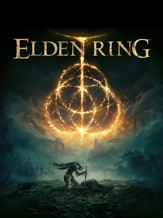

Avant de partir
Introduction : bienvenue dans l'Entre-Terre

Jaquette © Bandai Namco Entertainment / FromSoftware. Guide non officiel.
Cartes interactives
Dans les tableaux de butin, les objets suivis de Voir sur la carte ouvrent la carte interactive de Map Genie (site en anglais) pile sur leur emplacement, le plus souvent avec une capture d'écran. Le lien n'apparaît que lorsque l'emplacement est identifié sans ambiguïté. Il faut du réseau pour ouvrir la carte. Cartes complètes : l'Entre-terre · le Royaume des Ombres. Au début de l'Itinéraire des parties, La zone en images renvoie en plus à une soluce illustrée en français (Millenium ou ActuGaming) quand il en existe une.
Objectif
Te donner tout ce qu'il faut savoir avant de partir : comment ce guide est construit, ce qu'Elden Ring attend de toi, comment fonctionnent ses systèmes (statistiques, armes, magie, fioles, artisanat), et la liste des erreurs que font 90 % des joueurs pendant leurs dix premières heures.
Si tu n'as jamais touché un jeu FromSoftware : lis au moins « Les six réflexes » et « Les erreurs de débutant ». Le reste peut attendre que tu aies des questions.
Ce qu'est Elden Ring
Elden Ring est un action-RPG en monde ouvert de FromSoftware, sorti en 2022. Tu incarnes un Sans-éclat, revenu dans l'Entre-Terre pour recoller les morceaux d'un anneau brisé et devenir Seigneur d'Elden.
Concrètement, ça donne :
- Un monde ouvert divisé en grandes régions (Nécrolimbe, Liurnia, Caelid, le plateau d'Altus, les Cimes des Géants…), qu'on parcourt à cheval sur Torrent.
- Six grands donjons légendaires, chacun gardé par un Semi-Dieu qui laisse une Rune majeure.
- Des dizaines de donjons mineurs : catacombes, grottes, tunnels, tombes des héros.
- Des quêtes de PNJ qui ne s'affichent nulle part dans un journal : elles avancent quand tu passes au bon endroit au bon moment, et se cassent quand tu progresses trop vite.
- Une extension, Shadow of the Erdtree, qui ouvre un monde parallèle, le Royaume des Ombres, avec son propre système de puissance.
La bonne nouvelle : Elden Ring est le plus permissif des jeux de son studio. Tu peux presque toujours contourner un obstacle, aller ailleurs, revenir plus fort.
Comment lire ce guide
- Les parties 01 à 27 suivent l'ordre de progression conseillé, région par région, donjon par donjon.
- Les parties 28 à 32 rassemblent ce qui traverse tout le jeu : quêtes de PNJ, énigmes, collectibles, équipement essentiel.
- Les parties 33 à 42 couvrent l'extension Shadow of the Erdtree.
- La partie 99 contient l'index, les manquables et la check-list finale.
Les deux symboles à repérer :
- ⚠️ Attention : un danger, un point de non-retour, une information à ne pas rater.
- ⏳ Manquable ou astuce à faire au bon moment : quelque chose qui peut se perdre, ou un raccourci qui change la vie.
Le niveau de spoilers est léger : on nomme les boss et les lieux, on ne raconte pas l'histoire.
Les six réflexes à prendre tout de suite
- Explore avant de te battre. Chaque site de grâce gagné est un raccourci ; chaque coffre trouvé est un niveau économisé. Si un ennemi te bloque, il y a presque toujours un autre chemin.
- Reste sur Torrent en extérieur. Le double saut du cheval est une esquive. La plupart des combats de plaine se gagnent à cheval, en frappant au passage.
- Investis dans la Vigueur. C'est la statistique qui transforme « je meurs en deux coups » en « j'ai droit à l'erreur ».
- Ne t'obstine pas sur un boss. Trois essais qui ne progressent pas = va ailleurs, monte de trois niveaux, améliore ton arme, reviens. Ce n'est pas de la triche, c'est la structure du jeu.
- Améliore une seule arme. Les pierres de forge sont limitées au début : une arme +6 vaut mieux que trois armes +2.
- Parle à tout le monde, deux fois. Les PNJ ont souvent une deuxième ligne de dialogue, et c'est là que se cachent les objets clés.
Les systèmes essentiels
Les huit statistiques
| Statistique | Ce qu'elle augmente | À qui elle sert |
|---|---|---|
| Vigueur | PV, résistance au Feu, immunité (poison, peste) | Tout le monde, en priorité |
| Esprit | PC (la mana), focalisation (sommeil, folie) | Mages, mais aussi cendres d'invocation et cendres de guerre |
| Endurance | Barre d'endurance, défense physique, robustesse (hémorragie, gel) | Tout le monde |
| Force | Dégâts des armes à scaling Force, charge d'équipement maximale | Armes lourdes, armures lourdes |
| Dextérité | Dégâts des armes à scaling Dextérité, réduit les dégâts de chute, réduit le temps d'incantation, évite de tomber de Torrent | Armes rapides, arcs, mages pressés |
| Intelligence | Puissance des sorcelleries | Mages « bâton d'éclat » |
| Foi | Puissance des incantations | Prêtres, builds de feu et de sacré |
| Ésotérisme | Découverte d'objets, altérations d'état (saignement, putréfaction) | Builds saignement, farmeurs |
Les deux règles à retenir :
- Le ratio équipement / charge maximale ne doit pas dépasser 70 %. Au-delà, tes roulades deviennent des « fat rolls » : la fenêtre d'invulnérabilité est minuscule. Le jeu te le dit : le sol tremble à chaque roulade.
- Porter une arme à deux mains donne un bonus de 50 % en Force. Une arme qui demande 15 en Force est donc utilisable avec 10, à deux mains. C'est le meilleur raccourci du début de partie.
Les dix classes de départ
Le choix n'est pas déterminant : tout l'équipement de départ se retrouve ailleurs dans le jeu, et la répartition initiale ne pèse presque rien après vingt niveaux. Ne passe pas trois heures sur cet écran (sauf si tu prévois du PvP, où les niveaux comptent).
| Classe | Points forts | Pour qui |
|---|---|---|
| Héro | Force 16, Vigueur 14 | Taper fort, simplement |
| Vagabond | Force 14, Dex 13, Vigueur 15 | Build « qualité » Force/Dextérité, le plus solide au départ |
| Guerrier | Dextérité 16 | Coups rapides, deux armes |
| Samouraï | Dex 15, Endurance 13, compétence d'arme dès le départ | Le meilleur départ pour un débutant qui aime bouger |
| Bandit | Ésotérisme 14, arc dès le début | Distance, loot, saignement |
| Astrologue | Intelligence 16, Esprit 15 | Le mage pur — Vigueur 9, on meurt vite |
| Prisonnier | Dex 14 / Int 14 | Hybride épée + sorts |
| Confesseur | Foi 14, correct au corps-à-corps | Build Dex/Foi ou Force/Foi |
| Prophète | Foi 16, commence avec Soin | Le soin de départ dépanne énormément |
| Dépravé | Niveau 1, toutes les stats à 10 | Ceux qui savent exactement où ils vont |
Les armes et leur amélioration
- Les armes normales montent jusqu'à +25 avec des pierres de forge ; les armes spéciales (celles qui ont déjà une compétence unique) montent jusqu'à +10 avec des pierres de forge sombre. On ne pose pas de cendre de guerre sur une arme spéciale.
- ⚠️ Avant d'améliorer quoi que ce soit, il te faut le Couteau à aiguiser (partie 01) : sans lui, Hewg refuse de poser des cendres de guerre et de changer les affinités.
- ⏳ Les perles de mineur débloquent les paliers d'amélioration chez Hewg : elles sont listées en partie 31.
- Il n'existe aucun forgeron dans le Royaume des Ombres : pour le DLC, tout se fait à la Table ronde (partie 42).
Les cendres de guerre et les affinités
Une cendre de guerre remplace la compétence d'une arme et peut changer son affinité (Lourd, Aiguisé, Sacré, Froid, Saignement…), donc son scaling. C'est l'outil qui permet de garder une arme qu'on aime en changeant complètement de build. Les cendres qui comptent sont en partie 32.
Les cendres d'invocation
Récupère la Cloche mande-esprit auprès de Ranni, à l'Église d'Elleh, la nuit, dès tes premières heures : elle permet d'invoquer des esprits. Ils divisent la difficulté de la plupart des boss par deux. Roderika les améliore, une fois installée à la Table ronde (partie 04).
Les fioles
- Deux fioles : larmes cramoisies (PV) et larmes céruléennes (PC). Tu répartis librement le nombre de charges entre les deux, à n'importe quel site de grâce.
- Les Graines dorées ajoutent une charge (jusqu'à 14 au total), les Larmes de vie augmentent la puissance de chaque charge. Tout est listé en partie 31.
- La Fiole de salut miraculeux est une fiole spéciale qu'on remplit de larmes de mélange pour se fabriquer des buffs : elle change des combats entiers, et le DLC n'a plus que ce type de larmes (partie 42).
La magie
- Les sorcelleries demandent de l'Intelligence et un bâton d'éclat.
- Les incantations demandent de la Foi (parfois de l'Ésotérisme) et un sceau sacré.
- Miriel, à l'Église des vœux de Liurnia, apprend les deux : c'est le marchand de sorts le plus complet du jeu (partie 13).
- ⚠️ Un sort appris est définitif, mais il faut l'équiper à un site de grâce pour l'utiliser.
Les altérations d'état
| Altération | Ce qu'elle fait | La statistique qui protège |
|---|---|---|
| Hémorragie (saignement) | Gros dégâts d'un coup | Robustesse (Endurance) |
| Congélation (gel) | Dégâts + vulnérabilité accrue | Robustesse (Endurance) |
| Poison | Dégâts dans le temps | Immunité (Vigueur) |
| Putréfaction écarlate | Dégâts dans le temps, très violents | Immunité (Vigueur) |
| Sommeil | Te met hors jeu quelques secondes | Focalisation (Esprit) |
| Folie / démence | Gros dégâts immédiats | Focalisation (Esprit) |
Les altérations marchent aussi dans l'autre sens : le saignement et la putréfaction écarlate sont deux des meilleures sources de dégâts du jeu contre les gros boss.
L'artisanat
⏳ Achète le Manuel de fabrication du cueilleur auprès du marchand nomade de Nécrolimbe dès le début : il débloque les flèches, les boulettes de soin et les objets de statut. Les manuels suivants s'achètent ou se ramassent, et certains objets — les grands pots, par exemple — sont la seule façon de tuer certains adversaires du DLC (partie 42).
La progression et les Runes majeures
- Chaque Semi-Dieu laisse un Souvenir (à échanger chez Enia, à la Table ronde) et une Rune majeure, qu'il faut activer à une Tour divine pour qu'elle serve (partie 30).
- Il faut deux Runes majeures pour entrer à Leyndell, la capitale.
- Le Médaillon de Rold ouvre les Cimes des Géants, et le Médaillon secret de l'Arbre-Sacré (en deux moitiés) ouvre les Champs enneigés consacrés (parties 21 et 22).
Les erreurs de débutant
- Foncer plein nord vers le château dès le début. Margit et Godrick attendent que tu aies exploré Nécrolimbe. Fais le tour, tu reviendras avec trois niveaux d'arme de plus.
- Répartir ses runes sur toutes les statistiques. Choisis deux stats offensives et monte Vigueur en parallèle. Le reste attend.
- Améliorer cinq armes en même temps. Les pierres de forge sont rares avant Liurnia : une seule arme, jusqu'au bout.
- Porter la plus grosse armure trouvée. Si le sol tremble quand tu roules, tu es trop lourd : tu viens de troquer ta seule défense fiable contre quelques points d'absorption.
- Oublier les cendres d'invocation. Beaucoup de joueurs terminent Nécrolimbe sans la Cloche mande-esprit et trouvent le jeu injuste. Elle est disponible la première nuit.
- ⚠️ Garder ses runes sur soi. Dépense-les avant un boss ou une zone inconnue : mourir deux fois de suite, c'est tout perdre.
- Ignorer les PNJ ou progresser trop vite. La moitié des quêtes se cassent en battant un boss trop tôt — les parties 28, 29 et 41 disent exactement quand.
- Négliger les altérations d'état. Un ennemi qui résiste à ton épée s'effondre souvent sous le saignement ou le gel.
- Ne jamais parer, ne jamais sauter. Les attaques au sol s'esquivent en sautant, et les parades ouvrent des coups critiques. Ce sont deux boutons que la plupart des joueurs n'utilisent jamais.
- Croire qu'il faut être « prêt ». Le vrai remède à un mur, c'est aller voir ailleurs : une Graine dorée, un talisman et deux niveaux d'arme suffisent souvent.
Les dépendances de version
- Ce guide décrit la dernière version du jeu, DLC inclus.
- Certains emplacements ont changé au fil des correctifs (des objets de quête déplacés, des raccourcis bouchés) : quand une information dépend d'un patch, c'est signalé sur place.
- Pour entrer dans Shadow of the Erdtree, il faut avoir vaincu Radahn ET Mohg (partie 33).
- Le DLC ignore tes niveaux : ta puissance y dépend des esquilles de l'Arbre-Occulte et des cendres spirituelles vénérées, pas de tes runes (partie 33).
Check-list des premières heures
- Torrent obtenu (Mélina, après trois sites de grâce)
- Cloche mande-esprit récupérée auprès de Ranni, à l'Église d'Elleh, la nuit
- Couteau à aiguiser trouvé aux Ruines de la porte
- Manuel de fabrication du cueilleur acheté au marchand nomade
- Carte de Nécrolimbe récupérée
- Une seule arme choisie et améliorée
- Ratio d'équipement sous 70 % vérifié
- Vigueur montée avant tout le reste
- Deux ou trois Graines dorées consommées
- Bastion de la Table ronde débloqué (Hewg, Enia, Roderika)
Partie 01
Premiers pas et Nécrolimbe ouest
L'essentiel
- Objectif : le voyage entre les grâces, Torrent et la Cloche mande-esprit, puis Margit.
- Le boss du tutoriel est censé te tuer : ne t'acharne pas.
- Ne tue pas Pat l'affranchi : seul vendeur des Entraves de Margit.
- L'étreinte de Fia : juste avant un boss, pas en exploration.
Objectif
Sortir du tutoriel, débloquer les trois outils qui changent tout — le voyage entre les grâces, la monture Torrent et la Cloche mande-esprit —, nettoyer l'ouest de Nécrolimbe (Limgrave), puis franchir le premier vrai mur du jeu : Margit le déchu, qui garde la route du Château de Voilorage. En chemin, tu ouvres la Table de la grâce (Roundtable Hold), le hub où vivent le forgeron et la moitié des PNJ du jeu.
Niveau conseillé : 1 à 20, arme +2 à +3. Margit se fait confortablement autour du niveau 20-25 avec une arme +3.
Itinéraire
📍 La zone en images : Nécrolimbe — soluce illustrée sur Millenium, en français.
- Grotte du Puits funeste (le tutoriel), puis le site de grâce Le Commencement.
- Suis la traînée de poudre dorée vers le nord-ouest : Église d'Elleh, puis un détour vers l'ouest pour la Grotte du bosquet.
- Ruines de la porte, au nord : la carte, Mélina et Torrent.
- Catacombes orageuses, à l'ouest de la Grotte du bosquet.
- Valorage (Stormhill) en montant vers le nord-ouest : Geôle éternelle, Cabane de Valorage, Cabane du maître de guerre, Catacombes funestes.
- Tunnel de Gardefort, la grâce juste avant Margit.
Déroulé pas à pas
Sortir du tutoriel
- Le boss du tutoriel te tue : c'est prévu par le scénario, n'insiste pas. Tu peux le battre plus tard, la salle reste accessible.
- Après la Grotte du Puits funeste, touche la grâce Le Commencement et parle à Visage Blanc Varré, le premier PNJ du jeu. Il t'envoie chez Godrick ; sa vraie quête ne commence qu'en Liurnia (partie 29).
- Ramasse la Petite effigie dorée juste en dessous de la grâce.
- Le chevalier en armure dorée sur le chemin est la Sentinelle de l'Arbre : ce n'est pas le moment. Contourne-le par le nord.
- Suis la traînée de poudre dorée (la « guidance de la grâce ») : c'est le fil d'Ariane du jeu, active-le depuis le menu à chaque fois que tu es perdu.
Église d'Elleh
- Touche la grâce : tu débloques le voyage rapide entre les grâces. À partir de là, tu ne reperds plus jamais de terrain.
- Kalé le marchand t'y attend : il vend les objets de base et, surtout, il te donne l'émote « Claquement de doigts » — indispensable pour parler à Blaidd dans les Bois brumeux (partie 02).
- Un Éclat de pierre de forge est posé juste à côté, sur la ruine.
- Reviens ici la nuit après avoir débloqué Torrent : Renna apparaît assise sur la ruine et te donne la Cloche mande-esprit (🗺️ carte) et les Cendres de loups solitaires (🗺️ carte). Sans cette cloche, tu ne peux invoquer aucun esprit de tout le jeu.
Grotte du bosquet
- Entrée à l'ouest de l'Église d'Elleh, dans une petite dépression rocheuse.
- Quatre loups à l'entrée gardent un Pot fissuré ; deux autres gardent 3 Pierres luisantes et une Rune d'indigent.
- Boss : Homme-bête de Farum Azula — ton premier vrai adversaire. Il enchaîne longtemps : laisse-le finir ses combos, place un ou deux coups, recule.
- Ses deux ouvertures : après son attaque plongeante (il en enchaîne une seconde juste derrière, attends-la), et quand il plante sa machette au sol — reste collé et roule dans l'attaque pour traverser avec les images d'invulnérabilité.
- Quand il hurle, il reste inactif plusieurs secondes : foncе et frappe.
- Récompense : Talisman de dragon de feu (résistance au feu).
Ruines de la porte
- Remonte au nord. Contourne le camp au lieu de charger dedans et va toucher la grâce au nord : tu rencontres Mélina.
- Mélina te permet enfin de monter de niveau (les runes ne servaient à rien jusque-là) et te donne le Sifflet de destrier spectral (🗺️ carte) : tu peux invoquer Torrent.
- Le camp, méthodiquement :
- d'abord le soldat au cor qui patrouille au centre (il alerte tout le camp) ;
- puis le soldat d'élite à l'est : un coup dans le dos lui enlève la moitié de sa vie ;
- attention aux deux loups qui accompagnent les soldats de l'est.
- Ramasse la carte de Nécrolimbe au centre du camp : les morceaux de carte sont la première chose à chercher dans chaque région.
- Coffres et charrettes : un Fléau d'armes (🗺️ carte) dans la charrette gardée près de la grâce, un Espadon seigneurial (🗺️ carte) dans une autre charrette à l'ouest.
- Le passage souterrain, là où se tenait le soldat d'élite, contient les Cendres de guerre : Piétinement orageux (🗺️ carte) et un Couteau à aiguiser (🗺️ carte).
- Le Couteau à aiguiser est capital : sans lui, tu ne peux appliquer aucune cendre de guerre à tes armes. Ne quitte pas les Ruines de la porte sans l'avoir pris.
Catacombes orageuses
- Depuis la Grotte du bosquet, pars à l'ouest : une statue pointe l'entrée.
- Deux diablotins en face, dont un en embuscade sur la droite. 2 Résines de racine à ramasser.
- La colonne de feu : frappe-la pour la faire descendre, passe derrière pour la Caboche causante : Bonjour (🗺️ carte). De l'autre côté, même manœuvre pour 3 Papillons flamboyants — cinq diablotins dans cette salle.
- L'échelle un peu avant mène à du muguet et aux Cendres de nobles errants (🗺️ carte). Laisse-toi ensuite tomber à l'étage inférieur pour atteindre le levier.
- Boss : Veilleur de l'Arbre-Monde — un pantin de pierre lent. Reste sur ses côtés. Récompense : Cendres de sorcier noble (🗺️ carte).
Monter à Valorage
- La montée est piégée : soldats à l'arbalète, et un géant qui frappe depuis le pont au-dessus.
- Passe à cheval sans t'arrêter jusqu'au bout du chemin et ramasse la Graine dorée.
- Fais demi-tour pour tuer les soldats tranquillement : Rune d'indigent, Chapel de fantassin, Masse de chair.
- À gauche, la Geôle éternelle de Valorage enferme le Chevalier du Creuset. Il tape très fort pour ce stade du jeu : reviens plus tard si tu doutes.
- Phase 1 : combos simples, bloque au bouclier et riposte. S'il te voit trop loin, il déclenche une secousse au sol — esquive au dernier moment.
- Phase 2 (à mi-vie) : une attaque plongeante (esquive sur le côté) et un coup de queue à grande portée (blocable au bouclier).
- Récompense : Aspects du Creuset : queue (🗺️ carte).
- Les tombes :
- Sur un cadavre à droite : Éclat de pierre de forge
- Un peu au nord : 4 Runes d'indigent, une Rune d'habitant des confins [4], 2 Runes d'habitant des confins [1], une Rune d'habitant des confins [2]
- La Cabane de Valorage (suis la ligne dorée) : tu y rencontres Roderika.
- Elle te donne l'émote « S'asseoir de côté ».
- Parle-lui trois fois : Cendres de méduse spirituelle (🗺️ carte)
- Juste dehors : Clé-lame de pierre
- La Sentinelle de l'Arbre (le chevalier doré du départ) devient faisable vers le niveau 15, et surtout à cheval.
- Tourne autour de lui, place un ou deux coups derrière après chacune de ses attaques, repars.
- Reste dans son dos : ses coups de lance ne portent pas en arrière. S'il se coince dans le décor, enchaîne.
- Sur son attaque sautée, accélère pour sortir de la zone.
- Récompense : Hallebarde dorée (🗺️ carte), une des meilleures armes de début de partie en Force/Foi.
- Catacombes funestes : au sud-ouest du colisée, au nord de la Cabane du maître de guerre. Un spectre te fait signe à l'entrée.
- Descends les escaliers, puis passe dessous pour un Muguet mortifère.
- Le petit passage suivant à gauche contient l'Uchigatana — un des meilleurs katanas du jeu, disponible dès la première heure.
- En bas, tout droit : 3 Roses de sang et le levier.
- Boss : Assassin des couteaux noirs — il se rend invisible et frappe fort. Récompense : Dague pourpre de l'assassin (🗺️ carte). Le coffre de la salle contient une Mortefleur (à donner à Gurranq, partie 29).
- Au nord-est, dans un récipient de pierre, une Larme de cristal noueuse de force (🗺️ carte) (bonus de Force temporaire à mélanger dans ta fiole).
Tunnel de Gardefort et Margit
- Suis le chemin pavé, mais ne monte pas directement au rempart : une baliste te canarde. Passe par la gauche (il y a beaucoup de soldats à droite), assassine le servant de la baliste, puis repose-toi à la grâce.
- Boss : Margit le déchu — faible au Tranchant, résistant au Sacré, résistance moyenne aux altérations d'état.
- Les Entraves de Margit changent le combat : 5 000 runes chez Pat l'affranchi, à condition de l'avoir trouvé dans la Caverne des eaux noires (près du lac d'Agheel, partie 02) et de ne pas l'avoir tué. Elles le clouent au sol deux fois par combat, uniquement en phase 1.
- Le piège : si tu restes collé à lui, il invoque une dague de lumière et t'enchaîne. Garde une distance moyenne.
- Phase 2 : provoque son attaque sautée au marteau en le harcelant de sorts ou d'objets de jet. Il lance deux dagues, saute — et reste vulnérable à l'atterrissage. Un ou deux coups, et on recommence.
- Récompense : Sacoche à talismans (🗺️ carte) (un emplacement de talisman en plus).
- Après ta première tentative sur Margit, repose-toi à n'importe quelle grâce : Mélina t'emmène à la Table de la grâce.
La Table de la grâce
- Le hub du jeu. On y trouve :
- Hewg le maître forgeron : améliore les armes et duplique les cendres d'invocation ;
- Frère Corhyn : vend des incantations ;
- Fia : son étreinte donne la bénédiction du baldaquin (résistance aux dégâts pendant un moment) mais baisse tes PV maximum tant que tu la gardes ;
- Sire Gideon Ofnir, D, Enia, la coiffeuse pour changer d'apparence ;
- les Carcasses des Servantes jumelles, qui vendent les objets de jeu en ligne (invocation et invasion) nom exact de ces objets à vérifier en jeu.
- L'escalier à côté de Hewg mène à une statue scellée : ouvre-la avec une Clé-lame de pierre pour l'Arbalète noire de Crepus (🗺️ carte) et 20 Carreaux torsadés noirs.
- Le personnage au masque de squelette, contre le mur, donne l'émote « Que voulez-vous ? ».
Quêtes et lieux
- Varré (grâce du Commencement) : sa quête démarre vraiment en Liurnia. Elle exige de ne pas suivre la voie « normale » sur un point précis (partie 29).
- Roderika (Cabane de Valorage) : parle-lui trois fois, puis envoie-la à la Table de la grâce. Elle devient harmonisatrice spirituelle et améliore tes cendres d'invocation (partie 29).
- Ranni / Renna (Église d'Elleh, la nuit) : première apparition. Sa grande quête commence au Manoir de Caria (partie 28).
- Pat l'affranchi : Caverne des eaux noires (partie 02). Ne le tue pas : il devient marchand et vend les Entraves de Margit.
- La Cabane du maître de guerre (Valorage) : Cendres de guerre et un mini-boss nocturne.
- La Geôle éternelle de Valorage : les geôles éternelles sont des arènes de boss isolées, une par région.
- La Cathédrale de la communion draconique (Caelid) : c'est là qu'on échange les Cœurs de dragon contre des incantations de dragon.
Butin exhaustif
| Nom exact | Type | Où / comment l'obtenir | Utilité |
|---|---|---|---|
| Petite effigie dorée | Objet | Sous la grâce du Commencement · Voir sur la carte | Objet de départ |
| Éclat de pierre de forge | Matériau | Église d'Elleh ; cadavre à droite à Valorage | Amélioration d'arme |
| Émote « Claquement de doigts » | Émote | Kalé, Église d'Elleh | Obligatoire pour parler à Blaidd |
| Cloche mande-esprit | Objet clé | Renna, Église d'Elleh, la nuit, après Torrent · Voir sur la carte | Débloque toutes les cendres d'invocation |
| Cendres de loups solitaires | Cendres d'invocation | Renna, avec la cloche · Voir sur la carte | Trois loups, excellents en début de partie |
| Pot fissuré, 3 Pierres luisantes | Matériaux | Grotte du bosquet | Artisanat |
| Talisman de dragon de feu | Talisman | Homme-bête de Farum Azula, Grotte du bosquet · Voir sur la carte | Résistance au feu |
| Sifflet de destrier spectral | Objet clé | Mélina, Ruines de la porte · Voir sur la carte | Invoque Torrent |
| Carte de Nécrolimbe | Carte | Centre du camp des Ruines de la porte | Révèle la région |
| Fléau d'armes | Arme | Charrette près de la grâce, Ruines de la porte · Voir sur la carte | Arme de frappe |
| Espadon seigneurial | Arme | Charrette à l'ouest, Ruines de la porte · Voir sur la carte | Grande épée de Force |
| Cendres de guerre : Piétinement orageux | Cendres de guerre | Passage souterrain des Ruines de la porte · Voir sur la carte | Première compétence d'arme |
| Couteau à aiguiser | Objet clé | Même passage souterrain · Voir sur la carte | Indispensable pour appliquer les cendres de guerre |
| 2 Résines de racine, 3 Papillons flamboyants, muguet | Matériaux | Catacombes orageuses | Artisanat |
| Caboche causante : Bonjour | Objet | Derrière la première colonne de feu, Catacombes orageuses · Voir sur la carte | Amusant, à poser au sol |
| Cendres de nobles errants | Cendres d'invocation | Haut de l'échelle, Catacombes orageuses · Voir sur la carte | Trois nobles, bonne distraction |
| Cendres de sorcier noble | Cendres d'invocation | Veilleur de l'Arbre-Monde · Voir sur la carte | Dégâts magiques à distance |
| Graine dorée | Objet clé | Haut du chemin qui monte à Valorage | +1 fiole |
| Chapel de fantassin, Masse de chair | Armure, matériau | Soldats du chemin de Valorage | Équipement, artisanat |
| Aspects du Creuset : queue | Incantation | Chevalier du Creuset, Geôle éternelle de Valorage · Voir sur la carte | Attaque de queue, portée surprenante |
| Clé-lame de pierre | Objet clé | Devant la Cabane de Valorage | Ouvre les statues scellées |
| Émote « S'asseoir de côté » | Émote | Roderika, Cabane de Valorage | Émote |
| Cendres de méduse spirituelle | Cendres d'invocation | Roderika, après trois dialogues · Voir sur la carte | Tank et poison, très solide tôt |
| Hallebarde dorée | Arme | Sentinelle de l'Arbre · Voir sur la carte | Arme Force/Foi de référence en début de jeu |
| Muguet mortifère, 3 Roses de sang | Matériaux | Catacombes funestes | Artisanat (dont les objets de saignement) |
| Uchigatana | Arme | Passage à gauche, Catacombes funestes · Voir sur la carte | Un des meilleurs katanas, disponible tout de suite |
| Dague pourpre de l'assassin | Arme | Assassin des couteaux noirs · Voir sur la carte | Dague qui rend des PV sur coup critique |
| Mortefleur | Objet clé | Coffre de la salle du boss, Catacombes funestes | À donner à Gurranq (partie 29) |
| Larme de cristal noueuse de force | Larme de cristal | Récipient de pierre au nord-est des Catacombes funestes · Voir sur la carte | Force temporaire dans la fiole |
| Cœur de dragon | Objet clé | Agheel le dragon volant (partie 02) · Voir sur la carte | Incantations de dragon |
| Sacoche à talismans | Objet clé | Margit le déchu · Voir sur la carte | +1 emplacement de talisman |
| Arbalète noire de Crepus, 20 Carreaux torsadés noirs | Arme, munitions | Statue scellée de la Table de la grâce (Clé-lame) · Voir sur la carte | Arbalète silencieuse |
| Bénédiction du baldaquin | Objet | Étreinte de Fia, Table de la grâce | Réduit tes PV max tant que tu la portes |
| Émote « Que voulez-vous ? » | Émote | Personnage au masque de squelette, Table de la grâce | Émote |
| Entraves de Margit | Objet clé | Pat l'affranchi, 5 000 runes · Voir sur la carte | Immobilise Margit deux fois en phase 1 |
Conseils et pièges
- Améliore une seule arme. Les éclats de pierre de forge sont rares au début : concentre tout sur l'arme que tu joues vraiment. Une arme +3 vaut dix niveaux de personnage.
- Le Couteau à aiguiser d'abord. Une cendre de guerre change plus ton personnage qu'un talisman.
- Explore avant de forcer. Elden Ring ne te bloque jamais : si un boss te dépasse, il y a toujours trois autres endroits à visiter. Margit n'est pas obligatoire tout de suite.
- Les backstabs règlent les camps. Accroupi, derrière, une touche : la moitié de la vie d'un soldat d'élite.
- Les Scarabées larmoyants (les petits insectes lumineux qui fuient) lâchent des cendres de guerre : tue-les à vue. Certaines sources francophones leur prêtent aussi un effet de remplissage de fiole : à vérifier en jeu.
- Torrent double saute et encaisse les chutes : c'est aussi un outil d'exploration, pas seulement un moyen de transport.
- Vends ce que tu ne joues pas à Kalé : les runes de début de partie sont précieuses.
Alertes
- ⚠️ Le boss du tutoriel est censé te tuer. Ne t'acharne pas, la salle reste ouverte.
- ⚠️ Ne tue pas Pat l'affranchi dans la Caverne des eaux noires : c'est le seul vendeur des Entraves de Margit.
- ⚠️ L'étreinte de Fia réduit tes PV maximum tant que tu gardes la bénédiction : utilise-la juste avant un boss, pas en exploration.
- ⚠️ La Sentinelle de l'Arbre et le Chevalier du Creuset sont volontairement au-dessus de ton niveau au départ : ce ne sont pas des murs, ce sont des rendez-vous.
- ⏳ Manquables : la Graine dorée du chemin de Valorage, l'Uchigatana des Catacombes funestes, la Mortefleur du coffre, la Clé-lame de pierre devant la Cabane de Valorage, et l'Arbalète noire de Crepus (il faut une Clé-lame).
- ⏳ Renna n'apparaît à l'Église d'Elleh que la nuit et seulement après Torrent : si tu ne repasses jamais, tu joues tout le jeu sans cendres d'invocation.
Check-list
- Grâce Le Commencement touchée, Petite effigie dorée ramassée
- Église d'Elleh : Kalé rencontré, émote « Claquement de doigts » obtenue
- Grotte du bosquet : Homme-bête de Farum Azula vaincu, Talisman de dragon de feu
- Ruines de la porte : carte de Nécrolimbe, Torrent, Couteau à aiguiser, Piétinement orageux
- Renna rencontrée à l'Église d'Elleh la nuit : Cloche mande-esprit et Cendres de loups solitaires
- Catacombes orageuses : Veilleur de l'Arbre-Monde vaincu, Cendres de sorcier noble
- Graine dorée du chemin de Valorage ramassée
- Roderika : trois dialogues, Cendres de méduse spirituelle
- Sentinelle de l'Arbre vaincue, Hallebarde dorée
- Catacombes funestes : Uchigatana, Assassin des couteaux noirs vaincu, Mortefleur
- Chevalier du Creuset de la Geôle éternelle vaincu (ou noté pour plus tard)
- Margit le déchu vaincu, Sacoche à talismans obtenue
- Table de la grâce ouverte, Arbalète noire de Crepus récupérée
Partie 02
Nécrolimbe est, lac d'Agheel et Bois brumeux
L'essentiel
- Au programme : le lac d'Agheel et son dragon, les grottes et catacombes autour, les Bois brumeux.
- Attention : le coffre des ruines du lac est un téléporteur ; la chaîne de la Caverne des eaux noires réveille tout le monde.
- Ne tue pas Pat l'affranchi.
Objectif
Vider tout l'est de Nécrolimbe avant d'entrer au Château de Voilorage : le lac d'Agheel et son dragon, les grottes et catacombes qui l'entourent, les Bois brumeux où t'attend Blaidd, le Fort Haight et sa moitié de Médaillon de Dectus, les Galeries de Nécrolimbe pour faire le plein de pierres de forge, et le puits de la Siofra qui ouvre tout un monde souterrain. Cette section est celle qui arme vraiment ton personnage : trois cendres de guerre, deux armes de référence, un cœur de dragon et deux graines dorées.
Niveau conseillé : 15 à 30, arme +3 à +5.
Itinéraire
📍 La zone en images : Nécrolimbe — soluce illustrée sur Millenium, en français.
- Le pont du lac d'Agheel et la rive nord, puis le lac lui-même.
- Sous le pont : l'invasion, puis la Caverne des eaux noires (Pat).
- Côte des eaux noires au nord-est, et les Catacombes des eaux noires.
- Sud du lac : le camp, puis la Geôle éternelle du limier esseulé (Darriwil) et les Ruines du littoral.
- Cave du relais en ruines au nord : Sellen.
- Bois brumeux : la Bâtisse abandonnée (Blaidd), l'Arbre-Monde mineur, le Village des Eaux nécromantes, le puits de la Siofra.
- Fort Haight, tout au sud-est.
- Galeries de Nécrolimbe, au nord-ouest du lac.
- Grotte marine et l'Église de la communion draconique, à l'ouest de l'Église d'Elleh.
- Cavernes de la Chaussée royale, sous le Pont-saint.
Déroulé pas à pas
Le pont et la rive nord du lac
- Un Éclat de pierre de forge est posé sur le pont au-dessus du lac.
- Un peu plus loin, un scarabée brillant lâche les Cendres de guerre : Détermination (🗺️ carte) — une des meilleures compétences génériques du jeu, à mettre sur n'importe quelle arme.
- Les deux géants qui tirent une charrette : laisse-les rejoindre le camp des Ruines de la porte, où ils s'endorment. Ils se rendorment chaque fois que tu t'éloignes, ce qui les rend faciles à tuer. La charrette contient une Grande Hache (🗺️ carte).
- Boss (nuit) : Cavalier Crépusculaire — il apparaît sur le pont, la nuit. Résistant à tout, résistance moyenne aux altérations.
- Attaque le cheval d'abord : quand il tombe, descends de Torrent et place un coup critique. Il réinvoque sa monture aussitôt.
- Sa lance traînée au sol tue Torrent en un coup et te met à terre : garde tes distances sur cette attaque.
- ⚠️ Attention aux falaises : l'arène est le bord d'un plateau.
- Récompense : Cendres de guerre : Estoc répété.
Le lac d'Agheel
- Boss : Agheel le dragon volant, aux Ruines calcinées par un dragon, au sud de la grâce du Nord du lac d'Agheel. Résistant à tout type de dégâts, résistance moyenne aux altérations. Niveau 15-18 conseillé.
- Garde Torrent en vie à tout prix : le souffle de feu le tue en un coup.
- Contrairement à l'habitude des Souls, ses pattes ne sont pas blindées : c'est l'endroit où frapper. L'arène est immense, donc esquive le souffle à cheval, puis reviens dans ses pattes.
- Deux ou trois coups légers, pas plus : il piétine, et sa queue balaie l'arrière.
- Récompense : 1 Cœur de dragon, et l'autel de la Cathédrale de la communion draconique devient actif.
- Tout au sud-ouest, près du cimetière abandonné : un Éclat de pierre de forge.
- Les ruines du lac : une Rune d'habitant des confins [1] près de l'entrée. Le coffre à l'intérieur est un piège (téléporteur) : n'y touche pas si tu ne veux pas partir maintenant. Juste derrière l'entrée, une Clé-lame de pierre gardée par un rat.
- À droite des ruines, là où se tiennent deux chiens, fais un double saut avec Torrent pour trouver une seconde entrée souterraine, celle-ci non piégée : Lame double (🗺️ carte).
- Au centre du lac, une tombe entourée d'insectes cracheurs de poison : une Arteria à côté.
- Tout au sud-est du lac, un scarabée lâche les Cendres de guerre : Dégaine. Des crabes sortent de l'eau dès que tu t'en approches.
Sous le pont : l'invasion et la Caverne des eaux noires
- Sous le pont, une Graisse incendiaire entourée de squelettes qui se relèvent (frappe-les une seconde fois au sol pour les achever définitivement).
- Tu es envahi par un Doigt sanglant qui manie des dagues de saignement — Yura vient t'aider. Récompenses : 1 Remède des Doigts crochus et Reduvia (🗺️ carte), une dague qui projette une lame de sang à distance.
- Caverne des eaux noires, sur la gauche :
- Une chaîne à l'entrée fait sonner des cloches et réveille toute la grotte : contourne-la et tue les ennemis un par un.
- Un coffre à gauche contient 5 Champignons.
- Le coffre du fond est un piège de Pat : tu récupères le Costume en tissu (🗺️ carte) et le Pantalon en tissu, puis Pat l'affranchi t'attaque.
- Ne le tue surtout pas : enlève-lui la moitié de sa vie, il se rend ; place un dernier coup sans le tuer pour déclencher le dialogue final. Tu obtiens 2 Runes d'indigent et l'émote « Implorer le pardon ».
- Pat devient marchand : c'est lui qui vend les Entraves de Margit (5 000 runes) et il a sa propre quête plus tard (partie 29).
Côte des eaux noires et Catacombes des eaux noires
- Au nord du lac, tu croises Yura : il t'explique à quoi sert le Cœur de dragon. 2 Vipérias un peu plus loin, entourées de squelettes.
- Depuis la grâce du Nord du lac d'Agheel, pars au nord-est : un petit campement de soldats et de loups garde le Manuel d'armurier [1] (🗺️ carte). Juste après, la grâce de la Côte des eaux noires.
- Catacombes des eaux noires :
- Tout droit, deux gargouilles lancent des couteaux. Il y a un piège au sol : sers-t'en pour les tuer, puis contourne-le pour prendre 5 Résines de racine et actionner le levier (une troisième gargouille attend dans le recoin).
- Sur l'autre chemin, encore un piège au sol, puis trois gargouilles.
- Boss : Duelliste gardien du tombeau — ses combos sont longs, garde de l'endurance pour esquiver. Il a peu d'équilibre : deux coups l'interrompent souvent. À distance il lance son marteau, donc reste collé. Son attaque sautée le laisse vulnérable plusieurs secondes.
- Récompense : Marteau de guerre (🗺️ carte).
Sud du lac, Darriwil et les Ruines du littoral
- Le camp au nord de la grâce du Sud du lac d'Agheel : ne rentre pas par l'entrée. Fais le tour par les falaises, élimine les mages sur les toits, puis prends les soldats à revers.
- Un coffre à l'entrée : Grande rapière (🗺️ carte). Une Rune d'indigent sur un cadavre. Dans un vase brisé près de la falaise : Éclats de lumière stellaire.
- Descends la falaise (Rune d'indigent en route, Rune d'habitant des confins [1] près des poteaux) et continue au sud jusqu'à la Geôle éternelle du limier esseulé.
- Boss : Darriwil, Chevalier-limier — résistant à tout, résistance moyenne aux altérations.
- Parle à Blaidd avant (voir plus bas) : tu peux alors l'invoquer pour ce combat, ce qui le rend nettement plus simple.
- Il est très rapide et agressif mais frappe moins fort que le Chevalier du Creuset. Arme rapide et endurance en réserve pour esquiver.
- Son arme inflige le saignement : ne laisse pas la jauge se remplir.
- Récompense : Croc de limier (🗺️ carte), un espadon qui inflige le saignement — une arme de référence pour toute la première moitié du jeu.
- De là, pars au nord-ouest pour la grâce des Ruines du littoral.
Cave du relais en ruines et Sellen
- Au nord de la grâce du Sud du lac d'Agheel, une charrette escortée : tue d'abord le cavalier, puis charge le reste avec Torrent, et finis par les géants. 4 Papillons flamboyants contre la falaise.
- Le Relais en ruines : les plantes sont des ennemis et crachent du poison. La grande invoque des rayons magiques sur une large zone : tue-la en premier.
- Sur les cadavres : une Rune d'indigent et une Viande fumée immunisante. Gardées par trois plantes : 2 Pierres luisantes. Au pied d'un poteau au nord : une Patte de volaille en saumure dorée. Dans les tombeaux au sud : Rune d'habitant des confins [1], [2] et 3 Runes d'indigent.
- Boss : Tête de citrouille démente — au niveau 20-25 tu fais de très bons dégâts. Son arme inflige le saignement : reste collé pour le forcer à utiliser sa tête et ses poings plutôt que son fléau.
- Ouvre la porte du fond : tu rencontres Sellen, la sorcière. Elle vend des sorcelleries, lance sa longue quête (partie 28) et te donne l'émote « Hochement de tête ».
Les Bois brumeux
- Après avoir entendu les hurlements dans l'est de Nécrolimbe, retourne parler à Kalé à l'Église d'Elleh : il te donne l'émote « Claquement de doigts » et t'envoie chez Blaidd.
- La Bâtisse abandonnée des Bois brumeux, au sud-ouest de l'Arbre-Monde mineur : monte sur les ruines et utilise l'émote pour faire apparaître Blaidd. Il te demande de retrouver Darriwil — c'est ce qui débloque son invocation à la geôle éternelle.
- L'Arbre-Monde mineur des Bois brumeux : Boss : Avatar de l'Arbre-Monde — faible au Feu et au Tranchant, résistant à tout le reste, immunisé au saignement, très résistant à la congélation.
- Village des Eaux nécromantes, au nord-est : il faut une Clé-lame de pierre pour ouvrir la porte du donjon au centre du village.
- Boss : Nocher diaphane — faible au Contondant et au Sacré, résistant à tout le reste, immunisé au poison, au saignement et à la congélation.
- Il réanime les squelettes en boucle : soit tu tues le Nocher vite, soit tu achèves les squelettes au sol à chaque fois.
- Récompense : 1 Mortefleur (pour Gurranq, partie 29).
- Le puits de la Siofra, à l'est des Bois brumeux : un ascenseur très long descend vers la rivière Siofra, tout un monde souterrain (partie 12). Tu peux aussi y arriver par le coffre piégé de la Caverne des eaux noires, qui te téléporte devant le puits.
Fort Haight
- Tout au sud-est de Nécrolimbe, au sud de l'Arbre-Monde mineur. Il y a une grâce juste à côté et une Graine dorée sur place.
- Nettoie le fort entièrement : le coffre de la plus haute tour contient le Médaillon de Dectus (gauche), la moitié de la clé du Grand ascenseur de Dectus qui mène au Plateau d'Altus (partie 15). Ne repars pas sans lui.
- Kenneth Haight, en haut d'une ruine sur la route de la Troisième Église de Marika :
- Rends-lui son fort : Dague en acier-monde.
- Accepte de le servir, retrouve-le dans la forteresse, fais le ménage des semi-humains et parle-lui en haut du château (partie 29).
Galeries de Nécrolimbe
- Entrée au nord-ouest du lac, derrière un crabe géant.
- Pendant la descente en ascenseur, saute sur les plateformes : une grotte contient une Rune d'habitant des confins [3].
- C'est la mine à pierres de forge du début de jeu : les mineurs sont occupés à travailler, approche accroupi et enchaîne les coups dans le dos. Fais-y le plein d'Éclats de pierre de forge.
- ⏳ Le parcours :
- D'abord à gauche, sur un cadavre : Éclat de pierre de forge (attention aux rats).
- Puis à droite ; au lieu de l'ascenseur, passe à gauche par un autre passage.
- En arrivant, à droite : 3 morceaux de pierre d'éclat.
- Là encore, à gauche plutôt que l'ascenseur : une Rune d'indigent sur une plateforme et un dépôt de Pierre de forge sombre.
- Boss : Troll fouisseur — faible au Tranchant, résistant à la Magie, faible résistance au saignement, au poison et à la putréfaction écarlate, très résistant à la congélation.
- Reste dans ses pieds : comme tous les géants, il se gêne lui-même de près. Une ou deux frappes après chacune de ses attaques, pas plus.
- Récompense : Médaillon de cri (🗺️ carte) (renforce les cris et les souffles).
Grotte marine et Église de la communion draconique
- Depuis l'Église d'Elleh, pars à l'ouest vers la plage. Achète une Torche chez Kalé avant d'entrer : la grotte est totalement noire.
- Sur la plage : un ennemi assis près d'un feu garde une Tranche de viande blanche et des Papillons ; un œuf de pieuvre terrestre au centre.
- Grotte marine : backstab sur l'ennemi au bord de la falaise, puis prends le chemin de droite — ça descend au même endroit mais on ramasse des matériaux (dont un œuf de pieuvre terrestre).
- Boss : Chef semi-humain — deux barres de vie, mais ils ne t'attaquent pas ensemble.
- Tue les deux ennemis de garde à distance avant qu'ils ne crient : tu peux alors surprendre le premier chef par un coup dans le dos.
- Leurs armes infligent le saignement, mais ils y sont eux-mêmes vulnérables : c'est le moment d'utiliser tes objets de saignement.
- Le second est assis au fond de la grotte, près du feu : approche discrètement.
- Récompenses : Nécessaire de couture (🗺️ carte) et Aiguille de couture — ce sont les outils qu'il faut donner à Boc le couturier (partie 29).
- Continue au fond de la grotte : un Papillon flamboyant, et surtout la sortie sur l'île en face de la plage.
- Église de la communion draconique, sur l'île : l'autel ne réagit qu'une fois un dragon tué. C'est ici qu'on échange les Cœurs de dragon contre des incantations de dragon.
- Juste après les ruines : une Tête de libellule géante (🗺️ carte). Tout au sud de l'île, en bas de la falaise : un Grand éclat de pierre de forge. Un scarabée y lâche une Pierre de forge sombre.
Cavernes de la Chaussée royale
- Téléporte-toi à la grâce du Pont-saint : juste à droite, un courant d'air ascendant permet de descendre sans mourir. Continue jusqu'à voir l'entrée sur la gauche.
- Le parcours :
- Descends, tout droit (trou au milieu de la salle), tue les chiens : Rune dorée (1).
- Descends dans le trou par les plateformes.
- En bas, tout droit puis première à gauche : 3 Arterias ; plus bas : 2 Graisses incendiaires.
- La zone de la cascade :
- Un étage plus bas : Pierre de forge (1)
- À gauche, le sommet de la cascade, sur lequel on peut marcher.
- En remontant le courant, au bout : Pierre de forge (2), Rune dorée (4)
- Les piliers :
- Saute sur le pilier avec la chauve-souris, puis rejoins le centre : Shamshir (🗺️ carte)
- Pilier d'en face, au bout : Remède des Doigts crochus
- Longe la gauche et passe sous la cascade pour atteindre le boss.
- Boss : Golem gardien — résistant à tout sauf le Contondant, immunisé à toutes les altérations. Prends une masse ou un marteau si tu en as un. Récompense : Talisman de la danseuse bleue.
Les rendez-vous nocturnes et le retour au Cimetière abandonné
- À la Cabane du maître de guerre (Valorage), la nuit, deux adversaires apparaissent :
- Rapace funeste — faible au Contondant et au Sacré, immunisé au poison, au saignement et à la congélation. Récompense : Lame cornue aux plumes bleues.
- Chasseur de perles cinéraires — résistant à tout. Récompense : Perle cinéraire de marchand d'os (à donner aux Carcasses des Servantes jumelles pour débloquer le stock du marchand d'os).
- Retourne au Cimetière abandonné (le lieu de départ) avec 2 Clé-lames de pierre : la grille scellée ouvre un donjon redoutable pour ce stade du jeu.
- Boss : Esprit d'arbre ulcéreux — faible au Feu, résistant à la Magie, à la Foudre et au Sacré.
- Récompenses : 1 Graine dorée et les cendres du Chevalier banni Oleg (🗺️ carte), l'une des meilleures invocations de début de partie.
Quêtes et lieux
- Blaidd : émote de Kalé → Bâtisse abandonnée → Darriwil → Ranni → la Siofra → Seluvis, Sellen → festival du Château du Lion Rouge. Sa quête se termine mal et il faut finir celle de Ranni d'abord (partie 28).
- Yura : sous le pont du lac d'Agheel, puis au nord du lac. Sa quête suit le Doigt sanglant à travers plusieurs régions (partie 29).
- Pat l'affranchi : Caverne des eaux noires. Ne le tue pas.
- Sellen : Cave du relais en ruines. Vend les sorcelleries de base et lance une quête qui traverse tout le jeu (partie 28).
- Kenneth Haight et Nepheli Loux : Troisième Église de Marika, Fort Haight, puis Château de Voilorage (partie 29). La quête est perdue si tu tues Maliketh trop tôt.
- Boc le couturier : il faut le libérer du buisson près du lac d'Agheel avec l'émote appropriée, puis lui apporter le Nécessaire de couture de la Grotte marine.
- La Troisième Église de Marika (est de Nécrolimbe) : une Larme de vie et le Flacon sacré.
- Le puits de la Siofra : accès à la partie 12.
Butin exhaustif
| Nom exact | Type | Où / comment l'obtenir | Utilité |
|---|---|---|---|
| Cendres de guerre : Détermination | Cendres de guerre | Scarabée sur le pont du lac d'Agheel · Voir sur la carte | Bonus de dégâts sur le coup suivant, utile partout |
| Grande Hache | Arme | Charrette des géants, camp des Ruines de la porte · Voir sur la carte | Hache de Force |
| Cendres de guerre : Estoc répété | Cendres de guerre | Cavalier Crépusculaire, pont du lac (nuit) · Voir sur la carte | Enchaînement perforant |
| 1 Cœur de dragon | Objet clé | Agheel le dragon volant | Incantations à la Cathédrale de la communion draconique |
| Clé-lame de pierre | Objet clé | Derrière l'entrée des ruines du lac ; pont de la Siofra | Ouvre les portes scellées |
| Lame double | Arme | Souterrain à droite des ruines du lac (double saut) · Voir sur la carte | Arme à deux extrémités |
| Cendres de guerre : Dégaine | Cendres de guerre | Scarabée au sud-est du lac | Dégainage rapide, très bon en Dextérité |
| Reduvia | Arme | Doigt sanglant sous le pont du lac · Voir sur la carte | Dague à projectile de sang, excellente en Arcane |
| Remède des Doigts crochus | Objet | Invasion sous le pont ; Cavernes de la Chaussée royale ; Siofra | Objet de jeu en ligne |
| Costume en tissu, Pantalon en tissu | Armure | Coffre piégé de la Caverne des eaux noires · Voir sur la carte | Tenue légère |
| Émote « Implorer le pardon » | Émote | Pat, après l'avoir épargné | Émote |
| Manuel d'armurier [1] | Manuel | Campement au nord-est du lac · Voir sur la carte | Recettes d'artisanat |
| 5 Résines de racine | Matériau | Catacombes des eaux noires | Renfort d'arme |
| Marteau de guerre | Arme | Duelliste gardien du tombeau · Voir sur la carte | Arme contondante fiable |
| Grande rapière, Éclats de lumière stellaire | Arme, consommable | Camp au sud du lac d'Agheel · Voir sur la carte | Équipement |
| Croc de limier | Arme | Darriwil, Geôle éternelle du limier esseulé · Voir sur la carte | Espadon de saignement, référence en Dextérité |
| 4 Papillons flamboyants, Viande fumée immunisante, 2 Pierres luisantes, Patte de volaille en saumure dorée | Matériaux, consommables | Relais en ruines | Artisanat |
| Émote « Hochement de tête » | Émote | Sellen, Cave du relais en ruines | Émote |
| Perle de cristal opaline | Larme de cristal | Avatar de l'Arbre-Monde, Bois brumeux · Voir sur la carte | Réduction de dégâts dans la fiole |
| Larme de cristal pourpre fendue | Larme de cristal | Même boss · Voir sur la carte | Soin dans la fiole |
| Mortefleur | Objet clé | Nocher diaphane, Village des Eaux nécromantes | À donner à Gurranq |
| Graine dorée | Objet clé | Grâce du Fort Haight ; Esprit d'arbre ulcéreux | +1 fiole |
| Médaillon de Dectus (gauche) | Objet clé | Coffre de la plus haute tour du Fort Haight | Moitié de la clé du Grand ascenseur de Dectus |
| Dague en acier-monde | Arme | Kenneth Haight, après la reprise du Fort Haight | Dague correcte, et étape de quête |
| Éclats de pierre de forge (en quantité) | Matériaux | Galeries de Nécrolimbe (mineurs) | Amélioration d'armes |
| 3 morceaux de pierre d'éclat, dépôt de Pierre de forge sombre | Matériaux | Galeries de Nécrolimbe | Amélioration, cendres d'invocation |
| Médaillon de cri | Talisman | Troll fouisseur, Galeries de Nécrolimbe · Voir sur la carte | Renforce cris et souffles |
| Torche | Objet | Kalé, Église d'Elleh · Voir sur la carte | Obligatoire pour la Grotte marine |
| Nécessaire de couture, Aiguille de couture | Objets clés | Chef semi-humain, Grotte marine · Voir sur la carte | Pour la quête de Boc le couturier |
| Tête de libellule géante, Grand éclat de pierre de forge, Pierre de forge sombre | Matériaux | Île de la communion draconique · Voir sur la carte | Artisanat, amélioration |
| Rune dorée (1), Rune dorée (4), 3 Arterias, 2 Graisses incendiaires, Pierre de forge (1) et (2) | Consommables, matériaux | Cavernes de la Chaussée royale | Runes, artisanat, amélioration |
| Shamshir | Arme | Pilier central de la cascade, Cavernes de la Chaussée royale · Voir sur la carte | Épée courbe |
| Talisman de la danseuse bleue | Talisman | Golem gardien, Cavernes de la Chaussée royale · Voir sur la carte | Attaque accrue quand la charge est légère |
| Lame cornue aux plumes bleues | Arme | Rapace funeste, Cabane du maître de guerre (nuit) · Voir sur la carte | Arme d'incantation |
| Perle cinéraire de marchand d'os | Perle cinéraire | Chasseur de perles cinéraires, Cabane du maître de guerre (nuit) | Débloque un stock aux Servantes jumelles |
| Chevalier banni Oleg | Cendres d'invocation | Esprit d'arbre ulcéreux, Cimetière abandonné (2 Clé-lames) · Voir sur la carte | Meilleure invocation de début de partie |
Conseils et pièges
- Les Galeries de Nécrolimbe avant tout le reste. Une demi-heure de backstabs sur les mineurs, et ton arme passe à +4 ou +5. C'est le vrai déblocage de Nécrolimbe.
- Détermination et Dégaine sont les deux cendres de guerre qui te serviront le plus longtemps : prends-les tôt.
- Les coffres qui téléportent sont une signature du jeu. Celui des ruines du lac t'envoie devant le puits de la Siofra, celui de la Caverne des eaux noires aussi. Ce n'est pas une mort, juste un aller simple.
- Parle à Blaidd avant Darriwil : son invocation fait la moitié du travail.
- Le saignement est ton meilleur ami tôt : Reduvia, Croc de limier et Roses de sang couvrent les trois quarts de Nécrolimbe.
- Achète la Torche. La Grotte marine est jouable sans, mais c'est du masochisme.
- Repasse la nuit. Deux adversaires exclusifs à la Cabane du maître de guerre, un sur le pont du lac : trois objets uniques que le jour ne donne jamais.
Alertes
- ⚠️ Ne tue pas Pat l'affranchi : marchand, quête, et seul vendeur des Entraves de Margit.
- ⚠️ Le coffre des ruines du lac d'Agheel est un téléporteur : il t'envoie loin, sans possibilité de revenir à pied tout de suite.
- ⚠️ La chaîne à l'entrée de la Caverne des eaux noires réveille tous les ennemis.
- ⚠️ Deux pièges au sol dans les Catacombes des eaux noires, et un trou au milieu de la première salle des Cavernes de la Chaussée royale.
- ⚠️ La lance traînante du Cavalier Crépusculaire tue Torrent en un coup.
- ⚠️ La quête de Kenneth Haight et Nepheli Loux devient impossible si tu bats Maliketh (partie 25) avant de l'avoir bouclée : tu ne trouveras que deux Haches de faucon des tempêtes à la Table de la grâce.
- ⏳ Manquables : le Médaillon de Dectus (gauche) du Fort Haight, la Graine dorée de sa grâce, l'Uchigatana-équivalent de cette section qu'est le Croc de limier, les Cendres de guerre : Détermination et Dégaine (les scarabées ne réapparaissent pas), Reduvia (si tu meurs pendant l'invasion, l'envahisseur revient — mais ne quitte pas la zone), et le Chevalier banni Oleg.
- ⏳ Le Nécessaire de couture conditionne toute la quête de Boc : si tu ne fais jamais la Grotte marine, tu ne peux pas lui rendre son métier.
Check-list
- Cendres de guerre : Détermination, Estoc répété et Dégaine récupérées
- Agheel le dragon volant vaincu, Cœur de dragon obtenu
- Cavalier Crépusculaire du pont vaincu (nuit)
- Pat épargné dans la Caverne des eaux noires
- Reduvia obtenue sous le pont
- Catacombes des eaux noires : Duelliste gardien du tombeau vaincu
- Blaidd rencontré à la Bâtisse abandonnée, puis Darriwil vaincu → Croc de limier
- Cave du relais en ruines : Tête de citrouille démente vaincue, Sellen rencontrée
- Avatar de l'Arbre-Monde vaincu (Arbre-Monde mineur des Bois brumeux)
- Village des Eaux nécromantes : Nocher diaphane vaincu, Mortefleur prise
- Fort Haight repris : Médaillon de Dectus (gauche) et Graine dorée
- Galeries de Nécrolimbe : Troll fouisseur vaincu, plein d'éclats de pierre de forge
- Grotte marine : Chef semi-humain vaincu, Nécessaire de couture et Aiguille de couture
- Église de la communion draconique découverte
- Cavernes de la Chaussée royale : Golem gardien vaincu, Shamshir
- Rapace funeste et Chasseur de perles cinéraires vaincus la nuit
- Cimetière abandonné ouvert avec 2 Clé-lames : Chevalier banni Oleg et Graine dorée
Partie 03
La Péninsule larmoyante
L'essentiel
- À ramasser : trois Larmes de vie avant le Château de Voilorage.
- Bon à savoir : Irina meurt après la lettre, c'est prévu.
- Attention : le coffre d'entrée des Cavernes insondables fait s'effondrer le sol.
Objectif
Descendre au sud de Nécrolimbe pour faire le plein de tout ce qui manque avant le Château de Voilorage : trois Larmes de vie (qui rendent tes fioles plus puissantes), six donjons mineurs et leurs talismans, l'Espadon fusionné de la Chimère léonine, l'invocation Lhutel l'Acéphale, et la suite des quêtes d'Irina et Edgar et de Sellen. La péninsule est calibrée pour un personnage de début de partie : c'est la zone d'entraînement idéale.
Niveau conseillé : 20 à 35, arme +3 à +6.
Itinéraire
- Pont du sacrifice, au sud de la grâce du Sud du lac d'Agheel : Irina.
- Château de Vent-Hurlant, tout au sud : le donjon, Edgar, la Chimère léonine.
- Village dément et sa Baptistère, à l'ouest du rempart du château.
- Cavernes insondables, puis les Ruines sylvestres des semi-humains et l'Église des pèlerins.
- Ruines du Val-aux-Tombes et la Geôle éternelle des lamentations.
- Quatrième Église de Marika, les Ruines du Trépas-des-Sorcières (Sellen) et l'Arbre-Monde mineur.
- Catacombes du Val-aux-Tombes, Catacombes de l'empaleur, Cavernes du Val-aux-Tombes, Galerie de Vent-Hurlant.
Déroulé pas à pas
Arrivée et route du château
- Depuis le Sud du lac d'Agheel, pars au sud et traverse le pont. Une Pierre de forge (1) et une Clé-lame de pierre t'attendent avant la grâce du Pont du sacrifice.
- Irina est assise juste à côté : elle te demande de porter une lettre à son père, au Château de Vent-Hurlant.
- Sur la route : une Tranche de viande blanche, une Pierre de forge (2), une Rune dorée (2), et un scarabée qui lâche les Cendres de guerre : Tir puissant.
- Un marchand et la grâce du Château de Vent-Hurlant un peu plus au sud.
- Encore plus au sud, la Carte : Péninsule larmoyante — on te tire dessus depuis le château, prends-la à cheval sans t'arrêter.
- À l'ouest, un scarabée qui se téléporte lâche le sort Nuage de poison (🗺️ carte). Au sud, dans un petit marais empoisonné, une Rune dorée (4) en haut d'une roche.
- ⏳ Sur la plage avant le château, gardés par des méduses : une Pierre de forge sombre (2) et une Arteria.
Le Château de Vent-Hurlant
- Touche la grâce de l'Ascenseur du château, puis prends l'ascenseur.
- La cour : 2 Graisses incendiaires sur le grand tas de corps, une Pierre de forge (2) sur les escaliers de gauche.
- Tue la Tête de citrouille plus loin et prends 3 Pierres de forge (1), puis continue à droite et monte à l'échelle.
- Sur le pont : une Rune dorée (2) ; descends à droite pour une Pierre de forge (2). Continue et descends jusqu'à la grâce de l'arrière du château.
- Edgar, le père d'Irina :
- Depuis la première grâce, prends l'ascenseur, passe à droite de la Tête de citrouille et monte à l'échelle.
- Continue jusqu'à une plateforme en bois sur la gauche, accessible en sautant près de l'échelle de descente, presque au bout du rempart.
- Tout au bout de ce rempart, il est assis sur un banc en haut des escaliers.
- Il te donne une Branche sacrificielle. Donne-lui la lettre : il te charge d'un message pour sa fille. Quand tu retournes voir Irina, elle est morte — c'est le déroulement prévu, tu n'as rien raté.
- Continue de descendre, saute en face et laisse-toi tomber dans la prison : un PNJ et une Viande de tortue en saumure (un blob tombe du plafond).
- Traverse le pont, monte à l'échelle de la tour : un coffre contient le Talisman de la lame double.
- Saute sur le toit du bâtiment en contrebas du pont, ramasse 3 Tournesols dorés ternis, et continue à descendre.
- La descente par les poutres (sinon c'est la chute mortelle) : une Pierre de forge (2) sur la première poutre, et en bas, le Fouet — garde-le, il sert juste après.
- Dehors, la grâce de la geôle des remparts. Après le pont, 8 Dagues de lancer ; sur la plage en bas, derrière la tour, une Pierre de forge sombre (1).
- Boss : Chimère léonine — résistante à tout sauf le Tranchant, résistance moyenne aux altérations.
- Elle est rapide et tape fort, mais son équilibre et sa défense sont faibles : les dégâts rentrent bien.
- Le Fouet trouvé juste avant est l'arme idéale en Force/Dextérité : tu la frappes en restant à distance de sécurité.
- Si tu as déjà la Rune majeure de Godrick, tu peux l'équiper — mais ne gaspille pas un Arc runique pour ce boss.
- Récompense : Espadon fusionné (🗺️ carte), l'une des meilleures armes de Force du début de jeu (il donne aussi un bonus à toutes les statistiques).
- Retourne voir Edgar : il te remercie d'avoir protégé l'épée. Puis retourne à l'emplacement d'Irina, où il pleure sa fille. La suite se passe à la Cabane du vengeur, en Liurnia : il t'y envahit, et le tuer donne son armure (partie 29).
Village dément et alentours
- Le Village dément est à l'ouest de la grâce du Rempart du Château de Vent-Hurlant. À l'intérieur : le Bouclier en bois flamboyant (🗺️ carte).
- La Baptistère du village dément, un peu au sud : l'incantation Flamme exaltée (🗺️ carte) et 1 Larme de vie.
- La Tour de guet des bois, au nord : 3 Runes dorées (1), et tout en haut, dans un coffre, la Baliste portative (🗺️ carte) avec des Carreaux de baliste.
- Descends au niveau inférieur et longe la rivière pour trouver les Cavernes insondables.
Cavernes insondables
- Le coffre d'en face est un piège : le sol s'effondre dans une salle pleine de rats. On y récupère quand même 8 Khukuris et 5 Pierres luisantes.
- Boss : Ours runique — faible au Tranchant et au Feu, résistance moyenne aux altérations. Il dort au début : place un maximum de dégâts avant qu'il se réveille.
- Récompense : Talisman de dragon magique (🗺️ carte) (résistance à la magie). Dans la même salle : 5 Papillons flamboyants et 1 Lys de Trina.
- Retourne à l'entrée : le coffre contient 3 Viandes de tortue en saumure.
Ruines sylvestres, Église des pèlerins, Ruines du Val-aux-Tombes
- Ruines sylvestres des semi-humains, un peu à l'ouest des Cavernes insondables :
- L'Église des pèlerins, plus au nord : 1 Larme de vie. 2 Graisses sanguines dans le cimetière voisin.
- Ruines du Val-aux-Tombes, au sud-ouest : tue les soldats, ouvre la porte et prends la Faux ailée (🗺️ carte).
- Geôle éternelle des lamentations, juste à côté : elle exige deux Clé-lames de pierre pour être activée.
- Boss : Ancien héros de Zamor — faible à la Foudre et au Feu, résistant au Poing, au Tranchant et au Contondant, très résistant à la congélation.
- Tout tourne autour de la glace : évite absolument son souffle. À un peu plus de la moitié de sa vie, il infuse son arme et tous ses coups peuvent congeler.
- Après sa grande tornade de glace, il enchaîne immédiatement sur une attaque plongeante : ne te soigne pas à ce moment-là.
- Récompense : Sceau scarifié de Radagon (🗺️ carte) (+5 à plusieurs statistiques, mais tu prends plus de dégâts).
Quatrième Église de Marika, Trépas-des-Sorcières et l'Arbre-Monde mineur
- Quatrième Église de Marika : 1 Larme de vie.
- Ruines du Trépas-des-Sorcières, dans un marais empoisonné (une Tête de libellule géante sur place) : Sellen t'y attend et te confie la Pierre d'éclat primordiale de Sellen (🗺️ carte). Dans la même salle, le sort Éclat pernicieux (🗺️ carte).
- Boss : Avatar de l'Arbre-Monde (la zone d'arbres sur la carte) — faible au Feu, immunisé au saignement.
- Récompenses : Perle de cristal opaline (🗺️ carte) et Larme de cristal pourpre fendue.
- La Tour du retour, tout au sud, contient un piège-téléporteur qui t'envoie à Leyndell, une zone bien au-dessus de ton niveau. Ignore le géant, touche le téléporteur suivant : tu arrives à la Tour divine isolée, où tu ne peux rien faire pour le moment (partie 30).
- Depuis la Quatrième Église de Marika, pars au sud sur la plage : un marchand et la grâce de la Cabane du marchand ascétique.
Catacombes du Val-aux-Tombes
- Depuis l'Église des pèlerins, pars au sud et active la statue : elle indique le chemin. L'entrée est derrière les méduses.
- À l'entrée, deux Clé-lames de pierre ouvrent une salle avec le Manuel de guerrier nomade (9) (🗺️ carte) (deux squelettes dedans).
- Évite les squelettes jusqu'au couloir à colonne crachant du feu : 5 Fragments d'os humains, puis mets-toi à l'abri et frappe la colonne pour la faire descendre.
- Saute sur la colonne : elle remonte et donne accès à une Rune dorée (2) et au levier un peu plus loin.
- Reviens à la colonne et prends l'autre couloir : Caboche causante : Merci.
- Boss : Ombre du cimetière (au début du donjon) — faible au Sacré, résistante à tous les dégâts physiques, immunisée à toutes les altérations.
- Récompense : Lhutel l'Acéphale (🗺️ carte), l'une des meilleures cendres d'invocation du jeu — elle encaisse énormément et se téléporte.
Catacombes de l'empaleur
- Tout au nord-est de la Péninsule larmoyante. Depuis les remparts du Château de Vent-Hurlant, prends le courant d'air, continue au nord jusqu'à une statue, puis le chemin descendant au bord de la mer.
- Élimine les diablotins, et à l'intersection prends à droite. Le sol s'élève : monte dessus pour le faire monter, puis passe dessous.
- Dans la salle aux zombies : Caboche causante : Au secours (🗺️ carte). Plus loin, 3 Résines de racine contre le mur de gauche.
- Monte à l'échelle pour le levier, saute par la fenêtre, et affronte le boss.
- Boss : Veilleur de l'Arbre-Monde — résistant à tous les dégâts, immunisé à toutes les altérations. Récompense : Cendres de semi-humain.
Cavernes du Val-aux-Tombes
- Au sud-est de la Quatrième Église de Marika, juste à la sortie de l'église.
- ⏳ À droite, traverse le marais empoisonné : une Rune dorée (2) au passage, puis un Remède des Doigts crochus gardé par deux ennemis champignons, et 6 Fléchettes en os empoisonnées gardées par trois ennemis juste avant le boss.
- ⏳ Avant d'y aller, reviens dans la salle précédente et prends l'autre chemin : tue les rats, ramasse la Viande blanche séchée immunisante et le Manuel de guerrier nomade (8) (🗺️ carte), puis une Arteria plus loin.
- Boss : Miranda la fleur galeuse — faible au Tranchant, au Contondant et au Feu, résistante à la Foudre et au Sacré, très résistante au poison.
- Récompense : Médaillon d'ambre vert émeraude (🗺️ carte) (+ endurance maximale) — un talisman qu'on garde longtemps.
Galerie de Vent-Hurlant
- Au sud-est de l'Arbre-Monde mineur, à l'ouest de la Baptistère du village dément.
- Utilise la poutre pour traverser la première salle, puis à gauche tue le mineur pour une Pierre de forge (1). Salle suivante : une Rune dorée (2) sur un cadavre.
- En bas :
- Boulette cicatrisante
- En face : Rune dorée (4), et une Chair exaltée dans le coffre
- À droite de la cabane : 2 Grands morceaux de pierre d'éclat
- ⏳ Repars dans le sens opposé, puis reviens dans la salle précédente : tue toutes les chimères et prends 2 Arterias. Avant la salle du boss, prends l'autre chemin pour 1 Coton doux.
- Boss : Chimère écailleuse — faible au Perforant et au Feu, résistante au Tranchant, peu résistante à toutes les altérations. Récompense : Ancre rouillée (🗺️ carte).
Le rendez-vous nocturne du rempart
- Boss (nuit) : Cavalier crépusculaire, sur le rempart du Château de Vent-Hurlant — résistant à tous les dégâts, résistance moyenne aux altérations. Même méthode que sur le pont du lac d'Agheel : tue le cheval, puis le coup critique.
Quêtes et lieux
- Irina et Edgar : Pont du sacrifice → Edgar au rempart du château → la lettre → la Chimère léonine → retour à Irina → Cabane du vengeur (Liurnia) où Edgar t'envahit (partie 29).
- Sellen : deuxième rencontre aux Ruines du Trépas-des-Sorcières, avec la Pierre d'éclat primordiale. Sa quête continue en Liurnia (partie 28).
- Le marchand du Château de Vent-Hurlant et celui de la Cabane du marchand ascétique vendent des objets qu'on ne trouve pas ailleurs en début de partie.
- Trois Larmes de vie dans cette seule région (Baptistère du village dément, Église des pèlerins, Quatrième Église de Marika) : c'est le meilleur rendement du jeu pour renforcer tes fioles (partie 31).
- La Tour du retour : le piège-téléporteur mène à Leyndell puis à la Tour divine isolée, dont le vrai usage arrive bien plus tard (partie 30).
Butin exhaustif
| Nom exact | Type | Où / comment l'obtenir | Utilité |
|---|---|---|---|
| Clé-lame de pierre | Objet clé | Avant la grâce du Pont du sacrifice | Ouvre les portes scellées |
| Cendres de guerre : Tir puissant | Cendres de guerre | Scarabée sur la route du château · Voir sur la carte | Compétence d'arc |
| Carte : Péninsule larmoyante | Carte | Au sud de la grâce du Château de Vent-Hurlant · Voir sur la carte | Révèle la région |
| Nuage de poison | Incantation | Scarabée qui se téléporte, à l'ouest de la route · Voir sur la carte | Zone de poison |
| Talisman de la lame double | Talisman | Coffre en haut de la tour, arrière du Château de Vent-Hurlant · Voir sur la carte | Renforce les attaques enchaînées |
| Branche sacrificielle | Objet | Edgar, rempart du château | Conserve les runes à la mort |
| 3 Tournesols dorés ternis | Matériau | Toit en contrebas du pont | Artisanat |
| Fouet | Arme | Bas de la descente par les poutres · Voir sur la carte | Arme à distance de sécurité, idéale contre la Chimère léonine |
| 8 Dagues de lancer, Pierre de forge sombre (1) | Consommables, matériau | Après le pont ; plage derrière la tour | Artisanat, cendres d'invocation |
| Espadon fusionné | Arme | Chimère léonine · Voir sur la carte | Grande épée qui donne un bonus à toutes les statistiques |
| Bouclier en bois flamboyant | Bouclier | Village dément · Voir sur la carte | Bouclier de feu |
| Flamme exaltée | Incantation | Baptistère du village dément · Voir sur la carte | Incantation de feu de base |
| Larme de vie ×3 | Objets clés | Baptistère du village dément ; Église des pèlerins ; Quatrième Église de Marika | Renforcent toutes tes fioles |
| Baliste portative, Carreaux de baliste | Arme, munitions | Coffre en haut de la Tour de guet des bois · Voir sur la carte | Gros dégâts à distance |
| 8 Khukuris, 5 Pierres luisantes | Consommables, matériaux | Salle aux rats des Cavernes insondables (coffre piégé) | Artisanat |
| Talisman de dragon magique | Talisman | Ours runique, Cavernes insondables · Voir sur la carte | Résistance à la magie |
| 5 Papillons flamboyants, Lys de Trina, 3 Viandes de tortue en saumure | Matériaux, consommables | Cavernes insondables | Artisanat |
| Bouclier de culpabilité | Bouclier | Ruines sylvestres des semi-humains · Voir sur la carte | Bouclier moyen |
| Bâton de la reine semi-humaine, Volée de cristal | Bâton, sorcellerie | Reine semi-humaine, Ruines sylvestres · Voir sur la carte | Sorcellerie de début |
| Faux ailée | Arme | Ruines du Val-aux-Tombes, derrière la porte · Voir sur la carte | Faux de Dextérité |
| Sceau scarifié de Radagon | Talisman | Ancien héros de Zamor, Geôle éternelle des lamentations (2 Clé-lames) · Voir sur la carte | +5 statistiques, mais dégâts subis accrus |
| Pierre d'éclat primordiale de Sellen | Objet clé | Sellen, Ruines du Trépas-des-Sorcières · Voir sur la carte | Étape clé de sa quête (partie 28) |
| Éclat pernicieux | Sorcellerie | Même salle que Sellen · Voir sur la carte | Sorcellerie de base |
| Perle de cristal opaline, Larme de cristal pourpre fendue | Larmes de cristal | Avatar de l'Arbre-Monde · Voir sur la carte | Effets de fiole |
| Manuel de guerrier nomade (9) | Manuel | Salle scellée (2 Clé-lames), Catacombes du Val-aux-Tombes · Voir sur la carte | Recettes d'artisanat |
| 5 Fragments d'os humains, Caboche causante : Merci | Matériau, objet | Catacombes du Val-aux-Tombes | Artisanat, amusement |
| Lhutel l'Acéphale | Cendres d'invocation | Ombre du cimetière, Catacombes du Val-aux-Tombes · Voir sur la carte | L'une des meilleures invocations du jeu |
| Caboche causante : Au secours, 3 Résines de racine | Objet, matériau | Catacombes de l'empaleur · Voir sur la carte | Amusement, renfort d'arme |
| Cendres de semi-humain | Cendres d'invocation | Veilleur de l'Arbre-Monde, Catacombes de l'empaleur | Groupe d'invocations |
| Manuel de guerrier nomade (8), 6 Fléchettes en os empoisonnées, Viande blanche séchée immunisante | Manuel, consommables | Cavernes du Val-aux-Tombes · Voir sur la carte | Artisanat |
| Médaillon d'ambre vert émeraude | Talisman | Miranda la fleur galeuse, Cavernes du Val-aux-Tombes · Voir sur la carte | +endurance maximale, utile toute la partie |
| Chair exaltée, 2 Grands morceaux de pierre d'éclat, Coton doux, Boulette cicatrisante | Consommables, matériaux | Galerie de Vent-Hurlant | Artisanat |
| Ancre rouillée | Arme | Chimère écailleuse, Galerie de Vent-Hurlant · Voir sur la carte | Arme lourde de Force |
Conseils et pièges
- Fais la péninsule avant Voilorage. Trois Larmes de vie, deux talismans durables et Lhutel : c'est ce qui transforme un personnage de niveau 25 fragile en personnage solide.
- Le Fouet avant la Chimère léonine. Ce n'est pas une arme qu'on garde, mais pour ce boss précis c'est la solution propre.
- Le Sceau scarifié de Radagon est un piège si tu l'équipes en permanence : +5 partout, mais tous les dégâts subis augmentent. Utile pour franchir un palier de statistique, pas pour explorer.
- Le Médaillon d'ambre vert émeraude se garde jusqu'à la fin du jeu : plus d'endurance, c'est plus d'esquives et plus de coups.
- Les colonnes de feu et les sols mobiles des catacombes ne sont pas des pièges à éviter, ce sont des mécanismes : frappe-les, monte dessus.
- Achète les Clé-lames de pierre dès que tu croises un marchand qui en vend : cette seule région en consomme quatre.
- Attention à la Tour du retour : le téléporteur est un aller simple vers une zone de fin de jeu. Amusant à voir, dangereux à explorer.
Alertes
- ⚠️ Irina meurt après la livraison de la lettre : c'est écrit dans la quête, pas une erreur de ta part.
- ⚠️ La Geôle éternelle des lamentations et la salle du Manuel (9) coûtent deux Clé-lames de pierre chacune.
- ⚠️ Le coffre d'entrée des Cavernes insondables fait s'effondrer le sol.
- ⚠️ On te tire dessus depuis le château pendant que tu ramasses la carte.
- ⚠️ La Tour du retour t'envoie à Leyndell, très au-dessus de ton niveau.
- ⚠️ Après la grande tornade de glace de l'Ancien héros de Zamor, ne te soigne pas : il enchaîne.
- ⏳ Manquables : les trois Larmes de vie, le Talisman de la lame double (tour de l'arrière du château), la Baliste portative (haut de la Tour de guet des bois), l'Espadon fusionné, Lhutel l'Acéphale, le Médaillon d'ambre vert émeraude, et la Pierre d'éclat primordiale de Sellen — si tu ne passes pas au Trépas-des-Sorcières, sa quête reste bloquée.
Check-list
- Carte : Péninsule larmoyante récupérée
- Irina rencontrée, lettre remise à Edgar, Branche sacrificielle obtenue
- Château de Vent-Hurlant exploré : Talisman de la lame double et Fouet
- Chimère léonine vaincue, Espadon fusionné obtenu
- Les trois Larmes de vie de la région ramassées
- Baliste portative récupérée en haut de la Tour de guet des bois
- Cavernes insondables : Ours runique vaincu, Talisman de dragon magique
- Reine semi-humaine battue (Ruines sylvestres)
- Geôle éternelle des lamentations : Ancien héros de Zamor vaincu
- Sellen retrouvée aux Ruines du Trépas-des-Sorcières : Pierre d'éclat primordiale
- Avatar de l'Arbre-Monde de la péninsule vaincu
- Catacombes du Val-aux-Tombes : Lhutel l'Acéphale obtenue
- Catacombes de l'empaleur : Veilleur de l'Arbre-Monde vaincu
- Cavernes du Val-aux-Tombes : Médaillon d'ambre vert émeraude
- Galerie de Vent-Hurlant : Chimère écailleuse vaincue, Ancre rouillée
- Cavalier crépusculaire du rempart vaincu (nuit)
Partie 04
Château de Voilorage et Godrick le greffé
L'essentiel
- Boss : Godrick le greffé, ta première Rune majeure.
- Évite l'entrée principale : balistes et dragon de pierre.
- Salle de la Clé rouillée : prends les objets et meurs, l'ennemi est imbattable à ce stade.
Objectif
Traverser le premier grand donjon du jeu et battre Godrick le greffé, ce qui te donne ta première Rune majeure et ouvre la route de Liurnia. Le château est aussi l'un des lieux les plus riches du début de partie : deux Graines dorées, la dague Miséricorde, le Voile mimétique, trois cendres de guerre, et les premières rencontres avec Rogier et Nepheli Loux.
Niveau conseillé : 25 à 35, arme +4 à +6.
Itinéraire
📍 La zone en images : Château de Voilorage — soluce illustrée sur Millenium, en français.
- Grâce devant l'entrée : le dialogue avec Gostoc.
- Le passage latéral (celui que Gostoc conseille) : Falaise de Voilorage, la tour, la Clé rouillée.
- Grâce de l'Échauguette, les toits, l'église (Rogier).
- La cuisine, puis la cour principale.
- Chambre voisine de l'ascenseur (Nepheli Loux), les escaliers, le rempart.
- Godrick le greffé.
Déroulé pas à pas
L'entrée et le choix du chemin
- Touche la grâce devant l'entrée. Sur la gauche, Gostoc t'interpelle : il te dit que l'entrée principale est un piège et te conseille le chemin latéral.
- La bonne manœuvre :
- Dis-lui que tu veux quand même passer par l'entrée : il ouvre la grande porte, un raccourci pour plus tard.
- Puis prends malgré tout le chemin latéral : l'entrée principale est couverte par des balistes et un dragon de pierre.
- Une Rune d'indigent à côté du recueil d'invocation. Saute sur le rebord, prends 3 Fragments de rune, puis sers-toi des remparts pour monter jusqu'à un Grand éclat de pierre de forge.
- Descends vers la grâce de la Falaise de Voilorage en surveillant l'aigle perché sur l'arbre.
- ⏳ Avant d'aller plus loin, fais demi-tour et descends encore : 10 carreaux en bas, puis en remontant une Pierre de forge solide sur une dépouille — trois aigles t'attaquent à ce moment-là.
La tour et la Clé rouillée
- Les escaliers sont gardés par trois lanceurs de feu. Approche furtivement pour tuer celui au cor en premier ; sinon attire-les vers la grâce plutôt que de les affronter dans l'escalier. Bouclier de cuir usé au milieu des marches.
- Une Rune d'habitant des confins [1] à gauche de l'entrée — ne traîne pas, l'ennemi d'en face te jette une bombe.
- La tour : entre et tue les ennemis au sol.
- Ne monte pas tout de suite : des ennemis font exploser les tonneaux, mort quasi certaine.
- Élimine les deux lanceurs d'explosifs, achève le garde en bas, puis prends la Griffe tranquillement.
- ⏳ Remonte : 5 Dagues de lancer à droite de la porte verrouillée, puis passe par le trou à droite vers l'extérieur pour 10 Flèches de Trina.
- Monte à l'échelle pour rentrer dans le château, tue l'ennemi en bas de l'entrée, redescends pour 3 Papillons flamboyants et une Rune d'habitant des confins [1] sur la plateforme d'en face.
- En haut, la porte t'enferme avec un garde surpuissant. Ignore-le : prends la Clé rouillée (🗺️ carte) sur le cadavre en face, ouvre le coffre pour le Talisman d'épée courbée (🗺️ carte), puis laisse-toi mourir — tu gardes les objets.
- Avec la Clé rouillée, retourne ouvrir la première porte verrouillée et monte à l'échelle.
- À droite, saute pour ne pas tomber dans le trou, fais un coup dans le dos, et prends la Graisse incendiaire au bout. Saute sur la plateforme d'en face pour le Marteau en pierre (🗺️ carte).
- ⏳ Retour à l'intersection en haut de l'échelle : un ennemi attend au tournant à gauche. Continue, coup dans le dos sur l'ennemi accroupi, puis une Patte de volaille en saumure argentée avant de sortir. 3 Champignons à droite avant les escaliers.
- La salle au chevalier puissant : approche discrètement pour un coup dans le dos. Il a une compétence qui t'attire vers sa lance : garde tes distances quand il la charge. Tu peux aussi le pousser dans le vide.
- Au niveau du levier, va sur la plateforme d'en face pour 2 Graisses incendiaires à cordon, puis à gauche pour la grâce de l'Échauguette.
Les toits, l'église et Rogier
- Monte tout en haut des escaliers et sors — sans alerter celui au cor sur ta gauche — pour une Rune d'habitant des confins [1].
- Redescends et sors dehors. L'aigle de gauche lance un tonneau explosif au milieu du groupe : attire-le vers les escaliers.
- Tout au bout, près d'un autre aigle : un Grand éclat de pierre de forge.
- Laisse-toi tomber depuis la passerelle de gauche (là où était l'aigle). Le chemin mène à :
- un Bouclier en bois usé ;
- un scarabée : Cendres de guerre : Piqué tempétueux (🗺️ carte) ;
- une Grande pierre de forge sombre, gardée par un chevalier.
- Un ascenseur te ramène à l'Échauguette.
- Depuis les aigles, descends les escaliers et passe par le toit : une Rune d'habitant des confins [1]. Reste sur le toit et, à droite du second, laisse-toi tomber à l'étage inférieur pour 5 Khukuris.
- Passe par la fenêtre : tu rencontres Rogier, qui vend des cendres de guerre et lance sa quête (partie 28).
- En sortant de l'église : tue à distance l'ennemi faible qui accompagne le chevalier, puis prends le chevalier dans le dos.
- Variante : passe par les toits en face de la sortie de la grâce ; à droite au lieu de descendre, l'émote « Sieste en tailleur ».
- Dans la salle : une Rune d'habitant des confins [1]. Plus loin, la salle du chevalier suivant contient un coffre avec le Voile mimétique (🗺️ carte) — l'objet qui te transforme en décor, très utile en ligne comme en solo.
- Sur le pont où des chiens dévorent des cadavres : une Rune d'indigent et surtout le Souvenir du cocon.
- ⚠️ Rapporte-le à Roderika, à la Cabane de Valorage : elle rejoint alors la Table de la grâce, te donne une Graine dorée, débloque l'amélioration des cendres d'invocation, et ouvre de nouveaux dialogues chez Hewg.
La cuisine et la cour
- La cuisine-boucherie abrite le garde surpuissant qui t'a probablement tué plus tôt. Ramasse la Chair exaltée avant d'aller prendre ta revanche.
- Dans cette salle : une Hache des montagnes (🗺️ carte) sous le tableau, une Boulette cicatrisante et une Grande pierre de forge sombre près de la statue à Clé-lame de pierre.
- Après les deux ennemis : Bouclier en bois aquilin (🗺️ carte), Miséricorde (🗺️ carte) (une dague au coup critique dévastateur) et une Lame d'affûtage en fer.
- Salle suivante, entrée à gauche : 10 flèches.
- La cour principale est bondée. À gauche, une cave avec des rats, un Foie séché ignifugé et un emplacement de Clé-lame.
- Dans la cour :
- L'escalier au fond remonte à l'entrée du château : en arrivant par derrière, tu peux nettoyer tranquillement et prendre une Rune d'habitant des confins [3] et 5 Khukuris. Ne va pas plus loin : de nombreux ennemis sont postés en hauteur.
Vers Godrick
- Monte les escaliers : Remède des Doigts crochus, puis 2 Éclats de pierre de forge, et la grâce de la Chambre voisine de l'ascenseur.
- Nepheli Loux : depuis cette grâce, continue tout droit et entre dans la salle de droite, juste avant l'arbre. Elle est près d'un cadavre. Parle-lui : tu pourras l'invoquer contre Godrick, ce qui déclenche la suite de sa quête (partie 29).
- Continue à monter (oiseau cracheur de feu) : un Grand éclat de pierre de forge, une Rune d'habitant des confins [1], puis une Graine dorée sur ce chemin, et un autre Grand éclat de pierre de forge entre les deux maisons.
- ⏳ Avant la salle du boss : un scarabée à gauche lâche les Cendres de guerre : Mande-orage (🗺️ carte) ; 8 Khukuris sur la plateforme ; 2 Pots fissurés derrière les ennemis Pots.
- Si tu montes sur les remparts, un ascenseur permet d'éviter tout ce groupe au prochain passage.
Boss : Godrick le greffé
- Faiblesses / résistances : résistant au Feu, à la Magie, à la Foudre et au Sacré, résistance moyenne à toutes les altérations. Autrement dit : le physique pur est ton meilleur choix.
- Phase 1 :
- Comme Margit, il punit les coups placés juste après ses combos : ne sois pas gourmand.
- Il enchaîne beaucoup d'attaques chargées qui te laissent une ouverture avant le coup : les armes rapides (dagues, rapières) sont idéales, tu places deux ou trois coups et tu gardes de l'endurance.
- Son attaque sautée est le gros cadeau du combat : quand il génère une tornade, éloigne-toi, laisse-le venir, esquive sur la droite — tu as le temps de placer deux ou trois coups.
- L'onde de choc du marteau s'évite en sautant, et se punit derrière.
- En maintenant la pression, tu brises sa posture et tu places un coup critique.
- Phase 2 (il se greffe une tête de dragon) :
- Le souffle de feu est une aubaine : cours dans le même sens que la flamme, place-toi derrière lui et frappe pendant toute l'animation.
- La tornade de feu, en revanche, ne se punit pas : éloigne-toi franchement, tu ne gagnes rien à rester.
- Invoque Nepheli Loux (si tu lui as parlé) : elle tient bien la distance et déclenche la suite de sa quête.
- Récompenses : Rune majeure de Godrick (🗺️ carte) et Souvenir du Greffé (🗺️ carte).
- Les Runes majeures donnent de gros bonus mais ne s'activent qu'avec un Arc runique et disparaissent à la mort : ne les gaspille pas. Il faut d'abord aller la restaurer à la Tour divine de Nécrolimbe : depuis la grâce de la Porte principale de Voilorage, demande à Gostoc d'ouvrir le portail, fonce à gauche jusqu'à la grâce du Pont de la tour de Nécrolimbe, passe ou esquive trois géants, puis prends le téléporteur qui mène à l'ascenseur de la tour (partie 30).
- Les Souvenirs s'échangent chez Enia, à la Table de la grâce, contre une arme ou un sort unique (partie 32).
Quêtes et lieux
- Gostoc : il reste au château toute la partie et il a des dialogues supplémentaires si tu l'épargnes. Il est aussi soupçonné de te voler des runes à chaque mort dans le château — c'est le prix de son aide.
- Rogier : première rencontre dans l'église du château. Il rejoint ensuite la Table de la grâce et lance une quête liée à Ranni et aux Couteaux noirs (partie 28).
- Nepheli Loux : dans le château, puis Table de la grâce, puis Village des Albinauriques, puis les Quatre Beffrois, puis la salle du trône avec Kenneth et Gostoc (partie 29).
- Roderika : le Souvenir du cocon du pont est la clé de sa quête. Une fois à la Table de la grâce, elle améliore tes cendres d'invocation — un service dont tu te sers jusqu'à la fin du jeu.
- Le tableau : Prophétie de la cour lance l'une des énigmes de tableaux (partie 30).
- La Tour divine de Nécrolimbe est l'étape obligatoire pour rendre la Rune majeure de Godrick utilisable : son entrée est le portail de la Porte principale de Voilorage, celui que Gostoc ouvre (partie 30).
Butin exhaustif
| Nom exact | Type | Où / comment l'obtenir | Utilité |
|---|---|---|---|
| 3 Fragments de rune | Consommables | Rebord près de l'entrée | Runes |
| Grand éclat de pierre de forge ×3 | Matériaux | Remparts de l'entrée ; bout du chemin aux aigles ; entre les deux maisons | Amélioration |
| Pierre de forge solide | Matériau | Dépouille en bas de la Falaise de Voilorage (trois aigles) | Amélioration |
| Bouclier de cuir usé | Bouclier | Milieu des escaliers d'entrée | Bouclier léger |
| Griffe | Arme | Garde du bas de la tour | Arme de Dextérité |
| 10 Flèches de Trina | Munitions | Trou extérieur de la tour | Flèches de sommeil |
| Clé rouillée | Objet clé | Cadavre de la salle piégée (laisse-toi mourir après) · Voir sur la carte | Ouvre la porte verrouillée de la tour |
| Talisman d'épée courbée | Talisman | Coffre de la même salle piégée · Voir sur la carte | Renforce les attaques tournoyantes |
| Marteau en pierre | Arme | Plateforme après la porte verrouillée · Voir sur la carte | Arme contondante |
| 2 Graisses incendiaires à cordon | Consommables | Plateforme au niveau du levier | Dégâts de feu |
| Cendres de guerre : Piqué tempétueux | Cendres de guerre | Scarabée sous la passerelle des aigles · Voir sur la carte | Compétence de charge |
| Grande pierre de forge sombre ×2 | Matériaux | Chemin sous la passerelle ; près de la statue à Clé-lame | Amélioration des cendres d'invocation |
| 5 Khukuris ×2 | Consommables | Étage sous le toit ; cour principale | Objets de jet |
| Émote « Sieste en tailleur » | Émote | Toits en face de la sortie de la grâce, à droite | Émote |
| Voile mimétique | Objet | Coffre de la salle au chevalier, après l'église · Voir sur la carte | Te déguise en décor |
| Souvenir du cocon | Objet clé | Pont aux chiens | À donner à Roderika → Graine dorée et amélioration des cendres |
| Chair exaltée | Consommable | Cuisine, avant le garde surpuissant | Regain de PV |
| Hache des montagnes | Arme | Sous le tableau de la cuisine · Voir sur la carte | Hache de Force |
| Bouclier en bois aquilin, Lame d'affûtage en fer | Bouclier, matériau | Après les deux ennemis de la cuisine · Voir sur la carte | Parade, amélioration |
| Miséricorde | Arme | Même salle · Voir sur la carte | Dague au coup critique très élevé |
| Bouclier seigneurial | Bouclier | Cour principale · Voir sur la carte | Grand bouclier |
| Pique, 12 flèches de feu, Graisse magique, 5 Papillons flamboyants, 8 Champignons, Foie séché ignifugé | Armes, consommables | Cour principale et sa cave · Voir sur la carte | Équipement, artisanat |
| Tableau : Prophétie | Objet clé | Cour principale, à gauche · Voir sur la carte | Énigme de tableau (partie 30) |
| Graine dorée ×2 | Objets clés | Chemin après la Chambre voisine de l'ascenseur ; Roderika après le Souvenir du cocon | +1 fiole chacune |
| Cendres de guerre : Mande-orage | Cendres de guerre | Scarabée à gauche avant la salle du boss · Voir sur la carte | Compétence de vent |
| 2 Pots fissurés | Matériaux | Derrière les ennemis Pots | Artisanat |
| Rune majeure de Godrick | Rune majeure | Godrick le greffé · Voir sur la carte | +5 à toutes les statistiques, mais il faut la restaurer à la Tour divine de Nécrolimbe et dépenser un Arc runique |
| Souvenir du Greffé | Souvenir | Godrick le greffé · Voir sur la carte | À échanger chez Enia : Hache-lame de Godrick ou Greffe de Godrick |
Conseils et pièges
- Dis à Gostoc que tu passes par l'entrée, puis prends le côté. Tu gagnes le raccourci et tu évites le couloir de la mort.
- La Clé rouillée se prend en mourant. C'est contre-intuitif, mais les objets ramassés sont conservés : prends la clé et le talisman, puis laisse la salle te tuer.
- Miséricorde change les combats de boss si tu joues les ripostes : son bonus de coup critique est l'un des meilleurs du jeu.
- N'oublie pas le Souvenir du cocon. Sans lui, Roderika n'améliore jamais tes cendres d'invocation — et tu perds une Graine dorée.
- Godrick se joue au physique. Il résiste à tous les éléments : si tu joues mage, mise sur les sorts de Pierre d'éclat purement magiques… ou sur une arme.
- Ne dépense pas ta Rune majeure tout de suite. Il faut la restaurer à la Tour divine de Nécrolimbe avant qu'elle serve, et chaque activation coûte un Arc runique.
- Ouvre la grande porte avant de partir : c'est à la fois le raccourci vers la salle du trône pour la fin de la quête de Nepheli et l'accès au portail de la Tour divine de Nécrolimbe.
Alertes
- ⚠️ L'entrée principale est un piège : balistes et dragon de pierre.
- ⚠️ Les tonneaux explosifs de la tour tuent à coup sûr si des ennemis les font sauter pendant que tu montes.
- ⚠️ La salle de la Clé rouillée t'enferme avec un ennemi que tu ne peux pas battre à ce stade : prends les objets et meurs.
- ⚠️ L'aigle porteur de tonneau sur les toits déclenche une explosion de groupe.
- ⚠️ La tornade de feu de Godrick ne se punit pas : fuis pendant l'animation.
- ⚠️ La Rune majeure de Godrick est inutilisable tant qu'elle n'est pas restaurée à la Tour divine de Nécrolimbe, et chaque usage consomme un Arc runique.
- ⏳ Manquables : le Souvenir du cocon (quête de Roderika), la Graine dorée du chemin final, Miséricorde, le Voile mimétique, le Talisman d'épée courbée, le tableau : Prophétie, et les Cendres de guerre : Piqué tempétueux et Mande-orage.
- ⏳ Parle à Nepheli Loux avant Godrick : sans cela, tu ne peux pas l'invoquer et sa quête ne démarre jamais.
Check-list
- Gostoc : grande porte ouverte, chemin latéral emprunté
- Clé rouillée et Talisman d'épée courbée récupérés dans la salle piégée
- Rogier rencontré dans l'église
- Souvenir du cocon ramassé sur le pont et donné à Roderika
- Miséricorde et Voile mimétique obtenus
- Tableau : Prophétie pris dans la cour
- Les deux Graines dorées du château obtenues
- Cendres de guerre : Piqué tempétueux et Mande-orage récupérées
- Nepheli Loux rencontrée avant le boss
- Godrick le greffé vaincu : Rune majeure de Godrick et Souvenir du Greffé
- Souvenir échangé chez Enia à la Table de la grâce
- Rune majeure de Godrick restaurée à la Tour divine de Nécrolimbe
Partie 05
Liurnia sud et ouest
L'essentiel
- Objectif : la Clé de pierre d'éclat de l'Académie et trois cartes.
- Attention : le coffre de Pat à la Table de la grâce téléporte et bloque le voyage rapide.
- Smarag tue en un coup : prends la clé par derrière.
Objectif
Découvrir Liurnia, contrée lacustre : un immense lac peu profond, trois cartes à récupérer, et surtout la Clé de pierre d'éclat de l'Académie qui ouvre Raya Lucaria. En chemin tu croises Thops, Hyetta, Diallos, tu récupères le Parchemin de l'Académie pour Sellen, une Larme de vie, une Graine dorée, et tu peux régler leur compte au dragon Smarag et au Chevalier de la Noble putréfaction.
Niveau conseillé : 35 à 50, arme +6 à +8.
Itinéraire
- Retour à la Table de la grâce après Godrick : Rogier, Nepheli, et le second piège de Pat.
- Sortie nord du Château de Voilorage : le Fruit de Shabriri, puis la grâce des Falaises surplombant le lac.
- Église d'Irith (Thops) et le cimetière voisin.
- Descente sur le lac par les pierres de la falaise, jusqu'aux Ruines de Laskyar.
- Téléporteur de l'autel → Porte sud de Raya Lucaria, puis le Village aux portes de l'Académie.
- Église de la rose et le Quartier du temple : Smarag et la Clé de pierre d'éclat.
- Cabane de l'artiste au sud-est, puis la Grotte aux eaux stagnantes à l'extrémité sud du lac.
Déroulé pas à pas
Retour à la Table de la grâce
- Rogier est maintenant à la Table de la grâce : dis-lui que tu as vaincu Godrick et il te donne la Rapière de Rogier +8 (🗺️ carte) — une arme magique immédiatement utilisable.
- Nepheli Loux apparaît près du personnage au masque de squelette. Parle-lui, puis parle de Nepheli à Gideon (partie 29).
- ⚠️ Pat t'annonce qu'il te lègue le contenu de son coffre. C'est encore un piège : tu es téléporté à l'est de la carte, derrière un ours, et le voyage rapide est bloqué.
- Tue l'ours, prends le Manuel de guerrier nomade (4) (🗺️ carte) sur le cadavre à côté et la Carte de la Nécrolimbe orientale près de la stèle.
- Le petit temple voisin contient un ascenseur : il descend à la Siofra. Touche la grâce et repose-toi : le voyage rapide redevient possible.
- Retourne voir Pat pour l'émote « Du calme ! ».
- De retour au Château de Voilorage, tu croises Gostoc en train de piétiner la tête de Godrick. Avance, ouvre la porte, et va sur la gauche : descends pour trouver le Fruit de Shabriri — c'est l'objet qu'il faut donner à Hyetta (partie 29).
Les Falaises surplombant le lac et l'Église d'Irith
- ⏳ Avant de suivre la traînée de grâce, pars à droite et dévale la pente en tuant les loups : tout en bas, un scarabée lâche les Cendres de guerre : Mur tempétueux.
- Remonte et touche la grâce des Falaises surplombant le lac. Hyetta se tient juste à côté.
- Le cimetière en bas du chemin : la tombe du fond, gardée par deux squelettes qui se relèvent, contient le Parchemin de l'Académie (🗺️ carte). Donne-le à Sellen (Cave du relais en ruines) : elle vend alors de nouveaux sorts.
- L'Église d'Irith, juste à côté : Thops, un apprenti sorcier, te demande 10 runes et vend des sorts.
- Il lui faut une Clé de pierre d'éclat pour entrer à l'Académie. Tu peux lui donner la tienne, ou en récupérer une seconde plus tard (partie 28).
- Tu peux aussi lui parler de Sellen.
- Au pied de la statue de l'église : une Larme de vie. 3 Pierres calorifères (🗺️ carte) au bout de la falaise, elles aussi gardées par des squelettes immortels.
Descendre sur le lac
- Un peu avant la grâce, des pierres dans la falaise permettent de descendre. Prends-les et continue au nord : une grâce se cache derrière une pierre.
- Tout au sud, une charrette et un géant : le coffre contient une Lance arborescente (🗺️ carte).
- Reviens aux pierres et descends encore d'un étage. Suis la ligne de grâce vers le nord : tu trouves la grâce suivante et un marchand nomade.
- Le camp au nord de cette grâce : Manuel d'artisan des pierres d'éclat (1) et 6 Papillons flamboyants.
- Depuis la grâce, saute de pierre en pierre au-dessus pour une Branche sacrificielle.
- Un peu au nord : la Carte de Liurnia orientale (trois ennemis autour).
- Grâce des Ruines de Laskyar : le Manuel d'artisan des pierres d'éclat (2) est sur place. Un peu au nord, des escaliers mènent à un coffre contenant une Cloche mande-spectre (🗺️ carte).
- Une Rune d'habitant des confins [2] près de l'autel où apparaissent les monstres. Entre dans l'autel et accepte le voyage : tu arrives à la grâce de la Porte sud de Raya Lucaria.
Vers le Village aux portes de l'Académie
- Tu ne peux pas encore ouvrir le sceau de l'Académie. Ramasse la Carte : Lieu de rendez-vous (🗺️ carte) (ce n'est pas la carte de la région, c'est un objet d'énigme) et repars dans l'autre sens.
- Passe par la droite pour un Bouclier rond bleuté (🗺️ carte), puis à gauche pour 4 Lucioles de pierre d'éclat, et élimine les ennemis du centre.
- Le char au grand crâne bleu cracheur de feu : ne reste ni devant ni sur les côtés (les roues font des dégâts). Place-toi derrière et tue le conducteur. Nettoie les soldats à distance d'abord. Une Pierre de forge solide au même endroit.
- Descends les escaliers en prenant 6 Flèches fragmentées empennées à droite.
- Village aux portes de l'Académie : une Graine dorée au pied de l'arbre immédiatement à droite, et 2 Bourgeons cristallins près du village.
- Diallos est au village — il a retrouvé celle qu'il cherchait, et pas dans l'état qu'il espérait (partie 29).
- Suis le chemin : la Carte de Liurnia septentrionale et la grâce du Village aux portes de l'Académie.
- Grâce des Ruines tombées dans le lac, un peu à l'ouest, avec 4 Tournesols dorés ternis. Depuis là, pars au sud pour 3 Grands éclats de pierre de forge.
Église de la rose et Quartier du temple
- L'Église de la rose, dans les ruines à l'ouest : Manuel de guerrier nomade (12) (🗺️ carte). Un ennemi y inflige le saignement très vite.
- C'est ici que Varré t'envoie après Godrick : sa quête passe par cette église (partie 29).
- Juste à côté de l'église, un scarabée lâche les Cendres de guerre : Lame de feu sanguin.
- Le Quartier du temple, au nord-ouest : dans un temple en ruine, un coffre contient une Hachette auréolée de glace (🗺️ carte) ; 3 Bourgeons cristallins givrés au centre. Grâce du Quartier du temple en continuant.
- Sur l'île juste à l'ouest, un scarabée blanc lâche les Cendres de guerre : Champ de force de Thops. Il faut arriver discrètement par derrière, sinon il fuit.
Smarag et la Clé de pierre d'éclat de l'Académie
- Boss : Smarag, dragon de pierre d'éclat — il dort près de l'île au nord du Quartier du temple. Il tue en un coup à ce stade.
- Tu n'es pas obligé de l'affronter : passe derrière lui pour récupérer la Clé de pierre d'éclat de l'Académie, une Graisse de plaie draconique et 5 Khukuris.
- Si tu veux le tuer : même méthode qu'Agheel — reste dans ses pattes à cheval, deux ou trois coups après chaque souffle, et ne traîne pas derrière lui à cause de la queue. Récompense : 1 Cœur de dragon.
La Cabane de l'artiste
- Au sud du Plateau oriental, traverse l'obélisque qui sert de pont : grâce de la Cabane de l'artiste. Le tableau : Résurrection est à l'intérieur (partie 30).
- ⏳ Juste en face, un soldat en armure dorée à l'épée électrique garde le Bréviaire du Culte draconique (🗺️ carte) — c'est ce livre qui débloque les incantations de foudre draconique.
- Dans le cimetière voisin : 5 Têtes de libellules géantes (🗺️ carte). Descends au sud jusqu'à la grâce du Pont du village.
Grotte aux eaux stagnantes
- À l'extrémité sud du lac de Liurnia. Tout le donjon est empoisonné : pense aux Boulettes cicatrisantes ou à une armure de résistance.
- ⏳ À l'arrivée : une Rune dorée (3). Dans le lac, ne perds pas ton temps avec les fleurs : va directement chercher la Rune dorée (4) dans le marais. En haut, gardées par des chauves-souris, 5 Pierres luisantes.
- Depuis l'entrée, saute en face et prends le couloir : des chauves-souris gardent le set d'armure de sage, 15 Flèches serpentines et une Rune dorée (5). Le marais est profond à cet endroit.
- ⏳ 2 Graisses empoisonnées juste avant le boss.
- Boss : Chevalier de la Noble putréfaction — il inflige la putréfaction écarlate. Ne reste pas au contact quand la jauge monte : la putréfaction fait plus de dégâts que le boss lui-même.
- Récompense : Insigne d'épée ailée (🗺️ carte) (renforce les attaques successives).
Quêtes et lieux
- Thops (Église d'Irith) : il lui faut une Clé de pierre d'éclat de l'Académie. Sa quête se termine à l'Académie (partie 28).
- Hyetta (Falaises surplombant le lac) : donne-lui le Fruit de Shabriri trouvé à la sortie de Voilorage. Elle réapparaît plus loin sur la route, toujours un peu plus au nord (partie 29).
- Sellen : apporte-lui le Parchemin de l'Académie du cimetière pour élargir son stock.
- Varré : après Godrick il te donne rendez-vous à l'Église de la rose. Sa quête est la voie d'accès rapide au Palais Mohgwyn (parties 20 et 29).
- Diallos (Village aux portes de l'Académie) : deuxième étape de sa quête, qui se termine au Manoir du volcan puis à Jarrebourg (partie 29).
- Rogier : la Rapière de Rogier +8 est un cadeau, pas une étape de quête ; la suite se passe au Château de Voilorage et à Liurnia nord (partie 28).
- La Carte : Lieu de rendez-vous et le tableau : Résurrection sont deux énigmes de tableaux (partie 30).
- Le Bréviaire du Culte draconique se donne à Gurranq ou s'utilise à la Cathédrale de la communion draconique ⚠️ à vérifier en jeu : il débloque les incantations de foudre draconique.
Butin exhaustif
| Nom exact | Type | Où / comment l'obtenir | Utilité |
|---|---|---|---|
| Rapière de Rogier +8 | Arme | Rogier, Table de la grâce, après Godrick · Voir sur la carte | Arme magique déjà améliorée |
| Manuel de guerrier nomade (4) | Manuel | Cadavre près de l'ours, Nécrolimbe orientale (piège de Pat) · Voir sur la carte | Recettes |
| Carte de la Nécrolimbe orientale | Carte | Près de la stèle, même zone | Révèle l'est de Nécrolimbe |
| Émote « Du calme ! » | Émote | Pat, après le second piège | Émote |
| Fruit de Shabriri | Objet clé | Sortie nord du Château de Voilorage, en bas à gauche | À donner à Hyetta |
| Cendres de guerre : Mur tempétueux | Cendres de guerre | Scarabée en bas de la pente, à droite de l'arrivée · Voir sur la carte | Mur de vent défensif |
| Parchemin de l'Académie | Objet clé | Tombe du fond du cimetière des Falaises surplombant le lac · Voir sur la carte | Élargit le stock de Sellen |
| Larme de vie | Objet clé | Pied de la statue, Église d'Irith | Renforce toutes les fioles |
| 3 Pierres calorifères | Consommables | Bout de la falaise, Église d'Irith · Voir sur la carte | Résistance au froid |
| Lance arborescente | Arme | Coffre de la charrette au géant, sud du lac · Voir sur la carte | Lance sacrée |
| Manuel d'artisan des pierres d'éclat (1) et (2) | Manuels | Camp au nord de la grâce ; Ruines de Laskyar | Recettes de sorcellerie |
| 6 Papillons flamboyants, Branche sacrificielle | Matériau, objet | Camp ; pierres au-dessus de la grâce | Artisanat, conservation des runes |
| Carte de Liurnia orientale, Carte de Liurnia septentrionale | Cartes | Nord du lac ; chemin du Village aux portes de l'Académie | Révèlent la région |
| Cloche mande-spectre | Objet | Coffre au nord des Ruines de Laskyar · Voir sur la carte | Invoque les spectres de joueurs |
| Carte : Lieu de rendez-vous | Objet clé | Porte sud de Raya Lucaria · Voir sur la carte | Énigme de tableau (partie 30) |
| Bouclier rond bleuté, 4 Lucioles de pierre d'éclat | Bouclier, matériau | Abords de la Porte sud · Voir sur la carte | Parade, artisanat |
| Pierre de forge solide, 6 Flèches fragmentées empennées | Matériau, munitions | Emplacement du char ; escaliers | Amélioration |
| Graine dorée | Objet clé | Pied de l'arbre à droite en entrant au Village aux portes de l'Académie | +1 fiole |
| 2 Bourgeons cristallins, 3 Bourgeons cristallins givrés | Matériaux | Près du village ; Quartier du temple | Artisanat |
| 4 Tournesols dorés ternis, 3 Grands éclats de pierre de forge | Matériaux | Ruines tombées dans le lac et au sud | Artisanat, amélioration |
| Manuel de guerrier nomade (12) | Manuel | Église de la rose · Voir sur la carte | Recettes |
| Cendres de guerre : Lame de feu sanguin | Cendres de guerre | Scarabée à côté de l'Église de la rose | Feu + saignement, excellent longtemps |
| Hachette auréolée de glace | Arme | Coffre du temple en ruine, Quartier du temple · Voir sur la carte | Hache de glace |
| Cendres de guerre : Champ de force de Thops | Cendres de guerre | Scarabée blanc de l'île à l'ouest (approche par derrière) · Voir sur la carte | Barrière anti-sorts |
| Clé de pierre d'éclat de l'Académie | Objet clé | Derrière Smarag, île au nord du Quartier du temple | Ouvre l'Académie de Raya Lucaria |
| Graisse de plaie draconique, 5 Khukuris | Consommables | Même endroit | Dégâts bonus, objets de jet |
| 1 Cœur de dragon | Objet clé | Smarag vaincu | Incantations de dragon |
| Tableau : Résurrection | Objet clé | Cabane de l'artiste · Voir sur la carte | Énigme de tableau (partie 30) |
| Bréviaire du Culte draconique | Objet clé | Soldat doré à l'épée électrique, face à la Cabane de l'artiste · Voir sur la carte | Incantations de foudre draconique |
| 5 Têtes de libellules géantes | Matériau | Cimetière voisin de la Cabane de l'artiste · Voir sur la carte | Artisanat |
| Set d'armure de sage, 15 Flèches serpentines | Armure, munitions | Couloir aux chauves-souris, Grotte aux eaux stagnantes | Équipement de mage |
| Runes dorées (3), (4), (5), 5 Pierres luisantes, 2 Graisses empoisonnées | Consommables, matériaux | Grotte aux eaux stagnantes | Runes, artisanat |
| Insigne d'épée ailée | Talisman | Chevalier de la Noble putréfaction · Voir sur la carte | Renforce les attaques successives |
Conseils et pièges
- Prends la Clé de pierre d'éclat sans réveiller Smarag. Il te tuera en un coup au niveau 40 ; il t'attendra sagement quand tu reviendras à 70.
- Liurnia se traverse à cheval, sur l'eau. Le lac est peu profond presque partout : ne cherche pas de route, coupe.
- Trois cartes dans cette section (Nécrolimbe orientale, Liurnia orientale, Liurnia septentrionale). Une carte révèle aussi les grâces : c'est la première chose à chercher.
- Lame de feu sanguin est l'une des meilleures cendres de guerre du milieu de partie : dégâts de feu et accumulation de saignement.
- Le Parchemin de l'Académie double le stock de Sellen. Il y en a un second plus tard (partie 28).
- Garde le Fruit de Shabriri. Sans lui, la quête d'Hyetta ne démarre pas — et elle mène à l'une des fins du jeu.
- La Grotte aux eaux stagnantes se fait avec des Boulettes cicatrisantes : le poison du sol coûte plus de fioles que les ennemis.
Alertes
- ⚠️ Le coffre de Pat à la Table de la grâce est un piège qui te téléporte et bloque le voyage rapide jusqu'à ce que tu touches la grâce de la Siofra.
- ⚠️ Smarag tue en un coup au niveau où tu arrives en Liurnia : prends la clé par derrière.
- ⚠️ Le char au crâne bleu fait des dégâts avec ses roues : reste derrière et tue le conducteur.
- ⚠️ L'ennemi de l'Église de la rose remplit ta jauge de saignement en deux coups.
- ⚠️ Le scarabée blanc de l'île disparaît si tu l'approches de face.
- ⚠️ Donner ta Clé de pierre d'éclat à Thops t'empêche d'ouvrir l'Académie tant que tu n'en as pas récupéré une autre : fais l'Académie d'abord, ou trouve la seconde clé.
- ⏳ Manquables : la Larme de vie de l'Église d'Irith, la Graine dorée du Village aux portes de l'Académie, le Parchemin de l'Académie, le Fruit de Shabriri, les Cendres de guerre : Lame de feu sanguin et Champ de force de Thops, le tableau : Résurrection et la Carte : Lieu de rendez-vous.
Check-list
- Rapière de Rogier +8 obtenue
- Second piège de Pat déclenché, émote « Du calme ! » et carte de la Nécrolimbe orientale
- Fruit de Shabriri ramassé à la sortie de Voilorage
- Hyetta et Thops rencontrés ; Larme de vie de l'Église d'Irith prise
- Parchemin de l'Académie récupéré et donné à Sellen
- Cartes de Liurnia orientale et septentrionale récupérées
- Graine dorée du Village aux portes de l'Académie prise
- Diallos rencontré au village
- Église de la rose visitée (Varré), Lame de feu sanguin obtenue
- Champ de force de Thops récupéré sur l'île (approche furtive)
- Clé de pierre d'éclat de l'Académie récupérée derrière Smarag
- Cabane de l'artiste : tableau : Résurrection et Bréviaire du Culte draconique
- Grotte aux eaux stagnantes : Chevalier de la Noble putréfaction vaincu, Insigne d'épée ailée
Partie 06
Liurnia est, grottes cristallines et Chaussée martiale
L'essentiel
- Au programme : trois donjons cristallins, des catacombes, la Chaussée martiale.
- Les cristaliens : hyper-armure, armes tranchantes et magie presque inutiles tant qu'elle tient.
- Attention : pièges au sol dans les deux catacombes.
Objectif
Nettoyer l'est de Liurnia : les trois donjons cristallins qui t'apprennent à gérer les ennemis à hyper-armure, les Catacombes au pied des falaises et des Couteaux noirs, la Grotte cristalline du lac où t'attend Latenna, puis la Chaussée martiale au nord-est — la zone de la démence, du Village de la Flamme exaltée et de l'Église de l'inhibition. C'est la section qui t'apporte le Médaillon d'ambre céruléen, les trois Larmes fissurées voilées et deux des meilleures cendres d'invocation du milieu de partie.
Niveau conseillé : 40 à 55, arme +7 à +10. La Chaussée martiale est nettement plus dure que le reste de Liurnia.
Itinéraire
- Grotte cristalline de l'Académie, à l'est de l'emplacement de Smarag (2 Clé-lames de pierre).
- Galerie cristalline de Raya Lucaria, tout au nord du Village aux portes de l'Académie.
- Catacombes au pied des falaises, au nord-est du sud de la chaussée de Liurnia.
- Grotte cristalline du lac, à l'ouest des Ruines de Laskyar en longeant la falaise.
- Chaussée martiale : téléporteur à l'entrée de l'Académie, ou ascenseur de la Croisée de la chaussée d'Altus.
- Tour de la Flamme exaltée, Village de la Flamme exaltée, Église de l'inhibition, Arbre-Monde mineur.
- Catacombes des Couteaux noirs, tout au nord-est, près de la Flèche du prosélythe.
Déroulé pas à pas
Grotte cristalline de l'Académie
- Il faut 2 Clé-lames de pierre pour entrer.
- Dans la salle pleine de mages : 5 Pierres d'éclat du Coucou sur la droite, puis au fond à gauche un chemin mène à une Clé-lame de pierre sur un cadavre, dans une cellule (tu récupères donc la moitié de ton investissement).
- Chemin opposé :
- Ouvre la porte, puis le coffre de la maison gardée par le grand mage : Arc runique.
- Brise le mur invisible sur la gauche : Bâton de cristal (🗺️ carte)
- Boss : Lancier cristalien et Sorcier cristalien — un duo redoutable la première fois.
- Ils ont une hyper-armure : la plupart des armes rebondissent dessus, et ils résistent à la magie tant que l'armure tient.
- La solution est le Contondant : marteau, masse, grande masse. Tu fais plus de dégâts et tu brises l'armure plus vite.
- Les coups dans le dos à répétition marchent très bien, surtout sur le sorcier : commence par lui.
- Récompense : la sorcellerie Explosion de cristal (🗺️ carte).
- Après le boss, prends l'ascenseur : il mène directement à un coffre contenant Domaine magique (🗺️ carte).
Galerie cristalline de Raya Lucaria
- Depuis le Village aux portes de l'Académie, remonte tout au nord.
- À l'entrée, prends le petit chemin de gauche plutôt que l'ascenseur : plus de matériaux. À droite, un coffre contient une Pierre de forge sombre (2).
- Dans la galerie : une Pierre de forge (3) et une Rune dorée (3) au sol, là où travaillent les mineurs mages. Puis l'ascenseur.
- En bas, traverse la poutre quand le mage ne regarde pas : sinon il te tire dessus en pleine traversée.
- ⏳ Avant l'ascenseur suivant, va dans les galeries pour 3 Pierres de forge (1) et le Couteau de cristal (🗺️ carte) dans un coffre.
- Salle suivante : d'abord à gauche pour la sorcellerie Brise-terre (🗺️ carte), puis l'ascenseur d'en face.
- Boss : Cristalien — même hyper-armure, même solution : Contondant et coups dans le dos.
- Récompense : Perle de mineur de pierre de forge (1) (🗺️ carte).
- Elle débloque la vente illimitée d'éclats de pierre de forge chez les Servantes jumelles : ta gestion de l'amélioration change complètement.
- L'ascenseur d'après le boss mène à un coffre contenant Domaine magique.
Catacombes au pied des falaises
- Au nord-est du sud de la chaussée de Liurnia : dévale la pente puis longe la falaise pour trouver l'entrée.
- Descends par l'ascenseur, prends 5 Résines de racine, puis va à gauche.
- Piège au centre du couloir en descendant les escaliers. Tue le troll du premier étage pour un Arc runique.
- 2 Clé-lames de pierre ouvrent la salle du Heaume-miroir nokrien (🗺️ carte).
- Second étage : piège au centre de la pièce. Va à droite et tout au fond pour une Rune dorée (3). La salle aux trois diablotins contient la Faux (piège à l'entrée).
- Saute sur les escaliers, descends tout en bas, tue les trolls et prends la Caboche causante : Formidable (🗺️ carte) et 3 Os imposants de bête.
- Continue au nord, remonte par l'échelle, tue le troll, prends les Cendres de page, puis actionne le levier (3 Vieux crocs à droite du levier).
- Boss : Veilleur de l'Arbre-Monde — résistant à tout, immunisé aux altérations. Récompense : Cendres de mercenaire de Kaiden, une très bonne invocation de cavalier.
Grotte cristalline du lac et Latenna
- Depuis la grâce des Ruines de Laskyar, pars à l'ouest en longeant la falaise.
- Un coffre dès l'entrée : une Arteria. En haut : 3 Os imposants de bête.
- Tue le Chef semi-humain et ouvre le coffre : Talisman de la lance (🗺️ carte) (réduit les dégâts des attaques enchaînées).
- La descente :
- Dans la grotte aux escargots : 5 Dagues de lancer, puis une Rune dorée (5)
- En descendant : 2 Cotons doux
- Tout en bas : Pierre de forge (2), Pierre de forge (4), Masse de chair
- Boss : Chevalier-limier — rapide et agressif, comme Darriwil. Récompense : Médaillon d'ambre céruléen (🗺️ carte) (+ PC maximum), l'un des talismans les plus utiles pour un mage.
- Grâce du Dernier refuge du Loup juste après : Latenna t'y attend, avec un Arc runique.
- ⚠️ Si tu arrives trop tard dans sa quête, tu trouves directement les Cendres de Latenna l'Albinaurique au sol. Sa quête complète est détaillée partie 28.
La Chaussée martiale
- Deux accès : le téléporteur à l'entrée de l'Académie, ou l'ascenseur au bout du chemin sud de la Croisée de la chaussée d'Altus.
- Sur la droite, un scarabée lâche une Pierre de forge sombre (3).
- Si tu pars vers l'Arbre-Monde, un immense œil rouge fait monter ta jauge de démence.
- Ne le regarde pas et passe par les forêts pour te protéger, jusqu'à la Tour de la Flamme exaltée, qui est l'origine du problème.
- En haut de la tour, tue les zombies : la démence s'arrête.
- Village de la Flamme exaltée, au sud : le Manuel d'exalté (1) (🗺️ carte), la Note : Seigneur de la Flamme exaltée, une Clé-lame de pierre sur les remparts, et le Malheur de Shabriri.
- En haut du village, Vyke aux doigts putréfiés t'envahit. Le battre donne le Fruit des Doigts (🗺️ carte) et la Lance de guerre de Vyke (🗺️ carte) — une excellente arme qui inflige la démence aux ennemis.
- L'Église de l'inhibition, un peu plus loin : le set de la servante et 1 Larme de vie.
- C'est l'étape suivante de la quête d'Hyetta : c'est là qu'elle t'attend une fois nourrie de deux Fruits des Doigts (partie 29).
- Un peu au sud, près des rats, un scarabée lâche l'incantation Explosion exaltée (🗺️ carte).
- Boss : Avatar de l'Arbre-Monde, au pied de l'Arbre-Monde mineur — faible au Feu, immunisé au saignement.
- Récompenses : Larme fissurée voilée de magie (🗺️ carte), Larme fissurée voilée de foudre et Larme fissurée voilée de sacré — trois larmes de cristal qui suppriment ta faiblesse élémentaire le temps d'un combat.
Catacombes des Couteaux noirs
- Tout au nord-est de Liurnia, près de la Flèche du prosélythe, à l'extrême est de l'Église de l'inhibition. Un chevalier fantôme garde l'entrée : il faut le battre avant de pouvoir entrer.
- Dès l'entrée, 2 Clé-lames de pierre donnent la Hache de Rosus (🗺️ carte) — une hache qui rend des PC sur chaque ennemi tué.
- Passe les pièges en ramassant le Foie séché anti-magie, descends l'échelle et prends l'Arc runique — deux crabes géants sortent du sol à ce moment.
- Le truc du donjon : retourne aux hachoirs et place-toi sur la ligne de celui qui est près du balcon : quand il remonte, il te soulève. En haut, il y a un mur invisible tout au bout de la salle, et le boss juste derrière.
- Boss : Assassin des couteaux noirs — il se rend invisible. Récompenses : Dague céruléenne de l'assassin (🗺️ carte) (rend des PC sur coup critique) et la Glyphe de couteau noir.
- Ne quitte pas le donjon : reviens dans la salle précédente et laisse-toi tomber par le petit trou à gauche. Deux leviers ouvrent les portes du second boss.
- Boss : Ombre du cimetière — faible au Sacré, immunisée aux altérations.
- Récompense : Cendres de sorcier bicéphale (🗺️ carte).
Les Quatre Beffrois
- Les Quatre Beffrois sont dans l'ouest de Liurnia : quatre téléporteurs scellés, activables avec des Clé-lames imprégnées. Ils mènent à des combats et des zones cachés — dont le retour au Rejeton greffé du tutoriel et le Précipice de l'anticipation de la quête de Nepheli. Tout le détail est partie 30.
Quêtes et lieux
- Latenna (Dernier refuge du Loup) : elle te demande de l'emmener aux Champs enneigés consacrés. Il faut d'abord terminer la Grotte cristalline du lac pour la rencontrer (partie 28).
- Hyetta : après les Falaises surplombant le lac, elle réapparaît sur la route, puis à l'Église de l'inhibition. Il lui faut trois Fruits des Doigts au total (partie 29).
- Nepheli Loux : sa quête passe par les Quatre Beffrois (partie 29).
- Vyke aux doigts putréfiés : l'envahisseur du Village de la Flamme exaltée. Sa Lance de guerre est l'une des rares armes qui infligent la démence.
- La Note : Seigneur de la Flamme exaltée et le Malheur de Shabriri préparent la fin de la Flamme exaltée (partie 27).
- La Perle de mineur de pierre de forge (1) se donne aux Carcasses des Servantes jumelles : elles vendent alors des Éclats de pierre de forge en illimité.
- Les grottes cristallines sont le meilleur endroit pour apprendre à gérer les ennemis à hyper-armure, qu'on recroise jusqu'à Farum Azula.
Butin exhaustif
| Nom exact | Type | Où / comment l'obtenir | Utilité |
|---|---|---|---|
| 5 Pierres d'éclat du Coucou, Clé-lame de pierre | Matériau, objet clé | Grotte cristalline de l'Académie | Artisanat, portes scellées |
| Bâton de cristal | Bâton | Derrière un mur invisible, Grotte cristalline de l'Académie · Voir sur la carte | Bâton de sorcellerie |
| Explosion de cristal | Sorcellerie | Lancier et Sorcier cristalien · Voir sur la carte | Sort de cristal |
| Domaine magique | Sorcellerie | Coffres après les deux boss cristallins · Voir sur la carte | Barrière anti-magie |
| Pierre de forge sombre (2), Pierre de forge (3), 3 Pierres de forge (1) | Matériaux | Galerie cristalline de Raya Lucaria | Amélioration |
| Couteau de cristal | Arme | Coffre des galeries, Galerie cristalline · Voir sur la carte | Dague magique |
| Brise-terre | Sorcellerie | À gauche avant l'ascenseur final · Voir sur la carte | Sort de roche |
| Perle de mineur de pierre de forge (1) | Perle cinéraire | Cristalien, Galerie cristalline · Voir sur la carte | Éclats de pierre de forge en illimité chez les Servantes jumelles |
| 5 Résines de racine, 3 Os imposants de bête, 3 Vieux crocs | Matériaux | Catacombes au pied des falaises | Artisanat |
| Heaume-miroir nokrien | Armure | Salle scellée (2 Clé-lames), Catacombes au pied des falaises · Voir sur la carte | Casque |
| Faux | Arme | Salle aux trois diablotins (piège) · Voir sur la carte | Faux de Dextérité |
| Caboche causante : Formidable, Cendres de page | Objet, cendres d'invocation | Catacombes au pied des falaises · Voir sur la carte | Amusement, invocation d'archer |
| Cendres de mercenaire de Kaiden | Cendres d'invocation | Veilleur de l'Arbre-Monde, Catacombes au pied des falaises · Voir sur la carte | Cavalier solide |
| Talisman de la lance | Talisman | Coffre du Chef semi-humain, Grotte cristalline du lac · Voir sur la carte | Réduit les dégâts des attaques enchaînées |
| Médaillon d'ambre céruléen | Talisman | Chevalier-limier, Grotte cristalline du lac · Voir sur la carte | +PC maximum — essentiel pour un mage |
| Arc runique ×4 | Consommables | Grotte cristalline de l'Académie ; Catacombes au pied des falaises ; Dernier refuge du Loup ; Catacombes des Couteaux noirs | Activent les Runes majeures |
| Cendres de Latenna l'Albinaurique | Cendres d'invocation | Latenna, au bout de sa quête (ou au sol si tu arrives trop tard) | Archère spirituelle, portée énorme |
| Cendres de guerre : Ordre partagé | Cendres de guerre | Cavalier crépusculaire de l'ascenseur de la chaussée d'Altus (nuit) · Voir sur la carte | Compétence sacrée |
| Grande masse | Arme | Camp près de la grâce de la Chaussée martiale · Voir sur la carte | Arme contondante idéale contre les cristaliens |
| Pierre de forge sombre (3) | Matériau | Scarabée à droite de la grâce | Amélioration des cendres |
| Manuel d'exalté (1) | Manuel | Village de la Flamme exaltée · Voir sur la carte | Recettes d'exalté |
| Note : Seigneur de la Flamme exaltée, Malheur de Shabriri | Objets | Village de la Flamme exaltée · Voir sur la carte | Préparent la fin de la Flamme exaltée |
| Fruit des Doigts | Objet clé | Vyke aux doigts putréfiés · Voir sur la carte | À donner à Hyetta |
| Lance de guerre de Vyke | Arme | Vyke aux doigts putréfiés · Voir sur la carte | Inflige la démence aux ennemis |
| Set de la servante, Larme de vie | Armure, objet clé | Église de l'inhibition | Équipement, renforce les fioles |
| Explosion exaltée | Incantation | Scarabée au sud de l'Église de l'inhibition · Voir sur la carte | Incantation de démence |
| Larme fissurée voilée de magie, de foudre, de sacré | Larmes de cristal | Avatar de l'Arbre-Monde de la Chaussée martiale · Voir sur la carte | Suppriment une faiblesse élémentaire |
| Hache de Rosus | Arme | Salle scellée (2 Clé-lames), Catacombes des Couteaux noirs · Voir sur la carte | Rend des PC sur chaque ennemi tué |
| Foie séché anti-magie | Consommable | Pièges des Catacombes des Couteaux noirs | Résistance magique |
| Dague céruléenne de l'assassin, Glyphe de couteau noir | Arme, incantation | Assassin des couteaux noirs, Catacombes des Couteaux noirs · Voir sur la carte | PC sur coup critique ; incantation d'ombre |
| Cendres de sorcier bicéphale | Cendres d'invocation | Ombre du cimetière, Catacombes des Couteaux noirs · Voir sur la carte | Double lanceur de sorts |
Conseils et pièges
- Emporte une arme contondante en Liurnia. Les cristaliens et les mineurs renvoient la plupart des lames ; une Grande masse ou un Marteau de guerre règle les trois donjons cristallins.
- La Perle de mineur de pierre de forge (1) est le vrai trésor de la section. Éclats illimités à l'achat, c'est la fin du rationnement.
- Le Médaillon d'ambre céruléen se garde jusqu'à la fin si tu joues sorts ou incantations.
- La démence de la Chaussée martiale se coupe en montant la tour. Ne t'obstine pas à traverser à découvert : la jauge monte plus vite que tu ne cours.
- Garde le Fruit des Doigts de Vyke. C'est le dernier objet que réclame Hyetta, après trois Fruits de Shabriri, et sa quête mène à l'une des fins.
- Le mur invisible des Catacombes des Couteaux noirs est obligatoire : sans l'ascenseur à hachoir, tu ne trouveras jamais le premier boss.
- Les trois Larmes fissurées voilées sont la réponse aux boss élémentaires : une fiole de salut miraculeux bien mélangée vaut un talisman.
Alertes
- ⚠️ Les cristaliens ont une hyper-armure : les armes tranchantes rebondissent et la magie est presque inefficace tant qu'elle tient.
- ⚠️ Pièges au sol dans les deux catacombes de la section (couloir et salle du second étage, entrée de la salle aux diablotins).
- ⚠️ Le mage de la poutre de la Galerie cristalline te tire dessus pendant la traversée.
- ⚠️ L'œil rouge de la Chaussée martiale fait monter la démence : reste dans les forêts jusqu'à la tour.
- ⚠️ Vyke t'envahit en haut du Village de la Flamme exaltée, sans avertissement.
- ⚠️ Deux crabes géants sortent du sol quand tu prends l'Arc runique des Catacombes des Couteaux noirs.
- ⚠️ Latenna n'apparaît qu'après avoir terminé la Grotte cristalline du lac ; si tu avances trop sa quête ailleurs, tu ne récupères que ses cendres.
- ⏳ Manquables : la Perle de mineur de pierre de forge (1), le Médaillon d'ambre céruléen, le Bâton de cristal (mur invisible), la Hache de Rosus et le Heaume-miroir nokrien (Clé-lames), la Larme de vie de l'Église de l'inhibition, les trois Larmes fissurées voilées, la Lance de guerre de Vyke et les Cendres de guerre : Ordre partagé.
Check-list
- Grotte cristalline de l'Académie : duo cristalien vaincu, Bâton de cristal et Explosion de cristal
- Galerie cristalline de Raya Lucaria : Cristalien vaincu, Perle de mineur de pierre de forge (1) donnée aux Servantes jumelles
- Catacombes au pied des falaises : Cendres de mercenaire de Kaiden, Heaume-miroir nokrien, Faux
- Grotte cristalline du lac : Talisman de la lance et Médaillon d'ambre céruléen
- Latenna rencontrée au Dernier refuge du Loup
- Cavalier crépusculaire de l'ascenseur vaincu la nuit (Ordre partagé)
- Tour de la Flamme exaltée montée, démence coupée
- Village de la Flamme exaltée : Malheur de Shabriri et Note : Seigneur de la Flamme exaltée
- Vyke vaincu : Fruit des Doigts et Lance de guerre de Vyke
- Église de l'inhibition : Larme de vie et set de la servante
- Avatar de l'Arbre-Monde vaincu : les trois Larmes fissurées voilées
- Catacombes des Couteaux noirs : Hache de Rosus, Dague céruléenne de l'assassin, Cendres de sorcier bicéphale
Partie 07
L'Académie de Raya Lucaria et Rennala
L'essentiel
- Boss : Rennala, reine de la pleine lune.
- Attention : trois ennemis tombent du plafond dans la première salle intérieure.
- Bon à savoir : mourir contre la Vierge ravisseuse ou la machine de la place t'envoie au Manoir du volcan.
Objectif
Traverser le deuxième grand donjon du jeu et battre Rennala, reine de la pleine lune. C'est le donjon des sorciers : tout y résiste à la magie et tout t'en envoie. En récompense, tu obtiens un Mémolithe (un emplacement de mémoire de plus), l'Icône de Radagon, une Pierre de forge dorée, et surtout deux services qui durent jusqu'à la fin du jeu — Rennala qui te permet de redistribuer tes statistiques et Enia qui échange les Souvenirs de boss.
Niveau conseillé : 40 à 55, arme +7 à +9. Il faut la Clé de pierre d'éclat de l'Académie (partie 05).
Itinéraire
- Grande porte de l'Académie, ouverte avec la clé, puis l'Église du Coucou.
- Le cimetière extérieur à gauche, en ressortant.
- Salle de classe de l'école et le Loup cramoisi de Radagon.
- Le Salon de débat et son étage supérieur.
- La cour principale, les escaliers au boulet, Moongrum.
- L'ascenseur derrière Moongrum → Rennala.
Déroulé pas à pas
L'entrée et l'Église du Coucou
- Utilise la Clé de pierre d'éclat de l'Académie au sceau : grâce de la Grande porte de l'Académie.
- Monte sur l'ascenseur, puis au niveau de la fontaine prends à droite pour une Graisse magique.
- Monte les escaliers avec précaution : les sorciers en haut te canardent de projectiles de pierre d'éclat.
- En entrant, ne fonce pas sur le sorcier : trois ennemis tombent du plafond.
- Faufile-toi derrière celui de gauche pour un coup dans le dos.
- Ressors pour attirer les deux autres dehors : les affronter dans la pièce du sorcier est le meilleur moyen de mourir.
- Derrière le mur : une Pierre de forge sombre solide. Grâce de l'Église du Coucou dans le couloir suivant.
Le cimetière extérieur
- Ressors de l'académie et pars à gauche. Les ennemis de cette zone drainent tes PC en plus de tes PV, et certains sortent du sol.
- ⏳ 3 Répliques de grâce (🗺️ carte), puis le chemin descendant. Tue tous les zombies d'abord (trois sortent de terre) avant de prendre le Foie séché anti-magie.
- ⏳ Avant de traverser le pont, passe derrière les tombes : un chemin (zombie en embuscade) mène aux Cendres de soldats pantins (🗺️ carte), puis à une Patte de volaille en saumure argentée.
- Continue à monter en nettoyant zombies et chiens — ils sont lents, les coups dans le dos passent tout seuls — puis ramasse 2 Graisses magiques près de l'entrée du bâtiment (un zombie sort de terre) et 5 Champignons à gauche de l'entrée.
- Redescends tuer le scarabée : Cendres de guerre : Lance spectrale. Une Rune d'habitant des confins [3] un peu plus loin.
- ⏳ Avant d'entrer, repars à droite : trois zombies implorent près d'une grande tombe en contrebas, et le set d'armure du Chevalier de Caria est là. Une Rune d'habitant des confins [3] au bout du petit chemin.
- L'ennemi au Puits gravitationnel, dans le bâtiment : si tu peux l'attaquer à distance, fais-le ; sinon pare ses coups d'épée. Il lâche la sorcellerie Puits gravitationnel (🗺️ carte). Une Pierre de forge solide sur le monument voisin.
Le grand ascenseur et la Salle de classe
- Sur l'ascenseur, ne reste pas trop longtemps dessus : tu manques la plateforme d'arrivée.
- À l'arrivée, pars à droite et redescends par la roue : tu atteins une zone avec une Pierre de forge dorée — celle qui permet de forger une arme +15.
- Une Vierge ravisseuse garde l'endroit : si elle te tue, tu es transporté au Manoir du volcan. À toi de voir si tu prends le risque.
- 5 Fléchettes de cristal dans la petite grotte.
- ⏳ Avant d'entrer dans le bâtiment, prends le chemin de droite : Rune d'habitant des confins [3].
- Grâce de la Salle de classe de l'école.
- Sur la gauche, le Parchemin de classe de l'Académie : donne-le à Sellen pour de nouveaux sorts. Le coffre contient le Manuel d'artisan des pierres d'éclat (5).
- À droite, prends le sorcier à l'épée dans le dos : de face, avec les deux sorciers derrière, c'est ingérable.
- Plus loin, attire d'abord le gros pot vivant sur la gauche, puis prends un sorcier dans le dos. Il en reste trois : celui de gauche, puis de droite, puis celui du fond. Le coffre contient un Pot cérémoniel.
- Salle suivante : élimine les sorciers, monte les escaliers, et sur la gauche un mur invisible cache la sorcellerie Comète (🗺️ carte) et une Clé-lame de pierre.
- Monte à l'échelle et saute derrière une barrière : tu tombes dans un chemin étroit avec une petite ouverture. Laisse-toi tomber dedans pour le Talisman de l'amalgame sculpté (🗺️ carte), puis ouvre la porte pour revenir à la grâce.
- Boss : Loup cramoisi de Radagon (la source française l'écrit parfois « Radalgon » : c'est bien Radagon).
- Il est très rapide et très mobile : garde de l'endurance, tu ne l'enchaîneras pas.
- Si tu restes loin, il te mitraille de sorts tout en se rapprochant. Il faut rester à moyenne distance.
- Il est vulnérable quand il attaque à l'épée — et surtout son attaque sautée le laisse complètement ouvert pendant quelques secondes.
- Son épée fait des dégâts magiques : un bouclier physique ne suffit pas.
- Récompense : un Mémolithe (+1 emplacement de mémoire de sort). Le PNJ D apparaît ensuite à la Table de la grâce.
Le Salon de débat et son étage
- Reviens au Salon de débat et sors de l'académie. À droite, saute la barrière, monte à l'échelle et passe par la fenêtre : tu arrives à l'étage supérieur du salon.
- 5 Bourgeons cristallins à gauche, et à droite l'Icône de Radagon (🗺️ carte) — un talisman qui réduit le temps d'incantation de tous les sorts, indispensable pour un mage.
- Une Rune d'habitant des confins [3] un peu plus loin (sorcier à l'épée sur la gauche).
- À droite, saute à l'étage inférieur, prends le sorcier dans le dos, casse les pots et ramasse un Pot fissuré et 3 Fragments de Vivejarre.
La cour principale et Moongrum
- De retour sur la place centrale, une machine t'attaque : si elle te tue, tu es envoyé au Manoir du volcan. Une fois détruite, 5 Lucioles de pierre d'éclat sur le cadavre.
- Pars à droite et rejoins les escaliers en utilisant les passerelles. Dès que tu poses le pied sur l'escalier, un énorme boulet dévale.
- ⏳ Avant de monter, va chercher l'objet tout en bas : une Pierre de forge dorée.
- Pour esquiver le boulet : colle-toi à gauche et roule au bon moment.
- 8 Fléchettes de cristal au passage, et 2 Remèdes des Doigts crochus en plein milieu de l'escalier.
- À l'intérieur : un téléporteur à droite, et en face Moongrum, chevalier de Caria, un PNJ hostile. Il lâche le Bouclier de chevalier de Caria (🗺️ carte).
- Passe par le portail de gauche pour une Rune d'habitant des confins [3], puis ouvre la porte : c'est un raccourci.
- Descends les escaliers, petite salle à gauche : Lame d'affûtage de pierre d'éclat. Rune d'habitant des confins [1] en face.
- Reviens à la porte-raccourci et saute pour atterrir sur l'escalier : derrière, une autre porte-raccourci vers la cour principale. Rune d'habitant des confins [2] au bout des escaliers.
- ⏳ Juste à droite de ces escaliers : une Graine dorée. Plus loin, une Rune d'habitant des confins [1] et une [3] (attention au crabe).
- À gauche de l'arbre doré, un chemin mène à un crabe brillant : le tuer donne le Masque de pierre de Karolos.
- ⏳ Avant de reprendre l'ascenseur de Moongrum, saute par-dessus la barrière à droite du portail pour ouvrir une porte-raccourci, puis monte à l'échelle : le sorcier et la Tête de citrouille gardent une Pierre de sanctuaire (🗺️ carte).
- Le Scarabée de pierre d'éclat et une Rune d'habitant des plaines [2] sont sur le toit, accessible en sautant par-dessus le balcon.
- Prends l'ascenseur derrière Moongrum pour rejoindre la salle du boss.
Boss : Rennala, reine de la pleine lune
- Faiblesses / résistances : faible au Poing, au Tranchant et au Perforant, résistante à la Magie, au Feu, à la Foudre et au Sacré, résistance moyenne aux altérations.
- Phase 1 — les élèves :
- Rennala flotte dans une bulle et tu ne peux pas la toucher.
- Cherche l'élève entourée d'une lumière jaune (ce n'est jamais la même) et tue-la. Au bout de la troisième fois, la bulle se brise et Rennala tombe : frappe-la.
- Il faut répéter l'opération une seconde fois pour passer en phase 2.
- Phase 2 — le vrai combat :
- Elle n'utilise que des attaques magiques : équipe une armure et un bouclier à haute défense magique.
- Son grand rayon magique est ton ouverture : esquive sur la gauche au bon moment, puis frappe sans risque jusqu'à la fin de l'attaque.
- Ne reste pas collé trop longtemps : elle frappe du sceptre. Deux ou trois coups, pas plus.
- À mi-vie, elle invoque des esprits : des loups, Darriwil, parfois un dragon.
- ⏳ N'essaie pas de tuer les invocations : elles disparaissent d'elles-mêmes. Et surtout, Rennala devient très passive pendant qu'elles sont là : c'est le moment d'enchaîner sur elle.
- Après la victoire :
- Rennala devient un PNJ : elle permet de « renaître », c'est-à-dire de redistribuer tous tes points de statistiques contre une Larme larvaire.
- À la Table de la grâce, la grande porte fermée depuis le début s'ouvre : parle à Enia pour pouvoir transformer les Souvenirs de boss en armes ou en sorts.
Quêtes et lieux
- Thops : une fois que tu as ouvert l'Académie, il va s'y installer. Sa quête a une fin triste : on le retrouve mort dans la Salle de classe de l'école, et on récupère son bâton et son sceau (partie 28).
- Boc le couturier : après plusieurs étapes, on le retrouve aux côtés de Rennala, dans la salle du boss (partie 29).
- Sellen : le Parchemin de classe de l'Académie de la Salle de classe élargit encore son stock. La suite de sa quête se joue dans la Grande bibliothèque de l'Académie (partie 28).
- D apparaît à la Table de la grâce après le Loup cramoisi de Radagon.
- La Grande bibliothèque de Raya Lucaria sert aussi à la fin de la quête de Ranni : c'est là qu'on ouvre le coffre de l'Anneau de la lune noire (partie 28).
- Enia échange les Souvenirs : Godrick, Rennala, Radahn, Rykard, Morgott, Mohg, Malenia, Maliketh, Godfrey, Radagon (partie 32).
- Rennala redistribue les statistiques contre une Larme larvaire : c'est le seul moyen de changer de build sans recommencer (partie 31).
Butin exhaustif
| Nom exact | Type | Où / comment l'obtenir | Utilité |
|---|---|---|---|
| Graisse magique ×3 | Consommables | Près de la fontaine ; entrée du bâtiment du cimetière | Dégâts magiques |
| Pierre de forge sombre solide | Matériau | Derrière le mur, avant l'Église du Coucou | Amélioration des cendres |
| 3 Répliques de grâce, Foie séché anti-magie | Consommables | Cimetière extérieur · Voir sur la carte | Runes, résistance |
| Cendres de soldats pantins | Cendres d'invocation | Derrière les tombes, avant le pont · Voir sur la carte | Groupe d'invocations |
| Cendres de guerre : Lance spectrale | Cendres de guerre | Scarabée du cimetière extérieur · Voir sur la carte | Projectile magique |
| Set d'armure du Chevalier de Caria | Armure | Grande tombe en contrebas, à droite avant le bâtiment | Armure lourde de mage |
| Puits gravitationnel | Sorcellerie | Ennemi puissant du bâtiment du cimetière · Voir sur la carte | Attire et écrase |
| Pierre de forge dorée ×2 | Matériaux | Zone de la Vierge ravisseuse (par la roue) ; tout en bas des escaliers au boulet | Forge une arme en +15 |
| 5 Fléchettes de cristal, 8 Fléchettes de cristal | Consommables | Petite grotte ; escalier au boulet | Objets de jet magiques |
| Parchemin de classe de l'Académie | Objet clé | Salle de classe de l'école, à gauche | Élargit le stock de Sellen |
| Manuel d'artisan des pierres d'éclat (5) | Manuel | Coffre de la Salle de classe | Recettes de sorcellerie |
| Pot cérémoniel | Objet | Coffre après les quatre sorciers | Artisanat de pots |
| Comète | Sorcellerie | Derrière un mur invisible, en haut des escaliers · Voir sur la carte | Sorcellerie à longue portée |
| Clé-lame de pierre | Objet clé | Même endroit | Portes scellées |
| Talisman de l'amalgame sculpté | Talisman | Petite ouverture après le saut derrière la barrière · Voir sur la carte | Renforce les attaques successives |
| Mémolithe | Objet clé | Loup cramoisi de Radagon | +1 emplacement de mémoire de sort |
| 5 Bourgeons cristallins, Pot fissuré, 3 Fragments de Vivejarre | Matériaux | Étage du Salon de débat | Artisanat |
| Icône de Radagon | Talisman | Étage supérieur du Salon de débat, à droite · Voir sur la carte | Réduit le temps d'incantation — incontournable pour un mage |
| 5 Lucioles de pierre d'éclat | Matériau | Cadavre de la machine de la place centrale | Artisanat |
| 2 Remèdes des Doigts crochus | Consommables | Milieu de l'escalier au boulet | Jeu en ligne |
| Bouclier de chevalier de Caria | Bouclier | Moongrum, chevalier de Caria · Voir sur la carte | Bouclier moyen à bonne défense magique |
| Lame d'affûtage de pierre d'éclat | Matériau | Petite salle après le portail de gauche · Voir sur la carte | Amélioration |
| Graine dorée | Objet clé | À droite des escaliers de la cour principale | +1 fiole |
| Masque de pierre de Karolos | Armure | Crabe brillant à gauche de l'arbre doré | Casque de mage (+ mémoire) |
| Pierre de sanctuaire | Matériau | Sorcier et Tête de citrouille en haut de l'échelle · Voir sur la carte | Amélioration |
| Scarabée de pierre d'éclat | Talisman | Toit accessible par le balcon · Voir sur la carte | Renforce les sorcelleries de pierre d'éclat |
| Souvenir de la Reine de la pleine lune | Souvenir | Rennala · Voir sur la carte | À échanger chez Enia : le Sceptre royal de Caria ou la sorcellerie Pleine lune de Rennala |
| Rune majeure de Rennala | Rune majeure | Rennala | Redistribution des statistiques, utilisable sans passer par une Tour divine |
Conseils et pièges
- L'Académie se fait au physique, en défense magique. Presque tout ici t'envoie de la magie et y résiste : une arme physique lourde, un bouclier à forte défense magique, et la vie est simple.
- Les coups dans le dos sont la clé du donjon. Les sorciers meurent en un coup critique et sont ingérables de face à plusieurs.
- Deux Pierres de forge dorées dans un seul donjon. Celle de la Vierge ravisseuse est risquée, celle des escaliers au boulet est gratuite : ne repars pas sans elles.
- L'Icône de Radagon change la vie d'un mage. Si tu lances des sorts, c'est le talisman le plus important de la première moitié du jeu.
- N'oublie pas les raccourcis. Ce donjon a quatre portes à ouvrir dans le sens du retour : chacune économise cinq minutes au prochain passage.
- La Rune majeure de Rennala ne demande pas de Tour divine. Son pouvoir — la redistribution des statistiques — s'utilise directement après le combat.
- Garde tes Larmes larvaires. Chaque « renaissance » chez Rennala en consomme une, et il y en a un nombre limité dans le jeu (partie 31).
Alertes
- ⚠️ Trois ennemis tombent du plafond dans la première salle intérieure.
- ⚠️ Les ennemis du cimetière extérieur drainent tes PC et sortent du sol sans prévenir.
- ⚠️ La Vierge ravisseuse et la machine de la place centrale t'envoient au Manoir du volcan si elles te tuent — c'est un aller simple vers une zone de fin de partie.
- ⚠️ Le boulet de l'escalier se déclenche dès que tu poses le pied sur la première marche.
- ⚠️ L'épée du Loup cramoisi fait des dégâts magiques : le bouclier physique ne protège pas.
- ⚠️ Rennala est intouchable en phase 1 : il faut tuer l'élève à la lueur jaune, trois fois, deux fois de suite.
- ⚠️ Ne perds pas de temps sur les invocations de Rennala : elles disparaissent seules, et c'est le meilleur moment pour la frapper.
- ⏳ Manquables : les deux Pierres de forge dorées, l'Icône de Radagon, le Talisman de l'amalgame sculpté, le Scarabée de pierre d'éclat, le Masque de pierre de Karolos, la Graine dorée de la cour, la sorcellerie Comète (mur invisible), le Parchemin de classe de l'Académie et le set du Chevalier de Caria.
Check-list
- Académie ouverte avec la Clé de pierre d'éclat
- Cendres de soldats pantins et Cendres de guerre : Lance spectrale récupérées
- Set d'armure du Chevalier de Caria et Puits gravitationnel obtenus
- Parchemin de classe de l'Académie donné à Sellen
- Comète récupérée derrière le mur invisible
- Talisman de l'amalgame sculpté obtenu
- Loup cramoisi de Radagon vaincu : Mémolithe
- Icône de Radagon récupérée à l'étage du Salon de débat
- Les deux Pierres de forge dorées prises
- Moongrum vaincu, Bouclier de chevalier de Caria obtenu
- Graine dorée et Masque de pierre de Karolos récupérés dans la cour
- Scarabée de pierre d'éclat pris sur le toit
- Rennala vaincue : Rune majeure de Rennala et Souvenir
- Enia débloquée à la Table de la grâce pour l'échange des Souvenirs
Partie 08
Liurnia nord, Manoir de Caria et l'Autel lunaire
L'essentiel
- Au programme : le Manoir de Caria et Loretta, les Trois Sœurs et le début de la quête de Ranni.
- Traversée vers le manoir : à cheval, sans t'arrêter.
- Attention : mains rampantes cachées dans la cour du manoir.
Objectif
Remonter tout le nord de Liurnia : la Salle d'étude de Caria, le Manoir de Caria et Loretta, les Trois Sœurs où commence la grande quête de Ranni, le Village des Albinauriques et son Médaillon secret de l'Arbre-Sacré (droite), les Ruines des falaises qui sont la seconde route vers Altus, et enfin l'Autel lunaire — la zone secrète qui contient l'Espadon de la lune obscure, accessible seulement au bout de la quête de Ranni.
Niveau conseillé : 45 à 60 pour Liurnia nord, arme +8 à +12. L'Autel lunaire se visite bien plus tard, vers le niveau 80.
Itinéraire
- Salle d'étude de Caria, au sud de la grâce du Plateau oriental.
- Jarrebourg, en descendant la falaise depuis la partie sud de la Salle d'étude.
- Rive nord du lac de Liurnia, les Ruines du domaine royal et la Route du manoir (Iji).
- Manoir de Caria : la cour aux mains, l'étage, Loretta.
- Les Trois Sœurs : Geôle éternelle de la tombe royale, Tour de pierre d'éclat de Ranni, de Seluvis, de Renna.
- Quatre Beffrois, Cabane du vengeur, Catacombes de l'impasse, Village des Albinauriques.
- Ruines des falaises (seconde route vers Altus).
- Autel lunaire — seulement avec l'Anneau de la lune noire.
Déroulé pas à pas
Salle d'étude de Caria et Jarrebourg
- La Salle d'étude de Caria est au sud de la grâce du Plateau oriental : suis simplement le chemin. Un peu au nord, un scarabée lâche une Pierre de forge sombre solide.
- Touche la grâce et prends l'ascenseur derrière le piédestal.
- À droite, une Rune d'habitant des confins [2] — deux spectres apparaissent dès que tu la prends.
- À gauche, en haut des escaliers, un PNJ hostile. Tu peux l'éviter et continuer à monter : tu trouves un Bâton d'éclat de Caria (🗺️ carte).
- L'ascenseur suivant :
- Fais tout le tour de l'étage : Rune d'habitant des confins [3].
- Monte à l'échelle et progresse sur les poutres (les rats te font tomber).
- Tout en haut : le Talisman de la graine céruléenne (les fioles de PC en rendent plus).
- Jarrebourg : depuis la partie sud de la Salle d'étude, descends la falaise. C'est un village caché de jarres vivantes, avec Môme-Jarre — et la dernière étape de la quête de Diallos (partie 29).
Rive nord du lac et la Route du manoir
- Depuis l'Île du sorcier, pars au nord jusqu'à la grâce de la Rive nord du lac de Liurnia. La carte de Liurnia occidentale est un peu plus loin.
- Les Ruines du domaine royal, au nord : 8 Bourgeons cristallins givrés.
- Quand tu arrives dans une impasse, frappe le mur : c'est un mur illusoire. Derrière, la grâce de la Route du manoir et Iji, le forgeron géant.
- Iji vend des pierres sombres pour améliorer les armes spéciales (celles qui n'utilisent pas les pierres de forge normales). C'est un service qu'on utilise toute la partie.
Le Manoir de Caria
- Fonce vers le château à cheval : on te tire dessus à la magie pendant toute la traversée.
- Grâce de la Grande porte du Manoir de Caria, puis la cour.
- La cour est le passage le plus détesté du jeu : elle est pleine de mains rampantes.
- Regarde le sol en marchant : elles se cachent parmi les débris et t'agrippent.
- Le truc contre les grosses mains : deux attaques lourdes les mettent sur le dos, puis coup critique.
- Deux mains t'attaquent depuis le pont dès l'entrée : tue-les avant de ramasser quoi que ce soit.
- Le butin de la cour :
- À gauche : 5 Bourgeons cristallins givrés ; au pied du cristal : 6 Lucioles de pierre d'éclat ; près de l'entrée suivante : 2 Bourgeons cristallins givrés
- À l'est, un scarabée : la sorcellerie Empaleuse de Caria (🗺️ carte), plus le Bouclier glacial et 2 Bourgeons cristallins givrés
- Au centre près de la fontaine : 3 Grands éclats de pierre de forge, Rune d'habitant des confins [3]
- Entre dans le château (après la grosse main) : grâce de l'Étage inférieur du manoir, et une Grande pierre de forge solide dans le tombeau.
- Sur les remparts, des spectres et de la magie sortant du sol. À gauche d'abord pour un Arc runique, puis l'autre chemin et l'ascenseur : étage supérieur du manoir.
- Dehors : tue les deux loups et prends la Graine dorée. 3 Bourgeons cristallins givrés plus loin.
- Monte les escaliers mais passe par la gauche avec l'échelle au lieu d'aller de face. 2 Graisses magiques sur le rebord au passage.
- Escaliers de gauche : 5 Bourgeons cristallins givrés ; en haut, une Rune d'habitant des confins [3].
- À gauche, un petit passage puis des planches en bois permettent de descendre. En bas, casse tous les pots : 8 Fléchettes de cristal et un Pot fissuré. Derrière les deux gros vases, une Pierre de forge solide.
- Continue à descendre jusqu'aux remparts : Cendres de guerre : Grandeur de Caria.
- Boss : Loretta, chevaleresse royale — très résistante à la magie, et elle spamme ses sorts dès que tu t'éloignes.
- ⏳ La stratégie contre-intuitive : va au corps-à-corps. De près, elle ne peut plus lancer ses sorts et se rabat sur sa lance — et son jeu de lance est exactement celui de tous les cavaliers que tu as déjà battus dix fois.
- Si tu dois prendre de la distance, sers-toi des chaises de l'arène comme couvert (tant qu'elle ne les a pas détruites).
- Un personnage entièrement à distance, et surtout un mage, doit revoir son plan ici.
- Récompenses : la sorcellerie Grand arc de Loretta (🗺️ carte) et les Cendres de guerre : Entaille de Loretta.
Les Trois Sœurs
- Après Loretta, continue : au sud à gauche, un scarabée lâche le sort Arme gelée (🗺️ carte), puis la grâce de l'Arrière du Manoir de Caria.
- Geôle éternelle de la tombe royale un peu plus loin.
- Boss : Seigneur d'albâtre — c'est le même ennemi que celui du cimetière de l'Académie, mais avec Météorite (🗺️ carte) au lieu de Puits gravitationnel.
- Météorite te tue quasiment en un coup. Il suffit de courir vers la droite pour l'éviter, et il est très punissable derrière.
- Si tu restes loin, il t'envoie des boules gravitationnelles qui font peu de dégâts mais t'empêchent de te soigner : reste au corps-à-corps.
- Récompense : la sorcellerie Météorite.
- Depuis le Patio d'observation lunaire royal, continue tout droit : des ruines avec un scarabée qui lâche les Cendres de guerre : Brume de givre.
- Un dragon rôde au sud de la zone (c'est Adula). Si tu lui enlèves la moitié de sa vie, il s'en va : tu peux alors explorer tranquillement, et tu le retrouveras plus tard à l'Autel lunaire.
- Tour de pierre d'éclat de Ranni, au sud : grâce à l'intérieur, puis l'ascenseur — Renna t'y attend.
- Parle-lui pour lancer sa quête : elle te demande de parler aux trois PNJ (Blaidd, Iji, Seluvis), puis de revenir la voir. C'est le début de la plus longue quête du jeu (partie 28).
- ⏳ La tour au sud-est est celle de Seluvis. Avant d'entrer, monte sur le mur pour le Masque lupin noir (🗺️ carte).
- Seluvis te donne une potion à donner à Nepheli. C'est un piège : si Nepheli la boit, sa quête est détruite (partie 29).
- Tout en haut de la tour : un Mémolithe.
- La Tour de pierre d'éclat de Renna, au nord, ne s'ouvre qu'à la fin de la quête de Ranni : on y trouve le set de sorcière des neiges et un téléporteur vers le Lit principal de l'Ainsel (partie 28).
Quatre Beffrois, Cabane du vengeur et Catacombes de l'impasse
- Depuis la Rive nord du lac, repars au sud : grâces des Quatre Beffrois et du Pied des Quatre Beffrois. Les quatre téléporteurs scellés sont détaillés partie 30.
- Grâce de la Cabane du vengeur en continuant au sud. C'est ici qu'Edgar t'envahit, à la fin de la quête d'Irina (partie 29).
- Boss : Avatar de l'Arbre-Monde, au pied de l'arbre. Récompenses : Larme de cristal céruléenne (🗺️ carte) et Larme de cristal fissurée.
- Plus au sud, la Tour de prosélyte : 5 Pierres d'éclat du Coucou à l'intérieur.
- Reviens au pied de la falaise : à l'extrémité droite, une statue indique les Catacombes de l'impasse. Sur le chemin, un scarabée lâche les Cendres de guerre : Dans des lames.
- Catacombes de l'impasse :
- Tue les diablotins, actionne le levier. Piège au milieu du couloir, et un diablotin à gauche.
- ⏳ Tout au fond de la pièce aux muguets, frappe le mur : il disparaît. Tue les diablotins (deux sur les côtés) et ouvre le coffre : Cendres de soldats de Raya Lucaria.
- Retourne à l'escalier et frappe le mur : du muguet et un Arc runique. À gauche, 3 Résines de racine, et encore un mur à frapper.
- Boss : Escargot mande-spectre — c'est un piège de présentation : tu vois un Chevalier du Creuset, mais il est invoqué par un escargot.
- L'escargot est au fond à droite, près du pilier, signalé par une petite lueur. Quelques coups suffisent et le combat se termine immédiatement.
- Récompense : Cendres de sorcier des pierres d'éclat.
Le Village des Albinauriques
- Traverse le marais empoisonné et monte la pente au centre.
- Nepheli Loux t'attend à l'entrée : c'est l'étape de sa quête qui suit la Table de la grâce (partie 29).
- Une Larme larvaire au milieu des cadavres, puis la grâce du village.
- Traverse le pont : Caillot sanguin d'Albinaurique (🗺️ carte) derrière l'arbre, et l'Épée de cristal tout au bout, au bord de la falaise.
- Reviens à la grâce et monte la pente : à droite, un gros pot — frappe-le pour faire apparaître Albus, qui te remet le Médaillon secret de l'Arbre-Sacré (droite).
- C'est une moitié de la clé de l'Arbre-Sacré de Miquella (partie 23). L'autre moitié est aux Cimes des Géants.
- Dans la tombe : la Faucille en ivoire.
- Boss : Tueur de Réprouvés — un ennemi ordinaire promu boss.
- Il y a des chiens partout dans le village : attire-le vers le haut de la falaise pour ne pas les réveiller.
- Récompense : Talisman à nœud du Creuset.
- Dévale la colline pour un Arc runique.
Les Ruines des falaises — la seconde route vers Altus
- Depuis la Geôle éternelle de la tombe royale, continue à l'est, utilise la pierre géante qui sert de pont, et dévale la pente jusqu'au marais. Une Graine dorée t'y attend.
- Dans la cabane plus loin : une Pierre de forge dorée et la grâce du Village secret des Ravins. Sur la route, un scarabée lâche les Cendres de guerre : Cri barbare.
- Monte les échelles vers le village, qui est en réalité une mine : Grande pierre de forge solide à droite de l'entrée.
- Monte l'échelle et méfie-toi des ninjas en embuscade dans la salle suivante, et des pièges de poison juste devant l'objet : une Pierre de forge solide.
- L'ascenseur :
- Sur une plateforme : Pierre de forge dorée
- Rune d'habitant des confins [4]
- Dans la cabane (deux ninjas de chaque côté) : 2 Graisses électrifiées ; en face : Arc runique
- Dans le tunnel, le scarabée lâche une Grande pierre de forge sombre solide mais explose à sa mort : frappe-le et recule.
- ⏳ Ruines des falaises : Coton doux à gauche, puis la grâce. Prends l'ascenseur. Avant de prendre le ninja dans le dos, vérifie la chauve-souris juste derrière.
- En montant : Rune d'habitant des confins [3], puis [4]. Si tu entends chanter, c'est la chauve-souris blanche d'en face, pas un PNJ.
- Une chauve-souris lanceuse de sorts garde une Pierre de forge solide et un Arc runique. Monte ensuite par l'échelle à l'est.
- Sur le toit, tue la pieuvre géante : Pierre de forge solide et Épée courbée du dieu-serpent (🗺️ carte).
- Prends l'ascenseur, touche la grâce du Surplomb des ruines des falaises, et affronte le boss.
- Boss : Makar le Dragon du magma — sans monture et dans une petite salle, c'est plus dur que les dragons de plaine.
- Si tu peux l'attaquer à distance, c'est gratuit : il reste immobile pendant toute l'animation de son souffle. Place-toi dans un coin sûr et tire.
- Au corps-à-corps : attends la fin de ses enchaînements. Tu peux te mettre derrière lui pour éviter le feu, mais ne t'y installe pas, son coup de queue est dévastateur.
- Récompenses : Lame-écaille du Dragon du magma et 1 Cœur de dragon.
- L'ascenseur d'après le boss mène directement au Plateau d'Altus : c'est la route alternative si tu n'as pas les deux moitiés du Médaillon de Dectus (partie 15).
L'Autel lunaire
- Il faut l'Anneau de la lune noire, obtenu tout à la fin de la quête de Ranni (partie 28). L'ascenseur part de l'ouest de Liurnia.
- Les Ruines du domaine lunaire, à droite :
- Rune dorée (10), 5 Lucioles de pierre d'éclat
- 2 Clé-lames de pierre révèlent l'entrée : Médaillon d'ambre céruléen +2 (🗺️ carte)
- Grâce de l'Autel lunaire au nord.
- La Ruine des Séléniens, au nord de la grâce : 1 Rune dorée (9), 1 Arc runique et 1 Graisse magique. Le sol est piégé : des flèches magiques en sortent.
- Boss : Adula, dragon de pierre d'éclat, juste à droite avant le bâtiment. Récompenses : 1 Cœur de dragon et la sorcellerie Lame lunaire d'Adula (🗺️ carte).
- La Cathédrale de Manus Celes contient 11 Éclats de lumière stellaire (🗺️ carte) éparpillés.
- Un trou mène à un cadavre : mets-lui l'Anneau de la lune noire. Tu obtiens l'Espadon de la lune obscure — l'arme emblématique de la voie de Ranni.
Quêtes et lieux
- Ranni : tout commence à la Tour de pierre d'éclat de Ranni. La quête passe par Nokron, l'Ainsel, Nokstella, Astel, et se termine à l'Autel lunaire (partie 28).
- Seluvis : sa potion pour Nepheli est un piège. Ne la donne pas à Nepheli si tu veux terminer sa quête (partie 29).
- Iji (Route du manoir) : forgeron des armes spéciales, et personnage clé de la quête de Blaidd. Il meurt si tu annonces la mort de Blaidd (partie 28).
- Nepheli Loux : troisième étape de sa quête au Village des Albinauriques, après le Tueur de Réprouvés (partie 29).
- Diallos : sa quête se termine à Jarrebourg, auprès de Môme-Jarre (partie 29).
- Edgar : il t'envahit à la Cabane du vengeur (partie 29).
- Albus : la jarre du Village des Albinauriques. Le Médaillon secret de l'Arbre-Sacré (droite) est obligatoire pour atteindre Malenia (parties 22 et 23).
- Les Quatre Beffrois et les Ruines des falaises ouvrent deux raccourcis majeurs (parties 30 et 15).
Butin exhaustif
| Nom exact | Type | Où / comment l'obtenir | Utilité |
|---|---|---|---|
| Bâton d'éclat de Caria | Bâton | Salle d'étude de Caria, en haut des escaliers · Voir sur la carte | Bâton de sorcellerie |
| Talisman de la graine céruléenne | Talisman | Tout en haut de la Salle d'étude de Caria (poutres) · Voir sur la carte | Les fioles de PC rendent davantage |
| Carte de Liurnia occidentale | Carte | Après la grâce de la Rive nord du lac | Révèle l'ouest de Liurnia |
| 8 + 5 + 2 + 3 + 5 Bourgeons cristallins givrés | Matériaux | Ruines du domaine royal et Manoir de Caria | Artisanat de glace |
| Empaleuse de Caria | Sorcellerie | Scarabée dans la partie est de la cour du manoir · Voir sur la carte | Épée magique perforante |
| Bouclier glacial | Bouclier | Partie est de la cour du manoir | Bouclier de glace |
| Graine dorée ×2 | Objets clés | Étage supérieur du Manoir de Caria ; marais des Ruines des falaises | +1 fiole chacune |
| Cendres de guerre : Grandeur de Caria | Cendres de guerre | Remparts, en descendant par les planches · Voir sur la carte | Compétence magique |
| Grand arc de Loretta | Sorcellerie | Loretta, chevaleresse royale · Voir sur la carte | Flèche magique à longue portée |
| Cendres de guerre : Entaille de Loretta | Cendres de guerre | Loretta · Voir sur la carte | Charge de cavalier |
| Arme gelée | Sorcellerie | Scarabée au sud, après Loretta · Voir sur la carte | Infuse l'arme de glace |
| Cendres de guerre : Brume de givre | Cendres de guerre | Scarabée des ruines du Patio d'observation lunaire royal · Voir sur la carte | Congélation, très efficace |
| Météorite | Sorcellerie | Seigneur d'albâtre, Geôle éternelle de la tombe royale · Voir sur la carte | L'une des sorcelleries les plus fortes du milieu de partie |
| Masque lupin noir | Armure | Sur le mur avant d'entrer chez Seluvis · Voir sur la carte | +dégâts de la compétence d'arme |
| Mémolithe | Objet clé | Tout en haut de la Tour de pierre d'éclat de Seluvis | +1 emplacement de mémoire |
| Larme de cristal céruléenne, Larme de cristal fissurée | Larmes de cristal | Avatar de l'Arbre-Monde de la Cabane du vengeur · Voir sur la carte | Effets de fiole |
| 5 Pierres d'éclat du Coucou | Matériau | Tour de prosélyte | Artisanat |
| Cendres de guerre : Dans des lames | Cendres de guerre | Scarabée sur le chemin des Catacombes de l'impasse | Compétence de saignement |
| Cendres de soldats de Raya Lucaria | Cendres d'invocation | Coffre derrière un mur illusoire, Catacombes de l'impasse · Voir sur la carte | Groupe de soldats mages |
| Cendres de sorcier des pierres d'éclat | Cendres d'invocation | Escargot mande-spectre · Voir sur la carte | Lanceur de sorts |
| Larme larvaire | Objet clé | Village des Albinauriques, parmi les cadavres | Redistribution des statistiques chez Rennala |
| Caillot sanguin d'Albinaurique, Épée de cristal, Faucille en ivoire | Consommable, armes | Village des Albinauriques · Voir sur la carte | Équipement |
| Médaillon secret de l'Arbre-Sacré (droite) | Objet clé | Albus (frappe le gros pot), Village des Albinauriques | Moitié de la clé de l'Arbre-Sacré de Miquella |
| Talisman à nœud du Creuset | Talisman | Tueur de Réprouvés · Voir sur la carte | Augmente la résistance à la rupture d'équilibre |
| Pierre de forge dorée ×2 | Matériaux | Cabane du Village secret des Ravins ; plateforme de l'ascenseur | Forge en +15 |
| Cendres de guerre : Cri barbare | Cendres de guerre | Scarabée sur la route du Village secret des Ravins · Voir sur la carte | Cri de renforcement |
| Épée courbée du dieu-serpent | Arme | Pieuvre géante sur le toit, Ruines des falaises · Voir sur la carte | Épée courbe qui rend des PV |
| Lame-écaille du Dragon du magma, 1 Cœur de dragon | Arme, objet clé | Makar le Dragon du magma · Voir sur la carte | Grande épée de magma ; incantations |
| Médaillon d'ambre céruléen +2 | Talisman | Ruines du domaine lunaire (2 Clé-lames), Autel lunaire · Voir sur la carte | La meilleure version du talisman de PC |
| Lame lunaire d'Adula, 1 Cœur de dragon | Sorcellerie, objet clé | Adula, dragon de pierre d'éclat, Autel lunaire · Voir sur la carte | Lame magique de glace |
| 11 Éclats de lumière stellaire | Consommables | Cathédrale de Manus Celes · Voir sur la carte | Restaurent des PC |
| Espadon de la lune obscure | Arme | Cadavre de la Cathédrale de Manus Celes, avec l'Anneau de la lune noire · Voir sur la carte | L'arme légendaire de la voie de Ranni |
Conseils et pièges
- La cour du Manoir de Caria se traverse en regardant par terre. Les mains sont invisibles dans les débris ; deux attaques lourdes et un coup critique en règlent une.
- Loretta se bat de près. C'est le seul conseil qui compte : à distance, elle gagne toujours.
- L'Escargot mande-spectre est une blague : ne combats pas le Chevalier du Creuset, cherche la lueur au fond à droite.
- Ne donne pas la potion de Seluvis à Nepheli. C'est le piège de PNJ le plus coûteux du jeu.
- Le Médaillon secret de l'Arbre-Sacré (droite) est obligatoire. Sans lui, l'Arbre-Sacré de Miquella — donc Malenia — est inaccessible.
- Les Ruines des falaises sont ta porte de secours vers Altus si tu n'as pas trouvé les deux moitiés du Médaillon de Dectus.
- Adula se fait fuir une première fois. Tu n'as pas à le tuer aux Trois Sœurs : il reviendra à l'Autel lunaire, où l'arène est bien plus praticable.
- Note le Talisman de la graine céruléenne : si tu joues mage, il vaut une fiole de PC supplémentaire.
Alertes
- ⚠️ Deux spectres apparaissent quand tu prends la rune à droite de la Salle d'étude.
- ⚠️ La traversée vers le Manoir de Caria est sous le feu de la magie : passe à cheval sans t'arrêter.
- ⚠️ La cour du manoir est pleine de mains rampantes cachées au sol.
- ⚠️ Loretta résiste à la magie et spamme ses sorts à distance : le corps-à-corps est la seule stratégie fiable.
- ⚠️ Météorite du Seigneur d'albâtre tue en un coup : cours vers la droite.
- ⚠️ La potion de Seluvis détruit la quête de Nepheli Loux si tu la lui donnes.
- ⚠️ Pièges de poison au Village secret des Ravins, sol piégé à la Ruine des Séléniens, scarabée explosif dans le tunnel des Ruines des falaises.
- ⚠️ L'Autel lunaire exige l'Anneau de la lune noire : inutile de chercher l'ascenseur avant la fin de la quête de Ranni.
- ⏳ Manquables : le Médaillon secret de l'Arbre-Sacré (droite) (sans lui, pas de Malenia), la Larme larvaire du Village des Albinauriques, le Mémolithe de la tour de Seluvis, les deux Graines dorées, les deux Pierres de forge dorées, le Talisman de la graine céruléenne, le Masque lupin noir, le Médaillon d'ambre céruléen +2 et l'Espadon de la lune obscure.
Check-list
- Salle d'étude de Caria : Talisman de la graine céruléenne et Bâton d'éclat de Caria
- Jarrebourg découvert (Môme-Jarre)
- Carte de Liurnia occidentale récupérée ; Iji rencontré à la Route du manoir
- Manoir de Caria traversé : Graine dorée, Empaleuse de Caria, Grandeur de Caria
- Loretta, chevaleresse royale vaincue : Grand arc de Loretta et Entaille de Loretta
- Seigneur d'albâtre vaincu : sorcellerie Météorite
- Quête de Ranni lancée à la Tour de pierre d'éclat de Ranni
- Masque lupin noir et Mémolithe récupérés chez Seluvis (potion non donnée à Nepheli)
- Cabane du vengeur : Avatar de l'Arbre-Monde vaincu, deux larmes de cristal
- Catacombes de l'impasse : Escargot mande-spectre tué, Cendres de sorcier des pierres d'éclat
- Village des Albinauriques : Larme larvaire, Médaillon secret de l'Arbre-Sacré (droite), Tueur de Réprouvés vaincu
- Ruines des falaises : Makar vaincu, Cœur de dragon et accès à Altus
- Autel lunaire (après Ranni) : Adula vaincu, Médaillon d'ambre céruléen +2, Espadon de la lune obscure
Partie 09
Caelid ouest et le Marais d'Ivoine
L'essentiel
- Niveau : Caelid est très au-dessus de Nécrolimbe.
- Au programme : Fort Gael, l'Église flamboyante, la Cité de Sellia et son énigme.
- Putréfaction écarlate : ne reste jamais immobile.
Objectif
Entrer dans Caelid, la région rouge et pourrie, et en nettoyer la moitié ouest : le Fort Gael et ses galeries, l'Église flamboyante, la Cité de Sellia et son énigme de flammes, le Marais d'Ivoine et le Commandant O'Neil. C'est la région la plus riche du jeu en talismans utiles — Scarabée d'or, Talisman du scorpion sacré, Talisman des flèches mordantes — et celle qui lance la longue quête de Millicent.
Caelid est une région piège : on y arrive facilement dès Nécrolimbe (par le piège de Pat ou la chaussée), mais les ennemis y sont calibrés bien plus haut, et la putréfaction écarlate du marais peut te tuer en quinze secondes.
Niveau conseillé : 50 à 65, arme +8 à +12. Prévois des Boulettes cicatrisantes et, si possible, l'incantation Nettoyer l'immondice.
Itinéraire
📍 La zone en images : Caelid — soluce illustrée sur Millenium, en français.
- Ruines de Caelem, à l'est du Puits profond de la rivière Siofra.
- Balcon surplombant la putréfaction, le mur de feu, l'Église flamboyante, l'Arbre-Monde mineur et ses Catacombes.
- Relais en ruines de Caelid, puis Fort Gael.
- Caverne aux geôles et Galerie de Gael.
- Galerie cristalline de Sellia, puis la Cité de Sellia.
- Cabane de Gowry, la Rive sud du marais d'Ivoine, la carte de Caelid, la Cathédrale de la communion draconique.
- Catacombes de Caelid, le Cœur d'Ivoine (O'Neil) et la Grotte désertée.
Déroulé pas à pas
Ruines de Caelem et l'Église flamboyante
- Les Ruines de Caelem sont à l'est du Puits profond de la rivière Siofra.
- Boss : Tête de citrouille démente au marteau & fléau d'armes — deux à la fois. Leurs armes infligent le saignement : reste collé pour les forcer à frapper de la tête. Ouvre la porte derrière pour le Bouclier-visage (🗺️ carte).
- Au nord, une charrette contient un Espadon. Dans le camp : 6 Carreaux explosifs et un Arc runique.
- Un peu à l'ouest, un scarabée lâche l'incantation Tourbillonne, ô Flamme ! (🗺️ carte)
- Grâce du Balcon surplombant la putréfaction :
- Sur place : 2 Papillons naissants
- Dans la maison : Rune dorée (3)
- Dans la cabane du putréfié, juste à côté : 5 Boulettes immunisantes, utiles immédiatement
- Franchis le mur de feu et pars au nord vers l'Église flamboyante : Manuel de guerrier nomade (14) (🗺️ carte) et Manuel de missionnaire (3).
- En sortant, un PNJ hostile t'envahit. Le tuer donne le Talisman du scorpion sacré (🗺️ carte) — +dégâts sacrés, −défense : l'un des meilleurs talismans offensifs du jeu.
- Retourne au pied de l'Arbre-Monde mineur : une statue t'indique le chemin, et on descend par les racines de l'arbre (Arc runique au passage).
- Boss : Avatar de l'Arbre-Monde — faible au Feu. Récompenses : Larme de cristal verte fendue et Larme fissurée voilée de flammes.
- Au bout de la branche qui surplombe la mer, à gauche : un Pot fissuré.
- Catacombes de l'Arbre-Monde mineur, derrière l'arbre :
- Diablotins au plafond dès l'entrée, et sur les côtés dans le couloir suivant. Actionne le levier.
- Reviens à l'ascenseur et prends le couloir d'en face : la salle au lac de putréfaction voit des blobs tomber du plafond. 1 Papillon d'Ivoine au centre.
- Le truc du donjon : fais monter l'ascenseur sans monter dessus pour pouvoir descendre à l'étage inférieur. À droite du lac de poison, une Rune dorée (4), du muguet et une échelle ; tout au bout, la Tête de diablotin (loup) et 2 Bourgeons sacramentels.
- Boss : Veilleur sorcier & épéiste de l'Arbre-Monde — l'un frappe à l'épée, l'autre lance des sorts. Regroupe-les et utilise des attaques de zone ; ils sont de type feu, donc le feu est inefficace. Récompense : Cendres de tête de citrouille démente.
Fort Gael
- ⏳ Le Relais en ruines de Caelid, au sud du mur de feu :
- Lame météorique (🗺️ carte)
- Dehors : Tête de libellule géante, 3 Graisses putréfiées
- Un peu avant le relais, un scarabée : Cendres de guerre : Poing sangsue
- Grâce du Nord de Fort Gael. Juste à côté, un scarabée invisible lâche les Cendres de guerre : Flamme des Lions rouges.
- Dans le camp : 5 Grands carreaux explosifs. Derrière le fort : l'incantation Flamme, renforce-moi (🗺️ carte) et 6 Papillons flamboyants.
- Entre dans le fort par la droite : 2 Pierres calorifères sur la poutre, puis élimine les soldats et ouvre le coffre : Héritage du Fléau des astres — c'est l'objet qui invite au festival du Château du Lion Rouge (partie 10).
- Tout en haut de l'échelle, un téléporteur t'emmène directement au Château du Lion Rouge.
- Descends plutôt en bas :
- Dans la salle : Katar (🗺️ carte)
- Dans la cour, le lion : Cendres de guerre : Griffe du lion ; et un Arc runique
Caverne aux geôles
- Descends dans le marais près de Fort Gael et longe la falaise : un brouillard scellé demande 2 Clé-lames de pierre. Un coffre à la grâce contient un Arc runique.
- Rune dorée (2) à l'entrée, puis prends à droite (seul chemin). Au fond de ce chemin, le sol s'effondre.
- Après les miliciens et les rats : Rune dorée (4) et 2 Viandes de tortue.
- Salle principale : tue tous les miliciens, prends la Rune dorée (5), et ouvre le coffre : Pierre de forge sombre (5).
- Ouvre la porte pour créer un raccourci, puis monte actionner le levier : toutes les grilles s'ouvrent.
- Dans deux cellules : une Rune dorée (2) chacune. Dans la cellule voisine de celle aux zombies : le Wakizashi (🗺️ carte), une Rune dorée (4) et une Clé-lame de pierre.
- Plus loin : une Pierre arc-en-ciel et une Rune dorée (4).
- Casse le barrage en bois à droite et descends affronter le boss.
- Boss : Duelliste frénétique — Récompense : Cendres de cadavres putrides (🗺️ carte).
Galerie de Gael
- Au sud de la Cabane du putréfié, au nord du Nord de Fort Gael. Il n'y a pas d'ascenseur : descends par les plateformes de gauche (Pierre de forge sombre (2) au passage).
- Rune dorée (5), puis à droite l'arme Yari (pieuvre géante). En bas, tue les mineurs et prends la Patte de volaille en saumure dorée.
- Par l'échelle : 5 Répliques de grâce et 5 Grands morceaux de pierre d'éclat.
- ⏳ Ouvre la porte de gauche avant le boss : grâce de l'Entrée dérobée de la Galerie de Gael.
- Boss : Dragon du magma — Récompenses : 1 Cœur de dragon et le katana Éclipse lunaire (🗺️ carte) (Moonveil), l'une des armes les plus populaires du jeu pour un build Intelligence/Dextérité.
Galerie cristalline de Sellia
- En arrivant depuis la Siofra, pars au sud, bats ou évite l'ours, prends la Clé-lame de pierre sur le rebord et descends. Près de l'œil géant cracheur de poison : une Pierre de forge sombre dorée.
- ⏳ Avant le marais, longe la plage vers la gauche pour trouver la grâce de la Galerie cristalline de Sellia : fais la galerie avant le marais.
- La salle suivante (une Graisse putréfiée à côté de la grâce) : tue les trois insectes ; les mineurs ne t'attaquent pas si tu ne les touches pas.
- 6 Morceaux de pierre d'éclat, Rune d'habitant des confins [4]
- Tout en haut : Arc runique
- ⏳ Le coffre contient 6 Pierres gravitationnelles hérissées et 3 Pierres gravitationnelles massives. Il y a des Pierres de forge dorées un peu partout dans la salle : c'est le meilleur gisement du jeu à ce stade. 5 Pierres d'éclat du Coucou avant de passer.
- Un mineur renforcé t'attend au tournant du couloir : coups dans le dos à répétition.
- Monte l'échelle : Grande pierre de forge solide sombre, puis en face, dans la cabane, un coffre avec la sorcellerie Perce-roche (🗺️ carte), et au-dessus une Rune d'habitant des confins [3].
- Dans la caverne d'en face, une bestiole t'attend en embuscade quand tu prends la Graisse de plaie draconique. Les deux autres gardent le Talisman en toile des fidèles.
- Boss : Créature stellaire — très résistante au physique (elle est en pierre). Si tu n'as pas de magie ni d'incantation, infuse ton arme de feu ou de glace.
- Ses attaques d'électricité sont sa faiblesse tactique : deux ou trois décharges qu'on esquive en marchant sur le côté, puis des rochers qui sortent du sol — cours te placer derrière elle et tu es intouchable, avec le temps de frapper.
- Ses charges (deux ou trois d'affilée) et son attaque sautée la laissent immobile quelques secondes.
- Récompenses : Grande pierre de forge sombre dorée, 5 Pierres de forge polaire, des Pierres gravitationnelles massives et la Perle de mineur de pierre sombre (1) — elle débloque les pierres de forge sombres en illimité chez les Servantes jumelles.
La Cité de Sellia et son énigme
- Grâce Sous l'escalier de Sellia, à gauche en sortant de la galerie.
- Dans la cité, les ennemis sont invisibles jusqu'à ce que tu les approches : avance lentement.
- À droite : le Tableau : Le lion rouge. Au centre : des Graisses empoisonnées.
- L'énigme de la ville : allumer les trois flammes. Elles brisent les sceaux qui bloquent le trésor.
- Monte sur les toits, prends la Clé-lame de pierre, et monte à l'échelle pour allumer la première flamme.
- Traverse les toits par les branches pour la deuxième flamme, puis tout droit pour le Scarabée larmoyant céruléen (🗺️ carte) (un talisman qui restaure des PC à la rupture d'équilibre).
- 5 Champignons toxiques sur un toit, puis un scarabée qui lâche les Cendres de guerre : Enchaînement de tailles.
- Aux escaliers : une Graine dorée au sol, puis la troisième flamme.
- Descends : le Bâton de revers (🗺️ carte) sur le balcon du bas.
- Va là où les sceaux ont été brisés : Talisman de dragon magique +1 (🗺️ carte), la sorcellerie Comète nocturne et une Clé-lame imprégnée.
- Boss : Épéiste & Prêtresse nokrienne, derrière le sceau brisé, sous l'escalier de Sellia — faibles au Tranchant et au Sacré, résistants à la Magie, résistance moyenne aux altérations.
- Il faut avoir allumé les trois flammes pour que le combat soit accessible.
- Récompenses : l'Épée nokrienne (🗺️ carte), et le coffre de la salle contient le Bâton d'éclat de Lusat — l'un des deux bâtons légendaires du jeu, qui augmente énormément les dégâts des sorcelleries au prix d'un coût en PC doublé.
- Grâce des Ruelles de Sellia aux escaliers.
Gowry, la Rive sud et la carte de Caelid
- ⏳ À l'opposé du village, la Cabane de Gowry : il te demande de soigner Millicent avec une aiguille dorée perdue dans le Marais d'Ivoine. C'est le Commandant O'Neil qui la détient. C'est le début d'une des plus belles quêtes du jeu (partie 29).
- Passe par le portail de Sellia : grâce de la Rive sud du marais d'Ivoine.
- Au sud de la grâce, tue l'oiseau et prends la Larme de cristal venteuse (🗺️ carte) au milieu du creux. Juste en face : une Graine dorée, et un rematch contre le Cavalier crépusculaire.
- Suis le chemin vers l'ouest : un marchand et la carte de Caelid.
- Au sud-ouest, la Cathédrale de la communion draconique : le Manuel d'apôtre des dragons anciens (3) est au centre. C'est ici qu'on échange les Cœurs de dragon contre des incantations de dragon — et tu dois en avoir plusieurs à ce stade.
Catacombes de Caelid
- Le sol du donjon inflige la putréfaction écarlate : ne traîne pas dedans.
- Dans la salle à la fleur géante, tue-la et va sous les escaliers pour révéler un mur invisible : Cendres de fleurs de Miranda.
- Salle suivante : va au milieu pour révéler un autre mur invisible et actionne le levier.
- Boss : Ombre du cimetière — elle devient invisible quand elle esquive et ne prend alors aucun dégât.
- ⏳ Mais si tu la touches, elle encaisse énormément : quelques coups suffisent. Attention à son saignement.
- Récompense : Cendres d'adepte de la putréfaction.
Le Viaduc et le Cœur d'Ivoine
- Grâce du Viaduc infranchissable, près de la tour : le Talisman des flèches mordantes est en haut de cette tour (+dégâts des arcs).
- Derrière la tour, sur le chemin : une Pierre de forge solide. Fais le grand tour pour monter sur la tour et récupérer la Grande pierre de forge dorée en bas.
- Le téléporteur du viaduc t'emmène au Château du Lion Rouge (partie 10).
- Devant la grâce Sous l'escalier de Sellia : Cendres de chien sauvage putréfié. Au centre du marais, au pied de l'arbre : un Arc runique.
- Grâce de l'Intérieur de l'ivoine, au centre du marais, juste à côté du boss.
- Boss : Commandant O'Neil —
- Tue d'abord le Chevalier Valkyrie qui rôde près de l'arène : sinon il rejoint le combat, qui est déjà assez chargé.
- Approche par la gauche sans te faire repérer : comme il commence toujours par invoquer ses esprits, tu as un temps énorme pour lui enlever une grosse part de sa vie.
- Tue les esprits tout de suite : ils ont des arbalètes et te canardent pendant que tu te soignes.
- Ne reste pas trop près : son attaque tournoyante déclenche une tornade de putréfaction.
- Récompenses : Étendard de vétéran et l'Aiguille d'or pur — à rapporter à Gowry, qui te rend le Secret de Sellia.
La Grotte désertée et le Scarabée d'or
- Au sud du Puits profond de la rivière Siofra, mais le meilleur accès est la grâce du nord de la chaussée de Caelid : pars à l'est jusqu'à une ravisseuse, où une branche sert de pont.
- Saute dans le marais : une Graisse de plaie draconique à droite, et au pied de la ravisseuse l'Arc serpentin.
- Prends le chemin, tue les rats, prends la Graisse incendiaire, passe la fleur géante, monte et prends le couloir.
- Boss : Chevalier lancier et faucheur de la Noble putréfaction — deux chevaliers de putréfaction ensemble.
- Récompense : le Scarabée d'or — +20 % de runes gagnées. C'est, de très loin, le talisman le plus rentable du jeu si tu comptes monter beaucoup de niveaux.
Quêtes et lieux
- Millicent et Gowry : Cabane de Gowry → Aiguille d'or pur sur O'Neil → Secret de Sellia → Millicent réveillée. La quête se poursuit à Altus et se termine à l'Arbre-Sacré (partie 29).
- L'Héritage du Fléau des astres (Fort Gael) est l'invitation au festival du Château du Lion Rouge contre Radahn (partie 10).
- Gurranq, le Dévoreur de bêtes, est au Fort Faroth du Tertre draconique : c'est à lui qu'on donne les Mortefleurs (parties 11 et 29).
- La Cathédrale de la communion draconique échange les Cœurs de dragon contre les incantations de dragon.
- Le Tableau : Le lion rouge est l'une des énigmes de tableaux (partie 30).
- La Clé-lame imprégnée des sceaux de Sellia sert aux Quatre Beffrois et à la Tour divine isolée (partie 30).
- Les deux perles de mineur de la région (pierre sombre ici, pierre de forge en Liurnia) rendent l'amélioration des armes et des cendres quasi illimitée.
Butin exhaustif
| Nom exact | Type | Où / comment l'obtenir | Utilité |
|---|---|---|---|
| Bouclier-visage | Bouclier | Derrière la porte des Ruines de Caelem · Voir sur la carte | Grand bouclier |
| Tourbillonne, ô Flamme ! | Incantation | Scarabée à l'ouest du camp des Ruines de Caelem · Voir sur la carte | Incantation de feu tournoyante |
| 5 Boulettes immunisantes | Consommables | Cabane du putréfié | Résistance à la putréfaction |
| Manuel de guerrier nomade (14), Manuel de missionnaire (3) | Manuels | Église flamboyante · Voir sur la carte | Recettes |
| Talisman du scorpion sacré | Talisman | PNJ envahisseur à la sortie de l'Église flamboyante · Voir sur la carte | +dégâts sacrés, −défense |
| Larme de cristal verte fendue, Larme fissurée voilée de flammes | Larmes de cristal | Avatar de l'Arbre-Monde de Caelid · Voir sur la carte | Endurance ; résistance au feu |
| Tête de diablotin (loup), 2 Bourgeons sacramentels, 1 Papillon d'Ivoine | Matériaux | Catacombes de l'Arbre-Monde mineur | Artisanat |
| Cendres de tête de citrouille démente | Cendres d'invocation | Veilleur sorcier & épéiste de l'Arbre-Monde · Voir sur la carte | Invocation robuste |
| Lame météorique | Arme | Relais en ruines de Caelid · Voir sur la carte | Grande épée d'Intelligence |
| Cendres de guerre : Poing sangsue | Cendres de guerre | Scarabée avant le relais · Voir sur la carte | Vol de vie |
| Cendres de guerre : Flamme des Lions rouges | Cendres de guerre | Scarabée invisible près de la grâce du Nord de Fort Gael | Compétence de feu |
| Flamme, renforce-moi | Incantation | Derrière Fort Gael · Voir sur la carte | Buff d'attaque de feu |
| Héritage du Fléau des astres | Objet clé | Coffre de Fort Gael · Voir sur la carte | Invitation au festival contre Radahn |
| Katar, Cendres de guerre : Griffe du lion | Arme, cendres de guerre | Salle du bas ; lion de la cour de Fort Gael · Voir sur la carte | Équipement |
| Wakizashi, Pierre de forge sombre (5), Clé-lame de pierre | Arme, matériau, objet clé | Caverne aux geôles · Voir sur la carte | Équipement |
| Cendres de cadavres putrides | Cendres d'invocation | Duelliste frénétique, Caverne aux geôles · Voir sur la carte | Invocations de zone |
| Yari | Arme | Galerie de Gael, à droite (pieuvre) · Voir sur la carte | Lance |
| Éclipse lunaire | Arme | Dragon du magma, Galerie de Gael · Voir sur la carte | Katana Intelligence/Dextérité de référence |
| 1 Cœur de dragon ×2 | Objets clés | Dragon du magma de la Galerie de Gael ; autres dragons | Incantations de dragon |
| 6 Pierres gravitationnelles hérissées, 3 + n Pierres gravitationnelles massives | Consommables | Coffre et boss de la Galerie cristalline de Sellia | Objets de jet gravitationnels |
| Pierres de forge dorées (plusieurs) | Matériaux | Un peu partout dans la Galerie cristalline de Sellia | Forge en +15 |
| Perce-roche | Sorcellerie | Coffre de la cabane, Galerie cristalline de Sellia · Voir sur la carte | Sorcellerie de roche |
| Talisman en toile des fidèles | Talisman | Caverne des bestioles, Galerie cristalline de Sellia · Voir sur la carte | +dégâts des incantations |
| Grande pierre de forge sombre dorée, 5 Pierres de forge polaire | Matériaux | Créature stellaire | Amélioration maximale des cendres |
| Perle de mineur de pierre sombre (1) | Perle cinéraire | Créature stellaire · Voir sur la carte | Pierres de forge sombres en illimité |
| Tableau : Le lion rouge | Objet clé | Cité de Sellia, à droite · Voir sur la carte | Énigme de tableau |
| Scarabée larmoyant céruléen | Talisman | Cité de Sellia, après la deuxième flamme · Voir sur la carte | Restaure des PC |
| Cendres de guerre : Enchaînement de tailles | Cendres de guerre | Scarabée des toits de Sellia | Enchaînement rapide |
| Graine dorée ×2 | Objets clés | Escaliers de Sellia ; en face de la Rive sud du marais | +1 fiole chacune |
| Bâton de revers | Bâton | Balcon du bas, Cité de Sellia · Voir sur la carte | Bâton de sorcellerie |
| Épée nokrienne, Bâton d'éclat de Lusat | Arme, bâton | Épéiste & Prêtresse nokrienne, derrière les sceaux brisés de Sellia · Voir sur la carte | Épée ; bâton légendaire (dégâts très accrus, PC doublés) |
| Talisman de dragon magique +1, Comète nocturne, Clé-lame imprégnée | Talisman, sorcellerie, objet clé | Derrière les sceaux brisés de Sellia · Voir sur la carte | Résistance magique ; sorcellerie ; téléporteurs scellés |
| Larme de cristal venteuse | Larme de cristal | Creux au sud de la Rive sud du marais · Voir sur la carte | Endurance |
| Carte de Caelid | Carte | Chemin vers l'ouest depuis la Rive sud | Révèle la région |
| Manuel d'apôtre des dragons anciens (3) | Manuel | Cathédrale de la communion draconique | Recettes |
| Cendres de fleurs de Miranda | Cendres d'invocation | Mur invisible sous les escaliers, Catacombes de Caelid · Voir sur la carte | Invocations de zone |
| Cendres d'adepte de la putréfaction | Cendres d'invocation | Ombre du cimetière, Catacombes de Caelid · Voir sur la carte | Invocation de putréfaction |
| Talisman des flèches mordantes | Talisman | Haut de la tour du Viaduc infranchissable · Voir sur la carte | +dégâts des arcs |
| Grande pierre de forge dorée | Matériau | En bas de la tour du viaduc (par le grand tour) | Forge en +25 |
| Cendres de chien sauvage putréfié | Cendres d'invocation | Devant la grâce Sous l'escalier de Sellia · Voir sur la carte | Invocation rapide |
| Étendard de vétéran, Aiguille d'or pur | Bannière, objet clé | Commandant O'Neil | Buff de groupe ; quête de Millicent |
| Secret de Sellia | Objet clé | Gowry, contre l'Aiguille d'or pur | Réveille Millicent |
| Arc serpentin | Arme | Pied de la ravisseuse, Grotte désertée · Voir sur la carte | Arc |
| Scarabée d'or | Talisman | Chevalier lancier et faucheur de la Noble putréfaction, Grotte désertée · Voir sur la carte | +20 % de runes — le talisman le plus rentable du jeu |
Conseils et pièges
- Emporte cinq Boulettes cicatrisantes minimum. La putréfaction écarlate du Marais d'Ivoine monte en quelques secondes et fait plus de dégâts que n'importe quel ennemi de la région.
- Le Scarabée d'or d'abord. Si tu prévois de monter beaucoup de niveaux, fais la Grotte désertée avant tout le reste de Caelid : +20 % de runes sur tout le jeu.
- La Galerie cristalline de Sellia est le meilleur gisement de Pierres de forge dorées du jeu à ce stade. Les mineurs ne t'attaquent pas si tu ne les touches pas : tu peux tout ramasser tranquillement.
- Éclipse lunaire vaut le détour même hors build magique : une des rares armes qui changent une partie.
- L'énigme de Sellia se résout en trois flammes, pas plus. Elles sont toutes accessibles depuis les toits.
- Le Talisman du scorpion sacré est un choix, pas une évidence : +dégâts sacrés mais tu prends plus de dégâts. Parfait pour un build sacré offensif, mauvais pour un tank.
- Ne rate pas l'Héritage du Fléau des astres : sans lui, tu n'as pas l'invitation au festival, et Radahn se combat dans des conditions bien moins confortables.
- Deux perles de mineur dans la région : avec celles de Liurnia, l'amélioration de tes cendres d'invocation devient illimitée.
Alertes
- ⚠️ Caelid est très au-dessus du niveau de Nécrolimbe : on y arrive tôt par accident, on n'y survit pas tôt.
- ⚠️ La putréfaction écarlate du Marais d'Ivoine et le sol des Catacombes de Caelid : ne reste jamais immobile.
- ⚠️ Un PNJ t'envahit à la sortie de l'Église flamboyante.
- ⚠️ Le sol s'effondre au fond du premier chemin de la Caverne aux geôles.
- ⚠️ Le mineur renforcé du couloir de la Galerie cristalline de Sellia attend au tournant.
- ⚠️ Les ennemis de la Cité de Sellia sont invisibles jusqu'à ce que tu sois à leur portée.
- ⚠️ Tue le Chevalier Valkyrie avant d'engager O'Neil, et ses esprits dès qu'ils apparaissent.
- ⚠️ La Créature stellaire résiste au physique : sans magie, infuse ton arme.
- ⏳ Manquables : le Scarabée d'or, le Talisman du scorpion sacré, le Talisman des flèches mordantes, l'Éclipse lunaire, l'Héritage du Fléau des astres, les deux Graines dorées, la Perle de mineur de pierre sombre (1), la Clé-lame imprégnée et le Talisman de dragon magique +1 des sceaux de Sellia, le Tableau : Le lion rouge, le Bâton d'éclat de Lusat, et l'Aiguille d'or pur — sans elle, la quête de Millicent s'arrête net.
Check-list
- 5 Boulettes immunisantes de la cabane du putréfié récupérées
- Talisman du scorpion sacré obtenu sur l'envahisseur de l'Église flamboyante
- Avatar de l'Arbre-Monde de Caelid vaincu
- Catacombes de l'Arbre-Monde mineur : Veilleur sorcier & épéiste vaincus
- Héritage du Fléau des astres récupéré à Fort Gael
- Caverne aux geôles : Duelliste frénétique vaincu, Wakizashi
- Galerie de Gael : Dragon du magma vaincu, Éclipse lunaire obtenue
- Galerie cristalline de Sellia : Créature stellaire vaincue, Perle de mineur de pierre sombre (1), plein de Pierres de forge dorées
- Cité de Sellia : les trois flammes allumées, sceaux brisés, Clé-lame imprégnée et Comète nocturne
- Épéiste & Prêtresse nokrienne vaincus : Épée nokrienne et Bâton d'éclat de Lusat
- Tableau : Le lion rouge et Scarabée larmoyant céruléen récupérés
- Carte de Caelid prise
- Catacombes de Caelid : Ombre du cimetière vaincue
- Talisman des flèches mordantes pris en haut de la tour du viaduc
- Commandant O'Neil vaincu : Aiguille d'or pur rendue à Gowry, Secret de Sellia obtenu
- Grotte désertée : Scarabée d'or obtenu
Partie 10
Le Château du Lion Rouge et Radahn
L'essentiel
- Boss : Radahn le Fléau des astres.
- Phase 2 : reste près de lui ; sa météorite tue d'un coup si tu es à pied et immobile.
- Après sa mort : Nokron s'ouvre.
Objectif
Rejoindre le festival du Château du Lion Rouge et abattre Radahn le Fléau des astres, le boss le plus spectaculaire de la première moitié du jeu. Sa mort a une conséquence immense : les astres reprennent leur course, et la ville de Nokron s'écrase dans Nécrolimbe, ce qui ouvre tout le monde souterrain et débloque la quête de Ranni. Tu récupères aussi sa Rune majeure, les Catacombes des défunts valeureux juste à côté, et la suite des quêtes de Blaidd, Sellen et Alexander.
Niveau conseillé : 55 à 70, arme +10 à +14. Radahn est très faible aux altérations d'état, ce qui compte plus que ton niveau.
Itinéraire
📍 La zone en images : Château du Lion Rouge — soluce illustrée sur Millenium, en français.
- Le Château du Lion Rouge, sur son île à l'est du Marais d'Ivoine. On y arrive par le téléporteur du Viaduc infranchissable ou par celui du haut de Fort Gael.
- L'Antichambre de la place et le festival.
- L'arène de Radahn, par l'ascenseur puis le téléporteur.
- Catacombes des défunts valeureux, au nord-est de la grâce de Radahn.
- Tour divine de Caelid, sur la falaise, pour restaurer la Rune majeure.
Déroulé pas à pas
Le château avant le festival
- En entrant, fais demi-tour et monte les escaliers : une Rune d'habitant des plaines [1].
- Les deux bêtes plus loin doivent être affrontées séparément : ensemble, elles ne laissent aucune ouverture. Attire-en une, tue-la, reviens. Grande pierre de forge solide une fois le champ libre.
- Repars dans l'autre sens et touche la grâce de l'Antichambre de la place.
- Explore d'abord la zone de gauche : une seconde Grande pierre de forge solide.
- La voie principale et le festival :
- Parle à la PNJ pour l'émote « S'incliner poliment ».
- Parle à tous les autres PNJ présents : ce sont eux que tu pourras invoquer dans l'arène, et certains ne sont là que si tu as avancé leurs quêtes.
- Une Pierre de forge sombre dorée près du vase brisé.
- Parle au PNJ qui fait le discours (Jerren) et réponds que tu es prêt : la cinématique se lance, et le brouillard de boss apparaît.
- Entre dans le château désormais ouvert en prenant la Grande pierre de forge dorée au passage, puis l'ascenseur, puis le téléporteur.
Boss : Radahn le Fléau des astres
- Faiblesses / résistances : résistant à tout type de dégâts sauf le Perforant, résistance moyenne au poison, au saignement et à la congélation, faible résistance à la putréfaction écarlate.
- La vraie clé du combat : les altérations d'état. Congélation, Saignement et surtout Putréfaction écarlate font des dégâts énormes sur lui. Une arme à saignement ou des Fléchettes en os empoisonnées valent mieux que dix niveaux.
- Phase 1 — l'approche sous les flèches :
- Il commence toujours par trois flèches violettes. Elles s'esquivent mieux à pied, en roulade : avance donc à pied au début.
- Ensuite il fait pleuvoir une rafale de flèches à tête chercheuse. C'est le moment de monter sur Torrent et de partir sur le côté : tout droit, elles te rattrapent.
- Les débris du champ de bataille servent de couvert.
- Phase 1 — le corps-à-corps :
- Il sort ses deux haches et devient extrêmement agressif. Ne t'approche pas pendant ses combos sauf si tu joues une dague ou une rapière.
- L'ouverture à connaître : quand il déclenche son champ gravitationnel qui t'attire. Tu prends un peu de dégâts, mais tu te retrouves derrière lui, et l'attaque qui suit ne peut pas te toucher de là.
- Frappe le cheval plutôt que le cavalier : à hauteur de la monture, tu es dans l'angle mort.
- Phase 2 — la météorite :
- À un quart de vie, il s'envole et revient en météorite. Monte sur Torrent et galope (même dans le souffle) pour ne pas être tué sur le coup, puis fonce sur lui dès l'impact : c'est ta plus grosse fenêtre de dégâts du combat.
- Il invoque ensuite quatre météorites qui le suivent et qu'il te lance si tu t'éloignes : il faut finir vite, et rester à portée.
- Les invocations de PNJ — c'est le seul combat du jeu conçu comme une bataille rangée :
- Toujours disponibles : Tragoth, Blaidd, Alexander, Lionel, Okina, Therolina.
- Pat est invocable si tu l'as trouvé dans la Caverne des eaux noires et épargné — mais il fuit dès qu'il est en difficulté.
- Jerren n'est invocable que pour la seconde partie du combat.
- Ils réapparaissent après un délai quand ils meurent : tu peux les faire tourner en boucle et laisser le combat se faire, à condition de rester en vie.
- Récompenses : Rune majeure de Radahn (🗺️ carte) et Souvenir du Fléau des astres.
- La Rune majeure de Radahn augmente l'endurance maximale. Il faut la restaurer à la Tour divine de Caelid.
Les conséquences de la victoire
- Nokron, la ville éternelle, s'écrase dans Nécrolimbe. Un immense cratère apparaît à l'est de Nécrolimbe, près de la grâce du Nord du lac d'Agheel : c'est l'accès à Nokron (partie 12).
- La quête de Ranni devient possible : c'est à Nokron qu'on récupère la Lame digicide dont elle a besoin (parties 12 et 28).
- Sellen et Jerren : la victoire au festival déclenche la suite de la quête de Sellen, dont Jerren est l'adversaire désigné (partie 28).
- Blaidd : reparle-lui après le combat, c'est une étape obligatoire de sa chaîne (partie 28).
- Alexander : si tu l'as libéré à Nécrolimbe et au Mur extérieur de la capitale, il assiste au festival et continue sa route (partie 29).
Catacombes des défunts valeureux
- Ce donjon est bien caché : téléporte-toi à la grâce de Radahn et pars tout au nord-est, près de l'eau.
- Un grand nombre de chevaliers se battent entre eux au loin : ignore-les, ils sont là pour l'ambiance et ils tapent fort.
- Le parcours : 3 Graisses magiques, puis à gauche le Muguet mortifère (9). À droite, élimine les chevaliers de la route et prends le muguet.
- Reviens un peu avant et saute par la fenêtre de droite : tue les diablotins et le chevalier pour les Cendres de soldats de Radahn.
- Saute encore par la fenêtre, prends le muguet et active le levier.
- Retourne dans la salle des chevaliers, descends là où il y a la putréfaction : Rune dorée (6) (🗺️ carte) et Patte de volaille en saumure argentée. En face, un chemin avec des diablotins mène au Muguet fantomatique (4).
- Dans la salle principale, un coffre au milieu du poison contient l'incantation Effondrement écarlate.
- Boss : Esprit d'arbre putride — celui-ci est nettement plus fort que les autres : plus rapide, plus violent, et il inflige la putréfaction. C'est un bon usage d'un Arc runique si tu bloques.
- Récompenses : Ogha, chevalier du Lion rouge (une excellente cendre d'invocation) et 1 Graine dorée.
Tour divine de Caelid
- Place-toi face à la tour, sur la falaise (non loin du lac aux dragons).
- Saute sur la racine, puis sur la plateforme au soldat. Ensuite, contourne la tour en passant de poutre en poutre et monte par les échelles. Le double saut de Torrent simplifie énormément ce passage.
- En haut, touche la grâce et monte : la Rune majeure de Radahn est restaurée.
Quêtes et lieux
- Jerren est le maître de cérémonie du festival. Sa quête est indissociable de celle de Sellen : elle se termine par un choix entre les deux (partie 28).
- Blaidd est invocable contre Radahn, et il faut lui reparler après.
- Alexander le poing d'acier participe au festival : sa quête continue au Mont Gelmir puis aux Cimes des Géants (partie 29).
- La grâce de Radahn est le point de téléportation le plus pratique de Caelid : elle donne accès aux Catacombes des défunts valeureux et à la Tour divine.
- Le cratère de Nokron s'ouvre dans l'est de Nécrolimbe après la victoire : c'est la porte de la partie 12.
- La Tour divine de Caelid restaure la Rune majeure de Radahn (+endurance maximale).
Butin exhaustif
| Nom exact | Type | Où / comment l'obtenir | Utilité |
|---|---|---|---|
| Rune d'habitant des plaines [1] | Consommable | Escaliers juste après l'entrée du château | Runes |
| Grande pierre de forge solide ×2 | Matériaux | Après les deux bêtes ; zone de gauche de l'Antichambre | Amélioration |
| Émote « S'incliner poliment » | Émote | PNJ de la voie principale, avant le festival | Émote |
| Pierre de forge sombre dorée | Matériau | Près du vase brisé, place du festival | Amélioration des cendres |
| Grande pierre de forge dorée | Matériau | Intérieur du château, après le discours | Forge en +25 |
| Rune majeure de Radahn | Rune majeure | Radahn le Fléau des astres · Voir sur la carte | +endurance maximale (à restaurer à la Tour divine de Caelid) |
| Souvenir du Fléau des astres | Souvenir | Radahn · Voir sur la carte | À échanger chez Enia : Grands arcs jumeaux de Radahn ou Lion enragé de Radahn |
| 3 Graisses magiques, Muguet mortifère (9), muguet, Muguet fantomatique (4) | Consommables, matériaux | Catacombes des défunts valeureux | Artisanat |
| Cendres de soldats de Radahn | Cendres d'invocation | Par la fenêtre de droite, Catacombes des défunts valeureux · Voir sur la carte | Groupe de soldats |
| Rune dorée (6), Patte de volaille en saumure argentée | Consommables | Zone de putréfaction du donjon · Voir sur la carte | Runes, bonus de runes |
| Effondrement écarlate | Incantation | Coffre au milieu du poison, salle principale | Incantation de putréfaction |
| Ogha, chevalier du Lion rouge | Cendres d'invocation | Esprit d'arbre putride · Voir sur la carte | Archer spirituel très puissant |
| Graine dorée | Objet clé | Esprit d'arbre putride | +1 fiole |
Conseils et pièges
- Prends une arme à altération d'état pour Radahn. Saignement, congélation, putréfaction : c'est la vraie réponse au combat. Une Uchigatana saignante ou le Croc de limier font plus de dégâts qu'une grande épée sans effet.
- À pied pour les trois premières flèches, à cheval pour la rafale. C'est l'inverse de l'instinct, et c'est ce qui sauve la phase d'approche.
- Frappe le cheval, pas Radahn. À hauteur de la monture, la plupart de ses attaques passent au-dessus.
- Invoque tout le monde. Six PNJ garantis, et ils réapparaissent : ce combat est fait pour être gagné en équipe, il n'y a aucune honte à ça.
- Parle à tous les PNJ de la place avant de lancer le combat : certaines invocations dépendent de ces dialogues.
- Ne rate pas les Catacombes des défunts valeureux : Ogha est l'une des trois ou quatre meilleures cendres d'invocation du jeu.
- Va restaurer la Rune majeure tout de suite. La Tour divine de Caelid est à quelques pas de la grâce de Radahn, et l'endurance supplémentaire est immédiatement utile.
Alertes
- ⚠️ Les deux bêtes du début du château doivent être séparées.
- ⚠️ La météorite de la phase 2 tue en un coup si tu es à pied et immobile.
- ⚠️ Radahn te lance ses météorites si tu t'éloignes en phase 2 : il faut rester près de lui.
- ⚠️ Battre Radahn change définitivement Nécrolimbe : Nokron s'y écrase. Ce n'est pas réversible — mais c'est une ouverture, pas une perte.
- ⚠️ Les chevaliers du chemin des Catacombes des défunts valeureux tapent très fort : contourne-les.
- ⚠️ L'Esprit d'arbre putride du donjon inflige la putréfaction et frappe beaucoup plus fort que ses congénères.
- ⏳ Manquables : Ogha, chevalier du Lion rouge, la Graine dorée des Catacombes des défunts valeureux, l'incantation Effondrement écarlate, la Grande pierre de forge dorée du château, et les invocations de PNJ dépendant de tes dialogues avant le festival.
Check-list
- Château du Lion Rouge atteint (téléporteur du viaduc ou de Fort Gael)
- Tous les PNJ de la place salués avant de lancer le festival
- Émote « S'incliner poliment » et Grande pierre de forge dorée récupérées
- Radahn le Fléau des astres vaincu : Rune majeure et Souvenir
- Rune majeure de Radahn restaurée à la Tour divine de Caelid
- Blaidd et Jerren revus après le combat
- Cratère de Nokron repéré dans l'est de Nécrolimbe
- Catacombes des défunts valeureux : Effondrement écarlate, Ogha et la Graine dorée
- Souvenir échangé chez Enia
Partie 11
Caelid est et le Tertre draconique
L'essentiel
- Zone de fin de jeu accessible tôt : ses ennemis tuent en un ou deux coups.
- Gurranq : il t'attaque à un moment, ne le tue pas ; il disparaît après la neuvième Mortefleur.
- À ne pas rater : le Médaillon de Dectus de Fort Faroth.
Objectif
Finir Caelid par sa partie la plus dangereuse : le Tertre draconique (Dragonbarrow), un plateau calibré pour la fin du jeu qu'on atteint pourtant très tôt. On y trouve le Médaillon de Dectus (droite) qui complète la clé d'Altus, Greyoll et ses cinq Cœurs de dragon, Gurranq le Clerc Bestial à qui l'on donne les neuf Mortefleurs, l'Antre de Sellia et sa sorcellerie légendaire Étoiles de la perdition, et l'Espadon du déicide au fond de la Tour divine de Caelid.
Le Tertre draconique n'a pas de niveau conseillé raisonnable : ses ennemis de base valent des boss de fin de partie. On y vient par raids ciblés, pas pour explorer tranquillement.
Niveau conseillé : 60 à 80, arme +12 à +18. On peut cependant y faire deux raids utiles très tôt : le Médaillon de Dectus et Greyoll.
Itinéraire
📍 La zone en images : Caelid — soluce illustrée sur Millenium, en français.
- Deux accès : par la chaussée de Caelid depuis le Marais d'Ivoine, ou par le téléporteur derrière la Troisième Église de Marika (Nécrolimbe), qui mène directement au Sanctuaire bestial.
- Sanctuaire bestial : Gurranq et l'Adepte de la Lame d'ébène.
- Fort Faroth : Greyoll et le Médaillon de Dectus (droite).
- Antre de Sellia, derrière un mur invisible, et la Geôle éternelle de Sellia.
- Cavernes du Tertre draconique, près de l'Arbre-Monde mineur.
- Tour divine de Caelid : la descente jusqu'à son sous-sol.
- Les dragons de la région et les rendez-vous nocturnes.
Déroulé pas à pas
Le Sanctuaire bestial et Gurranq
- Comment y aller sans traverser le Tertre draconique : le téléporteur se trouve juste derrière la Troisième Église de Marika, dans l'est de Nécrolimbe — là où l'on récupère la Fiole de salut miraculeux. C'est le moyen d'accéder à Gurranq dès le début du jeu.
- Il faut d'abord avoir lancé la quête de D : tu le croises avant la grâce des Abords du Village des Eaux nécromantes, juste après le Pont-saint. Il te parle d'un Nocher diaphane.
- Tue n'importe quel Nocher diaphane pour obtenir une Mortefleur (celui du Village des Eaux nécromantes donne aussi les Cendres de miliciens squelettes (🗺️ carte)), puis montre-la à D à la Table de la grâce : il marque sur ta carte le téléporteur vers Gurranq.
- Gurranq le Clerc Bestial est au fond de la salle. Donne-lui les Mortefleurs au fur et à mesure :
| Mortefleur | Récompense | Type |
|---|---|---|
| n°1 | Sceau de griffure | Sceau sacré |
| n°2 | Fronde bestiale | Incantation |
| n°3 | Vitalité bestiale | Incantation |
| n°4 | Cendres de guerre : Cri bestial | Cendres de guerre |
| n°5 | Griffes bestiales | Incantation |
| n°6 | Pierre de Gurranq | Incantation |
| n°7 | Grand marteau griffu | Arme |
| n°8 | Griffes bestiales de Gurranq | Incantation |
| n°9 | Pierre de forge des dragons anciens | Pierre de forge |
- ⚠️ Après la neuvième Mortefleur, Gurranq disparaît. Garde-le pour la fin, et surtout note que la n°9 donne une Pierre de forge des dragons anciens — de quoi porter une arme spéciale à son maximum.
- Gurranq t'attaque à un moment de sa quête : il ne faut pas le tuer, il finit par se calmer.
- Boss : Adepte de la Lame d'ébène, au Sanctuaire bestial — résistant à tout sauf le Contondant, immunisé à toutes les altérations. Récompense : Lame sombre de gargouille (🗺️ carte).
Fort Faroth, Greyoll et le Médaillon de Dectus
- Fort Faroth est au sud de l'Arbre-Monde.
- Boss : Greyoll — le boss le plus facile du jeu, et de loin le plus rentable.
- Il ne t'attaquera jamais : il dort, et compte sur les cinq petits dragons autour de lui.
- Cache-toi derrière son aile et frappe : avec des armes qui infligent Saignement ou Congélation, il tombe en quelques minutes malgré sa barre de vie démesurée.
- Récompenses : 5 Cœurs de dragon d'un coup, et l'incantation légendaire Cri de Greyoll (🗺️ carte) devient achetable à la Cathédrale de la communion draconique.
- C'est le raid à faire dès que tu as une arme de saignement : cinq Cœurs de dragon, c'est cinq incantations de dragon.
- Dans le fort : traverse la grange, monte à l'échelle et ouvre le coffre : le Médaillon de Dectus (droite).
- Avec la moitié gauche du Fort Haight, tu as la clé du Grand ascenseur de Dectus vers Altus (partie 15).
- Passe à gauche pour sortir sur le toit (soldats fantômes), monte à l'échelle pour la Rune dorée (12).
- Saute à droite, tue les rats, descends par l'échelle : le Sceau meurtri de Radagon (🗺️ carte) (+5 à plusieurs statistiques, mais tu prends plus de dégâts).
L'Antre de Sellia et la Geôle éternelle
- ⚠️ L'accès est verrouillé par la quête de Sellen.
- Il faut d'abord obtenir la sorcellerie Comète azur en battant Maggie, reine semi-humaine.
- Montre Comète azur à Sellen (Cave du relais en ruines) et parle-lui du sort : elle te donne le Brise-sceau de Sellia (🗺️ carte).
- Sur place, révèle le mur invisible derrière la tombe pour entrer.
- ⏳ Le parcours : tout droit, Rune dorée (3), puis frappe les deux murs suivants pour les faire disparaître.
- ⏳ La salle aux cristaux-ponts :
- Celui de gauche : Rune dorée (5)
- En descendant : une autre Rune dorée (5), des Cendres de guerre perdues, une Boulette tonifiante
- En remontant : Pierre de forge (4) ; en haut à gauche : 4 Pierres luisantes
- Les cristaux descendants (ceux aux escargots) : saute en face et suis-les jusqu'à une nouvelle zone.
- Tue le mage et utilise le Brise-sceau de Sellia.
- « Parle » au personnage révélé : la sorcellerie légendaire Étoiles de la perdition (🗺️ carte).
- Remonte au même endroit mais continue tout droit au lieu de descendre : tout en bas de la salle, 10 Fléchettes de cristal (escargots au plafond sur le chemin).
- Boss : Sorcier, Danseur & Lancier cristalien putride — trois cristaliens à la fois. Le Contondant reste la réponse, et les attaques de zone pour ne pas les affronter un par un pendant que les autres te tirent dessus.
- Récompense : la sorcellerie Torrent de cristal (🗺️ carte).
- Boss : Mage de bataille Hugues, à la Geôle éternelle de Sellia — résistant au Contondant, à la Magie et à la Foudre, peu résistant à toutes les altérations.
- Pour trouver la geôle : depuis les Ruelles de Sellia, remonte la pente, prends le courant d'air pour arriver sur les Tertres draconiques de Greyoll ; la geôle est sur la gauche.
- Il lance des sorts en rafale sur un pont étroit : il faut fermer la distance vite.
- Récompense : Cendres du Mage de bataille Hugues.
Cavernes du Tertre draconique
- Près de l'Arbre-Monde mineur : depuis la grâce de la Fourche, descends le chemin qui part à l'est ; l'entrée est près de l'ours.
- Tue l'ours runique et prends la Rune dorée (12) et la Pierre calorifère.
- À gauche : le Talisman du mouflon (+défense contre les coups critiques).
- Reviens et pars à droite : un trou permet de descendre. En bas, tue les loups, prends 3 Sangs de bête (🗺️ carte) et la Rune dorée (8).
- Continue et redescends par le trou suivant pour affronter le boss.
- Boss : Homme-bête guerrier & aux couteaux de Farum Azula — faibles au Tranchant et au Feu, résistants à la Foudre, peu résistants au poison, à la congélation et à la putréfaction.
- Récompense : Talisman de dragon de feu +2 (🗺️ carte) — la meilleure version du talisman de résistance au feu.
La descente de la Tour divine de Caelid
- Après avoir restauré la Rune majeure de Radahn en haut (partie 10), entre dans la tour : il y a tout un donjon vertical en dessous.
- Ignore les deux soldats et va sur la poutre de droite. N'essaie pas de sauter : longe le mur pour atteindre la poutre suivante.
- Aligne-toi bien sur la poutre : tu peux sauter pile au moment où la plateforme s'effondre pour atterrir sur la partie restante, puis te laisser tomber.
- Plateforme inférieure : Rune dorée (12), puis saute sur le pilier d'en face — ne te colle pas à la paroi, prends de l'élan.
- Tout le reste de la descente demande de courir et de prendre de l'élan (sauf pour les deux premières plateformes).
- Le garde à la lance et au bouclier : bombarde-le de flèches, il finit par tomber dans le vide.
- Dans l'ascenseur : tue l'ennemi qui patrouille et prends l'Arc runique. Longe la poutre — elle s'effondre, mais tu ne meurs pas. Puis l'ascenseur jusqu'au sous-sol de la Tour divine de Caelid.
- Boss : Apôtre sanctechair — c'est le même boss que celui du Village aux moulins d'Altus, mais dopé : la moindre boule de feu enlève la moitié de ta vie, et ses attaques physiques sont pires.
- Quand il se met à s'étirer, prends tes distances : c'est l'annonce de ses attaques élastiques.
- Récompenses : le set de l'apôtre, et l'Espadon du déicide (🗺️ carte) dans la salle d'après — une grande épée qui inflige de gros dégâts aux dieux et aux boss sacrés.
Les dragons et les rendez-vous nocturnes
- Boss : Greyll le Dragon volant, au Viaduc de Farum — résistant à tous les dégâts. Récompense : 1 Cœur de dragon.
- Boss : Ekzykes le Putréfié, au sud de la chaussée de Caelid — faible à tous les types de dégâts, très résistant au poison et à la putréfaction, peu résistant au saignement et à la congélation.
- Récompenses : 1 Cœur de dragon et l'incantation Putréfaction d'Ekzykes (🗺️ carte).
- Boss (nuit) : Cavalier crépusculaire, à la Tour de Lenne — Récompense : Cendres de guerre : Pas de Chevalier-limier.
- Boss (nuit) : Volatile funéraire, à la Rive sud du marais d'Ivoine — Récompense : l'arme Aiguillon funeste (🗺️ carte).
- Après la fin du festival (après Radahn, va parler au PNJ tout au bout de la place pour qu'il le déclare clos) :
- L'Antichambre de la place du Château du Lion Rouge abrite un nouveau combat : Chimère léonine & Chevalier du Creuset.
- Récompense : l'arme légendaire Espadon des ruines (🗺️ carte).
- La Tour de Lenne est aussi l'une des tours-énigmes de sorciers (partie 30).
Quêtes et lieux
- D, chasseur de Mortefleurs : sa quête commence à Nécrolimbe, passe par Gurranq, et se termine mal — de façon spectaculaire — aux Profondeurs de Fonderacine (parties 14 et 29).
- Gurranq : neuf Mortefleurs, neuf récompenses. Il disparaît après la neuvième. Les Mortefleurs sont réparties dans tout le jeu (partie 31).
- Sellen : le Brise-sceau de Sellia et l'Antre de Sellia sont une étape majeure de sa quête, qui se termine par un choix entre elle et Jerren (partie 28).
- La Cathédrale de la communion draconique de Caelid vend les incantations de dragon — dont Cri de Greyoll après Greyoll.
- Le Médaillon de Dectus complet ouvre le Grand ascenseur de Dectus (partie 15).
- La Tour de Lenne et la Geôle éternelle de Sellia sont deux repères pour l'énigme des tours de sorciers (partie 30).
Butin exhaustif
| Nom exact | Type | Où / comment l'obtenir | Utilité |
|---|---|---|---|
| Cendres de miliciens squelettes | Cendres d'invocation | Nocher diaphane du Village des Eaux nécromantes · Voir sur la carte | Squelettes qui se relèvent |
| Sceau de griffure | Sceau sacré | Gurranq, Mortefleur n°1 · Voir sur la carte | Sceau des incantations bestiales |
| Fronde bestiale, Vitalité bestiale, Griffes bestiales, Pierre de Gurranq, Griffes bestiales de Gurranq | Incantations | Gurranq, Mortefleurs n°2, 3, 5, 6, 8 · Voir sur la carte | Incantations bestiales |
| Cendres de guerre : Cri bestial | Cendres de guerre | Gurranq, Mortefleur n°4 · Voir sur la carte | Cri de renforcement |
| Grand marteau griffu | Arme | Gurranq, Mortefleur n°7 · Voir sur la carte | Grand marteau |
| Pierre de forge des dragons anciens | Matériau | Gurranq, Mortefleur n°9 | Porte une arme spéciale à son maximum |
| Lame sombre de gargouille | Arme | Adepte de la Lame d'ébène, Sanctuaire bestial · Voir sur la carte | Épée courbe d'ombre |
| 5 Cœurs de dragon | Objets clés | Greyoll, Fort Faroth | Cinq incantations de dragon d'un coup |
| Cri de Greyoll | Incantation | Achetable après Greyoll, Cathédrale de la communion draconique · Voir sur la carte | Incantation légendaire de dragon |
| Médaillon de Dectus (droite) | Objet clé | Coffre en haut de l'échelle de la grange, Fort Faroth | Complète la clé du Grand ascenseur de Dectus |
| Rune dorée (12) ×2 | Consommables | Toit de Fort Faroth ; Cavernes du Tertre draconique | Runes |
| Sceau meurtri de Radagon | Talisman | Bas de l'échelle, Fort Faroth · Voir sur la carte | +5 statistiques, dégâts subis accrus |
| Brise-sceau de Sellia | Objet clé | Sellen, après lui avoir montré Comète azur · Voir sur la carte | Ouvre l'Antre de Sellia |
| Étoiles de la perdition | Sorcellerie légendaire | Fond de l'Antre de Sellia, avec le Brise-sceau · Voir sur la carte | L'une des sorcelleries les plus puissantes du jeu |
| Torrent de cristal | Sorcellerie | Sorcier, Danseur & Lancier cristalien putride · Voir sur la carte | Rafale de cristaux |
| Cendres de guerre perdues, Boulette tonifiante, Pierre de forge (4), 4 Pierres luisantes, 10 Fléchettes de cristal | Objets divers | Antre de Sellia | Artisanat, amélioration |
| Cendres du Mage de bataille Hugues | Cendres d'invocation | Mage de bataille Hugues, Geôle éternelle de Sellia | Lanceur de sorts puissant |
| Talisman du mouflon | Talisman | À gauche dans les Cavernes du Tertre draconique · Voir sur la carte | Réduit les dégâts des coups critiques |
| 3 Sangs de bête, Pierre calorifère, Rune dorée (8) | Matériaux, consommables | Cavernes du Tertre draconique · Voir sur la carte | Artisanat |
| Talisman de dragon de feu +2 | Talisman | Homme-bête guerrier & aux couteaux de Farum Azula · Voir sur la carte | Meilleure résistance au feu du jeu |
| Set de l'apôtre | Armure | Apôtre sanctechair, sous-sol de la Tour divine de Caelid | Armure légère |
| Espadon du déicide | Arme | Salle après l'Apôtre sanctechair · Voir sur la carte | Grande épée anti-dieux |
| 1 Cœur de dragon ×2 | Objets clés | Greyll (Viaduc de Farum) ; Ekzykes (sud de la chaussée) | Incantations de dragon |
| Putréfaction d'Ekzykes | Incantation | Ekzykes le Putréfié · Voir sur la carte | Souffle de putréfaction |
| Cendres de guerre : Pas de Chevalier-limier | Cendres de guerre | Cavalier crépusculaire de la Tour de Lenne (nuit) · Voir sur la carte | Esquive offensive, très appréciée |
| Aiguillon funeste | Arme | Volatile funéraire, Rive sud du marais d'Ivoine (nuit) · Voir sur la carte | Fouet de mort |
| Espadon des ruines | Arme légendaire | Chimère léonine & Chevalier du Creuset, Antichambre de la place, après la fin du festival · Voir sur la carte | Grande épée légendaire |
Conseils et pièges
- Fais deux raids éclair au Tertre draconique très tôt : le Médaillon de Dectus (droite) au Fort Faroth, et Greyoll. Les deux se font en évitant tous les ennemis, à cheval. Le reste peut attendre le niveau 70.
- Greyoll est le meilleur rapport temps/récompense du jeu. Cinq Cœurs de dragon, et une arme à saignement suffit.
- Garde les Mortefleurs pour la fin. Gurranq disparaît à la neuvième, et c'est celle qui donne la Pierre de forge des dragons anciens.
- Le Sceau meurtri de Radagon et le Sceau scarifié de Radagon ne se cumulent pas utilement : ce sont des outils pour franchir un palier de statistique, pas des talismans permanents.
- Étoiles de la perdition change une partie de mage. Si tu joues Intelligence, l'Antre de Sellia est une priorité absolue.
- La descente de la Tour divine de Caelid est de la plateforme pure. Prends ton temps, cours pour sauter, et n'aie pas peur des poutres qui s'effondrent : le jeu a prévu la chute.
- Repasse la nuit pour le Cavalier crépusculaire de la Tour de Lenne (Pas de Chevalier-limier est l'une des cendres de guerre les plus utiles du jeu) et le Volatile funéraire.
- Ferme officiellement le festival en parlant au PNJ du fond de la place : c'est ce qui débloque le combat de l'Espadon des ruines.
Alertes
- ⚠️ Le Tertre draconique est une zone de fin de jeu accessible dès le début : ses ennemis de base tuent en un ou deux coups.
- ⚠️ Gurranq t'attaque à un moment de sa quête : ne le tue pas.
- ⚠️ Gurranq disparaît définitivement après la neuvième Mortefleur.
- ⚠️ Les cinq dragons autour de Greyoll te tuent si tu restes à découvert : reste derrière l'aile.
- ⚠️ L'Antre de Sellia est invisible : sans le mur illusoire derrière la tombe, tu passeras cent fois devant.
- ⚠️ Le Sceau meurtri de Radagon augmente les dégâts que tu subis.
- ⚠️ L'Apôtre sanctechair du sous-sol de la tour est une version renforcée : la moindre boule de feu enlève la moitié de ta vie.
- ⚠️ Les poutres de la Tour divine s'effondrent — mais la chute n'est pas mortelle.
- ⏳ Manquables : le Médaillon de Dectus (droite) (sans lui, pas de Grand ascenseur), les 5 Cœurs de dragon de Greyoll, Étoiles de la perdition, l'Espadon du déicide, le Talisman du mouflon, le Talisman de dragon de feu +2, les Cendres de guerre : Pas de Chevalier-limier, l'Espadon des ruines, et les neuf récompenses de Gurranq si tu ne collectes pas toutes les Mortefleurs.
Check-list
- Quête de D lancée et Gurranq rencontré par le téléporteur de la Troisième Église de Marika
- Adepte de la Lame d'ébène vaincu au Sanctuaire bestial
- Greyoll vaincu : 5 Cœurs de dragon et Cri de Greyoll
- Médaillon de Dectus (droite) récupéré au Fort Faroth
- Sceau meurtri de Radagon pris
- Brise-sceau de Sellia obtenu auprès de Sellen
- Antre de Sellia : Étoiles de la perdition et Torrent de cristal
- Geôle éternelle de Sellia : Mage de bataille Hugues vaincu
- Cavernes du Tertre draconique : Talisman du mouflon et Talisman de dragon de feu +2
- Tour divine de Caelid descendue : Apôtre sanctechair vaincu, Espadon du déicide
- Greyll et Ekzykes vaincus
- Cavalier crépusculaire de la Tour de Lenne et Volatile funéraire vaincus la nuit
- Festival officiellement clos et Espadon des ruines obtenu
- Les neuf Mortefleurs données à Gurranq
Partie 12
La rivière Siofra et Nokron, la ville éternelle
L'essentiel
- Énigme : les huit stèles de la Siofra.
- Nokron : après Radahn ; descends par la fenêtre à l'extrémité gauche.
- À ne pas rater : la Lame digicide, au Sanctuaire de la nuit.
Objectif
Descendre dans le monde souterrain de l'Entre-Terre. D'abord la rivière Siofra, accessible dès le début du jeu par le puits des Bois brumeux, avec son énigme de stèles à allumer et le Soldat draconide qui garde le Sceau scarifié de Marika. Puis Nokron, la ville éternelle, qui ne s'ouvre qu'après la mort de Radahn : on y récupère la Lame digicide qui débloque la suite de la quête de Ranni, trois Larmes larvaires, les Cendres de larme imitatrice et les deux Gargouilles vaillantes.
Niveau conseillé : 30 à 45 pour la Siofra, 60 à 75 pour Nokron.
Itinéraire
📍 La zone en images : Nokron — soluce illustrée sur Millenium, en français.
- Puits de la Siofra, à l'est des Bois brumeux (ou via le coffre piégé de la Caverne des eaux noires).
- Berge de la Siofra, le Bois des fidèles, les huit stèles, le Domaine de Sacrecorne.
- Nord-ouest de la Siofra : le Soldat draconide.
- Le cratère de Nokron, dans l'est de Nécrolimbe près du Fort Haight, après Radahn.
- Nokron : la Larme imitatrice, le Sanctuaire de la nuit, les Bois ancestraux.
- Falaises face à l'aqueduc et les Gargouilles vaillantes.
- Le cercueil au bout de la salle → Profondeurs de Fonderacine (partie 14).
Déroulé pas à pas
Descendre dans la Siofra
- L'ascenseur du puits est le plus long du jeu : laisse-le faire, il n'y a rien à craindre.
- À l'arrivée : une Rune d'habitant des confins [2] et un Remède des Doigts crochus dans la rivière, puis 5 Lucioles argentées à droite.
- En direction du temple :
- Au passage : Rune d'habitant des confins [1]
- Sur le temple : Grande pierre de forge solide, Grand éclat de pierre de forge, 2 Runes d'habitant des confins [1], Viande fumée immunisante, 5 Pierres arc-en-ciel
- Jusqu'à la cascade :
- Rune d'habitant des confins [3], Grande pierre de forge solide, 3 Savons
- Sur les escaliers : une autre Rune d'habitant des confins [3]
- Sur la plaine qui surplombe le temple en ruine : 3 Bourgeons de corne
- ⏳ Avant d'entrer :
- Sers-toi des piliers du temple pour atteindre l'entrée d'en face : 8 Dagues de lancer.
- Laisse-toi tomber : un scarabée lâche la sorcellerie Bulles d'oracle (🗺️ carte).
- Sur la statue : Patte de volaille en saumure argentée
- Entre dans la salle et prends l'ascenseur.
Les huit stèles de la Siofra
- Vers la grâce de la Berge de la Siofra :
- À gauche, dans la petite salle : Boulette immunisante
- En bas du pont : Foie de bête
- Le gros crabe : 3 œufs de crabe ; contre le pilier : Rune d'habitant des confins [3]
- Le principe de la zone : il faut allumer toutes les stèles pour que la carcasse du Domaine de Sacrecorne s'active et libère le boss. Quand c'est fait, un message t'annonce qu'« un pouvoir émane d'une dépouille ».
- Juste au-dessus de la grâce : le Manuel d'armurier (6) (🗺️ carte).
- Zone de gauche : 3 Masses de chair, et une stèle.
- Île centrale : un téléporteur et une Grande pierre de forge sombre.
- À droite :
- Rune d'habitant des confins [3]
- Le chemin de pierre juste après : Arc en corne (🗺️ carte) et Rune d'habitant des plaines [1] (double saut de Torrent nécessaire)
- Un peu plus au sud, au pied des escaliers, sur un corps : la Carte de la Siofra. C'est aussi là que se trouvera le boss une fois les stèles allumées.
- Au sud des escaliers, monte la pente : 3 Arterias et un Écu aquilin inversé.
- Passe sous le pont à l'est et saute dans le courant d'air pour atteindre la suite du pont d'en face : une Clé-lame de pierre au bout. Reviens au point de saut et laisse-toi doucement tomber à l'étage inférieur : 10 Flèches hantées.
- Longe la côte est : une Rune d'habitant des confins [2] contre un arbre. Plus loin, bats tous les spectres et allume une stèle. Encore plus loin, une Pierre de forge solide sur un tas de débris.
- Le sniper de l'ouest : sers-toi du pilier effondré pour l'atteindre.
- Il garde 10 Flèches hantées et une Viande séchée tachetée.
- Tout en haut : un second téléporteur et une Grande pierre de forge sombre.
- L'île centrale après le premier pont : encore une stèle.
- Dans l'eau : Patte de volaille en saumure dorée
- À l'ouest, vers les pieuvres terrestres : Remède des Doigts crochus, 2 Runes d'habitant des confins [3], 2 Pattes de volaille en saumure dorée
- Sur la barrique en bois au centre : Tranche de viande
- Allume les deux stèles suivantes, puis touche la grâce du Bois des fidèles au centre de la zone.
- Au nord : 3 Grands éclats de pierre de forge contre un rocher, et un scarabée qui lâche les Cendres de guerre : En garde (🗺️ carte) (un autre téléporteur sur le chemin).
- Les deux dernières stèles : une à l'ouest, gardée par deux spectres et des rats, une à l'est.
- Boss : Esprit ancestral, au Domaine de Sacrecorne — faible au Tranchant, au Feu et au Sacré, résistant à la Magie, très résistant à toutes les altérations.
- Son double coup de tête est l'ouverture : esquive les deux, place un ou deux coups.
- Tu peux rester derrière lui, mais il donne des coups de pattes en arrière.
- Ses attaques magiques laissent des traces au sol : il suffit de ne pas foncer tête baissée.
- Récompense : Cendres de disciple ancestral (🗺️ carte).
Le Soldat draconide
- Au nord-ouest de la Siofra.
- Boss : Soldat draconide — résistant à tout sauf le Tranchant, résistance moyenne au poison, à la putréfaction et au saignement, très résistant à la congélation.
- L'astuce du combat : il commence endormi. Tu as le temps de placer cinq ou six attaques avant qu'il réagisse — de quoi lui enlever la moitié de sa vie, surtout si tu applique une altération (congélation ou saignement) pendant qu'il dort.
- Il te tue quasiment en un coup : le reste du combat se joue en esquivant, puis en frappant derrière lui.
- ⏳ Son attaque la plus punissable : quand il frappe le sol de la main avant d'arracher des rochers, l'animation est longue, tu as le temps de te placer derrière et de frapper en sécurité.
- Récompense : Hallebarde draconique (🗺️ carte).
- N'oublie pas le Sceau scarifié de Marika, sous la cascade du même secteur : un talisman qui monte plusieurs statistiques (en augmentant les dégâts subis).
Nokron : la descente dans le cratère
- Nokron n'existe qu'après la mort de Radahn. Le cratère apparaît dans l'est de Nécrolimbe, près du Fort Haight.
- Descends par le chemin : une Rune dorée (5) et 2 Graisses soporifiques au passage.
- Un peu de plateforme :
- Sur un cadavre : 10 Carreaux barbelés ; à droite : Arc runique
- En continuant : Rune dorée (6), 3 Papillons naissants
- Entre par la fenêtre du bâtiment :
- Remède des Doigts crochus
- Descends par l'extrémité gauche pour ne pas mourir.
- Derrière : Rune dorée (6) ; au centre : Viande blanche séchée dégrisante. Grâce un peu plus loin.
- ⏳ Au centre : la Perle de cueilleur de muguet fantôme (1) — elle débloque la vente de muguet chez les Servantes jumelles.
- À droite, contourne le mur : une Pierre de forge (3).
- Dans la première cathédrale à droite : une Larme larvaire.
- Sors à droite et continue dans le jardin : une Pierre de forge (5) et les Cendres de soldats au pavois. Tout au fond à gauche : une Pierre de forge sombre (4).
- Descends les escaliers : des Runes dorées (7) (ennemi au fouet), et une seconde Larme larvaire au centre de l'autel (trois blobs tombent du plafond).
- Boss : Larme imitatrice — le boss le plus détournable du jeu.
- Il copie ton personnage et son équipement à l'instant où le combat commence.
- L'astuce : entre dans l'arène avec un équipement volontairement mauvais (ou nu), laisse-le se transformer, puis rééquipe ton vrai matériel pendant l'animation. Tu affrontes alors une version misérable de toi-même.
- Sinon, c'est un combat de PNJ : les coups dans le dos marchent parfaitement.
- Récompenses : 1 Larme larvaire et le Masque de larme d'argent (🗺️ carte).
- Sur le pont : le scarabée lâche une Pierre de forge sombre (5) ; tout au bout à droite, 8 Flèches hantées.
Le Sanctuaire de la nuit et la Lame digicide
- Descends à gauche et prends le Papillon naissant. Trois stèles à allumer : une à droite, une au début du chemin, et la troisième là où la femme chante. Grâce des Bois ancestraux à gauche.
- Depuis la grâce, monte sur le toit de gauche : c'est l'accès au Sanctuaire de la nuit.
- Descends doucement pour ne pas tomber :
- Boulette revigorante, Arc runique
- Les blobs se transforment en envahisseur.
- Rune dorée (7), puis saute sur la poutre d'en face vers le temple : Lame d'affûtage noire (🗺️ carte) à l'intérieur
- À droite, 2 Clé-lames de pierre ouvrent un coffre avec les Cendres de larme imitatrice (🗺️ carte) — l'une des meilleures invocations du jeu, puisqu'elle copie ton personnage (une Pierre de forge (3) dans la même salle).
- Descends par l'échelle : une boule géante te poursuit. Mets-toi dans un coin où elle ne peut pas passer et frappe-la tranquillement : elle donne 1 Larme larvaire.
- Grâce du Sanctuaire de la nuit en sortant. En face : tue les larmes et ramasse une Rosée céleste, une Rune dorée (7) et 3 Cotons doux. La dernière larme avant les escaliers se change en géant.
- En haut des escaliers, le coffre contient la Lame digicide et un Grand muguet fantomatique.
- C'est l'objet central de la quête de Ranni : montre-le à Renna / Ranni à sa tour, et elle te donne la Statue inversée de Caria qui ouvre la Tour divine de Liurnia (partie 28).
- Le téléporteur te ramène à la grâce des Bois ancestraux.
Les Bois ancestraux
- En face :
- Rune dorée (4)
- Au pied de l'arbre : Pierre de forge (5)
- Au pied des escaliers : 8 Khukuris, 5 Os imposants de bête
- Allume la flamme près de la dépouille de l'élan, puis prends la Pierre de forge (4) et un Sang de bête au milieu de la meute de loups.
- Dans le point d'eau un peu plus loin : une Pierre de forge sombre (5), avec une flamme juste à côté, et une dernière entourée de rats.
- Le scarabée du secteur lâche les Cendres de guerre : Tir enchanté.
- Boss : Esprit ancestral royal, quand la carcasse du Domaine de Sacrecorne est active — c'est la version renforcée de l'Esprit ancestral.
- À la première fois qu'il tombe sous la moitié de sa vie, il se soigne presque entièrement. Mais il est inactif pendant l'animation : frappe-le sans arrêt pour limiter ce qu'il récupère.
- À chaque téléportation, il grossit et tape plus fort — mais il devient beaucoup plus facile à toucher. Place-toi entre ses jambes et enchaîne pour finir vite.
- Récompense : Souvenir de l'Esprit ancestral royal (🗺️ carte) (à échanger chez Enia).
Falaises face à l'aqueduc et les Gargouilles
- Au nord, vers les méduses : un Vieux croc. Descends sur la plateforme inférieure et retourne-toi pour une Clé-lame de pierre, puis entre dans la grotte d'en face : des Coquilles vides de larme d'argent et la grâce des Falaises face à l'aqueduc.
- Monte sur la poutre pour atteindre l'aqueduc de Siofra : le Chevalier du Creuset qui le garde lâche le Bouclier à corne du Creuset. Le Manuel de missionnaire (5) est dans sa salle.
- Repars de l'autre côté et élimine le second Chevalier du Creuset (beaucoup d'ennemis dans la salle suivante) : Pierre de forge sombre (6), et une Pierre de forge (5) au même endroit.
- Au bout de l'eau :
- Tout au bout : Rune dorée (6)
- Sous la cascade : Pierre de forge (4)
- À gauche : Arc runique ; à droite, un PNJ donne l'émote « Ordre interne »
- Boss : Gargouille vaillante & Gargouille vaillante à la lame double — le duo de gargouilles traditionnel de la série.
- Elles ont beaucoup moins de vie que les gargouilles habituelles, mais frappent aussi fort.
- ⏳ La seconde n'apparaît qu'à la moitié de vie de la première : tue la première le plus vite possible, idéalement avant l'arrivée de sa sœur. C'est tout le combat.
- Elles crachent un poison violent à mi-distance.
- Récompenses : Espadon de gargouille (🗺️ carte) et Lame double de gargouille.
- Tout au bout de la salle : une grâce et un cercueil. Entre dedans : il t'emmène aux Profondeurs de Fonderacine (partie 14).
Quêtes et lieux
- Ranni : la Lame digicide du Sanctuaire de la nuit est l'étape qui débloque tout le reste de sa quête (partie 28).
- Blaidd : une étape de sa chaîne se joue à la Siofra, à l'endroit indiqué par Ranni (partie 28).
- D, chasseur de Mortefleurs : les Profondeurs de Fonderacine, au bout du cercueil, sont le théâtre de la fin de sa quête (parties 14 et 29).
- Les trois Larmes larvaires de Nokron sont les plus faciles du jeu à récupérer : elles servent à redistribuer tes statistiques chez Rennala (partie 31).
- Les Cendres de larme imitatrice copient ton personnage, équipement compris : c'est l'invocation la plus puissante du jeu si ton build est solide.
- Le Domaine de Sacrecorne existe en deux versions : celui de la Siofra (Esprit ancestral) et celui de Nokron (Esprit ancestral royal). Les deux exigent d'allumer toutes les stèles de leur zone.
Butin exhaustif
| Nom exact | Type | Où / comment l'obtenir | Utilité |
|---|---|---|---|
| Bulles d'oracle | Sorcellerie | Scarabée sous l'entrée du temple, Siofra · Voir sur la carte | Bulles défensives |
| Carte de la Siofra | Carte | Pied des escaliers, sur un corps | Révèle la zone souterraine |
| Arc en corne, Écu aquilin inversé | Arme, bouclier | Chemin de pierre à droite ; pente au sud des escaliers · Voir sur la carte | Équipement |
| Manuel d'armurier (6) | Manuel | Au-dessus de la grâce de la Berge de la Siofra · Voir sur la carte | Recettes |
| Cendres de guerre : En garde | Cendres de guerre | Scarabée au nord du Bois des fidèles · Voir sur la carte | Parade offensive |
| Cendres de disciple ancestral | Cendres d'invocation | Esprit ancestral, Domaine de Sacrecorne · Voir sur la carte | Invocation de soutien |
| Hallebarde draconique | Arme | Soldat draconide, nord-ouest de la Siofra · Voir sur la carte | Hallebarde de foudre |
| Sceau scarifié de Marika | Talisman | Sous la cascade, près du Soldat draconide · Voir sur la carte | +statistiques, dégâts subis accrus |
| Perle de cueilleur de muguet fantôme (1) | Perle cinéraire | Centre de Nokron, près de la grâce | Muguet en vente illimitée |
| Larme larvaire ×3 | Objets clés | Première cathédrale ; autel des escaliers ; boule géante du Sanctuaire de la nuit | Redistribution des statistiques |
| Cendres de soldats au pavois | Cendres d'invocation | Jardin de Nokron · Voir sur la carte | Groupe défensif |
| Masque de larme d'argent | Armure | Larme imitatrice · Voir sur la carte | Casque (+statistique, −PV) |
| Lame d'affûtage noire | Matériau | Temple d'en face, Sanctuaire de la nuit · Voir sur la carte | Infusion d'arme |
| Cendres de larme imitatrice | Cendres d'invocation | Coffre scellé (2 Clé-lames), Sanctuaire de la nuit · Voir sur la carte | Copie ton personnage : la meilleure invocation du jeu |
| Rosée céleste, 3 Cotons doux, Grand muguet fantomatique | Matériaux | Sanctuaire de la nuit | Artisanat |
| Lame digicide | Objet clé | Coffre en haut des escaliers, Sanctuaire de la nuit · Voir sur la carte | Débloque la suite de la quête de Ranni |
| Cendres de guerre : Tir enchanté | Cendres de guerre | Scarabée des Bois ancestraux · Voir sur la carte | Tir magique |
| Souvenir de l'Esprit ancestral royal | Souvenir | Esprit ancestral royal · Voir sur la carte | À échanger chez Enia |
| Coquilles vides de larme d'argent | Matériau | Grotte des Falaises face à l'aqueduc | Artisanat |
| Bouclier à corne du Creuset | Bouclier | Premier Chevalier du Creuset de l'aqueduc · Voir sur la carte | Grand bouclier |
| Manuel de missionnaire (5) | Manuel | Salle du premier Chevalier du Creuset · Voir sur la carte | Recettes |
| Émote « Ordre interne » | Émote | PNJ à droite avant le boss | Émote |
| Espadon de gargouille, Lame double de gargouille | Armes | Gargouilles vaillantes · Voir sur la carte | Armes lourdes de Force |
| Pierres de forge (3) à (5), Pierres de forge sombres (4) à (6), Grandes pierres de forge | Matériaux | Un peu partout à Nokron et dans la Siofra | Amélioration |
Conseils et pièges
- La Siofra se fait dès Nécrolimbe. C'est le meilleur endroit du début de partie pour faire du stock de pierres de forge, et l'Esprit ancestral est très abordable.
- Le Soldat draconide se tue en dormant. Applique une altération d'état pendant son sommeil : la moitié du combat est déjà faite.
- Change d'équipement devant la Larme imitatrice. C'est peut-être la meilleure astuce du jeu : entre nu, laisse-le copier, rééquipe-toi.
- Les Cendres de larme imitatrice valent le détour des deux Clé-lames. Elles évoluent avec ton personnage : plus tu es fort, plus elles le sont.
- Ne quitte pas Nokron sans la Lame digicide. Sans elle, la quête de Ranni — et donc l'Autel lunaire, l'Espadon de la lune obscure et une des fins — reste bloquée.
- Tue la première Gargouille avant l'arrivée de la seconde. Invocation, cendres de guerre, tout est bon : c'est une course.
- Les stèles sont le mécanisme des deux Domaines de Sacrecorne. Si le boss n'apparaît pas, c'est qu'il te manque une stèle.
Alertes
- ⚠️ Nokron n'est accessible qu'après Radahn.
- ⚠️ La descente par la fenêtre du bâtiment de Nokron doit se faire par l'extrémité gauche, sinon c'est la mort.
- ⚠️ Trois blobs tombent du plafond quand tu prends la Larme larvaire de l'autel.
- ⚠️ Les blobs du Sanctuaire de la nuit se transforment en envahisseur, et la dernière larme avant les escaliers devient un géant.
- ⚠️ La boule géante du Sanctuaire de la nuit ne se combat qu'en se plaçant dans un recoin.
- ⚠️ L'Esprit ancestral royal se soigne la première fois qu'il tombe à mi-vie.
- ⚠️ Le Sceau scarifié de Marika augmente les dégâts subis.
- ⏳ Manquables : la Lame digicide (quête de Ranni), les Cendres de larme imitatrice, les trois Larmes larvaires, la Perle de cueilleur de muguet fantôme (1), le Sceau scarifié de Marika, la Carte de la Siofra, et les Cendres de guerre : En garde et Tir enchanté.
Check-list
- Puits de la Siofra descendu, Carte de la Siofra récupérée
- Toutes les stèles de la Siofra allumées
- Esprit ancestral vaincu : Cendres de disciple ancestral
- Soldat draconide vaincu : Hallebarde draconique et Sceau scarifié de Marika
- Cratère de Nokron descendu (après Radahn)
- Larme imitatrice vaincue : Masque de larme d'argent et Larme larvaire
- Les trois Larmes larvaires de Nokron récupérées
- Cendres de larme imitatrice obtenues (coffre à 2 Clé-lames)
- Lame digicide récupérée au Sanctuaire de la nuit
- Toutes les flammes des Bois ancestraux allumées
- Esprit ancestral royal vaincu : Souvenir
- Les deux Chevaliers du Creuset de l'aqueduc vaincus
- Gargouilles vaillantes vaincues : Espadon et Lame double de gargouille
- Cercueil emprunté vers les Profondeurs de Fonderacine
Partie 13
La rivière Ainsel, Nokstella et le Lac putréfié
L'essentiel
- Boss : Astel le Rejeton du vide.
- Quête de Ranni : sa colonne vertébrale passe ici.
- Attention : les basilics tuent net ; la fourmi géante crevée fait tomber celles du plafond.
Objectif
Le second grand réseau souterrain, et la colonne vertébrale de la quête de Ranni : la rivière Ainsel et ses fourmis géantes, Nokstella la cité éternelle, le Lac putréfié — l'un des pires marais du jeu — et au bout, Astel le Rejeton du vide. On y récupère la Lame en écailles de dragon, l'Aiguillon de scorpion, une Graine dorée, et l'accès à l'Autel lunaire (partie 08).
Niveau conseillé : 55 à 70 pour l'Ainsel, 70 à 85 pour Nokstella, le Lac putréfié et Astel.
Prévois un plein de Boulettes cicatrisantes et, si tu l'as, l'incantation Nettoyer l'immondice : le Lac putréfié inflige la putréfaction écarlate en marchant.
Itinéraire
📍 La zone en images : Ainsel · Lac putréfié — soluce illustrée sur Millenium, en français.
- Église des vœux (Miriel), puis le camp de pyromanciers, puis le Plateau oriental de Liurnia.
- Puits de l'Ainsel, juste au nord du Plateau oriental, gardé par un géant de flamme.
- Écluse sur l'Ainsel, le palais, la carte de l'Ainsel, le Soldat draconide de Nokstella.
- Lit principal de l'Ainsel — accessible par le téléporteur de la Tour de pierre d'éclat de Renna, dans la quête de Ranni.
- Nokstella et le Bassin des cascades de Nokstella.
- Lac putréfié et le Soldat draconique.
- Grand cloître, puis le cercueil vers Astel.
Déroulé pas à pas
Avant de descendre : l'Église des vœux
- ⏳ Le téléporteur juste avant l'ascenseur de Rennala mène à l'Église des vœux. Retourne-toi pour activer la grâce.
- Miriel, Pontife du Chariot — une gigantesque tortue — est l'un des vendeurs les plus importants du jeu : sorcelleries et incantations, et il apprend tous les parchemins et bréviaires que tu lui apportes.
- ⏳ Donne-lui le Bréviaire de l'assassin (derrière le brouillard à 2 Clé-lames de la Table de la grâce) pour débloquer les incantations d'assassin.
- Sur place : une Aiguille de couture en or (🗺️ carte) et le Nécessaire de couture doré — les outils qui permettent à Boc de modifier les armures, et non seulement de les réparer (partie 29).
- Suis le chemin vers le sud jusqu'à un camp de pyromanciers : l'émote « Le feu brûle en moi » et l'incantation Purification par le feu.
- Grâce du Plateau oriental à l'est du camp. Le Puits de l'Ainsel est juste au nord, gardé par un géant de flamme : tu peux le contourner à cheval.
La rivière Ainsel
- À l'arrivée : une Rune d'habitant des confins [2] dans une tombe, 3 Graisses magiques à droite, 8 Répliques de grâce à gauche — fourmis géantes juste au-dessus de l'entrée.
- L'intersection :
- D'abord à gauche : Pierre de forge solide
- Puis à droite, la salle aux cadavres (fourmis au plafond) : 2 Lucioles argentées, Rune d'indigent, Pierre de forge solide
- De là, à droite : la salle à la bâtisse éclairée. 10 Flèches fragmentées empennées au pied de la bâtisse, une Pierre de forge solide, puis la grâce de l'Écluse sur l'Ainsel en haut des escaliers.
- Le meilleur coup de la zone : fais demi-tour jusqu'à la fourmi qui mange un cadavre et saute par-dessus le rocher.
- Une fourmi géante au ventre gonflé de larves : crève son ventre, elle meurt d'un coup.
- Elle donne un Arc runique (🗺️ carte) et une Rune d'Élu doré [1].
- Traverse ensuite la salle très vite : toutes les fourmis du plafond tombent.
- Au palais, descends par les colonnes : Grande pierre de forge solide et Rosée céleste au passage.
- ⏳ En bas, nettoie la salle avant de ramasser : Éclat de pierre de forge, Rune d'indigent dans l'eau, Rune d'habitant des confins [1]. Actionne le levier au fond : il ouvre un raccourci depuis la grâce.
- ⚠️ Avant d'entrer dans le palais, prends le tunnel de droite : un énorme insecte te mitraille de magie. Sers-toi des piliers comme couvert pour prendre 3 Éclats de pierre de forge et 2 Pierres de forge solides.
- Depuis le haut du temple, tu peux le tuer à l'arc ou à l'arbalète en toute sécurité.
- Une fois la voie libre :
- 3 Pierres de forge solides
- Rune d'habitant des confins [1], 3 Runes d'habitant des confins [2]
- 2 Graisses magiques, 6 Dagues de lancer, Remède des Doigts crochus, Graisse protectrice
- La carte de l'Ainsel est dans ce secteur, et un marchand nomade y vend le Manuel de guerrier nomade (16) (🗺️ carte) et le Manuel de Parfumeur [4].
- Vers l'ouest, le long de la rivière : une salle pleine de fourmis en train de manger. Approche doucement : un coup lourd puis un coup léger les tue vite.
- 3 Grands éclats de pierre de forge
- Corne d'immunité (🗺️ carte)
- 5 Fléchettes de cristal
- Au nord, un chemin plein de basilics (ils infligent la mort instantanée) : 4 Savons en route, une Pierre de forge solide au bout.
- Repars dans l'autre sens en prenant 3 Champignons fondus, et prépare-toi au boss.
- Boss : Soldat draconide de Nokstella —
- Certaines de ses attaques tuent en un coup à ce stade, et il a énormément de vie : c'est un combat long, donc un combat où l'on finit par faire une erreur.
- Malgré sa taille, seuls ses pieds et ses mains encaissent des dégâts : il faut rester dans ses jambes.
- Les altérations d'état sont la vraie réponse : Congélation, Saignement, voire Poison compensent sa barre de vie.
- À mi-vie, il passe à l'électricité : ne reste pas dans l'eau quand il invoque des éclairs, et regarde le sol pour repérer les zones sûres.
- Son attaque plongeante est paradoxalement ta meilleure fenêtre : évite-la et il reste vulnérable plusieurs secondes.
- Récompenses : la sorcellerie Lance de foudre glacée (🗺️ carte), et un Grand muguet fantomatique sous le trône.
- Après ce boss, l'Ainsel s'arrête : la suite n'est accessible qu'au téléporteur de la Tour de pierre d'éclat de Renna, dans la quête de Ranni (partie 28).
Le Lit principal de l'Ainsel
- Dans les ruines, l'énorme insecte qui t'envoie des météorites lâche une Pierre de forge sombre (7).
- Le reste de la salle :
- Rune dorée (7), Pierre de forge (4), 3 Fragments d'os humains
- Protégée par des fleurs : Clé-lame de pierre
- Près de la cascade : Cendres de boueux (🗺️ carte)
- Derrière l'insecte, en suivant la rivière : une Boulette tonifiante, 2 Graisses protectrices et 8 Runes dorées (10) — un gros paquet de runes.
- Continue plus bas : tu arrives à Nokstella.
- C'est aussi ici, à la grâce du Lit principal de l'Ainsel, qu'on parle à Ranni miniature dans sa quête (partie 28).
Nokstella, cité éternelle
- En bas, dans les ruines à droite : 2 Graisses sacrées à cordon et une Pierre de forge (6).
- En longeant à droite : 3 Coquilles vides de larme d'argent près du vide, derrière le bâtiment.
- Près de la porte, gardée par trois escargots : une Rosée céleste. Contre la paroi (escargots au mur) : une Pierre de forge (6).
- La rivière aux blobs :
- Rune dorée (10), Pierre de forge sombre (7)
- En longeant la droite : Clé-lame de pierre
- Tout au bout : une seconde Rosée céleste
- L'ascenseur voisin mène à la grâce du Bassin des cascades de Nokstella.
- C'est là que se trouve l'Ombre funeste de la quête de Ranni : va où l'eau est rouge (partie 28).
- Dans le tunnel d'en face (basilics) : une Pierre de forge (4) et une Pierre de forge (5). L'ascenseur descend au Lac putréfié.
Le Lac putréfié
- La carte du Lac putréfié est dès l'entrée : prends-la avant tout.
- ⚠️ Le sol inflige la putréfaction écarlate en marchant. Reste sur les plateformes et les racines dès que possible, et garde tes Boulettes cicatrisantes pour les traversées obligatoires.
- À gauche : un Papillon d'ivoine. Plus loin, une Pierre de forge sombre (8) sur une fleur.
- Derrière la ruine au nord-est de la carte : une Pierre de forge sombre (7), et un peu plus loin une Rune dorée (9).
- Boss : Soldat draconique, au milieu de la zone —
- ⏳ Il a beaucoup moins de vie que celui de l'Ainsel : plutôt que de te protéger de la putréfaction à tout prix, fonce et tue-le avant d'être à court de fioles.
- Il commence endormi : place un maximum de dégâts, et applique Congélation ou Saignement.
- Le moindre coup encaissé, avec la putréfaction en cours, est dévastateur : ne fonce pas tête baissée pour autant.
- Récompense : la Lame en écailles de dragon.
- Reviens à la grâce et explore l'ouest : des plateformes apparaissent quand tu t'approches. Graisse putréfiée et Pierre calorifère.
- ⏳ Avant le temple du sud, prends le chemin ouest : un coffre avec le Manuel de guerrier nomade (22) (🗺️ carte).
- Dans le temple : une Boulette immunisante, puis la grâce du Grand cloître.
- ⏳ Avant de descendre, un peu de plateforme à droite : une Rune dorée (10).
- En bas, fais demi-tour et approche-toi de la cascade : un esprit d'arbre ulcéreux surgit. Il donne 1 Graine dorée. Puis une Pierre de forge (6) et une Pierre de forge (7).
- Repars dans l'autre sens : une Rune dorée (10) à gauche du chemin ; tue les insectes et prends une Pierre de forge (5) et 8 Dagues-éventails près des escaliers.
- Dans le temple : l'Aiguillon de scorpion — un fouet qui inflige la putréfaction écarlate, redoutable contre les boss à grande barre de vie.
- À gauche, un cercueil te téléporte à l'arène du boss.
Boss : Astel le Rejeton du vide
- Faiblesses / résistances : résistant à tous les types de dégâts, résistance moyenne au poison, à la putréfaction et au saignement, immunisé à la congélation.
- Phase 1 :
- Il ouvre sur un laser : esquive vers l'intérieur ou sur le côté.
- Il utilise sa queue si tu es trop près. Une fois à son niveau, frappe la tête : c'est là que les dégâts rentrent.
- Ses attaques de zone font d'énormes dégâts non physiques : la Vigueur compte plus que l'armure ici.
- Si tu peux l'attaquer à distance — arc, sorts, incantations —, le combat devient beaucoup plus simple : la plupart de ses attaques ne sont dangereuses qu'à proximité.
- ⚠️ L'attaque à connaître : après une énorme explosion, il se téléporte. Dès qu'il disparaît, roule — s'il t'attrape, c'est une mort quasi certaine.
- Phase 2 :
- Nouvelle attaque : la pluie de météorites, la même que celle des insectes géants de l'Ainsel. Roule en diagonale : en esquivant tout droit, tu prends la météorite suivante.
- Récompense : Souvenir du Rejeton du Vide.
- Après Astel, un ascenseur remonte vers la région de l'Autel lunaire : avec l'Anneau de la lune noire, tu accèdes à la Cathédrale de Manus Celes et à l'Espadon de la lune obscure (partie 08).
Quêtes et lieux
- Ranni : l'Ainsel, le Lit principal de l'Ainsel (Ranni miniature), le Bassin des cascades de Nokstella (Ombre funeste → Clé du palais perdue), puis la Grande bibliothèque de Raya Lucaria (Anneau de la lune noire), puis Astel et la Cathédrale de Manus Celes (partie 28).
- Miriel, Pontife du Chariot (Église des vœux) : le vendeur de sorts le plus complet du jeu, et celui à qui l'on donne les parchemins et bréviaires.
- Boc le couturier : l'Aiguille de couture en or et le Nécessaire de couture doré de l'Église des vœux lui permettent de modifier les armures (partie 29).
- Le Bréviaire de l'assassin est derrière le brouillard à 2 Clé-lames de la Table de la grâce.
- Le Lac putréfié n'est pas une étape de la quête de Millicent : sa chaîne passe par le Marais d'Ivoine, le Plateau d'Altus, les Cimes des Géants puis l'Arbre-Sacré (partie 29).
Butin exhaustif
| Nom exact | Type | Où / comment l'obtenir | Utilité |
|---|---|---|---|
| Aiguille de couture en or, Nécessaire de couture doré | Objets clés | Église des vœux · Voir sur la carte | Permettent à Boc de modifier les armures |
| Émote « Le feu brûle en moi », Purification par le feu | Émote, incantation | Camp de pyromanciers, au sud de l'Église des vœux | Émote ; soin de zone |
| Arc runique, Rune d'Élu doré [1] | Consommables | Fourmi géante au ventre gonflé (crève son ventre) · Voir sur la carte | Rune majeure ; grosse rune |
| Carte de l'Ainsel | Carte | Secteur du palais de l'Ainsel | Révèle la zone |
| Manuel de guerrier nomade (16), Manuel de Parfumeur [4] | Manuels | Marchand nomade de l'Ainsel · Voir sur la carte | Recettes |
| Corne d'immunité, 4 Savons, 3 Champignons fondus, 5 Fléchettes de cristal | Matériaux | Ainsel · Voir sur la carte | Artisanat |
| Lance de foudre glacée | Sorcellerie | Soldat draconide de Nokstella · Voir sur la carte | Lance de foudre et de glace |
| Grand muguet fantomatique | Matériau | Sous le trône, après le Soldat draconide | Artisanat |
| Cendres de boueux | Cendres d'invocation | Près de la cascade, Lit principal de l'Ainsel · Voir sur la carte | Invocation de blobs |
| 8 Runes dorées (10) | Consommables | En suivant la rivière derrière l'insecte géant | Gros paquet de runes |
| Clé-lame de pierre ×2 | Objets clés | Fleurs du Lit principal ; rivière aux blobs de Nokstella | Portes scellées |
| 3 Coquilles vides de larme d'argent, 2 Rosées célestes, 2 Graisses sacrées à cordon | Matériaux, consommables | Nokstella | Artisanat |
| Carte du Lac putréfié | Carte | Dès l'entrée du Lac putréfié | Révèle la zone |
| Papillon d'ivoine, Graisse putréfiée, Pierre calorifère, Boulette immunisante | Matériaux, consommables | Lac putréfié | Artisanat, résistances |
| Lame en écailles de dragon | Arme | Soldat draconique, Lac putréfié · Voir sur la carte | Épée courbe de foudre |
| Manuel de guerrier nomade (22) | Manuel | Coffre du chemin ouest, avant le temple sud · Voir sur la carte | Recettes |
| Graine dorée | Objet clé | Esprit d'arbre ulcéreux de la cascade, sous le Grand cloître | +1 fiole |
| 8 Dagues-éventails | Consommables | Près des escaliers, Lac putréfié | Objets de jet |
| Aiguillon de scorpion | Arme | Temple du Lac putréfié · Voir sur la carte | Fouet à putréfaction écarlate |
| Souvenir du Rejeton du Vide | Souvenir | Astel le Rejeton du vide | À échanger chez Enia |
| Pierres de forge (4) à (7), Pierres de forge sombres (7) et (8), Pierres de forge solides | Matériaux | Toute la zone | Amélioration |
Conseils et pièges
- Crève le ventre de la fourmi géante. Un Arc runique et une Rune d'Élu doré [1] pour un coup bien placé : c'est le meilleur rapport effort/récompense de l'Ainsel.
- Tue l'insecte à météorites à l'arc, depuis le haut du temple. Il ne peut rien faire, et tu économises toutes tes fioles.
- Les altérations d'état sont la clé des deux Soldats draconides. Ils ont des barres de vie absurdes et frappent trop fort pour un échange classique.
- Le Lac putréfié se traverse en sautant de plateforme en plateforme. Chaque seconde dans la boue est une fiole en moins.
- L'Aiguillon de scorpion retourne la logique du Lac putréfié : tu infliges à ton tour la putréfaction, et sur les boss à grande barre de vie c'est dévastateur.
- Astel se joue à distance si tu peux. Toutes ses attaques les plus violentes sont de proximité.
- Sur sa téléportation, roule sans attendre. C'est la seule attaque du combat qui ne se soigne pas : elle tue.
- Donne tous tes parchemins et bréviaires à Miriel : il apprend tout, sorcelleries comme incantations, ce qu'aucun autre vendeur ne fait.
Alertes
- ⚠️ Le Puits de l'Ainsel est gardé par un géant de flamme : contourne-le à cheval.
- ⚠️ Les fourmis du plafond tombent toutes dès que tu crèves la fourmi géante : traverse la salle immédiatement.
- ⚠️ Les basilics de l'Ainsel et de Nokstella infligent la mort instantanée : ne les laisse pas t'entourer.
- ⚠️ Seuls les pieds et les mains du Soldat draconide de Nokstella encaissent des dégâts.
- ⚠️ Ne reste pas dans l'eau quand il invoque des éclairs.
- ⚠️ Le sol du Lac putréfié inflige la putréfaction écarlate en marchant.
- ⚠️ La téléportation d'Astel après son explosion est une prise mortelle : roule dès qu'il disparaît.
- ⚠️ L'Ainsel s'arrête après le Soldat draconide de Nokstella : la suite passe obligatoirement par le téléporteur de la Tour de pierre d'éclat de Renna, donc par la quête de Ranni.
- ⏳ Manquables : l'Aiguillon de scorpion, la Lame en écailles de dragon, la Graine dorée de la cascade, les deux cartes (Ainsel et Lac putréfié), la Rune d'Élu doré [1] de la fourmi géante, l'Aiguille de couture en or et le Nécessaire de couture doré (sans eux, Boc ne peut pas modifier tes armures).
Check-list
- Église des vœux : Miriel rencontré, Aiguille de couture en or et Nécessaire de couture doré récupérés
- Bréviaire de l'assassin donné à Miriel
- Puits de l'Ainsel descendu, carte de l'Ainsel prise
- Fourmi géante crevée : Arc runique et Rune d'Élu doré [1]
- Soldat draconide de Nokstella vaincu : Lance de foudre glacée
- Lit principal de l'Ainsel atteint (téléporteur de la Tour de Renna)
- Nokstella explorée, grâce du Bassin des cascades touchée
- Carte du Lac putréfié récupérée
- Soldat draconique du Lac putréfié vaincu : Lame en écailles de dragon
- Esprit d'arbre ulcéreux de la cascade vaincu : Graine dorée
- Aiguillon de scorpion récupéré
- Astel le Rejeton du vide vaincu : Souvenir du Rejeton du Vide
- Remontée vers la Cathédrale de Manus Celes (partie 08)
Partie 14
Les Profondeurs de Fonderacine
L'essentiel
- Boss : les Champions de Fia, puis Fortissax.
- Accès : le cercueil de l'aqueduc de Nokron.
- Attention : les basilics de l'est de la ville tuent net.
Objectif
Le troisième et dernier grand réseau souterrain : la Crête de la grande cascade, la Ville éternelle sans nom posée dans les racines de l'Arbre-Monde, et au bout Fortissax la Liche draconique — un boss caché derrière l'une des quêtes les plus tortueuses du jeu, celle de Fia. C'est aussi le meilleur endroit du jeu pour farmer des Arcs runiques, et la zone qui donne accès à une fin alternative (Seigneur d'Elden, version du Prince de la Mort).
Niveau conseillé : 70 à 85, arme +18 à +22.
Itinéraire
📍 La zone en images : Profondeurs de Fonderacine — soluce illustrée sur Millenium, en français.
- Le cercueil au bout de l'aqueduc de Nokron (partie 12) : il est le seul accès à la zone.
- Crête de la grande cascade : l'Avatar de l'Arbre-Monde, les fourmis géantes, Étoile d'Elden.
- Profondeurs de Fonderacine, puis la grâce de La Ville éternelle sans nom.
- L'église en bas et le pied de l'arbre : Siluria du Creuset.
- Les hauteurs : le Bâton du Prince de la Mort, la carte, les Cendres de guerre : Entaille du vide.
- Au-delà des racines : les Champions de Fia.
- Trône du Prince de la Mort : Fortissax, au bout de la quête de Fia.
Déroulé pas à pas
La Crête de la grande cascade
- Boss : Avatar de l'Arbre-Monde, dès l'arrivée — faible au Feu, immunisé au saignement.
- Récompense : le Bâton de l'avatar (🗺️ carte).
- Plus loin, un scarabée lâche les Cendres de guerre : Terre dorée (deux fourmis géantes à côté).
- Monte sur les branches pour une Pierre de forge (6), puis traverse de branche en branche.
- La meilleure ferme d'Arcs runiques du jeu : une des branches les plus hautes mène à une grotte avec une grosse fourmi entourée de congénères. Crève son ventre : tu obtiens 1 Arc runique et 1 Rune de Numen.
- Un peu plus loin, il y en a quatre autres identiques. Ne les attaque pas au corps-à-corps : le plafond est couvert de fourmis. Tue-les depuis la falaise, aux objets de jet ou à la magie : 1 Arc runique et 1 Rune de Numen à chaque fois.
- ⏳ Cinq Arcs runiques d'un coup : c'est de quoi utiliser tes Runes majeures sur tous les boss qui te bloquent.
- En bas : une Pierre de forge sombre (6), et tout au bout l'incantation Étoile d'Elden.
- Continue sur les branches : une Pierre de forge (4) et une Rune dorée (5).
- De l'autre côté, tue les fourmis volantes : une Rune dorée (6), 3 Pierres calorifères et une Pierre de forge (4). Puis la grâce des Profondeurs de Fonderacine.
La Ville éternelle sans nom
- Grâce de La Ville éternelle sans nom, au centre de la cité.
- Au nord de cette grâce :
- 5 Fragments d'os humains, 2 Pierres de forge (4)
- Rune dorée (9), 2 Runes dorées (8)
- Boulette dégrisante, Papillon naissant
- Un cercueil s'y trouve aussi : c'est le retour vers l'Ainsel (partie 13). Laisse-le pour plus tard.
- Dans l'église en bas, tue les 3 Chevaliers sans tête pour une Pierre de forge (7). Une Pierre de forge sombre (7) dans celle d'à côté.
- Tout au nord, près de la cascade et de la cloche : 6 Carreaux de foudre. En traversant le lac, en face : une Pierre de forge sombre (6) près du vide.
- Près du point d'atterrissage du courant d'air : une Rune dorée (8), et un scarabée sur la branche lâche une Pierre de forge sombre (6).
- Boss : Siluria du Creuset, au pied de l'arbre — un Chevalier du Creuset à la lance, version renforcée.
- Comme tous les Chevaliers du Creuset, il est immunisé au saignement et ses attaques d'aspect (queue, ailes) couvrent de grandes zones.
- Récompense : l'incantation Arbre de Siluria (🗺️ carte). Derrière, un coffre contient le set d'armure du Creuset.
- Les hauteurs autour : là où le chevalier te tire des flèches, une Pierre de forge (6) ; sur les branches, 2 Runes dorées (8).
Les hauteurs de la ville
- Retourne au centre de la ville et monte : une Rune dorée (1) sur les branches.
- Tout en haut à gauche : le Bâton du Prince de la Mort — le bâton d'incantation lié au Prince de la Mort.
- Saute sur le toit du bâtiment un peu plus loin : 5 Arterias et une Pierre de forge (7).
- Dans l'église au cracheur de feu : les Cendres de guerre : Entaille du vide. La carte des Profondeurs de Fonderacine est juste devant ce bâtiment.
- À l'est, gardés par une multitude de basilics (mort instantanée) : une Pierre de forge (6) et un Arc runique.
- Sous la cascade, il y a un ours : laisse-le dormir, il ne vaut pas le combat.
- Retourne sur les branches et tue les cracheurs de feu : 3 Papillons naissants, une Rune dorée (5) et une Rune dorée (8).
- Grâce Au-delà des racines, au bout de la branche.
Boss : Champions de Fia
- Trois PNJ hostiles à la fois, dont des visages connus.
- La clé du combat : n'attaque pas Lionel (armure lourde, très résistant). Va tuer les deux mages derrière, qui sont beaucoup plus fragiles. Dès qu'un champion tombe, le combat s'effondre.
- Récompenses : l'incantation Brume de Fia (🗺️ carte), et le téléporteur de la salle s'active.
Fortissax et la quête de Fia
- ⚠️ Fortissax est le boss le plus difficile à atteindre du jeu — beaucoup plus difficile à débloquer qu'à battre. Voici la chaîne complète :
- Parle à Fia à la Table de la grâce et laisse-toi étreindre.
- Retourne la voir et fais-toi étreindre à chaque passage à la Table de la grâce, pour épuiser ses dialogues.
- Tue un Nocher diaphane (n'importe lequel) pour obtenir une Mortefleur, et donne-en au moins une à Gurranq au Sanctuaire bestial.
- D apparaît alors à la Table de la grâce.
- Après avoir atteint le Plateau d'Altus, Fia te donne une Dague à remettre à quelqu'un : c'est D. Donne-la-lui et épuise ses dialogues.
- Au retour suivant à la Table de la grâce, D est mort, et son set d'armure est dans la salle voisine du forgeron.
- Reparle à Fia : elle quitte la Table de la grâce.
- Il faut ensuite avancer la quête de Ranni jusqu'à terminer la Tour divine de Liurnia pour obtenir la Marque maudite de Mort (partie 28). Il n'est pas nécessaire de finir toute la quête de Ranni, mais cette étape-là est obligatoire.
- Va aux Profondeurs de Fonderacine (donc : Radahn → Nokron → les Gargouilles → le cercueil) et rends-toi au Trône du Prince de la Mort : bats les Champions de Fia.
- Fia est ensuite à côté du grand monstre de la salle. Au choix de dialogue, ne sélectionne surtout pas « Exact » : tu perdrais le boss pour toute la partie. Choisis « Non, je souhaite me faire étreindre ».
- Donne-lui la Marque maudite de Mort, parle-lui, sors et reviens pour recharger ses dialogues. Après trois fois, le combat contre Fortissax devient disponible.
- Boss : Fortissax la Liche draconique — un dragon de foudre dans un espace clos.
- Ses éclairs couvrent presque toute l'arène : la résistance à la foudre et une bonne Vigueur comptent plus que tout.
- Reste sous lui, entre ses pattes avant : c'est le seul endroit où la plupart de ses souffles passent au-dessus.
- Récompenses : Souvenir de la Liche draconique, et la Rune de restauration du Prince de la Mort — qui donne une version alternative de la fin Seigneur d'Elden (partie 27).
Quêtes et lieux
- Fia : Table de la grâce → étreintes → la Dague pour D → les Profondeurs de Fonderacine → la Marque maudite de Mort → Fortissax (partie 29).
- D, chasseur de Mortefleurs : sa mort est causée par la Dague de Fia. Son frère jumeau intervient ensuite, selon ce que tu fais de son armure (partie 29).
- Ranni : la Marque maudite de Mort se trouve en haut de la Tour divine de Liurnia, donc au milieu de sa quête (partie 28).
- Gurranq : il faut lui avoir donné au moins une Mortefleur pour que D apparaisse (partie 11).
- Le cercueil de la Ville éternelle sans nom relie Fonderacine à l'Ainsel.
- Les fourmis à ventre gonflé de la Crête de la grande cascade sont la meilleure source d'Arcs runiques du jeu.
Butin exhaustif
| Nom exact | Type | Où / comment l'obtenir | Utilité |
|---|---|---|---|
| Bâton de l'avatar | Bâton | Avatar de l'Arbre-Monde, Crête de la grande cascade · Voir sur la carte | Bâton d'incantation |
| Cendres de guerre : Terre dorée | Cendres de guerre | Scarabée de la Crête (deux fourmis géantes) · Voir sur la carte | Compétence sacrée de zone |
| 5 Arcs runiques, 5 Runes de Numen | Consommables | Les cinq fourmis à ventre gonflé de la Crête | Activent les Runes majeures ; grosses runes |
| Étoile d'Elden | Incantation | Tout au bout, en bas de la Crête | Incantation sacrée |
| 3 Pierres calorifères, 5 Fragments d'os humains, Boulette dégrisante, Papillons naissants, 5 Arterias | Matériaux, consommables | Crête et Ville éternelle sans nom | Artisanat |
| 6 Carreaux de foudre | Munitions | Près de la cascade et de la cloche | Carreaux d'arbalète |
| Arbre de Siluria | Incantation | Siluria du Creuset · Voir sur la carte | Incantation d'aspect du Creuset |
| Set d'armure du Creuset | Armure | Coffre derrière Siluria du Creuset | Armure lourde |
| Bâton du Prince de la Mort | Bâton | Tout en haut à gauche des branches de la ville · Voir sur la carte | Bâton du Prince de la Mort |
| Cendres de guerre : Entaille du vide | Cendres de guerre | Église au cracheur de feu · Voir sur la carte | Compétence d'ombre |
| Carte des Profondeurs de Fonderacine | Carte | Devant l'église au cracheur de feu | Révèle la zone |
| Brume de Fia | Incantation | Champions de Fia · Voir sur la carte | Incantation de soutien |
| Souvenir de la Liche draconique | Souvenir | Fortissax la Liche draconique · Voir sur la carte | À échanger chez Enia |
| Rune de restauration du Prince de la Mort | Objet clé | Fortissax · Voir sur la carte | Fin alternative Seigneur d'Elden (partie 27) |
| Set d'armure de D | Armure | Salle voisine du forgeron, Table de la grâce, après sa mort | Objet central de la suite de sa quête |
| Pierres de forge (4), (6), (7), Pierres de forge sombres (6), (7), Runes dorées (1) à (9) | Matériaux, consommables | Toute la zone | Amélioration, runes |
Conseils et pièges
- Fais les cinq fourmis à ventre gonflé. Cinq Arcs runiques, c'est cinq activations de Rune majeure — donc cinq boss de fin de jeu abordés avec un bonus massif. Tue-les depuis la falaise, jamais de près.
- Ne t'attaque pas à Lionel chez les Champions de Fia : les mages tombent en trois coups, et leur mort casse le combat.
- La chaîne de Fia se prépare longtemps à l'avance. Si tu veux Fortissax, commence à te faire étreindre dès la première visite à la Table de la grâce, et n'oublie pas la Mortefleur pour Gurranq.
- ⚠️ Le choix de dialogue « Exact » devant Fia ferme définitivement Fortissax pour cette partie. C'est le piège de dialogue le plus coûteux du jeu.
- Fortissax se combat sous son ventre. Ses éclairs partent haut : entre ses pattes avant, la moitié de son arsenal te passe au-dessus.
- Laisse dormir l'ours de la cascade. Il n'a rien d'intéressant et il tape comme un boss.
- Les basilics de l'est infligent la mort instantanée : prends les deux objets et repars.
- La Rune de restauration du Prince de la Mort ne change pas la fin que tu choisis, elle en modifie l'épilogue : garde-la en tête pour la partie 27.
Alertes
- ⚠️ On n'entre aux Profondeurs de Fonderacine que par le cercueil de l'aqueduc de Nokron, donc après Radahn et les Gargouilles vaillantes.
- ⚠️ Le plafond des grottes de fourmis est couvert de fourmis : tue les grosses à distance.
- ⚠️ Les basilics de l'est de la ville infligent la mort instantanée.
- ⚠️ Siluria du Creuset est immunisé au saignement.
- ⚠️ Ne choisis jamais « Exact » dans le dialogue de Fia aux Profondeurs de Fonderacine : Fortissax devient inaccessible.
- ⚠️ Fortissax exige une grande partie de la quête de Ranni (la Tour divine de Liurnia) pour la Marque maudite de Mort.
- ⚠️ Fortissax remplit l'arène d'éclairs : sans Vigueur ni résistance à la foudre, le combat est très court.
- ⏳ Manquables : les 5 Arcs runiques et 5 Runes de Numen des fourmis, le Bâton du Prince de la Mort, le set d'armure du Creuset, les Cendres de guerre : Entaille du vide et Terre dorée, la carte de la zone, et surtout Fortissax et la Rune de restauration du Prince de la Mort si la chaîne de Fia est cassée.
Check-list
- Cercueil de Nokron emprunté
- Avatar de l'Arbre-Monde vaincu : Bâton de l'avatar
- Les cinq fourmis à ventre gonflé crevées : 5 Arcs runiques et 5 Runes de Numen
- Étoile d'Elden récupérée
- Carte des Profondeurs de Fonderacine prise
- Siluria du Creuset vaincu : Arbre de Siluria et set du Creuset
- Bâton du Prince de la Mort et Entaille du vide récupérés
- Champions de Fia vaincus : Brume de Fia
- Quête de Fia menée jusqu'à la Marque maudite de Mort (sans choisir « Exact »)
- Fortissax la Liche draconique vaincu : Souvenir et Rune de restauration du Prince de la Mort
Partie 15
Le Plateau d'Altus
L'essentiel
- Accès : le Grand ascenseur de Dectus (deux moitiés du Médaillon) ou les Ruines des falaises.
- Attention : les Catacombes de Wyndham enchaînent cinq pièges.
Objectif
Monter sur le Plateau d'Altus, la région qui mène à la capitale. Deux routes y conduisent : le Grand ascenseur de Dectus si tu as les deux moitiés du Médaillon, ou les Ruines des falaises (partie 08). Sur place : quatre Graines dorées, la carte du Plateau d'Altus, le Bastiombre et son Élemer du Roncier, les Cavernes du sage et leurs sept murs illusoires, le Village aux moulins, et les deux Sentinelles de l'Arbre qui gardent la capitale.
Niveau conseillé : 60 à 75, arme +14 à +18.
Itinéraire
📍 La zone en images : Plateau d'Altus — soluce illustrée sur Millenium, en français.
- Grand ascenseur de Dectus (Médaillon complet) ou Ruines des falaises → Cercueils abandonnés.
- Ruines des Parfumeurs, Catacombes des aberrations.
- Rivière des eaux ignées et le Nocher diaphane du lac.
- Catacombes de Wyndham, puis les Cavernes du sage.
- Colline face à l'Arbre-Monde : le camp aux balistes, la carte, la Croisée de la chaussée d'Altus.
- Les Sentinelles de l'Arbre, à l'entrée du Mur extérieur de la capitale.
- Village aux moulins (Dominula), les pâturages, les Ruines Grouille-Sang, le Pont de l'Iniquité.
- Vieille galerie d'Altus, Bastiombre, Galerie d'Altus.
Déroulé pas à pas
Arriver sur le plateau
- Le Grand ascenseur de Dectus est la route royale : il faut les deux moitiés du Médaillon de Dectus — gauche au Fort Haight (partie 02) et droite au Fort Faroth (partie 11).
- Sans le médaillon, la seule route est les Ruines des falaises au nord de Liurnia, jusqu'au Dragon du magma Makar (partie 08). L'ascenseur d'après le boss débouche sur le plateau.
Cercueils abandonnés et les Ruines des Parfumeurs
- Dans la zone des Cercueils abandonnés : le Masque de suzerain, la Robe de suzerain et 5 Fulminias.
- À l'est, un dragon très puissant. Enlève-lui un quart de sa barre de vie et il s'enfuit : tu peux alors continuer au nord vers la grâce de la Colline face à l'Arbre-Monde.
- De l'autre côté, vers le lac, un scarabée lâche les Cendres de guerre : Ordre sacré.
- Les Ruines des Parfumeurs : un Paria à deux hachoirs qui crache du feu.
- Le battre donne son set.
- Puis : 2 Flacons de parfum, Manuel de Parfumeur [1], 4 Mousses des cavernes bourgeonnantes
Catacombes des aberrations
- Une statue en face indique le chemin. 2 Clé-lames de pierre pour entrer.
- ⚠️ Attention à l'aberration à droite dans le premier couloir. Prends les deux aberrations à la hache par derrière, puis descends.
- Dans la salle au muguet, un gros troll sur le côté.
- ⏳ Le levier : reviens un peu avant et saute dans l'eau (beaucoup d'ennemis).
- Sur un cadavre : Cendres d'aberration ailée
- Actionne le levier.
- Sur la gauche avant le boss : Arc runique et Caboche causante : Pardon (🗺️ carte)
- Boss : Parfumeuse Tricia & Chimère léonine — un des duos les plus punitifs des donjons mineurs.
- Option 1 — tuer la Parfumeuse d'abord : elle a très peu de vie, et un coup dans le dos lui enlève la moitié de sa barre. Mais la chimère te met la pression pendant ce temps : ne traîne pas.
- Option 2 — ignorer la Parfumeuse et se concentrer sur la chimère, en sachant qu'elle sera renforcée par les parfums.
- Dans les deux cas, les compétences qui touchent les deux (attaques de zone) sont ce qui fait basculer le combat : la protection de la Parfumeuse se brise avant qu'elle prenne de vrais dégâts.
- Récompense : Cendres de la Parfumeuse Tricia.
Le lac et les Catacombes de Wyndham
- Depuis la grâce de la Rivière des eaux ignées, pars au sud : 5 Fragments d'os humains et une Rune d'habitant des confins [2] au milieu des ruines du lac.
- Boss : Nocher diaphane, au centre du lac — c'est le même qu'en Nécrolimbe, mais il invoque en plus un très grand squelette qui sort de l'eau.
- Reste à cheval : la mobilité résout le combat, et tu tiens le squelette à distance.
- Récompenses : une Mortefleur et les Cendres de Semonce des os.
- Un peu au sud, une statue indique un chemin vers le nord, en direction de la montagne : 4 Plumes de faucon des tempêtes en route, et un endroit à 2 Clé-lames de pierre.
- Catacombes de Wyndham, au bout de la montée :
- Piège au sol à droite de l'entrée, puis l'ascenseur.
- En bas, le hachoir et deux diablotins qui envoient de la foudre dans l'eau : la combinaison tue très vite.
- Salle suivante : regarde le plafond pour les blobs, et piège au centre — que tu peux utiliser pour tuer les zombies.
- Un chevalier à l'épée électrique, puis l'échelle (piège et diablotin au plafond), et un brouillard à 2 Clé-lames.
- Le piège le plus vicieux du donjon : à gauche, regarde le plafond — il y a des pics, et le sol monte pour t'y écraser, pendant que des diablotins te lancent des grenades. Traverse en courant sans t'arrêter, méfie-toi du diablotin en embuscade à droite, et fonce sur le levier.
- Boss : Cerbère funèbre de l'Arbre-Monde — de type électrique : adapte tes infusions.
- Ses coups sont lents et lisibles : esquive ou bouclier.
- ⚠️ L'enchaînement de trois attaques sautées tue en un coup et ne se bloque pas : il faut esquiver les trois.
- Ne te soigne pas n'importe quand : il punit avec des coups à retardement et des projectiles.
- Récompense : la Perle de cueilleur de muguet (1), à donner aux Servantes jumelles.
Cavernes du sage : sept murs illusoires
- Depuis les Catacombes de Wyndham, redescends au sud. L'entrée est après le marais empoisonné aux fleurs.
- Ce donjon est une chasse aux murs illusoires — frappe le mur à chaque fois :
- Dans le couloir, un premier mur.
- Au niveau de la cascade, un second : deux coffres avec des Cendres de guerre perdues et 5 Boulettes revigorantes.
- Descends pour 2 Runes dorées (5), puis le mur en face : quatre coffres avec 5 Pattes de volaille en saumure argentée, la Capuche noire, le Bouclier du candélarbre et un Papillon naissant.
- Salle suivante, un mur gardé par un squelette à la lance : un coffre avec une Clé-lame de pierre.
- Continue à droite : des coffres avec 4 Graisses de plaie draconique, 10 Grandes flèches dorées et les Serres de rapace.
- Dehors, saute sur la plateforme de gauche et continue à gauche : un mur révèle l'armure des Plumes noires de rapace et le Masque squelettique.
- En face, un dernier mur ouvre sur le boss.
- Boss : Garryth le Nécromancien — Récompense : les Têtes du clan (🗺️ carte).
- Ressors et continue de descendre pour le second boss du donjon.
- Boss : Assassin des couteaux noirs — regarde le sol pour suivre ses déplacements quand il est invisible. Si tu le touches, il réapparaît un instant : enchaîne pour ne pas le laisser repartir.
- Récompense : le Talisman Voile occultant — il te rend beaucoup plus difficile à repérer par les ennemis, très utile en infiltration.
La Colline face à l'Arbre-Monde et la carte
- Retourne à la statue et descends vers le camp : grâce de la Colline face à l'Arbre-Monde, et une Graine dorée sur place.
- Dans les Ruines de Lux, juste à côté : un Foie séché anti-foudre.
- Dès que tu entres dans le camp, tu es bombardé par des balistes. Fais le tour pour t'approcher des balistes sans être repéré, puis nettoie les soldats.
- Butin du camp : une Pierre calorifère, une Graisse électrifiée, le Talisman de pavois (🗺️ carte) dans le coffre de la charrue à l'entrée, et l'Espadon doré de troll dans l'autre.
- Au nord-ouest du camp, des feux de camp avec une Viande de tortue, et un peu plus loin la carte du Plateau d'Altus.
- Redescends le chemin : une seconde Graine dorée, puis le Flacon de parfum gardé par les trolls.
- Grâce de la Croisée de la chaussée d'Altus, au pied du château. 3 Vieux doigts juste au nord, et un Sang de bête dans le camp à droite de l'entrée.
Boss : Les Sentinelles de l'Arbre
- Deux Sentinelles de l'Arbre en même temps, avec en plus tous les chevaliers de l'escalier si tu attaques de front. C'est l'un des pires combats du jeu si on le prend de face.
- L'astuce qui règle le combat :
- Passe par la gauche et remonte la plaine jusqu'à la porte.
- Place-toi dans l'encoche : tu peux verrouiller les sentinelles sans qu'elles te voient, et elles ne peuvent pas venir jusque-là.
- Elles vont s'acharner à essayer de passer et rester coincées dans le mur. Elles peuvent encore te toucher avec leur arme : tu n'es pas totalement à l'abri, mais elles ne peuvent pas t'attaquer toutes les deux à la fois.
- Avec une attaque de zone, tu les touches toutes les deux en même temps.
- Récompenses : le bouclier Pavois de l'Arbre-Monde (🗺️ carte) et une Rune ancestrale [2].
- Le château est maintenant ouvert : c'est le Mur extérieur de la capitale (partie 18).
Village aux moulins et les pâturages
- Depuis le Champ de bataille du mur extérieur, pars à l'ouest. À la sortie du mur : une Rune d'habitant des plaines [4], et juste à côté un scarabée qui lâche les Cendres de guerre : Entaille foudroyante (🗺️ carte).
- La Tour de guet de la chaussée, au nord : le Grand Arc et 20 Grandes flèches au sommet, plus 6 Flèches dorées et 10 Os imposants de bête dehors.
- Dominula, village aux moulins : un Arc runique dans une maison près des danseuses, une Rune d'habitant des confins [4], un Foie séché anti-sacré gardé par deux chiens, 3 Plumes de faucon des tempêtes sur un balcon.
- Boss : Apôtre sanctechair, tout en haut du village —
- Première partie classique, mais son arme a une portée énorme et il lance des boules maudites : la distance ne te protège pas.
- ⚠️ À un tiers de vie perdu, il devient élastique et beaucoup plus dangereux. Quand il fait tourner son sceptre, éloigne-toi : il fonce.
- Paradoxalement, le corps-à-corps devient le bon choix en seconde phase : ses attaques longue portée sont pires.
- Récompenses : l'Écorcheur sanctechair (🗺️ carte) et la sorcellerie Fouet de flammes noires.
- Grâce des Hauteurs aux moulins, puis à l'ouest : le Pâturage du Village aux moulins (10 Ravioles de viande crue), le Pâturage oriental (set du noble), le Pâturage occidental (Cendres de rats géants).
- Sur le pont au sud : un PNJ et une Graisse de plaie draconique en face. Le chemin sous le pont mène à la grâce du Chemin détourné de l'iniquité.
- Une charrette tirée par deux géants, escortée d'une Tête de citrouille : le coffre contient le Gourdin hérissé (🗺️ carte).
- Les Ruines Grouille-Sang, au même endroit : une Rune d'habitant des confins [4] et un boss.
- Boss : Noble sanglant — c'est le saignement qui tue, pas lui. Ne te laisse pas enchaîner et le combat est simple. Derrière lui : la Spirale sanglante.
- Traverse le pont : grâce du Pont de l'Iniquité, puis le champ de bataille.
- Un PNJ hostile t'envahit en route. Tue les chiens juste avant, sinon c'est ingérable. Elle lâche le Couteau de boucher, et sa cabane contient Vœu de l'Arbre-Monde.
- Sur le pont : une Clé-lame de pierre.
- Reviens aux deux ravisseuses et prends l'échelle contre la falaise : grâce du Premier camp du Mont Gelmir (partie 16). Une Grande pierre de forge sombre dorée un peu plus loin.
Vieille galerie d'Altus, Bastiombre et Galerie d'Altus
- Vieille galerie d'Altus : sous le Pont de l'Inquisition, avec 2 Clé-lames de pierre.
- 6 Amas de pierres explosives à l'entrée, puis l'ascenseur et la grâce.
- Monte d'abord à l'échelle : les chiens de la cabane gardent le Talisman de dragon de foudre +1 (🗺️ carte), et une Boulette cicatrisante est juste à côté.
- Un étage plus bas, au bout : une Rune d'habitant des plaines [1].
- ⚠️ En bas, tue d'abord les deux chiens de la cabane avant de t'occuper des deux chevaliers et du soldat. Marteau de troll (🗺️ carte) dans la cabane, Grande pierre de forge sombre solide, et un chemin à matériaux derrière la cabane.
- Boss : Troll fouisseur — Récompense : le Grand gourdin.
- Bastiombre : au nord en ressortant de la Vieille galerie, grâce des Remparts du Bastiombre.
- Sur les remparts : 4 Vipérias. Dans le marais extérieur : une Graisse empoisonnée et une Rune d'habitant des confins [2]. Derrière le château, près d'un vase brisé : des Éclats de lumière stellaire.
- À l'ouest du château, un PNJ hostile : il lâche la Rapière myrmicéenne (🗺️ carte), le Masque des Tourbier et la Robe des Tourbier. Bats aussi le géant et prends la Pierre de forge dorée un peu plus loin.
- Retour sur les remparts : coup dans le dos sur le patrouilleur, puis descends par la pierre dans la petite zone au marais et aux limaces : Éclats de verre et 5 Fléchettes empoisonnées. La cabane voisine contient le Tableau : Chant du champion.
- Monte les escaliers pour une Rune d'habitant des plaines [1] (zombie en embuscade).
- Dans le marais : une Grande pierre de forge solide dans la cabane en bois. Tout à l'est, un monstre apparaît quand tu prends l'objet, puis une Pierre de forge sombre dorée.
- ⏳ Avant l'échelle, prends les escaliers aux basilics : 2 Graisses incendiaires à cordon (basilic juste en face), une Rune d'habitant des plaines [1] et une Pierre de forge dorée — un basilic t'attend dans le marais à chaque fois.
- Monte l'échelle : sur les remparts à l'ouest, 2 Éclats de verre ; le soldat de l'entrée garde la Prothèse de Valkyrie (🗺️ carte) dans un coffre. En bas dans le marais, la fleur géante garde une Pierre de forge dorée.
- Redescends sur le toit de la maison : une Rune d'habitant des plaines [1] au pied d'une tombe, une Grande pierre de forge solide dans la cabane. Monte à l'échelle pour une Pierre de forge dorée et surtout le Flacon de parfum de l'autre côté.
- Dans le marais, monte les escaliers : un monstre surgit devant l'objet. Puis 3 Graisses putréfiées, et une Rune d'habitant des confins [3] en haut de l'échelle : grâce de la Porte intérieure du Bastiombre.
- Dans le château : embuscade à droite en entrant. Le Manuel de Parfumeur [2] en haut de l'échelle intérieure ; 4 Os imposants de bête près du chien de gauche (soldat en patrouille) ; 2 Lucioles dorées dans la salle suivante (zombie derrière les statues).
- Dehors, tue les chiens puis le soldat Valkyrie, déploie l'échelle-raccourci en face, et prends la Pierre de forge dorée près de l'ascenseur.
- Boss : Élemer du Roncier — c'est le combat où le bouclier gagne : ses attaques ne sont pas très puissantes, et en bloquant il te reste toujours de l'endurance pour riposter, notamment quand il lance son épée puis la rappelle.
- ⚠️ Évite ses deux attaques chargées (bouclier et épée) : celles-là ne se bloquent pas bien.
- Ne reste pas collé en permanence : sa prise peut te tuer d'un coup si tu es sous-équipé.
- Récompenses : l'Épée d'exécution des Tourbier (🗺️ carte) et le Pavois des ronces.
- Galerie d'Altus : au sud de l'Arbre-Monde mineur. Depuis la grâce du Chemin détourné de l'iniquité, va tout droit au sud jusqu'aux méduses qui signalent l'entrée.
- À droite : un coffre avec un Arc runique. Deuxième à droite : 8 Fléchettes de cristal. Salle suivante, en haut : 2 Arterias.
- ⏳ Avant le boss, va à droite : un Astel te bombarde depuis l'autre côté. Rune dorée (7) à droite, puis saute sur la racine ; 6 Morceaux de pierre d'éclat à l'étage inférieur, et tout en haut le Talisman d'arsenal +1 (+ charge maximale).
- Boss : Danseur et Lancier cristalien — Récompense : la Perle de mineur de pierre sombre (2).
Quêtes et lieux
- Millicent : sa quête continue sur le Plateau d'Altus, aux Ruines des Parfumeurs et au-delà (partie 29).
- Fia : c'est une fois arrivé sur le Plateau d'Altus qu'elle te donne la Dague destinée à D (partie 14).
- Alexander le poing d'acier : il est coincé dans un rocher au Mur extérieur de la capitale (partie 18) et poursuit sa route au Mont Gelmir (partie 16).
- Le Tableau : Chant du champion du Bastiombre est une énigme de tableaux (partie 30).
- Les deux perles de cueilleur de muguet (Nokron et Catacombes de Wyndham) et la Perle de mineur de pierre sombre (2) enrichissent le stock des Servantes jumelles.
- La Tour divine d'Altus-Ouest et d'Altus-Est se visitent depuis cette région : elles restaurent les Runes majeures de Rykard, Morgott et Mohg (partie 30).
Butin exhaustif
| Nom exact | Type | Où / comment l'obtenir | Utilité |
|---|---|---|---|
| Médaillon de Dectus (gauche + droite) | Objet clé | Fort Haight (partie 02) et Fort Faroth (partie 11) | Ouvre le Grand ascenseur de Dectus |
| Masque et Robe de suzerain, 5 Fulminias | Armure, consommables | Zone des Cercueils abandonnés | Équipement |
| Cendres de guerre : Ordre sacré | Cendres de guerre | Scarabée vers le lac · Voir sur la carte | Compétence sacrée |
| Set de Paria, 2 Flacons de parfum, Manuel de Parfumeur [1] | Armure, armes, manuel | Ruines des Parfumeurs | Build parfumeur |
| Cendres d'aberration ailée | Cendres d'invocation | Cadavre dans l'eau, Catacombes des aberrations | Invocation volante |
| Caboche causante : Pardon | Objet | Avant le boss des Catacombes des aberrations · Voir sur la carte | Amusement |
| Cendres de la Parfumeuse Tricia | Cendres d'invocation | Parfumeuse Tricia & Chimère léonine | Invocation de soutien |
| Mortefleur, Cendres de Semonce des os | Objet clé, cendres | Nocher diaphane du lac d'Altus | Gurranq ; invocation |
| 4 Plumes de faucon des tempêtes, 3 Plumes de faucon des tempêtes | Matériaux | Chemin vers Wyndham ; balcon de Dominula | Artisanat |
| Perle de cueilleur de muguet (1) | Perle cinéraire | Cerbère funèbre de l'Arbre-Monde, Catacombes de Wyndham | Stock des Servantes jumelles |
| Cendres de guerre perdues, 5 Boulettes revigorantes, Capuche noire, Bouclier du candélarbre, Serres de rapace, armure des Plumes noires de rapace, Masque squelettique, 10 Grandes flèches dorées | Objets divers | Les sept murs illusoires des Cavernes du sage | Le donjon le plus riche du plateau |
| Têtes du clan | Arme | Garryth le Nécromancien, Cavernes du sage · Voir sur la carte | Arme d'incantation |
| Talisman Voile occultant | Talisman | Assassin des couteaux noirs, Cavernes du sage | Te rend difficile à repérer |
| Graine dorée ×2 | Objets clés | Grâce de la Colline face à l'Arbre-Monde ; chemin en redescendant | +1 fiole chacune |
| Talisman de pavois | Talisman | Coffre de la charrue, camp de la Colline · Voir sur la carte | Blocage renforcé |
| Espadon doré de troll | Arme | Autre coffre du camp | Grande épée de Force |
| Carte du Plateau d'Altus | Carte | Au nord-ouest du camp, après les feux | Révèle la région |
| Flacon de parfum ×2 | Armes | Chemin en descendant ; Bastiombre | Build parfumeur |
| Pavois de l'Arbre-Monde, Rune ancestrale [2] | Bouclier, consommable | Les Sentinelles de l'Arbre · Voir sur la carte | Grand bouclier sacré ; grosse rune |
| Cendres de guerre : Entaille foudroyante | Cendres de guerre | Scarabée à la sortie du mur extérieur · Voir sur la carte | Compétence de foudre |
| Grand Arc, 20 Grandes flèches | Arme, munitions | Sommet de la Tour de guet de la chaussée | Arc lourd |
| Écorcheur sanctechair, Fouet de flammes noires | Arme, sorcellerie | Apôtre sanctechair, Dominula · Voir sur la carte | Faux ; sorcellerie de feu noir |
| Set du noble, Cendres de rats géants, 10 Ravioles de viande crue | Armure, cendres, consommables | Les trois pâturages | Équipement |
| Gourdin hérissé | Arme | Coffre de la charrette aux géants · Voir sur la carte | Masse |
| Spirale sanglante | Arme | Derrière le Noble sanglant, Ruines Grouille-Sang · Voir sur la carte | Arme de saignement |
| Couteau de boucher, Vœu de l'Arbre-Monde | Arme, incantation | PNJ envahisseur du Pont de l'Iniquité, et sa cabane | Équipement |
| Talisman de dragon de foudre +1 | Talisman | Chiens de la cabane, Vieille galerie d'Altus · Voir sur la carte | Résistance à la foudre |
| Marteau de troll, Grand gourdin | Armes | Cabane et Troll fouisseur, Vieille galerie d'Altus · Voir sur la carte | Armes contondantes lourdes |
| Tableau : Chant du champion | Objet clé | Cabane près du marais aux limaces, Bastiombre · Voir sur la carte | Énigme de tableau |
| Rapière myrmicéenne, Masque et Robe des Tourbier | Arme, armure | PNJ hostile à l'ouest du Bastiombre · Voir sur la carte | Équipement de Dextérité |
| Prothèse de Valkyrie | Arme | Coffre du soldat de l'entrée, remparts ouest · Voir sur la carte | Bras mécanique |
| Pierres de forge dorées (×5 environ) | Matériaux | Un peu partout au Bastiombre | Forge en +15 |
| Manuel de Parfumeur [2] | Manuel | Haut de l'échelle intérieure du château · Voir sur la carte | Recettes |
| Épée d'exécution des Tourbier, Pavois des ronces | Arme, bouclier | Élemer du Roncier · Voir sur la carte | Grande épée ; bouclier de ronces |
| Talisman d'arsenal +1 | Talisman | Tout en haut, dans la zone à l'Astel, Galerie d'Altus · Voir sur la carte | +charge maximale |
| Perle de mineur de pierre sombre (2) | Perle cinéraire | Danseur et Lancier cristalien, Galerie d'Altus · Voir sur la carte | Pierres sombres supérieures illimitées |
Conseils et pièges
- Les deux Sentinelles de l'Arbre se battent depuis l'encoche de la porte. Ce n'est pas un exploit, c'est la façon dont la plupart des joueurs passent : elles ne peuvent pas venir, et elles s'épuisent contre le mur.
- Les Cavernes du sage se font mur par mur. Sept murs illusoires, sept lots de coffres : c'est le donjon mineur le plus rentable de la région. Frappe systématiquement les fonds de couloir.
- Le Talisman Voile occultant change l'exploration : beaucoup d'embuscades du jeu ne se déclenchent plus.
- Un bouclier pour Élemer, une arme de zone pour Tricia. Deux boss, deux outils : c'est toute la difficulté du plateau.
- Le Bastiombre est un labyrinthe à Pierres de forge dorées : cinq environ dans le seul château, de quoi porter deux armes en +15.
- Attention aux basilics du Bastiombre : ils infligent la mort instantanée et sont toujours cachés dans le marais.
- Fais fuir le dragon des Cercueils abandonnés au lieu de le tuer : un quart de sa vie suffit, et tu n'as rien à y gagner tout de suite.
- Ne monte pas l'escalier de la capitale avant d'avoir fini le plateau : une fois Morgott battu, Leyndell change (partie 19).
Alertes
- ⚠️ Le Grand ascenseur de Dectus exige les deux moitiés du Médaillon. Sans elles, passe par les Ruines des falaises.
- ⚠️ Le camp de la Colline face à l'Arbre-Monde est couvert par des balistes : approche-les par l'extérieur.
- ⚠️ Les Catacombes de Wyndham enchaînent cinq pièges : hachoir, foudre dans l'eau, blobs au plafond, piège au sol, et surtout le plafond à pics avec le sol qui monte.
- ⚠️ Les trois attaques sautées du Cerbère funèbre tuent en un coup et ne se bloquent pas.
- ⚠️ L'Apôtre sanctechair devient élastique après un tiers de vie : la distance ne protège plus.
- ⚠️ Un PNJ hostile t'envahit sur le Pont de l'Iniquité : tue les chiens d'abord.
- ⚠️ Les basilics du Bastiombre infligent la mort instantanée.
- ⚠️ Un Astel te bombarde dans la zone annexe de la Galerie d'Altus.
- ⏳ Manquables : la carte du Plateau d'Altus, les deux Graines dorées, le Talisman Voile occultant et tout le contenu des sept murs illusoires des Cavernes du sage, le Talisman d'arsenal +1, le Talisman de pavois, les deux Perles (cueilleur de muguet et mineur de pierre sombre), le Tableau : Chant du champion, la Spirale sanglante et le Flacon de parfum du Bastiombre.
Check-list
- Plateau d'Altus atteint (Médaillon de Dectus ou Ruines des falaises)
- Carte du Plateau d'Altus récupérée
- Ruines des Parfumeurs : set de Paria, Flacons de parfum, Manuel de Parfumeur [1]
- Catacombes des aberrations : Parfumeuse Tricia & Chimère léonine vaincues
- Nocher diaphane du lac vaincu : Mortefleur
- Catacombes de Wyndham : Cerbère funèbre vaincu, Perle de cueilleur de muguet (1)
- Cavernes du sage : les sept murs illusoires trouvés, Garryth et l'Assassin des couteaux noirs vaincus, Talisman Voile occultant
- Les deux Graines dorées du plateau prises
- Les Sentinelles de l'Arbre vaincues : Pavois de l'Arbre-Monde
- Dominula : Apôtre sanctechair vaincu, Fouet de flammes noires
- Ruines Grouille-Sang : Noble sanglant vaincu, Spirale sanglante
- Vieille galerie d'Altus : Troll fouisseur vaincu, Talisman de dragon de foudre +1
- Bastiombre : Élemer du Roncier vaincu, Tableau : Chant du champion, les Pierres de forge dorées
- Galerie d'Altus : Talisman d'arsenal +1 et Perle de mineur de pierre sombre (2)
Partie 16
Le Mont Gelmir
L'essentiel
- Région hostile : jets de vapeur brûlante et trois basilics sur la route nord.
- Créature stellaire adulte : arène minuscule, reste à pied.
Objectif
Grimper le Mont Gelmir, le volcan qui surplombe le Plateau d'Altus, jusqu'au Manoir du volcan (partie 17). C'est une région étroite, verticale et hostile, mais elle contient deux objets décisifs : un Mémolithe et la sorcellerie Comète d'Azur chez Maggie, reine semi-humaine — la sorcellerie la plus dévastatrice du jeu, et la clé de la suite de la quête de Sellen. On y trouve aussi deux Graines dorées, la carte du Mont Gelmir, le Talisman du scorpion de feu et Floh, Chevalier-limier.
Niveau conseillé : 65 à 80, arme +16 à +20.
Itinéraire
📍 La zone en images : Mont Gelmir — soluce illustrée sur Millenium, en français.
- Premier camp du Mont Gelmir, par l'échelle contre la falaise près des deux ravisseuses (partie 15).
- Ascension par la grande tour jusqu'au Neuvième camp du Mont Gelmir : la Créature stellaire adulte.
- Grotte volcanique, au bout du pont à gauche.
- Route de l'iniquité et la carte du Mont Gelmir.
- Tombe des héros de Gelmir, à l'ouest du Premier camp.
- Rivière des eaux ignées, Fort Laiedd, la Fin des eaux ignées et le Dragon du magma.
- Cabane de l'ermite, Cabane de l'artisan, Village des ermites et Maggie.
- Caverne aux eaux ignées, au nord de la Rivière des eaux ignées.
Déroulé pas à pas
L'ascension et le Neuvième camp
- Depuis le chemin qui part du Village aux moulins, remonte en direction de la grande tour et suis la traînée de poudre.
- Dans le camp : un Sang de bête ; la Tête de citrouille garde une Rune d'habitant des plaines [1] ; 10 flèches de feu en haut de la tour.
- Traverse la pierre qui sert de pont, tue l'ennemi qui servait au tutoriel, et prends l'Épée courbée du charognard (🗺️ carte).
- Un marchand t'attend sur la route. Continue jusqu'au pont qui mène à la grâce du Neuvième camp du Mont Gelmir.
- Boss : Créature stellaire adulte, juste au-dessus — c'est la même que celle de Caelid, en version renforcée.
- N'utilise pas Torrent ici : l'arène est minuscule et on tombe très facilement.
- Elle résiste au physique : infuse ton arme en feu ou en glace si tu n'as pas de magie.
- ⏳ Si tu ne fais pas de dégâts, reviens plus tard : ce boss n'est pas sur le chemin obligatoire.
Grotte volcanique
- Reprends le pont et pars à gauche : la Grotte volcanique est au bout.
- Salle suivante : nettoie, puis va à droite pour une Rune d'habitant des plaines [1].
- Depuis cet endroit, fais une attaque plongeante pour éliminer les ennemis en bas, puis tue le chef semi-humain pour 5 Masses de chair.
- ⏳ Avant le boss, retourne au second étage et pars à gauche : 3 Arterias, le Bouclier serpentin (🗺️ carte) et 6 Tranches de viande.
- Boss : Margot, reine semi-humaine — ne te fie pas au nom : contrairement à sa sœur Maggie, elle jette très vite son bâton et abandonne la magie pour la force brute. Son jeu devient celui d'un Chef semi-humain.
- Récompense : le Canon jarre (🗺️ carte).
Route de l'iniquité et la carte
- Reviens à l'arène de la Créature stellaire et utilise la pierre pour rejoindre les terres inférieures : une Graine dorée t'y attend.
- Suis le chemin : la Carte : Mont Gelmir (🗺️ carte) et la grâce de la Route de l'iniquité.
- Boss : Esprit d'arbre ulcéreux, en descendant —
- Tu as l'initiative : il surgit de nulle part mais met plusieurs secondes à agir. Frappe immédiatement.
- Sa taille est un avantage : c'est une cible énorme, parfaite pour les attaques de zone.
- Quand il charge son aura, sors du milieu : une explosion suit.
- Récompenses : la Larme solidifiée grise (🗺️ carte) et la Larme secrète céruléenne.
- Sur le champ de bataille : 3 Graisses incendiaires à cordon, et 3 Sangs de bête au bout du pont.
Tombe des héros de Gelmir
- Depuis la grâce du Premier camp du Mont Gelmir, pars à l'ouest, puis encore à l'ouest après la Tête de citrouille, jusqu'à un grand bâtiment avec un ascenseur à l'intérieur.
- Le chemin descend entre deux coulées de lave, avec un chariot qui écrase tout : avance de zone sûre en zone sûre, il y a des renfoncements prévus pour ça.
- Traverse la lave puis, tout au bout à gauche, un coffre contient l'Annulaire (une arme à main nue).
- Retourne en face et laisse-toi tomber à l'étage inférieur : 3 Sangs de bête en bas de l'échelle.
- Boss : Loup rouge du champion — Récompense : Floh, Chevalier-limier (🗺️ carte), l'une des meilleures cendres d'invocation offensives du jeu.
Fort Laiedd et la Fin des eaux ignées
- Depuis le Manoir du volcan, dévale la pente : grâce de la Rivière des eaux ignées.
- Non loin, un scarabée lâche les Cendres de guerre : Barrage (🗺️ carte), et il y a 10 Flèches.
- En partant au nord, des jets de vapeur brûlante sortent du sol : ils font énormément de dégâts. Repère les geysers et passe entre eux.
- En route : une Graine dorée, puis une Pierre de forge dorée.
- ⏳ Un peu au nord, élimine les trois basilics (mort instantanée) avant de ramasser une Boulette revigorante, 2 Os imposants de bête, un Éclat de verre et un Papillon naissant.
- Un brouillard scellé demande 1 Clé-lame de pierre.
- Au nord-ouest : 3 Herbas, puis traverse le chemin aux vapeurs en prenant le Foie séché ignifugé — il est posé pile à côté d'un jet.
- Tout droit : une Rune d'habitant des plaines [1], et la grâce de la Fin des eaux ignées.
- Près du château : 5 Champignons. Élimine la charrette de feu en te plaçant derrière elle.
- Derrière l'arbre aux méduses : une Clé-lame de pierre. À l'ouest, près du feu aux trois sorcières : 8 Papillons flamboyants.
- Entre dans Fort Laiedd par l'entrée de droite : un prélat enflammé t'accueille — un ennemi massif et très résistant.
- Inflige-lui la congélation : c'est ce qui lui fait le plus mal. Il lâche le Grand marteau de prélat (🗺️ carte).
- Ouvre la porte : Manuel d'armurier (7) (🗺️ carte).
- À l'étage : 3 œufs endormis, Rune d'habitant des plaines [3]
- En sautant par-dessus la barricade : le Talisman du scorpion de feu (+dégâts de feu, −défense)
- Boss : Dragon du magma, à l'extrême ouest de la zone — c'est un rematch de Makar, avec beaucoup plus de vie et de dégâts.
- Ici tu as Torrent, et ça change tout : attends la fin d'un de ses combos, place trois coups à cheval, et repars. Répète : c'est long mais sans risque.
- Si Torrent meurt, sacrifie une fiole pour le relever : à pied, le combat est bien plus dur.
- Récompense : un Cœur de dragon.
- La zone dégagée : 2 Papillons flamboyants près de la lave ; dans le cimetière plus loin, une Rune d'habitant des confins [3], 2 Runes d'habitant des confins [1] et une Rune d'habitant des plaines [1].
Le Village des ermites et Maggie
- Remonte la pente : la Cabane de l'ermite sur la gauche contient la sorcellerie Coulée de magma (🗺️ carte).
- Un peu plus haut, un ours t'attaque — tue d'abord les deux gobelins qui te bombardent de grenades, sinon le combat est ingérable.
- Dans la cabane : une Pierre composite. Grâce de la Cabane de l'artisan un peu plus loin, avec l'Arbalète à poulies juste à côté.
- Monte la pente (vierge ravisseuse sur le chemin) et entre dans le Village des ermites.
- ⏳ Prends le sorcier près du vase dans le dos en premier : tu peux ensuite gérer les gobelins tranquillement. Attention aux Chefs semi-humains.
- Village nettoyé :
- Près du vase : Éclat de lumière stellaire
- Caboche causante : Quelle beauté, set du sorcier errant
- Excrément doré, Masque de pierre de Hierodas
- Boss : Maggie, reine semi-humaine —
- ⏳ La première phase est un nettoyage : élimine tous les sages et gobelins avant de t'occuper de Maggie.
- Vérifie qu'aucun Chef semi-humain du village ne t'a suivi : ça transforme le combat en cauchemar.
- Reste à cheval : la mobilité est ce qui t'évite d'être submergé.
- Contre Maggie elle-même, tourne autour d'elle à cheval : elle ne peut presque rien faire. Trois coups, tu t'éloignes, tu reviens.
- Si Torrent meurt, sacrifie une fiole.
- Récompenses : un Mémolithe (🗺️ carte) supplémentaire, et surtout le PNJ sur place te donne la sorcellerie Comète d'Azur — un rayon continu qui fond les boss, et l'objet à montrer à Sellen pour ouvrir l'Antre de Sellia (partie 11).
- À la Table de la grâce, une porte s'ouvre avec un nouveau PNJ, et Roderika a de nouveaux dialogues.
Caverne aux eaux ignées
- Au nord de la grâce de la Rivière des eaux ignées. 2 Clé-lames de pierre pour entrer.
- Tout droit puis descends : tu arrives dans un marais empoisonné. Si tu montes sur l'îlot pour éviter le poison, un blob te tombe dessus.
- Derrière : 3 Graisses empoisonnées. À gauche : 4 Masses de chair gardées par des rats. Boulette immunisante en continuant.
- Descends la cascade de poison, pars à gauche et remonte : une Rune dorée (7). À droite, gardés par une grosse fleur : une Viande séchée immunisante et le set Fongique.
- Reviens à la cascade et prends l'autre chemin : 10 Fléchettes en os empoisonnées et une Rune dorée (6) en route.
- Boss : Adeptes de la putréfaction — Récompense : le Talisman Exultation des adeptes de la putréfaction (+dégâts quand un ennemi proche souffre d'une altération).
Quêtes et lieux
- Sellen : la sorcellerie Comète d'Azur obtenue chez Maggie est l'objet à lui montrer pour débloquer l'Antre de Sellia et la suite de sa quête (parties 11 et 28).
- Alexander le poing d'acier : il est encastré dans la paroi du Mont Gelmir, sur le chemin du Manoir du volcan. Frappe-le pour le libérer — étape obligatoire de sa quête (partie 29).
- Rya et Tanith : la route du Mont Gelmir mène au Manoir du volcan, où leurs quêtes se jouent (parties 17 et 29).
- Roderika gagne de nouveaux dialogues après Maggie.
- Le Manoir du volcan se trouve au sommet de la région (partie 17).
Butin exhaustif
| Nom exact | Type | Où / comment l'obtenir | Utilité |
|---|---|---|---|
| Épée courbée du charognard | Arme | Après la pierre qui sert de pont, ascension · Voir sur la carte | Épée courbe |
| 10 flèches de feu, Sang de bête ×4 | Munitions, matériaux | Camps du Mont Gelmir | Artisanat |
| Bouclier serpentin, 5 Masses de chair, 3 Arterias, 6 Tranches de viande | Bouclier, matériaux | Grotte volcanique · Voir sur la carte | Équipement, artisanat |
| Canon jarre | Arme | Margot, reine semi-humaine, Grotte volcanique · Voir sur la carte | Arme à projectiles explosifs |
| Graine dorée ×2 | Objets clés | Terres inférieures de la Route de l'iniquité ; route du nord de la Rivière des eaux ignées | +1 fiole chacune |
| Carte : Mont Gelmir | Carte | Route de l'iniquité · Voir sur la carte | Révèle la région |
| Larme solidifiée grise, Larme secrète céruléenne | Larmes de cristal | Esprit d'arbre ulcéreux, Route de l'iniquité · Voir sur la carte | Effets de fiole |
| L'Annulaire | Arme | Coffre au bout de la lave, Tombe des héros de Gelmir | Arme à main nue |
| Floh, Chevalier-limier | Cendres d'invocation | Loup rouge du champion, Tombe des héros de Gelmir · Voir sur la carte | Invocation offensive de premier plan |
| Cendres de guerre : Barrage | Cendres de guerre | Scarabée près de la Rivière des eaux ignées · Voir sur la carte | Compétence d'arc |
| Pierre de forge dorée | Matériau | Route du nord, après la Graine dorée | Forge en +15 |
| Foie séché ignifugé, 3 Herbas, 5 Champignons, 8 Papillons flamboyants, 2 Papillons flamboyants | Consommables, matériaux | Chemin des vapeurs et abords de Fort Laiedd | Résistance au feu, artisanat |
| Clé-lame de pierre | Objet clé | Derrière l'arbre aux méduses | Portes scellées |
| Grand marteau de prélat | Arme | Prélat enflammé de Fort Laiedd (infliger la congélation) · Voir sur la carte | Grand marteau de feu |
| Manuel d'armurier (7), 3 œufs endormis | Manuel, consommables | Fort Laiedd · Voir sur la carte | Recettes, objets de sommeil |
| Talisman du scorpion de feu | Talisman | Étage de Fort Laiedd, en sautant par-dessus la barricade · Voir sur la carte | +dégâts de feu, −défense |
| Cœur de dragon | Objet clé | Dragon du magma, extrême ouest | Incantations de dragon |
| Coulée de magma | Sorcellerie | Cabane de l'ermite · Voir sur la carte | Sorcellerie de magma |
| Pierre composite, Arbalète à poulies | Matériau, arme | Cabane de l'ours ; Cabane de l'artisan | Équipement |
| Set du sorcier errant, Masque de pierre de Hierodas, Caboche causante : Quelle beauté, Excrément doré, Éclat de lumière stellaire | Armures, objets | Village des ermites | Équipement de mage |
| Mémolithe | Objet clé | Maggie, reine semi-humaine · Voir sur la carte | +1 emplacement de mémoire |
| Comète d'Azur | Sorcellerie | PNJ après Maggie · Voir sur la carte | La sorcellerie la plus destructrice du jeu, et la clé de la quête de Sellen |
| 3 Graisses empoisonnées, 4 Masses de chair, Boulette immunisante, Viande séchée immunisante, 10 Fléchettes en os empoisonnées | Consommables, matériaux | Caverne aux eaux ignées | Artisanat, résistances |
| Set Fongique | Armure | Gardé par une grosse fleur, Caverne aux eaux ignées | Armure de résistance |
| Talisman Exultation des adeptes de la putréfaction | Talisman | Adeptes de la putréfaction | +dégâts contre les cibles affectées |
Conseils et pièges
- Comète d'Azur est l'objet de la région. Même si tu ne joues pas mage, va voir Maggie : le sort débloque l'Antre de Sellia, et Étoiles de la perdition avec.
- Fais Maggie et Margot à cheval. Les deux reines semi-humaines sont conçues comme des combats de mêlée débordée : la monture annule tout le problème.
- La congélation contre le prélat enflammé. C'est la seule chose qui fait tomber sa barre de vie à une vitesse raisonnable.
- Les geysers de vapeur tuent plus que les ennemis sur la route nord. Avance geyser par geyser, pas en ligne droite.
- Le chariot de la Tombe des héros n'est pas un ennemi, c'est un mécanisme : les renfoncements sont là pour ça.
- Le Talisman du scorpion de feu est un talisman de build, pas un talisman général : +dégâts de feu contre −défense, réservé aux personnages offensifs.
- Libère Alexander du rocher en le frappant : c'est l'étape obligatoire de sa quête sur le Mont Gelmir.
- Sur la Créature stellaire adulte, laisse Torrent au repos : l'arène est un piège à chute.
Alertes
- ⚠️ Les jets de vapeur brûlante de la route nord font des dégâts énormes.
- ⚠️ Les trois basilics du même secteur infligent la mort instantanée.
- ⚠️ L'arène de la Créature stellaire adulte est minuscule : ne monte pas à cheval.
- ⚠️ Le chariot de la Tombe des héros de Gelmir écrase tout sur son passage.
- ⚠️ Un blob te tombe dessus si tu montes sur l'îlot de la Caverne aux eaux ignées.
- ⚠️ Vérifie qu'aucun Chef semi-humain ne t'a suivi dans l'arène de Maggie.
- ⚠️ Le Talisman du scorpion de feu réduit ta défense.
- ⏳ Manquables : Comète d'Azur (et avec elle l'Antre de Sellia, donc Étoiles de la perdition), le Mémolithe de Maggie, Floh, Chevalier-limier, la carte du Mont Gelmir, les deux Graines dorées, le Talisman du scorpion de feu, l'Annulaire, le Masque de pierre de Hierodas et le set Fongique.
Check-list
- Premier camp du Mont Gelmir atteint
- Créature stellaire adulte vaincue au Neuvième camp
- Grotte volcanique : Margot vaincue, Canon jarre et Bouclier serpentin
- Carte : Mont Gelmir et la Graine dorée des terres inférieures récupérées
- Esprit d'arbre ulcéreux de la Route de l'iniquité vaincu
- Tombe des héros de Gelmir : l'Annulaire et Floh, Chevalier-limier
- Alexander libéré de son rocher sur le chemin du Manoir
- Fort Laiedd : Grand marteau de prélat et Talisman du scorpion de feu
- Dragon du magma vaincu : Cœur de dragon
- Village des ermites nettoyé : set du sorcier errant, Masque de pierre de Hierodas
- Maggie, reine semi-humaine vaincue : Mémolithe et Comète d'Azur
- Comète d'Azur montrée à Sellen
- Caverne aux eaux ignées : Adeptes de la putréfaction vaincus, set Fongique
Partie 17
Le Manoir du volcan et Rykard
L'essentiel
- Boss : Rykard, seigneur du blasphème.
- Premier accès : mourir contre une Vierge ravisseuse, c'est voulu.
- Attention : l'inquisiteur Ghiza envahit l'Allée d'audience.
Objectif
Le troisième grand donjon du jeu, et le seul qu'on peut faire sans combattre : en rejoignant Tanith, on devient assassin pour le compte du Manoir et on accède directement à Rykard, seigneur du blasphème. C'est un boss à mécanique, qui se bat avec une arme spécifique trouvée sur place, la Traque-vipère. Le manoir contient aussi la Ville carcérale et le Quartier des invités — deux zones entières qui ne s'ouvrent qu'après la mort de Rykard —, le Médaillon d'ambre pourpre +1 et l'un des meilleurs marteaux du jeu.
Niveau conseillé : 65 à 80, arme +16 à +20.
Itinéraire
- Deux façons d'arriver : se laisser attraper par une Vierge ravisseuse (la plus précoce est à l'Académie de Raya Lucaria), ou monter le Mont Gelmir jusqu'à la grâce de la Route de l'iniquité puis le château.
- Chambre souterraine : la lave, les Vierges ravisseuses, et la sortie vers le Mont Gelmir.
- Allée d'audience : Tanith, la Clé du salon, Rya, l'inquisiteur Ghiza, les trois contrats d'assassinat.
- Rykard, seigneur du blasphème.
- Après Rykard : le passage secret, l'Église de la ville carcérale, le Quartier des invités, le Temple d'Eiglay.
Déroulé pas à pas
La Chambre souterraine
- Le premier accès au Manoir du volcan est de se faire tuer par une Vierge ravisseuse. La plus précoce est à l'Académie de Raya Lucaria (zone atteignable en restant trop longtemps sur la roue) ; il y en a une autre à la place centrale de l'Académie.
- À l'arrivée, traverse la lave par les rochers devant toi et pars à gauche : 5 Papillons flamboyants.
- Entre dans la grotte tout à gauche et suis le chemin de lave (limaces de lave) jusqu'au bâtiment. Un ennemi t'attaque dès l'arrivée.
- Tue le sage en haut des escaliers et touche la grâce : le voyage rapide redevient possible — c'est le point important de ce passage forcé.
- Descends sur la lave par les poutres et les îlots de terre : une Grande pierre de forge dorée et une Grande pierre de forge solide.
- Entre dans la cave : le sol se fissure sous tes pieds.
- Boss : Les Vierges ravisseuses — deux à la fois dans une salle étroite.
- Si tu as des attaques de zone, c'est une aubaine : elles se regroupent facilement.
- Tue d'abord celle aux deux roues : sa charge est la plus dure à esquiver si tu n'es pas concentré dessus. Attends la fin de sa charge et frappe.
- Quand l'une tente de t'attraper, esquive et place un ou deux coups derrière.
- Récompense : la Girandole du tortionnaire (🗺️ carte).
- Touche la grâce ensuite : tu as maintenant accès à la zone du Mont Gelmir depuis le manoir (partie 16).
L'Allée d'audience et les contrats
- Depuis la grâce de la Route de l'iniquité (accessible après le Neuvième camp du Mont Gelmir), va en direction du château.
- Dans la salle principale : la grâce du Manoir du volcan et Tanith. Accepte de la rejoindre : elle te donne la Clé du salon.
- La Clé du salon ouvre la plupart des portes du château. Prends le couloir de droite : un Flacon de parfum dans la première pièce à droite.
- Tu y rencontres aussi Rya, le PNJ qui cherchait Lanya, et d'autres habitants.
- Sur la table : la Lettre du Manoir du volcan et un Doigt de Réfractaire. La lettre indique la position d'une cible à abattre : c'est le premier des trois contrats.
- À l'étage : une Grande pierre de forge dorée. L'inquisiteur Ghiza t'envahit : le battre donne le Rouet de Ghiza (🗺️ carte) — une tronçonneuse à saignement, l'une des armes les plus brutales du jeu.
- Il faut accomplir les trois contrats d'assassinat pour que Tanith t'ouvre la salle du boss.
- Les deux premiers sont accessibles immédiatement.
- Le troisième se trouve aux Cimes des Géants (partie 21) : tu devras donc revenir plus tard si tu veux la voie « propre ».
- Une fois les trois contrats remplis, reparle à Tanith : elle te mène directement à l'arène de Rykard.
- Tu peux aussi atteindre Rykard sans faire les contrats, en traversant le donjon par le Temple d'Eiglay — c'est plus long et plus dangereux, mais ça évite d'attendre les Cimes des Géants.
Boss : Rykard, seigneur du blasphème
- Faiblesses / résistances : résistant à tous les types de dégâts, résistance moyenne au poison, à la putréfaction et au saignement, peu résistant à la congélation.
- C'est le combat à mécanique du jeu : tes armes normales ne servent presque à rien.
- Ramasse la Traque-vipère à l'entrée de l'arène : c'est l'arme prévue pour ce combat, et la seule qui fasse de vrais dégâts.
- Améliore-la avec tes pierres sombres si tu en as en trop : le combat devient beaucoup plus court.
- Elle a un scaling B en Force dès le départ : un personnage de Force n'a presque rien à faire.
- Phase 1 — la forme serpent :
- Quatre attaques : une prise avec la gueule, des coups de tête, un crachat de poison, et la tête plantée au sol qui projette du feu.
- Si tes dégâts sont bons, passe en force : trois coups à chaque ouverture. La pression finit par briser sa posture et le laisse totalement vulnérable.
- Déplace-toi sur le côté, jamais en arrière : tu finirais coincé contre le mur, tué par la lave.
- Phase 2 — Rykard lui-même :
- Les coups d'épée sont lents et lisibles : ce n'est pas lui le problème.
- ⚠️ C'est l'arène qui tue : crânes à tête chercheuse et flammes partout. Ne perds jamais l'environnement de vue.
- La compétence d'arme de la Traque-vipère assomme Rykard quelques secondes — mais elle est longue à charger et coûteuse en PC : garde-la pour un moment décisif.
- Récompenses : la Rune majeure de Rykard (🗺️ carte) et le Souvenir du seigneur du blasphème.
- La Rune majeure de Rykard se restaure à la Tour divine d'Altus-Ouest (partie 30). Elle restaure des PV quand tu tues un ennemi.
Après Rykard : la Ville carcérale
- Depuis la position de Tanith, va dans le couloir et prends la première porte à droite. Après le corps, fonce dans le mur : il révèle un passage secret.
- Dans le donjon : 3 Bourgeons de corne, puis à gauche, tout au bout du couloir, le Manuel de guerrier nomade (21) (escargots au plafond).
- Au même endroit, frappe le mur de gauche : un mur illusoire cache l'invocation Carmaan le Parfumeur dépravé.
- Reviens dans la salle principale et descends les escaliers : un assassin garde les Griffes de limier (🗺️ carte), et il y a un Foie séché ignifugé.
- Grâce de l'Église de la ville carcérale en haut des escaliers suivants.
- Ouvre la porte, va à droite : un Remède des Doigts crochus. Tue la ravisseuse, puis monte sur le toit à gauche pour une Pierre de forge (6).
- Continue à descendre en prenant 10 Flèches de feu. Sur la place, 2 Clé-lames de pierre révèlent un passage : tue la ravisseuse et monte chercher le Médaillon d'ambre pourpre +1 (🗺️ carte) (+PV maximum).
- À droite, longe la droite jusqu'à un petit passage : une Pierre de forge (4).
- Monte sur le toit par l'échelle et descends par la fenêtre : un Sang de bête. Ouvre la porte pour créer un raccourci, puis sors par l'autre issue : un Caillot sanguin d'Albinaurique à gauche.
- Remonte sur le toit et laisse-toi tomber à droite : nouvelle zone.
- Le Tueur de Réprouvés de la salle lâche la Réprouvicide, et on y trouve le Bâton d'Albinaurique (🗺️ carte) et le Masque d'Albinaurique.
- Salle suivante : saute au niveau de l'escalier pour descendre d'un étage. Sous l'escalier : une Rune dorée (9). À droite : la grâce du Quartier des invités.
Le Quartier des invités et le Temple d'Eiglay
- Prends la sortie d'en face : 5 Grands carreaux explosifs sur le balcon.
- Par l'autre sortie (celle du village dans la lave) :
- Sur la statue : Rune dorée (9) ; sur le toit : Pierre de forge (6)
- Sur les toits d'en face : Pierre de forge sombre (6)
- Continue de monter : deux ascenseurs. Celui de droite descend, celui d'en face monte.
- Celui de droite d'abord : un Dragon du magma t'y attend.
- Le battre donne un Cœur de dragon.
- Puis 6 Papillons flamboyants, et en traversant la lave : Pierre de forge (7).
- ⏳ Reprends l'ascenseur d'en face : une Pierre de forge sombre (5) à droite en haut. Avant d'entrer dans la grande salle, pousse le levier de gauche pour ouvrir un raccourci.
- Boss : Noble sanctechair — le duo classique des Sanctechair, ici en solo.
- Sa forme étirée lui donne une portée absurde : le corps-à-corps est plus sûr que la distance.
- Il est vulnérable au saignement et aux coups portés pendant ses phases d'étirement.
- Récompenses : l'Aiguille sanctechair (🗺️ carte) et l'incantation Noble présence (🗺️ carte) (le coup de ventre du boss, qui repousse tout ce qui est proche).
Quêtes et lieux
- Tanith : elle t'accueille, te donne la Clé du salon et les trois contrats. Sa fin dépend de ce que tu fais de Rykard (partie 29).
- Rya : fille de Tanith, rencontrée au manoir après Liurnia. Sa quête a deux issues, selon que tu lui révèles ou non ce qu'elle est (partie 29).
- Alexander le poing d'acier : il est aussi au Manoir du volcan à un moment de sa quête (partie 29).
- Diallos : c'est ici qu'on le retrouve après Liurnia, avant Jarrebourg (partie 29).
- L'inquisiteur Ghiza : un envahisseur, pas un PNJ de quête. Le Rouet de Ghiza est l'une des meilleures armes de saignement du jeu.
- La Tour divine d'Altus-Ouest restaure la Rune majeure de Rykard (partie 30).
- Le troisième contrat d'assassinat se trouve aux Cimes des Géants (partie 21) : c'est le seul blocage de la voie « diplomatique ».
Butin exhaustif
| Nom exact | Type | Où / comment l'obtenir | Utilité |
|---|---|---|---|
| 5 Papillons flamboyants, 6 Papillons flamboyants | Matériaux | Chambre souterraine ; Quartier des invités | Artisanat |
| Grande pierre de forge dorée ×2 | Matériaux | Lave de la Chambre souterraine ; étage de l'Allée d'audience | Forge en +25 |
| Grande pierre de forge solide | Matériau | Lave de la Chambre souterraine | Amélioration |
| Girandole du tortionnaire | Arme | Les Vierges ravisseuses · Voir sur la carte | Arme à roues |
| Clé du salon | Objet clé | Tanith, Allée d'audience | Ouvre le château |
| Flacon de parfum | Arme | Première pièce à droite du couloir | Build parfumeur |
| Lettre du Manoir du volcan, Doigt de Réfractaire | Objets clés | Table de l'Allée d'audience | Premier contrat ; jeu en ligne |
| Rouet de Ghiza | Arme | Inquisiteur Ghiza, envahisseur de l'étage · Voir sur la carte | Arme de saignement d'élite |
| Traque-vipère | Arme | À l'entrée de l'arène de Rykard · Voir sur la carte | La seule arme efficace contre Rykard |
| Rune majeure de Rykard | Rune majeure | Rykard · Voir sur la carte | Restaure des PV à chaque ennemi tué (à restaurer à la Tour divine d'Altus-Ouest) |
| Souvenir du seigneur du blasphème | Souvenir | Rykard · Voir sur la carte | À échanger chez Enia |
| 3 Bourgeons de corne, Manuel de guerrier nomade (21) | Matériaux, manuel | Passage secret après Rykard | Artisanat |
| Carmaan le Parfumeur dépravé | Cendres d'invocation | Mur illusoire du couloir, après Rykard | Invocation de parfumeur |
| Griffes de limier, Foie séché ignifugé | Arme, consommable | Assassin des escaliers · Voir sur la carte | Griffes de Dextérité |
| Médaillon d'ambre pourpre +1 | Talisman | Passage à 2 Clé-lames de la place, Ville carcérale · Voir sur la carte | +PV maximum |
| Réprouvicide | Arme | Tueur de Réprouvés, Ville carcérale | Arme anti-réprouvés |
| Bâton d'Albinaurique, Masque d'Albinaurique | Bâton, armure | Même salle · Voir sur la carte | Équipement de mage |
| 5 Grands carreaux explosifs | Munitions | Balcon du Quartier des invités | Arbalète |
| Cœur de dragon | Objet clé | Dragon du magma de l'ascenseur de droite | Incantations de dragon |
| Pierres de forge (4), (6), (7), Pierres de forge sombres (5), (6), Runes dorées (9) | Matériaux, consommables | Ville carcérale et Quartier des invités | Amélioration |
| Caillot sanguin d'Albinaurique, Sang de bête | Consommable, matériau | Ville carcérale | Artisanat |
| Aiguille sanctechair | Arme | Noble sanctechair, Temple d'Eiglay · Voir sur la carte | Lance rapide à allonge, très solide en Dextérité |
| Noble présence | Incantation | Noble sanctechair, Temple d'Eiglay · Voir sur la carte | Coup de ventre qui repousse les ennemis proches |
Conseils et pièges
- Le Manoir du volcan est le meilleur raccourci du jeu. Se faire attraper par une Vierge ravisseuse à l'Académie t'y téléporte dès le niveau 40 : tu peux prendre la grâce, le Rouet de Ghiza et repartir.
- Rykard se bat avec la Traque-vipère, point. Ne perds pas dix essais à comprendre pourquoi ton épée +18 ne fait rien : l'arme est posée à l'entrée.
- Déplace-toi latéralement en phase 1. Reculer, c'est finir dans la lave contre le mur.
- En phase 2, regarde l'arène plus que le boss. Les crânes à tête chercheuse tuent plus de joueurs que l'épée de Rykard.
- La Ville carcérale et le Quartier des invités n'existent qu'après Rykard. Si tu pars juste après le boss, tu rates deux zones complètes, le Médaillon d'ambre pourpre +1 et une cendre d'invocation.
- Les trois contrats de Tanith bloquent sur les Cimes des Géants : garde ça en tête, la quête n'est pas cassée, elle est juste en attente.
- Le Rouet de Ghiza est une arme de partie entière si tu joues saignement : elle applique l'altération en continu.
- La Rune majeure de Rykard est la plus confortable en exploration : des PV à chaque ennemi tué, c'est une fiole économisée sur deux.
Alertes
- ⚠️ Le seul premier accès au manoir est de mourir contre une Vierge ravisseuse : ce n'est pas un bug.
- ⚠️ Le sol de la cave se fissure et te jette dans l'arène des Vierges ravisseuses.
- ⚠️ L'inquisiteur Ghiza t'envahit à l'étage de l'Allée d'audience.
- ⚠️ Sans la Traque-vipère, Rykard est pratiquement invincible.
- ⚠️ En phase 1, ne recule jamais : la lave longe les murs.
- ⚠️ Le troisième contrat d'assassinat exige d'avoir atteint les Cimes des Géants.
- ⚠️ Les deux zones d'après-Rykard se ferment si tu ne reviens pas — ou plutôt, elles restent ouvertes, mais beaucoup de joueurs quittent le manoir sans même savoir qu'elles existent.
- ⏳ Manquables : le Rouet de Ghiza, le Médaillon d'ambre pourpre +1, Carmaan le Parfumeur dépravé (mur illusoire), la Réprouvicide, les deux Grandes pierres de forge dorées, et le Cœur de dragon du Quartier des invités.
Check-list
- Manoir du volcan atteint (Vierge ravisseuse ou Mont Gelmir)
- Les Vierges ravisseuses vaincues : Girandole du tortionnaire
- Tanith rejointe, Clé du salon obtenue
- Inquisiteur Ghiza vaincu : Rouet de Ghiza
- Les trois contrats remplis (dont celui des Cimes des Géants)
- Traque-vipère ramassée à l'entrée de l'arène
- Rykard, seigneur du blasphème vaincu : Rune majeure et Souvenir
- Rune majeure de Rykard restaurée à la Tour divine d'Altus-Ouest
- Passage secret après Rykard trouvé, Carmaan le Parfumeur dépravé récupéré
- Ville carcérale : Médaillon d'ambre pourpre +1 et Réprouvicide
- Quartier des invités : Dragon du magma vaincu
- Noble sanctechair du Temple d'Eiglay vaincu
Partie 18
Le Mur extérieur de la capitale
L'essentiel
- À ne pas rater : cinq Graines dorées.
- Attention : l'esprit d'arbre ulcéreux du camp sud, à affronter à cheval ; une gargouille squelette garde les escaliers (contourne par la gauche).
Objectif
La dernière étape avant Leyndell. C'est la zone la plus généreuse du jeu en Graines dorées — cinq en tout — et elle contient les Cendres de guerre perdues qui permettent de dupliquer les cendres de guerre, le Sceau de l'Ordre d'or, deux Tombes des héros parmi les plus retorses, et la Sentinelle draconique de l'Arbre qui garde la porte de la capitale.
Niveau conseillé : 70 à 85, arme +18 à +22.
Itinéraire
- Arbre fantôme du mur extérieur : la carte de Leyndell et 2 Graines dorées.
- Le camp au sud : l'esprit d'arbre ulcéreux, et une troisième Graine dorée.
- Église de l'Arbre-Monde mineur : le Sceau de l'Ordre d'or.
- Les escaliers vers la cité : 2 Graines dorées de plus, le cimetière, les Cendres de guerre perdues.
- Champ de bataille du mur extérieur et la Cabane du marchand ermite.
- Tombes auxiliaires d'Auriza, sous le pont.
- Tombe des héros d'Auriza.
- Sentinelle draconique de l'Arbre, à l'entrée de la capitale.
- Grotte du parfumeur, à l'est de la Croisée de la chaussée d'Altus.
Déroulé pas à pas
L'arrivée et les cinq Graines dorées
- Dès l'entrée : la grâce de l'Arbre fantôme du mur extérieur, 2 Graines dorées et la carte de Leyndell, capitale royale.
- Au camp au sud, ne va surtout pas au centre : un esprit d'arbre ulcéreux surgit de nulle part et tue en un coup.
- Affronte-le à cheval : il donne une troisième Graine dorée.
- La charrette du camp contient le Fléau des Géants.
- Les ruines aux pots, au sud-est : l'Église de l'Arbre-Monde mineur.
- À l'ouest de l'église, près d'une tombe : 3 Papillons flamboyants ; en revenant, 2 Graisses sacrées gardées par des loups.
- En montant les escaliers vers la cité, une gargouille squelette t'attaque. Pour l'éviter, passe par le terrain sur la gauche.
- En haut : encore 2 Graines dorées (ce qui fait cinq au total dans la zone) et un PNJ.
- À l'ouest, un cimetière : 4 Pierres arc-en-ciel et une Rune d'habitant des confins [3].
- Juste au-dessus du cimetière, un camp détruit avec une chauve-souris blanche : tue-la et prends la Rune d'Élu doré [1] dans le camp.
- ⏳ À l'est, tout au bout au pied de la porte : les Cendres de guerre perdues.
- C'est l'un des objets les plus importants du jeu : il permet de dupliquer les cendres de guerre chez le forgeron, donc de mettre la même compétence sur plusieurs armes.
- Sur la droite, en descendant, un scarabée lâche les Cendres de guerre : Parade dorée.
Le Champ de bataille du mur extérieur
- Grâce du Champ de bataille du mur extérieur en montant. 8 Champignons dans le champ de bataille voisin.
- Le cimetière, en haut des escaliers :
- Rune d'habitant des confins [1], Rune d'habitant des confins [3], Rune d'Élu doré [1]
- 3 Répliques de grâce, 3 Graisses sacrées à cordon
- Grâce de la Cabane du marchand ermite ensuite.
- Retourne au cimetière et pars à l'ouest, vers l'Arbre-Monde mineur : la Larme de cristal pourpre (🗺️ carte) et la Larme fissurée à rameaux.
- En direction du château, des géants te tirent des flèches : avance à cheval, en zigzag.
- ⏳ Avant le boss, pars à gauche pour passer sous le pont : 3 Pierres gravitationnelles hérissées, et surtout l'entrée des Tombes auxiliaires d'Auriza.
Tombes auxiliaires d'Auriza : le donjon des coffres téléporteurs
- Tout le donjon fonctionne par coffres-téléporteurs. C'est déroutant : chaque coffre t'envoie ailleurs, et certains te ramènent en arrière.
- À droite, descends les escaliers et ouvre le coffre : tu es téléporté.
- Méfie-toi des diablotins, en particulier de celui qui lance des grenades électriques dans l'eau. Puis ouvre le coffre suivant.
- Salle aux 2 gros pots : tue-les, prends le Manuel de Parfumeur [3] (🗺️ carte) et 2 Pots fissurés avant d'ouvrir le coffre.
- ⏳ Reviens dans la salle précédente et brise le mur invisible en face du diablotin aux grenades maudites. Avant d'ouvrir le coffre, deux pots explosifs se jettent sur toi.
- Tue les diablotins, prends la Rune d'habitant des plaines [2], puis le coffre qui était juste à côté de toi en arrivant. Tu reviens à l'endroit précédent : reprends le coffre, et cette fois il y a une échelle au bout du chemin.
- Retourne dans la salle aux fenêtres, prends les escaliers de gauche, tue le gros pot et prends le Pot cérémoniel et la Pierre de forge dorée.
- Ouvre le coffre, passe par la fenêtre, monte les escaliers : un énorme pot garde un Pot fissuré et de la Résine de racine (pot explosif à gauche).
- Prends le coffre tout droit : tu retombes dans la cellule, cette fois avec de petits pots. 2 Pots fissurés.
- Monte à l'échelle et actionne le levier pour ouvrir la salle du boss.
- Boss : Duelliste gardien du tombeau — la différence avec la version de Nécrolimbe est qu'il est entouré d'ennemis et de pots.
- ⏳ Si tu as une attaque de zone, fonce dessus au premier tour : tu les tues tous d'un coup et le gimmick du combat disparaît. Le Duelliste seul n'est plus qu'un ennemi ordinaire à ce stade.
- Récompense : les Cendres de la faïence tous risques.
Tombe des héros d'Auriza
- Juste en face des Tombes auxiliaires.
- Derrière le brouillard, deux basilics gardent l'épée Épitaphe dorée (🗺️ carte).
- La pente de droite déclenche un chariot. Sers-toi des renfoncements latéraux pour t'abriter (squelettes à droite), puis avance — un second chariot arrive en face.
- La zone sous le pont est sûre : attends-y le bon moment.
- 5 Dagues-éventails à récupérer sur la droite.
- Zone suivante : au centre, un abri avec un squelette et une Clé-lame de pierre. Continue à te servir des côtés pour passer.
- ⏳ Une statue de Marika juste avant le boss t'évite de refaire tout le donjon en cas de mort.
- Le secret du donjon : tout à la fin, un corps au bord du vide.
- Mets-toi à son niveau et saute dans le vide : tu atterris sur une poutre.
- Suis les poutres jusqu'au chemin de droite : Cendres de miliciens vulgaires (🗺️ carte).
- Boss : Chevalier du Creuset & Ordovis, chevalier du Creuset — deux Chevaliers du Creuset en même temps.
- ⏳ La clé : reculer en permanence. Tant que tu recules, ils ne t'attaquent jamais ensemble — il y en a toujours un qui attaque pendant que l'autre reste en retrait à bloquer.
- Tourne dans la salle à reculons, esquive l'attaque de celui qui vient, riposte, recommence. Quand l'un tombe, le second suit vite.
- Ils sont immunisés au saignement.
- Récompenses : l'Espadon d'Ordovis et le set d'armure du Creuset.
Boss : Sentinelle draconique de l'Arbre
- C'est la version la plus difficile de la Sentinelle de l'Arbre, et elle garde la porte de la capitale.
- Fais-la à cheval, et sacrifie une fiole pour relever Torrent dès qu'il meurt.
- Au tout début, tu as le temps de placer deux séries de trois coups pendant qu'elle se prépare.
- Phase 1 — « frapper et fuir » :
- Frappe d'un côté, fuis, reviens de l'autre côté. Elle est lente : le temps qu'elle porte son coup, tu es déjà ailleurs.
- À distance, son cheval crache des boules de feu : ne l'oublie pas quand tu recules pour te soigner. Fais un détour latéral pour les éviter.
- Phase 2 :
- Elle infuse ses armes de foudre. La masse n'est pas vraiment plus dangereuse (plus de dégâts, et une onde de choc au sol).
- Le bouclier-griffe, en revanche, invoque la foudre sur une grande partie de l'arène : regarde le sol pour voir où elle va frapper.
- La même technique continue de marcher : frapper, fuir, revenir de l'autre côté.
- Même si tu survis à un coup, Torrent non — et à pied, elle a tout le temps de t'achever.
- Récompenses : la Griffe draconique (🗺️ carte) et le Bouclier griffe de dragon.
Grotte du parfumeur
- À l'est de la Croisée de la chaussée d'Altus : longe la falaise en suivant la route de Leyndell, une Miranda géante bloque l'entrée tout au bout.
- Descends, tue les parfumeurs et la Miranda géante : 5 Fragments de Vivejarre.
- À droite, passe la Miranda géante et prends 3 Arterias sur la branche — un Astel t'attaque pendant ce temps.
- ⏳ Avant le boss : une Pierre calorifère, 6 Poudres de Miranda et 2 Runes dorées (5).
- Boss : Tueur de Réprouvés & Miranda la Fleur galeuse — Récompense : l'arme Réprouvicide.
Quêtes et lieux
- Alexander le poing d'acier : il est coincé dans un rocher au Mur extérieur ⚠️ à vérifier en jeu — frappe-le pour le libérer. Sa quête continue au Mont Gelmir puis aux Cimes des Géants (partie 29).
- Le Sceau de l'Ordre d'or de l'Église de l'Arbre-Monde mineur est le sceau à privilégier pour toutes les incantations de l'Ordre d'or (partie 32).
- Les Cendres de guerre perdues se donnent à Hewg ou à Iji ⚠️ à vérifier en jeu : elles permettent de dupliquer une cendre de guerre.
- La carte de Leyndell se prend ici, avant d'entrer dans la capitale.
- Les Tombes des héros sont les donjons mineurs les plus difficiles du jeu : chariots, basilics, et un boss majeur au bout.
- Leyndell, capitale royale est juste derrière la Sentinelle draconique (partie 19).
Butin exhaustif
| Nom exact | Type | Où / comment l'obtenir | Utilité |
|---|---|---|---|
| Graine dorée ×5 | Objets clés | 2 à l'Arbre fantôme du mur extérieur, 1 sur l'esprit d'arbre ulcéreux du camp sud, 2 en haut des escaliers | +1 fiole chacune — la plus grosse concentration du jeu |
| Carte de Leyndell, capitale royale | Carte | Grâce de l'Arbre fantôme du mur extérieur | Révèle la capitale |
| Fléau des Géants | Arme | Charrette du camp sud · Voir sur la carte | Fléau lourd |
| Manuel de missionnaire [4] | Manuel | Église de l'Arbre-Monde mineur · Voir sur la carte | Recettes |
| Sceau de l'Ordre d'or | Sceau sacré | Église de l'Arbre-Monde mineur · Voir sur la carte | Le meilleur sceau pour les incantations de l'Ordre d'or |
| 3 Papillons flamboyants, 2 Graisses sacrées, 4 Pierres arc-en-ciel, 8 Champignons, 3 Répliques de grâce, 3 Graisses sacrées à cordon | Matériaux, consommables | Abords de l'église et cimetières | Artisanat |
| Rune d'Élu doré [1] ×2 | Consommables | Camp détruit à la chauve-souris blanche ; cimetière du champ de bataille | Grosses runes |
| Cendres de guerre perdues | Objet clé | Tout au bout à l'est, au pied de la porte | Duplique les cendres de guerre |
| Cendres de guerre : Parade dorée | Cendres de guerre | Scarabée à droite en descendant · Voir sur la carte | Parade sacrée |
| Larme de cristal pourpre, Larme fissurée à rameaux | Larmes de cristal | Vers l'Arbre-Monde mineur, à l'ouest du cimetière · Voir sur la carte | Effets de fiole |
| 3 Pierres gravitationnelles hérissées | Consommables | Sous le pont, avant les Tombes auxiliaires | Objets de jet |
| Manuel de Parfumeur [3], Pot cérémoniel, Pots fissurés (×5), Résine de racine | Manuel, matériaux | Tombes auxiliaires d'Auriza · Voir sur la carte | Artisanat de pots |
| Pierre de forge dorée | Matériau | Escaliers de gauche, salle aux fenêtres | Forge en +15 |
| Cendres de la faïence tous risques | Cendres d'invocation | Duelliste gardien du tombeau, Tombes auxiliaires · Voir sur la carte | Invocation de pots explosifs |
| Épitaphe dorée | Arme | Derrière le brouillard, gardée par deux basilics, Tombe des héros d'Auriza · Voir sur la carte | Épée sacrée |
| 5 Dagues-éventails, Clé-lame de pierre | Consommables, objet clé | Zones d'abri de la Tombe des héros d'Auriza | Artisanat, portes scellées |
| Cendres de miliciens vulgaires | Cendres d'invocation | Saut dans le vide au bord du corps, fin de la Tombe des héros d'Auriza · Voir sur la carte | Invocation de groupe |
| Espadon d'Ordovis, set d'armure du Creuset | Arme, armure | Chevalier du Creuset & Ordovis | Grande épée du Creuset |
| Griffe draconique, Bouclier griffe de dragon | Arme, bouclier | Sentinelle draconique de l'Arbre · Voir sur la carte | Griffes de foudre ; bouclier |
| 5 Fragments de Vivejarre, 3 Arterias, 6 Poudres de Miranda, Pierre calorifère | Matériaux | Grotte du parfumeur | Artisanat |
| Réprouvicide | Arme | Tueur de Réprouvés & Miranda la Fleur galeuse | Arme anti-réprouvés |
Conseils et pièges
- Cinq Graines dorées dans une seule zone. Si tes fioles sont encore basses, cette région est le meilleur endroit du jeu pour les monter d'un coup.
- Les Cendres de guerre perdues valent le détour à elles seules. Pouvoir dupliquer une cendre de guerre, c'est équiper la même compétence sur deux armes — et arrêter d'arbitrer.
- Les Tombes auxiliaires d'Auriza se font en notant les coffres. Le donjon est conçu pour te faire tourner en rond : le mur invisible face au diablotin aux grenades maudites est le point de bascule.
- Contre les deux Chevaliers du Creuset : recule toujours. Ils ne t'attaquent jamais ensemble tant que tu reculez ; c'est tout le combat.
- La Sentinelle draconique se fait à cheval, en frappant d'un côté puis de l'autre. Et garde une fiole pour Torrent, pas pour toi.
- Saute dans le vide à la fin de la Tombe des héros d'Auriza. C'est contre-intuitif, mais le corps posé au bord est le signal : il y a des poutres en dessous.
- Ne monte pas voir Morgott sans avoir fini le Mur extérieur. Une fois Leyndell devenue la capitale des cendres, plusieurs choses changent (partie 19).
- Prends le Sceau de l'Ordre d'or même si tu ne joues pas Foi : c'est le sceau qui accompagne les incantations les plus utiles du jeu.
Alertes
- ⚠️ L'esprit d'arbre ulcéreux du camp sud surgit au centre du camp et tue en un coup : affronte-le à cheval.
- ⚠️ Une gargouille squelette garde les escaliers de la cité (contournable par la gauche).
- ⚠️ Les géants te tirent dessus sur le chemin du château.
- ⚠️ Les Tombes auxiliaires d'Auriza enchaînent des coffres-téléporteurs dont certains te ramènent en arrière : note ton parcours.
- ⚠️ Deux pots explosifs te sautent dessus derrière le mur invisible.
- ⚠️ Deux chariots dans la Tombe des héros d'Auriza, dont un qui arrive en face.
- ⚠️ Les Chevaliers du Creuset sont immunisés au saignement.
- ⚠️ La phase 2 de la Sentinelle draconique invoque la foudre sur une grande partie de l'arène.
- ⚠️ Un Astel te bombarde dans la Grotte du parfumeur.
- ⏳ Manquables : les cinq Graines dorées, les Cendres de guerre perdues, le Sceau de l'Ordre d'or, l'Épitaphe dorée, les Cendres de miliciens vulgaires (le saut dans le vide), la carte de Leyndell, la Pierre de forge dorée des Tombes auxiliaires et les deux Runes d'Élu doré [1].
Check-list
- Carte de Leyndell et les 2 premières Graines dorées récupérées
- Esprit d'arbre ulcéreux du camp sud vaincu : 3ᵉ Graine dorée et Fléau des Géants
- Sceau de l'Ordre d'or pris à l'Église de l'Arbre-Monde mineur
- Les 2 dernières Graines dorées prises en haut des escaliers
- Cendres de guerre perdues récupérées au pied de la porte est
- Cendres de guerre : Parade dorée obtenues
- Tombes auxiliaires d'Auriza : Duelliste gardien du tombeau vaincu, Cendres de la faïence tous risques
- Tombe des héros d'Auriza : Épitaphe dorée, Cendres de miliciens vulgaires, Ordovis vaincu
- Sentinelle draconique de l'Arbre vaincue : Griffe draconique et Bouclier griffe de dragon
- Grotte du parfumeur : boss vaincu, Réprouvicide
Partie 19
Leyndell, capitale royale, et Morgott
L'essentiel
- Boss : Morgott.
- Accès : trois Runes majeures.
- Attention : un Avatar putride à gauche de la place centrale.
Objectif
Le quatrième grand donjon du jeu, et le plus vaste. Il faut trois Runes majeures pour y entrer. On y trouve le spectre de Godfrey, premier Seigneur d'Elden, les Principes de l'Ordre d'or, le Bréviaire des Deux Doigts, deux Sacoches à talismans, la fin de la quête de Rogier, l'accès à la Prison souterraine des Parias, et au bout Morgott, roi des Réprouvés — dont la mort te donne le Médaillon de Rold et ouvre les Cimes des Géants.
⚠️ C'est aussi le grand point de bascule du jeu : plus tard, après Maliketh, Leyndell devient la capitale des cendres et une partie de ses PNJ et de ses coffres disparaissent (partie 26). Fais tout ici avant de continuer.
Niveau conseillé : 75 à 90, arme +20 à +24.
Itinéraire
📍 La zone en images : Leyndell — soluce illustrée sur Millenium, en français.
- Rempart oriental de la capitale, par l'ascenseur, avec trois Runes majeures.
- La grande place et la grande porte : le sceau qui exige Morgott.
- L'avenue de gauche : l'Avatar putride, le Balcon sur l'avenue.
- Église de la basse-capitale, la cour à l'Esprit d'arbre ulcéreux, les égouts.
- Le puits → Prison souterraine des Parias.
- Rempart occidental de la capitale, le Manoir fortifié, le Pont divin.
- Le Sanctuaire de l'Arbre-Monde : Godfrey, puis la Chambre de la reine, puis Morgott.
Déroulé pas à pas
Entrer dans la capitale
- Il faut trois Runes majeures pour franchir le sceau de l'ascenseur. Godrick, Rennala, Radahn, Rykard, Morgott ou Mohg : n'importe quelles trois.
- Dans l'ascension : 3 Graisses magiques, puis un Remède des Doigts crochus sur le tombeau, et la grâce du Rempart oriental de la capitale.
- Repose-toi : Mélina apparaît.
- Rune dorée (10) en chemin. Un énorme monstre cracheur de feu barre la route : place-toi derrière lui, il ne peut plus rien faire. Puis Rune dorée (7).
- ⏳ Dans la salle, descends pour 10 Mousses des cavernes. Avant l'ascenseur de gauche, va tout droit pour une Pierre de forge (4).
- Après l'ascenseur : une Boulette immunisante, puis un bâtiment à plusieurs chemins.
La grande place
- Chemin sud :
- Coup dans le dos sur l'assassin : Pierre de forge (6)
- Salle de gauche : Rune dorée (10), 5 Pierres calorifères
- Dans les caisses : 10 Poudres de Miranda
- Tue le soldat en patrouille, pars à droite (soldat assis sur la droite), tue le chevalier de Leyndell, puis l'autre chemin pour 8 Dagues-éventails.
- Sur la grande place, au pied de la charrette : une Rune dorée (9). À droite, dans les recoins de l'herbe : une Dague, 2 Arterias et la Tête de diablotin (cadavre).
- Près de la grande porte, un bâtiment gardé par un Chevalier du Creuset contient une Rune des héros (5) et une Rune dorée (9). L'ascenseur de gauche ouvre un raccourci vers la grâce.
- Ouvre la grande porte : 3 Sangs de bête, puis à droite une Rune dorée (9), un Foie séché anti-foudre, et un Flacon de parfum gardé par une chimère.
- Monte les escaliers : 3 Papillons naissants, 2 Graisses soporifiques tout à gauche, une Pierre de forge sombre (6) derrière la statue, et le Talisman de dragon de feu +1.
- ⚠️ Le levier tout au bout mène à l'étage supérieur, mais un sceau bloque la suite : il faut avoir battu Morgott.
L'avenue de gauche et la basse-capitale
- En partant à gauche depuis la place centrale, un Avatar putride t'attaque. Le vaincre donne une Rune de Seigneur.
- 3 Lucioles dorées sur le côté, 3 Vieux crocs de l'autre (gardés par des chiens). Grâce du Balcon sur l'avenue à droite, avec une Pierre de forge (6) en face.
- Plus loin, gardée par un Parfumeur et des soldats : une Pierre de forge (4). Monte les escaliers : Rune dorée (8).
- À gauche, gardés par un monstre cracheur de feu : une Pierre de forge sombre (5), une Rune dorée (8) et une Rune dorée (11).
- Côté opposé, derrière le bâtiment :
- 10 Carreaux seigneuriaux
- Les deux chevaliers de Leyndell en patrouille : 2 Granites, Rune dorée (13)
- Un peu plus loin : 8 Tournesols dorés ternis
- Saute sur le toit de la construction d'en face : une Clé-lame de pierre. Monte les escaliers au bout de la zone : une Rune dorée (8), une Rune dorée (12) et un Foie séché anti-foudre.
- Retourne à la Clé-lame, descends l'échelle d'en face et déploie l'autre échelle tout au bout.
- Dans l'église : la grâce de l'Église de la basse-capitale, une Robe mortuaire (🗺️ carte) et le set de Lionel.
- Dehors, l'ennemi aux deux hachoirs garde une Pierre de forge (6). Descends l'échelle d'en face, tue le chevalier de Leyndell et prends le Pot fissuré.
- Boss : Esprit d'arbre ulcéreux, dans la cour — il donne une Graine dorée. Puis une Pierre de forge (6) dans la cour.
- ⏳ Descends dans les égouts : un Os imposant de bête, 4 Cordes, 10 Fléchettes en os empoisonnées (mains sur les murs), et surtout les Cendres de guerre perdues protégées par la grosse main du mur.
- De l'autre côté, tue le gros cracheur de feu et descends dans la cour : un Foie séché anti-foudre, une Dague en acier-monde (🗺️ carte) et 5 Dagues-éventails.
- L'échelle, puis le sud :
- Pierre de forge sombre (6)
- En haut des escaliers, après les chevaliers de Leyndell : Graisse de plaie draconique contre le portail, Rune dorée (9) sur le balcon
- Les escaliers du bout te ramènent à l'Église de la basse-capitale.
- Descends dans la cour : un scarabée lâche les Cendres de guerre : Éclair (🗺️ carte). Plus loin : une Pierre de forge (5), un Caillot sanguin d'Albinaurique près du puits, et 3 Viandes de tortue en saumure.
- Descends dans le puits : un Arc runique, et la grille qui mène à la Prison souterraine des Parias.
- Il faut la Clé de la geôle des égouts pour l'ouvrir : elle vient du PNJ rouge de la Table de la grâce, en échange de la Malédiction du semis (voir plus bas).
Le pont, le Rempart occidental et le Manoir fortifié
- Remonte du puits, sors et traverse le pont : une Rune dorée (9), un Granite, une Pierre de forge (4) et une Clé-lame de pierre gardée par des squelettes.
- Dans la salle opposée : une Boulette dégrisante, et une autre Clé-lame de pierre dans le coffre derrière la grille. Monte à l'échelle et ouvre la porte : raccourci depuis la grâce.
- L'aile de dragon en pierre :
- Dessus : Arc runique
- En haut de l'échelle, après le chevalier de Leyndell : 5 Granites, puis Rune dorée (11) (embuscade à gauche)
- Grâce du Rempart occidental de la capitale
- Les escaliers devant toi : l'Épée-canne (🗺️ carte), une Rune dorée (9) et un levier.
- Descends dans la cour, tue les deux chevaliers de Leyndell, et prends 5 Vieux crocs et 3 Granites tout au fond.
- À droite, la très grande église contient, en plein milieu, le set d'Alberich. À droite : une Pierre de forge (5), la grâce du Manoir fortifié, rez-de-chaussée, et le Tableau : Oiseau inapte au vol.
- Ouvre l'autre porte à droite et tue les deux ravisseuses : la Hache de faucon des tempêtes, 3 Papillons naissants, et une Pierre de forge sombre (6) au fond du couloir. L'ascenseur mène à la grâce du Pont divin.
- Reviens au Rempart occidental et, au lieu de descendre les escaliers, continue tout droit : une Graine dorée.
- La pente des duellistes : bats-les pour le Talisman de bouclier rituel (🗺️ carte).
- À droite : Remède des Doigts crochus
- À gauche : Globe hérissé (🗺️ carte) et Pierre de forge (5)
Le Sanctuaire de l'Arbre-Monde et Godfrey
- La cour : Rune dorée (9). À l'intérieur, une salle qui ressemble à la Table de la grâce :
- Marteau (🗺️ carte)
- Lame d'affûtage sanctifiée, Pierre de forge (6)
- Plus loin :
- À gauche : l'émote « Par mon épée » et une Rune de héros (1)
- En descendant : Bréviaire des Deux Doigts (🗺️ carte), 20 Carreaux torsadés noirs
- Les salles du palais :
- Salle centrale : Arc runique
- Salle du trône : Épée cryptée (🗺️ carte)
- Balcon de Rogier : Pierre de forge (5), Remède des Doigts crochus
- Là où se tient le PNJ rouge : la Malédiction du semis
- Monte sur la racine de l'arbre, va tout en haut : un combat de boss t'attend sur la gauche.
- Boss : Godfrey, premier Seigneur d'Elden (son spectre doré) —
- Sa capacité de piétinement fait surgir des rochers devant lui et inflige de gros dégâts si tu es au centre. Il a tendance à la déclencher pendant que tu te soignes, puis à enchaîner.
- Deux positions viables et une seule interdite : collé à lui, si possible derrière (tu n'as plus qu'à esquiver ses coups de hache), ou très loin (pour te soigner, lancer des sorts, tirer). Ne reste jamais à distance intermédiaire : c'est exactement la portée de sa secousse.
- Récompense : une Sacoche à talismans (🗺️ carte).
- Retourne à la Table de la grâce :
- Montre la Malédiction du semis au PNJ rouge (Dung Eater) : il te donne la Clé de la geôle des égouts pour la Prison souterraine des Parias.
- Rogier est mort : il laisse la Perle cinéraire de Rogier (🗺️ carte), son set d'armure et la Lettre de Rogier (partie 28).
- Parle à Enia : elle te donne une seconde Sacoche à talismans.
- Donne une seconde Mortefleur à Gurranq pour Fronde bestiale (🗺️ carte).
- ⏳ Retour au Sanctuaire de l'Arbre-Monde : va d'abord au sud pour débloquer l'ascenseur. Tue les Parfumeurs pour 5 Graisses sacrées.
- Un Chevalier du Creuset barre la route. Si tu parviens à tuer l'ennemi invisible qui l'accompagne, tu obtiens Barrière d'or.
- Reviens au sanctuaire, prends 6 Graisses sacrées près du vase, puis monte sur la racine vers l'étage supérieur.
- ⏳ Avant de continuer :
- ⏳ Grâce de la Chambre de la reine et la Bénédiction de l'Arbre-Monde (🗺️ carte) (une Larme de vie ⚠️ à vérifier en jeu) juste avant le boss.
Boss : Morgott, roi des Réprouvés
- Faiblesses / résistances : faible au Tranchant, résistant au Sacré, résistance moyenne à toutes les altérations.
- Phase 1 :
- Le bouclier est la meilleure réponse. Morgott lance beaucoup de projectiles dès que tu t'éloignes : un bouclier les ignore. Et surtout, il t'évite d'esquiver ses combos interminables, qui sont conçus pour te faire craquer.
- ⚠️ Les seules attaques à ne pas bloquer sont celles à la lance et au marteau.
- L'ouverture à connaître : quand il fait tomber une pluie d'épées du ciel, regarde où elles tombent et place-toi dans un trou près de lui pour frapper en sécurité.
- Phase 2 (un peu avant la moitié de sa vie) :
- La transition est très longue : profites-en pour placer un maximum de dégâts. Mais il prépare une explosion : ne reste pas collé pour la fin de l'animation.
- Ensuite il devient très agressif : il faut finir vite. Sur ses longs combos, contente-toi d'esquiver, et attends son attaque sautée pour frapper.
- Récompenses : la Rune majeure de Morgott (🗺️ carte) et le Souvenir du Roi des Réprouvés.
- Touche le mur d'épines après le trône : tu es repoussé. Repose-toi : Mélina vient te parler, te donne le Médaillon de Rold (🗺️ carte) et t'envoie aux Cimes des Géants (partie 21).
Quêtes et lieux
- Rogier : sa quête se termine ici, et il meurt sur le balcon du Sanctuaire de l'Arbre-Monde. La Lettre de Rogier oriente vers Ranni (partie 28).
- Le Coprophage (PNJ rouge) : la Malédiction du semis contre la Clé de la geôle des égouts. Sa quête est l'une des plus sombres du jeu et débouche sur une fin (parties 27 et 29).
- La Prison souterraine des Parias, sous le puits, est un donjon entier accessible avec cette clé contenu détaillé à vérifier en jeu.
- Enia donne une seconde Sacoche à talismans après Godfrey.
- Les Principes de l'Ordre d'or et le Bréviaire des Deux Doigts se donnent à Miriel ou à Frère Corhyn pour débloquer des incantations (partie 32).
- Le Tableau : Oiseau inapte au vol est une énigme de tableaux (partie 30).
- La Rune majeure de Morgott se restaure à la Tour divine d'Altus-Est, avec celle de Mohg (partie 30).
- Le Médaillon de Rold ouvre le Grand ascenseur de Rold vers les Cimes des Géants (partie 21).
Butin exhaustif
| Nom exact | Type | Où / comment l'obtenir | Utilité |
|---|---|---|---|
| Talisman de dragon de feu +1 | Talisman | Haut des escaliers de la grande porte · Voir sur la carte | Résistance au feu |
| Rune de Seigneur | Consommable | Avatar putride de l'avenue gauche | Énorme quantité de runes |
| Clé-lame de pierre ×3 | Objets clés | Toit de la construction ; pont (squelettes) ; coffre derrière la grille | Portes scellées |
| Robe mortuaire, set de Lionel | Armures | Église de la basse-capitale · Voir sur la carte | Armure lourde |
| Graine dorée ×2 | Objets clés | Esprit d'arbre ulcéreux de la cour ; tout droit depuis le Rempart occidental | +1 fiole chacune |
| Cendres de guerre perdues | Objet clé | Égouts, derrière la grosse main du mur | Duplique une cendre de guerre |
| Dague en acier-monde, 5 Dagues-éventails, 8 Dagues-éventails | Armes, consommables | Cour des égouts ; grande place · Voir sur la carte | Équipement |
| Cendres de guerre : Éclair | Cendres de guerre | Scarabée de la cour, basse-capitale · Voir sur la carte | Compétence de foudre |
| Caillot sanguin d'Albinaurique, 3 Viandes de tortue en saumure | Consommables | Près du puits | Soin, endurance |
| Arc runique ×3 | Consommables | Puits ; aile de dragon en pierre ; salle centrale du Sanctuaire | Activent les Runes majeures |
| Épée-canne | Arme | Escaliers du Rempart occidental · Voir sur la carte | Épée cachée |
| 5 + 3 + 2 Granites | Matériaux | Cours du Rempart occidental et de l'avenue | Artisanat |
| Set d'Alberich | Armure | Au milieu de la grande église | Armure de mage |
| Tableau : Oiseau inapte au vol | Objet clé | Près de la grâce du Manoir fortifié · Voir sur la carte | Énigme de tableau |
| Hache de faucon des tempêtes | Arme | Les deux ravisseuses du Manoir fortifié · Voir sur la carte | Hache |
| Talisman de bouclier rituel | Talisman | Duellistes en haut de la pente, Rempart occidental · Voir sur la carte | Défense accrue à PV maximum |
| Globe hérissé | Arme | À gauche après la pente · Voir sur la carte | Masse |
| Marteau, Lame d'affûtage sanctifiée | Arme, matériau | Salle « fausse Table de la grâce » · Voir sur la carte | Équipement, infusion |
| Émote « Par mon épée », Rune de héros (1) | Émote, consommable | À gauche dans la même salle | Émote, runes |
| Bréviaire des Deux Doigts, 20 Carreaux torsadés noirs | Objet clé, munitions | En descendant, Sanctuaire de l'Arbre-Monde · Voir sur la carte | Incantations à apprendre chez Miriel ou Corhyn |
| Épée cryptée | Arme | Salle du trône · Voir sur la carte | Épée sacrée |
| Malédiction du semis | Objet clé | Là où se tient le PNJ rouge | Contre la Clé de la geôle des égouts |
| Sacoche à talismans ×2 | Objets clés | Godfrey, premier Seigneur d'Elden ; Enia après Godfrey · Voir sur la carte | +1 emplacement de talisman chacune |
| Perle cinéraire de Rogier, set de Rogier, Lettre de Rogier | Perle, armure, objet | Table de la grâce, après sa mort · Voir sur la carte | Quête de Ranni |
| Fronde bestiale | Incantation | Gurranq, seconde Mortefleur · Voir sur la carte | Incantation bestiale |
| 5 + 6 Graisses sacrées | Consommables | Parfumeurs et vase du Sanctuaire | Dégâts sacrés |
| Barrière d'or | Incantation | Ennemi invisible près du Chevalier du Creuset du Sanctuaire · Voir sur la carte | Barrière anti-projectiles |
| Arc de l'Arbre-Monde, Rose céleste | Arme, matériau | Coffre du toit, par la fenêtre · Voir sur la carte | Arc sacré |
| Principes de l'Ordre d'or | Objet clé | Suspendus en l'air, depuis la racine · Voir sur la carte | Incantations de l'Ordre d'or |
| Bénédiction de l'Arbre-Monde | Objet | Chambre de la reine, avant le boss · Voir sur la carte | effet exact à vérifier en jeu |
| Rune majeure de Morgott | Rune majeure | Morgott · Voir sur la carte | +PV maximum (à restaurer à la Tour divine d'Altus-Est) |
| Souvenir du Roi des Réprouvés | Souvenir | Morgott | À échanger chez Enia |
| Médaillon de Rold | Objet clé | Mélina, après Morgott · Voir sur la carte | Ouvre le Grand ascenseur de Rold |
Conseils et pièges
- Fais tout Leyndell maintenant. Après Maliketh (partie 25), la ville devient la capitale des cendres : plusieurs PNJ, coffres et chemins disparaissent. C'est le seul vrai « point de non-retour » partiel du jeu de base.
- Trois Runes majeures pour entrer. Si tu bloques, la plus rapide à obtenir est celle de Rennala : elle ne demande même pas de Tour divine.
- Un bouclier pour Morgott. Ses projectiles et ses combos sans fin sont faits pour épuiser un joueur qui esquive tout. Bloquer change le combat.
- Contre Godfrey, colle-le ou reste très loin. La distance intermédiaire est un piège : c'est la portée exacte de sa secousse.
- N'oublie pas les Principes de l'Ordre d'or : suspendus en l'air au-dessus d'une racine, ils sont invisibles si tu ne lèves pas la tête.
- Les Cendres de guerre perdues des égouts sont une seconde duplication : cumule-les avec celle du Mur extérieur.
- La Malédiction du semis du balcon lance la quête du Coprophage — et l'une des six fins. Prends-la même si tu ne comptes pas la suivre.
- Deux Sacoches à talismans dans cette seule zone : ton nombre d'emplacements de talismans passe à son maximum ici.
Alertes
- ⚠️ Il faut trois Runes majeures pour franchir le sceau de l'ascenseur.
- ⚠️ Le sceau de l'étage supérieur exige la mort de Morgott.
- ⚠️ Un Avatar putride t'attend à gauche de la place centrale.
- ⚠️ Les mains des égouts sont accrochées aux murs et t'agrippent en passant.
- ⚠️ La Prison souterraine des Parias exige la Clé de la geôle des égouts (Malédiction du semis → PNJ rouge).
- ⚠️ Rogier meurt après Godfrey : récupère son set et sa lettre à la Table de la grâce.
- ⚠️ Le piétinement de Godfrey se déclenche pendant que tu te soignes.
- ⚠️ Ne bloque pas les attaques à la lance et au marteau de Morgott.
- ⚠️ Leyndell devient la capitale des cendres après Maliketh : tout ce qui n'a pas été fait ici est perdu pour la partie.
- ⏳ Manquables : les deux Sacoches à talismans, les Principes de l'Ordre d'or, le Bréviaire des Deux Doigts, les Cendres de guerre perdues des égouts, les deux Graines dorées, le set d'Alberich, le Talisman de bouclier rituel, l'Arc de l'Arbre-Monde, Barrière d'or, le Tableau : Oiseau inapte au vol et la Malédiction du semis.
Check-list
- Trois Runes majeures en poche et capitale ouverte
- Talisman de dragon de feu +1 et Rune de Seigneur de l'Avatar putride
- Église de la basse-capitale : set de Lionel
- Esprit d'arbre ulcéreux de la cour vaincu : Graine dorée
- Cendres de guerre perdues des égouts récupérées
- Malédiction du semis prise et échangée contre la Clé de la geôle des égouts
- Graine dorée du Rempart occidental et Talisman de bouclier rituel
- Set d'Alberich et Tableau : Oiseau inapte au vol récupérés
- Bréviaire des Deux Doigts et Épée cryptée pris
- Godfrey, premier Seigneur d'Elden vaincu : Sacoche à talismans
- Seconde Sacoche à talismans reçue d'Enia
- Set et Lettre de Rogier récupérés à la Table de la grâce
- Arc de l'Arbre-Monde et Principes de l'Ordre d'or obtenus
- Morgott, roi des Réprouvés vaincu : Rune majeure et Souvenir
- Médaillon de Rold reçu de Mélina
Partie 20
Le Palais Mohgwyn et Mohg
L'essentiel
- Boss : Mohg, seigneur du sang.
- Bon à savoir : le meilleur farm de runes du jeu.
- Attention : trois invasions au moins dans le lac de sang.
Objectif
Une zone entièrement optionnelle, cachée sous l'Entre-Terre, et l'une des plus importantes du jeu pour trois raisons : c'est le meilleur endroit du jeu pour farmer des runes, c'est là que se trouve Mohg, seigneur du sang (dont la Rune majeure et le Souvenir sont parmi les plus utiles), et c'est le point de départ de l'extension Shadow of the Erdtree (partie 33). On y trouve aussi une Graine dorée, le Talisman de dragon sacré +2 et une Pierre de forge sombre des dragons anciens.
Niveau conseillé : 80 à 100 pour Mohg. Mais on peut y venir bien plus tôt par la quête de Varré, uniquement pour farmer.
Itinéraire
📍 La zone en images : Palais Mohgwyn — soluce illustrée sur Millenium, en français.
- Deux accès :
- Tôt : la Médaille de chevalier pur-sang, obtenue au bout de la quête de Varré (partie 29). Elle téléporte directement au palais.
- Tard : le téléporteur des Champs enneigés consacrés (partie 22), qui exige les deux moitiés du Médaillon secret de l'Arbre-Sacré.
- Corniche menant au palais, puis le lac de sang.
- Le cimetière au nord et le sud du lac.
- Mausolée de la dynastie Mohgwyn et la carte.
- Centre du Mausolée de la dynastie, puis l'ascenseur vers Mohg.
Déroulé pas à pas
Arriver au palais
- Par Varré : sa quête donne la Médaille de chevalier pur-sang (🗺️ carte), qui sert de téléporteur. C'est le moyen d'y accéder dès la fin de Liurnia, avec toutes les conséquences que ça implique — la zone est très au-dessus du niveau.
- Par les Champs enneigés consacrés : il faut les deux moitiés du Médaillon secret de l'Arbre-Sacré — la gauche sur le Commandant Niall à Solcastel (partie 21) et la droite chez Albus au Village des Albinauriques (partie 08).
- Ne confonds pas avec le Médaillon de Rold, que Mélina te donne après Morgott : celui-ci sert à l'ascenseur normal, vers les Cimes des Géants.
- À l'ascenseur de Rold, choisis la seconde option : « brandir le Médaillon secret », et non le médaillon normal.
- Un téléporteur des Champs enneigés consacrés mène ensuite directement au palais.
- À l'arrivée, descends : une Rune dorée (11), puis la grâce de la Corniche menant au palais — touche-la immédiatement, elle te donne un point de téléportation permanent.
Le lac de sang
- En descendant : une Rune dorée (11), 5 Roses de sang et une Pierre de forge (6).
- ⏳ Avant d'entrer dans le lac, prends le passage de gauche pour arriver à l'arrière de la zone : le Manuel de guerrier nomade (24) (🗺️ carte), des Excréments sanguinolents, des Roses de sang et 2 Graisses putréfiées près de l'oiseau géant.
- Un masque blanc anonyme t'envahit : il lâche le set de médecin de guerre.
- Au centre du lac, tue l'oiseau géant pour ramasser tranquillement une Rune dorée (13) et une Pierre de forge (6).
- Sur une île non loin : une Graine dorée (nouvelle invasion en approchant).
- Dans le cimetière au nord : une Graisse sacrée, le Talisman de dragon sacré +2 (🗺️ carte) et une Clé-lame de pierre.
- Au sud :
- Boulette dégrisante (encore une invasion)
- Au pied de l'arbre au bout du chemin de départ : Rune de héros (4) ; au pied d'un autre : Rune de héros (3)
- Pierre de forge (8), 8 Excréments sanguinolents
- À la sortie de la pente, sur la droite :
- Un scarabée : Cendres de guerre : Dîme de sang
- Juste à côté : Pierre de forge sombre (9) (🗺️ carte)
- Grotte voisine : Pierre de forge (6), Rune dorée (13)
- ⚠️ En continuant au nord, un spectre squelette apparaît derrière une Pierre de forge (7) et une Rune dorée (12) : tue l'ennemi invocateur juste à côté pour le faire disparaître.
- À droite de là : un Arc runique.
- La zone suivante est pleine d'invocateurs. Tu peux les ignorer et ramasser vite : un Bourgeon sacramentel et 3 Papillons naissants.
Le Mausolée de la dynastie
- Fonce au Mausolée de la dynastie Mohgwyn : la Carte du Palais Mohgwyn est à l'intérieur, avec la grâce de l'entrée du palais.
- En montant, méfie-toi des ennemis qui explosent à leur mort.
- Dans les escaliers : une Pierre de forge (7) et une Rune de Numen à gauche.
- Tue le blob géant : 3 Boulettes cicatrisantes, puis une Clé-lame de pierre à droite, au milieu des zombies en prière. 8 Roses de sang à l'entrée du temple.
- À l'intérieur, tue le Noble de sang et pars à droite : une Rune de Seigneur et un Grand muguet fantomatique (un marchand se trouve juste à gauche de l'endroit où le noble est apparu).
- À gauche, tue l'autre Noble de sang et prends la Pierre de forge (8).
- Grâce du Centre du Mausolée de la dynastie en sortant du temple.
- Un peu plus loin, gardé par de nombreux ennemis, un coffre contient une Pierre de forge sombre des dragons anciens.
- Ne t'embête pas à nettoyer : prends la pierre et meurs s'il faut, la grâce est juste à côté et l'objet est acquis.
- Derrière le temple : une Rune dorée (13).
- L'ascenseur mène à l'arène de Mohg.
Boss : Mohg, seigneur du sang
- Faiblesses / résistances : résistant à tous les types de dégâts, résistance moyenne à toutes les altérations. Mais il est lui-même vulnérable au saignement : c'est l'ironie du combat, son propre élément se retourne contre lui.
- Deux objets qui changent tout (aucun n'est obligatoire) :
- Les Entraves de Mohg : elles le clouent au sol deux fois pendant le combat, comme celles de Margit. Elles se trouvent dans la Prison souterraine des Parias, sous Leyndell : après avoir brûlé l'Arbre-Monde, un trou apparaît au milieu de la route vers la capitale et mène directement à la prison. Descends tout en bas, là où se tiennent les deux langoustes géantes : elles sont contre le mur.
- La Larme de cristal purificatrice : c'est l'objet qui te fait survivre au passage en phase 2. On l'obtient sur le PNJ hostile qui t'envahit à la Seconde Église de Marika (Plateau d'Altus) — il lâche aussi la Lame double d'Eleonora.
- Phase 1 :
- Presque toutes ses attaques infligent le saignement : viens avec des Boulettes cicatrisantes.
- Ses arcs de sang s'esquivent en roulant VERS L'AVANT, à travers — jamais en arrière ni sur le côté : le sang qui touche le sol se transforme en feu.
- Il place trois cercles rouges autour de toi et compte jusqu'à trois en latin : c'est l'annonce de la transition.
- Phase 2 — le « Nihil » :
- À la moitié de sa vie, il déclenche une attaque qui peut te tuer sur le coup.
- C'est exactement là qu'il faut boire ta fiole mélangée à la Larme de cristal purificatrice : elle détruit les cercles et tu ne subis aucun dégât.
- Sans cet objet, il faut te soigner à chaque coup de la séquence, ce qui coûte deux ou trois fioles et te laisse en mauvaise posture pour la suite.
- Récompenses : la Rune majeure de Mohg (🗺️ carte) et le Souvenir du Seigneur du sang.
- La Rune majeure de Mohg se restaure à la Tour divine d'Altus-Est, avec celle de Morgott (partie 30).
- C'est aussi ici que commence l'extension : après avoir vaincu Mohg, touche la main de Miquella dans le cocon de l'arène pour entrer dans le Royaume des Ombres (partie 33).
Le farm de runes du Palais Mohgwyn
- Le meilleur spot de farm de runes du jeu se trouve dans ce palais : le lac de sang est rempli d'oiseaux albinauriques immobiles qui donnent énormément de runes.
- La méthode classique : depuis la grâce de la Corniche menant au palais, descends légèrement, place-toi au-dessus du groupe d'oiseaux et utilise un objet de jet ou une flèche pour déclencher leur chute — ou bien attire-les vers le précipice.
- Avec le Scarabée d'or (partie 09) et une Rune dorée ou l'aide d'une Rune de Seigneur, c'est là qu'on monte les derniers niveaux du jeu.
- La zone est infestée d'invasions de PNJ : joue hors ligne ou en mode solo si tu veux farmer tranquillement.
Quêtes et lieux
- Varré : Godrick → Table de la grâce → Église de la rose → « quelque chose clochait » → 5 Doigts sanglants suppurants → trois invasions → Faveur du seigneur du sang → teindre la faveur sur une servante (celle de l'Église de l'inhibition convient) → Doigt sanglant et Médaille de chevalier pur-sang.
- Fin de sa quête : au palais, à l'entrée de la grotte avant Mohg, un signe permet d'envahir le monde de Varré. Le battre, puis lui parler au sol, donne le Bouquet de Varré.
- Les Entraves de Mohg sont dans la Prison souterraine des Parias, sous Leyndell (partie 19).
- La Larme de cristal purificatrice et la Lame double d'Eleonora viennent de l'envahisseur de la Seconde Église de Marika (Plateau d'Altus).
- La Tour divine d'Altus-Est restaure les Runes majeures de Mohg et de Morgott (partie 30).
- Le cocon de Miquella, dans l'arène de Mohg, est la porte de l'extension (partie 33).
Butin exhaustif
| Nom exact | Type | Où / comment l'obtenir | Utilité |
|---|---|---|---|
| Médaille de chevalier pur-sang | Objet clé | Fin de la quête de Varré · Voir sur la carte | Téléporte au Palais Mohgwyn très tôt |
| Manuel de guerrier nomade (24) | Manuel | Arrière de la zone, passage de gauche · Voir sur la carte | Recettes |
| Set de médecin de guerre | Armure | Masque blanc anonyme (envahisseur) | Armure légère |
| Excréments sanguinolents, Roses de sang (nombreuses), 2 Graisses putréfiées | Matériaux | Lac de sang | Artisanat de saignement |
| Graine dorée | Objet clé | Île du lac de sang | +1 fiole |
| Talisman de dragon sacré +2 | Talisman | Cimetière au nord · Voir sur la carte | Meilleure résistance au sacré du jeu |
| Clé-lame de pierre ×2 | Objets clés | Cimetière nord ; zombies en prière du mausolée | Portes scellées |
| Rune de héros (4), Rune de héros (3), Rune de Seigneur, Rune de Numen, Runes dorées (11) à (13) | Consommables | Toute la zone | Énormes quantités de runes |
| Cendres de guerre : Dîme de sang | Cendres de guerre | Scarabée à droite en sortant de la pente · Voir sur la carte | Compétence de saignement |
| Pierre de forge sombre (9), Pierres de forge (6) à (8) | Matériaux | Toute la zone · Voir sur la carte | Amélioration maximale |
| Carte du Palais Mohgwyn | Carte | Intérieur du Mausolée de la dynastie | Révèle la zone |
| 3 Boulettes cicatrisantes, Grand muguet fantomatique, Bourgeon sacramentel, 3 Papillons naissants | Consommables, matériaux | Mausolée et abords | Anti-saignement, artisanat |
| Pierre de forge sombre des dragons anciens | Matériau | Coffre gardé, après le Centre du Mausolée | Cendres d'invocation au maximum |
| Entraves de Mohg | Objet clé | Prison souterraine des Parias, tout en bas près des langoustes géantes · Voir sur la carte | Clouent Mohg au sol deux fois |
| Larme de cristal purificatrice, Lame double d'Eleonora | Larme de cristal, arme | Envahisseur de la Seconde Église de Marika (Altus) · Voir sur la carte | Survivre à la phase 2 de Mohg |
| Rune majeure de Mohg | Rune majeure | Mohg, seigneur du sang · Voir sur la carte | Renforce tes invocations (à restaurer à la Tour divine d'Altus-Est) |
| Souvenir du Seigneur du sang | Souvenir | Mohg · Voir sur la carte | À échanger chez Enia : Lance sacrée de Mohg ou Bénédiction de sang de Mohg |
| Bouquet de Varré | Arme | Fin de la quête de Varré, au palais · Voir sur la carte | Arme de saignement |
Conseils et pièges
- La Larme de cristal purificatrice n'est pas obligatoire, mais elle transforme le combat. La séquence du « Nihil » est ce qui tue 90 % des joueurs contre Mohg : avec la larme, elle ne fait littéralement rien.
- Roule vers l'avant, dans ses arcs de sang. C'est contre-intuitif et c'est la seule bonne réponse : le sang qui tombe au sol devient du feu, donc esquiver de côté te met dedans.
- Utilise ses propres armes contre lui. Mohg est faible au saignement : Rouet de Ghiza, Reduvia, Uchigatana saignante, tout passe.
- La Médaille de Varré est un raccourci puissant… et un piège. Elle te donne accès au meilleur farm du jeu dès Liurnia, mais aussi à une zone où les ennemis te tuent en un coup. Farme les oiseaux, ne t'aventure pas plus loin.
- Prends la Pierre de forge sombre des dragons anciens en mourant s'il faut : le coffre est gardé par une petite armée, mais l'objet est à toi dès que tu l'ouvres, et la grâce est à vingt mètres.
- Joue hors ligne pour farmer. La zone est un terrain de chasse à envahisseurs.
- Ne touche pas au cocon de Miquella avant d'être prêt. C'est l'entrée de l'extension, et le Royaume des Ombres est calibré bien au-dessus du jeu de base (partie 33).
Alertes
- ⚠️ Trois invasions de PNJ minimum dans le lac de sang.
- ⚠️ Des ennemis explosent à leur mort dans la montée du mausolée.
- ⚠️ Le spectre squelette du nord est réinvoqué en boucle : tue l'invocateur à côté.
- ⚠️ Presque toutes les attaques de Mohg infligent le saignement.
- ⚠️ Les arcs de sang s'esquivent vers l'avant : le sang au sol se change en feu.
- ⚠️ La séquence du « Nihil » à mi-vie peut te tuer sans la Larme de cristal purificatrice.
- ⚠️ Toucher le cocon de Miquella lance l'extension : c'est un voyage, pas un aller-retour rapide.
- ⏳ Manquables : la Graine dorée, le Talisman de dragon sacré +2, la Pierre de forge sombre des dragons anciens, les Cendres de guerre : Dîme de sang, la carte du palais, le Bouquet de Varré (si sa quête est cassée), et les Entraves de Mohg (la Prison souterraine des Parias n'est accessible qu'après avoir brûlé l'Arbre-Monde, ou avec la Clé de la geôle des égouts).
Check-list
- Palais Mohgwyn atteint (Médaille de Varré ou téléporteur des Champs enneigés)
- Grâce de la Corniche menant au palais touchée
- Graine dorée de l'île récupérée
- Talisman de dragon sacré +2 pris au cimetière nord
- Cendres de guerre : Dîme de sang obtenues
- Carte du Palais Mohgwyn récupérée
- Pierre de forge sombre des dragons anciens prise dans le coffre gardé
- Entraves de Mohg récupérées à la Prison souterraine des Parias
- Larme de cristal purificatrice obtenue à la Seconde Église de Marika
- Mohg, seigneur du sang vaincu : Rune majeure et Souvenir
- Rune majeure de Mohg restaurée à la Tour divine d'Altus-Est
- Quête de Varré terminée : Bouquet de Varré
- Farm des oiseaux albinauriques effectué si besoin
Partie 21
Les Cimes des Géants
L'essentiel
- Objectif : brûler l'Arbre-Monde.
- À ne pas rater : le Médaillon secret de l'Arbre-Sacré (gauche), sur le Commandant Niall.
- Ascenseur de Rold : Médaillon de Rold pour les Cimes, Médaillon secret pour les Champs enneigés.
Objectif
La région d'après la capitale, celle où il faut brûler l'Arbre-Monde. On y trouve le Médaillon secret de l'Arbre-Sacré (gauche) sur le Commandant Niall à Solcastel — la clé de l'Arbre-Sacré de Miquella et des Champs enneigés consacrés —, quatre Graines dorées, deux cartes, le dragon Borealis, Vyke dans sa geôle éternelle, et au sommet le Géant de feu, dont la mort déclenche le brasier.
Après le Géant de feu, l'Arbre-Monde brûle : cela ouvre les Ruines de Farum Azula (partie 25) et la Prison souterraine des Parias via un trou sur la route de Leyndell, mais cela transforme aussi Leyndell en capitale des cendres un peu plus tard (partie 26).
Niveau conseillé : 85 à 100, arme +22 à +25.
Itinéraire
📍 La zone en images : Cimes des Géants — soluce illustrée sur Millenium, en français.
- Faubourg de la capitale, derrière le sceau brisé de Morgott, puis les Terres interdites.
- Grand ascenseur de Rold avec le Médaillon de Rold.
- Ruines de Zamor et la Carte : Cimes des Géants occidentales.
- Catacombes des Cimes de Géants, sous le pont.
- Lac gelé, Surplomb des ruines de la vallée, Volatile funéraire.
- Solcastel et le Commandant Niall.
- Grotte du Mande-esprit, Geôle éternelle du prétendant (Vyke), Garnison des gardiens.
- Pierre tombale des Géants et la Carte des Cimes des Géants orientales.
- Tombe des pourfendeurs de Géants, puis le Pic de la Flamme et le Géant de feu.
- Grotte des parias (accès depuis les Champs enneigés consacrés).
Déroulé pas à pas
Les Terres interdites
- Franchis le sceau de Morgott : tu arrives au Faubourg de la capitale. Tue les deux chevaliers de Leyndell et prends la Tranche de viande vivifiante.
- Un scarabée qui grossit quand on le tue la première fois lâche une Pierre de forge sombre (6).
- L'ascenseur mène aux Terres interdites. 2 Graisses incendiaires à cordon juste derrière la grâce.
- Suis le chemin qui se dessine sur ta carte vers le nord : une Graisse de plaie draconique au passage, et au milieu du chemin une Graine dorée.
- Boss : Adepte de la lumière d'ébène —
- Ces ennemis font des dégâts considérables : un seul enchaînement peut te tuer.
- Plutôt que de tout esquiver, prends un bouclier et joue lentement.
- Récompenses : la Lame double noire de gargouille et la Hache noire de gargouille.
- Grâce du Grand Ascenseur de Rold en continuant. Parle au PNJ, va au milieu du cercle et brandis le médaillon.
- Deux options : le Médaillon de Rold (de Mélina) monte aux Cimes des Géants ; le Médaillon secret de l'Arbre-Sacré (seconde option) mène aux Champs enneigés consacrés (partie 22).
Ruines de Zamor et les Catacombes
- En haut, 2 Sangs de bête derrière toi. Prends immédiatement à gauche : la Carte : Cimes des Géants occidentales et la grâce des Ruines de Zamor.
- Yura t'y attend : il te demande de ne pas écouter Mélina et de te brûler à sa place. Mélina a un nouveau dialogue en réponse (parties 27 et 29).
- Dans les ruines : l'incantation Tempête de givre de Zamor (🗺️ carte). 4 Papillons flamboyants près de la statue qui guide.
- ⏳ Avant de traverser le pont, prends le chemin inférieur : les Catacombes des Cimes de Géants.
- En face, tue les diablotins : Muguet mortifère (7). À droite, l'ascenseur.
- Devant la porte, deux diablotins te lancent des bombes des deux côtés. Puis l'ascenseur suivant.
- La grande salle et les suivantes sont truffées de pièges : hachoirs, pièges au centre des couloirs, et pots explosifs. Tue les pots à distance puis écarte-toi plutôt que d'esquiver quand ils te sautent dessus.
- En chemin : une Boulette tonifiante, le Pot rituel dans un gros pot, un Papillon naissant en te laissant tomber dans le petit trou de droite, le Muguet mortifère (8) dans un gros pot, puis un autre Muguet mortifère (7).
- Le truc du donjon : retombe par le petit trou au même endroit que la première fois, mais cette fois prends l'ascenseur. Diablotins sur les côtés. Bats le sphinx, prends le muguet, reviens à l'ascenseur, et fais-le monter sans monter dessus pour descendre à l'étage inférieur : Rune dorée (10) et le levier.
- Boss : Esprit d'arbre ulcéreux — Récompenses : 1 Graine dorée et la Perle de cueilleur de muguet (2). N'oublie pas le coffre : une Mortefleur.
- ⏳ Traverse le pont en prenant les Cendres de guerre perdues. Tue le géant avant de ramasser 4 Pierres arc-en-ciel et 2 Graisses sacrées à cordon au bout du pont.
- Un scarabée lâche une Pierre de forge sombre (8), et 6 Cotons doux juste après.
Le Lac gelé et Borealis
- Dans la zone aux géants, pars à l'est : une Graine dorée. De l'autre côté : la grâce du Lac gelé.
- Boss : Borealis la Brume glaciale, si tu t'avances au milieu du lac —
- La plupart de ses attaques provoquent la congélation, et la brume permanente gêne la lecture du combat.
- Ne reste jamais dans ses pattes ni sous lui : contrairement aux autres dragons, il peut cracher de la glace juste en dessous de lui.
- Son cri gelé tue quasiment en un coup : fuis dès que tu le vois le préparer.
- La méthode « deux-trois coups puis on s'en va » est encore plus vraie ici qu'avec les autres dragons.
- Récompense : un Cœur de dragon (🗺️ carte).
- ⏳ Avant de traverser le lac, monte la falaise : grâce du Surplomb des ruines de la vallée.
- Boss : Avatar de l'Arbre de la vallée — Récompenses : la Larme de cristal céruléenne (🗺️ carte) et la Perle de cristal pourpre.
- À l'ouest, les Ruines de l'observatoire céleste cachent un donjon derrière un sceau (il faut une Clé-lame imprégnée, partie 30).
- Boss : Volatile funéraire, au nord-ouest —
- Pendant qu'il se pose, tu as le temps de placer une ou deux attaques.
- Son attaque la plus dangereuse : il te prend dans son bec pour te picorer, ce qui tue presque toujours. Fuis dès qu'il se met à crier : c'est le signal.
- La plupart de ses attaques laissent une traînée de flammes noires qui accumule les dégâts et peut congeler. Esquive sur le côté, pas en arrière, surtout sur ses attaques sautées.
- ⏳ À un tiers de vie perdu, il fait pleuvoir des flèches magiques : impressionnant mais facile — regarde le sol et mets-toi dans un trou.
- Récompense : la Lance de rite funéraire (🗺️ carte).
- Grâce de la Grande porte de Solcastel en continuant.
Grotte du Mande-esprit
- Sur la droite du lac gelé, avec 2 Clé-lames de pierre.
- Dès l'entrée, si tu avances tout droit, le sol s'effondre : contourne la zone fragile et prends le couloir.
- Dans la rivière, tue l'escargot en priorité : il invoque des loups à l'infini. 5 Arterias juste à côté.
- Dans le couloir, à gauche : une Rune dorée (10), un Arc runique et une Rune de héros (1) (🗺️ carte).
- Salle suivante : encore un escargot à tuer d'abord, puis une Rune dorée (12) et 2 Graisses glaciales.
- Salle suivante : deux escargots. Puis le set de Roseau blanc et une Rune dorée (6).
- Boss : Apôtre sanctechair — c'est un combat en deux temps : quand l'Apôtre tombe, un Noble sanctechair prend le relais.
- Gère tes ressources : ne dépense pas tout sur la première moitié.
- La rapière du Noble a une portée phénoménale : esquive sur le côté si tu ne peux pas fuir.
- ⚠️ À un tiers de vie perdu, il gagne trois attaques : une roulade, un contre, et une attaque sautée qui explose à l'atterrissage — reste loin sur celle-là.
- Une fois le Noble tombé, il ne reste que l'escargot, inoffensif.
- Récompenses : le Lange sanctechair (🗺️ carte) et la sorcellerie Rituel des flammes noires.
Solcastel et le Commandant Niall
- Dès l'entrée, deux lions de glace — le second dort sur la droite : tue-les séparément. Ils donnent une Pierre de forge (7), un Sang de bête et un Vieux croc.
- Rune dorée (10) à droite, Pierre de forge (5) sous la plateforme en bois, 5 Graisses glaciales au bout, puis les escaliers de gauche.
- Première salle à gauche : tue les limaces, Papillon naissant. En haut de l'échelle : 5 Dagues-éventails.
- Sur le rempart de droite, les soldats te tirent dessus à la flèche et à la grenade — et ils deviennent invisibles. Frappe toujours les balistes même quand tu ne vois plus personne.
- Sur le chemin : une Rune dorée (10), une Pierre de forge (6), et en descendant l'échelle le Tableau : Sorcier.
- Ouvre la porte pour créer un raccourci, tue les chiens, prends 3 Boulettes dégivrantes à droite (aigle), puis le pont de bois.
- La salle suivante et ses escaliers sont pleins de soldats et de chevaliers invisibles. Boulette dégivrante et Rune dorée (10) au passage.
- Grâce de l'Église de l'éclipse à l'intérieur : la Shotel de l'éclipse (🗺️ carte) y est posée.
- Retourne dans la cour d'avant, monte à l'échelle : une Pierre de forge (5) à gauche, une Rune dorée (9) de l'autre côté. Sur le pont, un chien prévient le chevalier suivant.
- Depuis l'église, sors à gauche, monte l'échelle, contourne la tour et redescends : le chevalier garde le Médaillon d'ambre céruléen +1 (🗺️ carte).
- Retourne à l'église et va en face (trois ennemis rampants). L'ennemi suspendu alerte les gardes : tue-le d'abord pour prendre les chevaliers par surprise.
- Actionne le levier de l'ascenseur pour ouvrir le raccourci vers le boss.
- Boss : Commandant Niall —
- Il commence par invoquer deux chevaliers. Tant qu'ils vivent, le combat est ingérable : tue-les en priorité.
- Attaques de zone ou à distance, puis fuite : c'est la méthode la plus fiable pour les faire tomber (et Niall prend les dégâts en bonus).
- Une fois seuls, il n'en réinvoque pas d'autres (sauf si tu traînes beaucoup).
- À mi-vie, il infuse son arme de foudre : ses dégâts montent nettement.
- Son ouverture : après son attaque sautée, il enchaîne un second coup de lance, puis reste vulnérable plusieurs secondes.
- Récompense : la Prothèse de Vétéran (🗺️ carte).
- Grâce du Toit de Solcastel, puis tout droit et l'ascenseur : le Médaillon secret de l'Arbre-Sacré (gauche).
- Avec ce médaillon en poche, retourne à la Table de la grâce : Ensha, le PNJ au masque de squelette contre le mur, t'attaque. Le tuer donne le set de la dépouille royale et la Main agrippée.
- Sire Gideon t'indique alors où trouver l'autre moitié : au Village des Albinauriques, au sud-ouest de Liurnia (partie 08).
Vyke, la Garnison des gardiens et la Pierre tombale des Géants
- En sortant de la Grotte du Mande-esprit, longe le bord droit du lac : une Pierre de forge sombre (8) gardée par une langouste géante. Pille les tombes de la pente : 2 Runes dorées (7) et une Rune dorée (10).
- Traverse le camp en prenant 5 Grands carreaux explosifs. Grâce de la Route des crêtes enneigées à son entrée.
- Boss : Vyke, chevalier de la Table ronde, à la Geôle éternelle du prétendant (au sud) —
- Il est bien plus fort qu'en envahisseur : sa lance est infusée de foudre et fait d'énormes dégâts.
- Mais c'est un combat de PvP contre une IA : il se pare, il se fait parer, et il se fait prendre dans le dos. Ses défenses sont faibles.
- ⏳ Une fois par combat, il tente de se soigner : c'est la fenêtre de coup dans le dos. Et même après, il continue de perdre du temps à essayer de se soigner alors qu'il ne peut plus : deuxième fenêtre offerte.
- Le moment où il infuse son arme est aussi un bon moment pour le prendre à revers.
- ⚠️ Son attaque sautée ne se bloque pas et tue presque toujours.
- Récompenses : la sorcellerie Éclair draconique de Vyke (🗺️ carte) et le set d'armure des Doigts.
- ⏳ La Garnison des gardiens, à droite sur la montée :
- Ressors en face, tue le chien à droite : Rune dorée (10) à gauche
- Rentre : 6 Papillons flamboyants sous la plateforme en bois
- L'étage supérieur est inaccessible pour le moment.
- Traverse la chaîne qui sert de pont : grâce de la Pierre tombale des Géants et la Carte des Cimes des Géants orientales.
- Longe le bord vers l'ouest : une cathédrale avec un ascenseur mène à la Tombe des pourfendeurs de Géants.
- En face, 2 Clé-lames de pierre donnent l'incantation Flamme, protège-moi (🗺️ carte).
- Le mécanisme du donjon : le sphinx et les deux diablotins sont enveloppés d'une texture qui annule tous les dégâts. Il faut les faire entrer dans le cercle lumineux pour qu'ils redeviennent vulnérables — et tu gagnes en plus une chance de coup critique sur eux.
- À gauche, dans le couloir, un ascenseur : frappe-le pour le faire monter, mais il crache ensuite du feu dans les deux couloirs.
- Monte les escaliers : une Graisse glaciale, puis 2 Clé-lames de pierre pour le Chandelier crânien (🗺️ carte).
Le Pic de la Flamme et le Géant de feu
- Boss : Géant de feu — faible au Tranchant et au Feu, résistant au Sacré, résistance moyenne au poison, à la putréfaction et au saignement, très résistant à la congélation.
- Alterne cheval et pied : Torrent pour combler la distance, à pied pour enchaîner.
- Phase 1 — les chevilles :
- L'objectif est de briser la protection d'au moins une cheville. Quand tu y arrives, il tombe à genoux et tes coups commencent enfin à compter. Cette cheville reste ta cible pour tout le reste du combat.
- Dès la première protection brisée, il passe au feu, avec des boules de feu à tête chercheuse qui explosent au contact.
- À partir de là, l'endroit le plus sûr est entre ses jambes. Ses pieds et le feu sont des menaces bien plus faciles à gérer que son énorme plaque. Plus tu es loin, plus tu es en danger — ce n'est pas un hasard s'il cherche constamment à s'éloigner.
- Phase 2 (à mi-vie) :
- Il passe presque entièrement au feu et déclenche des explosions tout autour de lui pour t'empêcher d'approcher.
- Si tu as des attaques à distance, ces animations sont des dégâts gratuits.
- Il devient très mobile et roule dès que tu approches.
- Récompenses : le Souvenir du Géant de feu et l'accès au brasier de l'Arbre-Monde.
- Brûler l'Arbre-Monde est un choix de scénario : c'est ce qui ouvre Farum Azula (partie 25), et ce que Yura te demandait de ne pas laisser faire à Mélina (partie 27).
La Grotte des parias
- À l'est de la grâce des Champs enneigés consacrés intérieurs (niveau inférieur), avec 2 Clé-lames de pierre.
- À l'intérieur : une Rune dorée (7), 4 Graisses glaciales puis une de plus à gauche, un Papillon naissant et une Rune dorée (10).
- Un objet en haut d'un îlot : grimpe par les rochers de glace sur le côté pour une Rune de héros (2).
- À droite, traverse le chemin, tue toutes les aberrations, et prends 10 Flèches de flamme spirituelle et un Arc runique.
- Monte sur un autre îlot pour accéder à une autre salle : tue les méduses et prends 8 Fléchettes de cristal.
- Boss : Theodorix le Grand ver — Récompenses : 3 Cœurs de dragon (🗺️ carte) et l'incantation Magma de Theodorix.
Quêtes et lieux
- Le troisième contrat d'assassinat de Tanith (partie 17) se trouve dans cette région : c'est ce qui débloque la voie diplomatique vers Rykard.
- Yura : aux Ruines de Zamor, il te met en garde contre Mélina. Sa quête a une fin possible ici (partie 29).
- Millicent : une étape se joue aux Antiques ruines de la Vallée, ici, aux Cimes des Géants ; la conclusion est à l'Arbre-Sacré (parties 23, 24 et 29).
- Alexander le poing d'acier : sa quête se termine aux Cimes des Géants, dans un duel amical (partie 29).
- Ensha : il t'attaque à la Table de la grâce dès que tu portes le Médaillon secret de l'Arbre-Sacré (gauche).
- Le Médaillon secret complet ouvre les Champs enneigés consacrés (partie 22) puis l'Arbre-Sacré de Miquella (partie 23).
- Les Ruines de l'observatoire céleste cachent un donjon derrière un sceau à Clé-lame imprégnée (partie 30).
Butin exhaustif
| Nom exact | Type | Où / comment l'obtenir | Utilité |
|---|---|---|---|
| Lame double noire de gargouille, Hache noire de gargouille | Armes | Adepte de la lumière d'ébène, Terres interdites · Voir sur la carte | Armes d'ombre |
| Carte : Cimes des Géants occidentales, Carte des Cimes des Géants orientales | Cartes | Ruines de Zamor ; Pierre tombale des Géants · Voir sur la carte | Révèlent la région |
| Tempête de givre de Zamor | Incantation | Ruines de Zamor · Voir sur la carte | Incantation de glace |
| Graine dorée ×4 | Objets clés | Milieu du chemin des Terres interdites ; Esprit d'arbre ulcéreux des Catacombes ; zone aux géants (à l'est) ; une quatrième ailleurs dans la région | +1 fiole chacune |
| Muguet mortifère (7) ×2, Muguet mortifère (8), Pot rituel, Boulette tonifiante | Matériaux, consommables | Catacombes des Cimes de Géants | Artisanat |
| Perle de cueilleur de muguet (2) | Perle cinéraire | Esprit d'arbre ulcéreux, Catacombes | Stock des Servantes jumelles |
| Mortefleur | Objet clé | Coffre de la salle du boss, Catacombes | Pour Gurranq |
| Cendres de guerre perdues | Objet clé | Sur le pont après les Ruines de Zamor | Duplique une cendre de guerre |
| Cœur de dragon | Objet clé | Borealis la Brume glaciale, Lac gelé · Voir sur la carte | Incantations de dragon |
| Larme de cristal céruléenne, Perle de cristal pourpre | Larmes de cristal | Avatar de l'Arbre de la vallée · Voir sur la carte | Effets de fiole |
| Lance de rite funéraire | Arme | Volatile funéraire · Voir sur la carte | Lance de flammes noires |
| Set de Roseau blanc | Armure | Grotte du Mande-esprit | Armure de samouraï |
| Lange sanctechair, Rituel des flammes noires | Armure, sorcellerie | Apôtre sanctechair, Grotte du Mande-esprit · Voir sur la carte | Équipement ; sorcellerie de feu noir |
| Tableau : Sorcier | Objet clé | En descendant l'échelle du rempart de Solcastel · Voir sur la carte | Énigme de tableau |
| Shotel de l'éclipse | Arme | Église de l'éclipse, Solcastel · Voir sur la carte | Épée courbe perforante |
| Médaillon d'ambre céruléen +1 | Talisman | Chevalier derrière la tour, Solcastel · Voir sur la carte | +PC maximum |
| Prothèse de Vétéran | Arme | Commandant Niall · Voir sur la carte | Bras mécanique |
| Médaillon secret de l'Arbre-Sacré (gauche) | Objet clé | Ascenseur du Toit de Solcastel | Moitié de la clé des Champs enneigés et de l'Arbre-Sacré |
| Set de la dépouille royale, Main agrippée | Armure, arme | Ensha, Table de la grâce, une fois le médaillon porté | Équipement |
| Éclair draconique de Vyke, set d'armure des Doigts | Sorcellerie, armure | Vyke, Geôle éternelle du prétendant · Voir sur la carte | Incantation de foudre |
| Flamme, protège-moi | Incantation | 2 Clé-lames, Tombe des pourfendeurs de Géants · Voir sur la carte | Résistance au feu |
| Chandelier crânien | Arme | 2 Clé-lames, Tombe des pourfendeurs de Géants · Voir sur la carte | Arme de feu |
| Souvenir du Géant de feu | Souvenir | Géant de feu, Pic de la Flamme · Voir sur la carte | À échanger chez Enia |
| 3 Cœurs de dragon, Magma de Theodorix | Objets clés, incantation | Theodorix le Grand ver, Grotte des parias · Voir sur la carte | Incantations de dragon |
| Rune de héros (1), Rune de héros (2), Runes dorées (6) à (12) | Consommables | Toute la région · Voir sur la carte | Runes |
| Pierres de forge (5) à (7), Pierres de forge sombres (6) et (8), Graisses glaciales | Matériaux, consommables | Toute la région | Amélioration, résistance |
Conseils et pièges
- Solcastel avant tout le reste. Le Médaillon secret de l'Arbre-Sacré (gauche) est la porte de deux régions entières — et la moitié droite t'attend en Liurnia depuis longtemps.
- Tue les deux chevaliers de Niall d'abord. C'est la seule difficulté réelle du combat ; lui seul est lent et prévisible.
- Vyke se pare et se prend dans le dos. Traite-le comme un joueur, pas comme un boss : sa tentative de soin est une invitation.
- Entre les jambes du Géant de feu. Contre-intuitif, mais c'est le seul endroit sûr du combat, et la cheville brisée est ta seule vraie cible.
- Frappe les balistes invisibles de Solcastel. Les soldats disparaissent mais restent là : tape à l'endroit où ils étaient.
- Les protections du sphinx de la Tombe des pourfendeurs se retirent dans le cercle lumineux. Sans ça, tu ne lui feras jamais un point de dégât.
- Tue les escargots en premier dans la Grotte du Mande-esprit : ils invoquent à l'infini.
- ⚠️ Réfléchis avant de brûler l'Arbre-Monde. C'est le geste qui fait basculer la fin du jeu, et celui que Yura t'a demandé de ne pas laisser accomplir à Mélina (partie 27).
Alertes
- ⚠️ L'Adepte de la lumière d'ébène tue en un enchaînement : joue au bouclier.
- ⚠️ Deux options à l'ascenseur de Rold : le Médaillon de Rold monte aux Cimes, le Médaillon secret mène aux Champs enneigés.
- ⚠️ Les Catacombes des Cimes de Géants sont le donjon le plus piégé du jeu : hachoirs, pièges au sol, pots explosifs.
- ⚠️ Borealis crache de la glace sous lui : les pattes ne sont pas un abri ici.
- ⚠️ Le bec du Volatile funéraire tue en un coup : fuis dès qu'il crie.
- ⚠️ Le sol de la Grotte du Mande-esprit s'effondre si tu avances tout droit.
- ⚠️ Les soldats de Solcastel deviennent invisibles.
- ⚠️ Ensha t'attaque à la Table de la grâce dès que tu portes le médaillon secret.
- ⚠️ L'attaque sautée de Vyke ne se bloque pas.
- ⚠️ Brûler l'Arbre-Monde est irréversible et transformera Leyndell en capitale des cendres.
- ⏳ Manquables : le Médaillon secret de l'Arbre-Sacré (gauche), les quatre Graines dorées, les deux cartes, le Médaillon d'ambre céruléen +1, le Tableau : Sorcier, le set de la dépouille royale (si Ensha n'est jamais provoqué), les Cendres de guerre perdues, le Chandelier crânien et Flamme, protège-moi (Clé-lames), et les 3 Cœurs de dragon de Theodorix.
Check-list
- Terres interdites : Adepte de la lumière d'ébène vaincu, Graine dorée du chemin
- Grand ascenseur de Rold emprunté avec le Médaillon de Rold
- Les deux cartes de la région récupérées
- Tempête de givre de Zamor prise aux Ruines de Zamor
- Catacombes des Cimes de Géants : Graine dorée, Perle de cueilleur de muguet (2), Mortefleur
- Borealis la Brume glaciale vaincu : Cœur de dragon
- Avatar de l'Arbre de la vallée et Volatile funéraire vaincus
- Grotte du Mande-esprit : set de Roseau blanc, Rituel des flammes noires
- Solcastel : Shotel de l'éclipse, Médaillon d'ambre céruléen +1, Tableau : Sorcier
- Commandant Niall vaincu : Médaillon secret de l'Arbre-Sacré (gauche)
- Ensha vaincu à la Table de la grâce : set de la dépouille royale
- Vyke vaincu à la Geôle éternelle du prétendant
- Tombe des pourfendeurs de Géants : Chandelier crânien et Flamme, protège-moi
- Géant de feu vaincu : Souvenir
- Grotte des parias : Theodorix vaincu, 3 Cœurs de dragon
- Troisième contrat de Tanith rempli (partie 17)
Partie 22
Les Champs enneigés consacrés
L'essentiel
- Zone secrète : il faut le Médaillon secret complet.
- Le chemin invisible : jette des objets pour le repérer.
- Énigme : les quatre flammes d'Ordina.
Objectif
La zone secrète du jeu, à l'ouest des Cimes des Géants, qui n'existe que si tu as reconstitué le Médaillon secret de l'Arbre-Sacré. On y trouve le chemin invisible du début (l'un des passages les plus déroutants d'Elden Ring), Ordina, cité liturgique et son énigme des quatre flammes — la seule porte vers l'Arbre-Sacré de Miquella —, la seconde version d'Astel, la fin de la quête de Latenna, et le téléporteur vers le Palais Mohgwyn.
Niveau conseillé : 90 à 110, arme +24 à +25.
Itinéraire
- Grand ascenseur de Rold, option « Brandir le médaillon secret ».
- Le chemin invisible et la Larme imitatrice égarée.
- Chemins enneigés consacrés : la carte, une Graine dorée.
- Ruines cléricales, au nord-ouest : fin de la quête de Latenna.
- Ordina, cité liturgique : les quatre flammes et le téléporteur vers l'Arbre-Sacré.
- Crypte des Champs enneigés consacrés, à l'est de la brume.
- Galerie d'anis jaune, à l'ouest : Astel la Constellation des ténèbres.
- Le téléporteur du Palais Mohgwyn (partie 20).
Déroulé pas à pas
Le chemin invisible
- Il faut le Médaillon secret de l'Arbre-Sacré complet : la moitié gauche sur le Commandant Niall à Solcastel (partie 21), la moitié droite chez Albus au Village des Albinauriques (partie 08).
- Au Grand ascenseur de Rold, choisis « Brandir le médaillon secret » (la seconde option) : un passage secret s'ouvre.
- Droit devant, 2 Pierres calorifères — pieuvre au plafond.
- ⏳ Avant les escaliers, une barrière brisée sur la gauche. Saute : tu atterris sur un chemin invisible.
- Entre par la fenêtre : un Muguet mortifère (9).
- Détruis le mur invisible : le Scarabée d'argent (🗺️ carte) (un talisman qui augmente les runes gagnées, cumulable avec le Scarabée d'or ⚠️ à vérifier en jeu).
- Retourne en face par le chemin invisible : 3 Bourgeons sacramentels.
- Reviens sur le chemin invisible et regarde vers le nord : une autre ouverture. Place-toi bien en face pour suivre le chemin.
- Le truc indispensable : jette des Pierres lumineuses (ou n'importe quel objet de jet) pour voir où est le sol. Sans ça, on tombe.
- Au bout, saute sur la gauche : une Rune de héros (1) (🗺️ carte).
- Entre par la fenêtre (pieuvre au plafond), prends 6 Vieux crocs et actionne le levier.
- Dans la salle sous les escaliers : 4 Résines de racine.
- Boss : Larme imitatrice égarée —
- ⏳ La même astuce que dans la Siofra, et elle marche encore mieux ici : retire tout ton équipement avant d'entrer dans l'arène. Elle t'imite nu. Rééquipe-toi et le combat dure trois secondes.
- Récompense : les Cendres d'Amon, moine de la Flamme noire. Le coffre de la salle contient une Mortefleur.
- Remonte par l'ascenseur : trois ninjas t'attendent, et une pieuvre tombe du plafond.
- 5 Graisses glaciales en passant, puis les escaliers et la grâce.
Les Chemins enneigés consacrés
- Dehors, à droite : une Rune dorée (13).
- La tempête de neige réduit la visibilité à presque rien. Suis le chemin dessiné sur ta carte : c'est le seul repère fiable de la région.
- Sur le chemin : le Manuel de guerrier nomade (23) (🗺️ carte), une Graine dorée, et la Carte des Champs enneigés consacrés — prends-la en priorité, elle rend la zone lisible.
- Au nord-ouest, les Ruines cléricales : c'est là que se termine la quête de Latenna l'Albinaurique (partie 28).
Ordina, cité liturgique : l'énigme des quatre flammes
- Grâce d'Ordina, cité liturgique, juste au nord du grand arbre.
- Le butin de la cité :
- Rune dorée (10), 2 Runes dorées (13), Rune dorée (12)
- Tout en haut des escaliers : Viande séchée vivifiante
- 5 Flèches de cristal, 3 Œufs endormis, Arc runique
- 8 Pierres d'éclat du Coucou, 3 Vieux crocs, set des Couteaux noirs
- L'énigme : à gauche des escaliers, une geôle éternelle. Il faut allumer les quatre flammes pour briser le sceau — et c'est la seule façon d'atteindre l'Arbre-Sacré de Miquella.
- Les règles du piège :
- Une fois dans la geôle, la zone est remplie d'ennemis invisibles.
- Torrent est indisponible.
- La méthode : repère la position des quatre flammes depuis le monde normal (ce sont les grandes plaques posées dans des autels), puis entre et fonce les allumer.
- Les spectres que tu vois dans le monde normal indiquent la position des ennemis invisibles de la geôle : note-les aussi.
- Un bouclier règle le problème des archers.
- Les quatre emplacements :
- la première : juste en haut des escaliers, à l'entrée de la grâce ;
- la deuxième : tout en haut des échelles, au sud-ouest du village ;
- la troisième : dans la tour la plus haute, juste en haut des escaliers du sceau ;
- la quatrième : en haut de la tour au toit détruit.
- Le sceau brisé, un téléporteur t'emmène à l'Arbre-Sacré de Miquella (partie 23).
Crypte des Champs enneigés consacrés
- À l'est de la zone de brume : une statue au milieu de la zone t'indique le chemin.
- Monte les escaliers, tue le diablotin qui tombe du plafond. La colonne juste devant souffle de la glace : abrite-toi dans les creux latéraux, frappe la colonne pour la baisser, puis monte dessus pour une Boulette revigorante.
- ⚠️ Salle suivante : attention au sphinx à l'étage supérieur. 4 Résines de racine.
- À gauche de la colonne : le Muguet mortifère (9). De l'autre côté, monte les escaliers : la Tête de diablotin (ancien) et 8 Fragments d'os humains, puis passe sous les escaliers.
- Dans la salle à la colonne de l'étage inférieur, va à gauche, élimine les deux nobles putréfaction et prends le Muguet fantomatique (9). Puis monte sur la colonne pour le levier, du muguet et une Rune dorée (12).
- Boss : Duelliste putride gardien du tombeau — Récompenses : 2 Grands muguets mortifères et la Cape de gardien des tombes putréfiée.
Galerie d'anis jaune et Astel
- À l'ouest des Champs enneigés consacrés.
- Enfonce-toi dans le couloir et laisse-toi tomber dans le trou. En bas, tue les mineurs et prends 3 Graisses glaciales.
- Vers le héros de Zamor :
- Rune dorée (10), puis saute en face : 6 Amas de pierres explosives
- Monte à l'échelle : un Ancien héros de Zamor t'attend. Après lui : Rune de héros (5)
- Ouvre la porte pour créer un raccourci.
- ⏳ Avant le boss, retourne dans la salle principale et descends tout en bas : un second Ancien héros de Zamor lâche l'Espadon de seigneur d'albâtre (🗺️ carte), plus une Pierre de forge des dragons anciens et un Arc runique.
- Boss : Astel la Constellation des ténèbres — la seconde version d'Astel, plus dure que celle du Lac putréfié.
- Résistant à tout, immunisé à la congélation.
- ⏳ Mêmes règles que le premier Astel : frappe la tête, roule dès qu'il disparaît après son explosion (la prise tue), et esquive la pluie de météorites en diagonale.
- À distance, il est bien plus abordable : la plupart de ses attaques ne sont dangereuses que de près.
- Récompense : la sorcellerie Météorite d'Astel (🗺️ carte).
- En sortant des galeries, va dans les ruines en face : elles contiennent l'incantation Frénésie intolérable (🗺️ carte).
- L'accès est enclavé : il faut réveiller le géant au centre pour qu'il casse les ruines et te permette de sauter jusqu'à l'entrée.
Le téléporteur du Palais Mohgwyn
- Un téléporteur des Champs enneigés consacrés mène directement au Palais Mohgwyn (partie 20) : c'est la voie « légitime », par opposition à la Médaille de Varré.
Quêtes et lieux
- Latenna l'Albinaurique : rencontrée au Dernier refuge du Loup en Liurnia (partie 06), elle veut être emmenée aux Ruines cléricales des Champs enneigés consacrés. C'est là que sa quête se conclut (partie 28).
- Millicent : sa chaîne ne passe pas par les Champs enneigés — l'étape précédente est aux Antiques ruines de la Vallée (Cimes des Géants) et la suivante à la Salle de prière de l'Arbre-Sacré (parties 23, 24 et 29). Le téléporteur d'Ordina reste son passage obligé, comme le tien.
- Les Clé-lames imprégnées servent aux Quatre Beffrois et aux Ruines de l'observatoire céleste : on en trouve trois dans le jeu de base — Salon de débat de l'Académie, coffre des sceaux de Sellia et coffre des Quatre Beffrois (partie 30).
- Ordina est la seule porte vers l'Arbre-Sacré de Miquella : il n'y a pas d'autre accès.
- Le Palais Mohgwyn est accessible par téléporteur depuis cette zone.
Butin exhaustif
| Nom exact | Type | Où / comment l'obtenir | Utilité |
|---|---|---|---|
| Médaillon secret de l'Arbre-Sacré (gauche + droite) | Objet clé | Commandant Niall (partie 21) et Albus (partie 08) | Ouvre les Champs enneigés consacrés |
| 2 Pierres calorifères, 5 Graisses glaciales, 3 Graisses glaciales | Consommables | Chemin invisible ; ascenseur ; Galerie d'anis jaune | Résistance au froid |
| Muguet mortifère (9) ×2 | Matériaux | Chemin invisible ; Crypte | Artisanat |
| Scarabée d'argent | Talisman | Mur invisible du chemin invisible · Voir sur la carte | +runes gagnées |
| 3 Bourgeons sacramentels, 6 Vieux crocs, 4 Résines de racine | Matériaux | Chemin invisible | Artisanat |
| Rune de héros (1), Rune de héros (5), Runes dorées (10) à (13) | Consommables | Toute la zone · Voir sur la carte | Runes |
| Cendres d'Amon, moine de la Flamme noire | Cendres d'invocation | Larme imitatrice égarée | Invocation de flamme noire |
| Mortefleur | Objet clé | Coffre de la salle de la Larme imitatrice égarée | Pour Gurranq |
| Manuel de guerrier nomade (23) | Manuel | Chemins enneigés consacrés · Voir sur la carte | Recettes |
| Graine dorée | Objet clé | Sur le chemin des Chemins enneigés consacrés | +1 fiole |
| Carte des Champs enneigés consacrés | Carte | Sur le même chemin | Indispensable dans la tempête |
| Set des Couteaux noirs | Armure | Ordina, cité liturgique | Armure d'assassin |
| 5 Flèches de cristal, 3 Œufs endormis, 8 Pierres d'éclat du Coucou, 3 Vieux crocs, Viande séchée vivifiante | Consommables, matériaux | Ordina | Artisanat |
| Arc runique ×2 | Consommables | Ordina ; second Ancien héros de Zamor | Activent les Runes majeures |
| Boulette revigorante, Tête de diablotin (ancien), 8 Fragments d'os humains, Muguet fantomatique (9) | Consommables, matériaux | Crypte des Champs enneigés consacrés | Artisanat |
| 2 Grands muguets mortifères, Cape de gardien des tombes putréfiée | Matériaux, armure | Duelliste putride gardien du tombeau | Artisanat, équipement |
| 6 Amas de pierres explosives | Consommables | Galerie d'anis jaune | Objets de jet |
| Espadon de seigneur d'albâtre | Arme | Second Ancien héros de Zamor, tout en bas de la Galerie · Voir sur la carte | Grande épée gravitationnelle |
| Pierre de forge des dragons anciens | Matériau | Même endroit | Arme spéciale au maximum |
| Météorite d'Astel | Sorcellerie | Astel la Constellation des ténèbres · Voir sur la carte | Sorcellerie gravitationnelle |
| Frénésie intolérable | Incantation | Ruines devant la Galerie, après avoir réveillé le géant · Voir sur la carte | Incantation de démence |
Conseils et pièges
- Jette des objets pour voir le chemin invisible. Pierres lumineuses, dagues de lancer, n'importe quoi : c'est la seule façon de ne pas tomber dix fois.
- Retire ton équipement avant la Larme imitatrice égarée. Elle copie ce que tu portes à l'entrée : nu, elle est inoffensive.
- La carte avant tout. La tempête de neige des Champs enneigés est la pire visibilité du jeu ; sans la carte, on tourne en rond des heures.
- Repère les quatre flammes d'Ordina depuis l'extérieur. Une fois dans la geôle, tu es aveugle et les ennemis sont invisibles : il faut connaître le trajet par cœur.
- Les spectres du monde normal sont les ennemis de la geôle. C'est le vrai indice d'Ordina, et presque personne ne le remarque.
- Ordina est obligatoire. Il n'y a pas d'autre accès à l'Arbre-Sacré de Miquella — donc à Malenia.
- Astel se joue à distance. Le second est plus violent que le premier, mais la logique est identique.
- Réveille le géant devant la Galerie d'anis jaune : sans lui, les ruines restent fermées et Frénésie intolérable inaccessible.
Alertes
- ⚠️ Les Champs enneigés consacrés n'existent pas sans le Médaillon secret complet.
- ⚠️ Le chemin invisible du début tue par chute : jette des objets pour le repérer.
- ⚠️ Pieuvres au plafond à trois endroits du chemin invisible.
- ⚠️ Trois ninjas et une pieuvre à la remontée en ascenseur.
- ⚠️ Dans la geôle d'Ordina, les ennemis sont invisibles et Torrent est interdit.
- ⚠️ La colonne de la Crypte souffle de la glace : abrite-toi dans les creux.
- ⚠️ La prise d'Astel après son explosion est mortelle : roule dès qu'il disparaît.
- ⏳ Manquables : la carte de la région, la Graine dorée, le Scarabée d'argent (mur invisible), les Cendres d'Amon, l'Espadon de seigneur d'albâtre et la Pierre de forge des dragons anciens du second Ancien héros de Zamor, Météorite d'Astel, Frénésie intolérable et le set des Couteaux noirs d'Ordina.
Check-list
- Médaillon secret de l'Arbre-Sacré complet et médaillon secret brandi à l'ascenseur de Rold
- Chemin invisible franchi : Scarabée d'argent et Rune de héros (1)
- Larme imitatrice égarée vaincue (déséquipé) : Cendres d'Amon et Mortefleur
- Carte des Champs enneigés consacrés et Graine dorée récupérées
- Latenna emmenée aux Ruines cléricales
- Ordina : les quatre flammes allumées, sceau brisé, set des Couteaux noirs
- Téléporteur vers l'Arbre-Sacré de Miquella débloqué
- Crypte des Champs enneigés consacrés : Duelliste putride vaincu
- Galerie d'anis jaune : les deux Anciens héros de Zamor vaincus, Espadon de seigneur d'albâtre, Pierre de forge des dragons anciens
- Astel la Constellation des ténèbres vaincu : Météorite d'Astel
- Frénésie intolérable récupérée (géant réveillé)
- Téléporteur vers le Palais Mohgwyn repéré
Partie 23
L'Arbre-Sacré de Miquella
L'essentiel
- Boss : Loretta, chevaleresse de l'Arbre-Sacré.
- Accès : par Ordina.
- Attention : les escargots des toits invoquent des cristaliens à l'infini.
Objectif
Le cinquième grand donjon du jeu, entièrement optionnel et de très loin le plus dur du jeu de base. Cette partie couvre sa première moitié : les branches de l'Arbre-Sacré et le Village de l'Arbre-Sacré, jusqu'à Loretta, chevaleresse de l'Arbre-Sacré. On y trouve trois Pierres de forge des dragons anciens, le Talisman de dragon de perle +2, et l'ascenseur vers Elphael (partie 24).
On n'y entre que par le téléporteur d'Ordina (partie 22), donc avec le Médaillon secret de l'Arbre-Sacré complet.
Niveau conseillé : 100 à 120, arme +24 ou +25.
Itinéraire
- Téléporteur d'Ordina → la branche d'arrivée.
- La branche des fourmis et la remontée.
- Grâce du Village de l'Arbre-Sacré.
- Place du Village de l'Arbre-Sacré et les toits.
- Loretta, chevaleresse de l'Arbre-Sacré.
- L'ascenseur vers Elphael.
Déroulé pas à pas
Les branches
- Juste derrière toi à l'arrivée : une Clé-lame de pierre.
- Sous la branche de la grâce : 3 Bourgeons sacramentels.
- Là où se tient le gros mage : une Rune dorée (10). Ses bulles font de gros dégâts sur les branches étroites : ne t'attarde pas à découvert.
- Sur la branche des fourmis : 2 Pierres calorifères. Remonte cette branche pour la Caboche causante : Mon amour (🗺️ carte).
- Redescends en évitant les plantes et surtout les bulles du mage du haut : les objets de la branche sont une Rune de Numen et 10 Carreaux enflammés.
- Descends à l'échelle et touche la grâce du Village de l'Arbre-Sacré.
Le Village de l'Arbre-Sacré
- Tue les aberrations, prends la Rune dorée (10), monte à l'échelle et prends 2 Graisses putréfiées.
- En face, tue la chimère : elle garde le Talisman de dragon de perle +2 (🗺️ carte) — la meilleure résistance à la magie du jeu.
- À l'intérieur (aberration à la hache) : une Pierre de forge (8).
- En bas de l'escalier : 6 Os imposants de bête et une Rune dorée (13) dehors.
- ⏳ Au lieu de descendre à l'échelle, saute sur la plateforme d'en face : 5 Graisses incendiaires. Attention aux aberrations sur les côtés avant de tuer la chimère : elle garde une Pierre de forge des dragons anciens.
- Plus loin, à gauche : une Pierre de forge (8). Traverse le pont, prends la Rune dorée (12), et touche la grâce de la Place du Village de l'Arbre-Sacré.
Les toits de la place
- Saute sur les toits à droite : une Pierre de forge (6).
- Tue les trois escargots qui invoquent des cristaliens : sinon ils en produisent à l'infini.
- Ensuite : une Rune dorée (10), une Pierre de forge sombre (9) à l'intérieur, et 4 Papillons d'Ivoine après les fourmis.
- Repars de l'autre côté en sautant sur le toit d'en face : une Pierre de forge (6).
- Entre les deux toits : descends, fais demi-tour pour un Bourgeon sacramentel.
- Continue tout droit, tue les deux sages et traverse le pont.
- Pierre de forge (7), Pierre de forge (8), et à gauche une Rune des héros (4)
- ⏳ Débloque l'ascenseur de droite : c'est un raccourci vers la grâce.
Boss : Loretta, chevaleresse de l'Arbre-Sacré
- C'est la troisième et dernière version de Loretta, de très loin la plus violente.
- Comme les deux précédentes, elle résiste à la magie et spamme ses sorts à distance : le corps-à-corps reste la bonne réponse. De près, elle se rabat sur sa faux et son jeu de cavalier.
- Son arc magique traverse toute l'arène : ne cherche pas à lui répondre à distance, tu perdras l'échange.
- Récompenses : la sorcellerie Virtuosité de Loretta (🗺️ carte) et la Faucille de guerre de Loretta.
- Descends l'échelle après le boss : un coffre en haut des escaliers contient une seconde Pierre de forge des dragons anciens.
- Remonte et prends l'ascenseur : tu arrives à Elphael, corset de l'Arbre-Sacré (partie 24).
Quêtes et lieux
- Millicent : elle s'installe à la Salle de prière de l'Arbre-Sacré de Miquella après les Antiques ruines de la Vallée. Parle-lui ici, puis retrouve-la au Canal de drainage d'Elphael pour le choix final (parties 24 et 29).
- L'Arbre-Sacré de Miquella est entièrement optionnel : rien n'oblige à le faire pour finir le jeu. Mais Malenia et la Rune majeure de Malenia sont ici, ainsi que l'un des deux meilleurs Souvenirs du jeu.
- Ordina, cité liturgique est le seul accès (partie 22).
- Elphael est la seconde moitié du donjon (partie 24).
Butin exhaustif
| Nom exact | Type | Où / comment l'obtenir | Utilité |
|---|---|---|---|
| Clé-lame de pierre | Objet clé | Derrière toi à l'arrivée | Portes scellées |
| 3 Bourgeons sacramentels, Bourgeon sacramentel | Matériaux | Sous la branche de la grâce ; entre les deux toits | Artisanat |
| 2 Pierres calorifères, 2 Graisses putréfiées, 5 Graisses incendiaires, 6 Os imposants de bête, 4 Papillons d'Ivoine | Consommables, matériaux | Branches et village | Artisanat, résistances |
| Caboche causante : Mon amour | Objet | Haut de la branche des fourmis · Voir sur la carte | Amusement |
| Rune de Numen, 10 Carreaux enflammés | Consommable, munitions | Branche sous le mage | Runes, arbalète |
| Talisman de dragon de perle +2 | Talisman | Chimère en face de l'échelle du village · Voir sur la carte | Meilleure résistance à la magie du jeu |
| Pierre de forge des dragons anciens ×2 | Matériaux | Chimère de la plateforme ; coffre après Loretta | Armes spéciales au maximum |
| Pierres de forge (6) à (8), Pierre de forge sombre (9) | Matériaux | Village et toits | Amélioration |
| Rune des héros (4), Runes dorées (10), (12), (13) | Consommables | Toute la zone | Runes |
| Virtuosité de Loretta, Faucille de guerre de Loretta | Sorcellerie, arme | Loretta, chevaleresse de l'Arbre-Sacré · Voir sur la carte | Sorcellerie de flèches ; faux |
Conseils et pièges
- Tue les escargots avant les cristaliens. Sur les toits de la place, ils réinvoquent sans fin : c'est la seule chose à faire.
- Le Talisman de dragon de perle +2 vaut le détour : si tu comptes affronter Malenia ou les mages de fin de jeu, c'est le meilleur bouclier magique passif du jeu.
- Les branches sont plus dangereuses que les ennemis. La plupart des morts de cette zone sont des chutes : avance lentement, surtout sous les bulles du mage.
- Deux Pierres de forge des dragons anciens ici, une troisième à Elphael. Si tu joues une arme spéciale (Éclipse lunaire, Rivière sanglante, Espadon de la lune obscure…), c'est ici qu'elle atteint son maximum.
- Loretta se bat de près, encore une fois. Ses trois versions ont la même faiblesse : elle ne sait pas gérer un adversaire collé à elle.
- Fais l'Arbre-Sacré en dernier. C'est la zone la plus dure du jeu de base, conçue pour un personnage qui a déjà tout fait.
Alertes
- ⚠️ L'accès passe obligatoirement par Ordina (partie 22).
- ⚠️ Les bulles du gros mage font tomber des branches.
- ⚠️ Les escargots des toits invoquent des cristaliens à l'infini.
- ⚠️ Loretta résiste à la magie et couvre toute l'arène de son arc magique.
- ⏳ Manquables : le Talisman de dragon de perle +2, les deux Pierres de forge des dragons anciens, la Caboche causante : Mon amour et la Rune des héros (4).
Check-list
- Téléporteur d'Ordina emprunté
- Caboche causante : Mon amour récupérée en haut de la branche des fourmis
- Talisman de dragon de perle +2 pris sur la chimère
- Première Pierre de forge des dragons anciens (chimère de la plateforme)
- Escargots des toits tués et butin de la place ramassé
- Loretta, chevaleresse de l'Arbre-Sacré vaincue : Virtuosité et Faucille de guerre
- Seconde Pierre de forge des dragons anciens (coffre après le boss)
- Ascenseur vers Elphael emprunté
Partie 24
Elphael, corset de l'Arbre-Sacré, et Malenia
L'essentiel
- Boss : Malenia, épée de Miquella, le combat le plus dur du jeu de base.
- À prévoir : une pile de Boulettes cicatrisantes.
- Trou du toit de la cathédrale : atterris sur la poutre.
Objectif
La seconde moitié de l'Arbre-Sacré, et le combat le plus difficile du jeu de base : Malenia, épée de Miquella. Elphael est un donjon vertical noyé de putréfaction écarlate, qui contient une Graine dorée, une Pierre de forge sombre des dragons anciens, le Sceau scarifié de Marika, le Talisman de pavois draconique et l'Épée de cristal putréfiée.
Niveau conseillé : 110 à 130, arme +25 (ou +10 pour une arme spéciale). Prends au moins 35-40 en Vigueur : c'est ce qui décide si tu survis aux rafales de Malenia.
Itinéraire
📍 La zone en images : Elphael — soluce illustrée sur Millenium, en français.
- Salle de prière, à l'arrivée de l'ascenseur.
- Mur intérieur d'Elphael, par les branches et les poutres.
- Canal de drainage et les deux marais.
- La cathédrale, ses toits, son jardin.
- Racines de l'Arbre-Sacré et la zone basse.
- Malenia, épée de Miquella.
Déroulé pas à pas
La Salle de prière
- Sur le pont : 3 Graisses sacrées. Tue le chevalier et touche la grâce de la Salle de prière.
- Descends les escaliers : 5 Grands carreaux de foudre à côté de l'échelle.
- À droite, dans la salle : une Pierre de forge (7), puis 2 Clé-lames de pierre pour la sorcellerie Triple halos de lumière (🗺️ carte) — l'un des meilleurs sorts de lumière du jeu.
- À gauche : une Viande blanche séchée immunisante. Tue les deux chevaliers, prends la Pierre de forge (7) et la Rune dorée (10) à droite.
- Passe à gauche pour monter sur la branche en prenant 5 Vieux crocs, utilise la poutre pour traverser, puis prends les Cendres de soldats de l'Arbre-Sacré au pied du Graal et une Pierre de forge (8) entre les arbalètes.
- Au bout, monte sur la poutre et saute pour atterrir en face : le Heaume de chevalier de l'Arbre-Sacré.
- Grâce du Mur intérieur d'Elphael juste en bas, avec une Pierre de forge (6).
- ⏳ L'avatar juste avant la grâce donne une Rune du seigneur (1).
Le Mur intérieur et les marais
- Dans les escaliers : une Arteria, une Rune dorée (11) et un Bourgeon sacramentel.
- Derrière les grosses racines, 3 cristaliens gardent l'Épée de cristal putréfiée (🗺️ carte).
- De l'autre côté : une Rune de héros (5) derrière le Graal, puis monte sur la branche pour sortir.
- Le marais de gauche inflige la putréfaction écarlate : une Graisse putréfiée à récupérer.
- Traverse le marais : dans la petite salle sur le côté, une Rune dorée (10) et une échelle qui mène à la grâce du Canal de drainage.
- Reviens un peu avant, monte et utilise la branche pour atteindre le marais d'en face : le Grand muguet mortifère s'y trouve.
- Un Esprit d'arbre ulcéreux surgit du marais : le battre donne une Graine dorée.
La cathédrale
- Sors, utilise les poutres et les branches pour descendre puis remonter jusqu'aux toits.
- Passe par le trou dans le toit en visant la poutre : à côté, c'est la mort.
- Ouvre le coffre : le Talisman de pavois draconique (🗺️ carte).
- Descends, prends le Papillon d'ivoine sur le balcon de droite, puis sors dans le jardin : 3 Arterias au centre et une Rune de héros (5) tout au bout.
- Retourne dans la cathédrale et sors de l'autre côté : l'ascenseur mène à la grâce des Racines de l'Arbre-Sacré.
La zone basse
- Tu peux affronter Malenia tout de suite, mais explore d'abord. Dans la salle voisine : le set du voyageur.
- Prends l'ascenseur et bats l'avatar : le Bâton putréfié (🗺️ carte). Puis une Rune de Numen et une Pierre de forge sombre des dragons anciens.
- L'étage inférieur : plusieurs monstres très coriaces t'attendent. Une fois la place nette :
- 4 Papillons d'ivoine, Rune dorée (12)
- Rune de Seigneur, 3 Sangs de bête
- Dans la salle aux cristaliens : une Pierre de forge sombre (9) et une Viande de tortue en saumure.
- Monte à l'échelle tout au fond : 15 Flèches de flamme spirituelle et 2 Pierres calorifères.
- Enfin, 2 Clé-lames de pierre donnent le Sceau scarifié de Marika (🗺️ carte).
Boss : Malenia, épée de Miquella
- Faiblesses / résistances : résistante à tous les types de dégâts sauf le Feu, très résistante au poison et à la putréfaction écarlate, résistance moyenne au saignement, peu résistante à la congélation.
- C'est un combat en deux vraies phases : il faut vider sa barre de vie deux fois.
- Le mécanisme central, valable dans les deux phases : Malenia récupère de la vie à chaque coup qu'elle porte — y compris sur tes invocations. Si elle place un combo complet, elle se soigne presque entièrement.
- Ce qui marche vraiment :
- Elle a très peu d'équilibre. Ce n'est pas un boss monstrueux, c'est un adversaire humanoïde : on l'interrompt facilement, surtout avec des armes lourdes. Avec des invocations, on peut même la bloquer contre un mur et l'enchaîner.
- Les altérations d'état font des ravages : Congélation et Saignement sont les deux meilleurs choix. Sinon, graisse ton arme.
- Les invocations sont indispensables — mais tu dois rester au front avec elles. Laissées seules, elles deviennent des potions sur pattes : chaque coup qu'elles prennent la soigne. Invoque, puis mets la pression avec elles.
- Le feu est son seul point faible élémentaire : un buff de feu ou des Graisses incendiaires paient.
- Phase 1 :
- Son attaque la plus dangereuse : le Danse-Eau — elle saute, reste quelques secondes en l'air, puis te poursuit en enchaînant trois rafales de coups.
- Esquiver les trois est très difficile. Si tu en esquives au moins une et que tu as 35-40 de Vigueur, tu survis. C'est la vraie raison de monter la Vigueur avant ce combat.
- Phase 2 — la Déesse de la putréfaction :
- Elle ouvre toujours de la même façon : elle fonce sur toi, déclenche une énorme explosion, puis se transforme en fleur qui recouvre presque tout le centre de l'arène.
- N'approche surtout pas la fleur : dégâts énormes et putréfaction écarlate.
- Profites-en pour te soigner, te buffer, ou l'attaquer à distance. Si tes invocations foncent dedans, ce n'est pas grave à condition qu'elles soient améliorées au maximum.
- ⚠️ Ensuite elle devient encore plus agressive qu'en phase 1 — mais aussi encore plus facile à interrompre. Quand tu vois que tu peux l'enchaîner, va au bout : plus le combat dure, plus tu perds.
- Récompenses : la Rune majeure de Malenia (🗺️ carte) et le Souvenir de la déesse de la putréfaction.
- La Rune majeure de Malenia se restaure à la Tour divine isolée (partie 30).
Quêtes et lieux
- Millicent : la conclusion se joue au Canal de drainage, là où se tient l'Esprit d'Arbre ulcéreux. Choix définitif : l'attaquer donne la Prothèse de Millicent (+5 en Dextérité) et son arme ; l'aider impose de tuer quatre PNJ coriaces et donne l'Insigne d'épée ailée putréfiée (partie 29). Si tu ne l'as pas attaquée : parle-lui après le combat, recharge la zone, et récupère l'Aiguille d'or pur sur son corps. Après Malenia, utilise cette aiguille sur la fleur géante de l'arène : tu obtiens l'Aiguille de Miquella et une Pierre de forge des dragons anciens.
- Malenia est facultative : ni elle ni sa Rune majeure ne sont nécessaires pour terminer le jeu. Mais son Souvenir donne l'une des deux meilleures armes du jeu.
- La Tour divine isolée restaure sa Rune majeure : elle s'atteint par le piège-téléporteur de la Tour du retour (Péninsule larmoyante) puis le téléporteur du Pont divin de Leyndell (partie 30).
- Les Ruines de Farum Azula (partie 25) sont l'endroit où faire le plein de pierres de forge pour préparer ce combat.
Butin exhaustif
| Nom exact | Type | Où / comment l'obtenir | Utilité |
|---|---|---|---|
| 3 Graisses sacrées, 5 Grands carreaux de foudre | Consommables, munitions | Pont et escaliers de la Salle de prière | Dégâts sacrés, arbalète |
| Triple halos de lumière | Sorcellerie | 2 Clé-lames de pierre, salle de droite · Voir sur la carte | Sorcellerie de lumière défensive et offensive |
| Cendres de soldats de l'Arbre-Sacré | Cendres d'invocation | Pied du Graal, après la poutre · Voir sur la carte | Invocation de groupe |
| Heaume de chevalier de l'Arbre-Sacré | Armure | Saut depuis la poutre · Voir sur la carte | Casque lourd |
| Rune du seigneur (1), Rune de Seigneur, Rune de héros (5) ×2, Rune de Numen | Consommables | Avatar avant la grâce ; jardin ; zone basse | Grosses runes |
| Épée de cristal putréfiée | Arme | 3 cristaliens derrière les grosses racines · Voir sur la carte | Épée de putréfaction |
| Graine dorée | Objet clé | Esprit d'arbre ulcéreux du marais d'en face | +1 fiole |
| Grand muguet mortifère | Matériau | Marais d'en face | Artisanat |
| Talisman de pavois draconique | Talisman | Coffre du toit de la cathédrale (par le trou, sur la poutre) · Voir sur la carte | Blocage renforcé |
| Set du voyageur | Armure | Salle voisine des Racines de l'Arbre-Sacré | Armure légère |
| Bâton putréfié | Bâton | Avatar après l'ascenseur · Voir sur la carte | Bâton de putréfaction |
| Pierre de forge sombre des dragons anciens | Matériau | Zone basse, après l'avatar | Cendres d'invocation au maximum |
| Sceau scarifié de Marika | Talisman | 2 Clé-lames de pierre, tout au fond de la zone basse · Voir sur la carte | +statistiques, dégâts subis accrus |
| Pierres de forge (6) à (8), Pierre de forge sombre (9) | Matériaux | Toute la zone | Amélioration |
| Papillons d'ivoine, Arterias, Sangs de bête, Pierres calorifères, 15 Flèches de flamme spirituelle | Matériaux, munitions | Toute la zone | Artisanat |
| Rune majeure de Malenia | Rune majeure | Malenia, épée de Miquella · Voir sur la carte | Restaure des PV sur coups successifs (à restaurer à la Tour divine isolée) |
| Souvenir de la déesse de la putréfaction | Souvenir | Malenia · Voir sur la carte | À échanger chez Enia : le katana Main de Malenia ou l'incantation Floraison écarlate d'Ivoine |
Conseils et pièges
- Monte ta Vigueur à 40 avant Malenia. Ce n'est pas un conseil de confort : c'est la différence entre survivre au Danse-Eau et mourir à chaque tentative.
- Congélation ou Saignement. Malenia est une humanoïde : les altérations la détruisent, et son équilibre est faible.
- Reste avec tes invocations. Seules, elles la soignent. Avec toi, elles créent les fenêtres où tu peux l'enchaîner.
- Le feu est son unique faiblesse élémentaire : Graisses incendiaires, infusion de feu, incantations de flamme.
- Ne t'approche jamais de la fleur en début de phase 2 : c'est le moment de boire, de te buffer et de respirer.
- Va faire Farum Azula d'abord si tu bloques. C'est là qu'on trouve les pierres de forge pour passer en +25, et rien n'oblige à battre Malenia avant la fin du jeu.
- Le trou du toit de la cathédrale se saute sur la poutre : viser à côté, c'est une chute mortelle.
- Attention au Sceau scarifié de Marika : comme tous les sceaux scarifiés, il augmente les dégâts que tu subis.
Alertes
- ⚠️ Tout Elphael est noyé de putréfaction écarlate : viens avec une pile de Boulettes cicatrisantes.
- ⚠️ Le trou du toit de la cathédrale doit être franchi en atterrissant sur la poutre.
- ⚠️ Un Esprit d'arbre ulcéreux surgit du marais d'en face.
- ⚠️ Malenia se soigne à chaque coup porté, y compris sur tes invocations.
- ⚠️ Le Danse-Eau enchaîne trois rafales : il faut en esquiver au moins une et avoir de la Vigueur.
- ⚠️ La fleur de la phase 2 inflige la putréfaction écarlate : ne l'approche pas.
- ⏳ Manquables : la Graine dorée, la Pierre de forge sombre des dragons anciens, le Sceau scarifié de Marika, le Talisman de pavois draconique, Triple halos de lumière, l'Épée de cristal putréfiée et le Bâton putréfié.
Check-list
- Triple halos de lumière récupéré (2 Clé-lames)
- Heaume de chevalier de l'Arbre-Sacré et Cendres de soldats de l'Arbre-Sacré obtenus
- Épée de cristal putréfiée prise aux trois cristaliens
- Esprit d'arbre ulcéreux du marais vaincu : Graine dorée
- Talisman de pavois draconique récupéré sur le toit de la cathédrale
- Bâton putréfié et Pierre de forge sombre des dragons anciens obtenus
- Sceau scarifié de Marika pris (2 Clé-lames)
- Vigueur à 35-40 et arme +25 avant le boss
- Malenia, épée de Miquella vaincue : Rune majeure et Souvenir
- Rune majeure de Malenia restaurée à la Tour divine isolée
Partie 25
Les Ruines de Farum Azula
L'essentiel
- Accès : après le Géant de feu et l'embrasement de l'Arbre-Monde.
- Duo sanctechair : vide la barre collective, sinon le membre tué revient.
- Bon à savoir : le meilleur endroit pour les pierres de forge.
Objectif
La dernière grande zone du jeu, ouverte par la mort du Géant de feu et l'embrasement de l'Arbre-Monde. C'est le meilleur endroit du jeu pour trouver des pierres de forge : on y ramasse trois Pierres de forge des dragons anciens, deux Pierres de forge sombres des dragons anciens, et surtout les Perles de mineur (4) et (5) qui débloquent la vente illimitée des pierres de forge les plus hautes. On y trouve aussi le Duo sanctechair, Placidusax (un boss secret qu'on rate presque toujours), deux Graines dorées et enfin Maliketh la Lame d'ébène.
Battre Maliketh transforme Leyndell en capitale des cendres (partie 26) : finis tout ce qui te reste à faire à Leyndell avant.
Niveau conseillé : 100 à 120, arme +22 à +25.
Itinéraire
📍 La zone en images : Ruines de Farum Azula — soluce illustrée sur Millenium, en français.
- Après le Géant de feu, la chaîne vers le grand bâtiment, puis Mélina : elle ouvre la zone.
- Tombe croulante de la bête et les Profondeurs de la Tombe de la bête.
- Balcon face à la tempête, l'ascenseur et la rivière du bas.
- Temple de dragon : le Duo sanctechair.
- Transept du Temple des dragons, l'ascenseur du Temple du dragon, les plateformes.
- Toit du Temple des dragons et les dragons de foudre.
- Abords du grand pont : Placidusax (secret), puis Maliketh.
Déroulé pas à pas
L'arrivée
- Après le Géant de feu, utilise la chaîne pour rejoindre l'énorme bâtiment d'en face et touche la grâce à l'autre extrémité. Parle à Mélina et confirme : elle ouvre la dernière zone du jeu.
- Sur place : une Pierre de forge (8), puis une Rune dorée (9) en descendant à droite.
- Dans les ruines, tue les Hommes-bêtes : 3 Vieux crocs et un Foie séché anti-foudre. Grâce de la Tombe croulante de la bête un peu plus loin.
- Le dragon de la plateforme donne une Pierre de forge des dragons anciens. Ensuite : une Pierre de forge (6), 2 Pierres de forge (8) et une Graisse de plaie draconique.
- Grâce des Profondeurs de la Tombe de la bête.
Les Profondeurs et le Balcon face à la tempête
- Salle suivante : tue les Hommes-bêtes, prends la Pierre de forge (7) sur la tombe.
- Passe à droite, nettoie les couloirs, puis récupère des Grands carreaux de foudre et le Bréviaire du dragon ancien (🗺️ carte) au centre de la salle.
- Grâce du Balcon face à la tempête en sortant à droite. Juste à côté : la Perle de mineur de pierre sombre (4).
- Sors de l'autre côté : une Rune de héros (2) derrière les vases, puis prends l'ascenseur.
- En bas, tue les ennemis qui vomissent des vers et prends la Pierre de forge sombre (9). Monte à l'échelle : une Pierre de forge (8), et 4 Fulminias en bas.
- Dans la rivière à l'énorme ennemi : une Boulette revigorante et une Pierre de forge (8).
- Tout au bout : 5 Granites, et dans l'autel la Perle de cueilleur de muguet (3).
- ⏳ Le chemin normal : retourne à la grâce. Ne perds pas de temps avec les ennemis qui ressuscitent, fonce en évitant les flammes du dragon. Au passage :
- Pierre de forge sombre (9), 3 Granites
- 14 Flèches dorées, Rune dorée (9)
Le Temple de dragon et le Duo sanctechair
- Grâce du Temple de dragon.
- Dans le temple : une Pierre de forge (6) au bord du vide à droite. Au lieu de descendre les escaliers, pars à gauche pour sortir et trouver une Clé-lame de pierre (🗺️ carte).
- Reviens à l'intérieur : 2 Graisses de plaie draconique.
- Boss : Duo sanctechair, dans la salle principale — l'Apôtre et le Noble ensemble.
- Le mécanisme : leurs barres individuelles ne comptent pas. C'est leur barre collective qu'il faut vider. Quand tu en tues un, il revient à la vie au bout d'un moment tant que la barre commune n'est pas à zéro.
- La bonne méthode : tue en priorité celui qui te gêne le moins pour isoler l'autre, puis quand le premier revient, tue le second le plus vite possible — l'objectif est de passer tout le combat en un contre un.
- Récompenses : la Perle de mineur de pierre de forge (4) et les Cendres de guerre : Tornade de flammes noires.
- En sortant : une Rune dorée (12) au bout des escaliers. Le petit chemin à droite de la grâce mène à la grâce du Transept du Temple des dragons.
Le Transept et l'ascenseur du Temple du dragon
- Reviens dans la salle et prends le chemin d'en face. Descends les escaliers jusqu'à la Rune dorée (11) près du chien, saute par-dessus les débris, tue les chiens et prends 5 Vieux crocs.
- ⏳ Avant de monter les escaliers : une Pierre de forge (7), puis contourne le mur pour 5 Graisses électrifiées.
- ⏳ Monte les escaliers, prends la Pierre de forge sombre (9) au sol, puis 2 Clé-lames de pierre débloquent un ascenseur vers l'ascenseur du Temple du dragon.
- Au centre : une Rune du Seigneur (1) ; plus bas, 2 Papillons naissants ; en remontant, une Pierre de forge (7).
- Dans la même zone : une Pierre de forge (8), une Rune dorée (12), et surtout une Graine dorée à l'étage, avec un Arc runique.
- Passe en face par les piliers, tue le dragon, prends la Rune dorée (12) au sol et la Pierre de forge (7) sur la plateforme.
- Remonte les débris : le Manuel d'apôtre des dragons anciens (4), une Pierre de forge sombre (8) sur le débris de gauche, puis une Pierre de forge (8) en redescendant.
- Reviens à la grâce de l'ascenseur et descends cette fois au niveau des piliers : 2 Graisses de plaie draconique, et un scarabée qui lâche l'incantation Renforcement électrique doré (🗺️ carte). Sous le dragon un peu plus loin : une Pierre de forge (8).
- ⏳ Retourne là où tu as déverrouillé la porte des diablotins, va au centre de l'escalier et saute sur les plateformes d'en face : une Rune dorée (12) et le Talisman de bouclier draconique +2 (🗺️ carte).
- Monte les escaliers : une Viande séchée tachetée, puis redescends et prends la sortie nord : un Chevalier du Creuset. Tue-le et saute à droite : grâce du Toit du Temple des dragons.
Le Toit et les dragons de foudre
- Tue les oiseaux, prends la Pierre de forge (6), puis descends par les toits et prends 3 Arterias au milieu des fleurs.
- Le dragon qui est la source des tonnerres donne une Pierre de forge des dragons anciens. Sous lui : une Rune dorée (12) et 8 Fulminias.
- Au même endroit, sous l'autel : une Pierre de forge sombre des dragons anciens. Au sud : une Graine dorée et une Pierre de forge (7) (oiseaux agressifs).
- Continue à monter en prenant une Pierre de forge sombre (7). Sur la plateforme, un Homme-bête d'en face peut te faire tomber. Dans le temple, en plus du mage en face, deux Hommes-bêtes sur les côtés.
- Ramasse la Perle de mineur de pierre sombre (5) et prends l'ascenseur : grâce des Abords du grand pont.
Placidusax, le boss secret
- Depuis la grâce des Abords du grand pont, descends par l'ascenseur, va à droite, puis prends la sortie de gauche pour te retrouver dehors.
- Va tout au nord de cette plateforme et regarde en bas : il y a une petite zone où l'on peut sauter.
- Continue de descendre en suivant ce chemin jusqu'à un endroit qui semble vide, tout au bout.
- Place-toi au centre : le jeu te propose de t'allonger. Accepte : tu es transporté dans l'arène de Placidusax, seigneur draconique.
- Boss : Placidusax, seigneur draconique — un dragon à deux têtes, dans une arène balayée par la tempête.
- Il se téléporte et revient en piqué : c'est l'attaque qui surprend le plus.
- Son souffle de foudre et ses deux gueules couvrent presque tout l'avant : reste sous son ventre ou dans ses pattes arrière.
- Récompense : le Souvenir du Seigneur draconique (🗺️ carte).
- C'est un boss entièrement facultatif que la majorité des joueurs ne trouvent jamais : l'emplacement n'est signalé par rien.
Vers Maliketh
- ⏳ Avant de monter les escaliers, prends le chemin sud : une Pierre de forge sombre (8) au milieu des cadavres — l'un d'eux est vivant.
- ⚠️ Trois Hommes-bêtes avant la salle. Le coffre contient le Talisman d'ancien seigneur.
- Repars vers la montée et élimine la Sentinelle de l'Arbre : elle donne le set draconique difforme. Puis une Pierre de forge sombre (7) et une Rune dorée (12).
Boss : Maliketh, la Lame d'ébène
- Faiblesses / résistances : aucune faiblesse marquée, résistant à tous les types de dégâts et surtout au Sacré, résistance moyenne aux altérations — mais saignement, poison, putréfaction et congélation fonctionnent très bien.
- Bonne nouvelle : il a très peu de PV. Le combat est une course de vitesse.
- Phase 1 — le Clerc Bestial :
- L'attaque à surveiller : il plante sa main gauche dans le sol et en fait sortir des ondes de choc qui touchent de très loin et font d'énormes dégâts.
- ⏳ Les piliers de la salle sont ta ressource principale : ils bloquent les ondes de choc, et ils te permettent de te cacher pour boire ou te buffer.
- ⚠️ À distance et à découvert, il a deux attaques : un gros rocher et une volée de petites pierres. La seconde fait très mal mais se bloque facilement au bouclier.
- Phase 2 — la vraie forme :
- Il sort une épée immense à la portée énorme.
- Les piliers restent vitaux : sans eux, tu ne peux ni te soigner ni te renforcer sans être puni.
- L'attaque meurtrière : celle qui suit ses trois attaques sautées. Si tu as pris un des trois coups avant, tu ne survis pas à la pluie de coups d'épée qui suit.
- Pour l'esquiver, roule VERS L'AVANT pour passer sous lui pendant son saut.
- ⏳ C'est le combat où les invocations comptent le plus : elles détournent son attention, et la Larme imitatrice améliorée au maximum est le meilleur tank du jeu pour ce rôle.
- Récompenses : le Souvenir de la Lame d'ébène. Maliketh ne porte pas de Rune majeure : les Tours divines ne concernent que Godrick, Rennala, Rykard, Morgott, Mohg, Radahn et Malenia.
- Après Maliketh, Leyndell devient la capitale des cendres (partie 26).
Quêtes et lieux
- Maliketh ferme plusieurs quêtes de PNJ : celle de Nepheli Loux et Kenneth Haight notamment devient impossible (partie 29). Vérifie ta liste avant.
- Le Bréviaire du dragon ancien et le Manuel d'apôtre des dragons anciens (4) se donnent respectivement à Miriel / Corhyn et servent aux incantations de dragon ancien (partie 32).
- Les Perles de mineur (4) et (5) — pierre de forge et pierre sombre — débloquent la vente illimitée des pierres les plus hautes chez les Servantes jumelles : c'est le déblocage à faire dans cette zone.
- Placidusax est facultatif et caché : il faut s'allonger au bout d'un chemin de sauts, sous les Abords du grand pont.
- Le Talisman d'ancien seigneur (allonge la durée de tous tes effets) est l'un des meilleurs talismans du jeu pour un build de buffs.
Butin exhaustif
| Nom exact | Type | Où / comment l'obtenir | Utilité |
|---|---|---|---|
| Pierre de forge des dragons anciens ×3 | Matériaux | Dragon de la plateforme d'arrivée ; un autre sur le parcours ; dragon de foudre du Toit | Armes spéciales au maximum |
| Pierre de forge sombre des dragons anciens | Matériau | Sous l'autel du Toit du Temple des dragons · Voir sur la carte | Cendres d'invocation au maximum |
| Perle de mineur de pierre sombre (4) | Perle cinéraire | À côté de la grâce du Balcon face à la tempête · Voir sur la carte | Pierres sombres hautes en vente illimitée |
| Perle de mineur de pierre de forge (4) | Perle cinéraire | Duo sanctechair · Voir sur la carte | Pierres de forge hautes en vente illimitée |
| Perle de mineur de pierre sombre (5) | Perle cinéraire | Avant l'ascenseur des Abords du grand pont · Voir sur la carte | Pierres sombres maximales |
| Perle de cueilleur de muguet (3) | Perle cinéraire | Autel de la rivière du bas | Muguet en vente |
| Bréviaire du dragon ancien | Objet clé | Centre de la salle des Profondeurs de la Tombe de la bête · Voir sur la carte | Incantations de dragon ancien |
| Manuel d'apôtre des dragons anciens (4) | Manuel | Débris au-dessus de l'ascenseur du Temple du dragon | Recettes |
| Cendres de guerre : Tornade de flammes noires | Cendres de guerre | Duo sanctechair | Compétence de feu noir |
| Renforcement électrique doré | Incantation | Scarabée au niveau des piliers, sous l'ascenseur · Voir sur la carte | Buff de foudre |
| Talisman de bouclier draconique +2 | Talisman | Plateformes en face du centre de l'escalier · Voir sur la carte | Blocage renforcé |
| Talisman d'ancien seigneur | Talisman | Coffre du chemin sud des Abords du grand pont · Voir sur la carte | Allonge la durée de tous tes effets |
| Set draconique difforme | Armure | Sentinelle de l'Arbre avant Maliketh | Armure lourde |
| Graine dorée ×2 | Objets clés | Étage de l'ascenseur du Temple du dragon ; au sud du Toit | +1 fiole chacune |
| Rune du Seigneur (1), Rune de héros (2), Runes dorées (9), (11), (12) | Consommables | Toute la zone | Runes |
| Pierres de forge (6) à (8), Pierres de forge sombres (7) à (9), Granites, Fulminias | Matériaux | Partout — la zone la plus riche du jeu | Amélioration |
| Clé-lame de pierre | Objet clé | Dehors, à gauche du Temple de dragon · Voir sur la carte | Portes scellées |
| Souvenir du Seigneur draconique | Souvenir | Placidusax · Voir sur la carte | À échanger chez Enia : la Lame rocheuse du Roi des dragons ou l'incantation Ruine de Placidusax |
| Souvenir de la Lame d'ébène | Souvenir | Maliketh, la Lame d'ébène · Voir sur la carte | Chez Enia : Lame noire de Maliketh ou l'incantation Lame noire |
Conseils et pièges
- Farum Azula est la carrière à pierres de forge du jeu. Trois Pierres des dragons anciens, une sombre, et trois Perles de mineur qui rendent les achats illimités : c'est ici qu'on porte enfin son arme en +25.
- Fais Farum Azula avant Malenia. C'est le conseil le plus utile du jeu tardif : tu arrives chez Malenia avec une arme au maximum.
- Le Duo sanctechair se joue sur la barre collective. Tuer l'un ne sert à rien en soi : il faut vider la barre commune, en restant le plus possible en un contre un.
- Les piliers sont l'arme secrète contre Maliketh. Ondes de choc, projectiles, soins : tout passe par eux.
- Roule vers l'avant sous le saut de Maliketh. La pluie de coups qui suit ses trois sauts est la principale cause de mort du combat.
- La Larme imitatrice maximale contre Maliketh. Elle tient assez longtemps pour te donner les fenêtres dont tu as besoin.
- Cherche Placidusax. C'est le boss le plus facile à rater du jeu, et l'un des plus beaux : le chemin est une suite de sauts vers le bas, et l'action est de s'allonger.
- ⚠️ Vérifie tes quêtes de PNJ avant de tuer Maliketh. Plusieurs se ferment définitivement après.
Alertes
- ⚠️ Farum Azula n'existe qu'après le Géant de feu et l'embrasement de l'Arbre-Monde.
- ⚠️ Les ennemis qui ressuscitent sur le chemin du Temple de dragon : ne t'arrête pas.
- ⚠️ Le Duo sanctechair réanime le membre tué tant que la barre collective n'est pas vide.
- ⚠️ Un cadavre du chemin sud des Abords du grand pont est vivant.
- ⚠️ Les ondes de choc de Maliketh en phase 1 touchent de très loin.
- ⚠️ Les trois attaques sautées de Maliketh sont suivies d'une pluie de coups qui tue si tu as déjà été touché.
- ⚠️ Battre Maliketh transforme Leyndell en capitale des cendres et ferme plusieurs quêtes de PNJ.
- ⏳ Manquables : les trois Perles de mineur, les deux Graines dorées, la Pierre de forge sombre des dragons anciens (sous l'autel), le Talisman d'ancien seigneur, le Talisman de bouclier draconique +2, le Bréviaire du dragon ancien, et Placidusax tout entier.
Check-list
- Mélina consultée : Farum Azula ouverte
- Perle de mineur de pierre sombre (4) récupérée au Balcon face à la tempête
- Bréviaire du dragon ancien pris
- Duo sanctechair vaincu : Perle de mineur de pierre de forge (4) et Tornade de flammes noires
- Graine dorée de l'ascenseur du Temple du dragon
- Talisman de bouclier draconique +2 récupéré
- Toit du Temple des dragons : dragon de foudre vaincu, Pierre de forge sombre des dragons anciens sous l'autel, seconde Graine dorée
- Perle de mineur de pierre sombre (5) prise
- Talisman d'ancien seigneur et set draconique difforme obtenus
- Placidusax trouvé (s'allonger au bout du chemin de sauts) et vaincu
- Arme portée en +25 avec les pierres de la zone
- Quêtes de PNJ vérifiées avant Maliketh
- Maliketh, la Lame d'ébène vaincu : Souvenir de la Lame d'ébène
Partie 26
Leyndell, capitale des cendres
L'essentiel
- Boss : Sire Gideon Ofnir, Hoarah Loux, puis le boss final.
- Attention : battre Maliketh a déjà transformé Leyndell, les quêtes non finies sont perdues.
- Égouts : le bouclier plutôt que l'esquive contre les diablotins.
Objectif
Le dernier chapitre. Une fois Maliketh vaincu, Leyndell est recouverte de cendres : la ville change, un trou s'ouvre en son centre vers la Prison souterraine des Parias, et les Catacombes de Leyndell deviennent accessibles. Puis viennent les trois derniers combats : Sire Gideon Ofnir l'Omniscient, Hoarah Loux le Guerrier (Godfrey), et enfin Radagon de l'Ordre d'or suivi de la Bête d'Elden. On y récupère aussi le Médaillon d'ambre pourpre +2, une Pierre de forge sombre des dragons anciens et les Entraves de Mohg.
Niveau conseillé : 110 à 130, arme +25.
Itinéraire
- Le trou au centre de la ville → Prison souterraine des Parias et son Chemin souterrain.
- Les égouts : les Entraves de Mohg, puis les Catacombes de Leyndell.
- Retour en surface : la Pierre de forge sombre des dragons anciens.
- L'ascenseur à l'ouest → Sire Gideon Ofnir.
- Chambre de la reine, puis Hoarah Loux le Guerrier.
- Radagon de l'Ordre d'or et la Bête d'Elden.
Déroulé pas à pas
La Prison souterraine des Parias
- Au centre de la ville, un trou s'est ouvert. Saute dedans en visant la plateforme en bois puis la poutre : tu récupères le Médaillon d'ambre pourpre +2 (🗺️ carte) — la meilleure version du talisman de PV du jeu.
- Grâce du Chemin souterrain juste en bas.
- Récupère la Rune dorée (11) et le set gorgé de sang, puis descends à l'échelle.
- Dans les égouts : une Graisse glaciale et 10 Flèches serpentines.
- Les diablotins du parcours te font tomber : utilise un bouclier pour les encaisser plutôt que d'esquiver au bord du vide.
- Sur la route :
- 5 Graisses incendiaires, Pierre de forge (6), Pierre de forge (7)
- En haut des escaliers, après l'ennemi de gauche : la sorcellerie Ombre trompeuse (🗺️ carte)
- Ouvre la porte au levier : raccourci
- Le fond des égouts : tue les deux langoustes géantes pour ramasser
- Pierre de forge sombre (7), 5 Éclats de verre, 2 Pierres de forge (7) ;
- surtout l'Entrave de Mohg (partie 20).
- Un scarabée caché dans un cylindre lâche une seconde Pierre de forge sombre (7).
- Depuis l'emplacement de l'entrave, prends à droite : un passage mène à la grâce des Catacombes de Leyndell.
Les Catacombes de Leyndell
- Fais demi-tour et prends l'ascenseur. Dans la salle, frappe les murs pour faire apparaître l'escargot qui réanime les spectres : sans ça, ils reviennent sans fin. Puis prends le Talisman de dragon sacré +1 (🗺️ carte).
- Monte les escaliers, prends la Rune dorée (11) et actionne le levier pour un raccourci.
- Retourne à la grâce et prends le chemin d'en face : traverse la salle d'eau, prends le Muguet fantomatique (6) en face, puis le chemin à colonne cracheuse de feu.
- Frappe la colonne pour la baisser, monte dessus et va chercher le Talisman à écaille du Creuset gardé par un ennemi.
- Prends l'autre chemin à l'intersection de la colonne et laisse-toi tomber dans la salle d'eau, prends le muguet, et va tout droit franchir la porte maintenant ouverte.
- ⚠️ Avant de foncer sur l'ogre d'en face, un second t'attend en embuscade à droite. Rune dorée (11) et 4 Résines de racine dans la salle opposée.
- Retourne face à la colonne, monte dessus, puis descends à l'échelle : le levier qui ouvre la porte du boss, avec 2 Bourgeons sacramentels.
- Boss : Esgar, prêtre de sang — Récompense : l'incantation Exultation du seigneur du sang.
Retour en surface
- Depuis la grâce, va tout droit : une échelle derrière le dragon permet d'entrer dans le bâtiment.
- À l'intérieur, tue la gargouille et prends la Pierre de forge sombre des dragons anciens (🗺️ carte) et une Pierre de forge (6).
- Ressors et pars à l'ouest : un ascenseur en haut des escaliers mène directement au boss.
Boss : Sire Gideon Ofnir l'Omniscient
- Maximise ta résistance à la magie : il n'utilise que ça.
- C'est un boss PNJ : peu de défense, facile à interrompre. Sois agressif — chaque coup lui coupe un sort.
- Mais de près, tu peux être submergé : il enchaîne si vite qu'il y a toujours un ou deux sorts actifs sur le terrain.
- Le sort à connaître : la petite bulle brillante autour de lui. Elle explose quand il prend trop de dégâts, et l'explosion tue presque toujours.
- ⏳ Trois solutions : l'interrompre avant qu'il ne la lance, attendre qu'elle disparaisse, ou la faire éclater à distance.
- Elle apparaît généralement vers la moitié de sa vie.
- Comme tous les PNJ, il se soigne une fois. Tu peux essayer de l'interrompre, mais surtout : il perdra du temps à retenter de se soigner alors qu'il ne peut plus — profites-en pour frapper ou boire.
- Il a peu de PV : saignement et congélation le détruisent.
- Récompenses : le Sceptre de l'Omniscient (🗺️ carte) et le set de l'Omniscient.
- Continue jusqu'à la grâce de la Chambre de la reine : l'incantation Soin de l'Arbre-Monde y est posée.
Boss : Hoarah Loux le Guerrier
- Faiblesses / résistances : résistant à tout sauf le Perforant et la Foudre, peu résistant à toutes les altérations.
- Phase 1 — Godfrey :
- Les ondes de choc qu'il provoque devant lui du pied ou de la hache sont le vrai danger. Il faut SAUTER pour les éviter, pas esquiver. C'est le réflexe qui change tout le combat.
- Son attaque sautée se punit facilement une fois esquivée.
- Sinon, colle-le et tourne autour de lui en alternant esquive et attaque.
- Phase 2 — Hoarah Loux :
- Sa prise est dévastatrice : sans la totalité de tes PV, elle te tue. Il la télégraphie en croisant les bras et en foncant sur toi : esquive en diagonale quand il est proche. Ni sur les côtés ni en arrière : il t'attrape quand même.
- Son autre prise (bras ouverts) s'esquive, elle, par l'arrière.
- Après son cri qui te repousse, il saute et provoque un séisme sur plus de la moitié de l'arène. Pendant qu'il charge, cours vers une zone où le sol est visiblement sûr. N'essaie pas d'esquiver : c'est impossible de passer à travers.
- Récompense : le Souvenir d'Hoarah Loux.
Boss final : Radagon de l'Ordre d'or et la Bête d'Elden
- Radagon — faiblesses / résistances : résistant à tout sauf le Feu, résistance moyenne au poison, à la congélation et à la putréfaction, immunisé au saignement.
- Un build entièrement centré sur le saignement perd son atout principal ici.
- Radagon, phase 1 :
- Surveille les marques lumineuses au sol : elles explosent peu après. C'est le cas après son attaque sautée et après son attaque chargée, qui laisse une zone lumineuse devant lui.
- Pendant cette attaque chargée, place-toi derrière lui et frappe en sécurité.
- À mi-vie, il s'envole, frappe deux fois le sol au marteau (des ondes partent dans cinq directions, dont une droit devant lui), puis remonte pour un impact énorme.
- ⏳ Pour l'esquiver : mets-toi SOUS lui, puis esquive vers l'avant au dernier moment. Ne t'éloigne pas : il te suit.
- Certaines de ses attaques de piétinement s'évitent en sautant.
- Au corps-à-corps : colle-le, tourne autour, attends la fin de ses combos, une ou deux attaques, recommence.
- La Bête d'Elden, phase 2 :
- Elle fuit et se déplace énormément : un personnage exclusivement en mêlée va beaucoup courir.
- Le rayon de poudre n'est pas dangereux au contact : il n'explose pas tout de suite. Décale-toi hors de la zone de poudre et tu ne prends rien. Ne panique pas dessus.
- ⏳ Après l'explosion de poudre, elle lance des arcs de lumière : esquive en passant à travers. Elle en lance toujours trois d'affilée, puis charge un moment avant le quatrième.
- Même logique pour son enchaînement d'épée après téléportation : deux coups rapides, puis quelques secondes d'attente avant un dernier coup très puissant. Après celui-ci, tu as de longues secondes pour frapper en sécurité.
- ⚠️ À un tiers de vie, elle s'envole. Pendant qu'elle est en l'air, arrête de la viser (le verrouillage te fait regarder le ciel et tu perds la lecture du sol).
- Récompenses : le Souvenir d'Elden (🗺️ carte), et le choix de la fin (partie 27).
La fin Seigneur de la Flamme exaltée
- Cette fin se prépare ici et elle prend la priorité sur les autres dès qu'elle est enclenchée.
- Dès que tu touches la porte sans équipement, elle devient ta fin : fais une sauvegarde à part avant si tu veux plusieurs fins dans une même partie.
- Le chemin : depuis la grâce du Chemin souterrain, va à gauche et laisse-toi tomber dans le trou laissé par la plaque d'égout manquante.
- En bas : une Boulette immunisante.
- Prends la première à droite en évitant le trou au milieu du chemin, puis tout droit à l'intersection, saute par-dessus le trou suivant, à droite à l'intersection, puis tout droit.
- À la sortie du tunnel : une Pierre de forge sombre (8). Monte à l'échelle et actionne le levier à droite pour un raccourci.
- Prends la Pierre de forge (7) gardée par les deux monstres, puis la dernière porte à droite.
- Tout au fond, il faut se déshabiller entièrement et toucher la porte : c'est le geste qui t'engage dans la fin de la Flamme exaltée (partie 27).
Quêtes et lieux
- ⚠️ Plusieurs quêtes se ferment après Maliketh : Nepheli Loux et Kenneth Haight en particulier (partie 29). Si tu es là et qu'il te manque des quêtes, elles sont perdues pour cette partie.
- Le Coprophage : sa quête se termine dans la Prison souterraine des Parias, et donne accès à la variante Malédiction de la fin Seigneur d'Elden, grâce à la Rune de restauration de la Malédiction (parties 27 et 29).
- Sire Gideon Ofnir : il devient hostile en fin de jeu et commente les quêtes que tu as accomplies avant de se battre.
- Les Entraves de Mohg viennent d'ici : si tu n'as pas encore fait Mohg (partie 20), passe les prendre.
- Mohg le réprouvé est un adversaire distinct de Mohg seigneur du sang, dans la Prison souterraine des Parias contenu à vérifier en jeu.
- Le Médaillon d'ambre pourpre +2 est la meilleure version du talisman de PV : c'est l'un des deux ou trois talismans qu'on garde jusqu'au générique.
Butin exhaustif
| Nom exact | Type | Où / comment l'obtenir | Utilité |
|---|---|---|---|
| Médaillon d'ambre pourpre +2 | Talisman | Saut dans le trou central de la ville, sur la poutre · Voir sur la carte | +PV maximum, meilleure version |
| Set gorgé de sang, Rune dorée (11) ×3 | Armure, consommables | Chemin souterrain et Catacombes | Équipement, runes |
| Ombre trompeuse | Sorcellerie | Au sol, en haut des escaliers des égouts · Voir sur la carte | Sorcellerie d'illusion |
| Entrave de Mohg | Objet clé | Tout en bas des égouts, après les deux langoustes géantes | Cloue Mohg au sol (partie 20) |
| Pierres de forge (6) et (7), Pierres de forge sombres (7) et (8), 5 Éclats de verre, Graisse glaciale, 5 Graisses incendiaires, 10 Flèches serpentines | Matériaux, consommables | Prison souterraine des Parias | Amélioration, artisanat |
| Talisman de dragon sacré +1 | Talisman | Salle de l'escargot, Catacombes de Leyndell · Voir sur la carte | Résistance au sacré |
| Talisman à écaille du Creuset | Talisman | Sur la colonne cracheuse de feu, Catacombes de Leyndell · Voir sur la carte | +PV maximum |
| Muguet fantomatique (6), 4 Résines de racine, 2 Bourgeons sacramentels | Matériaux | Catacombes de Leyndell | Artisanat |
| Exultation du seigneur du sang | Incantation | Esgar, prêtre de sang · Voir sur la carte | +dégâts quand le sang coule |
| Pierre de forge sombre des dragons anciens | Matériau | Bâtiment de la capitale, après la gargouille · Voir sur la carte | Cendres d'invocation au maximum |
| Sceptre de l'Omniscient, set de l'Omniscient | Bâton, armure | Sire Gideon Ofnir l'Omniscient · Voir sur la carte | Bâton polyvalent |
| Soin de l'Arbre-Monde | Incantation | Grâce de la Chambre de la reine | Gros soin de groupe |
| Souvenir d'Hoarah Loux | Souvenir | Hoarah Loux le Guerrier | À échanger chez Enia : Hache de Godfrey ou la cendre Séisme d'Hoarah Loux |
| Souvenir d'Elden | Souvenir | Radagon / Bête d'Elden · Voir sur la carte | À échanger chez Enia : Marteau de Marika ou l'Épée relique sacrée |
Conseils et pièges
- Saute vers la poutre, pas dans le vide. Le trou central de la capitale des cendres donne le Médaillon d'ambre pourpre +2 si tu atterris bien ; sinon c'est une mort bête.
- Saute par-dessus les ondes de choc de Godfrey. Rouler ne marche pas. C'est le réflexe du combat, et beaucoup de joueurs ne le découvrent jamais.
- La prise de Hoarah Loux s'esquive en diagonale. Bras croisés + charge = diagonale. Bras ouverts = arrière. Deux prises, deux réponses.
- Contre Gideon, sois agressif. C'est un PNJ : il s'interrompt, il saigne, il congèle. La seule chose à respecter est sa bulle.
- Le feu contre Radagon, pas le saignement. Il y est immunisé : si tout ton build repose là-dessus, prévois une seconde arme.
- Ne panique pas sur la poudre de la Bête d'Elden. Elle ne fait rien au contact : il suffit de sortir de la zone.
- Arrête de verrouiller quand la Bête s'envole. Le verrouillage te fait regarder en l'air et tu ne vois plus où atterrissent ses attaques.
- ⚠️ Fais une sauvegarde à part avant la fin de la Flamme exaltée : elle écrase les autres choix de fin.
Alertes
- ⚠️ Battre Maliketh a déjà transformé Leyndell : les quêtes non finies sont perdues.
- ⚠️ Les diablotins des égouts te poussent dans le vide : bouclier plutôt qu'esquive.
- ⚠️ L'escargot des Catacombes de Leyndell réanime les spectres : frappe les murs pour le trouver.
- ⚠️ Un second ogre en embuscade à droite dans les Catacombes.
- ⚠️ La bulle de Gideon explose et tue quand il prend trop de dégâts.
- ⚠️ Les ondes de choc de Godfrey se sautent, ne s'esquivent pas.
- ⚠️ Le séisme de Hoarah Loux couvre plus de la moitié de l'arène : cours, n'esquive pas.
- ⚠️ Radagon est immunisé au saignement.
- ⚠️ Toucher la porte déshabillé dans la Prison souterraine des Parias verrouille la fin de la Flamme exaltée.
- ⏳ Manquables : le Médaillon d'ambre pourpre +2, le Talisman de dragon sacré +1, le Talisman à écaille du Creuset, l'Entrave de Mohg, la Pierre de forge sombre des dragons anciens, Ombre trompeuse, Soin de l'Arbre-Monde et Exultation du seigneur du sang.
Check-list
- Médaillon d'ambre pourpre +2 récupéré dans le trou central
- Entrave de Mohg prise dans les égouts
- Ombre trompeuse et set gorgé de sang obtenus
- Catacombes de Leyndell : Talisman de dragon sacré +1 et Talisman à écaille du Creuset
- Esgar, prêtre de sang vaincu : Exultation du seigneur du sang
- Pierre de forge sombre des dragons anciens récupérée en surface
- Sire Gideon Ofnir l'Omniscient vaincu : Sceptre et set de l'Omniscient
- Soin de l'Arbre-Monde pris à la Chambre de la reine
- Hoarah Loux le Guerrier vaincu
- Radagon de l'Ordre d'or et la Bête d'Elden vaincus
- Sauvegarde à part faite avant tout choix de fin définitif
Partie 27
Les fins et le New Game +
L'essentiel
- Trois fins réellement différentes, et leurs variantes.
- Attention : « Exact » à Fia supprime la variante Prince de la Mort ; tuer le Coprophage supprime la variante Malédiction.
Objectif
Récapituler toutes les fins d'Elden Ring, ce qu'il faut faire pour chacune, et comment les obtenir toutes en une seule partie. Il y a trois fins réellement différentes — Seigneur d'Elden, Seigneur de la Flamme exaltée et Âge des étoiles — et la première a trois variantes qui dépendent de quêtes de PNJ. Cette partie explique aussi le New Game +.
Cette partie contient des spoilers de fin de jeu, forcément.
Itinéraire
- La fin de base : battre le boss final et réparer le Cercle d'Elden.
- Les trois variantes : Prince de la Mort (Fia), Malédiction (le Coprophage), Ordre suprême (Corhyn et le Masque d'or).
- La fin Flamme exaltée : la Prison souterraine des Parias et la porte scellée.
- La fin Âge des étoiles : la quête complète de Ranni.
- Obtenir toutes les fins en une partie.
- Le New Game +.
Déroulé pas à pas
Fin 1 — Seigneur d'Elden (la fin de base)
- Aucune condition : bats le boss final (partie 26) et choisis de réparer le Cercle d'Elden.
- Cette fin a trois variantes, qui ne changent pas la fin elle-même mais son épilogue. Chacune demande une Rune de restauration rapportée d'une quête.
Variante A — Restauration du Prince de la Mort (quête de Fia)
- Termine la quête de Fia et tue Fortissax la Liche draconique (partie 14).
- ⚠️ Le piège : au Trône du Prince de la Mort, si tu réponds « Exact » à Fia, la fin est perdue pour cette partie — tu ne pourras plus affronter Fortissax, qui est le seul à donner la Rune de la Restauration du Prince de la Mort.
- La bonne réponse est « Non, je souhaite me faire étreindre ».
- Ensuite, finis le jeu et choisis de restaurer la Rune du Prince de la Mort.
Variante B — Restauration de la Malédiction (quête du Coprophage)
- La chaîne complète :
- Une fois le Coprophage apparu à la Table de la grâce, trouve 1 Malédiction du semis (il y en a une dans la vraie Table de la grâce, à Leyndell) et montre-la-lui : il te donne la clé de sa cellule.
- Trouve une seconde Malédiction du semis pour aller le libérer.
- Sa cellule est dans la Prison souterraine des Parias : descends par le puits de Leyndell, ou par la plaque d'égout de l'entrée de la capitale si l'Arbre-Monde a déjà brûlé. Descends dans le trou de la plaque manquante en allant à gauche. Dans les égouts, passe les fleurs géantes, monte à l'échelle et va à droite : la cellule est là.
- Parle-lui et dis-lui de partir.
- Rends-toi au sud de l'Arbre-Monde mineur emplacement exact à vérifier sur la carte en jeu : il t'y envahit. Le battre donne l'Épée de Milos (🗺️ carte).
- Reparle-lui à la Table de la grâce, puis donne-lui 5 Malédictions du semis : il te remet la Rune de restauration de la Malédiction.
- Ne le tue pas : sans lui, pas de Rune, donc pas de fin.
- Il y a six Malédictions du semis dans le jeu au total (partie 31).
Variante C — Restauration de l'Ordre suprême (quête de Corhyn et du Masque d'or)
- La chaîne complète :
- ⚠️ Fais cette quête avant de brûler l'Arbre-Monde : Corhyn meurt si tu tardes, et tu ne trouveras que sa perle cinéraire.
- Une fois Corhyn parti de la Table de la grâce, trouve le Masque d'or : il est au Chemin détourné de l'iniquité, sur le Plateau d'Altus (partie 15).
- Retrouve Corhyn au nord de la Croisée de la chaussée d'Altus et indique-lui l'emplacement du Masque d'or.
- Il te faut ensuite les Principes de l'Ordre d'or : depuis la grâce de l'Entrée du sanctuaire (Leyndell), monte sur la racine, sors, va sur le toit à gauche, passe par la fenêtre, monte sur la racine — l'objet est suspendu en l'air (partie 19).
- Retrouve Corhyn et le Masque d'or près d'une falaise, tout au sud en haut de la zone, et remets les Principes de l'Ordre d'or.
- Tu peux alors acheter une nouvelle incantation qui soigne toutes les altérations et modifications de statut.
- Équipe-la, puis depuis la grâce de l'Entrée du sanctuaire, descends par l'ascenseur et utilise l'incantation face à la statue.
- Retourne voir le couple : parle à Corhyn, puis dis au Masque d'or que « Radagon est Marika ». Tu obtiens une nouvelle émote. Reparle à Corhyn.
- Les deux partent pour les Cimes des Géants, sur le pont le plus au sud menant à l'Arbre-Monde mineur : épuise tous les dialogues de Corhyn.
- Une fois Leyndell devenue la capitale des cendres, retourne là où ils étaient à Leyndell : tu trouves le cadavre du Masque d'or avec la Rune de restauration de l'Ordre suprême.
Fin 2 — Seigneur de la Flamme exaltée
- ⚠️ Cette fin prend la priorité sur toutes les autres dès que tu touches la porte sans équipement. C'est le seul point de non-retour du système de fins.
- Le chemin complet, depuis la grâce du Chemin souterrain (Prison souterraine des Parias) :
- Va à gauche et laisse-toi tomber dans le trou de la plaque d'égout manquante. Boulette immunisante en bas.
- Première à droite (trou au milieu du chemin), tout droit à l'intersection, saute par-dessus le trou, à droite à l'intersection, puis tout droit.
- À la sortie du tunnel : Pierre de forge sombre (8). Monte à l'échelle, actionne le levier à droite (raccourci). Pierre de forge (7) gardée par deux monstres, puis la dernière porte à droite.
- Au lieu de descendre les escaliers, va à gauche pour tomber à l'étage inférieur : un scarabée lâche une Pierre de forge sombre (6).
- Première à droite (une Corde au bord du vide, une Pierre calorifère contre le mur), à gauche à la sortie du couloir, puis immédiatement à droite en descendant les premiers escaliers (Boulette immunisante dans l'angle).
- Dans les tunnels : tout droit à la première intersection puis à droite. Ramasse le Centipède doré, des Éclats de verre et une Tranche de viande blanche tachetée, monte à l'échelle et ouvre la porte d'en face (raccourci).
- 3 Pierres empoisonnées, puis le tuyau montant (à droite en venant de la grâce). Tout au bout, va sur la plateforme inférieure de gauche et prends la première à droite en ramassant une Rune dorée (10).
- Saute dans le trou du tuyau d'en face, tout droit, Rune dorée (11), saute par-dessus le trou, première à gauche — mais cette fois laisse-toi tomber dans le trou.
- Pierre de forge (5), ouvre la porte (raccourci), chemin descendant à droite, échelle.
- Salle aux pots : ascenseur de droite (le gros pot garde un Pot rituel). Grâce des Profondeurs abandonnées.
- Boss : Mohg le réprouvé, dans la Cathédrale des parias — Récompense : l'incantation Serres de feu sanguin (🗺️ carte).
- Grâce de la Cathédrale des parias : le coffre contient le Talisman Faveur de l'Arbre-Monde +1 (+PV, +PC, +endurance : l'un des meilleurs talismans du jeu).
- Frappe l'escalier derrière le coffre pour révéler un passage secret.
- Les poutres de la salle suivante : descends par elles, des objets sont en face de chacune.
- Première : 5 Répliques de grâce
- Deuxième : Rune dorée (11)
- Troisième : Manuel d'exalté (2) (🗺️ carte) et 3 Os imposants de bête
- Continue par les plateformes de pierre. Sur la toute dernière : l'incantation Frénésie irrésistible (🗺️ carte).
- Va en face par les escaliers et saute en bas : le sol s'effondre, et tu atteins la grâce du Sceau de la Flamme exaltée.
- Il ne reste qu'à interagir avec la porte, entièrement déshabillé. Après le boss final, tu obtiens la fin Seigneur de la Flamme exaltée.
- La quête d'Hyetta (trois Fruits de Shabriri, puis le Fruit des Doigts de Vyke) est la voie « narrative » vers cette même fin (partie 29) : elle t'attend au Sceau de la Flamme exaltée.
Fin 3 — Âge des étoiles (quête de Ranni)
- La chaîne complète, résumée (le détail est partie 28) :
- Ranni à l'Église d'Elleh, la nuit, après Torrent : la Cloche mande-esprit.
- Ranni à la Tour de pierre d'éclat de Ranni, à l'est du Manoir de Caria : accepte sa mission et parle aux trois PNJ (Blaidd, Iji, Seluvis).
- Il faut avoir battu Radahn pour accéder à Nokron, puis terminer le Sanctuaire de la nuit pour ouvrir le coffre de la Lame digicide (partie 12).
- Montre la Lame digicide à Renna : elle te donne la Statue inversée de Caria.
- Va à la Salle d'étude de Caria, pose l'objet, puis saute par-dessus le vide pour entrer par la petite fenêtre : c'est la Tour divine de Liurnia.
- À droite, descends et bats le PNJ hostile : Lucidité (🗺️ carte). Descends à l'étage inférieur (sans crainte), passe par les poutres en prenant 8 Lucioles de pierre d'éclat et 2 Foies séchés anti-sacré. Ascenseur, porte, grâce de la tour de Liurnia.
- Sur le pont, un noble apôtre lâche le set de noble sanctechair. Ascenseur, grâce de la Tour divine, puis en haut la Marque maudite de Mort et l'héritage de l'astrologue.
- De retour à la Chambre de Ranni, elle n'est plus là (une grâce la remplace). La Tour de pierre d'éclat de Renna au nord contient le set de sorcière des neiges et un téléporteur vers le Lit principal de l'Ainsel, où l'on récupère Ranni miniature (🗺️ carte). La Tour de Seluvis contient la Perle cinéraire de Seluvis et le set du précepteur.
- Parle à Ranni miniature à la grâce du Lit principal de l'Ainsel : au bout de trois fois, elle répond et te confie une mission.
- Téléporte-toi au Bassin des cascades de Nokstella et va là où l'eau est rouge : l'Ombre funeste. Le battre donne la Clé du palais perdue.
- Téléporte-toi à la Grande bibliothèque de Raya Lucaria et ouvre le coffre : l'Anneau de la lune noire.
- L'anneau ouvre l'ascenseur de l'Autel lunaire (partie 08) : à la Cathédrale de Manus Celes, mets l'anneau au cadavre — tu obtiens l'Espadon de la lune obscure et la fin devient disponible.
- Après le boss final, choisis l'Âge des étoiles.
Obtenir toutes les fins en une partie
- ⏳ C'est tout à fait faisable, à une seule condition : ne pas toucher la porte sans équipement au Sceau de la Flamme exaltée avant d'avoir fait le reste.
- Tu peux faire tout le donjon, battre Mohg le réprouvé, et même toucher la grâce de la même salle que la porte. Seul le contact avec la porte t'engage.
- La méthode :
- Remplis les conditions des trois variantes (Fia, Coprophage, Corhyn) et de l'Âge des étoiles (Ranni).
- Bats le boss final, touche la grâce, sauvegarde, et sauvegarde ton fichier dans le cloud ou en local.
- ⚠️ Désactive l'option de téléchargement automatique de la sauvegarde : sinon tu écrases ta copie à chaque fois, et tout le travail est perdu.
- Choisis une fin, regarde-la, recharge la copie, choisis la suivante.
- Garde la Flamme exaltée pour la fin.
Le New Game +
- Après le générique, le jeu propose de recommencer un cycle appelé « Nouvelle aventure 2 » — c'est ce que les joueurs appellent le New Game +.
- Ce qui est conservé :
- ton niveau et tes statistiques ;
- tes armes, armures et leurs améliorations, tes talismans ;
- tes sorts et incantations, tes cendres de guerre et cendres d'invocation ;
- tes fioles améliorées et les objets d'artisanat.
- Ce qui est remis à zéro :
- les Runes majeures, redevenues inactives : il faut les restaurer à nouveau ;
- les quêtes de PNJ, les sites de grâce et les portes ;
- tout le butin au sol, qui réapparaît.
- Ce qu'on ne retrouve pas : les objets uniques que tu as déjà échangés ou consommés (Souvenirs déjà échangés, Graines dorées et Larmes de vie déjà utilisées) restent acquis, mais les objets de quête d'un PNJ dont tu as cassé la quête ne reviennent pas forcément ⚠️ à vérifier en jeu.
- ⏳ Le NG+ est la bonne occasion de faire les fins et les quêtes ratées — et le niveau de difficulté monte franchement à chaque cycle.
Quêtes et lieux
- Fia (partie 14 et 29), le Coprophage (partie 29), Corhyn (partie 29), Ranni (partie 28) et Hyetta (partie 29) sont les cinq quêtes qui décident des fins.
- Les six Malédictions du semis sont listées partie 31.
- Les Principes de l'Ordre d'or sont à Leyndell, suspendus en l'air au-dessus d'une racine (partie 19).
- Le Masque d'or est au Chemin détourné de l'iniquité, sur le Plateau d'Altus (partie 15).
- La Prison souterraine des Parias est le décor de deux fins (Flamme exaltée, Malédiction).
Butin exhaustif
| Nom exact | Type | Où / comment l'obtenir | Utilité |
|---|---|---|---|
| Rune de restauration du Prince de la Mort | Objet clé | Fortissax la Liche draconique (quête de Fia) · Voir sur la carte | Variante A de la fin Seigneur d'Elden |
| Rune de restauration de la Malédiction | Objet clé | Le Coprophage, contre 5 Malédictions du semis · Voir sur la carte | Variante B |
| Rune de restauration de l'Ordre suprême | Objet clé | Cadavre du Masque d'or, à Leyndell devenue capitale des cendres · Voir sur la carte | Variante C |
| Épée de Milos | Arme | Le Coprophage, quand il t'envahit · Voir sur la carte | Grande épée de malédiction |
| Masque d'or | Objet clé | Chemin détourné de l'iniquité, Plateau d'Altus | Quête de Corhyn |
| Principes de l'Ordre d'or | Objet clé | Leyndell, suspendus en l'air depuis une racine · Voir sur la carte | Quête de Corhyn |
| Talisman Faveur de l'Arbre-Monde +1 | Talisman | Coffre de la Cathédrale des parias | +PV, +PC, +endurance — l'un des meilleurs du jeu |
| Frénésie irrésistible | Incantation | Dernière plateforme de pierre, chemin de la Flamme exaltée · Voir sur la carte | Incantation de démence de haut niveau |
| Serres de feu sanguin | Incantation | Mohg le réprouvé, Cathédrale des parias · Voir sur la carte | Lacérations de feu sanguin qui explosent (13 Foi, 15 Ésotérisme) |
| Manuel d'exalté (2), 5 Répliques de grâce, 3 Os imposants de bête, Centipède doré, 3 Pierres empoisonnées, Pot rituel | Manuel, consommables, matériaux | Chemin de la Flamme exaltée · Voir sur la carte | Artisanat |
| Pierres de forge (5) et (7), Pierres de forge sombres (6) et (8) | Matériaux | Même chemin | Amélioration |
| Marque maudite de Mort, héritage de l'astrologue | Objets clés | Haut de la Tour divine de Liurnia · Voir sur la carte | Fortissax ; équipement |
| Lucidité, set de noble sanctechair, set de sorcière des neiges, set du précepteur, Perle cinéraire de Seluvis | Sorcellerie, armures, perle | Tour divine de Liurnia et tours des Trois Sœurs · Voir sur la carte | Équipement |
| Ranni miniature, Clé du palais perdue, Anneau de la lune noire | Objets clés | Lit principal de l'Ainsel ; Ombre funeste ; Grande bibliothèque de Raya Lucaria · Voir sur la carte | Fin Âge des étoiles |
| Espadon de la lune obscure | Arme | Cathédrale de Manus Celes, avec l'Anneau de la lune noire · Voir sur la carte | L'arme de la voie de Ranni |
Conseils et pièges
- Fais une sauvegarde de secours avant le boss final. C'est la seule façon propre de voir toutes les fins dans une même partie — et il faut désactiver le téléchargement automatique de la sauvegarde.
- Ne touche jamais la porte du Sceau de la Flamme exaltée avant la fin. Tout le reste du donjon est sans risque.
- Ne réponds jamais « Exact » à Fia au Trône du Prince de la Mort.
- Ne tue jamais le Coprophage avant d'avoir la Rune.
- Fais la quête de Corhyn avant de brûler l'Arbre-Monde. C'est la plus fragile des cinq : il meurt si on tarde.
- La quête de Ranni est la plus longue du jeu et la plus facile à casser : suis-la dans l'ordre, sans sauter d'étape (partie 28).
- Le New Game + conserve ton personnage et ton équipement : c'est le bon moment pour rattraper les quêtes ratées, avec un personnage déjà complet.
Alertes
- ⚠️ Toucher la porte sans équipement au Sceau de la Flamme exaltée verrouille cette fin et annule les autres choix.
- ⚠️ « Exact » à Fia supprime Fortissax et la variante Prince de la Mort.
- ⚠️ Tuer le Coprophage supprime la variante Malédiction.
- ⚠️ Corhyn meurt si tu tardes trop après son départ de la Table de la grâce, en particulier après avoir brûlé l'Arbre-Monde.
- ⚠️ Il faut 5 Malédictions du semis pour la Rune de la Malédiction, sur les 6 du jeu.
- ⚠️ Les Runes majeures redeviennent inactives en New Game +.
- ⏳ Manquables : le Talisman Faveur de l'Arbre-Monde +1, Frénésie irrésistible, l'Épée de Milos, les trois Runes de restauration et l'Espadon de la lune obscure.
Check-list
- Fin Seigneur d'Elden obtenue (Cercle d'Elden réparé)
- Variante Prince de la Mort : quête de Fia et Fortissax vaincus
- Variante Malédiction : quête du Coprophage et 5 Malédictions du semis données
- Variante Ordre suprême : quête de Corhyn et Masque d'or menée à terme
- Fin Seigneur de la Flamme exaltée : Prison souterraine des Parias traversée, Talisman Faveur de l'Arbre-Monde +1 et Frénésie irrésistible récupérés
- Fin Âge des étoiles : quête de Ranni terminée, Espadon de la lune obscure obtenu
- Sauvegarde de secours faite avant le boss final, téléchargement automatique désactivé
- New Game + lancé pour les quêtes ratées
Partie 28
Quêtes des PNJ (1) : Ranni et son cercle
L'essentiel
- La chaîne la plus fragile du jeu : respecte l'ordre.
- Attention : Rogier meurt si tu parles à Ranni trop tôt ; Iji meurt si tu lui annonces la mort de Blaidd.
Objectif
Les quêtes liées à Ranni la sorcière, qui forment la chaîne la plus longue et la plus fragile du jeu : Ranni, Blaidd, Iji, Seluvis, Rogier, Sellen, Thops et Latenna. Elles se recoupent et elles se cassent facilement : un dialogue déclenché dans le mauvais ordre suffit à tuer un PNJ. Cette partie donne l'ordre à respecter, et les pièges exacts.
La règle d'or de toutes les quêtes de PNJ d'Elden Ring : un PNJ n'avance que quand tu le fais avancer. Après chaque grand boss, repasse voir tout le monde à la Table de la grâce.
Itinéraire
- Rogier d'abord, avant même de parler à Ranni.
- Ranni, à la Tour de pierre d'éclat de Ranni.
- Blaidd, Iji et Seluvis, les trois spectres.
- Nokron et la Lame digicide.
- La Tour divine de Liurnia et la Marque maudite de Mort.
- Ranni miniature, Nokstella, l'Anneau de la lune noire, l'Autel lunaire.
- Sellen, en parallèle, de Nécrolimbe à la Grande bibliothèque.
- Thops et Latenna, deux quêtes courtes.
Déroulé pas à pas
L'ordre à respecter absolument
- Rogier meurt si tu parles à Ranni pour la première fois à sa tour sans avoir avancé sa quête à lui.
- Donc : fais Rogier d'abord, Ranni ensuite. C'est le piège le plus coûteux de tout le jeu.
- Iji meurt si tu lui annonces la mort de Blaidd. Ne le fais qu'en connaissance de cause.
- ⚠️ Terminer entièrement la quête de Seluvis bloque la fin Âge des étoiles. Arrête-toi avant sa dernière étape.
- Seluvis meurt dès que tu trouves la Lame digicide à Nokron : tout ce que tu veux de lui, prends-le avant.
Rogier
- Tu peux l'invoquer contre Margit avant même de le rencontrer.
- Première rencontre : au Château de Voilorage. Depuis la grâce de l'Échauguette, saute sur le toit d'en face, descends sur le rempart aux deux patrouilleurs, et entre dans l'église à gauche (partie 04).
- Après Godrick, il s'installe à la Table de la grâce et donne la Rapière de Rogier +8 (🗺️ carte).
- Retourne à la Chambre voisine de l'ascenseur du Château de Voilorage, pars directement à droite et descends par les poutres tout en bas. Bats l'Esprit d'arbre ulcéreux.
- Tout au fond de la salle, une sorte de tête de mort, et juste en face une tache de sang. Ce n'est pas la mort d'un joueur, c'est celle de Rogier : touche la tache et regarde la scène.
- Retourne voir Rogier, parle-lui de la scène et demande-lui à qui appartient ce visage.
- Parle à Fia, fais-toi étreindre et épuise ses dialogues : elle te donne l'Indice : glyphe de couteau noir, qui pointe les Catacombes des Couteaux noirs (Liurnia, partie 06).
- ⏳ Finis le donjon et bats le bon boss : pas l'Ombre du cimetière, mais l'Assassin des couteaux noirs, derrière le mur illusoire juste avant le trou du levier. Tu obtiens la Glyphe de couteau noir (🗺️ carte).
- Retourne voir Rogier : il t'envoie chez Ranni, à sa tour.
- Chez Ranni, demande-lui ce qu'est devenue la marque. Retourne le dire à Rogier, accepte sa proposition, puis retourne chez Ranni pour rejoindre ses rangs.
- Retourne voir Rogier une dernière fois : il s'endort, puis disparaît. Tu récupères sa Perle cinéraire et son set d'armure.
- Bonne nouvelle : ces deux objets restent récupérables même si tu ne finis pas la quête, du moment qu'il a rejoint la Table de la grâce.
Ranni, Blaidd, Iji et Seluvis
- Première apparition : à l'Église d'Elleh, la nuit, après Torrent. Elle te donne la Cloche mande-esprit (🗺️ carte) et les Cendres de loups solitaires (partie 01).
- Tour de pierre d'éclat de Ranni, à l'ouest du Manoir de Caria (partie 08). Accepte de la servir : elle te demande de parler aux trois spectres de la tour — Blaidd, Iji et Seluvis.
- Blaidd : sa chaîne propre est émote de Kalé → Bâtisse abandonnée des Bois brumeux → retrouver Darriwil → Ranni → la Siofra → Seluvis puis Sellen → le festival du Château du Lion Rouge (invocation contre Radahn) → lui reparler après.
- Il faut ensuite finir toute la quête de Ranni. Après quoi, Blaidd devient hostile au pied de la Tour de pierre d'éclat de Ranni. Le tuer donne son armure et l'Espadon royal (🗺️ carte).
- Son casque est à part : sur le rempart autour de la Tour de pierre d'éclat de Seluvis, un peu plus au sud.
- Si tu annonces sa mort à Iji (le forgeron géant de la Route du manoir), Iji meurt : en te reposant, tu le trouves mort et tu récupères sa Perle cinéraire et son Heaume-miroir.
- Seluvis : après lui avoir parlé en spectre, il brise le sceau de sa tour et devient accessible physiquement.
- Il te donne une potion destinée à Nepheli Loux. Trois usages possibles, et c'est un choix définitif :
- la donner à Nepheli → sa quête est détruite, mais tu peux acheter le Pantin de Nepheli Loux (🗺️ carte) ;
- la donner au Coprophage → tu obtiens le Pantin du Coprophage ;
- la montrer à Gideon puis la garder → c'est la seule voie qui préserve la quête de Nepheli (partie 29).
- Le sous-sol secret de Seluvis est juste à la sortie de la Tour de pierre d'éclat de Ranni : dans les ruines, des escaliers invisibles gardés par un sorcier. Tu sais que tu es au bon endroit si tu vois le message « Pantin de Seluvis. Ne pas toucher. »
- Une fois l'endroit trouvé, reviens le voir : il commence à vendre ses Esprits (et t'en offre un).
- ⚠️ Arrête-toi ici. Aller plus loin — la Lumière stellaire ambrée du Plateau d'Altus, puis l'objet à donner à Ranni pendant son sommeil — bloque la fin Âge des étoiles.
- Seluvis meurt dès que tu récupères la Lame digicide à Nokron.
- Il te donne une potion destinée à Nepheli Loux. Trois usages possibles, et c'est un choix définitif :
La Lame digicide et la Tour divine de Liurnia
- Il faut avoir battu Radahn pour que Nokron existe (partie 10).
- Dans Nokron, termine le Sanctuaire de la nuit et ouvre le coffre du haut des escaliers : la Lame digicide (🗺️ carte) (partie 12).
- Montre-la à Renna / Ranni : elle te donne la Statue inversée de Caria (🗺️ carte).
- Va à la Salle d'étude de Caria, pose l'objet sur le piédestal, puis saute par-dessus le vide pour entrer par la petite fenêtre : la tour s'est retournée, c'est la Tour divine de Liurnia.
- À droite, descends et bats le PNJ hostile : la sorcellerie Lucidité (🗺️ carte).
- Descends à l'étage inférieur (le saut est sans danger) et passe par les poutres en prenant 8 Lucioles de pierre d'éclat et 2 Foies séchés anti-sacré.
- Ascenseur, porte, grâce de la tour de Liurnia.
- Sur le pont, un noble apôtre lâche le set de noble sanctechair.
- Ascenseur, grâce de la Tour divine, puis en haut : la Marque maudite de Mort et l'héritage de l'astrologue.
- ⚠️ La Marque maudite de Mort est aussi l'objet obligatoire pour Fortissax (partie 14).
La fin de la chaîne de Ranni
- De retour à la Chambre de Ranni, elle a disparu : une grâce la remplace.
- La Tour de pierre d'éclat de Renna, au nord, contient le set de sorcière des neiges et, en haut, un téléporteur vers le Lit principal de l'Ainsel, où l'on trouve Ranni miniature.
- La Tour de pierre d'éclat de Seluvis contient maintenant sa Perle cinéraire et le set du précepteur.
- Parle à Ranni miniature à la grâce du Lit principal de l'Ainsel : il faut lui parler trois fois avant qu'elle réponde et te confie la suite.
- Téléporte-toi au Bassin des cascades de Nokstella et va là où l'eau est rouge : l'Ombre funeste. Le battre donne la Clé du palais perdue (🗺️ carte).
- Téléporte-toi à la Grande bibliothèque de Raya Lucaria et ouvre le coffre : l'Anneau de la lune noire.
- L'anneau ouvre l'ascenseur de l'Autel lunaire (partie 08). À la Cathédrale de Manus Celes, mets l'anneau au cadavre : tu obtiens l'Espadon de la lune obscure, et la fin Âge des étoiles devient disponible (partie 27).
Sellen, la sorcière
- Première rencontre : Cave du relais en ruines (Nécrolimbe). Bats la Tête de citrouille démente, ouvre la cave du fond. Réponds que tu veux apprendre la sorcellerie : émote « Hochement de tête pensif », et elle vend des sorts.
- Les deux parchemins élargissent son stock : le Parchemin de l'Académie (🗺️ carte) (cimetière des Falaises surplombant le lac, partie 05) et le Parchemin de classe de l'Académie (Salle de classe de l'école, partie 07).
- Seconde rencontre : Ruines du Trépas-des-Sorcières (Péninsule larmoyante) : la Pierre d'éclat primordiale de Sellen (partie 03).
- Il faut ensuite obtenir Comète d'Azur en battant Maggie, reine semi-humaine au Mont Gelmir (partie 16), et lui montrer le sort : elle donne le Brise-sceau de Sellia (🗺️ carte).
- L'Antre de Sellia (Caelid, partie 11) : mur invisible derrière la tombe, puis murs à frapper, cristaux-ponts, et tout au fond utilise le Brise-sceau de Sellia pour obtenir la sorcellerie légendaire Étoiles de la perdition (🗺️ carte).
- ⏳ Retrouve le corps de Sellen : dans les ruines juste en face de la Tour de pierre d'éclat de Ranni. Au centre, fais disparaître les escaliers invisibles, puis au fond de la salle le mur invisible : le corps est là, à ramener à la vie.
- Va voir Jerren à la Place du Château du Lion Rouge pour le faire partir, puis retrouve-le aux Ruines du Trépas-des-Sorcières, là où est le corps de Sellen. Parle-lui.
- Le choix final : à la Grande bibliothèque de Raya Lucaria, sors au niveau de l'ascenseur — deux signes : l'un pour s'allier à Jerren, l'autre à Sellen.
- Alliés à Sellen : tue Jerren pour son set d'armure, puis reparle à Sellen au centre de la salle pour le Kriss de pierre d'éclat (🗺️ carte).
- Si tu reviens ensuite dans la salle, Rennala est de retour et Sellen a subi une transformation : son masque est au sol.
- Pour finir, retourne sur les corps des deux sorciers Lusat et Azur pour obtenir leurs sets.
Thops, le sorcier
- Église d'Irith, face à la grâce des Falaises surplombant le lac. Il demande 10 runes et vend des sorts. Tu ne peux pas lui donner la clé récupérée derrière Smarag.
- La seconde Clé de pierre d'éclat de l'Académie :
- Depuis la grâce du Salon de débat (dans l'Académie), sors et monte à gauche, saute par-dessus la barrière, monte les escaliers, saute encore par-dessus la barrière pour atterrir sur les toits.
- Tout droit, monte à l'échelle, tout droit encore, saute sur le toit et descends de toit en toit.
- Descends sur la tour puis sur le toit d'en face : à gauche, une fenêtre permet d'entrer.
- Marche sur les poutres du toit intérieur, puis descends sur le lustre : la clé y est.
- Donne-lui la clé : émote « Érudition ».
- Retourne à la Salle de classe de l'école : on le trouve mort. Tu récupères sa Perle cinéraire, le Bâton d'éclat de l'Académie et la sorcellerie Champ de force de Thops.
Latenna, l'Albinaurique
- Avant tout, va au Village des Albinauriques et frappe le gros pot sur la montée à droite : Albus apparaît et donne le Médaillon secret de l'Arbre-Sacré (droite) (partie 08).
- Avec cette moitié en poche, retourne à la Table de la grâce : Ensha t'envahit. Le tuer donne son set d'armure ; va ensuite demander des comptes à Gideon.
- Latenna est au Dernier refuge du Loup, accessible après avoir terminé la Grotte cristalline du lac (Liurnia, partie 06). Elle t'indique où trouver l'autre moitié — Solcastel — et te donne son Esprit pour l'invoquer.
- Bats le Commandant Niall à Solcastel : Médaillon secret de l'Arbre-Sacré (gauche) (partie 21).
- Au Grand ascenseur de Rold, l'option « Brandir le médaillon secret » apparaît.
- À la sortie du chemin secret vers l'Arbre-Sacré, la voix de Latenna te dit qu'elle est à l'Arbre-Sacré.
- Va aux Ruines cléricales, au nord-ouest des Champs enneigés consacrés, près d'Ordina : tu la retrouves, tu peux l'invoquer, et tu obtiens une Pierre de forge sombre des dragons anciens.
Quêtes et lieux
- Iji, à la Route du manoir (Liurnia), vend les pierres sombres pour les armes spéciales : c'est un service utile toute la partie. Ne lui parle de la mort de Blaidd que si tu es prêt à le perdre.
- Jerren est indissociable de Sellen : c'est lui qui préside le festival de Radahn (partie 10).
- Nepheli Loux est au carrefour des quêtes de Seluvis et de Gideon (partie 29).
- Fia intervient dans la chaîne de Rogier avant d'avoir la sienne (partie 14).
- La Tour divine de Liurnia donne aussi la Marque maudite de Mort, nécessaire à Fortissax.
- Les trois tours des Trois Sœurs (Ranni, Renna, Seluvis) contiennent chacune un set d'armure et un objet clé.
Butin exhaustif
| Nom exact | Type | Où / comment l'obtenir | Utilité |
|---|---|---|---|
| Cloche mande-esprit, Cendres de loups solitaires | Objet clé, cendres | Ranni, Église d'Elleh, la nuit · Voir sur la carte | Débloque les invocations |
| Rapière de Rogier +8 | Arme | Rogier, Table de la grâce, après Godrick · Voir sur la carte | Arme magique |
| Glyphe de couteau noir | Incantation | Assassin des couteaux noirs, Catacombes des Couteaux noirs · Voir sur la carte | Étape de la quête de Rogier |
| Perle cinéraire de Rogier, set de Rogier | Perle, armure | Table de la grâce, à sa disparition · Voir sur la carte | Équipement de mage |
| Espadon royal, armure et casque de Blaidd | Arme, armure | Blaidd devenu hostile, tour de Ranni ; casque au rempart de la tour de Seluvis · Voir sur la carte | Grande épée de Force/Dextérité |
| Perle cinéraire d'Iji, Heaume-miroir d'Iji | Perle, armure | Après lui avoir annoncé la mort de Blaidd · Voir sur la carte | Équipement |
| Potion de Seluvis | Objet clé | Seluvis, sa tour | Choix définitif : Nepheli, le Coprophage, ou garder |
| Pantin de Nepheli Loux / Pantin du Coprophage | Cendres d'invocation | Seluvis, selon le destinataire de la potion · Voir sur la carte | Invocations humanoïdes |
| Lame digicide | Objet clé | Sanctuaire de la nuit, Nokron · Voir sur la carte | Débloque la Tour divine de Liurnia ; tue Seluvis |
| Statue inversée de Caria | Objet clé | Ranni, contre la Lame digicide · Voir sur la carte | Retourne la Salle d'étude de Caria |
| Lucidité, set de noble sanctechair | Sorcellerie, armure | Tour divine de Liurnia · Voir sur la carte | Équipement |
| Marque maudite de Mort, héritage de l'astrologue | Objets clés | Haut de la Tour divine de Liurnia · Voir sur la carte | Obligatoire pour Fortissax (partie 14) |
| Set de sorcière des neiges, Ranni miniature | Armure, objet clé | Tour de pierre d'éclat de Renna et son téléporteur | Suite de la quête |
| Perle cinéraire de Seluvis, set du précepteur | Perle, armure | Tour de pierre d'éclat de Seluvis, après sa mort · Voir sur la carte | Équipement |
| Clé du palais perdue | Objet clé | Ombre funeste, Bassin des cascades de Nokstella · Voir sur la carte | Ouvre le coffre de la Grande bibliothèque |
| Anneau de la lune noire | Objet clé | Coffre de la Grande bibliothèque de Raya Lucaria · Voir sur la carte | Ouvre l'Autel lunaire |
| Espadon de la lune obscure | Arme | Cadavre de la Cathédrale de Manus Celes, avec l'anneau · Voir sur la carte | L'arme légendaire de la voie de Ranni |
| Émote « Hochement de tête pensif » | Émote | Sellen, première rencontre | Émote |
| Parchemin de l'Académie, Parchemin de classe de l'Académie | Objets clés | Cimetière des Falaises ; Salle de classe de l'école · Voir sur la carte | Élargissent le stock de Sellen |
| Pierre d'éclat primordiale de Sellen | Objet clé | Ruines du Trépas-des-Sorcières · Voir sur la carte | Étape de sa quête |
| Brise-sceau de Sellia | Objet clé | Sellen, après lui avoir montré Comète d'Azur · Voir sur la carte | Ouvre l'Antre de Sellia |
| Étoiles de la perdition | Sorcellerie légendaire | Fond de l'Antre de Sellia · Voir sur la carte | L'une des plus puissantes du jeu |
| Kriss de pierre d'éclat, masque de Sellen, set de Jerren | Arme, armures | Grande bibliothèque, après le choix final · Voir sur la carte | Équipement |
| Sets de Lusat et d'Azur | Armures | Sur les corps des deux sorciers | Équipement de mage pur |
| Émote « Érudition », Perle cinéraire de Thops, Bâton d'éclat de l'Académie, Champ de force de Thops | Émote, perle, bâton, sorcellerie | Thops, puis son corps à la Salle de classe | Équipement de mage |
| Médaillon secret de l'Arbre-Sacré (droite) | Objet clé | Albus (frappe le gros pot), Village des Albinauriques | Moitié de la clé des Champs enneigés |
| Set d'Ensha | Armure | Ensha envahit la Table de la grâce quand tu portes le médaillon | Équipement |
| Cendres de Latenna l'Albinaurique | Cendres d'invocation | Latenna, Dernier refuge du Loup | Archère spirituelle à très longue portée |
| Pierre de forge sombre des dragons anciens | Matériau | Latenna, aux Ruines cléricales | Cendres d'invocation au maximum |
Conseils et pièges
- Rogier avant Ranni. Toujours. C'est l'ordre le plus important du jeu, et celui que presque tout le monde inverse.
- Ne parle jamais à Iji de la mort de Blaidd si tu veux garder ton fournisseur de pierres sombres.
- Arrête la quête de Seluvis quand tu as ses esprits. Aller plus loin ferme la fin Âge des étoiles.
- Garde la potion de Seluvis. La montrer à Gideon suffit à avancer, et ça préserve Nepheli.
- Prends tout chez Seluvis avant Nokron. La Lame digicide le tue.
- Parle trois fois à Ranni miniature. Beaucoup de joueurs abandonnent à la première réponse silencieuse.
- Le bon boss des Catacombes des Couteaux noirs est derrière un mur illusoire. L'Ombre du cimetière ne donne pas la Glyphe.
- La deuxième Clé de pierre d'éclat est sur un lustre. Sans elle, Thops ne peut pas entrer à l'Académie — et sa quête ne se termine jamais.
Alertes
- ⚠️ Rogier meurt si tu parles à Ranni à sa tour avant d'avoir avancé sa quête.
- ⚠️ Iji meurt si tu lui annonces la mort de Blaidd.
- ⚠️ Blaidd devient hostile à la fin de la quête de Ranni : c'est le déroulement prévu.
- ⚠️ Terminer la quête de Seluvis bloque la fin Âge des étoiles.
- ⚠️ Seluvis meurt dès que tu prends la Lame digicide.
- ⚠️ La potion de Seluvis détruit la quête de Nepheli si tu la lui donnes.
- ⚠️ Thops meurt à la Salle de classe de l'école après avoir reçu la clé : c'est écrit dans sa quête.
- ⚠️ Ensha t'envahit à la Table de la grâce dès que tu portes une moitié du Médaillon secret.
- ⚠️ Latenna n'apparaît qu'après la Grotte cristalline du lac.
- ⏳ Manquables : l'Espadon de la lune obscure, Étoiles de la perdition, le Kriss de pierre d'éclat, la Marque maudite de Mort (et donc Fortissax), les sets de Lusat et d'Azur, le Bâton d'éclat de l'Académie et l'Espadon royal de Blaidd.
Check-list
- Rogier : rencontré à Voilorage, tache de sang touchée, Glyphe de couteau noir, quête close
- Ranni : rencontrée à l'Église d'Elleh puis à sa tour, mission acceptée
- Blaidd, Iji et Seluvis : les trois spectres consultés
- Sous-sol secret de Seluvis trouvé, esprits achetables
- Potion de Seluvis gérée sans casser la quête de Nepheli
- Lame digicide récupérée à Nokron et montrée à Ranni
- Tour divine de Liurnia terminée : Marque maudite de Mort
- Ranni miniature obtenue et consultée trois fois
- Ombre funeste vaincue : Clé du palais perdue
- Anneau de la lune noire récupéré à la Grande bibliothèque
- Espadon de la lune obscure obtenu à la Cathédrale de Manus Celes
- Sellen : les deux parchemins, la Pierre d'éclat primordiale, le Brise-sceau, Étoiles de la perdition, le corps ranimé et le choix final tranché
- Thops : seconde Clé de pierre d'éclat donnée, Champ de force de Thops récupéré
- Latenna : rencontrée au Dernier refuge du Loup et emmenée aux Ruines cléricales
- Albus frappé et Médaillon secret (droite) obtenu ; Ensha vaincu
Partie 29
Quêtes des PNJ (2) : toutes les autres
L'essentiel
- La plus belle quête : Millicent et Gowry.
- Avant Maliketh : finis Nepheli et Kenneth.
- Corhyn meurt si tu tardes.
Objectif
Toutes les quêtes de PNJ qui ne relèvent pas du cercle de Ranni : Millicent et Gowry, Alexander, Hyetta, Irina et Edgar, Nepheli Loux et Kenneth Haight, Fia et D, Boc, Rya, Tanith, Diallos et Môme-Jarre, Corhyn, Gurranq, Yura, Varré, Pat, Boggart, Chevalier Bernahl, Roderika et le Coprophage. Chacune donne une arme, une armure, une invocation ou une fin.
Le principe général : les PNJ avancent quand tu avances la trame, et plusieurs meurent si tu vas trop vite. Après chaque grand boss, repasse voir tout le monde à la Table de la grâce.
Itinéraire
Cette partie est organisée par PNJ, pas par lieu. Les cinq quêtes qui décident d'une fin sont Fia, le Coprophage, Corhyn, Hyetta et Ranni (partie 27).
Déroulé pas à pas
Millicent et Gowry — la plus belle quête du jeu
- Cabane de Gowry, à l'est de la grâce Sous l'escalier de Sellia (Caelid, partie 09). Il veut aider une jeune fille atteinte de la putréfaction écarlate et te demande une aiguille d'or pur.
- Bats le Commandant O'Neil au cœur du Marais d'Ivoine : il lâche l'Aiguille d'or pur.
- Retourne voir Gowry : il te révèle le Secret de Sellia et te demande l'aiguille pour la réparer. Repose-toi à une grâce, puis reviens la chercher.
- Millicent est à l'Église de la putréfaction, de l'autre côté de Sellia. Donne-lui l'aiguille, recharge la zone et parle-lui : elle est guérie et te donne le Talisman Héritage de l'épéiste amputée.
- Retourne à la Cabane de Gowry pour parler à Millicent, recharge la zone, parle à Gowry (il vend maintenant des sorcelleries) et choisis le dialogue « Millicent est passée ».
- Millicent est ensuite à la Colline face à l'Arbre-Monde (Plateau d'Altus). Donne-lui la Prothèse de Valkyrie, trouvée au Bastiombre (partie 15).
- Elle se déplace alors aux Hauteurs du moulin (là où tu as battu l'Apôtre sanctechair), parle-lui ; puis aux Antiques ruines de la Vallée (Cimes des Géants) ; puis à la Salle de prière de l'Arbre-Sacré de Miquella.
- Le choix final : au Canal de drainage de l'Arbre-Sacré, là où se trouve l'Esprit d'arbre ulcéreux, tu peux l'aider ou l'attaquer.
- Si tu l'attaques : tu obtiens la Prothèse de Millicent (🗺️ carte) (+5 Dextérité) et son arme, qui frappe de plus en plus fort à chaque coup enchaîné.
- Si tu l'aides : tu dois tuer quatre PNJ difficiles, et tu obtiens l'Insigne d'épée ailée putréfiée.
- Si tu ne l'as pas attaquée, parle-lui après le combat, recharge la zone, et récupère l'Aiguille d'or pur sur son corps.
- Retourne voir Gowry et épuise ses dialogues : émote « Prière désespérée ».
- Après avoir battu Malenia, une fleur géante apparaît dans son arène : utilise l'Aiguille d'or pur dessus pour obtenir l'Aiguille de Miquella (🗺️ carte) et une Pierre de forge des dragons anciens.
- L'Aiguille de Miquella permet d'annuler la fin Seigneur de la Flamme exaltée si tu l'utilises dans l'arène de Placidusax (partie 27). C'est le seul moyen de revenir en arrière sur cette fin.
Alexander, le poing d'acier
- Première rencontre : non loin du Pont-saint (Nécrolimbe), coincé dans le sol. Plusieurs attaques chargées le libèrent. Il donne une Chair exaltée.
- ⏳ Galerie de Gael (Caelid), tout au fond, près de la grâce de l'Entrée dérobée, juste avant le boss : il t'annonce qu'il va au Château du Lion Rouge.
- Au festival, avant Radahn : invoque-le pour le combat, puis parle-lui sur le champ de bataille après.
- ⚠️ Il est ensuite coincé près de la Salle d'étude de Caria (Liurnia) — cette fois, il faut d'abord le graisser avec un Pot d'huile avant de frapper, sinon tu le casses.
- Pour fabriquer un Pot d'huile : il faut le Manuel de guerrier nomade (17) (🗺️ carte), vendu par le marchand de la Siofra. Ce marchand est caché : au centre de la zone, là où sont les constructions en bois, monte dessus et va à gauche.
- Bombarde-le de pots jusqu'à ce qu'il dise qu'il a un bon pressentiment : il donne 3 Chairs exaltées.
- Fort Laiedd (Mont Gelmir), près de la Fin des eaux ignées : traverse la lave et monte sur un rocher pour l'apercevoir en train de prendre un bain de lave. Il donne le casque Jarre.
- Tu peux ensuite l'invoquer contre le Géant de feu.
- Dernière rencontre : aux Ruines de Farum Azula, après l'Ascenseur du Temple des dragons : tout droit, puis à gauche de l'arbre à Graine dorée, sur les ruines volantes. Il demande un duel.
- Récompenses : le Talisman Fragment de guerrier-jarre, le Fragment d'Alexander et les Entrailles d'Alexander — ces dernières servent à la quête de Môme-Jarre.
Hyetta, la chercheuse de lumière
- Sa quête n'est disponible qu'après celle d'Irina et Edgar.
- Hyetta est à côté de la grâce des Falaises surplombant le lac (entrée de Liurnia). Elle demande un Fruit de Shabriri.
- Les emplacements des fruits :
- 1ᵉʳ : après le trône de Godrick au Château de Voilorage — à gauche dans la salle du trône, puis descends à gauche, près d'un spectre. Le donner donne l'émote « Qu'il en soit ainsi ».
- 2ᵉ : aux Ruines purifiées (Liurnia), juste au sud de la grâce de la chaussée de Liurnia. Brise les planches en bois pour révéler un passage : le fruit est dans le coffre.
- 3ᵉ : à la Cabane du vengeur (au nord de la Tour de prosélyte, au sud du Pied des Quatre Beffrois), obtenu en battant Edgar quand il t'envahit (avec son set d'armure).
- ⚠️ Cette invasion est capricieuse. Pour maximiser les chances : ne touche pas la grâce juste à côté de la cabane, ne bats pas tous les boss de Liurnia avant, et avance bien la quête d'Irina et Edgar avant de donner le deuxième fruit.
- Il n'y a que trois Fruits de Shabriri. Le quatrième objet qu'elle réclame, à la Chapelle de Bellum, est le Fruit des Doigts, sur Vyke aux doigts putréfiés, qui t'envahit à l'Église de l'inhibition, en haut du Village de la Flamme exaltée (partie 06).
- Son parcours : les Falaises surplombant le lac, l'ouest des Ruines purifiées, le nord du pont de la ville-porte, la Chapelle de Bellum — puis elle part pour la grâce du Sceau de la Flamme exaltée, au fond de la Prison souterraine des Parias sous Leyndell (partie 27) : c'est là que sa quête se conclut, et elle mène vers la fin de la Flamme exaltée (partie 27).
Irina et Edgar
- Irina est près du Pont du sacrifice (Péninsule larmoyante). Elle demande de porter une lettre à son père.
- Edgar est au rempart du Château de Vent-Hurlant : depuis la première grâce, ascenseur, à droite de la Tête de citrouille, échelle, puis une plateforme en bois à gauche accessible en sautant près de l'échelle de descente, presque au bout du rempart. Il est assis sur un banc en haut des escaliers.
- Il donne une Branche sacrificielle. Donne-lui la lettre. Quand tu retournes voir Irina, elle est morte : c'est prévu.
- Bats la Chimère léonine, puis retourne voir Edgar (il te remercie), puis retourne à l'emplacement d'Irina où il pleure sa fille.
- Il t'envahit à la Cabane du vengeur (Liurnia) : le tuer donne son set d'armure et le troisième Fruit de Shabriri.
Nepheli Loux et Kenneth Haight
- Nepheli est au Château de Voilorage : depuis la grâce de la Chambre voisine de l'ascenseur, tout droit, salle à droite juste avant l'arbre à Graine dorée. Parle-lui pour pouvoir l'invoquer contre Godrick.
- Après Godrick, elle est à la Table de la grâce : si tu l'as invoquée, elle donne le Talisman d'arsenal (🗺️ carte).
- Parle de Nepheli à Gideon : il révèle qu'elle est sa fille. Elle va alors au Village des Albinauriques (Liurnia), à l'entrée.
- Bats le Tueur de Réprouvés du village, reparle à Nepheli, puis à Gideon, puis à nouveau à Nepheli à la Table de la grâce (en bas de l'escalier près du forgeron).
- Va aux Quatre Beffrois et utilise une Clé-lame imprégnée sur le téléporteur marqué « Précipice de l'anticipation » : il te ramène dans la zone du tutoriel. Refais le niveau à l'envers : à droite du bâtiment, la porte fermée au début du jeu est maintenant ouverte — tu y trouves l'objet clé Roi des faucons des tempêtes.
- Donne-le à Nepheli à la Table de la grâce.
- Kenneth Haight, en haut d'une ruine sur le chemin de la Troisième Église de Marika, demande de reprendre le Fort Haight (sud-est de Nécrolimbe).
- Nettoie le fort : Dague en acier-monde (🗺️ carte).
- Accepte de le servir, rejoins-le dans la forteresse, fais le ménage des semi-humains et parle-lui en haut du château.
- Si tu le tues à ce moment, tu obtiens une Graine dorée supplémentaire — au prix de la fin de la quête.
- Avance Kenneth jusqu'à ce qu'il mentionne chercher un héritier au trône.
- Retourne dans la salle du trône de Godrick : Gostoc, Kenneth et Nepheli y sont réunis. Nepheli donne une Pierre de forge des dragons anciens, et elle devient invocable contre Hoarah Loux.
- Si tu as déjà tué Maliketh, la quête est impossible : tu ne trouveras que deux Haches de faucon des tempêtes à la Table de la grâce à la place de Nepheli.
- Ne donne pas la potion de Seluvis à Nepheli (partie 28) : ça détruit tout.
Fia et D
- D est avant la grâce des Abords du Village des Eaux nécromantes, juste après le Pont-saint. Il parle d'un Nocher diaphane.
- Tue un Nocher diaphane (n'importe lequel) pour une Mortefleur, montre-la à D à la Table de la grâce : il te présente à Gurranq et marque le téléporteur sur ta carte.
- Fia : fais-toi étreindre à chaque passage à la Table de la grâce pour épuiser ses dialogues.
- Après avoir atteint le Plateau d'Altus, Fia te donne une Dague à remettre à quelqu'un : c'est D. Donne-la-lui et épuise ses dialogues.
- Au retour suivant, D est mort : son set d'armure est dans la salle voisine du forgeron.
- Reparle à Fia : elle quitte la Table de la grâce.
- Il faut ensuite la Marque maudite de Mort (haut de la Tour divine de Liurnia, partie 28), puis les Profondeurs de Fonderacine et les Champions de Fia (partie 14).
- ⚠️ Devant Fia, au Trône du Prince de la Mort, ne réponds JAMAIS « Exact » : choisis « Non, je souhaite me faire étreindre ». Sinon Fortissax — donc la variante de fin — est perdu.
- Donne la Marque maudite de Mort, parle, sors et reviens trois fois : Fortissax devient affrontable.
- Le frère jumeau de D intervient ensuite selon ce que tu fais de l'armure de D détail à vérifier en jeu.
Boc, le couturier
- Boc est près de la grâce du Nord du lac d'Agheel : une voix demande de l'aide — fais une roulade dans l'arbre orange pour le faire apparaître. Il donne 10 Champignons.
- Grotte marine (sud de la plage à l'ouest du Commencement) : on le retrouve en mauvais état. Ne l'écoute pas et bats les Chefs semi-humains.
- Rends-lui l'Aiguille de couture obtenue sur le boss, puis retrouve-le à la grâce des Falaises surplombant le lac : il altère tes vêtements gratuitement.
- Il se déplace ensuite : Grande porte de l'Académie, puis Croisée de la chaussée d'Altus, puis Rempart de la capitale.
- Donne-lui l'Aiguille de couture en or (coffre à côté de la statue de l'Église des vœux, chez Miriel) : il peut alors modifier les armures, pas seulement les altérer.
- L'option « J'ai une faveur à demander » apparaît : accepte d'être appelé « Seigneur » pour l'émote « Déférence ».
- Le choix final : il évoque le pouvoir de Rennala pour renaître.
- Si tu lui donnes une Larme larvaire, il va à la Grande bibliothèque de Raya Lucaria, devient humain… et finit par mourir.
- La bonne fin : utilise devant lui la Caboche causante : Quelle beauté, trouvée au Village des ermites du Mont Gelmir, juste avant Maggie.
Rya et Tanith
- Rya est dans la petite chapelle près du télescope, à la grâce de l'Île panoramique (Liurnia). Elle demande de retrouver son collier.
- Le collier est chez le Malfrat de la Cabane aux crevettes bouillies, un peu au nord.
- Rachète-le pour 1 000 runes.
- Ne tue pas le Malfrat : il a sa propre quête, vend des consommables très utiles, et le tuer te prive d'une Malédiction du semis pour la quête du Coprophage.
- Si tu le tues quand même : Perle cinéraire de malfrat, son set et le Globe de fer.
- ⏳ Rends le collier à Rya : elle donne une invitation pour le Manoir du volcan (pas obligatoire pour y accéder). Si tu la croises au Grand ascenseur de Dectus, elle te téléporte directement au manoir : un raccourci considérable.
- Au Manoir du volcan : accepte la requête de Tanith et fais le premier contrat pour que Rya apparaisse. Parle-lui, fais un second contrat : elle apparaît sous sa forme de serpent, Zoraya.
- Parle à Tanith et promets de ne rien dire. Recharge la zone, retourne voir Rya (redevenue humaine) et parle-lui du passage secret du manoir.
- Un corps apparaît dans la salle voisine : juste derrière lui se trouve le vrai donjon du Manoir du volcan (le Temple d'Eiglay, partie 17).
- Tanith : ses trois contrats ouvrent la voie directe vers Rykard. Le troisième est aux Cimes des Géants. La dernière requête consiste à tuer le frère de Diallos, ce qui donne son armure.
- Quand la quête de Tanith se termine, tous les PNJ du manoir partent, Diallos compris.
Diallos et Môme-Jarre
- Diallos est à la Table de la grâce au début : il cherche une fille.
- Après Godrick, on le retrouve au nord de la grâce du Village aux portes de l'Académie (Liurnia) : il a trouvé le cadavre de celle qu'il cherchait. Puis il revient à la Table de la grâce, jurant vengeance.
- Au Manoir du volcan, il est dans la même salle que le Chevalier Bernahl. Fais la quête de Tanith jusqu'au bout : tous les PNJ partent.
- Va à Jarrebourg, le village des pots, juste en bas de la Salle d'étude de Caria : depuis la grâce du Nord de la chaussée de Liurnia, remonte le chemin et descends par les pierres au bord de la falaise.
- Parle au PNJ pot près de l'escalier (près de la grâce) et accepte sa proposition. Recharge la zone et reparle-lui plusieurs fois jusqu'à ce qu'il mentionne l'arrivée de Diallos.
- Diallos est dans la maison à l'entrée du village, de l'autre côté.
- Pour avancer, il faut faire passer du temps de jeu : va faire autre chose et repasse de temps en temps. Tu sauras que ça a bougé quand le pot devant la grâce sera brisé.
- ⚠️ Descends, parle au petit pot, puis trouve Diallos au sol. Le choix de dialogue est définitif :
- Réponds qu'il a protégé les jarres : il meurt en paix au rechargement suivant, et la quête se termine correctement.
- Ne réponds pas qu'il ne les a pas protégées : tu rates la quête.
- Môme-Jarre poursuit ensuite sa propre histoire, qui demande les Entrailles d'Alexander (voir plus haut).
Corhyn et le Masque d'or
- Frère Corhyn est à la Table de la grâce dès le début : il vend et apprend des incantations.
- ⚠️ Sa quête est la plus fragile du jeu : fais-la avant de brûler l'Arbre-Monde, sinon il meurt et tu ne trouves que sa perle cinéraire.
- La chaîne complète est détaillée partie 27 (Masque d'or, Principes de l'Ordre d'or, « Radagon est Marika », les Cimes des Géants, puis le cadavre à Leyndell capitale des cendres) : elle donne la Rune de restauration de l'Ordre suprême (🗺️ carte).
Gurranq, le Clerc Bestial
- Accessible par le téléporteur derrière la Troisième Église de Marika, après avoir montré une Mortefleur à D.
- Neuf Mortefleurs, neuf récompenses (tableau complet partie 11). Il t'attaque à un moment : ne le tue pas. Il disparaît après la neuvième.
Yura, le chasseur de Doigt sanglant
- Première apparition sous le pont du lac d'Agheel : il t'aide contre le Doigt sanglant qui t'envahit (Reduvia).
- Puis au nord du lac d'Agheel : il explique l'usage du Cœur de dragon.
- On le recroise ensuite à Liurnia, à Altus, puis aux Ruines de Zamor (Cimes des Géants), où il te demande de ne pas laisser Mélina se brûler (parties 21 et 27).
Varré, le Visage Blanc
- Chaîne complète en partie 20 : Église de la rose → 5 Doigts sanglants suppurants → trois invasions → Faveur du seigneur du sang → teindre la faveur sur une servante → Médaille de chevalier pur-sang → invasion de son monde au Palais Mohgwyn → Bouquet de Varré.
Pat, l'affranchi (Patches)
- Caverne des eaux noires (Nécrolimbe) : enlève-lui la moitié de sa vie, il se rend ; place un dernier coup sans le tuer pour l'émote « Implorer le pardon » (partie 02).
- Il vend les Entraves de Margit (5 000 runes).
- ⚠️ Second piège à la Table de la grâce : il t'annonce te léguer son coffre, qui te téléporte dans l'est de Nécrolimbe et bloque le voyage rapide jusqu'à la grâce de la Siofra. Reviens le voir : émote « Du calme ! » (partie 05).
- Il est invocable contre Radahn — mais il fuit dès qu'il est en difficulté.
- Ne le tue jamais : il réapparaît comme marchand dans plusieurs régions.
Boggart, le Chevalier Bernahl et le Coprophage
- Boggart vend des crevettes bouillies (buffs de résistance) à la Cabane aux crevettes bouillies de Liurnia. C'est le « Malfrat » de la quête de Rya : ne le tue pas, ses consommables sont parmi les plus utiles du jeu, et il détient une Malédiction du semis.
- Chevalier Bernahl est à la Table de la grâce puis au Manoir du volcan, dans la même salle que Diallos. Il vend des cendres de guerre et il t'envahit en fin de jeu à Farum Azula détail à vérifier en jeu.
- Le Coprophage (PNJ rouge) : chaîne complète en partie 27. Malédiction du semis → clé de sa cellule → seconde Malédiction pour le libérer → invasion au sud de l'Arbre-Monde mineur (Épée de Milos) → 5 Malédictions du semis → Rune de restauration de la Malédiction. Ne le tue pas.
Roderika, harmonisatrice spirituelle
- Cabane de Valorage (Valorage) : parle-lui trois fois pour les Cendres de méduse spirituelle (🗺️ carte) et l'émote « S'asseoir de côté » (partie 01).
- Le Souvenir du cocon du pont aux chiens, au Château de Voilorage (partie 04), est la clé : rapporte-le-lui. Elle rejoint la Table de la grâce, donne une Graine dorée, et améliore tes cendres d'invocation pour le reste de la partie.
- Elle gagne de nouveaux dialogues après Maggie (partie 16), et Hewg aussi.
Quêtes et lieux
- Les cinq quêtes qui décident d'une fin : Ranni (partie 28), Fia, le Coprophage, Corhyn et Hyetta.
- Les PNJ qui donnent un service permanent : Roderika (amélioration des cendres), Boc (altération et modification des armures), Miriel et Corhyn (sorts), Iji (pierres sombres), Hewg (armes et duplication), Enia (Souvenirs), Rennala (redistribution des statistiques), les Servantes jumelles (tout le reste).
- Les PNJ à ne jamais tuer : Pat, Boggart / le Malfrat, le Coprophage, Gurranq, Gostoc.
- Les PNJ qui meurent quoi qu'on fasse : Irina, Thops, D, Rogier, Sellen (transformée), Diallos.
Butin exhaustif
| Nom exact | Type | Où / comment l'obtenir | Utilité |
|---|---|---|---|
| Talisman Héritage de l'épéiste amputée | Talisman | Millicent, après l'aiguille | +dégâts en enchaînant les coups |
| Prothèse de Millicent ou Insigne d'épée ailée putréfiée | Talismans | Choix final de Millicent · Voir sur la carte | +5 Dextérité ou dégâts cumulés |
| Aiguille de Miquella, Pierre de forge des dragons anciens | Objets clés | Fleur de l'arène de Malenia, avec l'Aiguille d'or pur · Voir sur la carte | Annule la fin Flamme exaltée (dans l'arène de Placidusax) |
| Émote « Prière désespérée » | Émote | Gowry, dialogues épuisés | Émote |
| 4 Chairs exaltées, casque Jarre | Consommables, armure | Alexander, aux étapes successives | Équipement |
| Talisman Fragment de guerrier-jarre, Fragment d'Alexander, Entrailles d'Alexander | Talisman, objets clés | Alexander, duel de Farum Azula | +dégâts des compétences ; quête de Môme-Jarre |
| Manuel de guerrier nomade (17) | Manuel | Marchand caché de la Siofra (constructions en bois, à gauche) · Voir sur la carte | Pot d'huile, obligatoire pour Alexander |
| Émote « Qu'il en soit ainsi » | Émote | Hyetta, premier fruit | Émote |
| Fruits de Shabriri ×3 | Objets clés | Après le trône de Godrick ; Ruines purifiées ; Edgar (puis le Fruit des Doigts de Vyke, partie 06) · Voir sur la carte | Quête d'Hyetta → fin Flamme exaltée |
| Branche sacrificielle, set d'Edgar | Objet, armure | Edgar, rempart du château puis Cabane du vengeur | Conserve les runes |
| Talisman d'arsenal | Talisman | Nepheli Loux si tu l'as invoquée contre Godrick · Voir sur la carte | +charge maximale |
| Roi des faucons des tempêtes | Objet clé | Téléporteur « Précipice de l'anticipation » (Clé-lame imprégnée), zone du tutoriel · Voir sur la carte | Quête de Nepheli |
| Dague en acier-monde | Arme | Kenneth Haight, après la reprise du Fort Haight · Voir sur la carte | Dague |
| Pierre de forge des dragons anciens | Matériau | Nepheli, salle du trône de Godrick, quête finie | Arme spéciale au maximum |
| Set d'armure de D | Armure | Table de la grâce, après sa mort | Armure de chasseur |
| 10 Champignons, Aiguille de couture, émote « Déférence » | Consommables, objet, émote | Boc, aux étapes successives | Altération des armures |
| Globe de fer, Perle cinéraire de malfrat, set du malfrat | Arme, perle, armure | Si tu tues le Malfrat | Te prive d'une Malédiction du semis |
| Invitation pour le Manoir du volcan | Objet | Rya, après le collier | Téléportation depuis l'ascenseur de Dectus |
| Armure du frère de Diallos | Armure | Dernière requête de Tanith | Équipement |
| Émote « Implorer le pardon », émote « Du calme ! », Entraves de Margit | Émotes, objet clé | Pat, ses deux pièges | Margit |
| Cendres de méduse spirituelle, Graine dorée | Cendres, objet clé | Roderika, trois dialogues puis le Souvenir du cocon · Voir sur la carte | Invocation ; +1 fiole |
| Rune de restauration de la Malédiction, Épée de Milos | Objet clé, arme | Le Coprophage · Voir sur la carte | Variante de fin |
| Rune de restauration de l'Ordre suprême | Objet clé | Masque d'or, à Leyndell capitale des cendres · Voir sur la carte | Variante de fin |
Conseils et pièges
- Repasse à la Table de la grâce après chaque grand boss. C'est la seule façon de ne pas manquer les dialogues qui déclenchent les déplacements des PNJ.
- Millicent se fait dans l'ordre exact : O'Neil → aiguille → Église de la putréfaction → Gowry → Colline face à l'Arbre-Monde → Prothèse de Valkyrie → et ainsi de suite. Sauter une étape la bloque.
- Alexander demande un Pot d'huile la seconde fois. Le frapper directement le casse et met fin à sa quête.
- Le Manuel de guerrier nomade (17) est chez le marchand caché de la Siofra. Sans lui, pas de Pot d'huile, donc pas d'Alexander.
- Ne tue jamais le Malfrat / Boggart, Pat, le Coprophage ni Gurranq. Ce sont quatre marchands ou donneurs de quête irremplaçables.
- Le bon dialogue de Diallos est « il a protégé les jarres ». L'autre réponse casse la quête.
- La Caboche causante : Quelle beauté est la bonne fin de Boc. La Larme larvaire le tue.
- Fais Corhyn avant de brûler l'Arbre-Monde, et Nepheli avant Maliketh : ce sont les deux quêtes qui ont une date limite dure.
Alertes
- ⚠️ Nepheli et Kenneth deviennent impossibles après Maliketh.
- ⚠️ Corhyn meurt si tu tardes, surtout après l'embrasement de l'Arbre-Monde.
- ⚠️ « Exact » devant Fia supprime Fortissax et une variante de fin.
- ⚠️ La Larme larvaire donnée à Boc le tue.
- ⚠️ Frapper Alexander sans Pot d'huile à Liurnia le casse.
- ⚠️ Tuer le Malfrat te prive d'une Malédiction du semis.
- ⚠️ La potion de Seluvis donnée à Nepheli détruit sa quête (partie 28).
- ⚠️ L'invasion d'Edgar à la Cabane du vengeur est capricieuse : ne touche pas la grâce voisine et avance bien la quête d'Irina avant.
- ⚠️ Gurranq disparaît après la neuvième Mortefleur.
- ⏳ Manquables : l'Aiguille de Miquella (le seul moyen d'annuler la fin Flamme exaltée), le Roi des faucons des tempêtes, les trois Fruits de Shabriri et le Fruit des Doigts, le Talisman Fragment de guerrier-jarre, la Pierre de forge des dragons anciens de Nepheli, et toutes les Runes de restauration.
Check-list
- Millicent et Gowry : aiguille, guérison, prothèse, choix final tranché, Aiguille de Miquella obtenue après Malenia
- Alexander : libéré deux fois (dont une au Pot d'huile), invoqué contre Radahn et le Géant de feu, duel de Farum Azula gagné
- Hyetta : les Fruits de Shabriri donnés jusqu'à l'Église de l'inhibition
- Irina et Edgar : lettre remise, Chimère léonine battue, Edgar vaincu à la Cabane du vengeur
- Nepheli Loux et Kenneth Haight : quête bouclée avant Maliketh, salle du trône de Godrick réunie
- Fia et D : Dague remise, Champions de Fia battus, Fortissax débloqué (sans « Exact »)
- Boc : Aiguille de couture et Aiguille de couture en or données, Caboche causante : Quelle beauté utilisée
- Rya et Tanith : collier rendu (Malfrat épargné), les trois contrats faits, passage secret du manoir trouvé
- Diallos et Môme-Jarre : quête suivie jusqu'à Jarrebourg, bon dialogue choisi
- Corhyn et le Masque d'or : quête faite avant l'embrasement
- Gurranq : les neuf Mortefleurs données
- Yura, Varré, Pat, Boggart, Bernahl : rencontrés et épargnés quand il faut
- Le Coprophage : 5 Malédictions du semis données, Rune de restauration de la Malédiction obtenue
- Roderika : Souvenir du cocon rendu, amélioration des cendres débloquée
Partie 30
Énigmes : tours divines, tours de sorciers, beffrois, mausolées et tableaux
L'essentiel
- Tours divines : chaque Rune majeure se restaure et s'active avec un Arc runique.
- Tour divine isolée : par un piège-téléporteur de la Péninsule larmoyante.
- Tour de Lenne : c'est le courant d'air, pas la porte.
Objectif
Tout ce qui, dans Elden Ring, se résout par une énigme plutôt que par un combat : les six Tours divines qui restaurent les Runes majeures, les six tours de sorciers (Oridys, prosélyte, Lenne, Testu, Chelona, hérétique) qui cachent quatre Mémolithes et deux sorts légendaires, les Quatre Beffrois et leurs téléporteurs, Ordina, les sept Mausolées ambulants qui dupliquent les Souvenirs, et les sept tableaux.
Itinéraire
- Les six Tours divines.
- Les six tours de sorciers.
- Les Quatre Beffrois et les trois téléporteurs.
- Ordina, cité liturgique (partie 22).
- Les sept Mausolées ambulants.
- Les sept tableaux.
Déroulé pas à pas
Les six Tours divines
- Une Rune majeure ne sert à rien tant qu'elle n'est pas restaurée dans la Tour divine correspondante — et chaque activation coûte un Arc runique. La seule exception est Rennala, dont le pouvoir s'utilise directement.
- Tour divine de Nécrolimbe — Rune de Godrick
- Depuis la grâce de la Porte principale de Voilorage, demande à Gostoc d'ouvrir le portail. Entre et fonce à gauche jusqu'à la grâce du Pont de la tour de Nécrolimbe.
- Trois géants à battre ou à esquiver, puis un téléporteur qui mène directement à l'ascenseur. La rune est tout en haut.
- Tour divine de Liurnia — pas nécessaire pour Rennala
- Le pouvoir de Rennala (redistribuer les statistiques) s'utilise directement après le combat : tu n'as pas besoin de la tour pour ça.
- La tour, en revanche, contient la Marque maudite de Mort et fait partie de la quête de Ranni : l'accès complet est décrit partie 28.
- Tour divine d'Altus-Ouest — Rune de Rykard
- Il faut d'abord passer par la Galerie scellée, à l'est de l'Arbre fantôme : depuis la grâce, tout droit jusqu'à la rivière, puis à droite l'entrée de la grotte est derrière le groupe d'insectes cracheurs de poison.
- Ce donjon est une succession de murs invisibles : à droite de la grâce (coffre avec la Perle de mineur de pierre de forge (2) en bas, Rune dorée (5) sur la plateforme en bois), derrière le coffre, au niveau des racines en bas, juste derrière le corps du chemin révélé, et au nord de la salle du bas derrière un tas de pierres caché dans les débris.
- Descends par les poutres au lieu de prendre l'ascenseur pour ramasser des pierres de forge. 5 Répliques de grâce sous les escaliers, 2 Vieux crocs sur les escaliers, 3 Grands morceaux de pierre d'éclat à gauche, 4 Graisses électrifiées sur les racines, Rune dorée (9) tout en bas (quatre tas de pierres explosifs), une Clé-lame de pierre en sautant sur la plateforme de gauche depuis les racines, une Patte de volaille en saumure dorée sur une racine, et chez la ravisseuse du bas une Rune dorée (1), un Remède des Doigts crochus et un Arc runique.
- Trois tas de pierres explosent quand tu arrives sur la plateforme après les racines.
- Après le boss, prends la sortie devant toi (pas le retour) : grâce des Portes de la tour divine d'Altus-Ouest, ascenseur, puis la rune est en haut des escaliers.
- Tour divine d'Altus-Est — Runes de Morgott et de Mohg
- Va à droite au lieu de prendre l'ascenseur qui mène aux Terres interdites. Un boss t'attend sur le pont.
- Grâce des Portes de la tour divine d'Altus-Est, ascenseur, escaliers : les deux runes sont là.
- Tour divine de Caelid — Rune de Radahn
- Place-toi face à la tour, sur la falaise (non loin du lac aux dragons), saute sur la racine puis sur la plateforme au soldat.
- Contourne la tour en passant de poutre en poutre et monte par les échelles. Le double saut de Torrent simplifie tout.
- La rune est en haut. La descente à l'intérieur est un donjon entier (partie 11).
- Tour divine isolée — Rune de Malenia
- Le chemin est un des plus tordus du jeu : va à la Tour du retour, au sud-est de la grâce de la Cabane du marchand ascétique (Péninsule larmoyante). Monte en haut de la tour et ouvre le coffre : tu es téléporté.
- Tu arrives à Leyndell, capitale des cendres. Touche la grâce du Pont divin, tue le géant (ou pas) et utilise le téléporteur de gauche.
- Tu es à la Tour divine isolée : ascenseur, grâce, escaliers, la rune.
Les six tours de sorciers
Toutes fonctionnent sur le même principe : une barrière magique que l'on lève en résolvant une énigme, et un coffre à l'intérieur.
- Tour d'Oridys — un Mémolithe
- Dans la Péninsule larmoyante. Parle à la statue à l'entrée pour faire apparaître trois tortues.
- la première : derrière la statue, au milieu des arbres ;
- la deuxième : dans le lac juste à droite de la tour — frappe le milieu du lac, une flaque apparaît par moments ;
- la troisième : juste en face de la statue.
- Dans la Péninsule larmoyante. Parle à la statue à l'entrée pour faire apparaître trois tortues.
- Tour du prosélyte — un Mémolithe
- En Liurnia. Il n'y a pas d'énigme de tortues ici : il faut l'émote « Érudition », obtenue en donnant à Thops la seconde Clé de pierre d'éclat de l'Académie (partie 28).
- Utilise l'émote devant le sceau pour l'ouvrir.
- Tour de Lenne — un Mémolithe
- Au nord-est de Caelid. On y accède vite par le téléporteur du nord-est de Nécrolimbe, qui envoie dans la pointe nord de Caelid — et évite le dragon Greyll.
- La porte est infranchissable. Contourne la tour par la droite : il y a un courant ascendant. Invoque Torrent et saute dedans : tu es propulsé jusqu'à l'escalier extérieur.
- Le bon réflexe : traverse d'abord la colonne d'air sans sauter, fais demi-tour, prends de l'élan, puis saute — tu seras dans le bon axe pour atterrir sur l'escalier.
- Depuis le balcon, monte et tourne à droite : un coffre contient un Mémolithe. Une créature garde la porte au rez-de-chaussée : tue-la ou repars par le balcon du premier étage.
- Tour de Testu — un Mémolithe
- Au nord de l'Académie de Raya Lucaria, sur l'île du sorcier.
- L'énigme : trois « bêtes érudites », c'est-à-dire trois tortues spectrales à frapper pour lever la barrière.
- la première : au nord de la tour, sur une petite étendue d'herbe entre des rochers ;
- la deuxième : en hauteur sur un tronc d'arbre, à l'est — si tu n'as pas d'attaque à distance, des khukuris, dagues de lancer ou fléchettes élémentaires font l'affaire ;
- la troisième : dans un contrebas près de la falaise, au sud.
- Le Mémolithe est dans un coffre en haut de la tour.
- Tour de Chelona — la sorcellerie légendaire Lune noire de Ranni
- Sur le plateau supérieur du Village des Albinauriques, au sud-ouest au bord de la falaise.
- ⚠️ L'accès est verrouillé par la quête de Ranni : il faut battre Astel, puis prendre l'ascenseur derrière son arène vers les ruines de la Cathédrale de Manus Celes.
- ⚠️ Le sceau magique de cet ascenseur exige l'Anneau du serment, caché dans le coffre verrouillé derrière Rennala à l'Académie. La clé de ce coffre vient de l'Ombre funeste de Ranni (partie 28).
- Même énigme que Testu : trois grandes bêtes érudites à frapper.
- la première : sur le rebord de la falaise, à l'ouest de la tour — utilise des khukuris ou un arc pour ne pas tomber ;
- les deux autres : sur les bords du plateau positions exactes à vérifier en jeu.
- Récompense : la sorcellerie légendaire Lune noire de Ranni (🗺️ carte).
- Tour hérétique — la sorcellerie Pluie d'étoiles primordiales
- Dans les Cimes des Géants.
- L'indice donné par le jeu : « La neige tombée révèle l'indiscernable. »
- La solution : le chemin d'accès existe, mais il est invisible. Sers-toi de la neige qui tombe pour voir où poser les pieds.
- Astuce : joue en ligne — les messages des autres joueurs et les traces de pas dans la neige rendent le pont beaucoup plus lisible.
- Il y a des trous dans le pont : avance lentement, une chute est mortelle.
- Récompense : la sorcellerie Pluie d'étoiles primordiales (52 en Intelligence).
Les Quatre Beffrois
- Dans l'ouest de Liurnia, près des grâces des Quatre Beffrois et du Pied des Quatre Beffrois.
- Un coffre juste à côté de la grâce contient une Clé-lame imprégnée.
- Trois téléporteurs scellés, chacun ouvert par une Clé-lame imprégnée :
- « Précipice de l'anticipation » → la zone du tutoriel. Refais-la à l'envers : à droite du bâtiment, la porte fermée au début du jeu est ouverte, et contient le Roi des faucons des tempêtes (🗺️ carte) (quête de Nepheli, partie 29). On peut aussi y réaffronter le Rejeton greffé, qui donne le Bouclier bestial doré (🗺️ carte) et l'Épée droite ornementale.
- « Ciel nocturne incessant » → une partie secrète de Nokron, avec le Talisman Pendantif bariolé.
- « Terres croulantes » → les Ruines de Farum Azula, avec le Talisman de dragon de perle.
- Les trois Clé-lames imprégnées du jeu de base :
- n°1 : au Salon de débat de l'Académie de Raya Lucaria. Depuis la grâce, sors et monte à gauche, saute par-dessus la barrière, monte les escaliers, saute encore pour atterrir sur les toits. Tout droit, échelle, tout droit, saute sur le toit, puis descends de toit en toit. Au lieu d'aller sur le dernier toit (celui à la fenêtre ouverte), regarde à droite : l'objet rare est là.
- n°2 : dans un coffre à l'arrière de la Cité de Sellia (Caelid), après avoir allumé les trois flammes pour briser les sceaux.
- n°3 : dans le coffre des Quatre Beffrois, juste à côté de la grâce.
- Une quatrième Clé-lame imprégnée existe dans l'extension, au Château d'Ensis (partie 35).
- Il y a aussi les Ruines de l'observatoire céleste (Cimes des Géants) dont le sceau demande une Clé-lame imprégnée (partie 21) : fais tes arbitrages, il y a plus de sceaux que de clés.
Ordina, cité liturgique
- L'énigme des quatre flammes de la geôle éternelle d'Ordina est détaillée partie 22. Le point clé : repère les flammes et les spectres depuis le monde normal, parce qu'une fois dans la geôle les ennemis sont invisibles et Torrent est interdit.
Les sept Mausolées ambulants
- À quoi ça sert : un Mausolée à cloche permet de dupliquer un Souvenir de boss — et donc d'obtenir les deux armes d'un même Souvenir au lieu d'une.
- Pour y entrer, il faut détruire la « corruption blanche » sur ses pieds, sauf indication contraire.
- Les sept emplacements :
| N° | Localisation | Comment y entrer | Cloche |
|---|---|---|---|
| 1 | Cabane du marchand ascétique (Péninsule larmoyante) | Frappe ses pieds | Oui |
| 2 | Galerie cristalline de Raya Lucaria (Liurnia) | Courant d'air à proximité, avec Torrent, puis frappe la corruption | Oui |
| 3 | Village de la Flamme exaltée (Liurnia) | Frappe ses pieds | Non |
| 4 | Enceinte du Mausolée (Liurnia) | Frappe ses pieds | Non |
| 5 | Grande porte de Solcastel (Cimes des Géants) | Frappe ses pieds | Oui |
| 6 | Ruines cléricales (Cimes des Géants) | Frappe ses pieds — reste dessous lui pour éviter ses sorts | Oui |
| 7 | Au-delà des racines (Profondeurs de Fonderacine) | Monte par la grande branche à côté | Oui |
- ⚠️ Il n'y a que sept Mausolées listés ci-dessus, dont deux sans cloche, pour douze Souvenirs : tu ne pourras pas tout dupliquer. Réfléchis avant de choisir — chaque mausolée ne permet qu'une duplication, et c'est définitif.
- Il y en a bien sept en tout, celui des Profondeurs de Fonderacine compris : il en manque donc forcément pour dupliquer tous les Souvenirs.
- La méthode la plus simple pour immobiliser un mausolée : approche à dos de Torrent et frappe la mousse blanche des pattes depuis la selle. La mobilité t'évite d'être écrasé. Quand assez de mousses sont détruites, le mausolée s'enfonce dans le sol et seul le bâtiment reste accessible : entre et interagis avec le sarcophage.
- L'extension ajoute des sarcophages de duplication en pleine nature, gardés par des golems emplacements exacts à vérifier en jeu (partie 42).
Les sept tableaux
- ⚠️ Le principe : il faut trouver le tableau d'abord. Si tu vas à l'endroit représenté sans avoir vu le tableau, le spectre n'apparaît pas et la récompense est inaccessible.
- Les sept tableaux :
| Tableau | Où est le tableau | Où est le lieu représenté | Récompense |
|---|---|---|---|
| Mal du pays | Cabane de l'artiste (Nécrolimbe), un peu au nord-ouest des Ruines du littoral | — | Scarabée incantatoire |
| Prophétie | Chambre voisine de l'ascenseur (Château de Voilorage), juste avant la grâce, à droite du troll et du chien | Juste au nord de l'Église des pèlerins (Péninsule larmoyante), près de la falaise | Cendres de faucon de guerre |
| Résurrection | Cabane de l'artiste (Liurnia) | Après l'Arrière du Manoir de Caria, dans le cimetière au sud de la Geôle éternelle de la tombe royale | 1 Larme larvaire, Couvre-chef et Robe d'érudit néophyte |
| Le Lion rouge | Sous l'escalier de Sellia (Caelid) : monte les escaliers, à droite, le tableau est à gauche sous des débris, près d'un aristocrate | Près de l'Arbre-Monde mineur à l'est de Caelid : au pied de l'arbre, va au niveau d'un pot placé pile là où la falaise forme un V, puis saute sur la racine et descends jusqu'au géant | Cendres de guerre : Pluie de flèches |
| Chant du champion | Remparts du Bastiombre (Plateau d'Altus) : depuis la grâce, à gauche, descends sur la première branche à gauche puis entre dans la cabane | Au Chemin des remparts : monte sur la falaise juste derrière la grâce | Arc-lyre |
| Oiseau inapte au vol | Manoir fortifié (Leyndell, capitale royale), au même endroit que la grâce | Au sud des Hauteurs aux moulins (Altus), juste au sud de l'arène de l'Apôtre sanctechair, après les trois danseuses | Flammes pécheresses |
| Sorcier | Grande porte de Solcastel (Cimes des Géants) : entre dans le château, première à gauche, puis encore à gauche (salle aux limaces), échelle, continue en évitant les flèches explosives jusqu'à l'échelle suivante — le tableau est dans la salle en bas | Au centre du pont menant aux Ruines de l'observatoire céleste | Grande Capuche |
Quêtes et lieux
- Les Tours divines conditionnent l'usage des Runes majeures : Nécrolimbe (Godrick), Altus-Ouest (Rykard), Altus-Est (Morgott et Mohg), Caelid (Radahn), isolée (Malenia). Rennala n'en a pas besoin.
- La Tour divine de Liurnia fait partie de la quête de Ranni et donne la Marque maudite de Mort (parties 28 et 14).
- Le téléporteur « Précipice de l'anticipation » est obligatoire pour la quête de Nepheli Loux (partie 29).
- La Tour de Chelona dépend entièrement de la quête de Ranni (Anneau du serment).
- Les Mausolées ambulants dupliquent les Souvenirs de boss, que l'on échange chez Enia (partie 32).
- Les tableaux donnent deux des meilleurs talismans et cendres du jeu, et une Larme larvaire.
Butin exhaustif
| Nom exact | Type | Où / comment l'obtenir | Utilité |
|---|---|---|---|
| Runes majeures restaurées (Godrick, Radahn, Rykard, Morgott, Mohg, Malenia) | Runes majeures | Les six Tours divines | Bonus massifs, un Arc runique par usage |
| Marque maudite de Mort, héritage de l'astrologue | Objets clés | Haut de la Tour divine de Liurnia · Voir sur la carte | Obligatoire pour Fortissax |
| Perle de mineur de pierre de forge (2) | Perle cinéraire | Mur invisible à droite de la grâce, Galerie scellée · Voir sur la carte | Pierres de forge en vente |
| Mémolithe ×4 | Objets clés | Tour d'Oridys, Tour du prosélyte, Tour de Lenne, Tour de Testu | +1 emplacement de sort chacun (voir aussi partie 31) |
| Lune noire de Ranni | Sorcellerie légendaire | Coffre de la Tour de Chelona · Voir sur la carte | L'une des sorcelleries les plus fortes du jeu |
| Pluie d'étoiles primordiales | Sorcellerie | Tour hérétique (chemin invisible dans la neige) | Exige 52 en Intelligence |
| Anneau du serment | Objet clé | Coffre verrouillé derrière Rennala, clé sur l'Ombre funeste | Ouvre l'ascenseur derrière Astel |
| Roi des faucons des tempêtes | Objet clé | Téléporteur « Précipice de l'anticipation », zone du tutoriel · Voir sur la carte | Quête de Nepheli Loux |
| Bouclier bestial doré, Épée droite ornementale | Bouclier, arme | Rejeton greffé du tutoriel, revisité · Voir sur la carte | Équipement |
| Talisman Pendantif bariolé | Talisman | Téléporteur « Ciel nocturne incessant », Nokron secret | +PV, +PC, +endurance effet exact à vérifier en jeu |
| Talisman de dragon de perle | Talisman | Téléporteur « Terres croulantes », Farum Azula · Voir sur la carte | Résistance à la magie |
| Clé-lame imprégnée ×3 | Objets clés | Salon de débat de l'Académie ; coffre des sceaux de Sellia ; coffre des Quatre Beffrois | Il y a plus de sceaux que de clés |
| Scarabée incantatoire | Talisman | Tableau Mal du pays · Voir sur la carte | Réduit le temps d'incantation |
| Cendres de faucon de guerre | Cendres d'invocation | Tableau Prophétie · Voir sur la carte | Invocation rapide |
| Larme larvaire, Couvre-chef et Robe d'érudit néophyte | Objet clé, armure | Tableau Résurrection | Redistribution des statistiques |
| Cendres de guerre : Pluie de flèches | Cendres de guerre | Tableau Le Lion rouge · Voir sur la carte | Compétence d'arc |
| Arc-lyre | Arme | Tableau Chant du champion · Voir sur la carte | Arc-instrument |
| Flammes pécheresses | Incantation | Tableau Oiseau inapte au vol · Voir sur la carte | Incantation de feu noir |
| Grande Capuche | Armure | Tableau Sorcier · Voir sur la carte | Casque de mage |
Conseils et pièges
- Restaure tes Runes majeures dès que tu en as une. Une Rune majeure non restaurée est un objet mort dans ton inventaire.
- Les courants d'air sont une mécanique, pas un décor. Lenne et le Mausolée n°2 s'ouvrent tous les deux en sautant dedans avec Torrent.
- Les tortues spectrales se tuent à distance. Testu et Chelona sont dix fois plus rapides avec un arc ou une poignée de khukuris.
- La Tour hérétique se fait en ligne. Les traces de pas des autres joueurs dans la neige remplacent la moitié de l'énigme.
- Trouve le tableau AVANT d'aller sur le lieu. C'est la seule règle des sept tableaux, et celle qui fait rater les récompenses.
- Choisis tes duplications. Sept mausolées, deux sans cloche, douze Souvenirs : il faut arbitrer, et c'est définitif.
- Compte tes Clé-lames imprégnées. Trois dans le jeu de base, et au moins quatre sceaux qui les réclament : les Quatre Beffrois et les Ruines de l'observatoire céleste.
- Le double saut de Torrent est la clé de la moitié de ces énigmes : Tour divine de Caelid, Tour de Lenne, Mausolée n°2.
Alertes
- ⚠️ Une Rune majeure non restaurée ne fait rien, et chaque activation coûte un Arc runique.
- ⚠️ La Tour divine isolée passe par un piège-téléporteur de la Péninsule larmoyante qui envoie à Leyndell.
- ⚠️ La porte de la Tour de Lenne est infranchissable : c'est le courant d'air, pas la porte.
- ⚠️ La Tour de Chelona exige l'Anneau du serment, donc la quête de Ranni jusqu'à l'Ombre funeste.
- ⚠️ Le pont de la Tour hérétique est invisible et troué.
- ⚠️ Deux Mausolées n'ont pas de cloche (Village de la Flamme exaltée, Enceinte du Mausolée) : ils ne dupliquent rien.
- ⚠️ Le spectre d'un tableau n'apparaît pas si tu n'as pas vu le tableau.
- ⏳ Manquables : les quatre Mémolithes de tours (Oridys, prosélyte, Lenne, Testu), Lune noire de Ranni, Pluie d'étoiles primordiales, le Talisman Pendantif bariolé, le Talisman de dragon de perle, la Perle de mineur de pierre de forge (2), le Roi des faucons des tempêtes et les sept récompenses de tableaux.
Check-list
- Tour divine de Nécrolimbe : Rune de Godrick restaurée
- Tour divine d'Altus-Ouest : Rune de Rykard restaurée (Galerie scellée et ses murs invisibles)
- Tour divine d'Altus-Est : Runes de Morgott et Mohg restaurées
- Tour divine de Caelid : Rune de Radahn restaurée
- Tour divine isolée : Rune de Malenia restaurée
- Tour d'Oridys : trois tortues tuées, Mémolithe obtenu
- Tour du prosélyte : émote « Érudition » utilisée, Mémolithe obtenu
- Tour de Lenne : Mémolithe obtenu (courant d'air)
- Tour de Testu : trois bêtes érudites tuées, Mémolithe obtenu
- Tour de Chelona : Anneau du serment obtenu, trois grandes bêtes érudites tuées, Lune noire de Ranni
- Tour hérétique : chemin invisible franchi, Pluie d'étoiles primordiales
- Les trois Clé-lames imprégnées récupérées
- Les trois téléporteurs des Quatre Beffrois utilisés
- Ordina : les quatre flammes allumées (partie 22)
- Les sept Mausolées ambulants trouvés et les duplications choisies
- Les sept tableaux trouvés et leurs sept récompenses récupérées
Partie 31
Collectibles : graines, larmes, cartes, mémolithes et le reste
L'essentiel
- Fioles : 14 au maximum.
- Larmes larvaires : en nombre limité ; n'en donne pas à Boc.
Objectif
Tout ce qui se compte dans Elden Ring, et qui décide de la solidité de ton personnage bien plus que ton niveau : les Graines dorées et les Larmes de vie (qui règlent tes fioles), les Larmes larvaires (qui permettent de changer de build), les Mémolithes (emplacements de sorts), les Sacoches à talismans, les Cœurs de dragon, les Mortefleurs, les Malédictions du semis, les fragments de carte, et les perles cinéraires qui rendent les achats illimités.
Itinéraire
Cette partie est une liste de courses, pas un cheminement. Le bon réflexe : dans chaque région, cherche d'abord la stèle sur ta carte (c'est le fragment de carte), puis les églises (Larmes de vie), puis les petits arbres dorés (Graines dorées).
Déroulé pas à pas
Les Graines dorées — +1 fiole
- À quoi ça sert : chaque Graine dorée donne une fiole supplémentaire, à répartir entre soin et PC à la Table de la grâce ou à n'importe quelle grâce.
- Le plafond est de 14 fioles : au-delà, les graines supplémentaires ne servent plus à rien.
- La première est le cadeau de départ : prends-la, il n'y a aucune raison de choisir autre chose.
- Où chercher : au pied des petits Arbres-Monde dorés, très visibles de loin, et sur les Esprits d'arbre ulcéreux.
- ⏳ Les plus faciles à rater :
- Cabane de Valorage : juste au sud de la cabane, au pied de l'arbre, au début du chemin (partie 01).
- Fort Haight : à l'entrée du fort, sur le chemin sud (partie 02).
- Cimetière abandonné : récompense de l'Esprit d'arbre ulcéreux, derrière 2 Clé-lames (partie 02).
- Rempart du Château de Vent-Hurlant : depuis la grâce, au sud puis monte sur la falaise à ta première droite (partie 03).
- Château de Voilorage : deux graines dans le secteur de la Chambre voisine de l'ascenseur — une en face de la sortie de la salle de la grâce, après les oiseaux cracheurs de feu, et une sur l'Esprit d'arbre ulcéreux qu'on atteint en allant directement à droite en sortant et en se laissant tomber (partie 04).
- Roderika : elle en donne une contre le Souvenir du cocon (parties 04 et 29).
- Mur extérieur de la capitale : cinq graines dans la seule zone — la plus grosse concentration du jeu (partie 18).
- Toutes les autres sont signalées, région par région, dans les parties 01 à 25.
Les Larmes de vie — des fioles plus puissantes
- À quoi ça sert : chaque Larme de vie augmente la quantité rendue par chaque fiole. C'est souvent plus utile qu'une Graine dorée en fin de jeu.
- On les trouve toujours au même endroit : au pied de la statue d'une église ou d'une chapelle.
- La liste complète par région :
| Région | Lieu |
|---|---|
| Nécrolimbe | Troisième Église de Marika (au nord du Puits de la Siofra et de la grâce de l'Ouest du Fort Haight) |
| Péninsule larmoyante | Quatrième Église de Marika (ouest de la carte, près des Ruines du Trépas-des-Sorcières) |
| Péninsule larmoyante | Église des pèlerins (nord de la carte, au nord de l'Arbre-Monde mineur) |
| Péninsule larmoyante | Baptistère du village dément (à l'ouest de la grâce du Château de Vent-Hurlant, dans la forêt) |
| Liurnia | Église d'Irith (en bas de la route depuis les Falaises surplombant le lac) |
| Liurnia | Église de l'inhibition (au sud du Grand ascenseur de Dectus ; accessible aussi par le portail de la Grande porte de l'Académie) |
| Liurnia | Chapelle de Bellum (à l'ouest de l'Église de l'inhibition : descends la pente et traverse la forêt) |
| Plateau d'Altus | Deuxième Église de Marika (ouest de la Tombe du héros canonisé, nord de la Croisée de la chaussée d'Altus) |
| Plateau d'Altus | Chapelle de mande-orage (sud-ouest du Chemin des remparts, sud de la Tombe du héros canonisé) — un coffre y contient aussi Bénédiction électrifiante du dragon |
| Caelid | Église de la putréfaction (depuis les Ruelles de Sellia, à l'est puis au sud à l'intersection) |
| Cimes des Géants | Première Église de Marika |
| Cimes des Géants | Église du repos |
- La Deuxième Église de Marika est aussi le lieu d'une invasion qui donne la Larme de cristal purificatrice et la Lame double d'Eleonora (partie 20).
Les Larmes larvaires — changer de build
- À quoi ça sert : chacune permet une « renaissance » chez Rennala, c'est-à-dire de redistribuer entièrement tes points de statistiques.
- Leur nombre est limité : ne les gaspille pas en essais.
- Les plus accessibles :
- trois à Nokron : dans la première cathédrale, au centre de l'autel des escaliers, et sur la boule géante du Sanctuaire de la nuit (partie 12) ;
- une au Village des Albinauriques, parmi les cadavres (partie 08) ;
- une sur la Larme imitatrice de Nokron (partie 12) ;
- une avec le tableau Résurrection (partie 30).
- Ne donne pas de Larme larvaire à Boc : ça le tue (partie 29).
Les Mémolithes — +1 emplacement de sort
- À quoi ça sert : chacun ajoute un emplacement de sort mémorisé. Indispensable si tu joues sorcelleries ou incantations.
- Les huit Mémolithes :
| N° | Lieu | Comment |
|---|---|---|
| 1 | Tour d'Oridys (Péninsule larmoyante) | Parle à la statue pour lancer l'énigme, puis tue trois tortues : une derrière la statue au milieu des arbres, une dans le lac à droite de la tour (frappe le milieu du lac, une flaque apparaît par moments), une juste en face de la statue |
| 2 | Tour du prosélyte (Liurnia) | Il faut l'émote « Érudition », obtenue en donnant à Thops la seconde Clé de pierre d'éclat. Utilise l'émote devant le sceau |
| 3 | Académie de Raya Lucaria | Loup cramoisi de Radagon — impossible à rater |
| 4 | Tour de Testu (Île du sorcier, Liurnia) | Trois tortues : une à gauche de l'entrée, une en hauteur sur un arbre un peu plus loin, une à droite de la tour, au pied de la falaise de l'île |
| 5 | Tour de Seluvis (Liurnia), tout en haut | Il faut avoir lancé la quête de Ranni jusqu'à rencontrer Seluvis pour qu'il ouvre sa tour |
| 6 | Mont Gelmir | Maggie, reine semi-humaine (au même endroit qu'Azur le sorcier originel) |
| 7 | Tour de Lenne (Caelid) | Courant d'air autour de la tour, avec Torrent, jusqu'à la fenêtre du haut ; le coffre est en haut des escaliers |
| 8 | Table de la grâce | Achetable aux Carcasses des Servantes jumelles pour 3 000 runes |
Les Sacoches à talismans — +1 emplacement de talisman
- Trois sacoches dans le jeu, chacune ajoute un emplacement de talisman :
- Margit le déchu (partie 01) ;
- Godfrey, premier Seigneur d'Elden à Leyndell (partie 19) ;
- Enia, à la Table de la grâce, après Godfrey (partie 19).
Les Cœurs de dragon — les incantations de dragon
- À quoi ça sert : on les échange contre des incantations de dragon à la Cathédrale de la communion draconique (Nécrolimbe ou Caelid).
- Les sources :
| Dragon | Lieu | Récompense |
|---|---|---|
| Agheel le dragon volant | Lac d'Agheel (Nécrolimbe) | 1 Cœur + Flamme d'Agheel |
| Smarag, dragon de pierre d'éclat | Nord-ouest du Quartier du Temple (Liurnia) | 1 Cœur + Souffle de pierre d'éclat de Smarag |
| Adula, dragon de pierre d'éclat | Cathédrale de Manus Celes (Autel lunaire) | 3 Cœurs + Lame lunaire d'Adula |
| Makar le Dragon du magma | Surplomb des ruines des falaises (Liurnia) | 1 Cœur |
| Dragon du magma | Fin des eaux ignées (Mont Gelmir) | 1 Cœur |
| Dragon du magma | Temple d'Eiglay (Manoir du volcan) | 1 Cœur |
| Dragon du magma | Galerie de Gael (Caelid) | 1 Cœur |
| Greyoll | Fort Faroth (Caelid) | 5 Cœurs + Cri de Greyoll achetable |
| Greyll le Dragon volant | Viaduc de Farum (Caelid) | 1 Cœur |
| Ekzykes le Putréfié | Sud de la chaussée de Caelid | 1 Cœur + Putréfaction d'Ekzykes |
| Borealis la Brume glaciale | Lac gelé (Cimes des Géants) | 1 Cœur + Blizzard de Borealis |
| Theodorix le Grand ver | Grotte des parias (Cimes des Géants) | 3 Cœurs + Magma de Theodorix |
| Trois dragons de pierre d'éclat | À l'ouest de la grâce de l'Autel lunaire | 1 Cœur chacun |
- Greyoll est le meilleur rapport effort/récompense du jeu : cinq Cœurs d'un coup, sur un boss qui ne se défend pas (partie 11).
Les Mortefleurs — les récompenses de Gurranq
- Neuf Mortefleurs dans le jeu, à donner à Gurranq (tableau complet partie 11).
- Elles tombent presque toutes sur les Nocher diaphane et dans les coffres des catacombes.
- ⚠️ Gurranq disparaît après la neuvième : donne-la en dernier, elle rapporte une Pierre de forge des dragons anciens.
Les Malédictions du semis
- Six Malédictions du semis dans le jeu. Il en faut cinq pour la Rune de restauration de la Malédiction du Coprophage (partie 27).
- Tuer le Malfrat de la Cabane aux crevettes bouillies te prive de l'une d'elles (partie 29).
Les fragments de carte
- La méthode universelle : dans chaque nouvelle région, cherche la stèle sur ta carte — elle est visible dès l'arrivée et se trouve presque toujours sur le chemin principal. Le fragment est à son pied.
- Les emplacements notables :
- Nécrolimbe occidentale : Ruines de la porte, en face de la grâce du Nord du lac d'Agheel.
- Péninsule larmoyante : sur la route du Château de Vent-Hurlant, dans la zone ouverte où un géant de pierre te tire des flèches — la carte est sur un pilier, directement sur le chemin.
- Nécrolimbe orientale : là où le piège de Pat te téléporte, à côté de l'ours.
- La Siofra : à l'entrée du Domaine de Sacrecorne, en face de la grâce de la Berge de la Siofra.
- Liurnia orientale : descends des falaises d'arrivée jusqu'au début du lac, puis un peu au nord.
- Liurnia septentrionale : près de la grâce du Village aux portes de l'Académie, au pied de la stèle au milieu des ruines.
- Liurnia occidentale : sur le chemin longeant les falaises, près de la grâce de la Rive nord du lac de Liurnia.
- Ainsel : loin dans le donjon — passe les ruines du palais d'Uhl et les colonies d'insectes jusqu'au marchand ; il faut esquiver l'Astel qui te bombarde de météorites.
- Caelid : à l'intersection sud de la région, sur la route principale.
- Tertre draconique : sur un chemin principal, à peu près à mi-distance des deux Arbres-Monde mineurs de la région, juste après l'intersection.
- Les autres cartes (Altus, Mont Gelmir, Cimes des Géants occidentales et orientales, Champs enneigés consacrés, Lac putréfié, Profondeurs de Fonderacine, Palais Mohgwyn, Leyndell) sont signalées dans les parties de leur région.
Les perles cinéraires — les achats illimités
- À quoi ça sert : chaque perle cinéraire donnée aux Carcasses des Servantes jumelles ajoute un stock à leur boutique. Les plus importantes sont celles des mineurs : elles rendent les pierres de forge achetables sans limite.
- Les perles de mineur :
| Perle | Source | Débloque |
|---|---|---|
| Pierre de forge (1) | Cristalien, Galerie cristalline de Raya Lucaria | Éclats de pierre de forge illimités |
| Pierre de forge (2) | Mur invisible de la Galerie scellée (Altus) | Pierres de forge moyennes |
| Pierre de forge (4) | Duo sanctechair, Farum Azula | Pierres de forge hautes |
| Pierre sombre (1) | Créature stellaire, Galerie cristalline de Sellia | Pierres sombres |
| Pierre sombre (2) | Danseur et Lancier cristalien, Galerie d'Altus | Pierres sombres moyennes |
| Pierre sombre (4) | Balcon face à la tempête, Farum Azula | Pierres sombres hautes |
| Pierre sombre (5) | Avant l'ascenseur des Abords du grand pont, Farum Azula | Pierres sombres maximales |
- Les autres perles utiles : cueilleur de muguet (1), (2) et (3) (Nokron, Catacombes de Wyndham, Farum Azula), marchand d'os (Cabane du maître de guerre, la nuit), plus les perles personnelles des PNJ morts.
- Les Pierres de forge des dragons anciens et les Pierres de forge sombres des dragons anciens ne s'achètent jamais : elles sont toutes posées dans le monde ou sur un boss. Il y en a juste assez pour porter quelques armes au maximum : choisis.
Quêtes et lieux
- Rennala consomme une Larme larvaire par renaissance (partie 07).
- La Cathédrale de la communion draconique échange les Cœurs de dragon (parties 02 et 09).
- Gurranq échange les Mortefleurs (partie 11).
- Le Coprophage réclame 5 Malédictions du semis (parties 27 et 29).
- Les Servantes jumelles vendent contre les perles cinéraires (Table de la grâce).
- Enia échange les Souvenirs de boss (partie 32).
Butin exhaustif
| Nom exact | Type | Où / comment l'obtenir | Utilité |
|---|---|---|---|
| Graine dorée (nombreuses) | Objets clés | Petits Arbres-Monde dorés, Esprits d'arbre ulcéreux, Roderika | +1 fiole (plafond à 14) |
| Larme de vie ×12 | Objets clés | Au pied des statues des églises et chapelles | Fioles plus puissantes |
| Larme larvaire (limitées) | Objets clés | Nokron (×3), Village des Albinauriques, Larme imitatrice, tableau Résurrection… | Redistribution des statistiques chez Rennala |
| Mémolithe ×8 | Objets clés | Oridys, Tour du prosélyte, Loup cramoisi, Testu, Seluvis, Maggie, Lenne, et 3 000 runes chez les Servantes | +1 emplacement de sort |
| Sacoche à talismans ×3 | Objets clés | Margit, Godfrey, Enia | +1 emplacement de talisman |
| Cœur de dragon (une vingtaine) | Objets clés | Tous les dragons du jeu, dont 5 sur Greyoll | Incantations de dragon |
| Mortefleur ×9 | Objets clés | Nocher diaphane et coffres de catacombes | Les neuf récompenses de Gurranq |
| Malédiction du semis ×6 | Objets clés | Réparties dans le jeu (dont une sur le Malfrat) | Rune de restauration de la Malédiction |
| Fragments de carte | Cartes | Au pied des stèles de chaque région | Révèlent les grâces et le terrain |
| Perles de mineur (7) | Perles cinéraires | Boss et murs invisibles listés ci-dessus | Pierres de forge illimitées |
| Pierre de forge des dragons anciens / sombre des dragons anciens | Matériaux | Boss et coffres — jamais en vente | Armes spéciales et cendres au maximum |
Conseils et pièges
- Cherche la stèle avant tout. Un fragment de carte révèle les grâces de la région : c'est toujours le premier objet à prendre en arrivant quelque part.
- Les églises, c'est les Larmes de vie. Toutes, sans exception, au pied de la statue.
- Ne dépasse pas 14 fioles. Au-delà, les Graines dorées sont perdues.
- Greyoll d'abord pour les Cœurs de dragon. Cinq d'un coup, sans risque.
- Garde la neuvième Mortefleur pour la fin : c'est celle qui donne une Pierre de forge des dragons anciens, et elle fait disparaître Gurranq.
- Les perles de mineur changent complètement la gestion de l'amélioration. Dès la Galerie cristalline de Raya Lucaria, les éclats deviennent illimités.
- Compte tes Pierres des dragons anciens. Elles ne s'achètent jamais : c'est le vrai plafond du nombre d'armes que tu peux porter au maximum.
- N'utilise pas une Larme larvaire pour « essayer ». Réfléchis à ta répartition avant d'aller voir Rennala.
Alertes
- ⚠️ Le plafond de fioles est de 14.
- ⚠️ Les Larmes larvaires sont en nombre limité.
- ⚠️ Ne donne pas de Larme larvaire à Boc (partie 29).
- ⚠️ Le Mémolithe de la Tour du prosélyte exige l'émote « Érudition » de Thops.
- ⚠️ Le Mémolithe de la Tour de Seluvis exige d'avoir lancé la quête de Ranni.
- ⚠️ Gurranq disparaît après la neuvième Mortefleur.
- ⚠️ Tuer le Malfrat coûte une Malédiction du semis sur les six du jeu.
- ⚠️ Le fragment de carte de l'Ainsel est sous le feu d'un Astel.
- ⚠️ Les Pierres de forge des dragons anciens ne s'achètent pas : elles sont finies en nombre.
Check-list
- Graine dorée du cadeau de départ prise
- 14 fioles atteintes
- Les douze Larmes de vie récupérées
- Toutes les Larmes larvaires connues récupérées
- Les huit Mémolithes obtenus (dont celui à 3 000 runes)
- Les trois Sacoches à talismans obtenues
- Greyoll, Adula et Theodorix vaincus (11 Cœurs de dragon à eux trois)
- Les neuf Mortefleurs données à Gurranq
- Cinq Malédictions du semis données au Coprophage
- Tous les fragments de carte récupérés
- Les sept perles de mineur données aux Servantes jumelles
Partie 32
Armes, talismans, cendres et sorts essentiels
L'essentiel
- Indispensables : le Couteau à aiguiser (cendres de guerre) et la Cloche mande-esprit (invocations).
- Armes spéciales : ni infusion, et +10 au maximum.
Objectif
Faire le tri. Elden Ring contient plus de trois cents armes, une centaine de talismans, des dizaines de cendres de guerre et d'invocation : cette partie ne les liste pas toutes, elle indique ce qui compte vraiment et où c'est. Elle explique aussi les systèmes — amélioration, infusion, échange des Souvenirs chez Enia — parce qu'ils décident plus de ta puissance que le choix d'une arme.
Itinéraire
- Comprendre l'amélioration : pierres de forge, pierres sombres, +25 et +10.
- Les cendres de guerre et l'infusion.
- Les Souvenirs de boss et Enia.
- Les armes qui changent une partie.
- Les talismans à garder.
- Les cendres d'invocation qui valent le détour.
- Les sorts et incantations clés, et qui les apprend.
Déroulé pas à pas
L'amélioration : deux échelles, pas une
- Les armes normales vont de +0 à +25, avec les pierres de forge :
- Éclat de pierre de forge (1-3), Pierre de forge (4-6), Grand éclat (7-9), Pierre de forge solide (10-12), Grande pierre de forge (13-18 paliers exacts à vérifier en jeu), Pierre de forge dorée (jusqu'à +15), Grande pierre de forge dorée (jusqu'à +25).
- Les armes spéciales (celles qui ne peuvent pas être infusées : Éclipse lunaire, Rivière sanglante, Espadon de la lune obscure, Rouet de Ghiza, les armes de Souvenirs…) vont de +0 à +10, avec les pierres sombres. Une arme spéciale +10 vaut une arme normale +25.
- Le plafond réel de ta partie, c'est le nombre de Pierres de forge des dragons anciens et de Pierres de forge sombres des dragons anciens : elles ne s'achètent jamais et il y en a juste assez pour porter quelques armes au maximum (partie 31).
- Les perles de mineur changent tout. Données aux Carcasses des Servantes jumelles, elles rendent les pierres de forge achetables sans limite jusqu'à l'avant-dernier palier. Les sept perles sont listées partie 31.
- Le raccourci de la partie : la Galerie cristalline de Sellia (Caelid) est un gisement de Pierres de forge dorées, et Farum Azula donne les perles les plus hautes. Passe par ces deux endroits et le rationnement s'arrête.
- Les artisans des cendres :
- Hewg, à la Table de la grâce, améliore et duplique les cendres d'invocation ;
- Iji, à la Route du manoir (Liurnia), vend les pierres sombres ;
- Roderika, une fois installée, améliore les cendres d'invocation (partie 29).
Les cendres de guerre et l'infusion
- Il faut le Couteau à aiguiser (passage souterrain des Ruines de la porte, partie 01) pour appliquer une cendre de guerre. Sans lui, rien ne fonctionne.
- Une cendre de guerre fait deux choses : elle donne une compétence d'arme et elle propose une affinité (Lourd, Aiguisé, Magique, Feu, Foudre, Sacré, Poison, Sang, Froid, Occulte…) qui change le scaling de l'arme.
- Les cendres de guerre les plus utiles du jeu :
| Cendre de guerre | Où | Pourquoi |
|---|---|---|
| Détermination | Scarabée sur le pont du lac d'Agheel (partie 02) | Bonus de dégâts sur le coup suivant : utile sur n'importe quelle arme |
| Dégaine | Scarabée au sud-est du lac d'Agheel (partie 02) | Le meilleur outil de Dextérité du début de partie |
| Lame de feu sanguin | Scarabée près de l'Église de la rose (partie 05) | Feu et accumulation de saignement |
| Brume de givre | Scarabée du Patio d'observation lunaire royal (partie 08) | Congélation, qui affaiblit tout ce qu'elle touche |
| Pas de Chevalier-limier | Cavalier crépusculaire de la Tour de Lenne, la nuit (partie 11) | Esquive offensive, l'une des compétences les plus jouées |
| Ordre sacré / Parade dorée / Terre dorée | Altus, Mur extérieur, Fonderacine | Compétences sacrées |
| Tornade de flammes noires | Duo sanctechair, Farum Azula (partie 25) | Dégâts de feu noir très élevés |
| Cri bestial | Gurranq, 4ᵉ Mortefleur (partie 11) | Cri de renforcement |
- ⏳ Les Cendres de guerre perdues permettent de dupliquer une cendre de guerre chez le forgeron : il y en a plusieurs dans le jeu (Mur extérieur de la capitale, égouts de Leyndell, Cimes des Géants, Cavernes du sage, Antre de Sellia).
Les Souvenirs de boss et Enia
- Enia, l'Augure des Doigts, est au Bastion de la Table ronde, dans le couloir juste derrière le point d'arrivée. La porte est fermée jusqu'à ce que tu possèdes une Rune majeure (celle de Margit suffit) précision à vérifier en jeu : certaines sources parlent de la porte qui s'ouvre après Rennala.
- Elle transforme chaque Souvenir en l'une de deux récompenses — une arme, un sort ou un talisman. C'est un choix, donc regarde les deux avant de trancher.
- Elle vend aussi les tenues des demi-dieux contre des runes : Radahn, Rennala, Malenia…
- Quelques échanges de référence :
| Souvenir | Récompenses |
|---|---|
| Souvenir du Greffé (Godrick) | Hache de Godrick ou Dragon greffé |
| Souvenir de la Reine de la pleine lune (Rennala) | Sceptre royal de Caria ou la sorcellerie Pleine lune de Rennala |
| Souvenir du Fléau des astres (Radahn) | Espadons du Fléau des astres (paire) ou Grand arc du Lion |
| Souvenir du seigneur du blasphème (Rykard) | Lame blasphématoire ou la sorcellerie Rancœur de Rykard |
| Souvenir du Roi des Réprouvés (Morgott) | Épée maudite de Morgott ou la Poupée royale de Réprouvé |
| Souvenir du Seigneur du sang (Mohg) | Lance sacrée de Mohgwyn ou l'incantation Faveur sanguine |
| Souvenir de la déesse de la putréfaction (Malenia) | le katana Main de Malenia ou l'incantation Floraison écarlate d'Ivoine |
| Souvenir de la Lame d'ébène (Maliketh) | Lame noire de Maliketh ou l'incantation Lame noire |
| Souvenir du Rejeton du Vide (Astel) | Étoiles du bâtard ou la cendre de guerre Vagues ténébreuses |
| Souvenir de la Liche draconique (Fortissax) | Lance de foudre de Fortissax ou l'incantation Éclairs funestes |
| Souvenir du Seigneur draconique (Placidusax) | Lame rocheuse du Roi des dragons ou l'incantation Ruine de Placidusax |
- Pour obtenir les deux récompenses d'un même Souvenir : duplique-le dans un Mausolée ambulant (partie 30), ou passe en New Game +.
Les armes qui changent une partie
- Disponibles très tôt, et jouables jusqu'au bout :
| Arme | Où | Pourquoi |
|---|---|---|
| Uchigatana | Catacombes funestes, Nécrolimbe (partie 01) | Katana saignant, disponible dans la première heure |
| Croc de limier | Darriwil, Geôle éternelle du limier esseulé (partie 02) | Espadon de saignement, la référence du début |
| Reduvia | Doigt sanglant sous le pont du lac d'Agheel (partie 02) | Dague à projectile de sang, très forte en Arcane |
| Miséricorde | Château de Voilorage (partie 04) | Le meilleur bonus de coup critique du début de jeu |
| Hallebarde dorée | Sentinelle de l'Arbre (partie 01) | Force/Foi, dès le niveau 15 |
| Espadon fusionné | Chimère léonine, Château de Vent-Hurlant (partie 03) | Bonus à toutes les statistiques |
- Les armes de milieu et de fin de partie qui font vraiment la différence :
| Arme | Où | Pourquoi |
|---|---|---|
| Éclipse lunaire (Moonveil) | Dragon du magma, Galerie de Gael (partie 09) | Le katana Intelligence/Dextérité de référence |
| Rouet de Ghiza | Inquisiteur Ghiza, Manoir du volcan (partie 17) | Applique le saignement en continu |
| Aiguillon de scorpion | Temple du Lac putréfié (partie 13) | Inflige la putréfaction écarlate |
| Espadon de la lune obscure | Cathédrale de Manus Celes (partie 08) | L'arme de la voie de Ranni |
| Espadon du déicide | Sous-sol de la Tour divine de Caelid (partie 11) | Anti-dieux et anti-boss sacrés |
| Espadon des ruines | Antichambre de la place, après la fin du festival (partie 11) | Arme légendaire de Force |
| Traque-vipère | Entrée de l'arène de Rykard (partie 17) | Obligatoire contre Rykard |
| Épée d'exécution des Tourbier | Élemer du Roncier, Bastiombre (partie 15) | Grande épée de Dextérité |
| Lance de guerre de Vyke | Vyke, Village de la Flamme exaltée (partie 06) | Inflige la démence |
- Les boucliers à retenir : Pavois de l'Arbre-Monde (Sentinelles de l'Arbre, partie 15), Pavois des ronces (Élemer), Bouclier de chevalier de Caria (Moongrum, bonne défense magique), Bouclier à corne du Creuset (Nokron).
Les talismans à garder
- Ceux qu'on garde du début à la fin :
| Talisman | Où | Effet |
|---|---|---|
| Scarabée d'or | Grotte désertée, Caelid (partie 09) | +20 % de runes gagnées |
| Médaillon d'ambre vert émeraude (et +1, +2) | Cavernes du Val-aux-Tombes (partie 03) | +endurance maximale |
| Médaillon d'ambre pourpre (+1, +2) | Manoir du volcan (partie 17) ; Leyndell capitale des cendres (partie 26) | +PV maximum |
| Médaillon d'ambre céruléen (+1, +2) | Grotte cristalline du lac (partie 06) ; Solcastel ; Autel lunaire | +PC maximum |
| Talisman d'arsenal (+1) | Nepheli Loux ; Galerie d'Altus (partie 15) | +charge maximale |
| Talisman d'ancien seigneur | Abords du grand pont, Farum Azula (partie 25) | Allonge la durée de tous tes effets |
| Talisman Faveur de l'Arbre-Monde (+1) | Cathédrale des parias (partie 27) | +PV, +PC, +endurance |
| Icône de Radagon | Salon de débat de l'Académie (partie 07) | Réduit le temps d'incantation |
| Talisman Voile occultant | Cavernes du sage (partie 15) | Te rend difficile à repérer |
| Talisman du scorpion sacré / de feu | Église flamboyante ; Fort Laiedd | +dégâts d'un élément, −défense |
| Talisman de dragon de perle +2 | Chimère du Village de l'Arbre-Sacré (partie 23) | Meilleure résistance à la magie |
| Scarabée d'argent | Mur invisible du chemin secret (partie 22) | +runes gagnées |
- Les sceaux scarifiés (de Radagon, de Marika, meurtri de Radagon) donnent +5 à plusieurs statistiques mais augmentent les dégâts subis : ce sont des outils pour franchir un palier d'exigence d'arme, pas des talismans permanents.
Les cendres d'invocation qui valent le détour
- Il faut la Cloche mande-esprit (Renna, Église d'Elleh, la nuit, partie 01). Sans elle, aucune invocation.
- Les cinq meilleures du jeu :
| Cendres | Où | Pourquoi |
|---|---|---|
| Cendres de larme imitatrice | Coffre scellé du Sanctuaire de la nuit, Nokron (partie 12) | Copie ton personnage : la plus forte du jeu si ton build est solide |
| Lhutel l'Acéphale | Catacombes du Val-aux-Tombes (partie 03) | Encaisse énormément et se téléporte |
| Ogha, chevalier du Lion rouge | Catacombes des défunts valeureux (partie 10) | Archer spirituel très puissant |
| Latenna l'Albinaurique | Dernier refuge du Loup (partie 06) | Portée immense, ne bouge pas |
| Chevalier banni Oleg | Cimetière abandonné, 2 Clé-lames (partie 02) | La meilleure de début de partie |
- Autres valeurs sûres :
- Floh, Chevalier-limier (Tombe des héros de Gelmir) ;
- Cendres de mercenaire de Kaiden (Catacombes au pied des falaises) ;
- Cendres de méduse spirituelle (Roderika) ;
- Cendres de loups solitaires (Renna).
- Fais améliorer tes cendres. Une invocation +10 tient un combat de boss entier ; une invocation +0 meurt en dix secondes. Roderika et Hewg s'en occupent.
Les sorts, les incantations, et qui les apprend
- Les vendeurs et professeurs :
- Sellen (Cave du relais en ruines, puis ailleurs) : sorcelleries. Les deux Parchemins de l'Académie élargissent son stock.
- Miriel, Pontife du Chariot (Église des vœux, Liurnia) : le plus complet du jeu — sorcelleries et incantations, et il apprend tous les parchemins et bréviaires.
- Frère Corhyn (Table de la grâce) : incantations.
- Seluvis, Thops, Gowry, Rogier, les marchands nomades : stocks spécialisés.
- La Cathédrale de la communion draconique (Nécrolimbe et Caelid) : les incantations de dragon, contre des Cœurs de dragon.
- Les livres à rapporter :
- Parchemin de l'Académie, Parchemin de classe de l'Académie ;
- Bréviaire de l'assassin, Bréviaire du Culte draconique, Bréviaire des Deux Doigts, Bréviaire du dragon ancien ;
- Principes de l'Ordre d'or ;
- les Manuels d'artisanat.
- Les sorts qui changent une partie de mage :
| Sort | Où | Pourquoi |
|---|---|---|
| Comète d'Azur | PNJ après Maggie, Mont Gelmir (partie 16) | Rayon continu qui fond les boss |
| Étoiles de la perdition | Antre de Sellia (partie 11) | Sorcellerie légendaire de gravité |
| Lune noire de Ranni | Tour de Chelona (partie 30) | Sorcellerie légendaire de lune |
| Météorite / Météorite d'Astel | Seigneur d'albâtre ; Astel de la Galerie d'anis jaune | Pluie de roches |
| Pluie d'étoiles primordiales | Tour hérétique (partie 30) | 52 en Intelligence |
| Triple halos de lumière | Elphael, 2 Clé-lames (partie 24) | Lumière offensive et défensive |
| Soin de l'Arbre-Monde | Chambre de la reine, Leyndell (partie 26) | Gros soin de groupe |
| Effondrement écarlate | Catacombes des défunts valeureux (partie 10) | Putréfaction à distance |
| Flamme, renforce-moi | Derrière Fort Gael (partie 09) | Le buff de feu le plus simple et le plus utilisé |
Quêtes et lieux
- Enia (Table de la grâce) : les Souvenirs. Hewg : les armes et la duplication des cendres. Roderika : l'amélioration des cendres. Iji : les pierres sombres. Les Servantes jumelles : tout le reste, contre les perles cinéraires.
- Miriel apprend tous les parchemins et bréviaires : c'est le PNJ le plus rentable du jeu pour un lanceur de sorts.
- Rennala redistribue les statistiques contre une Larme larvaire : c'est ce qui permet d'essayer une arme qu'on n'a pas les statistiques de porter.
- Les Mausolées ambulants dupliquent les Souvenirs (partie 30).
Butin exhaustif
| Nom exact | Type | Où / comment l'obtenir | Utilité |
|---|---|---|---|
| Couteau à aiguiser | Objet clé | Passage souterrain des Ruines de la porte (partie 01) · Voir sur la carte | Obligatoire pour les cendres de guerre |
| Cloche mande-esprit | Objet clé | Renna, Église d'Elleh, la nuit (partie 01) · Voir sur la carte | Obligatoire pour les invocations |
| Cendres de guerre perdues (plusieurs) | Objets clés | Mur extérieur de la capitale, égouts de Leyndell, Cimes des Géants, Cavernes du sage, Antre de Sellia · Voir sur la carte | Dupliquent une cendre de guerre |
| Perles de mineur (7) | Perles cinéraires | Voir partie 31 | Pierres de forge illimitées |
| Souvenirs de boss (12) | Souvenirs | Chaque grand boss | Armes, sorts et talismans uniques chez Enia |
| Scarabée d'or, Scarabée d'argent | Talismans | Grotte désertée ; mur invisible du chemin secret · Voir sur la carte | +runes gagnées |
| Médaillons d'ambre (vert, pourpre, céruléen, jusqu'à +2) | Talismans | Voir tableau ci-dessus | Endurance, PV, PC |
| Talisman d'ancien seigneur, Faveur de l'Arbre-Monde +1 | Talismans | Farum Azula ; Cathédrale des parias · Voir sur la carte | Durée des effets ; les trois jauges |
| Icône de Radagon, Scarabée incantatoire | Talismans | Académie ; tableau Mal du pays · Voir sur la carte | Temps d'incantation |
| Cendres de larme imitatrice, Lhutel l'Acéphale, Ogha, Latenna, Chevalier banni Oleg | Cendres d'invocation | Voir tableau ci-dessus · Voir sur la carte | Les cinq meilleures invocations |
| Comète d'Azur, Étoiles de la perdition, Lune noire de Ranni, Pluie d'étoiles primordiales | Sorcelleries | Mont Gelmir, Antre de Sellia, Tour de Chelona, Tour hérétique · Voir sur la carte | Les sorcelleries de haut niveau |
| Parchemins et Bréviaires | Objets clés | Répartis dans le jeu | À donner à Miriel, Sellen ou Corhyn |
Conseils et pièges
- Une seule arme, améliorée à fond. C'est la règle numéro un d'Elden Ring : une arme +25 bien choisie vaut mieux que cinq armes +10.
- Prends le Couteau à aiguiser dans la première heure. Sans lui, tu joues sans compétences d'arme.
- Le Scarabée d'or le plus tôt possible. +20 % de runes sur toute la partie, c'est des dizaines de niveaux gagnés.
- Améliore tes cendres d'invocation. C'est le levier le plus sous-estimé du jeu : une invocation au maximum change tous les combats de boss.
- Les altérations d'état battent les statistiques brutes. Saignement, congélation, putréfaction : sur la plupart des boss, c'est ce qui fait tomber les barres de vie les plus longues.
- Regarde les deux récompenses d'un Souvenir avant de choisir. Et si les deux t'intéressent, garde le Souvenir pour un Mausolée.
- Donne tout à Miriel. Parchemins, bréviaires : il apprend tout, ce qu'aucun autre vendeur ne fait.
- Les sceaux scarifiés servent à franchir un palier, pas à explorer : ils augmentent les dégâts que tu prends.
Alertes
- ⚠️ Sans le Couteau à aiguiser, aucune cendre de guerre. Sans la Cloche mande-esprit, aucune invocation.
- ⚠️ Les Pierres de forge des dragons anciens ne s'achètent jamais : le nombre d'armes portables au maximum est plafonné.
- ⚠️ Les armes spéciales ne s'infusent pas et montent seulement à +10.
- ⚠️ Chaque Souvenir n'a qu'une récompense, sauf duplication en Mausolée ou New Game +.
- ⚠️ Les sceaux scarifiés augmentent les dégâts subis.
- ⚠️ La porte d'Enia reste fermée jusqu'à ce que tu remplisses sa condition d'ouverture précision à vérifier en jeu.
- ⏳ Manquables : le Scarabée d'or, l'Icône de Radagon, le Talisman d'ancien seigneur, les Cendres de larme imitatrice, Comète d'Azur et Étoiles de la perdition, les Cendres de guerre perdues et les sept perles de mineur.
Check-list
- Couteau à aiguiser et Cloche mande-esprit obtenus
- Scarabée d'or récupéré tôt
- Les sept perles de mineur données aux Servantes jumelles
- Une arme portée en +25 (ou +10 si spéciale)
- Cendres d'invocation améliorées au maximum chez Roderika
- Cendres de larme imitatrice obtenues
- Douze Souvenirs échangés chez Enia, duplications choisies
- Médaillons d'ambre montés en +2
- Tous les parchemins et bréviaires donnés à Miriel ou Corhyn
- Comète d'Azur, Étoiles de la perdition et Lune noire de Ranni récupérées si tu joues mage
Partie 33
Extension : accéder au Royaume des Ombres et comprendre ses règles
L'essentiel
- Accès : Radahn et Mohg battus.
- La vraie progression : les esquilles de l'Arbre-Occulte et les cendres vénérées, à consommer à une grâce.
Objectif
Entrer dans Shadow of the Erdtree (Le Royaume des Ombres) et comprendre le système qui gouverne toute l'extension : ton niveau et tes armes ne suffisent plus, c'est la collecte des esquilles de l'Arbre-Occulte et des cendres spirituelles vénérées qui détermine ta puissance. Cette partie explique l'accès, les deux ressources, les croix de Miquella, et les erreurs qui rendent l'extension injouable.
C'est la partie la plus importante de tout le contenu DLC. Un personnage niveau 150 sans esquilles meurt en deux coups ; un personnage niveau 120 avec vingt esquilles tient debout.
Itinéraire
- Les prérequis : Radahn et Mohg vaincus.
- Le cocon de Miquella, dans l'arène de Mohg : Leda.
- La Plaine sépulcrale et les premiers sites de grâce.
- Comprendre les esquilles de l'Arbre-Occulte et les cendres spirituelles vénérées.
- Les croix de Miquella, les autels macabres et les statues de Marika.
- Le Kérastien et ses cartes.
Déroulé pas à pas
Les prérequis
- Il faut avoir vaincu deux boss :
- Radahn le Fléau des astres (partie 10) — de toute façon obligatoire pour la quête de Ranni ;
- Mohg, seigneur du sang (partie 20) — totalement optionnel dans le jeu de base, mais obligatoire pour l'extension.
- Concrètement : si tu as suivi ce guide jusqu'à la partie 20, tu as déjà tout ce qu'il faut.
- ⚠️ Il n'y a pas d'autre condition : pas de niveau minimum, pas de Rune majeure requise. Mais le contenu est calibré pour un personnage de fin de jeu : niveau 120 minimum, arme +25 (ou +10 pour une arme spéciale).
Entrer dans le Royaume des Ombres
- Le point de départ est l'arène de Mohg, au Palais Mohgwyn.
- Devant le cocon où repose Miquella, tu rencontres Leda, l'une de ses alliées. Elle t'explique la mission et te propose de la rejoindre.
- Accepte : tu es propulsé dans le Royaume des Ombres, sur la Plaine sépulcrale (partie 34).
- Le voyage n'est pas à sens unique : tu peux revenir en Entre-Terre par les grâces. Mais les deux mondes sont cloisonnés pour les ressources : les esquilles ne servent que dans l'Ombre, et les Graines dorées ne s'y trouvent pas.
Les esquilles de l'Arbre-Occulte — le vrai système de progression
- À quoi ça sert : chaque esquille consommée augmente ton attaque ET ta défense, mais uniquement dans le Royaume des Ombres.
- Elles ne servent absolument à rien en Entre-Terre. Inversement, monter de niveau ne compense pas leur absence : les ennemis du DLC sont calibrés sur ce système, pas sur ton niveau.
- Comment les consommer : installe-toi à un site de grâce, comme pour une Graine dorée ou une Larme de vie. On ne peut pas les utiliser n'importe où.
- Où les chercher — elles peuvent être partout, mais elles ont trois nids de prédilection :
- au pied des croix de Miquella ;
- sur les autels macabres ;
- au pied des statues de Marika.
- Et dans les jarres portées par les fantômes : ces spectres errants en contiennent très souvent.
- Les premières de la Plaine sépulcrale, pour démarrer :
- au nord du site de grâce Plaine sépulcrale, en suivant le chemin depuis les Ruines calcinées ;
- sur un fantôme à jarre, dans le cimetière au nord-ouest des Ruines calcinées ;
- deux esquilles à l'Église de la consolation ;
- au pied de la Croix de Miquella du site de grâce « Croix de l'entrée principale », à l'ouest de la « Croix des trois chemins » ;
- dans la jarre d'un fantôme à l'est de la Ville panoramique, dans le cimetière ;
- à Belurat, au pied de la croix de Miquella : après la cantine, dans la petite ouverture à droite de l'arène aux deux scorpions ;
- au pied d'une statue de Marika, dans le camp militaire juste après le Viaduc d'Ellac, avant le site de grâce « Entrée du château » ;
- sur la Croix de Miquella au sud de la région, là où se trouve Thiollier ;
- au site de grâce « Poste de garde du château d'Ensis », derrière le Château d'Ensis : il faut emprunter la grotte à l'ouest pour contourner les remparts.
- Les autres régions : Altus occulte, Château noir, Côte sud, Ruines de Rauh et Enir-Ilim en contiennent toutes. Les emplacements précis sont signalés dans les parties 34 à 40.
Les cendres spirituelles vénérées — la puissance de tes invocations
- À quoi ça sert : chaque cendre vénérée augmente l'attaque et la défense de tes esprits invoqués, et de Torrent, dans le Royaume des Ombres.
- Elles ne remplacent pas l'harmonisation de Roderika : elles s'ajoutent par-dessus.
- Comme les esquilles, elles ne se consomment qu'à un site de grâce, et ne servent à rien en Entre-Terre.
- Mêmes lieux de prédilection : croix de Miquella, autels macabres, statues de Marika.
- Les premières de la Plaine sépulcrale :
- à l'est des Ruines calcinées ;
- sur un autel tout au nord du Village dément abandonné, en contrebas vers l'ouest ;
- sur un autel au pied d'un petit édifice repère exact à vérifier en jeu.
- On en trouve aussi en Altus occulte, aux Ruines de Rauh et à Enir-Ilim.
Les croix de Miquella et le Kérastien
- Les croix de Miquella sont des grandes croix dorées plantées dans le paysage. Elles servent à trois choses :
- repère d'exploration — elles marquent le chemin suivi par Miquella ;
- source régulière d'esquilles et de cendres vénérées ;
- ⚠️ étape obligatoire de la quête de Sir Ansbach (partie 41).
- Le Kérastien est un PNJ qui te donne des cartes indiquant les croix de Miquella : c'est le raccourci le plus efficace pour trouver des esquilles sans fouiller chaque recoin (partie 41).
- ⚠️ En dehors de ça, les croix n'ont presque aucune utilité mécanique : ne perds pas ton temps à les chercher toutes si tu ne fais pas la quête d'Ansbach.
La carte et les sous-régions
- Le Royaume des Ombres se découpe en cinq régions : Plaine sépulcrale, Altus occulte, Côte sud, Ruines de Rauh et les Abysses.
- La carte est nettement plus verticale et plus « décousue » que celle de l'Entre-Terre : beaucoup de sous-zones ne s'atteignent que par un accès unique et caché. Les accès sont détaillés dans chaque partie.
- L'ordre conseillé, qui suit à la fois l'histoire et la courbe de difficulté :
- Plaine sépulcrale → Ville panoramique → Rivière d'Ellac (partie 34)
- Château d'Ensis (partie 35)
- Altus occulte → Village de Banny → Château noir, partie ouest et étages de l'entrepôt à semences (parties 36 et 38)
- Panorama occulte, arrière-pays → Base des Ruines de Rauh (partie 39)
- Côte sud → Côte céruléenne → Fissure des cercueils de pierre → Fosse au dragon → Tombeau secret de Charo (partie 37)
- Retour en Altus occulte : Château noir, combles et Quartier religieux → Panorama occulte, porte arrière (parties 36, 38 et 39)
- Base de l'Arbre-Occulte → Ruines d'Unte (partie 39)
- Les Abysses (partie 40)
- Ruines antiques de Rauh → Enir-Ilim (boss final, partie 40)
- Côte sud : le Pic déchiqueté (dragon final, partie 37)
- Pour Enir-Ilim et le Pic déchiqueté, l'ordre est libre : les deux sont d'une difficulté extrême. Tente l'un, puis l'autre, jusqu'à ce que l'un tombe.
Quêtes et lieux
- Leda est ta première interlocutrice, devant le cocon. Sa quête décide de l'affrontement final avec les alliés de Miquella (partie 41).
- Thiollier, Sir Ansbach, Freyja, Moore, Dane Mortefeuille, Igon, Queelign, le Kérastien, la Doyenne Kérastienne, le Comte Ymir et Jolan sont les PNJ du DLC : toutes leurs quêtes sont en partie 41.
- Le Palais Mohgwyn (partie 20) est le seul point d'entrée.
- Les cinq régions correspondent aux parties 34 à 40.
Butin exhaustif
| Nom exact | Type | Où / comment l'obtenir | Utilité |
|---|---|---|---|
| Esquille de l'Arbre-Occulte | Objet clé | Croix de Miquella, autels macabres, statues de Marika, jarres de fantômes — dans tout le Royaume des Ombres | +attaque et +défense, uniquement dans l'Ombre — le vrai système de progression du DLC |
| Grande esquille de l'Arbre-Occulte | Objet clé | Boss et coffres du DLC existence et nom à vérifier en jeu | Plusieurs niveaux d'un coup |
| Cendres spirituelles vénérées | Objet clé | Mêmes lieux | +attaque et +défense de tes esprits et de Torrent, dans l'Ombre |
| Cartes des Croix de Miquella | Objets | Le Kérastien (partie 41) | Localisent les croix, donc beaucoup d'esquilles |
Conseils et pièges
- Ramasse chaque esquille que tu croises, immédiatement. C'est la seule progression qui compte dans le DLC : ni ton niveau, ni tes talismans ne compensent.
- Consomme-les à chaque site de grâce. Elles ne servent à rien dans l'inventaire, et il n'y a aucune raison d'attendre.
- Fouille les fantômes à jarre. Ce sont les porteurs d'esquilles les plus fréquents, et ils sont faciles à ignorer.
- Regarde au pied des statues de Marika et des autels macabres. Le DLC place ses esquilles avec une logique : apprends-la et tu arrêtes de fouiller au hasard.
- N'entre pas dans le DLC sous le niveau 120. Ce n'est pas une question de fierté : la première zone est plus dure que Farum Azula.
- Fais Mohg avant. C'est le seul prérequis qu'on peut oublier, parce qu'il est optionnel dans le jeu de base.
- Les cendres vénérées profitent aussi à Torrent : si tu explores beaucoup à cheval, elles ne sont pas un luxe.
- Suis l'ordre de régions conseillé. La carte du Royaume des Ombres est faite pour te faire tomber sur des boss trop forts : les allers-retours sont normaux et prévus.
Alertes
- ⚠️ Il faut avoir battu Radahn ET Mohg. Mohg est optionnel dans le jeu de base : beaucoup de joueurs arrivent sans l'avoir fait.
- ⚠️ Les esquilles et les cendres vénérées ne servent à rien en Entre-Terre, et ne s'y trouvent pas.
- ⚠️ Elles ne se consomment qu'à un site de grâce.
- ⚠️ Monter de niveau ne remplace pas les esquilles : le DLC est calibré sur elles.
- ⚠️ La carte du Royaume des Ombres est volontairement décousue : plusieurs sous-zones n'ont qu'un accès, souvent caché.
- ⏳ Manquables : chaque esquille et chaque cendre vénérée que tu ne ramasses pas est un morceau de puissance perdu pour toute l'extension.
Check-list
- Radahn et Mohg vaincus
- Personnage au niveau 120 minimum, arme +25 (ou +10)
- Leda rencontrée devant le cocon de Miquella et sa proposition acceptée
- Plaine sépulcrale atteinte
- Les dix premières esquilles de la Plaine sépulcrale ramassées et consommées
- Les premières cendres spirituelles vénérées consommées
- Le Kérastien rencontré et ses cartes des croix de Miquella obtenues
- Ordre des régions noté et suivi
Partie 34
DLC : la Plaine sépulcrale et Belurat
L'essentiel
- Boss : le Lion dansant de la bête divine.
- Contre lui : pas d'arme de foudre, des consommables contre la congélation ; invoquer Freyja augmente ses PV.
Objectif
La région d'arrivée du Royaume des Ombres, et le premier grand donjon de l'extension : Belurat, colonie de la tour, avec le Lion dansant de la bête divine. C'est ici que tu constitues ton stock de départ d'esquilles de l'Arbre-Occulte — une dizaine, ce qui n'est pas négociable —, que tu rencontres la plupart des PNJ du DLC, et que tu découvres les deux sous-zones cachées de la région : la Ville panoramique au-dessus et la Rivière d'Ellac en dessous.
Niveau conseillé : 120 et plus, arme +25 (ou +10), esquilles au niveau maximum possible.
Itinéraire
- Plaine sépulcrale : les Ruines calcinées, l'Église de la consolation, la Croix des trois chemins.
- Belurat, colonie de la tour, à l'ouest : le premier grand donjon, jusqu'au Lion dansant de la bête divine.
- La Ville panoramique — la partie supérieure de la région.
- La Rivière d'Ellac — la partie inférieure.
- Mausolée occidental sans nom : le Chevalier de la geôle noire.
- Le Château d'Ensis, à la sortie de la Ville panoramique (partie 35).
Déroulé pas à pas
Les premiers pas sur la Plaine sépulcrale
- Touche la grâce et ouvre ta carte : le nuage de guerre se dissipe au fur et à mesure, comme dans le jeu de base.
- Les Ruines calcinées sont ton premier repère. Depuis là :
- au nord du site de grâce Plaine sépulcrale, en suivant le chemin : une esquille de l'Arbre-Occulte ;
- dans le cimetière au nord-ouest : un fantôme à jarre avec une esquille ;
- à l'est : des cendres spirituelles vénérées.
- L'Église de la consolation contient deux esquilles de l'Arbre-Occulte : c'est le meilleur arrêt précoce de la région.
- La Croix des trois chemins et la Croix de l'entrée principale (à l'ouest) : une esquille au pied de la seconde. C'est aussi là que se tiennent Sir Ansbach et Moore (partie 41).
- Tout au nord du Village dément abandonné, en contrebas vers l'ouest : des cendres spirituelles vénérées sur un autel.
- Au sud de la région, sur une Croix de Miquella : une esquille, et Thiollier (partie 41).
- ⏳ Dans le camp militaire juste après le Viaduc d'Ellac, avant le site de grâce « Entrée du château » : une esquille au pied d'une statue de Marika.
Belurat, colonie de la tour
- L'entrée est à l'ouest de la région, juste à côté de la Croix de l'entrée principale de Belurat. Impossible de la manquer.
- ⚠️ Belurat n'est pas obligatoire pour avancer dans l'extension — mais c'est le donjon qui te met à niveau.
- Dans le donjon, une esquille se cache au pied d'une croix de Miquella : après la cantine, dans la petite ouverture à droite de l'arène aux deux scorpions.
- Monte en haut de la tour jusqu'à la grâce « Devant de la scène ». Pousse la porte, fais quelques pas : la cinématique du boss se déclenche.
- Boss : Lion dansant de la bête divine —
- ⚠️ C'est le boss qui apprend aux joueurs que le DLC ne se joue pas au niveau mais aux esquilles. Monte-les au maximum avant d'entrer.
- ⏳ Tu peux invoquer Freyja avant la rencontre : cela augmente les points de vie du boss, mais son attention se concentre sur elle, ce qui te laisse frapper tranquillement.
- La cendre d'invocation à privilégier reste, de loin, la Larme imitatrice.
- Il inflige des dégâts physiques et de foudre : évite les armes de foudre, et prévois des talismans de réduction de dégâts.
- Contre le physique : Talisman de pavois draconique et/ou Talisman de bouclier rituel.
- Contre l'élémentaire : Talisman de dragon de foudre +2, et si tu as déjà exploré le DLC, Talisman de dragon de perle +3 et Talisman de dragon de foudre +3 (tous deux au Château noir).
- Garde des consommables anti-congélation : si ta jauge de congélation se remplit pendant le combat, tu es mort.
- Sa vraie difficulté est sa mobilité : la caméra a du mal à le suivre. Mais ses enchaînements se répètent, y compris en phases 2 et 3 : c'est un boss qui s'apprend vite.
- Il existe un second Lion dansant dans les Ruines supérieures de Rauh (partie 39) : à part une phase de malemort supplémentaire, il a exactement le même arsenal.
La Ville panoramique — la partie haute
- L'accès est caché. Depuis le site de grâce « Croix de l'entrée principale » (là où se tiennent Sir Ansbach et Moore), tourne le dos à la demeure fortifiée.
- Oriente ta boussole vers le sud-est : tu verras le rempart qui permet de gravir la falaise — celle qui fait face à Belurat.
- En haut, tu es dans la Ville panoramique et ses alentours.
- Dans le cimetière à l'est de la Ville panoramique : un fantôme à jarre avec une esquille.
- C'est de cette zone haute que part la route du Château d'Ensis (partie 35).
La Rivière d'Ellac — la partie basse
- Le chemin est plus long et plus tortueux. Pars du site de grâce « Entrée du château » et cap au sud-ouest, en direction de l'arche de la falaise.
- Continue ta descente jusqu'à tomber sur une zone de poison.
- Pointe ta boussole vers le nord pour continuer vers la rivière d'Ellac.
- ⏳ Après le bassin de poison, va vers le nord-ouest, puis entre dans la cavité située au sud-ouest : une fleur de Miranda est plantée devant, tu ne peux pas la rater.
- Traverse la grotte jusqu'au site de grâce « Grotte d'Ellac ».
- Au carrefour suivant, prends le chemin de droite : tu débouches sur la Rivière d'Ellac, la partie inférieure de la Plaine sépulcrale.
Le Mausolée occidental sans nom
- À l'ouest de la Plaine sépulcrale. Descends les escaliers du mausolée : tu tombes dans le tombeau, qui sert d'arène.
- Boss : Chevalier de la geôle noire —
- N'utilise pas d'Arc runique ici : tu tomberas sur bien plus fort dans le DLC, garde tes ressources. Les graisses, en revanche, sont bienvenues.
- ⚠️ Fais toutes tes améliorations avant d'entrer : il t'attaque à distance dès tes premiers pas.
- Il adopte trois postures, chacune avec ses automatismes :
- à l'espadon et à l'arbalète — la plus facile : selon tes déplacements, il hésite entre les deux armes, ne peut pas placer de coup chargé, et son arbalète fait peu de dégâts. Place des coups lourds pour le faire chanceler.
- à l'arbalète seule — la plus pénible pour un joueur à distance : il déferle de carreaux.
- la troisième posture ⚠️ à vérifier en jeu.
- Le point clé : il chancelle à chaque coup lourd sauté, mais il a tendance à esquiver en arrière : calcule tes coups pour ne pas t'exposer à sa riposte.
Quêtes et lieux
- Leda t'accueille au cocon et se retrouve ensuite un peu partout dans le DLC (partie 41).
- Sir Ansbach et Moore sont à la Croix de l'entrée principale : leurs quêtes commencent ici (partie 41).
- Thiollier est au sud de la région, près d'une Croix de Miquella (partie 41).
- Freyja est invocable avant le Lion dansant : cela renforce le boss, mais détourne son attention.
- Belurat est le premier grand donjon du DLC, et il est optionnel.
- La Ville panoramique et la Rivière d'Ellac sont les deux sous-zones de la Plaine sépulcrale : chacune n'a qu'un accès.
- Le Château d'Ensis (partie 35) est la seule porte vers l'Altus occulte.
Butin exhaustif
| Nom exact | Type | Où / comment l'obtenir | Utilité |
|---|---|---|---|
| Esquille de l'Arbre-Occulte ×10 environ | Objets clés | Nord de la grâce Plaine sépulcrale ; fantôme à jarre du cimetière nord-ouest ; deux à l'Église de la consolation ; Croix de l'entrée principale ; fantôme à jarre à l'est de la Ville panoramique ; Belurat, après la cantine, à droite de l'arène aux scorpions ; statue de Marika du camp après le Viaduc d'Ellac ; Croix de Miquella au sud (Thiollier) ; Poste de garde du château d'Ensis | La progression du DLC |
| Cendres spirituelles vénérées | Objets clés | À l'est des Ruines calcinées ; autel au nord du Village dément abandonné ; autel au pied d'un petit édifice ⚠️ à vérifier | Renforcent tes esprits et Torrent |
| Souvenir du Lion dansant de la bête divine | Souvenir | Lion dansant de la bête divine | À échanger chez Enia |
| Récompenses du Chevalier de la geôle noire ⚠️ | — | Mausolée occidental sans nom | contenu exact à vérifier en jeu |
Conseils et pièges
- Fais le tour de la Plaine sépulcrale avant Belurat. Une dizaine d'esquilles, c'est la différence entre un Lion dansant infernal et un Lion dansant plaisant.
- L'Église de la consolation en donne deux d'un coup : c'est le premier arrêt à faire.
- Prépare-toi contre la foudre pour le Lion dansant, pas contre le feu. Et garde de l'anti-congélation : sa jauge de gel est ce qui tue.
- Invoque Freyja si tu veux respirer. Le boss gagne des PV, mais tu gagnes des fenêtres — et sur un premier boss, les fenêtres valent plus.
- La Ville panoramique se trouve en tournant le dos à la demeure fortifiée, boussole au sud-est. Sans ça, tu passeras à côté de toute la moitié haute de la région.
- La Rivière d'Ellac se suit à la boussole : sud-ouest, descente, poison, nord, nord-ouest, cavité au sud-ouest.
- Ne dépense pas d'Arc runique sur le Chevalier de la geôle noire : c'est un boss de donjon mineur, pas un mur.
- Le second Lion dansant de Rauh a le même arsenal : ce que tu apprends ici te servira plus tard.
Alertes
- ⚠️ Le Lion dansant inflige des dégâts de foudre : pas d'arme de foudre, et des talismans de réduction.
- ⚠️ Sa jauge de congélation est mortelle : prévois des consommables.
- ⚠️ Invoquer Freyja augmente ses points de vie.
- ⚠️ La caméra suit mal le Lion dansant : déverrouille si tu perds la lecture.
- ⚠️ Le Chevalier de la geôle noire te tire dessus dès ton entrée dans le mausolée.
- ⚠️ Il esquive en arrière après tes coups lourds sautés.
- ⚠️ La Ville panoramique et la Rivière d'Ellac n'ont chacune qu'un seul accès, et aucun n'est indiqué.
- ⏳ Manquables : les esquilles et les cendres vénérées de la région — chacune non ramassée est de la puissance perdue pour tout le DLC.
Check-list
- Plaine sépulcrale explorée : une dizaine d'esquilles consommées
- Église de la consolation : les deux esquilles prises
- Sir Ansbach, Moore et Thiollier rencontrés
- Cendres spirituelles vénérées de la région consommées
- Belurat, colonie de la tour traversé, esquille de la croix de Miquella prise
- Lion dansant de la bête divine vaincu
- Ville panoramique atteinte (rempart au sud-est depuis la Croix de l'entrée principale)
- Rivière d'Ellac atteinte (grotte d'Ellac, chemin de droite au carrefour)
- Mausolée occidental sans nom : Chevalier de la geôle noire vaincu
- Poste de garde du château d'Ensis atteint par la grotte de l'ouest
Partie 35
DLC : le Château d'Ensis et la Rivière d'Ellac
L'essentiel
- Boss : Rellana, chevaleresse des Lunes jumelles.
- Seul accès à l'Altus occulte.
- Attention : la chevaleresse Lunerithyll et le lancier en haut de la tour des remparts.
Objectif
Le Château d'Ensis est le verrou de l'extension : c'est le seul passage vers l'Altus occulte, et il est gardé par Rellana, chevaleresse des Lunes jumelles — la grande sœur de Rennala, et le second boss majeur du DLC. Le château contient aussi la quatrième Clé-lame imprégnée du jeu et l'esquille du Poste de garde du château d'Ensis. Cette partie couvre aussi la Rivière d'Ellac, la zone basse de la Plaine sépulcrale.
Niveau conseillé : esquilles à 6-8 au minimum, arme +25 (ou +10).
Itinéraire
- Depuis la Ville panoramique, la route du Château d'Ensis.
- Poste de garde du château d'Ensis, par la grotte de l'ouest.
- Les remparts sud et la tour à la Clé-lame imprégnée.
- Rellana, chevaleresse des Lunes jumelles.
- La Croix de la Chaussée royale, juste après : l'entrée de l'Altus occulte.
- La Rivière d'Ellac, en contrebas de la Plaine sépulcrale.
Déroulé pas à pas
Arriver au château
- Le Château d'Ensis est à l'est de la Plaine sépulcrale, après le viaduc, et on y accède depuis la Ville panoramique (partie 34).
- Le Poste de garde du château d'Ensis est derrière le château : emprunte la grotte à l'ouest pour contourner les remparts. Une esquille de l'Arbre-Occulte t'y attend au pied du site de grâce.
Les remparts et la Clé-lame imprégnée
- Depuis le site de grâce « Poste de garde du château d'Ensis », continue la visite du château sans crainte.
- Tu croises la chevaleresse Lunerithyll, un adversaire d'élite : ce n'est pas un boss, mais elle frappe comme tel. Tu peux la contourner.
- Continue : tu débouches sur les remparts sud du château.
- En poursuivant l'exploration des remparts, tu tombes forcément sur une tour entourée d'escaliers. Emprunte-les — méfie-toi du lancier en haut.
- Une fois face au chevalier noir, fais demi-tour : le coffre est juste en face de toi, dans la tour. Il contient la quatrième Clé-lame imprégnée du jeu (partie 30).
Boss : Rellana, chevaleresse des Lunes jumelles
- ⏳ Monte tes esquilles au maximum avant d'entrer : comme pour tous les boss majeurs du DLC, c'est ce qui décide de tes dégâts et de ta survie.
- La préparation :
- ⏳ Tu peux invoquer Dane Mortefeuille et Leda, chevaleresse de l'aiguille avant la rencontre. Cela augmente les points de vie du boss, mais son attention se porte sur eux : tu frappes tranquillement.
- La cendre d'invocation à privilégier reste la Larme imitatrice.
- Ses dégâts sont surtout physiques et magiques. Prends le Talisman de pavois draconique pour le physique, et le Talisman de dragon de magie +2 (ou +3 si tu as déjà fouillé le DLC) pour la magie.
- Elle est très résistante à la magie : si tu joues mage, change de type de sort (Fronde, par exemple) ou change carrément de build avec une Larme larvaire. La Larme imitatrice reste jouable dans tous les cas.
- Le détail qui change le combat : une zone d'eau occupe le milieu de la pièce. Cela rend Rellana vulnérable à la foudre et augmente sa résistance au feu. Sers-t'en.
- Elle se pare : deux parades consécutives la déséquilibrent.
- Phase 1 — les deux espadons légers :
- Ses enchaînements suivent un schéma lisible : elle fait virevolter ses armes chacune leur tour, puis termine par une taillade des deux lames.
- ⏳ La bonne réponse : bloque les petites attaques, puis roule au moment du coup final (horizontal ou croisé).
- Sa magie des cristaux invoque des poignards (éclats de Caria) autour d'elle : attends qu'ils soient à ta portée pour les esquiver. Elle enchaîne souvent avec une ruée tailladante horizontale — facile à voir venir, une roulade vers l'avant suffit. Idem pour sa taillade magique horizontale.
- La règle générale : reste constamment sur ses côtés ou dans son dos, et frappe à la fin de ses enchaînements.
- Phase 1 bis — l'espadon magique géant :
- ⏳ Après quelques points de vie perdus, elle invoque un espadon magique géant. Coup vertical vers l'avant → roulade vers l'avant. Puis, très vite, un balayage horizontal → il tue si tu ne roules pas sur le côté au bon moment.
- Les deux coups évités, tu as le temps de placer une grosse attaque.
- Phase 2 — les lames infusées (à 50 % de vie) :
- Elle active ses deux espadons légers : le premier infusé de magie arcanique, le second de feu. Ses enchaînements deviennent plus longs et couvrent plus de terrain détail complet à vérifier en jeu.
- ⏳ La stratégie de rupture de posture : les attaques chargées la déséquilibrent bien. Avec le Fléau des Géants et le talisman de la hache, trois ou quatre attaques chargées suffisent à ouvrir un coup critique — et selon ton placement, tu peux enchaîner attaque sautée + coup critique + nouvelle attaque chargée.
- Récompenses : le Souvenir de la chevaleresse des lunes jumelles, échangeable chez Enia contre les Lames jumelles de Rellana ou la sorcellerie Lunes jumelles de Rellana.
- La battre ouvre un accès supplémentaire à l'Altus occulte : la Croix de la Chaussée royale, juste après le château, où t'attend une esquille de l'Arbre-Occulte.
La Rivière d'Ellac
- C'est la partie inférieure de la Plaine sépulcrale (le chemin complet est en partie 34) : Entrée du château → sud-ouest → arche de la falaise → descente → bassin de poison → nord → nord-ouest → cavité au sud-ouest (fleur de Miranda) → Grotte d'Ellac → chemin de droite au carrefour.
- La zone est empoisonnée par endroits : prévois des Boulettes cicatrisantes.
- Le Viaduc d'Ellac, plus haut, est le repère du camp militaire qui contient une esquille au pied d'une statue de Marika (partie 34).
- ⏳ La Grotte de l'embouchure est le donjon mineur du secteur : cap au nord-ouest depuis la Rivière d'Ellac jusqu'à une cascade — le Talisman de tortue à deux têtes est à l'intérieur, et l'entrée de la grotte juste à gauche (itinéraire complet et stratégie en partie 42).
Quêtes et lieux
- Dane Mortefeuille et Leda sont invocables contre Rellana : cela renforce le boss mais détourne son attention (partie 41).
- La quatrième Clé-lame imprégnée du jeu est dans la tour des remparts sud : elle s'ajoute aux trois du jeu de base (partie 30).
- Le Château d'Ensis est le seul accès à l'Altus occulte : il n'y a pas de contournement.
- La Croix de la Chaussée royale, après le château, est la porte de la partie 36.
- La Grotte de l'embouchure (Rivière d'Ellac) et la Geôle de larmoyeur (Côte sud) sont détaillées en partie 42.
- La chevaleresse Lunerithyll est un adversaire d'élite du château, pas un boss.
Butin exhaustif
| Nom exact | Type | Où / comment l'obtenir | Utilité |
|---|---|---|---|
| Esquille de l'Arbre-Occulte | Objet clé | Poste de garde du château d'Ensis (par la grotte de l'ouest) | Puissance dans l'Ombre |
| Esquille de l'Arbre-Occulte | Objet clé | Croix de la Chaussée royale, juste après le château (après Rellana) | Puissance dans l'Ombre |
| Clé-lame imprégnée | Objet clé | Coffre de la tour des remparts sud : fais demi-tour face au chevalier noir | La quatrième du jeu |
| Souvenir de la chevaleresse des lunes jumelles | Souvenir | Rellana, chevaleresse des Lunes jumelles | Chez Enia : Lames jumelles de Rellana ou Lunes jumelles de Rellana |
Conseils et pièges
- Prends la grotte de l'ouest pour le Poste de garde. C'est un raccourci vers l'arrière du château et une esquille.
- Fais demi-tour face au chevalier noir. Le coffre de la Clé-lame imprégnée est derrière toi, pas devant : c'est exactement le genre de placement que FromSoftware adore.
- Rellana est vulnérable à la foudre à cause de l'eau au centre de l'arène, et plus résistante au feu. Si tu as le choix de l'élément, c'est décidé.
- Deux parades la déséquilibrent. Si tu joues bouclier, c'est le combat où ça paie le plus.
- Bloque les petits coups, roule sur le coup final. Ses enchaînements sont toujours construits pareil : deux armes qui virevoltent, puis la taillade double.
- Roule vers l'avant sur son espadon géant, et sur le côté sur le balayage qui suit. Deux esquives différentes d'affilée, c'est tout le combat.
- Si tu joues mage, change de type de sort. Sa résistance à la magie est l'une des plus hautes du DLC.
- Les attaques chargées cassent sa posture. Un Fléau des Géants et le talisman de la hache ouvrent un coup critique en trois ou quatre charges.
Alertes
- ⚠️ Le Château d'Ensis est le seul accès à l'Altus occulte.
- ⚠️ La chevaleresse Lunerithyll frappe comme un boss sans en être un.
- ⚠️ Un lancier t'attend en haut des escaliers de la tour des remparts.
- ⚠️ Rellana est très résistante à la magie.
- ⚠️ L'eau de l'arène augmente sa résistance au feu.
- ⚠️ Invoquer Dane Mortefeuille et Leda augmente ses points de vie.
- ⚠️ Son balayage horizontal après l'espadon géant tue si tu esquives dans le mauvais sens.
- ⏳ Manquables : les deux esquilles du secteur et la quatrième Clé-lame imprégnée.
Check-list
- Poste de garde du château d'Ensis atteint par la grotte de l'ouest : esquille prise
- Remparts sud explorés : Clé-lame imprégnée récupérée dans la tour
- Talismans de réduction (pavois draconique, dragon de magie) équipés
- Rellana, chevaleresse des Lunes jumelles vaincue : Souvenir
- Croix de la Chaussée royale atteinte : esquille prise
- Rivière d'Ellac explorée
- Souvenir de la chevaleresse des lunes jumelles échangé chez Enia
Partie 36
DLC : l'Altus occulte
L'essentiel
- Accès : après Rellana.
- À ne pas rater : l'émote « Ô mère », sans laquelle l'arrière-pays reste fermé.
- Village de Bonny : un seul accès, la crevasse des Ruines de Moorth.
Objectif
La plus grande région du Royaume des Ombres, celle qui s'ouvre après Rellana. Elle compte cinq sous-zones en plus du Château noir, le grand donjon du DLC (partie 38). On y trouve une bonne moitié des esquilles de l'Arbre-Occulte du jeu, le Village de Bonny et son émote « Ô mère » (qui ouvre l'arrière-pays), les Ruines de Moorth et leur crevasse, et la Cathédrale de Manus Metyr où t'attend le Comte Ymir — dont la quête mène au boss Métyr, mère des doigts et au talisman de la graine pourpre.
Niveau conseillé : esquilles à 8-12.
Itinéraire
- Croix de la Chaussée royale, juste après le Château d'Ensis.
- Ruines de Moorth et leur crevasse → Village de Bonny.
- L'émote « Ô mère », au nord du Village de Bonny.
- Fort de Réprimande et la Croix du panorama occulte.
- Cathédrale de Manus Metyr : Ymir, puis Métyr.
- Entrée du Château noir (partie 38).
- Village des Chamans et la Tour de Rabbath, dans l'arrière-pays (partie 39).
Déroulé pas à pas
Les premières esquilles de l'Altus occulte
- Croix de la Chaussée royale, juste après le Château d'Ensis : une esquille de l'Arbre-Occulte. La zone n'est accessible qu'après avoir battu Rellana.
- Dans un petit camp de soldats de Messmer, à l'ouest des Ruines de Moorth : une esquille au pied d'une statue de Marika.
- Au pied du site de grâce des Ruines de Moorth : une esquille.
- Entre la falaise et les Ruines de Moorth : un fantôme à jarre avec une esquille — il est gardé par un Exécrable masqué.
- Au pied du site de grâce « Croix du panorama occulte », sur la falaise gauche du Fort de Réprimande : une esquille. L'accès à cette falaise se fait depuis la source spirituelle scellée qui se trouve un peu plus au nord, au pied de la falaise.
- Au pied d'une statue de Marika à l'entrée du Château noir : une esquille.
- Au pied d'une statue de Marika à l'Église de la crue : une esquille repère exact à vérifier en jeu.
- Des cendres spirituelles vénérées sont réparties dans toute la région, aux mêmes types d'emplacements.
Le Village de Bonny et l'émote « Ô mère »
- Le Village de Bonny n'est accessible que par une crevasse. Elle se trouve dans les Ruines de Moorth : en te promenant sur le point d'intérêt, tu remarques une sorte de crevasse. Engouffre-toi dedans.
- La source française hésite entre « Village de Banny » et « Village de Bonny » : c'est le même lieu. Le guide retient Bonny.
- Au nord du Village de Bonny se trouve l'émote « Ô mère ».
- ⚠️ C'est un objet clé déguisé en émote : sans elle, tout l'arrière-pays du Panorama occulte est inaccessible — donc le Village des Chamans, la Tour de Rabbath, et la meilleure cendre d'invocation du jeu (partie 39).
- Le village lui-même est une zone d'exploration verticale : fouille les maisons et les toits butin détaillé à vérifier en jeu.
La Cathédrale de Manus Metyr et Ymir
- L'accès : depuis les Ruines de Moorth, fais comme si tu rejoignais la sortie du Château noir, mais au lieu de suivre le chemin, va directement au sud.
- Le Comte Ymir est assis sur une sorte de trône, au fond de la cathédrale.
- Sa quête consiste à déchiffrer trois cartes de « ruines sacrées », chacune menant à un cercle de doigts où l'on souffle dans une corne :
- Carte 1 — les Ruines des Doigts de Rhia : dans la Côte sud (partie 37). Depuis la Côte céruléenne, longe par le sud, rejoins la plage, traverse là où la marée baisse et laisse apparaître des mottes de sable, et continue : tu arrives naturellement aux ruines.
- Active la grâce à droite, va au centre des ruines où un cercle de doigts pointe dans la même direction, et interagis avec la corne au milieu : un son résonne et tu obtiens le talisman de la graine pourpre.
- Retourne à la grâce de la cathédrale : Ymir te remercie et te donne une seconde carte.
- Carte 2 — les Ruines des Doigts de Dhéo : au nord-est du Royaume des Ombres, par le Château noir, entrée est (celle qui est à côté de la cathédrale). Il faut rejoindre les combles du Château noir par un ascenseur du Quartier religieux — il n'est pas nécessaire de faire descendre l'eau. Une fois dans les combles, trouve une échelle au nord suite du chemin à vérifier en jeu.
- Carte 3 — les Ruines des Doigts de Miyr emplacement à vérifier en jeu.
- L'ordre dans lequel tu souffles dans les cornes n'a pas d'importance : Ymir te signalera ton « erreur », mais ça ne change rien.
- Carte 1 — les Ruines des Doigts de Rhia : dans la Côte sud (partie 37). Depuis la Côte céruléenne, longe par le sud, rejoins la plage, traverse là où la marée baisse et laisse apparaître des mottes de sable, et continue : tu arrives naturellement aux ruines.
- Au bout de la quête, à la troisième ruine, dans la Cathédrale de Manus Metyr : un premier combat contre Ana, puis le boss.
- Boss : Métyr, mère des doigts —
- Monte tes esquilles au maximum comme pour tous les boss majeurs.
- La Larme imitatrice reste la meilleure cendre d'invocation pour ce combat.
- Elle inflige des dégâts physiques et magiques : Talisman de pavois draconique pour le physique, Talisman de dragon magique +2 (ou +3) pour la magie.
- Elle n'a ni faiblesse ni résistance marquée, mais elle est sensible à la congélation et au saignement.
- Ce n'est pas un boss très compliqué : ses enchaînements ne dépassent jamais trois coups et s'apprennent vite.
- Astuce générale pour tous les boss du DLC : la bénédiction du dragon ancien, fournie par la servante draconique du Pic déchiqueté (partie 37), améliore ta résistance à tous les types de dégâts. Il faut y retourner à chaque fois que tu l'utilises.
- Récompense : le Souvenir de la mère des doigts.
Vers le Château noir
- L'entrée du Château noir se trouve dans cette région (une esquille au pied de la statue de Marika devant). Le donjon complet est en partie 38.
- Le Château noir est aussi le hub de l'extension : il donne accès à presque toutes les autres régions — le Panorama occulte, les Ruines antiques de Rauh, les combles et le Quartier religieux.
Quêtes et lieux
- Le Comte Ymir (Cathédrale de Manus Metyr) : trois cartes de ruines sacrées, le talisman de la graine pourpre, puis Ana et Métyr (partie 41).
- Jolan est lié à Ymir : sa Cendre d'invocation s'obtient en lui donnant un iris de grâce, et combinée au pantin d'Anna de la Tour de Rabbath elle donne « Jolan et Anna » — considérée comme la meilleure cendre d'invocation du jeu, devant la Larme imitatrice (parties 39 et 41).
- L'émote « Ô mère » du Village de Bonny est la clé de l'arrière-pays.
- Les Ruines de Moorth et leur crevasse sont le seul accès au Village de Bonny.
- Le Château noir (partie 38) est la plaque tournante de tout le DLC.
- Le Fort de Réprimande et sa source spirituelle scellée ouvrent la Croix du panorama occulte.
Butin exhaustif
| Nom exact | Type | Où / comment l'obtenir | Utilité |
|---|---|---|---|
| Esquille de l'Arbre-Occulte (7 au moins) | Objets clés | Croix de la Chaussée royale ; camp de soldats de Messmer à l'ouest des Ruines de Moorth ; site de grâce des Ruines de Moorth ; fantôme à jarre entre la falaise et les ruines ; Croix du panorama occulte ; entrée du Château noir ; Église de la crue | La progression du DLC |
| Cendres spirituelles vénérées | Objets clés | Réparties dans la région | Renforcent tes esprits et Torrent |
| Émote « Ô mère » | Objet clé | Au nord du Village de Bonny | Ouvre l'arrière-pays du Panorama occulte |
| Talisman de la graine pourpre | Talisman | Corne des Ruines des Doigts de Rhia (Côte sud), dans la quête d'Ymir · Voir sur la carte | Talisman de la quête d'Ymir |
| Cendre d'invocation de Jolan | Cendres d'invocation | Jolan, contre un iris de grâce (partie 41) | Base de « Jolan et Anna » |
| Souvenir de la mère des doigts | Souvenir | Métyr, mère des doigts · Voir sur la carte | À échanger chez Enia |
Conseils et pièges
- Cherche la crevasse des Ruines de Moorth. Sans elle, pas de Village de Bonny — donc pas d'émote « Ô mère », donc pas d'arrière-pays, donc pas de « Jolan et Anna ».
- L'émote « Ô mère » est un objet de progression. Ne la traite pas comme une babiole : c'est une clé.
- La Cathédrale de Manus Metyr se trouve en allant plein sud au lieu de suivre le chemin vers la sortie du Château noir. C'est exactement le genre d'embranchement qu'on rate.
- Métyr est sensible à la congélation et au saignement. C'est le levier qui rend ce boss facile.
- La bénédiction du dragon ancien du Pic déchiqueté est un buff universel. Un aller-retour avant chaque boss majeur, et tu prends moins de dégâts de tout.
- Souffle dans les cornes dans l'ordre que tu veux. Ymir râle, mais la quête avance.
- Le Château noir n'est pas qu'un donjon, c'est le carrefour du DLC : ses ascenseurs et ses portes ouvrent presque toutes les autres régions.
- Fouille les fantômes à jarre de la région : il y en a plusieurs, et chacun porte une esquille.
Alertes
- ⚠️ L'Altus occulte n'existe qu'après Rellana.
- ⚠️ Le Village de Bonny n'a qu'un accès : la crevasse des Ruines de Moorth.
- ⚠️ Sans l'émote « Ô mère », l'arrière-pays est définitivement fermé.
- ⚠️ Le fantôme à jarre des Ruines de Moorth est gardé par un Exécrable masqué.
- ⚠️ La Croix du panorama occulte s'atteint par la source spirituelle scellée, pas par le haut.
- ⚠️ La source française hésite entre « Banny » et « Bonny » : le guide retient Bonny.
- ⏳ Manquables : les sept esquilles de la région, l'émote « Ô mère », le talisman de la graine pourpre, la Cendre d'invocation de Jolan et le Souvenir de la mère des doigts.
Check-list
- Croix de la Chaussée royale : esquille prise
- Ruines de Moorth : les trois esquilles du secteur prises (dont le fantôme à jarre)
- Crevasse des Ruines de Moorth trouvée, Village de Bonny atteint
- Émote « Ô mère » récupérée au nord du village
- Croix du panorama occulte atteinte par la source spirituelle scellée : esquille prise
- Cathédrale de Manus Metyr trouvée, Comte Ymir rencontré
- Ruines des Doigts de Rhia : talisman de la graine pourpre obtenu
- Ruines des Doigts de Dhéo et de Miyr trouvées
- Ana puis Métyr, mère des doigts vaincues
- Entrée du Château noir atteinte : esquille de la statue de Marika prise
Partie 37
DLC : la Côte sud, la Fosse au dragon et le Pic déchiqueté
L'essentiel
- Boss : Bayle l'Effroyable, l'un des deux combats les plus durs du DLC.
- Contre lui : dégâts physiques, de feu et de foudre ; invoquer Igon augmente ses PV.
Objectif
Le grand détour facultatif du DLC, et l'un des plus riches : la Côte céruléenne, la Fissure des cercueils de pierre, le Tombeau secret de Charo, la Fosse au dragon avec son Grand katana de chasseur de dragon, et tout en haut le Pic déchiqueté où t'attend Bayle l'Effroyable — l'un des deux combats les plus difficiles de l'extension. C'est aussi ici que se trouvent l'autel de la communion draconique du DLC et la Bénédiction de dragon ancien, un consommable qui réduit tous les types de dégâts et qui se réapprovisionne à volonté.
Niveau conseillé : esquilles à 12 et plus pour Bayle.
Itinéraire
- La Fosse au dragon, en haut de la falaise au sud-est de la Plaine sépulcrale.
- L'Homme-dragon et le Grand katana de chasseur de dragon.
- Le Dragon du magma, en haut du grand escalier.
- La sortie du donjon → la petite zone de la Fosse au dragon, dans la Côte sud.
- Deux directions : au nord, le Pic déchiqueté (Bayle) ; au sud, vers le grand dragon pétrifié, le Tombeau secret de Charo.
- La Côte céruléenne et la Fissure des cercueils de pierre.
- Les Ruines des Doigts de Rhia (quête d'Ymir, partie 36).
Déroulé pas à pas
Le donjon de la Fosse au dragon
- L'entrée est en haut de la falaise au sud-est de la Plaine sépulcrale. Pars du site de grâce « Relais de la voie des piliers » et prends le chemin jonché de statues de dragons brisées : les effigies draconiques te mènent directement au donjon.
- ⏳ Dans le donjon : prends le chemin de gauche (attention au squelette sur ta droite), traverse le précipice pour rejoindre l'archer-squelette au bout, prends le chemin à gauche, puis descends les escaliers, encore à gauche.
- Devant l'autel draconique, saute dans la fosse : tu arrives devant l'arène de l'Homme-dragon.
- Boss : Homme-dragon — Récompense : le Grand katana de chasseur de dragon.
- C'est l'arme qui rend tout ce secteur jouable : elle a un bonus de dégâts contre les dragons.
- C'est une arme unique : on ne peut pas lui appliquer de cendre de guerre, et elle s'améliore uniquement avec des pierres de forge sombres (donc jusqu'à +10).
- Remonte au grand escalier et monte-le : tu atteins le Dragon du magma.
- Boss : Dragon du magma — Récompenses : un Cœur de dragon et une Pierre de forge des dragons anciens.
- Prends le Grand katana de chasseur de dragon avant : le combat est bien plus court.
- Ce donjon débouche sur la Fosse au dragon, une petite zone de la Côte sud.
Deux directions depuis la Fosse au dragon
- En poursuivant l'ascension, tu arrives au Pic déchiqueté, là où se trouve Bayle.
- En partant au sud, vers le grand dragon pétrifié, tu arrives au Tombeau secret de Charo, la zone au-dessus de la Côte céruléenne.
L'autel de la communion draconique et la Bénédiction de dragon ancien
- Dans le Pic déchiqueté se trouve un autel de la communion draconique. Une servante te propose de « consumer » quelque chose : dis oui et affirme que tu vas l'aider dans sa quête.
- Elle échange alors tes Cœurs de dragon contre de nouvelles incantations, et surtout elle te donne la Bénédiction de dragon ancien.
- Cet objet réduit TOUS les types de dégâts pendant un combat.
- C'est un consommable, mais elle en redonne à volonté : repasse la voir après chaque usage. Il faut y retourner à chaque fois.
- C'est le meilleur préparatif du DLC pour n'importe quel boss majeur.
Boss : Bayle l'Effroyable
- C'est l'un des boss les plus redoutables du jeu, tous contenus confondus. Monte tes esquilles au maximum.
- La préparation :
- ⏳ Tu peux invoquer Igon si tu as suivi sa quête (commencée dans la Plaine sépulcrale et poursuivie au Pic déchiqueté, partie 41). Cela augmente les points de vie du boss, mais il détourne son attention par moments.
- La Larme imitatrice reste, de loin, la meilleure cendre d'invocation.
- Bayle inflige des dégâts physiques, de feu ET de foudre. Porte les talismans qui réduisent ces types : Talisman de dragon de feu +3 et Talisman de dragon de foudre +3.
- ⏳ Le Grand katana de chasseur de dragon est fait pour lui : améliore-le en +10 si tu as les statistiques requises.
- Prends une Bénédiction de dragon ancien à l'autel juste avant.
- La méthode :
- Comme pour tous les dragons, vise la tête : c'est là que les dégâts rentrent, et c'est aussi ce qui le fait chanceler le plus vite.
- Ses enchaînements couvrent une grande partie de l'arène et mêlent feu et foudre détail complet à vérifier en jeu.
- Le battre termine la quête d'Igon (partie 41).
La Côte céruléenne, la Fissure des cercueils de pierre et Charo
- La Côte céruléenne est la partie basse de la Côte sud : une plage de champs de fleurs spectrales.
- Les Ruines des Doigts de Rhia s'y trouvent : longe par le sud, rejoins la plage, traverse là où la marée baisse et laisse apparaître des mottes de sable, et continue. La corne au centre du cercle de doigts donne le talisman de la graine pourpre (quête d'Ymir, partie 36).
- La Fissure des cercueils de pierre (la source l'appelle aussi Fosse aux Cercueils nom à vérifier en jeu) est une sous-zone à part entière, cachée au fond d'une énorme crevasse de la Côte sud. C'est là que se joue une partie de la quête de Thiollier et qu'on trouve des sources spirituelles scellées (partie 42).
- La descente est une séquence de plateformes potentiellement mortelle : tu sautes de ruine en ruine, et une erreur coûte la chute.
- ⚠️ Au bout t'attend une chimère léonine croisée avec un chevalier du Creuset : le dernier gros affrontement avant la grâce du boss. Elle lâche l'excellente incantation Halos de lumière superposés — pratique, puisque le boss juste après est sensible au sacré.
- Ensuite, fonce tout droit et, une fois sur le gros crâne, fais le grand saut.
- Boss : Chevalier putride. Esquilles autour de 10 suffisent : il n'a pas d'enchaînements compliqués. Après la chute, tu as le temps de lancer une incantation et de boire ton breuvage mixé.
- Il inflige surtout des dégâts physiques (Talisman de pavois draconique, Talisman de bouclier rituel) et, le reste du temps, des sorts de feu spectral — de quoi prévoir un peu de réduction de congélation, sans rien d'insurmontable.
- Il est sensible au feu et au sacré : Flamme du Dieu cruel, cendres de guerre ou simple aiguisage feront fondre sa vie.
- Son attaque sautée est longue et difficile à tenir : synchronise ta roulade avec sa chute et ne le frappe pas. Il fait ensuite une spirale avec son espadon en te visant : roule sur le côté, puis refais pareil quand le cheval apparaît.
- Quand il monte à cheval, il esquive beaucoup de coups : préfère les sorts. Le reste du temps, ses enchaînements font deux coups (lancer d'arme puis taillade horizontale ; deux frappes quand il tient son arme en faucille) : c'est une question de tempo.
- ⏳ Thiollier est invocable si tu as suivi sa quête cela augmente les points de vie du boss, mais détourne son attention.
- Récompenses : environ 200 000 runes et le Souvenir de la Putrescence, échangeable chez Enia contre le Fendoir de putrescence (Force 28, Dex 10, Éso 15, Guillotine tournoyante) ou la sorcellerie Vortex de putrescence. Le vaincre débloque aussi l'accès à Sainte-Trina et son médaillon (quête de Thiollier, partie 41).
- Le Tombeau secret de Charo est au-dessus de la Côte céruléenne, atteignable depuis le sud de la Fosse au dragon, vers le grand dragon pétrifié.
- Boss : Danseuse de Ranah emplacement exact à vérifier en jeu — l'un des adversaires notables du secteur.
Quêtes et lieux
- Igon : sa quête commence dans la Plaine sépulcrale, continue au Pic déchiqueté, et se termine par Bayle. Il est invocable pour le combat (partie 41).
- La Prêtresse de la communion draconique est la servante de l'autel du Pic déchiqueté : sa quête est liée à Igon et à Thiollier (partie 41).
- Thiollier : une partie de sa quête se joue dans la Fissure des cercueils de pierre (partie 41).
- Ymir : les Ruines des Doigts de Rhia sont la première de ses trois cartes (partie 36).
- La Bénédiction de dragon ancien est le consommable à connaître du DLC : réduction de tous les dégâts, réapprovisionnable.
- Le Grand katana de chasseur de dragon est l'arme anti-dragon du DLC : indispensable contre Bayle et le Dragon du magma.
Butin exhaustif
| Nom exact | Type | Où / comment l'obtenir | Utilité |
|---|---|---|---|
| Grand katana de chasseur de dragon | Arme | Homme-dragon, Fosse au dragon (saute dans la fosse devant l'autel draconique) · Voir sur la carte | Bonus contre les dragons ; arme unique, pierres sombres uniquement, pas de cendre de guerre |
| Cœur de dragon, Pierre de forge des dragons anciens | Objets clés | Dragon du magma, en haut du grand escalier | Incantations ; arme spéciale au maximum |
| Bénédiction de dragon ancien | Consommable | Servante de l'autel de la communion draconique, Pic déchiqueté | Réduit TOUS les types de dégâts — réapprovisionnable à volonté |
| Incantations de dragon du DLC | Incantations | Même autel, contre des Cœurs de dragon | Souffles et éclairs draconiques |
| Talisman de la graine pourpre | Talisman | Corne des Ruines des Doigts de Rhia, Côte céruléenne · Voir sur la carte | Quête d'Ymir |
| Cœur de Bayle | Objet clé | Bayle l'Effroyable · Voir sur la carte | Bayle ne donne pas de Souvenir : son cœur s'échange à l'autel de la communion draconique contre l'une de ses deux incantations |
| Halos de lumière superposés | Incantation | Chimère léonine/chevalier du Creuset, juste avant le Chevalier putride · Voir sur la carte | Dégâts sacrés, parfaits contre le boss qui suit |
| Souvenir de la Putrescence | Souvenir | Chevalier putride, Fissure des cercueils de pierre | Chez Enia : Fendoir de putrescence ou Vortex de putrescence |
| Accès à sainte Trina | Étape de quête | Battre le Chevalier putride, puis la cavité au fond à droite de l'arène, dans le Jardin du nymphéa pourpre | Quête de Thiollier : boire son nectar environ cinq fois (partie 41) |
| Corne de focalisation +2 | Talisman | Geôle de larmoyeur, au nord-ouest du Tombeau secret de Charo (partie 42) · Voir sur la carte | Augmente énormément la focalisation |
| Esquilles de l'Arbre-Occulte et cendres spirituelles vénérées | Objets clés | Réparties dans toute la Côte sud | La progression du DLC |
Conseils et pièges
- Fais la Fosse au dragon avant Bayle. Le Grand katana de chasseur de dragon est dedans, et il change complètement les deux combats de dragon du secteur.
- La Bénédiction de dragon ancien est le meilleur préparatif du DLC. Réduction de tous les dégâts, et la servante t'en redonne autant que tu veux : prends-en une avant chaque boss majeur, pas seulement Bayle.
- Vise la tête de Bayle. C'est la règle des dragons, et c'est encore plus vrai ici : c'est aussi ce qui casse sa posture.
- Trois types de dégâts chez Bayle : physique, feu, foudre. Les talismans de dragon de feu +3 et de foudre +3 sont tous les deux au Château noir (partie 38) : passe les chercher avant.
- Invoque Igon si sa quête est faite. Le boss gagne des PV, mais ses interventions sont l'un des grands moments du DLC.
- Les statues de dragons brisées sont le chemin. Le donjon de la Fosse au dragon n'a pas d'autre indication : suis les effigies.
- La marée de la Côte céruléenne baisse : c'est ce qui ouvre la route des Ruines des Doigts de Rhia.
- Le Grand katana ne prend pas de cendre de guerre : ne compte pas dessus pour une compétence, seulement pour ses dégâts.
Alertes
- ⚠️ Bayle est l'un des deux combats les plus difficiles du DLC (avec le boss final).
- ⚠️ Il inflige trois types de dégâts : physique, feu et foudre.
- ⚠️ Invoquer Igon augmente ses points de vie.
- ⚠️ Le Grand katana de chasseur de dragon ne s'améliore qu'avec des pierres sombres et n'accepte aucune cendre de guerre.
- ⚠️ La Bénédiction de dragon ancien est un consommable : il faut retourner voir la servante après chaque usage.
- ⚠️ Un squelette t'attend à droite dès le chemin de gauche du donjon, et un archer-squelette au bout du précipice.
- ⏳ Manquables : le Grand katana de chasseur de dragon, la Pierre de forge des dragons anciens du Dragon du magma, le talisman de la graine pourpre, et les esquilles de la Côte sud.
Check-list
- Fosse au dragon trouvée en suivant les statues de dragons brisées
- Homme-dragon vaincu : Grand katana de chasseur de dragon
- Dragon du magma vaincu : Cœur de dragon et Pierre de forge des dragons anciens
- Autel de la communion draconique du Pic déchiqueté activé
- Bénédiction de dragon ancien obtenue (et redemandée après chaque usage)
- Talismans de dragon de feu +3 et de foudre +3 récupérés au Château noir
- Grand katana amélioré en +10
- Bayle l'Effroyable vaincu (Igon invoqué si sa quête est faite)
- Côte céruléenne explorée, Ruines des Doigts de Rhia trouvées
- Fissure des cercueils de pierre descendue : Halos de lumière superposés récupérés
- Chevalier putride vaincu : Souvenir de la Putrescence échangé chez Enia
- Tombeau secret de Charo visité
- Esquilles et cendres vénérées de la Côte sud consommées
Partie 38
DLC : le Château noir
L'essentiel
- Boss : l'Hippopotame doré, puis Messmer l'Empaleur (résiste au feu et à la foudre).
- Carrefour du DLC : quatre régions s'ouvrent ici.
Objectif
Le grand donjon de l'extension, et surtout le carrefour de tout le Royaume des Ombres : le Château noir donne accès à quatre régions supplémentaires. On y affronte l'Hippopotame doré qui garde ses portes, puis Messmer l'Empaleur tout en haut — le boss central du DLC. Le château abrite aussi l'Entrepôt à semences sur plusieurs étages, le Quartier religieux inondé, l'Avatar de l'Arbre-Occulte, et les talismans de dragon +3 dont on a besoin partout ailleurs.
Il faut avoir battu Rellana pour y entrer (partie 35).
Niveau conseillé : esquilles à 10 et plus.
Itinéraire
- Deux entrées : au sud (la plus évidente) et à l'est (par le Quartier religieux).
- L'Hippopotame doré, quelques secondes après l'entrée principale.
- L'Entrepôt à semences : rez-de-chaussée, premier étage, puis les étages supérieurs.
- Messmer l'Empaleur, au dernier étage.
- Les quatre accès : l'Altus occulte inférieur, l'arrière-pays du Panorama occulte, le Quartier religieux et les combles.
Déroulé pas à pas
Les deux entrées
- Condition d'accès : avoir battu Rellana, chevaleresse des Lunes jumelles.
- L'entrée sud — la plus évidente : depuis le Château d'Ensis, suis simplement le chemin au nord jusqu'à l'entrée du bâtiment.
- L'entrée est — moins pratiquée mais pas cachée : prends le chemin qui contourne par le sud, le même que pour rejoindre la cathédrale d'Ymir depuis la Plaine sépulcrale. Une grâce t'attend à la croisée des chemins entre la cathédrale et le château. À la fourche, prends la route nord-ouest : tu arrives dans le Quartier religieux.
Boss : l'Hippopotame doré
- C'est le Margit du DLC : il garde les portes du château, et on le rencontre quelques secondes après être entré par l'entrée principale.
- Niveau d'esquilles 10 suffit largement : ses enchaînements sont simples à esquiver.
- Il inflige presque uniquement des dégâts physiques : Talisman de pavois draconique ou Talisman de bouclier rituel.
- La Larme imitatrice reste la meilleure invocation.
- Le vrai levier : casser sa posture. Avec la bonne fiole de salut miraculeux et le talisman de la hache, c'est facile — avec les Lames-Revers, deux attaques bien chargées suffisent pour ouvrir un coup critique.
- Prends une Bénédiction de dragon ancien au Pic déchiqueté avant (partie 37).
- Il existe un second Hippopotame doré, dans le Tombeau secret de Charo : il donne aussi des esquilles à sa mort.
Vers Messmer : la traversée de l'Entrepôt à semences
- Le chemin exact, après l'Hippopotame doré :
- Passe par la gauche et suis le chemin jusqu'à une longue allée extérieure où sont disposés des bateaux enflammés.
- Prends à gauche, élimine le soldat de Messmer, et prends l'ascenseur : grâce Entrepôt, rez-de-chaussée.
- Rejoins le premier étage par l'escalier à l'opposé de la salle.
- Un nouveau soldat de Messmer te tourne le dos : contourne-le par la gauche et saute sur les pieds de la statue. Longe-la pour atteindre une nouvelle grâce.
- Sors sur le balcon, va à gauche et affronte le troisième soldat de Messmer.
- Continue sur l'escalier et prends la première à gauche — pas l'escalier que tu croises.
- Va tout droit et monte les escaliers jusqu'à une nouvelle grâce, avec Freyja à côté.
- Fais demi-tour et descends d'un étage. Va tout droit jusqu'à un levier : des plateformes se mettent au niveau de ton étage.
- Saute de plateforme en plateforme pour rejoindre l'extérieur. Un ennemi coriace t'attend, puis le chemin jusqu'à Messmer est tout tracé.
Boss : Messmer l'Empaleur
- Niveau d'esquilles 10 permet d'en venir à bout confortablement : ses enchaînements ne sont pas compliqués à esquiver et s'apprennent vite.
- La Larme imitatrice, encore une fois.
- Il inflige surtout des dégâts physiques et de feu : Talisman de pavois draconique, Talisman de bouclier rituel, et Talisman de dragon de feu +3.
- Il résiste au feu ET à la foudre : n'oriente pas ton build là-dessus.
- Il est vulnérable au saignement et à la congélation : c'est la réponse.
- Il se pare : les parades cassent sa posture et ouvrent un coup critique.
- ⏳ Une Bénédiction de dragon ancien avant le combat ne fait jamais de mal.
- Récompenses :
- 400 000 runes ;
- le Souvenir de l'Empaleur (🗺️ carte), à échanger chez Enia contre la Lance de l'Empaleur (compétence Assaut de Messmer) ou une incantation de feu qui demande 60 en Foi ;
- surtout la Graine ardente de Messmer (🗺️ carte), l'objet clé qui brûle l'arbre scellant des Ruines de Rauh et ouvre Enir-Ilim (partie 40).
L'Avatar de l'Arbre-Occulte
- Ne saute pas ce boss facultatif : il détient un objet dont tu auras besoin au dernier combat du DLC.
- Il se trouve sous le Quartier religieux. Il faut d'abord faire baisser le niveau de l'eau de la cour (le levier dont on parle plus haut), puis se rendre dans la grande chapelle.
- Un ascenseur y descend jusqu'à la frontière de l'Arbre-Occulte : un site de grâce t'y attend, ainsi que l'incantation Épines impénétrables (🗺️ carte).
- Esquilles autour de 10 suffisent.
- Récompenses : 260 000 runes, la Rune majeure de Miquella (🗺️ carte) — l'objet qui dissipe la malédiction du boss final (partie 40) — et le Souvenir de l'Ombreflore (🗺️ carte), à échanger chez Enia contre une arme colossale en forme de tournesol nom à vérifier en jeu ou l'incantation Royaume des Ombres.
Les quatre accès du Château noir
- Accès 1 — l'Altus occulte inférieur (la strate basse de la région, apparemment hors d'atteinte) :
- Depuis la grâce de l'entrée du bâtiment (ou celle de l'Hippopotame doré si tu l'as battu), prends à gauche, direction ouest.
- Cours tout droit jusqu'à des escaliers sur ta droite. Emprunte-les : tu arrives dans une salle de banquet.
- Traverse-la sans t'occuper des ennemis : tu débouches sur un pont.
- Va tout droit et traverse la première zone aux bateaux enflammés. Une pente sur ta droite mène à un raccourci vers l'entrée du château.
- Continue vers la seconde zone aux bateaux enflammés. Longe sur ta gauche : tu verras une échelle sur le bord, entre le 2ᵉ et le 3ᵉ bateau.
- Prends-la, puis entre dans la cascade sur ta droite : une autre échelle t'y attend.
- En bas, suis le chemin jusqu'à un cul-de-sac avec un tableau. Sur ta droite, un mur bordé de cartons est faux : roule dedans, puis roule dans celui juste derrière.
- Suis le courant : tu tombes sur un cercueil. Monte dedans : tu es dans la partie inférieure de l'Altus occulte.
- Accès 2 — l'arrière-pays du Panorama occulte (la zone la plus cachée du DLC) :
- Depuis l'entrée du Quartier religieux : va tout droit et laisse-toi tomber sur le toit.
- Fais le tour vers l'ouest et saute sur le toit du bâtiment en face. Fais le tour par la gauche avec une légère remontée — il y a un trou. Après l'avoir esquivé, va à gauche pour sauter sur un autre bâtiment : un soldat de Messmer t'y attend.
- Une fois vaincu, passe sur le toit d'en face, va à gauche et atteins la rambarde : elle mène à un autre toit, troué.
- Saute de façon à atteindre trois poutres croisées en X, puis laisse-toi tomber.
- Direction nord-ouest (un soldat de Messmer). Ne va pas à gauche — sauf si tu veux faire baisser le niveau de l'eau — mais sors à la deuxième à gauche : un ascenseur mène à la grâce de l'Entrepôt, partie arrière.
- Entrepôt, partie arrière : va tout droit vers l'ouest, prends la première échelle à droite. En haut, va à droite (à l'est) et monte les escaliers. Au sud, un trou dans le mur mène à des escaliers suspendus : suis-les jusqu'à la grâce de l'Entrepôt, combles.
- Entrepôt, combles : prends l'ascenseur devant toi et direction nord-nord-ouest. Suis les poutres, prends l'échelle à gauche, continue plein nord, élimine la chauve-souris devant le pilier et saute pour rejoindre l'autre côté. Ensuite, laisse-toi tomber sur la poutre fin du chemin à vérifier en jeu.
- La porte arrière du château débouche sur l'arène du Commandant Gaius (partie 39). L'arrière-pays lui-même exige l'émote « Ô mère » (partie 36).
- Accès 3 — le Quartier religieux : par l'entrée est du château, ou par un ascenseur depuis l'intérieur. Il est souvent inondé :
- saute de toit en toit, puis sur l'arche extérieure de l'église partiellement immergée, puis sur le toit de l'église ;
- laisse-toi tomber sur une voûte intérieure en pierre et atterris en lieu sûr ;
- rejoins le couloir circulaire et prends la sortie vers une tour isolée : un ascenseur en pierre mène à une partie encore non visitée de l'Entrepôt à semences.
- Accès 4 — les combles : par l'ascenseur du Quartier religieux. Il n'est pas nécessaire de faire descendre l'eau. C'est de là que part le chemin des Ruines des Doigts de Dhéo (quête d'Ymir, partie 36).
- Faire baisser le niveau de l'eau est possible et change la circulation dans le château mécanisme exact à vérifier en jeu — mais plusieurs chemins fonctionnent sans.
Quêtes et lieux
- Freyja est assise à une grâce sur le chemin de Messmer : c'est une étape de sa quête (partie 41).
- Le Kérastien et la Doyenne Kérastienne ont des étapes au Château noir (partie 41).
- Les talismans de dragon de feu +3 et de dragon de foudre +3 se trouvent au Château noir : ils sont indispensables contre Bayle (partie 37) et confortables partout ailleurs.
- Le Château noir est le hub du DLC : quatre régions en dépendent.
- L'Altus occulte inférieur, l'arrière-pays du Panorama occulte, le Quartier religieux et les combles sont ses quatre débouchés.
Butin exhaustif
| Nom exact | Type | Où / comment l'obtenir | Utilité |
|---|---|---|---|
| Talisman de dragon de feu +3 | Talisman | Château noir emplacement exact à vérifier en jeu · Voir sur la carte | Indispensable contre Bayle et Messmer |
| Talisman de dragon de foudre +3 | Talisman | Château noir emplacement exact à vérifier en jeu · Voir sur la carte | Indispensable contre Bayle |
| Talisman de dragon de perle +3 | Talisman | Château noir ⚠️ à vérifier en jeu · Voir sur la carte | Résistance à la magie |
| Esquilles de l'Arbre-Occulte | Objets clés | Tout le Château noir, dont une à l'entrée au pied d'une statue de Marika | La progression du DLC |
| Aspects du Creuset : Épines + 2 Esquilles de l'Arbre-Occulte | Incantation, objets clés | Hippopotame doré (200 000 runes) · Voir sur la carte | L'hippopotame ne donne pas de Souvenir : c'est l'incantation et les deux esquilles, plus l'ouverture du château |
| Souvenir de l'Empaleur | Souvenir | Messmer l'Empaleur · Voir sur la carte | Chez Enia : Lance de l'Empaleur ou une incantation de feu (60 en Foi) |
| Graine ardente de Messmer | Objet clé | Messmer l'Empaleur · Voir sur la carte | Brûle l'arbre scellant des Ruines de Rauh → Enir-Ilim (partie 40) |
| Épines impénétrables | Incantation | Frontière de l'Arbre-Occulte, en bas de l'ascenseur de la grande chapelle · Voir sur la carte | Sort de protection |
| Rune majeure de Miquella | Objet clé | Avatar de l'Arbre-Occulte · Voir sur la carte | Dissipe la malédiction du boss final du DLC (partie 40) |
| Souvenir de l'Ombreflore | Souvenir | Avatar de l'Arbre-Occulte · Voir sur la carte | Chez Enia : l'arme colossale Fleur d'ombrefleur ou l'incantation Royaume des ombres |
Conseils et pièges
- Casse la posture de l'Hippopotame doré. Avec le talisman de la hache et une arme lourde, deux attaques chargées ouvrent un coup critique : le combat devient très court.
- Saignement et congélation contre Messmer. Il résiste au feu et à la foudre : orienter ton build là-dessus, c'est se condamner à un combat interminable.
- Les parades cassent la posture de Messmer. Si tu joues bouclier, c'est le combat qui récompense le plus la parade.
- Va chercher les talismans de dragon +3 ici avant d'aller voir Bayle. C'est l'ordre logique, et presque personne ne le fait.
- Le mur de cartons est faux, et le suivant aussi. Deux roulades d'affilée, puis le courant, puis le cercueil : c'est le seul accès à l'Altus occulte inférieur.
- L'arrière-pays se fait par les toits du Quartier religieux. C'est un long parcours de sauts : prends ton temps, et méfie-toi du trou.
- Tu n'as pas besoin de faire baisser l'eau pour rejoindre les combles ni l'arrière-pays.
- Note la pente-raccourci vers l'entrée du château sur le chemin de l'Altus occulte inférieur : elle économise beaucoup d'allers-retours.
Alertes
- ⚠️ Le Château noir n'est accessible qu'après Rellana.
- ⚠️ Messmer résiste au feu et à la foudre.
- ⚠️ Sur le chemin de l'arrière-pays, il y a un trou dans le toit au moment de la légère remontée.
- ⚠️ Trois soldats de Messmer jalonnent le chemin de l'Entrepôt, plus un ennemi coriace juste avant le boss.
- ⚠️ Le Quartier religieux est inondé : le parcours se fait de toit en toit.
- ⚠️ Aller à gauche au nord-ouest fait baisser le niveau de l'eau : ce n'est pas forcément ce que tu veux.
- ⏳ Manquables : les talismans de dragon +3, les esquilles du château, et les quatre accès — chacun ouvre une région entière.
Check-list
- Rellana vaincue, Château noir atteint par l'entrée sud ou est
- Hippopotame doré vaincu (posture cassée à la hache)
- Talismans de dragon de feu +3, de foudre +3 et de perle +3 récupérés
- Entrepôt à semences traversé, Freyja rencontrée à sa grâce
- Messmer l'Empaleur vaincu : Souvenir
- Eau de la cour du Quartier religieux abaissée : frontière de l'Arbre-Occulte atteinte
- Avatar de l'Arbre-Occulte vaincu : Rune majeure de Miquella en poche
- Accès 1 : Altus occulte inférieur ouvert (murs de cartons + cercueil)
- Accès 2 : arrière-pays du Panorama occulte atteint (toits du Quartier religieux)
- Accès 3 : Quartier religieux exploré
- Accès 4 : combles de l'Entrepôt atteints
- Esquilles du château consommées
Partie 39
DLC : le Panorama occulte et les Ruines de Rauh
L'essentiel
- Boss : le Commandant Gaius, dès la porte arrière du Château noir.
- Contre lui : il résiste au Tranchant ; sa magie violette fait des dégâts physiques.
Objectif
L'arrière du Château noir, et la région qui mène à la zone finale. On y affronte le Commandant Gaius, gardien du Panorama occulte, puis on explore l'arrière-pays — qui exige l'émote « Ô mère » —, le Village des Chamans, la Tour de Rabbath et son Canon de Rabbath, la Base de l'Arbre-Occulte, les Ruines d'Unte, et enfin les Ruines de Rauh avec Romina, sainte du bourgeon — le boss obligatoire qui débloque l'accès à la zone finale.
C'est aussi ici que se trouve « Jolan et Anna », considérée comme la meilleure cendre d'invocation du jeu, devant la Larme imitatrice.
Niveau conseillé : esquilles à 10-14.
Itinéraire
- La porte arrière du Château noir (partie 38) → Commandant Gaius.
- Le Panorama occulte et son arrière-pays (émote « Ô mère »).
- Village des Chamans : l'incantation Arbre-Monde mineur et le talisman Tresse dorée.
- Tour de Rabbath : le Canon de Rabbath, et l'étage caché pour Jolan et Anna.
- Base de l'Arbre-Occulte et les Ruines d'Unte.
- Base des Ruines de Rauh, puis les Ruines antiques de Rauh : le second Lion dansant et Romina.
Déroulé pas à pas
Boss : Commandant Gaius
- Le combat se déclenche dès que tu franchis la porte arrière du Château noir : le boss, un chevaucheur de sanglier, te fonce dessus à l'instant même. Le chemin jusqu'à cette porte est en partie 38.
- Niveau d'esquilles 10, voire un peu plus : ses enchaînements ne sont pas compliqués et se reconnaissent vite.
- La Larme imitatrice reste la meilleure invocation.
- Il inflige surtout des dégâts physiques : Talisman de pavois draconique ou Talisman de bouclier rituel.
- Ses résistances et faiblesses : il résiste au Tranchant, mais il est vulnérable au Sacré et au Feu. Ne change pas d'arme si tu joues tranchant — ses faiblesses compensent.
- ⏳ Une Bénédiction de dragon ancien (Pic déchiqueté, partie 37) avant le combat.
- Casse sa posture : avec la bonne fiole de salut miraculeux et le talisman de la hache, deux ou trois attaques chargées suffisent (les Lames-Revers sont citées en exemple).
- Phase 1 :
- Il engage toujours pareil : comme l'Hippopotame doré, il te charge. Cours vers l'extérieur et roule.
- ⚠️ Il peut infuser son épée-lance de magie gravitationnelle (la magie violette) : attention, ce sont des dégâts physiques, pas magiques. Il cherche à t'embrocher d'un coup, et le projectile suit détail complet à vérifier en jeu.
- Phase 2 ⚠️ à vérifier en jeu : comme tous les boss majeurs, il en a une.
Le Panorama occulte et son arrière-pays
- Le Panorama occulte est la région derrière le Château noir. La Croix du panorama occulte est accessible depuis la source spirituelle scellée au pied de la falaise gauche du Fort de Réprimande (partie 36) : une esquille l'attend.
- L'arrière-pays, au nord-est du Château noir, exige l'émote « Ô mère » (au nord du Village de Bonny, partie 36).
- Le chemin exact : rejoins l'ascenseur qui mène devant la porte du Commandant Gaius. Ce n'est pas dans l'arène de Gaius qu'on trouve l'accès : c'est dans la salle juste à droite, derrière la statue de Marika.
- Utilise l'émote « Ô mère » devant : l'accès s'ouvre.
Le Village des Chamans
- Le Village des Chamans est dans cet arrière-pays, au nord-est du Château noir.
- L'incantation Arbre-Monde mineur est au tout début du village, au pied d'un tout petit arbuste.
- Elle crée une zone qui prodigue des soins en continu : c'est l'un des meilleurs outils de soutien du jeu.
- Le talisman Tresse dorée est tout en haut du village, au pied de l'arbre mort.
- Il donne une protection exceptionnelle contre les dégâts sacrés.
- Depuis le Village des Chamans, on rejoint la Tour de Rabbath en descendant rigoureusement la falaise depuis la pointe au sud-est. De fil en aiguille, tu arrives sur une petite terrasse où se trouve le pantin d'Anna.
La Tour de Rabbath et « Jolan et Anna »
- La Tour de Rabbath est au nord-est de l'Altus occulte, à l'est du Château noir et au nord de la Cathédrale de Manus Metyr. Elle est très visible depuis le monde ouvert.
- L'ascenseur de la tour ne fonctionne pas, et aucune gargouille ne t'explique pourquoi.
- La solution : briser le sceau de la source spirituelle située à gauche de la tour.
- Pour cela, renverse le petit tas de cailloux qui se trouve dans la tour elle-même, caché derrière un mur illusoire au premier étage.
- ⏳ Une notification t'annonce qu'une source spirituelle a été débloquée : c'est celle que tu avais repérée.
- Ensuite, enfourche Torrent et saute depuis le courant ascendant en direction de la tour : tu accèdes à son dernier étage.
- Récompense : le Canon de Rabbath — l'une des rares armes à feu du jeu. Il n'y a ni mémolithe ni sorcellerie dans cette tour : c'est l'arme qui justifie le détour.
- L'étage caché et « Jolan et Anna » :
- Depuis le Village des Chamans, descends la falaise par la pointe sud-est jusqu'à la petite terrasse au pantin d'Anna.
- Il faut la Cendre d'invocation de Jolan, obtenue en suivant la quête d'Ymir puis en donnant un iris de grâce à Jolan (partie 41).
- Interagis alors avec le pantin : ton esprit devient « Jolan et Anna ».
- Elle est considérée comme la meilleure cendre d'invocation du jeu, largement devant la Larme imitatrice : le détour vaut absolument le coup.
La Base de l'Arbre-Occulte et les Ruines d'Unte
- La Base de l'Arbre-Occulte est la zone au pied de l'Arbre-Occulte lui-même accès et contenu détaillés à vérifier en jeu.
- Les Ruines d'Unte sont la sous-zone suivante accès et contenu à vérifier en jeu. Elles se situent après la Base de l'Arbre-Occulte dans l'ordre conseillé (partie 33).
- Les deux contiennent des esquilles de l'Arbre-Occulte et des cendres spirituelles vénérées.
Les Ruines de Rauh et Romina
- La Base des Ruines de Rauh est la première moitié de la région, accessible depuis le Panorama occulte, arrière-pays.
- Les Ruines antiques de Rauh (ou Ruines supérieures de Rauh) sont accessibles par le Château noir.
- Le chemin jusqu'à Romina, pas à pas, depuis la première grâce des Ruines de Rauh supérieures :
- Va tout droit. Passe dans l'espace du pilier brisé : tu verras un rebord atteignable en contrebas.
- Va ensuite sur ta droite pour entrer dans les ruines. Première à gauche, puis première à droite.
- Tombe dans le trou au courant ascendant, puis continue tout droit.
- Dirige-toi vers le second courant ascendant mais NE le prends PAS : dépasse-le, puis suis le chemin sur ta gauche.
- Au bout, tu es à l'air libre. Passe sur ta gauche pour éviter l'ennemi redoutable : tu tombes sur la grâce Ruines antiques orientales de Rauh.
- Sur ta droite, descends pour prendre le pont en évitant les attaques du golem de feu. Contourne-le par la gauche : grâce des Ruines occidentales de Rauh.
- Direction sud-ouest, vers de nouvelles ruines où des esprits jouent au ricochet avec des incantations de feu sanguin. Suis l'escalier, récupère l'esquille, puis sors par la droite.
- Contourne l'ennemi par la gauche puis rentre à nouveau dans les ruines : territoire ennemi rempli de glaneurs rouges.
- Détruis les deux glaneurs de la première salle et prends l'ascenseur sur la gauche (ouest).
- Va tout droit : tu trouves la grâce juste avant la salle du boss.
- Boss : second Lion dansant de la bête divine, dans les Ruines supérieures de Rauh —
- Il a exactement le même arsenal que celui de Belurat (partie 34), plus une phase de malemort.
- Donc : pas d'arme de foudre, talismans de réduction, et des consommables anti-congélation.
- Boss : Romina, sainte du bourgeon —
- ⚠️ C'est un passage obligé du DLC : la vaincre débloque l'événement nécessaire au déverrouillage de la zone finale.
- Niveau d'esquilles 10 suffit : ses enchaînements sont simples à reconnaître et à esquiver.
- La Larme imitatrice, comme toujours.
- Elle inflige surtout des dégâts physiques : Talisman de pavois draconique ou Talisman de bouclier rituel.
- Elle résiste au feu le reste de ses résistances est à vérifier en jeu.
- Elle inflige la putréfaction écarlate : prévois des Boulettes cicatrisantes.
- Récompense : le Souvenir de la sainte du bourgeon, et l'ouverture de la route vers Enir-Ilim (partie 40).
Quêtes et lieux
- Jolan et Ymir : la Cendre d'invocation de Jolan vient de sa quête ; combinée au pantin d'Anna de la Tour de Rabbath, elle donne « Jolan et Anna » (parties 36 et 41).
- Freyja, Leda, Moore et le Kérastien ont des étapes dans cette région (partie 41).
- L'émote « Ô mère » du Village de Bonny est indispensable pour l'arrière-pays (partie 36).
- Les sources spirituelles scellées sont un mécanisme récurrent du DLC : briser un tas de cailloux caché en débloque une, et le courant ascendant qu'elle produit ouvre une zone (partie 42).
- Romina est le seul boss obligatoire de cette partie : tout le reste est facultatif.
- Enir-Ilim (partie 40) s'ouvre après elle.
Butin exhaustif
| Nom exact | Type | Où / comment l'obtenir | Utilité |
|---|---|---|---|
| Incantation Arbre-Monde mineur | Incantation | Au tout début du Village des Chamans, au pied d'un petit arbuste | Zone de soins continus — l'un des meilleurs soutiens du jeu |
| Talisman Tresse dorée | Talisman | Tout en haut du Village des Chamans, au pied de l'arbre mort | Protection exceptionnelle contre le Sacré |
| Canon de Rabbath | Arme | Dernier étage de la Tour de Rabbath, après avoir brisé la source spirituelle · Voir sur la carte | L'une des rares armes à feu du jeu |
| Cendre d'invocation « Jolan et Anna » | Cendres d'invocation | Pantin d'Anna, terrasse sous le Village des Chamans, avec la Cendre de Jolan | La meilleure cendre d'invocation du jeu, devant la Larme imitatrice |
| Esquille de l'Arbre-Occulte | Objet clé | Croix du panorama occulte ; escalier des ruines aux esprits de feu sanguin (Rauh) ; et dans tout le secteur | La progression du DLC |
| Cendres spirituelles vénérées | Objets clés | Ruines de Rauh et arrière-pays | Renforcent tes esprits et Torrent |
| Souvenir du chevaucheur de sanglier | Souvenir | Commandant Gaius · Voir sur la carte | Chez Enia |
| Souvenir de la sainte du bourgeon | Souvenir | Romina, sainte du bourgeon · Voir sur la carte | Chez Enia |
Conseils et pièges
- Gaius te charge dès l'ouverture de la porte. Cours vers l'extérieur et roule : c'est la première chose à savoir, et beaucoup de morts se jouent là.
- Ne change pas d'arme pour Gaius même s'il résiste au tranchant : ses faiblesses (Sacré, Feu) compensent largement.
- Le tas de cailloux de la Tour de Rabbath est derrière un mur illusoire au premier étage. Sans lui, l'ascenseur reste mort et la tour inaccessible.
- « Jolan et Anna » vaut tous les détours du DLC. Il faut la quête d'Ymir, un iris de grâce pour Jolan, l'émote « Ô mère », le Village des Chamans et la descente de la falaise sud-est — mais c'est la meilleure invocation du jeu.
- L'incantation Arbre-Monde mineur est au pied d'un arbuste, pas d'un arbre. Elle est minuscule et facile à manquer, et c'est une zone de soin continue.
- Ne prends pas le second courant ascendant sur le chemin de Romina : dépasse-le et passe à gauche.
- Contourne le golem de feu par la gauche : le combat n'apporte rien.
- Romina inflige la putréfaction écarlate : viens avec des Boulettes cicatrisantes, pas seulement des fioles.
- Le second Lion dansant se joue comme le premier, avec une phase de plus : ce que tu as appris à Belurat reste valable.
Alertes
- ⚠️ Le combat contre Gaius se déclenche immédiatement au franchissement de la porte arrière du Château noir.
- ⚠️ Gaius résiste au Tranchant.
- ⚠️ Sa magie gravitationnelle violette fait des dégâts physiques, pas magiques : les talismans anti-magie ne servent à rien.
- ⚠️ L'arrière-pays exige l'émote « Ô mère », et l'accès est dans la salle à droite de l'arène de Gaius, derrière la statue de Marika.
- ⚠️ L'ascenseur de la Tour de Rabbath ne marche pas avant d'avoir brisé le tas de cailloux du mur illusoire.
- ⚠️ Un ennemi redoutable garde la sortie à l'air libre sur le chemin de Romina : contourne-le par la gauche.
- ⚠️ Les glaneurs rouges des ruines de Rauh sont nombreux et agressifs.
- ⚠️ Romina inflige la putréfaction écarlate et résiste au feu.
- ⏳ Manquables : l'incantation Arbre-Monde mineur, le talisman Tresse dorée, le Canon de Rabbath, et surtout « Jolan et Anna ».
Check-list
- Commandant Gaius vaincu à la porte arrière du Château noir
- Émote « Ô mère » utilisée derrière la statue de Marika, arrière-pays ouvert
- Village des Chamans : incantation Arbre-Monde mineur et talisman Tresse dorée
- Tour de Rabbath : tas de cailloux brisé, source spirituelle débloquée, Canon de Rabbath obtenu
- Cendre d'invocation de Jolan obtenue (iris de grâce) et pantin d'Anna activé : « Jolan et Anna »
- Base de l'Arbre-Occulte et Ruines d'Unte explorées
- Base des Ruines de Rauh puis Ruines antiques de Rauh traversées
- Second Lion dansant de la bête divine vaincu
- Romina, sainte du bourgeon vaincue : route vers Enir-Ilim ouverte
- Esquilles et cendres vénérées du secteur consommées
Partie 40
DLC : les Abysses, Enir-Ilim et le boss final
L'essentiel
- Boss : Jori l'Inquisiteur, Midra, puis le boss final.
- Bois abyssaux : à pied, Torrent refuse d'y entrer ; pare les intouchables.
Objectif
Deux zones, deux ambiances, et la fin de l'extension. D'abord les Abysses : une région entière cachée derrière un donjon, peuplée d'adversaires qu'on ne peut pas frapper normalement, avec au bout Midra, seigneur de la Flamme exaltée — l'un des combats les plus coriaces du DLC, et pourtant facultatif. Ensuite Enir-Ilim, la tour blanche qui apparaît quand on brûle l'arbre scellant : la dernière ligne droite, la grande confrontation contre Leda et ses alliés, et le boss final, Radahn, consort de Miquella.
Niveau conseillé : esquilles 15 pour les Abysses, esquilles 17 pour le boss final. Arme +25 (ou +10).
Itinéraire
- Depuis les Ruines d'Unte (Château noir, partie 39), descente de la Rivière des reclus.
- Catacombes de la lumière noire et Jori l'Inquisiteur : la clé des Abysses.
- Les Bois abyssaux : les intouchables, l'Église des Abysses, le Frénétique.
- Le Presbytère de Midra, au nord-ouest, et Midra, seigneur de la Flamme exaltée.
- L'arbre scellant des Ruines de Rauh : on le brûle, Enir-Ilim apparaît.
- Enir-Ilim : mur extérieur → Première tour → Tour hélicoïdale → Salle de purification.
- Leda et ses alliés, puis Radahn, consort de Miquella.
Déroulé pas à pas
Descendre vers les Abysses
- Les Abysses sont une région à part entière, et le seul accès passe par un donjon : pas d'arche de falaise, pas de cascade à escalader, les Catacombes de la lumière noire et rien d'autre.
- Fais-en une des dernières zones de ton voyage : viens ici après la Plaine sépulcrale, la Côte sud, la base des Ruines de Rauh et une bonne partie de l'Altus occulte avec son Château noir.
- Le point de départ est les Ruines d'Unte (partie 39), qu'on rejoint depuis le Château noir.
- Descends la Rivière des reclus, celle des Ruines d'Unte : longe-la par la gauche, puis par la droite. Quelques minutes de Torrent plus tard, tu arrives au bord du vide.
- Descends les falaises en sautant de pierre tombale en pierre tombale : elles forment un escalier naturel jusqu'à l'entrée des Catacombes de la lumière noire.
Boss : Jori l'Inquisiteur
- Jori n'est pas un boss majeur, mais il garde la porte des Abysses : pas de Souvenir à la clé, et pourtant un vrai mur si tu arrives mal préparé.
- La préparation :
- Esquilles autour de 15 (14 suffit largement : sa barre de vie est courte).
- Il inflige surtout des dégâts physiques et sacrés : Talisman de pavois draconique et Tresse dorée (partie 39).
- Il résiste aux altérations d'état — poison, saignement, putréfaction écarlate, congélation : inutile d'y compter.
- Il est vulnérable au feu, et franchement : Lame de feu sanguin ou un stock de graisses incendiaires raccourcissent le combat de moitié.
- Sa posture se casse aux attaques chargées comme aux parades.
- Le combat :
- Sa rafale d'arcs dorés s'esquive en courant sur le côté, pas en roulant.
- Regarde tes pieds : de mini-tourbillons apparaissent au sol et grignotent ta vie sans que tu t'en rendes compte.
- ⏳ Il invoque des esprits agaçants : concentre-toi sur lui quand même. Il a peu de points de vie, et les invocations disparaissent avec lui.
- ⏳ Si tu joues à distance, les esprits deviennent un problème : envoie une cendre d'invocation détourner leur attention. Taylew le golem forgeron et « Jolan et Anna » (partie 39) font très bien le travail, la Larme imitatrice aussi.
- Les boosts de dégâts sont particulièrement rentables ici : Lame rocheuse, Domaine magique, Serment doré.
- Récompenses : 260 000 runes et le Bâton-lance barbelé (🗺️ carte), une grande lance avec la cendre de guerre unique Inquisition de Jori la même source l'appelle ailleurs « Lance barbelée » : nom exact à vérifier en jeu.
- Le vaincre ouvre toute la région des Abysses.
Les Bois abyssaux et les intouchables
- Torrent a bien trop peur pour venir ici. Tout se fait à pied : prévois le temps que ça prend.
- Les intouchables portent bien leur nom : ils sont invulnérables à tes attaques, même par surprise, et provoquent de la démence s'ils t'attrapent. Un câlin bien placé et c'est l'écran de mort.
- La vraie solution n'est pas la discrétion, c'est la parade :
- Tu peux traverser les bois accroupi dans les hautes herbes — l'armure des Couteaux noirs supprime même complètement le bruit de tes pas — mais ce n'est pas la bonne méthode.
- Quand un intouchable vient t'attraper, pare son attaque avec n'importe quel bouclier : il chancelle et devient vulnérable. Il a très peu de points de vie : la fenêtre suffit à le tuer.
- Il y a un intouchable à absolument tuer : celui qui se trouve à l'ouest du site de grâce « Sentier sylvestre ». Il lâche le talisman Exaltation de l'Ancien (🗺️ carte), qui augmente ta puissance d'attaque quand de la démence est infligée à proximité — la pièce maîtresse d'un build parfumeur ou Flamme exaltée.
- L'Église des Abysses, dans la partie est/sud de la région, contient les Flacons de parfum de la Flamme exaltée (🗺️ carte).
- Un envahisseur, le Frénétique, traîne près de l'entrée des Abysses, juste après les Catacombes de la lumière noire. En le tuant, tu récupères la Main frénétique, une arme de poing qui accumule la démence chez les cibles.
- Ne cherche pas le donjon à l'est ni au sud : de ce côté-là, tu ne trouveras que des rats, des adeptes de Miquella et l'Église des Abysses.
Le Presbytère de Midra
- Cap au nord-ouest. Suis les sentiers dans les bois en gardant ta boussole orientée nord-ouest : la demeure de Midra finit par apparaître.
- En entrant, tu ne trouves qu'un hall vide : une seule porte, fermée, et aucun accès depuis l'extérieur.
- Midra a caché un mur illusoire dans son hall : frappe la peinture accrochée là, et le donjon s'ouvre.
- ⏳ Dans la dernière pièce avant le boss, active le levier : les bibliothèques se mettent en mouvement. Saute de bibliothèque en bibliothèque jusqu'à une plateforme où repose le cadavre supposé de Nanaya : la Torche de Nanaya (🗺️ carte) est posée sur elle (elle aussi accumule la démence).
- Dans la chambre du premier étage, un petit individu hargneux t'attend. Le tuer ne pose aucun problème — et surtout, tu as le temps, après, d'enchanter ton arme et de boire ta fiole de salut miraculeux avant que la cinématique du vrai combat se lance.
Boss : Midra, seigneur de la Flamme exaltée
- La préparation :
- Esquilles autour de 15 (14 se fait, mais tu sentiras le manque de défense).
- Il inflige surtout des dégâts physiques et de feu : Talisman de pavois draconique + Talisman de dragon de feu +3.
- Le Talisman de bouclier rituel est excellent pour sa deuxième phase, et la Corne de focalisation +1 augmente ta focalisation, donc ta résistance à la démence.
- Emporte des Boulettes dégrisantes ou une incantation qui soigne la démence.
- Il résiste au feu et à la foudre. Il est vulnérable au sacré, ainsi qu'à la congélation et au saignement.
- Option risquée mais amusante : le talisman Exaltation de l'Ancien récupéré dans les bois — il y a de la démence partout dans ce combat.
- Sa posture se casse aux attaques chargées ou aux parades (trois sont nécessaires). Place le coup critique tout de suite : il se relève au moindre dégât subi.
- La Bénédiction de dragon ancien de la Prêtresse draconique du Pic déchiqueté (partie 37) réduit tous les types de dégâts. Il faut y retourner après chaque utilisation.
- L'ouverture du combat : il te salue en balançant des rayons qui infligent de la démence. Esquive-en une partie — l'important est de ne pas succomber directement à l'altération. Après la deuxième vague, il présente une longue ouverture : c'est ton premier gros pain gratuit.
- Phase 1 :
- Coup de crochet : avec la pointe qu'il s'est enfoncée dans l'œil, il cherche à te poignarder, deux coups. Pas dangereux, roulades vers l'avant, et tu peux le taper dans la foulée.
- Enchaînement à deux ou trois coups : roulades vers l'avant, et frappe après une attaque orientée vers le haut — c'est là que l'ouverture arrive.
- La toupie : il tourne lentement sur lui-même en agitant son épée, et touche à deux reprises — puis reprend la même posture juste après. La réponse la plus simple : cours loin de lui, ne cherche pas la roulade parfaite.
- Phase 2 (aux alentours de 60 % de sa vie) :
- Il s'élève et fait rayonner sa tête, puis plonge sur toi en faisant exploser l'orbe. Difficile à esquiver en roulade : éloigne-toi en courant, tardivement. Autre solution : être à pleine vie avec le Talisman de bouclier rituel et encaisser.
- Dans la foulée, il fait flamboyer son épée : en plus des dégâts directs, elle envoie des vagues de flamme qui infligent de la démence. Un enchaînement à cinq coups est particulièrement dangereux : synchronise tes roulades vers l'avant avec ses attaques.
- Il a une attaque sautée en deux temps qui sert de grab : il saute, arme son épée pour t'embrocher, puis fait surgir des lances du sol. Deux roulades bien placées et c'est réglé.
- Plus rarement, il génère un orbe à ses côtés qui explose en infligeant de la démence : être à environ deux roulades de distance suffit.
- Récompenses : 410 000 runes et le Souvenir du Seigneur de la Flamme exaltée, à échanger chez Enia au Bastion de la Table ronde contre un espadon orienté Force/Foi nom exact à vérifier en jeu ou l'incantation Flamme exaltée de Midra.
Brûler l'arbre scellant : Enir-Ilim apparaît
- Deux boss sont nécessaires : Messmer l'Empaleur (partie 38), qui te laisse sa Graine ardente, et Romina, sainte du bourgeon (partie 39), qui libère le chemin.
- Depuis l'Église du bourgeon, aux Ruines de Rauh, monte les derniers escaliers : l'arbre scellant, noir et tordu, est là. Brûle-le avec la Graine ardente.
- Ce qu'il se passe : les épines qui bloquaient la fin de Belurat, colonie de la tour disparaissent, une cinématique révèle Enir-Ilim sous sa vraie forme, et tu es téléporté directement sur ses remparts d'entrée.
- ⚠️ Traite ce geste comme le point de non-retour du DLC. Termine toutes les quêtes de PNJ de l'extension avant de brûler l'arbre (partie 41) : la confrontation finale les clôt toutes d'un coup, et il n'y a pas de retour en arrière le moment exact du verrouillage est à vérifier en jeu.
Enir-Ilim
- Les sites de grâce, dans l'ordre : le mur extérieur nom exact à vérifier en jeu, Première tour, Tour hélicoïdale, Salle de purification, vestibule, Devant le portail divin.
- Juste en face de la sortie de « Première tour », un énorme serviteur de Miquella : il lâche une cendre spirituelle vénérée.
- En contrebas de « Première tour », une petite zone de sable et de mouches : un autel y cache une deuxième cendre spirituelle vénérée.
- L'incantation Spira : juste après « Première tour », va au groupe d'adversaires en face de toi, puis monte les escaliers à gauche. Élimine le guerrier cornu de foudre, va sur le rebord au nord et laisse-toi tomber sur la racine d'un arbre. Suis la racine jusqu'à la ruine en face : l'incantation est là.
- Une esquille de l'Arbre-Occulte t'attend sur le site de grâce « Tour hélicoïdale » — au pied de la grâce, pas plus loin.
- ⏳ La Croix de Miquella de la Tour des ombres se trouve ici, une fois la zone débloquée (partie 33).
- Sur les toits, dans une grande salle juste après l'apparition des quatre oiseaux sépulcraux : une esquille, juste en face du chevalier cornu de glace, et une troisième cendre spirituelle vénérée dans la même salle.
- Une esquille au pied d'un autel, plus loin dans la montée repère exact à vérifier en jeu.
- ⏳ Sur la grande place, avant l'escalier qui mène à la Salle de purification, un Guerrier cornu garde son Espadon de guerrier cornu (🗺️ carte) (compétence Appel des cornes : tempêtes).
- ⏳ Une dernière esquille est dans la « Salle de purification, vestibule », juste avant le boss final. Consomme tout ce que tu as là, c'est le moment.
- Euporie (🗺️ carte), la lame-double légendaire (Force 16, Dextérité 16, Foi 24, compétence Vortex euphorisant), s'obtient au bout d'une séquence de plateformes ardue qui commence à Enir-Ilim et se termine à Belurat, colonie de la tour itinéraire précis à vérifier en jeu. C'est le trésor légendaire de la zone : ne le rate pas.
La confrontation : Leda et ses alliés
- ⚠️ Avant le boss final, la quête de Leda éclate en une bataille rangée entre les partisans de Miquella et les « parias » — dont tu fais partie.
- Qui se bat pour toi dépend de tout ce que tu as fait avant (partie 41) :
- Dans le pire des cas : Leda, Dane Mortefeuille, Freyja et Moore contre toi, seul.
- Dans le meilleur des cas : Leda et Dane Mortefeuille contre toi, avec le Kérastien, Sir Ansbach et Thiollier à tes côtés.
- Terminer la quête de Thiollier garantit son aide.
- Ne pas terminer la quête de Freyja l'empêche de participer.
- ⏳ Dire à Moore de rester triste à tout jamais le fait partir définitivement : il ne se joindra pas au combat.
- ⏳ Les dépouilles se ramassent :
- ⏳ Après la bataille, allume la grâce « Devant le portail divin » : il ne reste qu'un escalier avant l'affrontement final.
Boss final : Radahn, consort de Miquella
- La préparation :
- C'est le boss le plus dur de l'extension. Vise esquilles 17 : à 14 avec le Talisman de pavois draconique +2, il tue en trois coups.
- Il inflige surtout des dégâts physiques et sacrés : Talisman de pavois draconique + Tresse dorée. Talisman de bouclier rituel pour la phase 2.
- Si tu as 30 en Foi, l'incantation Flamme noire protectrice soulage énormément ta défense ; Renforcement divin seigneurial encaisse mieux les dégâts sacrés de la phase 2.
- La cendre de guerre Brume d'aigle fait des merveilles sur ce combat.
- La Larme imitatrice reste la meilleure cendre d'invocation — mais ne l'invoque qu'en phase 2 pour maximiser son efficacité.
- Emporte la Rune majeure de Miquella, lâchée par l'Avatar de l'Arbre-Occulte sous le Quartier religieux du Château noir (partie 38) : elle dissipe la malédiction de son grab, et elle est réutilisable à volonté.
- Résistances : en phase 1, il résiste à tout sauf le sacré et la putréfaction écarlate ; en phase 2, il résiste à tout.
- Sa posture se casse, mais peu d'armes y arrivent vraiment : le Fléau des Géants est la valeur sûre. Trois parades parfaites ouvrent un coup critique, et se combinent très bien avec la nouvelle larme de salut miraculeux du DLC.
- L'accueil : dans 70 % des cas, il tourne sur lui-même avec l'énergie gravitationnelle et te fonce dessus. Une simple roulade suffit — à condition d'être prêt : c'est exactement le moment où invoquer une cendre te coûte la moitié de ta vie.
- Phase 1 :
- La toupie : son attaque d'introduction habituelle.
- Attraction gravitationnelle : il s'entoure de magie gravitationnelle et cherche à t'attirer. Roule, puis saute dans la direction opposée au boss : des stalagmites sortent du sol et infligent des dégâts en continu. Il enchaîne parfois derrière : reste vigilant.
- Projection terrestre : il plante ses deux épées dans le sol, se nimbe d'une aura violette, décolle et te balance d'énormes rochers les uns après les autres. Cours latéralement, puis saute au bon moment.
- Griffe du lion sauvage : la plus spectaculaire et la plus facile à esquiver — il saute, fait un salto et abat ses lames. Grosse fenêtre de riposte, mais elle est parfois suivie d'une seconde griffe.
- Taillade de feu sanguin : trois coups — taillade, estoc, puis explosion. La portée de l'explosion est plus grande qu'elle n'en a l'air : cours vite derrière lui.
- Enchaînements à X coups : de deux à six coups de grandes lames. Reste près de lui et roule en alternant les directions : gauche puis droite, droite puis gauche. Son pied droit levé est ton signal : c'est en le reposant qu'il déclenche. L'enchaînement s'arrête quand il utilise ses deux sabres en même temps. Quand les deux sabres sont plantés dans le sol, il les relève avec une attaque de zone.
- Phase 2 (à 60 % de sa vie) : c'est la même phase 1, améliorée par la lumière de Miquella. Les nouveautés :
- Le grab : il scintille et plonge sur toi. Une roulade suffit. Si tu es attrapé, tu ne prends pas de dégâts, mais des murmures te maudissent : un deuxième grab et c'est la mort instantanée. La Rune majeure de Miquella dissipe ce malus. Si c'est ta cendre d'invocation qui est attrapée, profites-en pour te soigner et relancer tes sorts — et au moment où il baisse les bras, place une attaque chargée.
- Lumière de Miquella : il lévite et une large zone s'illumine. Cours à l'extérieur de la zone, c'est tout.
- Attraction gravitationnelle améliorée : trois clones de Radahn s'ajoutent entre les deux itérations classiques.
- Ruée de Miquella : une lumière forte apparaît à son torse et il envoie des clones dans la même direction : garde-le dans le viseur et déplace-toi latéralement.
- Griffe du lion améliorée : des piliers de lumière frappent en ligne dans la direction où il a planté ses sabres.
- Projection terrestre améliorée : après les rochers, des clones te poursuivent — un saut et une roulade dedans, puis une nouvelle roulade quand il lève ses sabres.
- Enchaînements améliorés : au lieu de fissurer le sol devant lui, il fait exploser des piliers de lumière tout autour de lui.
- Aux alentours de 20 % de sa vie, il imite son homonyme et se transforme en météorite pour te foncer dessus.
- Récompenses :
- 500 000 runes ;
- le Souvenir d'un dieu et d'un seigneur, échangeable chez Enia contre les Espadons de Radahn (seigneur) (compétence Futur consort), les Espadons de Radahn (légers) (compétence Frappe éclair) ou l'incantation Lumière de Miquella ;
- la Couronne de lumière (🗺️ carte), qui augmente Foi, Intelligence et Ésotérisme et renforce les incantations de Miquella quand tu la portes.
- Et voilà : Shadow of the Erdtree est terminé. Le Royaume des Ombres reste accessible : tout ce que tu as laissé derrière toi est encore là.
Quêtes et lieux
- Jori l'Inquisiteur est le portier des Abysses : sans lui, pas de Bois abyssaux.
- Le talisman Exaltation de l'Ancien est la seule vraie récompense d'exploration des bois, avec la Main frénétique et les Flacons de parfum de la Flamme exaltée : la région est un kit de build Flamme exaltée complet.
- Le Presbytère de Midra est un mini-donjon vertical : mur illusoire à l'entrée, bibliothèques mobiles à la fin.
- Midra est entièrement facultatif : rien dans l'histoire principale du DLC n'en dépend.
- L'arbre scellant est le verrou d'Enir-Ilim, et il demande deux boss obligatoires : Messmer et Romina.
- Enir-Ilim clôt les quêtes de Leda, Dane Mortefeuille, Freyja, Moore, le Kérastien, Sir Ansbach et Thiollier (partie 41).
- La Rune majeure de Miquella vient de l'Avatar de l'Arbre-Occulte, pas d'Enir-Ilim : va la chercher avant le boss final.
- Euporie relie Enir-Ilim à Belurat : la boucle du DLC se ferme là où elle a commencé.
Butin exhaustif
| Nom exact | Type | Où / comment l'obtenir | Utilité |
|---|---|---|---|
| Bâton-lance barbelé ⚠️ | Arme grande lance | Jori l'Inquisiteur, Catacombes de la lumière noire · Voir sur la carte | Force 14, Dex 18, Foi 22 · cendre unique Inquisition de Jori |
| Exaltation de l'Ancien | Talisman | Intouchable à l'ouest de la grâce « Sentier sylvestre » : pare son attaque pour le rendre vulnérable · Voir sur la carte | Augmente l'attaque quand de la démence est infligée à proximité |
| Flacons de parfum de la Flamme exaltée | Arme flacon de parfum | Église des Abysses · Voir sur la carte | Accumule la démence |
| Main frénétique | Arme poing | Le Frénétique, envahisseur près de l'entrée des Abysses | Force 8, Dex 8, Int 13, Foi 20 · Pugilat aliénant |
| Torche de Nanaya | Arme torche | Presbytère de Midra : levier de la dernière pièce → sauter de bibliothèque en bibliothèque · Voir sur la carte | Force 10, Dex 10, Int 14, Foi 16 · Flamme exaltée fébrile |
| Souvenir du Seigneur de la Flamme exaltée | Souvenir | Midra, seigneur de la Flamme exaltée · Voir sur la carte | Chez Enia : l'Espadon de la damnation ou l'incantation Flamme exaltée de Midra ou Flamme exaltée de Midra |
| Graine ardente de Messmer | Objet clé | Messmer l'Empaleur (partie 38) · Voir sur la carte | Brûle l'arbre scellant des Ruines de Rauh |
| Cendre spirituelle vénérée | Objet clé | Énorme serviteur de Miquella, face à la sortie de Première tour | Puissance des esprits dans l'Ombre |
| Cendre spirituelle vénérée | Objet clé | Autel en contrebas de Première tour, dans la zone de sable et de mouches | Puissance des esprits dans l'Ombre |
| Cendre spirituelle vénérée | Objet clé | Grande salle des toits, après l'apparition des quatre oiseaux sépulcraux | Puissance des esprits dans l'Ombre |
| Spira | Incantation | Après Première tour : escaliers à gauche → guerrier cornu de foudre → rebord nord → racine d'arbre → ruine en face · Voir sur la carte | Sort d'Enir-Ilim |
| Esquille de l'Arbre-Occulte | Objet clé | Site de grâce « Tour hélicoïdale » | Puissance dans l'Ombre |
| Esquille de l'Arbre-Occulte | Objet clé | Grande salle des toits, face au chevalier cornu de glace | Puissance dans l'Ombre |
| Esquille de l'Arbre-Occulte | Objet clé | Au pied d'un autel repère à vérifier en jeu | Puissance dans l'Ombre |
| Esquille de l'Arbre-Occulte | Objet clé | Salle de purification, vestibule, juste avant le boss final | Puissance dans l'Ombre |
| Pierre de forge sombre des dragons anciens | Objet clé | Cadavre au bord des escaliers, en bas de l'ascenseur vers « Salle de purification, vestibule » gardée par un exécrable au chakram | Arme spéciale au maximum |
| Espadon de guerrier cornu | Arme espadon courbé | Guerrier cornu de la grande place, avant l'escalier de la Salle de purification · Voir sur la carte | Force 19, Dex 16, Foi 13 · Appel des cornes : tempêtes |
| Euporie | Arme lame-double, légendaire | Séquence de plateformes commençant à Enir-Ilim, trésor à Belurat itinéraire à vérifier · Voir sur la carte | Force 16, Dex 16, Foi 24 · Vortex euphorisant |
| Épée de Leda | Arme espadon léger | Leda, dans l'arène avant le boss final · Voir sur la carte | Force 11, Dex 22, Foi 19 · Aiguilles perforantes |
| Faux | Arme faux | Dépouille de Sir Ansbach · Voir sur la carte | Force 12, Dex 25, Éso 17 |
| Pavois en vert-de-gris | Arme pavois | Moore, par invasion ou dans l'arène de Leda · Voir sur la carte | Force 49 · Charge de Moore |
| Espadon de Freyja | Arme espadon courbé | Freyja, dans l'arène de Leda ou en ne terminant pas sa quête · Voir sur la carte | Prérequis à vérifier en jeu |
| Souvenir d'un dieu et d'un seigneur | Souvenir | Radahn, consort de Miquella · Voir sur la carte | Chez Enia : Espadons de Radahn (seigneur), (légers) ou Lumière de Miquella |
| Couronne de lumière | Armure tête | Radahn, consort de Miquella · Voir sur la carte | Augmente Foi, Intelligence, Ésotérisme et les incantations de Miquella |
Conseils et pièges
- Les intouchables se parent, ils ne se fuient pas. C'est contre-intuitif — ils tuent en un câlin — mais une parade les rend vulnérables et ils tombent en deux coups. La discrétion dans les hautes herbes marche, mais elle te fait rater le talisman.
- Viens dans les Abysses en fin de DLC. C'est une zone de haut niveau derrière un donjon de haut niveau : la Plaine sépulcrale, la Côte sud, les Ruines de Rauh et l'Altus occulte d'abord.
- Le feu contre Jori, le sacré contre Midra. Les deux gardiens des Abysses ont des faiblesses opposées : prépare deux configurations.
- Frappe la peinture du hall de Midra. Sans ça, le presbytère est un cul-de-sac et beaucoup de joueurs repartent en pensant s'être trompés de bâtiment.
- Contre Midra, cours plutôt que de rouler sur la toupie et sur le plongeon. Ce sont ses deux attaques les moins « esquivables » : la distance est une réponse parfaitement valable.
- Le coup critique de Midra se place immédiatement. Il se relève au moindre dégât subi : si ta cendre le touche pendant que tu approches, la fenêtre est perdue.
- Finis toutes les quêtes de PNJ avant de brûler l'arbre scellant. Le DLC te laisse tout le temps du monde jusqu'à ce geste, et plus une seconde après.
- Consomme tes esquilles au vestibule. Il y en a une sur place, juste avant le boss final : c'est le dernier moment pour monter d'un cran.
- Contre Radahn, n'invoque pas au tout début. Sept fois sur dix il ouvre par une charge gravitationnelle : la cendre coûte exactement la seconde qu'il faut pour rouler.
- Garde la Rune majeure de Miquella dans la barre rapide. Elle est réutilisable : à chaque grab encaissé, une pression dessus et le compteur de malédiction repart à zéro.
- La phase 2 n'est pas un nouveau combat. Ce sont les mêmes attaques avec de la lumière autour. Apprends la phase 1 proprement et la phase 2 devient lisible.
Alertes
- ⚠️ Torrent refuse d'entrer dans les Bois abyssaux : tout se fait à pied.
- ⚠️ Les intouchables sont invulnérables tant que tu ne pares pas, et leur étreinte inflige de la démence.
- ⚠️ Jori résiste à toutes les altérations d'état.
- ⚠️ Midra résiste au feu et à la foudre et inflige de la démence en permanence.
- ⚠️ Le hall du presbytère est un faux cul-de-sac : mur illusoire derrière la peinture.
- ⚠️ Brûler l'arbre scellant est le point de non-retour du DLC : termine les quêtes de PNJ avant moment exact du verrouillage à vérifier en jeu.
- ⚠️ La confrontation d'Enir-Ilim clôt définitivement toutes les quêtes de PNJ du DLC.
- ⚠️ Radahn résiste à tout en phase 2 : le sacré et la putréfaction écarlate ne servent qu'en phase 1.
- ⚠️ Deux grabs de Radahn en phase 2 = mort instantanée, sauf si tu dissipes la malédiction avec la Rune majeure de Miquella.
- ⏳ Manquables : le talisman Exaltation de l'Ancien, la Torche de Nanaya, la Main frénétique, Euporie, les quatre esquilles et les trois cendres vénérées d'Enir-Ilim, l'Espadon de guerrier cornu, et tout l'équipement des PNJ de l'arène de Leda.
Check-list
- Rivière des reclus descendue : Catacombes de la lumière noire trouvées
- Jori l'Inquisiteur vaincu : Bâton-lance barbelé récupéré
- Intouchable de « Sentier sylvestre » paré et tué : Exaltation de l'Ancien
- Église des Abysses visitée : Flacons de parfum de la Flamme exaltée
- Le Frénétique éliminé : Main frénétique
- Presbytère de Midra ouvert (peinture du hall) et Torche de Nanaya récupérée
- Midra, seigneur de la Flamme exaltée vaincu : Souvenir échangé chez Enia
- Toutes les quêtes de PNJ du DLC terminées (partie 41)
- Rune majeure de Miquella en poche (Avatar de l'Arbre-Occulte)
- Arbre scellant brûlé : Enir-Ilim ouvert
- Quatre esquilles et trois cendres vénérées d'Enir-Ilim ramassées
- Spira, Espadon de guerrier cornu et la Pierre de forge sombre des dragons anciens récupérés
- Euporie récupérée à Belurat
- Confrontation de Leda remportée : équipements des PNJ ramassés
- Radahn, consort de Miquella vaincu : Souvenir d'un dieu et d'un seigneur + Couronne de lumière
Partie 41
DLC : les quêtes des PNJ du Royaume des Ombres
L'essentiel
- Tout converge vers l'arène de Leda, avant le boss final.
- Attention : « Restez triste à tout jamais » fait partir les glaneurs ; le Parchemin de rite trop tôt met fin à la quête de Freyja.
Objectif
L'extension a une douzaine de personnages, et presque tous convergent vers le même endroit : l'arène de Leda, juste avant le boss final. Qui t'y aidera et qui te tombera dessus dépend entièrement de ce que tu fais avant. Cette partie déroule chaque quête dans l'ordre, avec les choix, les récompenses et les fenêtres à ne pas manquer.
À savoir avant de commencer : le DLC a un déclencheur global. À un moment, un bruit strident retentit et un message t'annonce que « la Rune majeure de Miquella et un sceau ont été brisés ». C'est LE signal : la moitié des quêtes ne bougent pas d'un pouce avant lui, et se débloquent toutes d'un coup après. La condition exacte est à vérifier en jeu — une source la relie au fait d'atteindre la partie est de l'Altus occulte, un peu avant le Géant du fourneau, et la Rune majeure de Miquella elle-même est lâchée par l'Avatar de l'Arbre-Occulte (partie 38).
Itinéraire
- Plaine sépulcrale : Moore, Thiollier, Sir Ansbach, le Kérastien, la Doyenne Kérastienne, Igon, Queelign.
- Altus occulte : Dane Mortefeuille, le Comte Ymir et Jolan, Queelign (deuxième rencontre).
- Côte sud : Igon, la Prêtresse de la communion draconique, Thiollier (suite).
- Château noir : Sir Ansbach, Freyja, le Kérastien (choix), Queelign (fin).
- Enir-Ilim : l'arène de Leda, où tout se conclut (partie 40).
Déroulé pas à pas
Moore : le glaneur
- Où : au site de grâce devant Belurat, colonie de la tour, à l'ouest de la Plaine sépulcrale.
- Il ne te parlera pas tant que tu ne lui auras pas acheté la « Note : sources spirituelles scellées » — 1 000 runes, et une option « parler » apparaît.
- Il te parle de ses compagnons de collecte, les glaneurs : on en croise un peu partout dans le Royaume des Ombres, et chacun donne un manuel de la nuée glaneuse. Il y en a cinq emplacements complets à vérifier en jeu.
- Achète-lui plusieurs objets, puis recharge la zone depuis un site de grâce : il te confie une liqueur noire à livrer à Thiollier. Il est possible qu'il ne la donne qu'après la brisure de la Rune majeure : si rien ne vient, avance dans l'aventure et reviens.
- Après la brisure de la Rune majeure, retourne le voir à l'entrée de Belurat : effondré, il te demande quoi faire. Trois réponses :
- « Je ne sais pas » : tu ne t'engages pas, la question reviendra.
- « Tournez la page » : il part, et tu ne le revois que dans l'arène de Leda, contre toi.
- ⚠️ « Restez triste à tout jamais » : il abandonne la mission de Miquella et disparaît pour toujours — il ne rejoint pas Leda, mais les glaneurs quittent aussi le Royaume des Ombres.
- ⏳ Donc : récupère tous les manuels de la nuée glaneuse AVANT de répondre. C'est la seule vraie contrainte de sa quête.
- Comment récupérer son équipement plus tôt : si tu ne lui as pas dit de rester triste, tue deux glaneurs et attends un peu : il t'envahit pour venger ses alliés. Sa défaite donne son bouclier (Pavois en vert-de-gris) et son set d'armure complet — bien plus confortable que de l'affronter dans l'arène finale.
Thiollier et sainte Trina
- Où : tout au sud de la Plaine sépulcrale. C'est un marchand spécialisé dans les poisons : utile pour l'artisanat qui accumule le poison.
- Apporte-lui la liqueur noire de Moore avant son départ : il réfléchit à un présent pour Moore et te donne une potion de suicide (la « concoction » de Thiollier). Il en revend autant que tu veux tant qu'il tient boutique.
- ⏳ Recharge la zone : il part définitivement vers la Côte céruléenne.
- Où le retrouver : le Jardin du nymphéa pourpre, une zone souterraine à laquelle on accède par la Fissure des cercueils de pierre (partie 37).
- Il ne te parlera pas avant que tu aies battu le Chevalier putride. Tu peux l'invoquer pour ce combat — c'est purement optionnel, ça ne change rien à la suite.
- Après le boss, tu rencontres sainte Trina et Thiollier t'explique son « suicide » rituel pour entendre la voix de sa sainte.
- Bois le nectar de sainte Trina — oui, vraiment, et plusieurs fois. Au bout d'environ cinq gorgées, tu entends ses paroles. Recommence jusqu'à ce qu'elle se répète, puis va en parler à Thiollier.
- Il ne te croit pas et s'énerve. Insiste, puis reviens au site de grâce du Jardin du nymphéa pourpre : il t'envahit. Sa défaite donne le talisman « Sourire de sainte Trina », spécialisé dans le sommeil.
- Reparle-lui après l'invasion, et dis-lui la vérité une troisième fois : il tombe à l'agonie, sans mourir.
- Fin : il se joint à toi contre Leda ET contre Radahn. À la fin du combat final, il est mort, que tu l'aies invoqué ou non. Récupère son set d'équipement, puis va voir sainte Trina : elle te donne la Fleur de sainte Trina (🗺️ carte). Cette pièce s'obtient même sans avoir suivi la quête ; le talisman, non.
Sir Ansbach
- Où : à l'entrée principale de Belurat, colonie de la tour.
- Il te demande de le prévenir quand tu auras identifié six Croix de Miquella (partie 33 pour la liste).
- Après les croix et la brisure de la Rune majeure, retourne lui parler : il te fait part de ses craintes et quitte la zone.
- Où le retrouver : au rez-de-chaussée de l'Entrepôt à semences du Château noir, première entrée à droite, après les petits escaliers.
- Le Parchemin de rite secret : il lui faut pour avancer. Il est à l'étage inférieur du site de grâce « Entrepôt, troisième étage ».
- En sortant de l'entrepôt, prends à gauche et monte les escaliers jusqu'à un Chevalier de Feu : élimine-le.
- Reprends les escaliers à gauche, descends, entre dans le bâtiment de droite.
- Derrière la bibliothèque de droite, face au vide : le parchemin est sur le bureau.
- ⚠️ Ne lui donne pas le parchemin tout de suite si tu veux la quête de Freyja : parle-lui d'abord de Freyja (après l'avoir rencontrée au troisième étage), il te donne une lettre pour elle, et tu dois faire l'aller-retour complet avant de remettre le parchemin.
- Le parchemin remis, il change de position.
- Fin : c'est un allié, il ne se dressera jamais contre toi (sauf si tu aides Leda à le tuer). Tu peux l'invoquer pour les deux combats finaux, et récupérer son set d'équipement après le combat final à Enir-Ilim. Sa Faux se ramasse sur sa dépouille.
Freyja
- Tu peux l'invoquer contre le Lion dansant de la bête divine, mais ça n'avance pas sa quête.
- Sa quête ne commence vraiment qu'après la brisure de la Rune majeure : libérée du charme, elle s'interroge sur Radahn, son ancien maître, et part pour l'Entrepôt à semences du Château noir.
- Où : au sixième étage de l'Entrepôt à semences elle est assise à un site de grâce, sur le chemin de Messmer.
- Il lui manque les connaissances pour déchiffrer des documents sur son maître : va demander à Sir Ansbach, au rez-de-chaussée. Il te donne une lettre à lui livrer.
- Ravie, elle te récompense du Bouclier léonin doré et te confie une lettre de remerciement pour Ansbach.
- Le piège : garde le Parchemin de rite pendant tout ce va-et-vient. Si tu le donnes à Ansbach trop tôt, il quitte l'Entrepôt et la quête de Freyja s'arrête net. Remets-lui le parchemin en même temps que la lettre de Freyja.
- Fin : elle disparaît de l'entrepôt et tu ne la revois que dans l'arène de Leda, contre toi — les informations d'Ansbach n'ont fait que renforcer son attachement à Radahn.
- Comment éviter de l'affronter : ignore complètement sa quête au Château noir. Elle reste coincée à l'Entrepôt, ne participe pas à la bataille, et son set d'armure et son arme se ramassent à son ancien emplacement après le combat d'arène. C'est la seule façon de ne pas se battre contre elle.
Dane Mortefeuille
- Sa quête commence avec la Missive du moine, au site de grâce à la sortie du Château d'Ensis. Au même endroit, tu ramasses l'émote « Que le meilleur l'emporte » — elle est indispensable.
- Où : aux Ruines de Moorth, en Altus occulte.
- ⏳ Fais l'émote devant lui pour l'inviter en duel. Aucun risque : si tu perds, il ne bouge pas et tu peux relancer le combat en refaisant l'émote.
- ⏳ En le battant, il disparaît en laissant le Jeu de jambes de Dane (arme de combat rapproché) et son chapeau.
- Fin : quoi que tu fasses, il sera hostile dans l'arène de Leda. Autant prendre son arme tout de suite aux Ruines de Moorth, surtout si un build poings t'intéresse.
Le Kérastien
- Où : au site de grâce « Croix des trois chemins », tout au début. Il te donne la carte des Croix de Miquella de la Plaine sépulcrale.
- Après Rellana, retrouve-le à la « Croix de la Chaussée royale » : deuxième carte, celle de l'Altus occulte.
- Après la brisure de la Rune majeure, reviens à la Croix de la Chaussée royale : il annonce qu'il ne sera en paix qu'après avoir tué Messmer.
- Entre-temps, Leda te désigne le Kérastien comme le traître du groupe. Sur le rempart intérieur du Château noir, non loin de l'ascenseur de l'Entrepôt à semences, deux marques au sol :
- La marque dorée : tu aides le Kérastien. Leda ne meurt pas, elle se retire. Il te récompense de la Rune de Leda et de la cendre de guerre Taillade rapide, et tu peux ensuite l'aider contre Messmer.
- La marque rouge : tu aides Leda à le tuer. Sa quête s'arrête là. Tu reçois le talisman Enchevêtrement de lacération (attaques en sprintant) et son set complet. Ne le confonds pas avec l'Enchevêtrement de riposte (attaques après une roulade), qui vient, lui, de l'aide apportée à Leda contre Sir Ansbach.
- Ignorer le combat : il ne t'en veut pas, et Leda perd sa trace — elle se rabat alors sur Sir Ansbach.
- Messmer, le tournant :
- Si tu tues Messmer sans lui, il sombre et se dresse contre toi dans l'arène de Leda.
- Si tu l'invoques dans l'arène de l'Empaleur, il se sent revigoré — mais pas apaisé — et part chercher une autre cible : Miquella. Il t'envahit alors dans les ruines de putréfaction écarlate des Ruines antiques de Rauh, juste avant Romina. En le battant, tu récupères son arme et son armure : c'est la fin de sa quête.
La Doyenne Kérastienne
- Où : dans la Réserve de Belurat, colonie de la tour. Il te faut la Clé de la réserve.
- Trouver la clé : depuis le site de grâce « Petit autel privé », monte les escaliers, prends le petit couloir entre les ruines sur ta droite, rejoins le bâtiment avec une échelle à l'intérieur : la clé est en haut de l'échelle.
- Utiliser la clé : reviens au « Petit autel privé ». Dans le sas juste après la grâce, prends la porte de gauche, traverse le petit pont avec les deux mages : c'est la porte à gauche.
- Elle refuse de te parler. L'astuce est dans la description d'un heaume : porte la tête du Lion dansant de la bête divine — il faut te faire passer pour la bête divine — et sa quête s'active.
- Première conversation : l'incantation Esprit vigilant (🗺️ carte).
- Recharge la zone : elle te demande de tuer Messmer, et si possible d'aider son fils (le Kérastien — aucune récompense supplémentaire pour ça). Elle te donne du Ragoût de scorpion (résistance physique temporaire + régénération de PV), et t'en redonne autant que tu veux tant que Messmer est en vie.
- Fin : tue Messmer. Elle s'endort pour de bon, apaisée, et te laisse un ragoût plus puissant dont aucune source française ne donne le nom : à lire en jeu.
Leda
- Où : première rencontre devant le cocon de Miquella en Entre-Terre, puis au Royaume des Ombres à la « Croix de la Chaussée royale », à la sortie du Château d'Ensis.
- Sa quête ne consiste pas à l'aider, mais à choisir contre qui elle se retourne. Après la brisure de la Rune majeure, elle te demande de désigner un traître :
- Ne rien suggérer : la question reviendra.
- Suggérer Thiollier : elle refuse l'idée et repose la question.
- Suggérer le Kérastien : elle accepte, t'indique sa position, et tu peux l'invoquer en haut du grand escalier de la partie extérieure du Château noir pour l'aider à le tuer.
- Après le Kérastien, elle accuse Sir Ansbach. Le combat se déclenche quand tu as donné le Parchemin de rite à Ansbach et la lettre à Freyja : retourne au dernier emplacement d'Ansbach et tu verras deux marques au sol — dorée pour Ansbach, rouge pour Leda.
- ⏳ Ignorer le combat ou aider Ansbach : sa quête continue normalement, et tu gagnes la Rune de Leda et l'Arc long d'Ansbach. Aider Leda le tue définitivement (contre un talisman).
- La suivre n'a aucun bénéfice : elle s'opposera à toi dans tous les cas à la fin du DLC. Aider les autres rapporte strictement plus.
- Fin : la grande bataille d'Enir-Ilim (partie 40). Son Épée de Leda se ramasse sur sa dépouille.
Igon et la Prêtresse de la communion draconique
- Où commencer : en haut de la falaise qui surplombe la Plaine sépulcrale, au-dessus de la Forge de lave en ruines. Depuis la grâce « Entrée du château » (après le Viaduc d'Ellac), suis le chemin vers le sud : au « Relais de la voie des piliers », tu l'entends hurler de douleur.
- Parle-lui deux fois, repose-toi au site de grâce pour charger un nouveau dialogue, écoute ses supplications, puis recharge la zone et oublie-le : la suite est dans une région de bien plus haut niveau.
- La suite est juste après la grâce « Pied du Pic déchiqueté », sur la Côte sud : deux dragons se battent en duel. Garde tes distances pour ne pas les provoquer tous les deux : attends que le glas sonne pour l'un d'eux et porte le coup fatal à celui qui reste (c'est un dragon banal). Igon t'acclame et te demande enfin clairement de l'invoquer contre Bayle.
- La Prêtresse de la communion draconique est au sud de la Fosse au dragon (la région, pas le donjon), gardienne du Grand autel draconique où l'on échange des Cœurs de dragon contre les incantations du culte draconique.
- Sa bénédiction améliore la résistance à TOUS les types de dégâts, elle marche sur n'importe quel boss du Royaume des Ombres, et elle est infinie tant que Bayle est en vie.
- Pour réussir la quête d'Igon : tue le dragon ancien Senessax, grimpe le Pic déchiqueté, invoque Igon dans l'arène de Bayle et gagne.
- Après Bayle, retrouve Igon à son ancien emplacement, juste après l'arène des deux dragons : il est mort. Tu récupères :
- son set complet ;
- son Arc géant d'Igon ;
- sa perle cinéraire, à offrir à la Carcasse des jumelles au Bastion de la Table ronde.
- Les deux fins de la Prêtresse :
- Fin simple : accepte de vaincre Bayle en prêchant la cause de Placidusax, puis laisse-la tranquille. Après Bayle, tu trouves à son emplacement le Cœur de prêtresse (🗺️ carte) (qui permet de se transformer en homme-dragon) et le Marteau pétrofloral, une arme draconique unique.
- ⏳ Fin du sommeil : il te faut la potion de suicide de Thiollier avant qu'il ne parte pour le Jardin du nymphéa pourpre, sinon c'est perdu. Reviens voir la prêtresse de nuit et donne-lui la potion de force : elle s'endort. Le lendemain, elle se réveille en estimant avoir failli, épuise ses dialogues, puis laisse-la. Elle cesse de donner des bénédictions : fais tes réserves avant. En échange, cette voie donne la cendre d'invocation « Florissax, dragon ancien » elle exclut définitivement le Cœur de prêtresse et le Marteau pétrofloral (partie 42).
Queelign
- Il t'envahit une première fois à Belurat, colonie de la tour, à l'est de l'entrée, sur une petite place couverte de sépultures. Le battre donne le talisman Insigne de croisade.
- Il t'envahit une seconde fois à l'Église de la Croisade, à l'ouest de l'Altus occulte. Cette fois, il laisse la Clé de la salle des prières.
- La salle des prières est dans les quartiers est du Château noir, accessible depuis le chemin de la Cathédrale de Manus Metyr. Même avec l'eau encore haute : saute jusqu'au toit en face de toi, puis sur l'arche de l'église immergée, puis sur le toit de l'église, laisse-toi tomber sur une voûte en pierre et atterris en lieu sûr. Boussole plein nord : la salle est là.
- ⏳ Une fois la porte ouverte, il te parle enfin sous sa forme humaine, mourant, et te laisse un choix ⚠️ définitif :
- Iris de grâce : il devient une cendre d'invocation à ton service.
- Iris d'occultation : il sombre et meurt, et tu récupères son épée d'estoc lourde (Espadon de Queelign nom à recouper en jeu).
Le Comte Ymir et Jolan
- Où : à la Cathédrale de Manus Metyr, en Altus occulte, assis sur son trône au fond. Pour y aller : bats Rellana, passe par la crevasse des Ruines de Moorth, et au lieu de suivre le chemin vers la sortie du Château noir, va directement au sud (partie 36).
- Première carte des ruines sacrées → les Ruines des Doigts de Rhia (Côte sud) : depuis la Côte céruléenne, longe par le sud, rejoins la plage, traverse là où la marée baisse et laisse apparaître des mottes de sable. Au centre du cercle de doigts, souffle dans la corne → talisman de la graine pourpre. L'ordre dans lequel tu sonnes les cornes n'a aucune importance : Ymir te signalera l'erreur, mais sans conséquence.
- Deuxième carte → les Ruines des Doigts de Dhéo (nord-est du Royaume des Ombres) :
- Rejoins les combles du Château noir par l'ascenseur du quartier religieux (inutile de faire baisser l'eau), trouve l'échelle au nord et suis le chemin jusqu'à un ascenseur descendant → grâce « Château noir, porte arrière ».
- Entre dans la pièce à droite et fais l'émote « Ô mère » (Village de Bonny, partie 36) : l'arrière-pays du Panorama occulte s'ouvre.
- Une Sentinelle de l'Arbre rôde : passe, prends le chemin de gauche et longe les ruines par la gauche.
- Corne → talisman de la graine céruléenne.
- Troisième carte → les Ruines des Doigts de Miyr, qui sont sous la cathédrale elle-même. Avec la carte, il te donne le talisman Poussière d'étoiles chérie.
- Épuise vraiment tous ses dialogues (Miquella, l'essence de la vie, la magie de cristal), téléporte-toi à n'importe quelle grâce, puis reviens à celle de Manus Metyr : son trône est vide. Tu le trouves à la sortie ouest de la cathédrale, enlaçant une tombe, avec une longue suite de dialogues.
- Retourne à son trône et active-le : il se déplace et découvre une échelle. En bas, les troisièmes ruines : un long couloir, un ennemi d'élite et un boss — Métyr, mère des Doigts (partie 36).
- Les deux vaincus, retourne au cimetière, là où était Ymir : deux nouveaux combats t'attendent (Jolan t'envahit, puis Ymir lui-même).
- Récompenses :
- le sort Doigts protecteurs ;
- sa perle cinéraire, échangeable auprès des servantes des Deux Doigts au Bastion de la Table ronde (rassure-toi : tu ne perds pas ses sorts) ;
- le Bâton maternel ;
- le Souvenir de la mère des doigts, échangeable contre le Bâton de l'au-delà.
- Jolan, la chevaleresse d'Ymir : après le combat, tu la retrouves agonisante sur la colonne de droite en entrant dans la cathédrale. Choix irréversible :
- Iris de grâce : tu lui offres la rédemption → sa cendre d'invocation.
- Iris d'occultation : elle meurt → l'Épée nocturne, un katana unique qui accumule le saignement.
- Prends la cendre. Va ensuite voir le pantin d'Anna, l'épéiste qui la seconde, à l'étage caché de la Tour de Rabbath : descends rigoureusement la falaise depuis la pointe sud-est du Village des Chamans jusqu'à une petite terrasse (partie 39). La cendre devient « Jolan et Anna » — considérée comme la meilleure cendre d'invocation du DLC, voire du jeu, devant la Larme imitatrice.
- Où trouver les iris : un iris de grâce dans la zone aux jarres du Château noir, derrière un adversaire d'élite ; un iris d'occultation sur un Esprit d'arbre ulcéreux liste complète à vérifier en jeu. Il en faut plusieurs : Queelign et Jolan en demandent chacun un.
Quêtes et lieux
- Le déclencheur central du DLC est la brisure de la Rune majeure de Miquella : Moore, Ansbach, Freyja, le Kérastien et Leda attendent tous ce moment.
- Le Parchemin de rite secret est le nœud de deux quêtes à la fois : le donner trop tôt tue la quête de Freyja.
- Le Kérastien et la Doyenne Kérastienne ne sont pas liés mécaniquement : aider le fils ne rapporte rien à la mère, même si elle le demande.
- La Prêtresse de la communion draconique est le meilleur distributeur de consommables du DLC : bénédictions infinies tant que Bayle vit.
- Les Croix de Miquella servent à deux choses : la quête d'Ansbach et les esquilles (parties 33 et 40).
- Les cartes du Kérastien pointent les croix : prends-les dès que tu passes devant lui, elles ne coûtent rien.
- Trois personnages t'aident vraiment jusqu'au bout : Sir Ansbach, Thiollier, le Kérastien (s'il est encore vivant).
- Quatre se dresseront contre toi quoi qu'il arrive : Leda, Dane Mortefeuille, et — selon tes choix — Freyja et Moore.
Butin exhaustif
| Nom exact | Type | Où / comment l'obtenir | Utilité |
|---|---|---|---|
| Note : sources spirituelles scellées | Objet | Moore, 1 000 runes | Débloque le dialogue de Moore et explique les sources scellées |
| Manuels de la nuée glaneuse | Manuels | Les glaneurs, un peu partout dans l'Ombre 5 au total, emplacements à vérifier | Recettes d'artisanat |
| Pavois en vert-de-gris + set de Moore | Arme + armure | Tue deux glaneurs pour provoquer son invasion (ou dans l'arène de Leda) · Voir sur la carte | Force 49 · Charge de Moore |
| Potion de suicide (concoction de Thiollier) | Consommable | Thiollier, contre la liqueur noire de Moore ; rachetable chez lui | Fin du sommeil de la Prêtresse draconique |
| Sourire de sainte Trina | Talisman | Invasion de Thiollier au Jardin du nymphéa pourpre (après lui avoir dit la vérité 2 fois) · Voir sur la carte | Spécialisé dans le sommeil |
| Fleur de sainte Trina | Équipement | Sainte Trina, après le combat final · Voir sur la carte | S'obtient même sans suivre la quête |
| Set de Thiollier | Armure | Sa dépouille, après le combat final | — |
| Parchemin de rite secret | Objet clé | Sous « Entrepôt, troisième étage » : bureau derrière la bibliothèque de droite, face au vide · Voir sur la carte | Quête d'Ansbach (pas avant Freyja) |
| Arc long d'Ansbach + Rune de Leda | Arme + objet | Aider Sir Ansbach contre Leda · Voir sur la carte | — |
| Faux + set d'Ansbach | Arme + armure | Sa dépouille, après le combat final · Voir sur la carte | Force 12, Dex 25, Éso 17 |
| Bouclier léonin doré | Bouclier | Freyja, après lui avoir livré la lettre d'Ansbach · Voir sur la carte | — |
| Espadon de Freyja + son set | Arme + armure | Ignorer sa quête (récupérable à l'Entrepôt) ou la battre dans l'arène · Voir sur la carte | — |
| Missive du moine + émote « Que le meilleur l'emporte » | Objet + émote | Site de grâce à la sortie du Château d'Ensis · Voir sur la carte | Indispensables pour Dane |
| Jeu de jambes de Dane + chapeau de Dane | Arme + armure | Duel contre Dane aux Ruines de Moorth (fais l'émote) · Voir sur la carte | Arme de combat rapproché |
| Cartes des Croix de Miquella | Objets | Le Kérastien : « Croix des trois chemins », puis « Croix de la Chaussée royale » | Repérer croix et esquilles |
| Rune de Leda + Taillade rapide | Objet + cendre de guerre | Aider le Kérastien (marque dorée, rempart intérieur du Château noir) · Voir sur la carte | — |
| Enchevêtrement de lacération + set du Kérastien | Talisman + armure | Aider Leda à tuer le Kérastien (marque rouge, rempart intérieur du Château noir) · Voir sur la carte | Améliore les attaques en sprintant |
| Enchevêtrement de riposte | Talisman | Aider Leda à tuer Sir Ansbach | Améliore les attaques après une roulade |
| Arme et armure du Kérastien | Arme + armure | Son invasion aux ruines de putréfaction écarlate (si tu l'as aidé contre Messmer) | — |
| Clé de la réserve | Objet clé | Belurat : en haut de l'échelle du bâtiment près du « Petit autel privé » · Voir sur la carte | Ouvre la Réserve (Doyenne) |
| Esprit vigilant | Incantation | Doyenne Kérastienne, porte la tête du Lion dansant pour qu'elle parle · Voir sur la carte | — |
| Ragoût de scorpion | Consommable | Doyenne Kérastienne, en quantité illimitée tant que Messmer vit | Résistance physique + régénération de PV |
| Épée de Leda | Arme | Leda, arène d'Enir-Ilim · Voir sur la carte | Force 11, Dex 22, Foi 19 · Aiguilles perforantes |
| Bénédiction de dragon ancien | Consommable | Prêtresse de la communion draconique, illimitée tant que Bayle vit | Réduit TOUS les types de dégâts |
| Cœur de prêtresse + Marteau pétrofloral | Objet + arme | Fin « Placidusax » de la Prêtresse, après Bayle · Voir sur la carte | Transformation en homme-dragon ; arme draconique unique |
| Florissax, dragon ancien | Cendre d'invocation | Fin « sommeil » de la Prêtresse (potion de suicide de nuit) | Exclut le Cœur de prêtresse, le Marteau pétrofloral et les bénédictions |
| Arc géant d'Igon + set d'Igon + perle cinéraire | Armes + armure | Invoque Igon contre Bayle, puis retourne à son emplacement · Voir sur la carte | Perle à donner à la Carcasse des jumelles |
| Insigne de croisade | Talisman | Première invasion de Queelign, à Belurat | — |
| Clé de la salle des prières | Objet clé | Deuxième invasion de Queelign, Église de la Croisade | Ouvre la salle des prières du Château noir |
| Cendre d'invocation de Queelign ou son épée d'estoc lourde | Cendre ou arme | Salle des prières : iris de grâce (cendre) ou iris d'occultation (arme) | Choix définitif |
| Talisman de la graine pourpre | Talisman | Corne des Ruines des Doigts de Rhia (1re carte d'Ymir) · Voir sur la carte | — |
| Talisman de la graine céruléenne | Talisman | Corne des Ruines des Doigts de Dhéo (2e carte d'Ymir) · Voir sur la carte | — |
| Poussière d'étoiles chérie | Talisman | Ymir, avec la troisième carte · Voir sur la carte | — |
| Doigts protecteurs | Sorcellerie | Ymir vaincu, au cimetière ouest de la cathédrale · Voir sur la carte | — |
| Bâton maternel | Arme bâton d'éclat | Ymir vaincu au terme de toute sa quête · Voir sur la carte | — |
| Souvenir de la mère des doigts → Bâton de l'au-delà | Souvenir → arme | Métyr (partie 36), échange chez Enia · Voir sur la carte | Force 7, Int 25, Foi 25 |
| Cendre d'invocation de Jolan ou Épée nocturne | Cendre ou katana | Jolan agonisante : iris de grâce (cendre) ou iris d'occultation (katana) | Choix irréversible |
| « Jolan et Anna » | Cendre d'invocation | Pantin d'Anna, étage caché de la Tour de Rabbath (partie 39) · Voir sur la carte | La meilleure cendre du jeu |
Conseils et pièges
- Ramasse tous les manuels de la nuée glaneuse avant de répondre à Moore. « Restez triste à tout jamais » fait disparaître les glaneurs de tout le Royaume des Ombres : c'est la seule perte définitive de sa quête.
- Garde le Parchemin de rite en poche. C'est le piège numéro un du DLC : le remettre à Ansbach avant le va-et-vient des lettres coupe la quête de Freyja net.
- Bois le nectar de sainte Trina cinq fois. Ça a l'air d'une mauvaise idée. C'est l'inverse : c'est la clé de toute la fin de Thiollier.
- Fais le plein de bénédictions draconiques avant de tuer Bayle. La Prêtresse en donne à l'infini tant qu'il est vivant, et zéro après.
- Récupère la potion de suicide avant que Thiollier ne quitte la Plaine sépulcrale. Sans elle, la « fin du sommeil » de la Prêtresse est définitivement hors de portée.
- Provoque Moore et Dane tôt. Ils seront hostiles de toute façon : autant prendre leur équipement dans un duel tranquille plutôt qu'au milieu d'une mêlée à six.
- Porte la tête du Lion dansant devant la Doyenne. Aucun dialogue ne le suggère : c'est la description du heaume qui donne l'indice.
- N'aide pas Leda. Elle se retourne contre toi dans tous les cas, et chaque « service » rendu te coûte un allié et une poignée de récompenses.
- Il te faut plusieurs iris. Queelign et Jolan en réclament un chacun, et les deux choix sont définitifs : décide à l'avance qui reçoit quoi.
- Prends l'iris de grâce pour Jolan. Le katana est joli, mais la cendre se transforme en « Jolan et Anna », et là on parle de la meilleure invocation du jeu.
Alertes
- ⚠️ Tout se joue autour de la brisure de la Rune majeure de Miquella : rien n'avance avant, tout s'enchaîne après.
- ⚠️ « Restez triste à tout jamais » (Moore) fait partir les glaneurs pour toujours.
- ⚠️ Donner le Parchemin de rite trop tôt met fin à la quête de Freyja.
- ⚠️ Thiollier ferme boutique dès qu'il part vers le Jardin du nymphéa pourpre : plus de potion de suicide.
- ⚠️ La Prêtresse draconique ne donne plus de bénédictions après Bayle (et plus du tout dans la « fin du sommeil »).
- ⚠️ Tuer le Kérastien avec Leda met fin à sa quête et te prive de son invasion aux Ruines de Rauh.
- ⚠️ Tuer Messmer sans le Kérastien le retourne contre toi.
- ⚠️ Les choix d'iris (Queelign, Jolan) sont irréversibles.
- ⚠️ Aider Leda contre Ansbach le tue définitivement.
- ⚠️ L'arène d'Enir-Ilim clôt toutes ces quêtes d'un coup : finis tout avant de brûler l'arbre scellant (partie 40).
- ⏳ Manquables : les manuels de la nuée glaneuse, le talisman Sourire de sainte Trina, le Bouclier léonin doré, le Jeu de jambes de Dane, l'Insigne de croisade, le Cœur de prêtresse et le Marteau pétrofloral, l'Arc géant d'Igon, les trois talismans d'Ymir, et la cendre « Jolan et Anna ».
Check-list
- Note : sources spirituelles scellées achetée à Moore
- Tous les manuels de la nuée glaneuse récupérés, puis réponse donnée à Moore
- Liqueur noire livrée à Thiollier et potion de suicide en poche
- Six Croix de Miquella montrées à Sir Ansbach
- Parchemin de rite secret trouvé, Freyja aidée avant de le remettre
- Bouclier léonin doré obtenu
- Duel contre Dane Mortefeuille remporté : Jeu de jambes de Dane
- Cartes des croix prises auprès du Kérastien
- Choix fait aux deux marques (Kérastien, puis Ansbach)
- Kérastien invoqué contre Messmer, puis battu lors de son invasion
- Clé de la réserve trouvée et Doyenne Kérastienne débloquée (tête du Lion dansant)
- Igon invoqué contre Bayle : son Arc géant récupéré
- Prêtresse draconique : fin choisie, Cœur de prêtresse et Marteau pétrofloral
- Queelign : les deux invasions, la salle des prières, l'iris donné
- Les trois cartes d'Ymir résolues : graine pourpre, graine céruléenne, Poussière d'étoiles chérie
- Métyr et Ymir vaincus : Doigts protecteurs, Bâton maternel, perle cinéraire
- Iris de grâce donné à Jolan, cendre transformée en « Jolan et Anna »
- Thiollier : nectar bu, invasion gagnée, Sourire de sainte Trina
- Toutes les quêtes terminées avant de brûler l'arbre scellant
Partie 42
DLC : énigmes, collectibles et équipement du Royaume des Ombres
L'essentiel
- Aucun forgeron dans le Royaume des Ombres.
- Progression : seules les larmes de mélange des Géants du fourneau ; pas de graines ni de larmes de vie.
Objectif
Tout ce qui ne rentre pas dans un chapitre de région ni dans une quête de PNJ : les sources spirituelles scellées (les courants ascendants bloqués), les trois tableaux, les huit Géants du fourneau et les larmes de mélange qu'ils gardent, les dragons du Royaume des Ombres et leurs Cœurs, les pierres de forge des dragons anciens, les donjons mineurs qui cachent les talismans +3, les manuels d'artisanat, et la liste de l'équipement qui mérite vraiment un détour.
Une règle à connaître avant tout : il n'y a aucun forgeron dans le Royaume des Ombres. Pour améliorer une arme, apposer une cendre de guerre ou en dupliquer une, il faut retourner voir Hewg au Bastion de la Table ronde.
Itinéraire
- Les cinq sources spirituelles scellées et ce qu'elles débloquent.
- Les trois tableaux et leurs spectres.
- Les huit Géants du fourneau et les huit larmes de mélange.
- Les dragons : flammes spectrales, Senessax, Dragon du magma, Bayle.
- Les pierres de forge des dragons anciens (dix) et sombres (cinq).
- Les donjons mineurs : Grotte de l'embouchure, Geôle de larmoyeur, catacombes et forts.
- Les manuels d'artisanat.
- L'équipement du DLC qui vaut le détour.
Déroulé pas à pas
Les sources spirituelles scellées
- Le principe : une source spirituelle scellée est un courant ascendant qui ne fonctionne pas, bloqué par un petit tas de pierres scellé posé quelque part aux alentours. Trouve le tas, détruis-le avec une attaque lourde, et le courant se remet en marche.
- ⏳ À quoi ça sert : le coffre de la seconde tour du Fort de Réprimande, la Croix de Miquella du Panorama occulte, le Mausolée sans nom septentrional… bref, des endroits autrement inaccessibles.
- Source 1 — la Tour de Rabbath (partie 39) : le courant est à l'est, à gauche de l'entrée de la tour. Le tas de pierres est au premier étage, derrière un mur illusoire. C'est ce qui débloque l'ascenseur de la tour.
- Source 2 — le Fort de Réprimande : le courant est au pied de la falaise au sud. Le tas est un peu plus à l'est, sur un petit surplomb de la falaise. Deux courants ascendants s'ouvrent alors : ils mènent à la partie cachée du fort, à un site de grâce et à la tour du dernier coffre.
- Source 3 — l'Altus occulte : depuis le Fort de Réprimande, tu vois une Croix de Miquella sur la falaise à l'est. Le tas qui bloque son courant est au nord-est du fort, au pied de cette falaise.
- Source 4 — les Ruines inférieures de Rauh : elle ouvre l'accès à un Mausolée sans nom (et à l'esprit qui l'habite). Le tas est au bord de la falaise, au nord, juste avant le Village en ruines.
- Source 5 — les Ruines antiques de Rauh : au sud des Ruines antiques occidentales, elle permet de rejoindre la ruine qui se trouve à l'est. Le tas est au-dessus du courant ascendant chemin exact à vérifier en jeu.
Les trois tableaux
- Le principe : le paysage peint existe vraiment dans le Royaume des Ombres. Va au bon endroit et un spectre apparaît, te fait un cadeau, puis disparaît.
- ⚠️ Il faut avoir trouvé le tableau AVANT de visiter le lieu : sinon le spectre n'est pas là, et tu repars les mains vides.
- « Tour sacrée » : le tableau est dans une petite cavité au nord-ouest des Ruines calcinées, en Plaine sépulcrale. La cavité est à même la plaine — ne cherche pas sur les falaises qui mènent à la Fosse au dragon. Le spectre est au sud de la falaise qui accueille le Mausolée septentrional sans nom, qu'on rejoint par le courant ascendant de la source scellée de la Base des Ruines de Rauh. Récompense : le Sceau de l'arbre-spirale.
- « Incursion » : le tableau est dans la Cabane de l'artiste, sur les falaises de la Ville panoramique (partie 34). Le spectre est sur la colline juste en face du lac de Belurat, au sud-ouest. Récompense : le Bouclier serpentin.
- « Domaine draconique » : le tableau est dans les « égouts » du Château noir. Prends l'échelle du rempart intérieur, juste après l'Hippopotame doré, entre dans la petite pièce cachée par la chute d'eau, puis descends l'échelle. Le spectre est au Pic déchiqueté, après Senessax et juste avant Bayle. Récompense : le Cœur rocheux.
Les huit Géants du fourneau et les larmes de mélange
- Ce sont les « cousins » des Avatars de l'Arbre-Monde : chacun garde une larme de mélange de salut miraculeux. Dans le DLC, c'est la seule source de larmes — plus de graines dorées, plus de larmes de vie.
- La méthode de base : combats-le sur Torrent ; un simple saut du cheval évite toutes ses vagues de flammes au sol.
- Frappe les pieds (léger, lourd ou magique) : casse un pied, passe au second, puis casse-en un une seconde fois.
- Il s'effondre : coup critique sur le visage, au centre du brasero.
- La méthode « pots » : certains ont les pieds protégés — impossible de les entamer au sol. Il faut viser la tête : utilise le courant ascendant pour monter sur la falaise avec Torrent, attire-le au bord, et jette-lui cinq gros pots directement dans le brasier. Les projectiles normaux ne servent à rien.
- Le Géant de la porte des Ruines d'Unte dort : réveille-le en lui jetant un Grand pot du fourneau dans le brasero, depuis la petite balustrade de la ruine à sa gauche.
- Celui des Ruines antiques de Rauh t'attaque de loin avec un tourbillon de feu pendant que tu traverses le pont : abrite-toi derrière les braseros en pierre qui jonchent le pont. Au corps-à-corps, il redevient un géant normal.
- ⚠️ Celui du lac avant la Côte céruléenne mélange les deux styles : boules de feu à tête chercheuse à distance, vagues de flammes au contact. Reste derrière lui : devant, il te dégage d'un coup de pied qui projette des boules de feu.
| Larme de mélange | Géant du fourneau | Effet |
|---|---|---|
| Larme solidifiée de déviation (+ Visage du fourneau) | Centre de la Plaine sépulcrale | Améliore la garde spontanée |
| Larme céruléenne fissurée de drain | Bois au sud de la Cathédrale de Manus Metyr (Altus occulte) — 5 gros pots | Les attaques restaurent des PC |
| Larme séchée pourpre fendue | Entrée du Château noir | Régénère progressivement les PV des alliés proches |
| Larme huileuse | Ruines d'Unte | Couvre les ennemis proches d'huile |
| Larme fissurée buveuse de sang | Porte des Ruines d'Unte — réveille-le avec un Grand pot du fourneau | Sacrifie des PV pour améliorer les attaques |
| Larme secrète vert émeraude | Lac avant la Côte céruléenne (Côte sud) | Ignore toute consommation d'endurance |
| Larme de cristal en forme de muguet | Sud-ouest du Tombeau secret de Charo — 5 gros pots incendiaires | Renforce les attaques des esprits |
| Larme pourpre fissurée de drain | Ruines antiques de Rauh, partie supérieure | Les attaques restaurent des PV |
Les dragons du Royaume des Ombres
- Les Dragons de flammes spectrales sont trois : à l'étang de la Plaine sépulcrale, au sud de l'Altus occulte (au nord du Fort de la réprimande), et dans la Côte sud céruléenne.
- Ils ont exactement le moveset des dragons d'Entre-Terre : coup de queue si tu restes derrière, coup de mâchoire sur les flancs, piétinement sur les pattes, souffle de feu si tu prends de la distance devant, décollage imprévisible.
- Leur particularité : les flammes spectrales. Quand ils frappent le sol de leurs pattes arrière ou qu'ils se figent pour concentrer leur énergie, une vague de flammes spectrales se propage au sol — prends de la distance dès qu'ils se figent.
- Emporte des baies de sorbier séchées ou caramélisées : elles soignent Torrent, et c'est la vraie clé de ces combats — on tombe de sa selle bien plus souvent qu'on ne meurt.
- Où dépenser les Cœurs de dragon : au Grand autel de la communion draconique de la Fosse au dragon, au sud de l'arène du dragon du Pic déchiqueté, à mi-chemin du Tombeau secret de Charo (partie 37). Les cœurs en trop se dépensent très bien à l'autel de Nécrolimbe, en Entre-Terre.
- Le meilleur pouvoir du lot vient du Cœur de Bayle : Tyrannie de Bayle et Flamme électrifiée de Bayle. Garde-le pour la fin du DLC : Bayle est un mur.
- Senessax, juste avant Bayle, donne une pierre de forge sombre des dragons anciens ET une pierre de forge des dragons anciens : c'est le dragon le plus rentable du DLC.
Les pierres de forge des dragons anciens
- Dix pierres de forge des dragons anciens dans l'extension :
| Emplacement | Nombre | Détail |
|---|---|---|
| Forge de lave en ruines (entrée) | 1 | Autel enflammé tout en haut : active le levier, une grande poutre descend du plafond et ouvre la petite pièce |
| Ruines de la forge météorique | 1 | Autel du deuxième étage : levier, puis porte en métal |
| Ruines de la forge de Taylew | 3 | Base des Ruines de Rauh le donjon donne aussi la cendre Taylew le golem forgeron |
| Pilier de suppression | 1 | Coffre tout en haut |
| Fosse au dragon | 1 | Dragon du magma, en haut des escaliers après les gardes squelettes |
| Senessax | 1 | Juste avant Bayle |
| Pic déchiqueté | 2 | Entre l'arène de Senessax et la grâce « Flanc du Pic déchiqueté » |
- Six pierres de forge sombre des dragons anciens, pour les armes spéciales :
- Les trois Dragons de flammes spectrales, une chacun.
- Senessax.
- Le Pic déchiqueté : dans un renfoncement en contrebas, atteignable au courant ascendant.
- Enir-Ilim : sur un cadavre allongé au bord des escaliers, en bas de l'ascenseur qui mène à la grâce « Salle de purification, vestibule » — gardée par un exécrable au chakram.
Les donjons mineurs à ne pas manquer
- La Grotte de l'embouchure (Rivière d'Ellac, au pied des falaises entre la Plaine sépulcrale et le Château d'Ensis) :
- L'itinéraire : depuis la grâce « Entrée du château », cap au sud-ouest vers l'arche de la falaise, descends jusqu'à une zone de poison, boussole au nord, puis nord-ouest, entre dans la cavité au sud-ouest (une fleur de Miranda la signale), traverse jusqu'à la grâce « Grotte d'Ellac », et au carrefour prends à droite.
- À la Rivière d'Ellac, cap au nord-ouest jusqu'à une cascade : le Talisman de tortue à deux têtes est à l'intérieur (récupération d'endurance), et l'entrée de la grotte est juste à gauche.
- Le donjon n'a qu'un chemin, mais une dizaine de démons sanglants y prient ensemble : le moindre bruit les alerte tous.
- La méthode : attire-les un par un avec une fléchette, une dague ou un khukuri. Ils sont très sensibles aux attaques lourdes sautées. Boss : le Chef des démons sanglants.
- La Geôle de larmoyeur (au nord-ouest du Tombeau secret de Charo) :
- Dépasse le Volatile funèbre, suis le chemin qui descend jusqu'au chemin jonché de cages : la cavité est au bout, dans la roche.
- ⏳ Première grille : prends le chemin à gauche avant la grille, la clé est dans le coffre au fond de la dernière pièce à droite, juste avant le pont de pierre.
- La Corne de focalisation +2 : après la première grille, saute dans la cavité immédiatement à gauche et descends toujours, sans jamais chercher à remonter — c'est au dernier étage, celui des rats.
- Dans la partie supérieure de la salle gelée, le sol s'effondre sous tes pieds : c'est prévu. Tu arrives à un escalier qui dessert trois étages.
- ⏳ Le couloir du premier étage cache un mur illusoire au bout, mais une grille le bloque : la clé est au deuxième étage, dans la salle aux jarres — un Grand pot fissuré au centre du cercle de môme-jarres, la clé dans le coffre à gauche. Des grandes jarres te prennent en embuscade.
- Retourne au premier étage, ouvre la salle secrète : une rune, et surtout la torche « Visage geignard ».
- Le dernier étage de l'escalier mène à la salle du boss identité du boss à vérifier en jeu.
- Les donjons qui cachent les talismans +3 (les meilleures versions des médaillons d'ambre du jeu) :
- Catacombes du Scorpion → Médaillon d'ambre céruléen +3 (🗺️ carte) (PC maximums).
- Catacombes de la faille brumeuse → Chevalier de la Mort → Médaillon d'ambre pourpre +3 (🗺️ carte) (PV maximums).
- Catacombes de la lumière noire (partie 40) → Médaillon d'ambre vert émeraude +3 (🗺️ carte) (endurance).
- Fort de Réprimande → chevalier du Creuset tout en haut, dans la grande salle à manger → Aspects du Creuset : ailes.
- Fort de la faille brumeuse → tour au sud → Talisman des flèches mordantes (🗺️ carte).
- Les Ruines de la forge de Taylew, à la Base des Ruines de Rauh : trois pierres de forge des dragons anciens et la cendre de Taylew le golem forgeron.
- L'extension a aussi ses sarcophages de duplication de Souvenirs, en pleine nature, gardés par des golems emplacements exacts à vérifier en jeu (partie 30 pour le fonctionnement).
Les manuels d'artisanat
- L'artisanat reste entier dans le Royaume des Ombres, avec douze familles de manuels (emplacements détaillés à vérifier en jeu) :
- chevalier de Feu, prêtre de bataille, disciple de sainte Trina, Igon ;
- chevalier des dragons anciens, expert en antiquité, gardien des tombes ;
- chevalier loyal et manuel des os, digitomancien, artisan fou, grand potentat, nuée glaneuse.
- ⏳ Les manuels de la nuée glaneuse s'obtiennent en parlant aux glaneurs, éparpillés dans tout le Royaume des Ombres. Ils disparaissent si tu dis à Moore de rester triste à tout jamais (partie 41).
- ⏳ Les grands pots (du fourneau, incendiaires) se fabriquent : c'est exactement ce qu'il faut pour trois des huit Géants du fourneau. Fais tes réserves avant de partir en chasse.
Quêtes et lieux
- Les sources spirituelles scellées débloquent des courants ascendants, donc des coffres, des croix de Miquella et des mausolées : chaque source vaut au moins un objet.
- Les tableaux sont indépendants : trouve d'abord la peinture, va sur place ensuite.
- Les Géants du fourneau sont la seule source de larmes de mélange du DLC.
- Le Grand autel de la communion draconique est le pendant du DLC de l'autel de Nécrolimbe : les Cœurs sont interchangeables entre les deux.
- La Forge de Taylew donne trois pierres de forge des dragons anciens et la cendre de Taylew : le meilleur rapport temps/récompense de l'extension.
- Hewg, à la Table ronde, reste l'unique forgeron : prévois tes allers-retours.
- Enia échange tous les Souvenirs du DLC (parties 34 à 40), et les sarcophages de duplication du Royaume des Ombres permettent d'en obtenir deux fois la récompense (partie 30).
Butin exhaustif
| Nom exact | Type | Où / comment l'obtenir | Utilité |
|---|---|---|---|
| Sceau de l'arbre-spirale | Arme sceau sacré | Énigme du tableau « Tour sacrée » · Voir sur la carte | Force 8, Foi 17 · pas de compétence |
| Bouclier serpentin | Bouclier | Énigme du tableau « Incursion » · Voir sur la carte | — |
| Cœur rocheux | Objet | Énigme du tableau « Domaine draconique » · Voir sur la carte | Effet exact à vérifier en jeu |
| Talisman de tortue à deux têtes | Talisman | Sous la cascade d'Ellac, accessible depuis la Grotte d'Ellac · Voir sur la carte | Accélère grandement la récupération d'endurance |
| Corne de focalisation +2 | Talisman | Geôle de larmoyeur, dernier étage (celui des rats) · Voir sur la carte | Augmente énormément la focalisation (anti-démence) |
| Corne d'immunité +2 | Talisman | Esprit d'arbre ulcéreux du marais empoisonné lieu exact à vérifier · Voir sur la carte | Immunité |
| Corne de robustesse +2 | Talisman | Emplacement à vérifier en jeu · Voir sur la carte | Robustesse |
| Médaillon d'ambre pourpre +3 | Talisman | Chevalier de la Mort, Catacombes de la faille brumeuse · Voir sur la carte | PV maximums, la meilleure version du jeu |
| Médaillon d'ambre céruléen +3 | Talisman | Boss des Catacombes du Scorpion · Voir sur la carte | PC maximums |
| Médaillon d'ambre vert émeraude +3 | Talisman | Catacombes de la lumière noire (partie 40) · Voir sur la carte | Endurance |
| Visage geignard | Arme torche | Geôle de larmoyeur : salle secrète du premier étage (deux clés) · Voir sur la carte | Force 9 · Bandeau de joie |
| Héritage de la Divinité extérieure | Talisman | Coffre tout en haut de la Ville panoramique (partie 34) · Voir sur la carte | Augmente l'ésotérisme |
| Lame de miséricorde | Talisman | Coffre caché en haut d'un clocher des Ruines calcinées · Voir sur la carte | Puissance d'attaque après chaque coup critique |
| Talisman de tous les Creusets | Talisman | Ruines antiques inférieures de Rauh : passe derrière les ruines et saute vers le sud-ouest · Voir sur la carte | Bonus du Creuset cumulés effet à vérifier |
| Talisman du don du seigneur | Talisman | Sur l'arbre doré du rez-de-chaussée du Château noir, juste après l'Hippopotame doré · Voir sur la carte | Équilibre après une fiole de larmes |
| Talisman de pierre brisée | Talisman | Crevasse des Ruines de Moorth (partie 36) · Voir sur la carte | Compétences de coup de pied et d'écrasement |
| Talisman de l'Effroyable | Talisman | Cabane en contrebas, au sud du Fort de Réprimande (depuis le marais vers la Base des Ruines de Rauh) · Voir sur la carte | Puissance du magma |
| Talisman de la bête divine enragée | Talisman | Souvenir du Lion dansant de la bête divine échangé chez Enia | Puissance des tempêtes |
| Camée de Rellana | Talisman | Château d'Ensis, juste derrière Lunerithyll · Voir sur la carte | Effet à vérifier en jeu |
| Bouquet séché | Talisman | Petit autel au-dessus du marais aux mouches de Belurat | Attaque augmentée quand un esprit invoqué meurt |
| Talisman des flèches mordantes | Talisman | En haut de la tour au sud du Fort de la faille brumeuse · Voir sur la carte | Dégâts des flèches |
| Aspects du Creuset : ailes | Cendre de guerre | Chevalier du Creuset du Fort de Réprimande (grande salle à manger, tout en haut) | Esquive/attaque aérienne |
| Souveraineté de Caria | Cendre de guerre | Scarabée céruléen d'une petite grotte en contrebas de la Cathédrale de Manus Metyr — fais-le tomber du plafond d'un sort ou d'un projectile | Sorcellerie d'épée |
| Griffe du lion sauvage | Cendre de guerre | Petit camp abandonné au nord de la « Croix des trois chemins » | La compétence signature du DLC |
| Frappe gravitationnelle rotative | Cendre de guerre | Duplication de la cendre de l'épée-lance de cavalerie du Commandant Gaïus (partie 39) | Attaque tournoyante gravitationnelle |
| Traqueur du dragon d'Igon | Cendre de guerre | Duplication de la cendre de l'Arc géant d'Igon (quête d'Igon, partie 41) | Tir anti-dragon |
| Quinte | Cendre de guerre | Duplication de la cendre du grand katana du lac de la Plaine sépulcrale | Enchaînement de cinq coups |
| Taillade rapide | Cendre de guerre | Aider le Kérastien contre Leda au Château noir (partie 41) | Taillade express |
| Écrasement glacial divin | Cendre de guerre | Lion dansant de la bête divine, à Belurat | Congélation |
| Jolan et Anna | Cendre d'invocation | Insuffle l'esprit de Jolan dans le pantin d'Anna, étage caché de la Tour de Rabbath · Voir sur la carte | La meilleure cendre du jeu |
| Taylew le golem forgeron | Cendre d'invocation | Ruines de la forge de Taylew, Base des Ruines de Rauh · Voir sur la carte | Tank très solide |
| Florissax, dragon ancien | Cendre d'invocation | Fin « sommeil » de la Prêtresse draconique (potion de suicide de nuit) exclut son arme, son Cœur et ses bénédictions | Invocation de dragon |
| Chevaleresse de Feu Hilde | Cendre d'invocation | Combles du Château noir, zone des poutres : cadavre en hauteur gardé par un chevalier de Feu · Voir sur la carte | Invocation agressive |
| Cendres de guerrier cornu | Cendre d'invocation | Vestibule menant à l'échelle vers l'escalier central d'Enir-Ilim (depuis la Tour hélicoïdale, toits puis saut en contrebas) · Voir sur la carte | Invocation de mêlée |
| Épines impénétrables | Incantation | Cadavre sur le chemin de l'Avatar de l'Arbre-Occulte (partie 38) · Voir sur la carte | Protection |
| Rempart d'épines | Sorcellerie | Esprit d'arbre du Quartier religieux une fois l'eau baissée · Voir sur la carte | Protection |
| Masse de putrescence | Sorcellerie | Fissure des cercueils de pierre, Côte céruléenne nom du lieu variable selon la source · Voir sur la carte | Putréfaction |
| Doigts protecteurs | Sorcellerie | Pierre tombale du cimetière de la Cathédrale, fin de la quête d'Ymir (partie 41) · Voir sur la carte | Protection |
| Manuels d'artisanat du DLC | Manuels | Douze familles emplacements à vérifier en jeu | Grands pots indispensables contre les Géants du fourneau |
Conseils et pièges
- Trouve la peinture avant d'aller sur les lieux. C'est la règle qui coûte le plus de temps perdu : sans le tableau dans l'inventaire, le spectre n'apparaît pas et tu ne comprends pas pourquoi.
- Casse les tas de pierres avec une attaque lourde. Un coup léger ne fait rien, et beaucoup de joueurs concluent que la source est cassée pour de bon.
- Fabrique une pile de grands pots avant la tournée des Géants du fourneau. Trois d'entre eux ne tombent que comme ça, et il en faut cinq par géant.
- Combats les Géants et les dragons sur Torrent. Le saut du cheval annule les vagues de flammes au sol : c'est la différence entre un combat pénible et une formalité.
- Emporte des baies de sorbier. Contre les Dragons de flammes spectrales, ce n'est pas toi qui meurs, c'est Torrent.
- Garde Bayle pour la fin. Son Cœur donne les meilleures incantations draconiques du DLC, mais il n'est pas négociable avant esquilles 17.
- Fais la Forge de Taylew tôt. Trois pierres de forge des dragons anciens et une excellente cendre d'invocation dans un donjon court : c'est le meilleur investissement de l'extension.
- Descends, ne remonte jamais, dans la Geôle de larmoyeur. Le chemin vers la Corne de focalisation +2 est une simple descente continue ; la moindre tentative de remontée te perd.
- Retourne voir Hewg. Pas de forgeron dans l'Ombre : garde tes pierres et fais un aller-retour groupé à la Table ronde.
Alertes
- ⚠️ Aucun forgeron dans le Royaume des Ombres.
- ⚠️ Pas de graines dorées ni de larmes de vie dans le DLC : seules les larmes de mélange des Géants du fourneau progressent.
- ⚠️ Le spectre d'un tableau n'apparaît que si tu as déjà trouvé le tableau.
- ⚠️ Le Géant de la porte des Ruines d'Unte dort : sans un Grand pot du fourneau dans son brasero, il ne se lèvera jamais.
- ⚠️ Les manuels de la nuée glaneuse disparaissent avec les glaneurs si tu dis à Moore de rester triste à tout jamais (partie 41).
- ⚠️ La cendre de Florissax exclut le Cœur de prêtresse, le Marteau pétrofloral et les bénédictions : c'est un choix, pas un cumul.
- ⚠️ Les grandes jarres de la Geôle de larmoyeur tendent une embuscade dans la salle de la seconde clé.
- ⏳ Manquables : les cinq sources scellées et ce qu'elles ouvrent, les trois tableaux, les huit larmes de mélange, les quinze pierres de forge draconiques, la Corne de focalisation +2, le Talisman de tortue à deux têtes, les médaillons d'ambre +3, et la cendre Taylew.
Check-list
- Cinq sources spirituelles scellées débloquées
- Coffre de la seconde tour du Fort de Réprimande et Croix de Miquella du Panorama occulte atteints
- Mausolée sans nom septentrional visité (courant de la Base des Ruines de Rauh)
- Tableau « Tour sacrée » résolu : Sceau de l'arbre-spirale
- Tableau « Incursion » résolu : Bouclier serpentin
- Tableau « Domaine draconique » résolu : Cœur rocheux
- Huit Géants du fourneau vaincus : huit larmes de mélange consommées
- Trois Dragons de flammes spectrales vaincus
- Senessax, Dragon du magma et Bayle vaincus : Cœurs échangés au Grand autel
- Dix pierres de forge des dragons anciens et cinq sombres récupérées
- Grotte de l'embouchure terminée : Talisman de tortue à deux têtes
- Geôle de larmoyeur terminée : Corne de focalisation +2 et Visage geignard
- Médaillons d'ambre +3 (pourpre, céruléen, vert émeraude) récupérés
- Ruines de la forge de Taylew terminées : cendre de Taylew
- Manuels d'artisanat collectés, grands pots fabriqués
- Souvenirs du DLC échangés chez Enia
Pour finir
Annexes : manquables, index et check-list finale
Objectif
Tout ce qu'on consulte après avoir lu une section : les points de non-retour du jeu de base et de l'extension, le récapitulatif des manquables étape par étape, la liste complète des informations « ⚠️ à vérifier en jeu », un index alphabétique des objets cités dans ce guide avec leur partie, et la check-list finale de complétion.
Les points de non-retour
Elden Ring est un jeu très permissif : il n'y a presque aucune porte qui se referme définitivement. Les vrais seuils sont au nombre de cinq.
| Seuil | Ce qui change | À faire avant | Partie |
|---|---|---|---|
| Maliketh, la Lame d'ébène | Leyndell devient la capitale des cendres : des PNJ, des coffres et des chemins disparaissent | Finir entièrement Leyndell, boucler Nepheli et Kenneth, vider les coffres | 19, 25, 29 |
| Toucher la porte de la Flamme exaltée sans équipement | La fin de la Flamme exaltée prend la priorité sur toutes les autres | Décider de ta fin, ou récupérer l'Aiguille de Miquella pour annuler le choix | 27, 29 |
| Brûler l'arbre scellant (DLC) | Enir-Ilim s'ouvre et la confrontation finale clôt toutes les quêtes de PNJ de l'extension | Terminer toutes les quêtes du DLC | 40, 41 |
| La Bête d'Elden | Le jeu se termine : la fin choisie est appliquée et tu passes en NG+ | Sauvegarder ta partie à la main si tu veux plusieurs fins | 26, 27 |
| Le New Game + | Tout le monde revient, mais les objets de quête d'un PNJ dont tu as cassé la quête ne reviennent pas forcément ⚠️ à vérifier en jeu | Ramasser les objets uniques restants | 27 |
⏳ Le reste des « pertes » du jeu ne sont pas des murs, mais des quêtes : un boss battu trop tôt fige un PNJ. Les seuils exacts sont rappelés ci-dessous.
Les manquables, étape par étape
Nécrolimbe et la péninsule (parties 01 à 04)
- ⏳ Le Couteau à aiguiser aux Ruines de la porte : sans lui, aucune cendre de guerre ne se pose.
- ⏳ La Cloche mande-esprit auprès de Ranni, à l'Église d'Elleh, la nuit.
- ⚠️ Les Entraves de Margit chez Pat (5 000 runes) : il faut l'épargner dans la Caverne des eaux noires.
- ⏳ Le Médaillon de Dectus (gauche) au Fort Haight.
- ⏳ Les trois Larmes de vie de la péninsule larmoyante, souvent oubliées.
- ⚠️ La Clé rouillée de Voilorage : prends-la avant que Gostoc ne « range » le château.
- ⏳ Le Souvenir du cocon de Voilorage, à donner à Roderika.
- ⚠️ La Rune majeure de Godrick ne sert qu'activée à la Tour divine de Nécrolimbe.
Liurnia et l'Académie (parties 05 à 08)
- ⚠️ Rogier doit être suivi avant Ranni : sinon il meurt sans finir sa quête.
- ⏳ Les deux Clés de pierre d'éclat de l'Académie (Smarag, et celle de Thops sur un chandelier).
- ⏳ Le Médaillon secret de l'Arbre-Sacré (droite) chez Albus, au Village des Albinauriques.
- ⏳ Le Médaillon d'ambre céruléen et les Larmes fissurées voilées de Liurnia.
- ⏳ Latenna : la quête entière dépend d'une conversation à la Cabane de l'ermite.
- ⏳ L'Espadon de la lune obscure, au bout de la chaîne de Ranni.
Caelid et les souterrains (parties 09 à 14)
- ⏳ Les neuf Mortefleurs de Gurranq : ne le frappe pas trop, ou il attaque.
- ⏳ Les cinq Cœurs de dragon de Greyoll, le farm le plus rentable du début.
- ⏳ Le Médaillon de Dectus (droite) au Fort Faroth.
- ⏳ Le Bâton d'éclat de Lusat et l'Épée nokrienne derrière les sceaux de Sellia.
- ⏳ La Lame digicide de Nokron : la prendre tue Seluvis.
- ⏳ Les Cendres de larme imitatrice et les Larmes larvaires de Nokron.
- ⚠️ La chaîne de Fia : ne réponds jamais « Exact » si tu veux Fortissax.
Altus, Gelmir et la capitale (parties 15 à 19)
- ⏳ Les sept murs illusoires des Cavernes du sage → Talisman Voile occultant.
- ⏳ Le Traque-vipère : obligatoire contre Rykard.
- ⏳ Les cinq Graines dorées et les Cendres de guerre perdues du Mur extérieur.
- ⏳ Les deux Sacoches à talismans de Leyndell.
- ⏳ Les Principes de l'Ordre d'or, suspendus en hauteur.
- ⚠️ Tout Leyndell avant Maliketh (voir les points de non-retour).
Le dernier tiers (parties 20 à 27)
- ⏳ La Médaille de chevalier pur-sang de Varré, l'accès rapide au Palais Mohgwyn.
- ⏳ Les Entraves de Mohg et la Larme de cristal purificatrice avant Mohg.
- ⏳ Le Médaillon secret de l'Arbre-Sacré (gauche) chez le Commandant Niall.
- ⏳ Les quatre flammes d'Ordina : la seule porte vers l'Arbre-Sacré.
- ⏳ Les Pierres de forge des dragons anciens de Farum Azula et des Champs enneigés.
- ⏳ Le Sceau scarifié de Marika dans Elphael.
- ⏳ Le Talisman d'ancien seigneur et les trois perles de mineur de Farum Azula.
- ⏳ Le Médaillon d'ambre pourpre +2 dans le trou de la capitale des cendres.
- ⚠️ Les cinq Malédictions du semis si tu veux la fin de la Malédiction.
L'extension (parties 33 à 42)
- ⚠️ Les esquilles de l'Arbre-Occulte et les cendres spirituelles vénérées sont ta seule progression : ramasse tout, consomme tout.
- ⏳ Les cartes du Kérastien et les six Croix de Miquella de la Plaine sépulcrale.
- ⏳ La quatrième Clé-lame imprégnée dans la tour des remparts du Château d'Ensis.
- ⏳ L'émote « Ô mère » au Village de Bonny : la clé de deux arrière-pays.
- ⏳ Les talismans de dragon +3 du Château noir, indispensables partout ailleurs.
- ⏳ La Bénédiction de dragon ancien : infinie tant que Bayle est en vie.
- ⏳ Le Canon de Rabbath et « Jolan et Anna » à la Tour de Rabbath.
- ⏳ Le talisman Exaltation de l'Ancien, la Torche de Nanaya et Euporie dans les Abysses et à Enir-Ilim.
- ⚠️ Toutes les quêtes de PNJ avant de brûler l'arbre scellant.
- ⏳ Les huit larmes de mélange des Géants du fourneau : la seule progression de fioles du DLC.
Toutes les informations « ⚠️ à vérifier en jeu »
⏳ Pourquoi cette liste : ce guide est bâti sur des sources croisées, pas sur une relecture manette en main. Tout ce qui suit est écrit parce qu'une source le dit, mais mérite une confirmation dans ta partie. Rien ici n'est inventé : ce sont des noms, des repères ou des détails qu'une seule source donne, ou que deux sources écrivent différemment.
Noms exacts à confirmer
⏳ Les noms des Souvenirs ont été vérifiés un par un sur des sources françaises (Millenium, une page par Souvenir) : ils ne figurent plus dans cette liste. Deux erreurs corrigées au passage : Bayle et l'Hippopotame doré ne donnent pas de Souvenir (c'est le Cœur de Bayle et l'incantation Aspects du Creuset : Épines avec deux esquilles), et Fortissax donne le Souvenir de la Liche draconique, pas celui du Seigneur draconique, qui est à Placidusax.
- Partie 01 : le nom des objets de jeu en ligne vendus par les marchands ; l'effet supposé de remplissage de fiole de certains objets.
- Partie 32 : les paliers exacts des pierres de forge.
- Partie 40 : le nom du premier site de grâce d'Enir-Ilim (celui du mur extérieur).
- Partie 41 : le second ragoût de la Doyenne Kérastienne — aucune source française ne le nomme, elles disent seulement « un autre ragoût, d'une meilleure efficacité ».
Emplacements et itinéraires à confirmer
- Partie 18 : la position d'Alexander coincé dans son rocher.
- Partie 19 : le contenu de la Prison souterraine des Parias.
- Partie 22 : l'effet cumulé du Scarabée d'argent avec le Scarabée d'or.
- Partie 29 : le rôle du frère jumeau de D ; les détails de Bernahl.
- Partie 30 : la position des deux dernières Clé-lames imprégnées du plateau.
- Partie 33 : le repère de certaines esquilles ; l'existence de certains coffres.
- Partie 36 : l'esquille de l'Église de la crue ; le butin détaillé du Village de Bonny ; la Carte 3 d'Ymir.
- Partie 37 : l'emplacement de la Danseuse de Ranah.
- Partie 38 : les emplacements exacts des talismans de dragon +3 ; la fin du chemin des poutres ; le mécanisme complet du niveau d'eau.
- Partie 39 : la Base de l'Arbre-Occulte et les Ruines d'Unte en détail.
- Partie 40 : l'esquille « au pied d'un autel » ; l'itinéraire complet d'Euporie ; les prérequis de l'Espadon de Freyja.
- Partie 41 : la condition exacte de la brisure de la Rune majeure ; les cinq manuels de la nuée glaneuse ; la liste complète des iris.
- Partie 42 : le tas de pierres de la source scellée des Ruines antiques de Rauh ; le boss de la Geôle de larmoyeur ; les emplacements des manuels ; les effets du Cœur rocheux, du Camée de Rellana et des Cornes +2.
Détails de combat à confirmer
- Partie 30 : les effets exacts de certaines récompenses de beffrois et de mausolées.
- Partie 34 : la troisième posture du Chevalier de la geôle noire.
- Partie 35 : la phase 2 complète de Rellana.
- Partie 37 : les enchaînements complets de Bayle.
- Partie 39 : le projectile suiveur de Gaïus ; la phase 2 de Romina et le reste de ses résistances.
- Partie 40 : le moment exact où l'arbre scellant verrouille les quêtes.
Index alphabétique des objets
Chaque entrée renvoie à la ou aux parties où l'objet est détaillé. Les consommables achetés en série ne sont pas repris ici : ils sont dans les tableaux de butin des sections.
| Objet | Partie(s) |
|---|---|
| Aiguillon de scorpion | 13 |
| Aiguillon funeste | 11 |
| Aiguille sanctechair | 17 |
| Ancre rouillée | 03 |
| Anneau de la lune noire | 28 |
| Anneau du serment | 30 |
| L'Annulaire | 16 |
| Arbre de Siluria | 14 |
| Arc serpentin | 09 |
| Arc-lyre | 30 |
| Arme et armure du Kérastien | 41 |
| Arme gelée | 08 |
| Armure du frère de Diallos | 29 |
| Aspects du Creuset : ailes | 42 |
| Aspects du Creuset : queue | 01 |
| Barrière d'or | 19 |
| Bâton d'éclat de Caria | 08 |
| Bâton de cristal | 06 |
| Bâton de l'avatar | 14 |
| Bâton de revers | 09 |
| Bâton du Prince de la Mort | 14 |
| Bâton maternel | 41 |
| Bâton putréfié | 24 |
| Bâton-lance barbelé | 40 |
| Bouclier à corne du Creuset | 12 |
| Bouclier de chevalier de Caria | 07 |
| Bouclier de cuir usé | 04 |
| Bouclier de culpabilité | 03 |
| Bouclier en bois flamboyant | 03 |
| Bouclier glacial | 08 |
| Bouclier léonin doré | 41 |
| Bouclier seigneurial | 04 |
| Bouclier serpentin | 42 |
| Bouclier-visage | 09 |
| Bouquet de Varré | 20 |
| Bouquet séché | 42 |
| Bréviaire du Culte draconique | 05 |
| Bréviaire du dragon ancien | 25 |
| Brise-sceau de Sellia | 11, 28 |
| Brise-terre | 06 |
| Brume de Fia | 14 |
| Bulles d'oracle | 12 |
| Camée de Rellana | 42 |
| Canon de Rabbath | 39 |
| Canon jarre | 16 |
| Carmaan le Parfumeur dépravé | 17 |
| Carte : Lieu de rendez-vous | 05 |
| Cendre d'invocation de Jolan | 36 |
| Cendre d'invocation « Jolan et Anna » | 39 |
| Cendres d'aberration ailée | 15 |
| Cendres d'adepte de la putréfaction | 09 |
| Cendres de boueux | 13 |
| Cendres de cadavres putrides | 09 |
| Cendres de chien sauvage putréfié | 09 |
| Cendres de disciple ancestral | 12 |
| Cendres de faucon de guerre | 30 |
| Cendres de fleurs de Miranda | 09 |
| Cendres de guerre : Barrage | 16 |
| Cendres de guerre : Brume de givre | 08 |
| Cendres de guerre : Champ de force de Thops | 05 |
| Cendres de guerre : Cri barbare | 08 |
| Cendres de guerre : Cri bestial | 11 |
| Cendres de guerre : Dans des lames | 08 |
| Cendres de guerre : Dégaine | 02 |
| Cendres de guerre : Détermination | 02 |
| Cendres de guerre : Dîme de sang | 20 |
| Cendres de guerre : Éclair | 19 |
| Cendres de guerre : En garde | 12 |
| Cendres de guerre : Enchaînement de tailles | 09 |
| Cendres de guerre : Entaille de Loretta | 08 |
| Cendres de guerre : Entaille du vide | 14 |
| Cendres de guerre : Entaille foudroyante | 15 |
| Cendres de guerre : Estoc répété | 02 |
| Cendres de guerre : Flamme des Lions rouges | 09 |
| Cendres de guerre : Grandeur de Caria | 08 |
| Cendres de guerre : Lame de feu sanguin | 05 |
| Cendres de guerre : Lance spectrale | 07 |
| Cendres de guerre : Mande-orage | 04 |
| Cendres de guerre : Mur tempétueux | 05 |
| Cendres de guerre : Ordre partagé | 06 |
| Cendres de guerre : Ordre sacré | 15 |
| Cendres de guerre : Parade dorée | 18 |
| Cendres de guerre : Pas de Chevalier-limier | 11 |
| Cendres de guerre : Piétinement orageux | 01 |
| Cendres de guerre : Piqué tempétueux | 04 |
| Cendres de guerre : Pluie de flèches | 30 |
| Cendres de guerre : Poing sangsue | 09 |
| Cendres de guerre : Terre dorée | 14 |
| Cendres de guerre : Tir enchanté | 12 |
| Cendres de guerre : Tir puissant | 03 |
| Cendres de guerre : Tornade de flammes noires | 25 |
| Cendres de guerre perdues | 18, 19, 21 |
| Cendres de guerrier cornu | 42 |
| Cendres de la faïence tous risques | 18 |
| Cendres de la Parfumeuse Tricia | 15 |
| Cendres de larme imitatrice | 12 |
| Cendres de Latenna l'Albinaurique | 06, 28 |
| Cendres de loups solitaires | 01 |
| Cendres de méduse spirituelle | 01 |
| Cendres de mercenaire de Kaiden | 06 |
| Cendres de miliciens squelettes | 11 |
| Cendres de miliciens vulgaires | 18 |
| Cendres de nobles errants | 01 |
| Cendres de semi-humain | 03 |
| Cendres de soldats au pavois | 12 |
| Cendres de soldats de l'Arbre-Sacré | 24 |
| Cendres de soldats de Radahn | 10 |
| Cendres de soldats de Raya Lucaria | 08 |
| Cendres de soldats pantins | 07 |
| Cendres de sorcier bicéphale | 06 |
| Cendres de sorcier des pierres d'éclat | 08 |
| Cendres de sorcier noble | 01 |
| Cendres de tête de citrouille démente | 09 |
| Cendres du Mage de bataille Hugues | 11 |
| Cendres spirituelles vénérées | 33 |
| Chandelier crânien | 21 |
| Chevaleresse de Feu Hilde | 42 |
| Chevalier banni Oleg | 02 |
| Clé de la réserve | 41 |
| Clé de la salle des prières | 41 |
| Clé de pierre d'éclat de l'Académie | 05 |
| Clé du palais perdue | 28 |
| Clé du salon | 17 |
| Clé rouillée | 04 |
| Clé-lame de pierre | 01, 02, 03, 07, 16, 23, 25 |
| Clé-lame imprégnée | 35 |
| Cloche mande-esprit | 01, 32 |
| Comète | 07 |
| Comète d'Azur | 16 |
| Corne d'immunité +2 | 42 |
| Corne de focalisation +2 | 42 |
| Corne de robustesse +2 | 42 |
| Coulée de magma | 16 |
| Couronne de lumière | 40 |
| Couteau à aiguiser | 01, 32 |
| Couteau de cristal | 06 |
| Cri de Greyoll | 11 |
| Croc de limier | 02 |
| Cœur de dragon | 01, 16, 17, 21 |
| Dague en acier-monde | 02, 29 |
| Dague pourpre de l'assassin | 01 |
| Dextérité | 00 |
| Doigts protecteurs | 41, 42 |
| Domaine magique | 06 |
| Éclat pernicieux | 03 |
| Éclipse lunaire | 09 |
| Écrasement glacial divin | 42 |
| Effondrement écarlate | 10 |
| Émote « Ô mère » | 36 |
| Empaleuse de Caria | 08 |
| Enchevêtrement de riposte | 41 |
| Entrave de Mohg | 26 |
| Entraves de Margit | 01 |
| Entraves de Mohg | 20 |
| Épée courbée du charognard | 16 |
| Épée courbée du dieu-serpent | 08 |
| Épée cryptée | 19 |
| Épée de cristal putréfiée | 24 |
| Épée de Leda | 40, 41 |
| Épée de Milos | 27 |
| Épée-canne | 19 |
| Épines impénétrables | 38, 42 |
| Épitaphe dorée | 18 |
| Espadon de Freyja | 40 |
| Espadon de guerrier cornu | 40 |
| Espadon de la lune obscure | 08, 27, 28 |
| Espadon de seigneur d'albâtre | 22 |
| Espadon des ruines | 11 |
| Espadon doré de troll | 15 |
| Espadon du déicide | 11 |
| Espadon fusionné | 03 |
| Espadon seigneurial | 01 |
| Esprit vigilant | 41 |
| Étoile d'Elden | 14 |
| Étoiles de la perdition | 11, 28 |
| Euporie | 40 |
| Exaltation de l'Ancien | 40 |
| Explosion de cristal | 06 |
| Explosion exaltée | 06 |
| Exultation du seigneur du sang | 26 |
| Faux | 06, 40 |
| Faux ailée | 03 |
| Flacon de parfum | 17 |
| Flacon de parfum ×2 | 15 |
| Flacons de parfum de la Flamme exaltée | 40 |
| Flamme exaltée | 03 |
| Flammes pécheresses | 30 |
| Fléau d'armes | 01 |
| Fléau des Géants | 18 |
| Foi | 00 |
| Force | 00 |
| Fouet | 03 |
| Frappe gravitationnelle rotative | 42 |
| Frénésie intolérable | 22 |
| Frénésie irrésistible | 27 |
| Fronde bestiale | 19 |
| Fruit de Shabriri | 05 |
| Fruit des Doigts | 06 |
| Girandole du tortionnaire | 17 |
| Globe hérissé | 19 |
| Glyphe de couteau noir | 28 |
| Gourdin hérissé | 15 |
| Graine ardente | 38, 40 |
| Grand arc de Loretta | 08 |
| Grand katana de chasseur de dragon | 37 |
| Grand marteau de prélat | 16 |
| Grand marteau griffu | 11 |
| Grande Capuche | 30 |
| Grande esquille de l'Arbre-Occulte | 33 |
| Grande Hache | 02 |
| Grande masse | 06 |
| Griffe | 04 |
| Griffe du lion sauvage | 42 |
| Hache de faucon des tempêtes | 19 |
| Hache de Rosus | 06 |
| Hache des montagnes | 04 |
| Hachette auréolée de glace | 05 |
| Hallebarde dorée | 01 |
| Hallebarde draconique | 12 |
| Halos de lumière superposés | 37 |
| Heaume de chevalier de l'Arbre-Sacré | 24 |
| Heaume-miroir nokrien | 06 |
| Héritage de la Divinité extérieure | 42 |
| Héritage du Fléau des astres | 09 |
| Icône de Radagon | 07 |
| Incantation Arbre-Monde mineur | 39 |
| Incantations de dragon du DLC | 37 |
| Insigne d'épée ailée | 05 |
| Insigne de croisade | 41 |
| Intelligence | 00 |
| Jolan et Anna | 42 |
| Lame cornue aux plumes bleues | 02 |
| Lame de miséricorde | 42 |
| Lame digicide | 12, 28 |
| Lame double | 02 |
| Lame en écailles de dragon | 13 |
| Lame météorique | 09 |
| Lame sombre de gargouille | 11 |
| Lance arborescente | 05 |
| Lance de foudre glacée | 13 |
| Lance de guerre de Vyke | 06 |
| Lance de rite funéraire | 21 |
| Larme de cristal noueuse de force | 01 |
| Larme de cristal pourpre fendue | 02 |
| Larme de cristal venteuse | 09 |
| Lhutel l'Acéphale | 03 |
| Lune noire de Ranni | 30 |
| Main frénétique | 40 |
| Malédiction du semis | 19 |
| Marteau de guerre | 02 |
| Marteau en pierre | 04 |
| Masque d'or | 27 |
| Masque de larme d'argent | 12 |
| Masque de pierre de Karolos | 07 |
| Masque lupin noir | 08 |
| Masse de putrescence | 42 |
| Médaille de chevalier pur-sang | 20 |
| Médaillon d'ambre céruléen | 06 |
| Médaillon d'ambre céruléen +1 | 21 |
| Médaillon d'ambre céruléen +2 | 08 |
| Médaillon d'ambre céruléen +3 | 42 |
| Médaillon d'ambre pourpre +1 | 17 |
| Médaillon d'ambre pourpre +2 | 26 |
| Médaillon d'ambre pourpre +3 | 42 |
| Médaillon d'ambre vert émeraude | 03 |
| Médaillon d'ambre vert émeraude +3 | 42 |
| Médaillon de cri | 02 |
| Médaillon de Dectus (droite) | 11 |
| Médaillon de Dectus (gauche) | 02 |
| Médaillon de Rold | 19 |
| Médaillon secret de l'Arbre-Sacré (droite) | 08, 28 |
| Médaillon secret de l'Arbre-Sacré (gauche) | 21 |
| Mémolithe | 07, 08, 16 |
| Météorite | 08 |
| Météorite d'Astel | 22 |
| Miséricorde | 04 |
| Mortefleur | 01, 02, 21, 22 |
| Nuage de poison | 03 |
| n°1 | 11 |
| n°4 | 11 |
| Ombre trompeuse | 26 |
| Pantin de Nepheli Loux / Pantin du Coprophage | 28 |
| Parchemin de classe de l'Académie | 07 |
| Parchemin de l'Académie | 05 |
| Parchemin de rite secret | 41 |
| Pavois en vert-de-gris | 40 |
| Perce-roche | 09 |
| Perle de cristal opaline | 02 |
| Pierre d'éclat primordiale de Sellen | 03, 28 |
| Pluie d'étoiles primordiales | 30 |
| Potion de Seluvis | 28 |
| Poussière d'étoiles chérie | 41 |
| Principes de l'Ordre d'or | 19, 27 |
| Prothèse de Valkyrie | 15 |
| Prothèse de Vétéran | 21 |
| Puits gravitationnel | 07 |
| Putréfaction d'Ekzykes | 11 |
| Quinte | 42 |
| Rapière de Rogier +8 | 05, 28 |
| Reduvia | 02 |
| Rempart d'épines | 42 |
| Renforcement électrique doré | 25 |
| Réprouvicide | 17, 18 |
| Roi des faucons des tempêtes | 29, 30 |
| Rouet de Ghiza | 17 |
| Rune de restauration de l'Ordre suprême | 27, 29 |
| Rune de restauration de la Malédiction | 27 |
| Rune de restauration du Prince de la Mort | 14, 27 |
| Rune majeure de Miquella | 38 |
| Sacoche à talismans | 01 |
| Samouraï | 00 |
| Scarabée d'argent | 22 |
| Scarabée d'or | 09 |
| Scarabée de pierre d'éclat | 07 |
| Scarabée incantatoire | 30 |
| Scarabée larmoyant céruléen | 09 |
| Sceau de griffure | 11 |
| Sceau de l'arbre-spirale | 42 |
| Sceau de l'Ordre d'or | 18 |
| Sceau meurtri de Radagon | 11 |
| Sceau scarifié de Marika | 12, 24 |
| Sceau scarifié de Radagon | 03 |
| Secret de Sellia | 09 |
| Serres de feu sanguin | 27 |
| Set d'Alberich | 19 |
| Set d'armure de D | 14, 29 |
| Set d'armure du Chevalier de Caria | 07 |
| Set d'armure du Creuset | 14 |
| Set d'Ensha | 28 |
| Set de l'apôtre | 11 |
| Set de médecin de guerre | 20 |
| Set de Roseau blanc | 21 |
| Set de Thiollier | 41 |
| Set des Couteaux noirs | 22 |
| Set draconique difforme | 25 |
| Set du voyageur | 24 |
| Set Fongique | 16 |
| Sets de Lusat et d'Azur | 28 |
| Shamshir | 02 |
| Shotel de l'éclipse | 21 |
| Sifflet de destrier spectral | 01 |
| Soin de l'Arbre-Monde | 26 |
| Sourire de sainte Trina | 41 |
| Souvenir d'Elden | 26 |
| Souvenir d'Hoarah Loux | 26 |
| Souvenir d'un dieu et d'un seigneur | 40 |
| Souvenir de l'Empaleur | 38 |
| Souvenir de l'Esprit ancestral royal | 12 |
| Souvenir de l'Ombreflore | 38 |
| Souvenir de la chevaleresse des lunes jumelles | 35 |
| Souvenir de la déesse de la putréfaction | 24 |
| Souvenir de la Lame d'ébène (Maliketh) | 32 |
| Souvenir de la Liche draconique | 14 |
| Souvenir de la mère des doigts | 36 |
| Souvenir de la mère des doigts → Bâton de l'au-delà | 41 |
| Souvenir de la Putrescence | 37 |
| Souvenir de la Reine de la pleine lune | 07 |
| Souvenir de la sainte du bourgeon | 39 |
| Souvenir du chevaucheur de sanglier | 39 |
| Souvenir du cocon | 04 |
| Souvenir du Fléau des astres | 10 |
| Souvenir du Géant de feu | 21 |
| Souvenir du Greffé | 04 |
| Souvenir du Lion dansant de la bête divine | 34 |
| Souvenir du Rejeton du Vide | 13 |
| Souvenir du Rejeton du Vide (Astel) | 32 |
| Souvenir du Roi des Réprouvés | 19 |
| Souvenir du Roi des Réprouvés (Morgott) | 32 |
| Souvenir du Seigneur de la Flamme exaltée | 40 |
| Souvenir du Seigneur draconique | 25 |
| Souvenir du seigneur du blasphème | 17 |
| Souvenir du seigneur du blasphème (Rykard) | 32 |
| Souvenir du Seigneur du sang | 20 |
| Souvenir du Seigneur du sang (Mohg) | 32 |
| Souvenirs de boss (12) | 32 |
| Souveraineté de Caria | 42 |
| Spira | 40 |
| Spirale sanglante | 15 |
| Statue inversée de Caria | 28 |
| Tableau : Chant du champion | 15 |
| Tableau : Le lion rouge | 09 |
| Tableau : Oiseau inapte au vol | 19 |
| Tableau : Prophétie | 04 |
| Tableau : Résurrection | 05 |
| Tableau : Sorcier | 21 |
| Taillade rapide | 42 |
| Talisman à écaille du Creuset | 26 |
| Talisman à nœud du Creuset | 08 |
| Talisman d'ancien seigneur | 25 |
| Talisman d'arsenal | 29 |
| Talisman d'arsenal +1 | 15 |
| Talisman d'épée courbée | 04 |
| Talisman de bouclier draconique +2 | 25 |
| Talisman de bouclier rituel | 19 |
| Talisman de dragon de feu | 01 |
| Talisman de dragon de feu +1 | 19 |
| Talisman de dragon de feu +2 | 11 |
| Talisman de dragon de feu +3 | 38 |
| Talisman de dragon de foudre +1 | 15 |
| Talisman de dragon de foudre +3 | 38 |
| Talisman de dragon de perle | 30 |
| Talisman de dragon de perle +2 | 23 |
| Talisman de dragon de perle +3 | 38 |
| Talisman de dragon magique | 03 |
| Talisman de dragon sacré +1 | 26 |
| Talisman de dragon sacré +2 | 20 |
| Talisman de l'amalgame sculpté | 07 |
| Talisman de l'Effroyable | 42 |
| Talisman de la bête divine enragée | 42 |
| Talisman de la danseuse bleue | 02 |
| Talisman de la graine céruléenne | 08, 41 |
| Talisman de la graine pourpre | 36, 37, 41 |
| Talisman de la lame double | 03 |
| Talisman de la lance | 06 |
| Talisman de pavois | 15 |
| Talisman de pavois draconique | 24 |
| Talisman de pierre brisée | 42 |
| Talisman de tortue à deux têtes | 42 |
| Talisman de tous les Creusets | 42 |
| Talisman des flèches mordantes | 09, 42 |
| Talisman du don du seigneur | 42 |
| Talisman du mouflon | 11 |
| Talisman du scorpion de feu | 16 |
| Talisman du scorpion sacré | 09 |
| Talisman en toile des fidèles | 09 |
| Talisman Faveur de l'Arbre-Monde +1 | 27 |
| Talisman Héritage de l'épéiste amputée | 29 |
| Talisman Pendantif bariolé | 30 |
| Talisman Tresse dorée | 39 |
| Talisman Voile occultant | 15 |
| Taylew le golem forgeron | 42 |
| Tempête de givre de Zamor | 21 |
| Têtes du clan | 15 |
| Torche de Nanaya | 40 |
| Torrent de cristal | 11 |
| Traque-vipère | 17 |
| Traqueur du dragon d'Igon | 42 |
| Triple halos de lumière | 24 |
| Uchigatana | 01 |
| Visage geignard | 42 |
| Yari | 09 |
| « Jolan et Anna » | 41 |
Check-list finale de complétion
Jeu de base — les incontournables
- Les six grands donjons terminés : Voilorage, Raya Lucaria, Manoir du volcan, Leyndell, Elphael, Farum Azula
- Les onze Runes majeures ou Souvenirs échangés chez Enia
- Toutes les cartes de l'Entre-Terre révélées (stèles)
- Les quatorze charges de fiole atteintes (Graines dorées)
- Les douze Larmes de vie consommées
- Les sept perles de mineur trouvées : armes +25 et +10 possibles
- Les huit Mémolithes et les trois Sacoches à talismans
- Les six Tours divines visitées, toutes les Runes majeures activées
- Les six tours de sorciers résolues
- Les Quatre Beffrois et Ordina faits
- Les Mausolées ambulants utilisés pour dupliquer les Souvenirs
- Les neuf Mortefleurs données à Gurranq
- Tous les Cœurs de dragon dépensés aux autels draconiques
- Les six Malédictions du semis ramassées
- Les quêtes de PNJ terminées : Ranni, Sellen, Millicent, Fia, Nepheli, Alexander, Boc, Rya, Diallos, Hyetta, Corhyn, Yura, Varré, Pat, Boggart, Bernahl, Roderika, Latenna, Thops, Irina et Edgar
- Les boss facultatifs majeurs vaincus : Placidusax, Astel, Fortissax, Malenia, Mohg, Rykard, le Géant de feu, Loretta, les Gargouilles vaillantes
- La fin choisie obtenue (et les autres sauvegardées si tu les voulais toutes)
Shadow of the Erdtree
- Toutes les esquilles de l'Arbre-Occulte consommées
- Toutes les cendres spirituelles vénérées consommées
- Les huit larmes de mélange des Géants du fourneau
- Les cinq sources spirituelles scellées débloquées
- Les trois tableaux résolus
- Les cinq régions explorées : Plaine sépulcrale, Altus occulte, Côte sud, Ruines de Rauh, les Abysses
- Les quatre accès du Château noir utilisés
- Les dix pierres de forge des dragons anciens et les cinq sombres
- Tous les Cœurs de dragon du DLC échangés au Grand autel
- Les boss majeurs vaincus : Lion dansant, Rellana, Métyr, Hippopotame doré, Messmer, Romina, Commandant Gaïus, Bayle, Midra, Avatar de l'Arbre-Occulte, Chevalier putride, Radahn consort de Miquella
- Les quêtes du DLC terminées : Moore, Thiollier, Ansbach, Freyja, Dane, le Kérastien, la Doyenne, Leda, Igon, la Prêtresse draconique, Queelign, Ymir, Jolan
- « Jolan et Anna » obtenue et améliorée
- Les Souvenirs du DLC échangés chez Enia
Pour la route
- Une arme au maximum (+25 ou +10)
- Les talismans clés en poche : Médaillon d'ambre pourpre +2/+3, Talisman de pavois draconique, Talisman d'arsenal, Talisman de dragon de feu/foudre +3, Tresse dorée
- Les cendres d'invocation de référence améliorées chez Roderika
- Le New Game + lancé, ou la partie archivée pour plus tard
Références
Sources — Elden Ring
Les noms français (régions, donjons, boss, armes, objets) viennent de la soluce complète de jeuxvideo.com, la seule source francophone à couvrir tout le jeu et l'extension Shadow of the Erdtree région par région. Les statistiques, faiblesses, résistances et listes exhaustives sont recoupées avec l'Elden Ring Wiki (Fandom) et Fextralife (anglophones), et ponctuellement avec Millenium pour l'ordre des zones.
Quand la source française hésite sur une orthographe (« Ville / Village panoramique », « Banny / Bonny », « Pic déchiqueté / fracturé »), le guide normalise et le signale dans les annexes.
Général
- https://www.jeuxvideo.com/wikis-soluce-astuces/1062487/wiki-de-elden-ring.htm (sommaire de la soluce FR, liste des régions et de leurs boss)
- https://www.jeuxvideo.com/wikis-soluce-astuces/1536804/guide-des-boss.htm (guide des boss du jeu de base)
- https://eldenring.fandom.com/wiki/Regions et https://eldenring.fandom.com/wiki/Subregions (structure, recoupements)
- https://www.millenium.org/guide/388906.html (ordre des zones et niveaux conseillés)
01 — Premiers pas et Nécrolimbe ouest
- https://www.jeuxvideo.com/wikis-soluce-astuces/1536504/necrolimbe.htm (vue d'ensemble de la région et des PNJ)
- https://www.jeuxvideo.com/wikis-soluce-astuces/1535655/eglise-d-elleh.htm
- https://www.jeuxvideo.com/wikis-soluce-astuces/1535665/grotte-du-bosquet.htm (Homme-bête de Farum Azula)
- https://www.jeuxvideo.com/wikis-soluce-astuces/1535676/ruines-de-la-porte.htm (Mélina, Torrent, carte, Couteau à aiguiser)
- https://www.jeuxvideo.com/wikis-soluce-astuces/1535692/valorage.htm (Catacombes orageuses et funestes, Chevalier du Creuset, Sentinelle de l'Arbre, Table de la grâce)
- https://www.jeuxvideo.com/wikis-soluce-astuces/1535788/boss-margit-le-dechu.htm (faiblesses, Entraves de Margit)
02 — Nécrolimbe est, lac d'Agheel et Bois brumeux
- https://www.jeuxvideo.com/wikis-soluce-astuces/1535735/lac-d-agheel.htm (Cavalier Crépusculaire, Pat, Catacombes des eaux noires, Darriwil, Sellen, Cavernes de la Chaussée royale)
- https://www.jeuxvideo.com/wikis-soluce-astuces/1535810/grotte-marine.htm (Chef semi-humain, Église de la communion draconique)
- https://www.jeuxvideo.com/wikis-soluce-astuces/1535720/galeries-de-necrolimbe.htm (Troll fouisseur)
- https://www.jeuxvideo.com/wikis-soluce-astuces/1536701/boss-de-la-necrolimbe.htm (faiblesses, résistances et récompenses de tous les boss de la région)
- https://www.jeuxvideo.com/wikis-soluce-astuces/1541033/blaidd.htm (Bois brumeux, Bâtisse abandonnée)
- https://www.jeuxvideo.com/wikis-soluce-astuces/1541501/seigneur-haight.htm (Fort Haight, Kenneth Haight, Nepheli Loux)
- https://www.millenium.org/guide/389847.html et https://www.breakflip.com/guides/65178.html (Médaillon de Dectus : moitié gauche au Fort Haight)
03 — La Péninsule larmoyante
- https://www.jeuxvideo.com/wikis-soluce-astuces/1537221/peninsule-larmoyante.htm (cheminement complet, Château de Vent-Hurlant, six donjons mineurs, Larmes de vie)
- https://www.jeuxvideo.com/wikis-soluce-astuces/1536701/boss-de-la-necrolimbe.htm (faiblesses et récompenses de Chimère léonine, Ours runique, Ancien héros de Zamor, Ombre du cimetière, Miranda, Chimère écailleuse)
- https://www.jeuxvideo.com/wikis-soluce-astuces/1550269/irina-et-edgar.htm (chemin exact vers Edgar, suite de la quête)
- https://www.jeuxvideo.com/wikis-soluce-astuces/1537981/localisation-des-larmes-de-vie.htm (Église des pèlerins, Quatrième Église de Marika)
04 — Château de Voilorage et Godrick le greffé
- https://www.jeuxvideo.com/wikis-soluce-astuces/1535825/chateau-de-voilorage.htm (cheminement complet, Gostoc, Clé rouillée, Rogier, Souvenir du cocon)
- https://www.jeuxvideo.com/wikis-soluce-astuces/1535873/boss-godrick-le-greffe.htm (résistances, les deux phases, Rune majeure et Souvenir)
- https://www.jeuxvideo.com/wikis-soluce-astuces/1541501/seigneur-haight.htm (position exacte de Nepheli Loux dans le château)
- https://www.jeuxvideo.com/wikis-soluce-astuces/1540901/roderika-harmonisatrice-spirituelle.htm (Souvenir du cocon et amélioration des cendres)
05 — Liurnia sud et ouest
- https://www.jeuxvideo.com/wikis-soluce-astuces/1536510/liurnia-contree-lacustre.htm (vue d'ensemble de la région et des PNJ)
- https://www.jeuxvideo.com/wikis-soluce-astuces/1535881/village-aux-portes-de-l-academie.htm (Église d'Irith, lac, Village aux portes de l'Académie, Smarag, Cabane de l'artiste, Grotte aux eaux stagnantes)
- https://www.jeuxvideo.com/wikis-soluce-astuces/1541007/thops-le-sorcier.htm (Clé de pierre d'éclat)
- https://www.jeuxvideo.com/wikis-soluce-astuces/1550291/hyetta-la-chercheuse-de-lumiere.htm (Fruit de Shabriri)
06 — Liurnia est, grottes cristallines et Chaussée martiale
- https://www.jeuxvideo.com/wikis-soluce-astuces/1535881/village-aux-portes-de-l-academie.htm (grottes et galeries cristallines, Catacombes au pied des falaises, Grotte cristalline du lac, Latenna)
- https://www.jeuxvideo.com/wikis-soluce-astuces/1537423/chaussee-martiale.htm (Tour et Village de la Flamme exaltée, Vyke, Église de l'inhibition, Catacombes des Couteaux noirs)
- https://www.jeuxvideo.com/wikis-soluce-astuces/1539664/localisation-de-toutes-les-runes-majeures.htm (Tour divine de Nécrolimbe pour la Rune de Godrick — correction de la partie 04)
- https://www.jeuxvideo.com/wikis-soluce-astuces/1543071/latenna.htm (conditions de rencontre)
07 — L'Académie de Raya Lucaria et Rennala
- https://www.jeuxvideo.com/wikis-soluce-astuces/1535934/academie-de-raya-lucaria.htm (cheminement complet, Loup cramoisi de Radagon, Moongrum, raccourcis)
- https://www.jeuxvideo.com/wikis-soluce-astuces/1535994/rennala-reine-de-la-pleine-lune.htm (faiblesses, les deux phases, Enia et la renaissance)
- https://www.jeuxvideo.com/wikis-soluce-astuces/1541007/thops-le-sorcier.htm (fin de sa quête à la Salle de classe)
08 — Liurnia nord, Manoir de Caria et l'Autel lunaire
- https://www.jeuxvideo.com/wikis-soluce-astuces/1536038/manoir-de-caria.htm (Salle d'étude, cour aux mains, Loretta, Seigneur d'albâtre, Trois Sœurs, tours de Ranni et Seluvis)
- https://www.jeuxvideo.com/wikis-soluce-astuces/1537271/village-des-albinauriques.htm (Quatre Beffrois, Cabane du vengeur, Catacombes de l'impasse, Albus, Tueur de Réprouvés)
- https://www.jeuxvideo.com/wikis-soluce-astuces/1536085/ruines-des-falaises.htm (Village secret des Ravins, Makar, accès à Altus)
- https://www.jeuxvideo.com/wikis-soluce-astuces/1537837/autel-lunaire.htm (Anneau de la lune noire, Adula, Espadon de la lune obscure)
- https://www.jeuxvideo.com/wikis-soluce-astuces/1541507/seluvis.htm (la potion destinée à Nepheli)
09 — Caelid ouest et le Marais d'Ivoine
- https://www.jeuxvideo.com/wikis-soluce-astuces/1536523/caelid.htm (vue d'ensemble de la région)
- https://www.jeuxvideo.com/wikis-soluce-astuces/1537324/fort-gael.htm (Ruines de Caelem, Église flamboyante, Catacombes de l'Arbre-Monde mineur, Fort Gael, Caverne aux geôles, Galerie de Gael)
- https://www.jeuxvideo.com/wikis-soluce-astuces/1536158/marais-d-ivoine.htm (Galerie cristalline et Cité de Sellia, Catacombes de Caelid, Commandant O'Neil, Grotte désertée)
- https://www.jeuxvideo.com/wikis-soluce-astuces/1541477/gowry-et-millicent.htm (Cabane de Gowry, Aiguille d'or pur, Secret de Sellia)
10 — Le Château du Lion Rouge et Radahn
- https://www.jeuxvideo.com/wikis-soluce-astuces/1536198/chateau-du-lion-rouge.htm (le château et le festival)
- https://www.jeuxvideo.com/wikis-soluce-astuces/1536208/boss-radahn-le-fleau-des-astres.htm (faiblesses, phases, liste complète des PNJ invocables)
- https://www.jeuxvideo.com/wikis-soluce-astuces/1537200/catacombes-des-defunts-valeureux.htm (Esprit d'arbre putride, Ogha)
- https://www.jeuxvideo.com/wikis-soluce-astuces/1539664/localisation-de-toutes-les-runes-majeures.htm (accès à la Tour divine de Caelid)
11 — Caelid est et le Tertre draconique
- https://www.jeuxvideo.com/wikis-soluce-astuces/1537297/fort-faroth.htm (Greyoll, Médaillon de Dectus droite, Antre de Sellia, Cavernes du Tertre draconique)
- https://www.jeuxvideo.com/wikis-soluce-astuces/1537304/tour-divine-de-caelid.htm (montée, descente, Apôtre sanctechair, Espadon du déicide)
- https://www.jeuxvideo.com/wikis-soluce-astuces/1536797/boss-de-caelid.htm (faiblesses et récompenses de tous les boss de la région)
- https://www.jeuxvideo.com/wikis-soluce-astuces/1543407/gurranq.htm (les neuf Mortefleurs et leurs récompenses)
- https://www.jeuxvideo.com/wikis-soluce-astuces/1551498/localisation-des-ceurs-de-dragon.htm (Greyoll : 5 Cœurs de dragon ; Greyll, Ekzykes)
12 — La rivière Siofra et Nokron, la ville éternelle
- https://www.jeuxvideo.com/wikis-soluce-astuces/1536115/la-siofra.htm (stèles, Domaine de Sacrecorne, Soldat draconide)
- https://www.jeuxvideo.com/wikis-soluce-astuces/1537667/nokron-la-ville-eternelle.htm (cratère, Larme imitatrice, Sanctuaire de la nuit, Bois ancestraux, Gargouilles vaillantes)
- https://www.jeuxvideo.com/wikis-soluce-astuces/1537925/nokron-la-ville-eternelle-region.htm (vue d'ensemble de la région souterraine)
- https://www.jeuxvideo.com/wikis-soluce-astuces/1543409/localisation-de-toutes-les-larmes-larvaires.htm (les trois Larmes larvaires de Nokron)
13 — La rivière Ainsel, Nokstella et le Lac putréfié
- https://www.jeuxvideo.com/wikis-soluce-astuces/1536003/ainsel.htm (Église des vœux et Miriel, Puits de l'Ainsel, Soldat draconide de Nokstella)
- https://www.jeuxvideo.com/wikis-soluce-astuces/1537766/lit-principal-de-l-ainsel.htm (Nokstella, Lac putréfié, Grand cloître, Aiguillon de scorpion)
- https://www.jeuxvideo.com/wikis-soluce-astuces/1537807/boss-astel-le-rejeton-du-vide.htm (faiblesses et les deux phases)
14 — Les Profondeurs de Fonderacine
- https://www.jeuxvideo.com/wikis-soluce-astuces/1537732/profondeurs-de-fonderacine.htm (Crête de la grande cascade, Ville éternelle sans nom, Siluria, Champions de Fia, chaîne complète pour Fortissax)
- https://www.jeuxvideo.com/wikis-soluce-astuces/1540972/fia.htm (étreintes, Dague, Marque maudite de Mort)
- https://www.jeuxvideo.com/wikis-soluce-astuces/1540918/d.htm (mort de D et son armure)
15 — Le Plateau d'Altus
- https://www.jeuxvideo.com/wikis-soluce-astuces/1536516/plateau-d-altus.htm (vue d'ensemble)
- https://www.jeuxvideo.com/wikis-soluce-astuces/1536266/traversee-du-plateau-d-altus.htm (Nocher diaphane, Catacombes de Wyndham, Sentinelles de l'Arbre, Galerie d'Altus)
- https://www.jeuxvideo.com/wikis-soluce-astuces/1536109/cercueils-abandonnes.htm (Ruines des Parfumeurs, Catacombes des aberrations, Cavernes du sage et ses murs illusoires)
- https://www.jeuxvideo.com/wikis-soluce-astuces/1536333/village-aux-moulins.htm (Dominula, pâturages, Ruines Grouille-Sang, Pont de l'Iniquité)
- https://www.jeuxvideo.com/wikis-soluce-astuces/1536400/vieille-galerie-d-altus.htm et https://www.jeuxvideo.com/wikis-soluce-astuces/1536405/bastiombre.htm (Élemer du Roncier)
16 — Le Mont Gelmir
- https://www.jeuxvideo.com/wikis-soluce-astuces/1536239/mont-gelmir.htm (Fort Laiedd, Dragon du magma, Village des ermites, Maggie et Comète d'Azur, Caverne aux eaux ignées)
- https://www.jeuxvideo.com/wikis-soluce-astuces/1536361/premier-et-neuvieme-camps-du-mont-gelmir.htm (Créature stellaire adulte, Grotte volcanique, Route de l'iniquité, Tombe des héros de Gelmir)
- https://www.jeuxvideo.com/wikis-soluce-astuces/1541017/alexander-le-poing-d-acier.htm (le rocher du Mont Gelmir)
17 — Le Manoir du volcan et Rykard
- https://www.jeuxvideo.com/wikis-soluce-astuces/1536233/manoir-du-volcan-chambre-souterraine.htm (accès par la Vierge ravisseuse, les Vierges ravisseuses)
- https://www.jeuxvideo.com/wikis-soluce-astuces/1536379/allee-d-audience.htm (Tanith, Clé du salon, Ghiza, les trois contrats)
- https://www.jeuxvideo.com/wikis-soluce-astuces/1536391/boss-rykard-seigneur-du-blaspheme.htm (Traque-vipère, les deux phases)
- https://www.jeuxvideo.com/wikis-soluce-astuces/1539891/temple-d-eiglay.htm (Ville carcérale, Quartier des invités, Noble sanctechair)
18 — Le Mur extérieur de la capitale
- https://www.jeuxvideo.com/wikis-soluce-astuces/1536294/le-mur-exterieur-de-la-capitale.htm (les cinq Graines dorées, Cendres de guerre perdues, Tombes auxiliaires et Tombe des héros d'Auriza, Sentinelle draconique, Grotte du parfumeur)
19 — Leyndell, capitale royale, et Morgott
- https://www.jeuxvideo.com/wikis-soluce-astuces/1536479/leyndell-capitale-royale.htm (cheminement complet, Godfrey, Sanctuaire de l'Arbre-Monde, Prison souterraine des Parias)
- https://www.jeuxvideo.com/wikis-soluce-astuces/1536646/boss-morgott-roi-des-reprouves.htm (faiblesses, les deux phases, Médaillon de Rold)
- https://www.jeuxvideo.com/wikis-soluce-astuces/1541471/rogier.htm (fin de sa quête au Sanctuaire de l'Arbre-Monde)
- https://www.jeuxvideo.com/wikis-soluce-astuces/1540979/le-coprophage.htm (Malédiction du semis et Clé de la geôle des égouts)
20 — Le Palais Mohgwyn et Mohg
- https://www.jeuxvideo.com/wikis-soluce-astuces/1539472/palais-mohgwyn.htm (accès, lac de sang, Mausolée de la dynastie)
- https://www.jeuxvideo.com/wikis-soluce-astuces/1539522/boss-mohg-seigneur-du-sang.htm (Entraves de Mohg, Larme de cristal purificatrice, les deux phases)
- https://www.jeuxvideo.com/wikis-soluce-astuces/1540842/visage-blanc-varre.htm (quête complète et Médaille de chevalier pur-sang)
21 — Les Cimes des Géants
- https://www.jeuxvideo.com/wikis-soluce-astuces/1537929/cimes-des-geants.htm (vue d'ensemble)
- https://www.jeuxvideo.com/wikis-soluce-astuces/1537140/terres-interdites.htm (Grand ascenseur de Rold, Ruines de Zamor, Catacombes, Volatile funéraire, Grotte des parias)
- https://www.jeuxvideo.com/wikis-soluce-astuces/1537178/solcastel.htm (Commandant Niall, Médaillon secret de l'Arbre-Sacré gauche, Ensha)
- https://www.jeuxvideo.com/wikis-soluce-astuces/1537439/lac-gele.htm (Borealis, Grotte du Mande-esprit)
- https://www.jeuxvideo.com/wikis-soluce-astuces/1537450/pic-de-la-flamme.htm (Vyke, Garnison des gardiens, Tombe des pourfendeurs de Géants)
- https://www.jeuxvideo.com/wikis-soluce-astuces/1537479/boss-geant-de-feu.htm (faiblesses et les deux phases)
22 — Les Champs enneigés consacrés
- https://www.jeuxvideo.com/wikis-soluce-astuces/1889756/champs-enneiges-consacres-elden-ring-tous-les-boss-quetes-points-d-interet-collectibles-visitez-cette-region-a-100.htm (accès, vue d'ensemble)
- https://www.jeuxvideo.com/wikis-soluce-astuces/1537850/village-de-l-arbre-sacre.htm (chemin invisible, Larme imitatrice égarée, Ordina et ses quatre flammes, Crypte, Galerie d'anis jaune, Astel)
- https://www.jeuxvideo.com/wikis-soluce-astuces/1551540/localisation-des-cle-lame-impregnees.htm (les trois Clé-lames imprégnées du jeu de base)
- https://www.jeuxvideo.com/wikis-soluce-astuces/1543071/latenna.htm (Ruines cléricales)
23 — L'Arbre-Sacré de Miquella
- https://www.jeuxvideo.com/wikis-soluce-astuces/1537931/arbre-sacre-de-miquella-region.htm (vue d'ensemble)
- https://www.jeuxvideo.com/wikis-soluce-astuces/1537869/arbre-sacre-de-miquella.htm (branches, Village de l'Arbre-Sacré, Loretta chevaleresse de l'Arbre-Sacré)
24 — Elphael, corset de l'Arbre-Sacré, et Malenia
- https://www.jeuxvideo.com/wikis-soluce-astuces/1537892/elphael-corset-de-l-arbre-sacre.htm (cheminement complet, Sceau scarifié de Marika, Talisman de pavois draconique)
- https://www.jeuxvideo.com/wikis-soluce-astuces/1538760/boss-malenia-epee-de-miquella.htm (faiblesses, régénération, Danse-Eau, phase de la fleur)
25 — Les Ruines de Farum Azula
- https://www.jeuxvideo.com/wikis-soluce-astuces/1539792/ruines-de-farum-azula.htm (vue d'ensemble)
- https://www.jeuxvideo.com/wikis-soluce-astuces/1538677/temple-des-dragons.htm (cheminement complet, Duo sanctechair, perles de mineur, Talisman d'ancien seigneur)
- https://www.jeuxvideo.com/wikis-soluce-astuces/1538715/boss-maliketh-la-lame-d-ebene.htm (faiblesses, piliers, les deux phases)
- https://www.jeuxvideo.com/news/1831483/placidusax-elden-ring-ou-le-trouver-et-comment-le-battre.htm (accès à Placidusax : le chemin de sauts et l'action « s'allonger »)
- https://www.jeuxvideo.com/wikis-soluce-astuces/1539560/boss-des-ruines-de-farum-azula.htm (liste des boss de la zone)
26 — Leyndell, capitale des cendres
- https://www.jeuxvideo.com/wikis-soluce-astuces/1538722/leyndell-capitale-des-cendres.htm (Prison souterraine des Parias, Catacombes de Leyndell, Gideon, chemin de la fin Flamme exaltée)
- https://www.jeuxvideo.com/wikis-soluce-astuces/1538748/boss-hoarah-loux-le-guerrier.htm (ondes de choc à sauter, les deux prises, le séisme)
- https://www.jeuxvideo.com/wikis-soluce-astuces/1539413/boss-radagon-de-l-ordre-d-or.htm (Radagon et la Bête d'Elden)
27 — Les fins et le New Game +
- https://www.jeuxvideo.com/wikis-soluce-astuces/1539687/comment-obtenir-toutes-les-fins.htm (les trois fins, les trois variantes, la méthode pour tout obtenir en une partie)
- https://www.jeuxvideo.com/wikis-soluce-astuces/1539942/localisation-des-maledictions-du-semis.htm (les six Malédictions du semis)
- https://www.jeuxvideo.com/wikis-soluce-astuces/1541004/frere-corhyn.htm (quête de Corhyn et du Masque d'or)
- https://www.jeuxvideo.com/wikis-soluce-astuces/1540987/ranni-la-sorciere-des-neiges.htm (chaîne complète de l'Âge des étoiles)
28 — Quêtes des PNJ (1) : Ranni et son cercle
- https://www.jeuxvideo.com/wikis-soluce-astuces/1541057/quete-des-pnj.htm (sommaire des quêtes)
- https://www.jeuxvideo.com/wikis-soluce-astuces/1540987/ranni-la-sorciere-des-neiges.htm
- https://www.jeuxvideo.com/wikis-soluce-astuces/1541471/rogier.htm (ordre Rogier avant Ranni)
- https://www.jeuxvideo.com/wikis-soluce-astuces/1541033/blaidd.htm et https://www.jeuxvideo.com/wikis-soluce-astuces/1541507/seluvis.htm
- https://www.jeuxvideo.com/wikis-soluce-astuces/1540999/sellen.htm (chaîne complète et choix final avec Jerren)
- https://www.jeuxvideo.com/wikis-soluce-astuces/1541007/thops-le-sorcier.htm (seconde Clé de pierre d'éclat, sur le lustre)
- https://www.jeuxvideo.com/wikis-soluce-astuces/1543071/latenna.htm
29 — Quêtes des PNJ (2) : toutes les autres
- https://www.jeuxvideo.com/wikis-soluce-astuces/1541477/gowry-et-millicent.htm (chaîne complète, choix final, Aiguille de Miquella)
- https://www.jeuxvideo.com/wikis-soluce-astuces/1541017/alexander-le-poing-d-acier.htm (Pot d'huile et marchand caché de la Siofra)
- https://www.jeuxvideo.com/wikis-soluce-astuces/1550291/hyetta-la-chercheuse-de-lumiere.htm (les Fruits de Shabriri)
- https://www.jeuxvideo.com/wikis-soluce-astuces/1550269/irina-et-edgar.htm
- https://www.jeuxvideo.com/wikis-soluce-astuces/1541501/seigneur-haight.htm (Nepheli Loux et Kenneth Haight, limite de Maliketh)
- https://www.jeuxvideo.com/wikis-soluce-astuces/1540972/fia.htm et https://www.jeuxvideo.com/wikis-soluce-astuces/1540918/d.htm
- https://www.jeuxvideo.com/wikis-soluce-astuces/1540882/boc-le-couturier.htm (les deux fins de sa quête)
- https://www.jeuxvideo.com/wikis-soluce-astuces/1541050/rya.htm et https://www.jeuxvideo.com/wikis-soluce-astuces/1541047/tanith.htm
- https://www.jeuxvideo.com/wikis-soluce-astuces/1549406/diallos.htm (Jarrebourg et le bon dialogue)
- https://www.jeuxvideo.com/wikis-soluce-astuces/1541004/frere-corhyn.htm, https://www.jeuxvideo.com/wikis-soluce-astuces/1543407/gurranq.htm, https://www.jeuxvideo.com/wikis-soluce-astuces/1540993/yura-le-chasseur-de-doigt-sanglant.htm
- https://www.jeuxvideo.com/wikis-soluce-astuces/1541043/pat-l-affranchi.htm, https://www.jeuxvideo.com/wikis-soluce-astuces/1541523/boggart.htm, https://www.jeuxvideo.com/wikis-soluce-astuces/1541516/chevalier-bernahl.htm
- https://www.jeuxvideo.com/wikis-soluce-astuces/1540979/le-coprophage.htm et https://www.jeuxvideo.com/wikis-soluce-astuces/1540901/roderika-harmonisatrice-spirituelle.htm
30 — Énigmes : tours divines, tours de sorciers, beffrois, mausolées et tableaux
- https://www.jeuxvideo.com/wikis-soluce-astuces/1539664/localisation-de-toutes-les-runes-majeures.htm (les six Tours divines et leurs accès)
- https://www.jeuxvideo.com/news/1870970/tour-de-lenne-elden-ring-comment-la-debloquer.htm (courant ascendant)
- https://www.jeuxvideo.com/news/1864232/tour-de-testu-elden-ring-ou-trouver-les-trois-betes-erudites-de-cette-tour-de-pierre-d-eclat.htm
- https://www.jeuxvideo.com/news/1866236/tour-de-chelona-elden-ring-comment-resoudre-l-enigme-des-grandes-betes-erudites.htm (Anneau du serment)
- https://www.jeuxvideo.com/news/1846499/tour-heretique-elden-ring-comment-resoudre-son-enigme.htm (chemin invisible dans la neige)
- https://www.jeuxvideo.com/news/1866416/4-beffrois-elden-ring-ou-trouver-les-cles-lames-impregnees-et-quel-portail-choisir.htm
- https://www.jeuxvideo.com/news/1845997/ordina-elden-ring-comment-debloquer-le-sceau-de-la-cite-liturgique.htm
- https://www.jeuxvideo.com/news/1840893/pont-divin-elden-ring-comment-activer-le-teleporteur-pour-rejoindre-la-tour-divine-isolee.htm
- https://www.jeuxvideo.com/wikis-soluce-astuces/1540611/localisation-des-mausolees.htm (les sept Mausolées, deux sans cloche)
- https://www.jeuxvideo.com/wikis-soluce-astuces/1544038/localisation-des-tableaux.htm (les sept tableaux et leurs récompenses)
- https://www.jeuxvideo.com/wikis-soluce-astuces/1551540/localisation-des-cle-lame-impregnees.htm
31 — Collectibles : graines, larmes, cartes, mémolithes et le reste
- https://www.jeuxvideo.com/wikis-soluce-astuces/1538020/localisation-des-graines-dorees.htm (plafond de 14 fioles)
- https://www.jeuxvideo.com/wikis-soluce-astuces/1537981/localisation-des-larmes-de-vie.htm (les douze églises)
- https://www.jeuxvideo.com/wikis-soluce-astuces/1543409/localisation-de-toutes-les-larmes-larvaires.htm
- https://www.jeuxvideo.com/wikis-soluce-astuces/1551513/localisation-des-memolithes.htm (les huit Mémolithes, Tour d'Oridys et Tour du prosélyte)
- https://www.jeuxvideo.com/wikis-soluce-astuces/1551498/localisation-des-ceurs-de-dragon.htm
- https://www.jeuxvideo.com/wikis-soluce-astuces/1543389/localisation-de-toutes-les-mortefleurs.htm
- https://www.jeuxvideo.com/wikis-soluce-astuces/1539942/localisation-des-maledictions-du-semis.htm
- https://www.jeuxvideo.com/wikis-soluce-astuces/1540549/localisation-des-cartes.htm
- https://www.jeuxvideo.com/wikis-soluce-astuces/1543125/les-pierres-de-forge.htm (perles de mineur et de cueilleur)
32 — Armes, talismans, cendres et sorts essentiels
- https://www.jeuxvideo.com/wikis-soluce-astuces/1543434/equipements-sorcelleries-et-incantations.htm (listes complètes)
- https://www.jeuxvideo.com/wikis-soluce-astuces/1544536/talisman-liste-complete.htm et https://www.jeuxvideo.com/wikis-soluce-astuces/1550671/cendres-de-guerre-liste-complete.htm
- https://www.jeuxvideo.com/wikis-soluce-astuces/1540197/localisation-de-toutes-les-cendres-d-invocation.htm
- https://www.jeuxvideo.com/wikis-soluce-astuces/1544318/incantations-liste-complete.htm et https://www.jeuxvideo.com/wikis-soluce-astuces/1544128/sorcellerie-liste-complete.htm
- https://www.jeuxvideo.com/news/2099403/souvenir-elden-ring-ou-les-echanger-contre-des-recompenses-et-comment-les-dupliquer.htm (Enia, duplication, méthode à dos de Torrent)
- https://www.jeuxvideo.com/news/2023207/enia-elden-ring-comment-la-debloquer-ou-la-trouver-et-quels-souvenirs-lui-echanger.htm
- https://www.jeuxvideo.com/wikis-soluce-astuces/1543125/les-pierres-de-forge.htm et https://www.jeuxvideo.com/wikis-soluce-astuces/1537048/les-cendres-de-guerre-a-quoi-ca-sert.htm
33 — Extension : accéder au Royaume des Ombres et comprendre ses règles
- https://www.jeuxvideo.com/news/1896739/elden-ring-comment-rejoindre-le-dlc-shadow-of-the-erdtree.htm (prérequis Radahn + Mohg, cocon de Miquella, Leda)
- https://www.jeuxvideo.com/wikis-soluce-astuces/1896498/esquilles-de-l-arbre-occulte-elden-ring-dlc-ou-toutes-les-trouver-a-quoi-servent-elles.htm
- https://www.jeuxvideo.com/wikis-soluce-astuces/1896499/cendres-spirituelles-venerees-elden-ring-dlc-ou-toutes-les-trouver-a-quoi-servent-elles.htm
- https://www.jeuxvideo.com/wikis-soluce-astuces/1896525/croix-de-miquella-elden-ring-dlc-ou-toutes-les-trouver-dans-shadow-of-the-erdtree.htm
- https://www.jeuxvideo.com/news/1896571/elden-ring-dlc-dans-quel-ordre-aborder-les-regions-de-l-extension-shadow-of-the-erdtree.htm (ordre conseillé des régions)
- https://www.jeuxvideo.com/news/1896994/carte-elden-ring-dlc-regions-acces-caches-croix-de-miquella-comment-retirer-le-nuage-de-guerre-dans-shadow-of-the-erdtree.htm (accès des sous-régions)
34 — DLC : la Plaine sépulcrale et Belurat
- https://www.jeuxvideo.com/wikis-soluce-astuces/1897629/lion-dansant-de-la-bete-divine-elden-ring-dlc-belurat-colonie-de-la-tour-comment-battre-ce-boss-facilement.htm (préparation, foudre, congélation, Freyja)
- https://www.jeuxvideo.com/wikis-soluce-astuces/1897401/chevalier-de-la-geole-noire-elden-ring-dlc-mausolee-occidental-sans-nom-comment-eliminer-cet-adversaire-facilement.htm (les postures)
- https://www.jeuxvideo.com/news/1896994/carte-elden-ring-dlc-regions-acces-caches-croix-de-miquella-comment-retirer-le-nuage-de-guerre-dans-shadow-of-the-erdtree.htm (accès à la Ville panoramique et à la Rivière d'Ellac)
- https://www.jeuxvideo.com/wikis-soluce-astuces/1896498/esquilles-de-l-arbre-occulte-elden-ring-dlc-ou-toutes-les-trouver-a-quoi-servent-elles.htm (esquilles de la Plaine sépulcrale)
35 — DLC : le Château d'Ensis et la Rivière d'Ellac
- https://www.jeuxvideo.com/wikis-soluce-astuces/1897645/rellana-elden-ring-dlc-comment-battre-la-chevaleresse-des-lunes-jumelles-du-chateau-d-ensis-facilement.htm (préparation, eau de l'arène, phases, rupture de posture)
- https://www.jeuxvideo.com/wikis-soluce-astuces/1551540/localisation-des-cle-lame-impregnees.htm (la Clé-lame imprégnée du Château d'Ensis)
36 — DLC : l'Altus occulte
- https://www.jeuxvideo.com/wikis-soluce-astuces/1898185/ymir-elden-ring-dlc-emplacement-des-ruines-sacrees-emote-comment-terminer-la-quete-de-ce-pnj.htm (Cathédrale de Manus Metyr, les trois cartes, talisman de la graine pourpre)
- https://www.jeuxvideo.com/wikis-soluce-astuces/1899148/metyr-la-mere-des-doigts-elden-ring-dlc-comment-eliminer-cet-adversaire-dans-shadow-of-the-erdtree.htm (faiblesses, bénédiction du dragon ancien)
- https://www.jeuxvideo.com/wikis-soluce-astuces/1898906/village-des-chamans-elden-ring-dlc-jolan-et-ana-arbre-monde-mineur-tresse-doree-comment-atteindre-cette-zone-dans-shadow-of-the-erdtree.htm (émote « Ô mère », Tour de Rabbath, Jolan et Anna)
- https://www.jeuxvideo.com/news/1896994/carte-elden-ring-dlc-regions-acces-caches-croix-de-miquella-comment-retirer-le-nuage-de-guerre-dans-shadow-of-the-erdtree.htm (crevasse des Ruines de Moorth)
37 — DLC : la Côte sud, la Fosse au dragon et le Pic déchiqueté
- https://www.jeuxvideo.com/wikis-soluce-astuces/1900682/fosse-au-dragon-elden-ring-dlc-ou-trouver-ce-donjon-et-comment-atteindre-ce-boss-de-shadow-of-the-erdtree.htm (Homme-dragon, Grand katana de chasseur de dragon, Dragon du magma)
- https://www.jeuxvideo.com/wikis-soluce-astuces/1898334/bayle-elden-ring-dlc-comment-eliminer-cet-adversaire-dans-shadow-of-the-erdtree.htm (préparation, Bénédiction de dragon ancien, Igon)
- https://www.jeuxvideo.com/wikis-soluce-astuces/1898793/danseuse-de-ranah-elden-ring-dlc-comment-eliminer-cet-adversaire-dans-shadow-of-the-erdtree.htm
- https://www.jeuxvideo.com/wikis-soluce-astuces/1903191/pretresse-de-la-communion-draconique-elden-ring-bayle-igon-thiollier-comment-terminer-la-quete-de-ce-pnj-de-shadow-of-the-erdtree.htm
38 — DLC : le Château noir
- https://www.jeuxvideo.com/wikis-soluce-astuces/1898743/chateau-noir-elden-ring-dlc-acces-a-toutes-les-regions.htm (les deux entrées et les quatre accès, murs de cartons, toits du Quartier religieux)
- https://www.jeuxvideo.com/wikis-soluce-astuces/1899542/hippopotame-dore-elden-ring-dlc-comment-eliminer-ce-boss-du-chateau-noir-dans-shadow-of-the-erdtree.htm (rupture de posture)
- https://www.jeuxvideo.com/wikis-soluce-astuces/1901529/messmer-l-empaleur-elden-ring-dlc-comment-battre-ce-boss-du-chateau-noir-dans-shadow-of-the-erdtree.htm (chemin complet, résistances feu/foudre, parades)
- https://www.jeuxvideo.com/wikis-soluce-astuces/1901881/avatar-de-l-arbre-occulte-elden-ring-dlc-comment-vaincre-ce-boss-du-chateau-noir-dans-shadow-of-the-erdtree.htm
39 — DLC : le Panorama occulte et les Ruines de Rauh
- https://www.jeuxvideo.com/wikis-soluce-astuces/1901725/commandant-gaius-elden-ring-dlc-comment-battre-ce-boss-de-shadow-of-the-erdtree.htm (résistances, charge d'ouverture, magie gravitationnelle)
- https://www.jeuxvideo.com/wikis-soluce-astuces/1900663/romina-sainte-du-bourgeon-elden-ring-dlc-comment-battre-ce-boss-obligatoire-de-shadow-of-the-erdtree.htm (chemin complet dans les Ruines supérieures de Rauh)
- https://www.jeuxvideo.com/wikis-soluce-astuces/1897774/tour-de-rabbath-elden-ring-dlc-comment-activer-le-mecanisme-de-l-ascenseur.htm (tas de cailloux, source spirituelle, Canon de Rabbath)
- https://www.jeuxvideo.com/wikis-soluce-astuces/1898906/village-des-chamans-elden-ring-dlc-jolan-et-ana-arbre-monde-mineur-tresse-doree-comment-atteindre-cette-zone-dans-shadow-of-the-erdtree.htm (Arbre-Monde mineur, Tresse dorée, Jolan et Anna)
- https://www.jeuxvideo.com/wikis-soluce-astuces/1897494/sources-spirituelles-scellees-elden-ring-dlc-ou-toutes-les-trouver-dans-shadow-of-the-erdtree.htm
Partie 40 — Les Abysses, Enir-Ilim et le boss final
- https://www.jeuxvideo.com/news/1900400/les-abysses-elden-ring-dlc-bois-abyssaux-intouchables-comment-traverser-cette-zone-pour-rejoindre-le-boss.htm
- https://www.jeuxvideo.com/wikis-soluce-astuces/1902387/jori-l-inquisiteur-elden-ring-dlc-comment-battre-ce-boss-des-catacombes-de-la-lumiere-noire-de-shadow-of-the-erdtree.htm
- https://www.jeuxvideo.com/wikis-soluce-astuces/1901890/midra-elden-ring-dlc-comment-vaincre-ce-boss-des-bois-abyssaux-dans-shadow-of-the-erdtree.htm
- https://www.jeuxvideo.com/wikis-soluce-astuces/1902272/radahn-consort-de-miquella-elden-ring-dlc-comment-vaincre-le-boss-final-de-shadow-of-the-erdtree.htm
- https://www.jeuxvideo.com/wikis-soluce-astuces/1897829/leda-elden-ring-dlc-choix-et-comment-terminer-la-quete-de-ce-pnj-de-shadow-of-the-erdtree.htm
- https://www.jeuxvideo.com/wikis-soluce-astuces/1901881/avatar-de-l-arbre-occulte-elden-ring-dlc-comment-vaincre-ce-boss-du-chateau-noir-dans-shadow-of-the-erdtree.htm
- https://www.jeuxvideo.com/wikis-soluce-astuces/1896498/esquilles-de-l-arbre-occulte-elden-ring-dlc-ou-toutes-les-trouver-a-quoi-servent-elles.htm
- https://www.jeuxvideo.com/wikis-soluce-astuces/1896499/cendres-spirituelles-venerees-elden-ring-dlc-ou-toutes-les-trouver-a-quoi-servent-elles.htm
- https://www.jeuxvideo.com/wikis-soluce-astuces/1896747/armes-elden-ring-shadow-of-the-erdtree-comment-mettre-la-main-sur-toutes-les-armes-et-boucliers-du-dlc.htm
- https://www.jeuxvideo.com/wikis-soluce-astuces/1897876/incantations-elden-ring-dlc-ou-toutes-les-trouver-dans-shadow-of-the-erdtree.htm
- https://www.jeuxvideo.com/wikis-soluce-astuces/1897099/talisman-elden-ring-dlc-ou-tous-les-trouver-dans-shadow-of-the-erdtree.htm
- https://www.millenium.org/guide/414996.html (Tour des ombres / arbre scellant)
- https://eldenring.wiki.fextralife.com/Miquella's_Great_Rune
Compléments parties 37 et 38 (Chevalier putride, Avatar de l'Arbre-Occulte, Graine ardente)
- https://www.jeuxvideo.com/wikis-soluce-astuces/1898498/chevalier-putride-elden-ring-dlc-comment-eliminer-cet-adversaire-dans-shafow-of-the-erdtree.htm
- https://www.jeuxvideo.com/wikis-soluce-astuces/1901529/messmer-l-empaleur-elden-ring-dlc-comment-battre-ce-boss-du-chateau-noir-dans-shadow-of-the-erdtree.htm
- https://www.jeuxvideo.com/wikis-soluce-astuces/1901881/avatar-de-l-arbre-occulte-elden-ring-dlc-comment-vaincre-ce-boss-du-chateau-noir-dans-shadow-of-the-erdtree.htm
Partie 41 — Les quêtes des PNJ du DLC
- https://www.jeuxvideo.com/wikis-soluce-astuces/1897821/moore-elden-ring-dlc-liqueur-noire-choix-comment-terminer-la-quete-de-ce-pnj-de-shadow-of-the-erdtree.htm
- https://www.jeuxvideo.com/wikis-soluce-astuces/1897805/thiollier-elden-ring-dlc-sainte-trina-nymphea-pourpre-nectar-comment-terminer-la-quete-de-ce-pnj-de-shadow-of-the-erdtree.htm
- https://www.jeuxvideo.com/wikis-soluce-astuces/1898819/sir-ansbach-elden-ring-croix-de-miquella-parchemin-de-rite-comment-terminer-la-quete-de-ce-pnj.htm
- https://www.jeuxvideo.com/wikis-soluce-astuces/1899507/freyja-elden-ring-dlc-entrepot-a-semences-sir-ansbach-comment-terminer-la-quete-de-ce-pnj-de-shadow-of-the-erdtree.htm
- https://www.jeuxvideo.com/wikis-soluce-astuces/1899465/dane-mortefeuille-elden-ring-dlc-missive-du-moine-emote-comment-terminer-la-quete-de-ce-pnj-de-shadow-of-the-erdtree.htm
- https://www.jeuxvideo.com/wikis-soluce-astuces/1899365/kerastien-elden-ring-dlc-leda-messmer-choix-comment-terminer-la-quete-de-ce-pnj-dans-shadow-of-the-erdtree.htm
- https://www.jeuxvideo.com/wikis-soluce-astuces/1899417/doyenne-kerastienne-elden-ring-dlc-cle-de-la-reserve-lion-dansant-comment-terminer-la-courte-quete-de-ce-personnage.htm
- https://www.jeuxvideo.com/wikis-soluce-astuces/1898447/igon-elden-ring-dlc-pretresse-de-la-communion-draconique-bayle-comment-terminer-la-quete-de-ce-personnage-dans-shadow-of-the-erdtree.htm
- https://www.jeuxvideo.com/wikis-soluce-astuces/1903191/pretresse-de-la-communion-draconique-elden-ring-bayle-igon-thiollier-comment-terminer-la-quete-de-ce-pnj-de-shadow-of-the-erdtree.htm
- https://www.jeuxvideo.com/wikis-soluce-astuces/1897787/queelign-elden-ring-dlc-salle-des-prieres-iris-d-occultation-iris-de-grace-comment-terminer-la-courte-quete-de-ce-personnage.htm
- https://www.jeuxvideo.com/wikis-soluce-astuces/1898185/ymir-elden-ring-dlc-emplacement-des-ruines-sacrees-emote-comment-terminer-la-quete-de-ce-pnj.htm
- https://www.jeuxvideo.com/wikis-soluce-astuces/1898213/jolan-elden-ring-dlc-iris-de-grace-iris-d-occultation-laquelle-lui-donner-pour-completer-sa-courte-quete-dans-shadow-of-the-erdtree.htm
Partie 42 — Énigmes, collectibles et équipement du DLC
-
https://www.jeuxvideo.com/wikis-soluce-astuces/1897494/sources-spirituelles-scellees-elden-ring-dlc-ou-toutes-les-trouver-dans-shadow-of-the-erdtree.htm
-
https://www.jeuxvideo.com/wikis-soluce-astuces/1902614/tableaux-elden-ring-dlc-ou-trouver-toutes-les-peintures-de-shadow-of-the-erdtree.htm
-
https://www.jeuxvideo.com/wikis-soluce-astuces/1896528/geants-du-fourneau-elden-ring-dlc-recompenses-positions-comment-eliminer-ces-geants-de-feu-dans-shadow-of-the-erdtree.htm
-
https://www.jeuxvideo.com/wikis-soluce-astuces/1898017/larmes-de-melange-de-salut-miraculeux-elden-ring-dlc-ou-toutes-les-trouver-dans-shadow-of-the-erdtree.htm
-
https://www.jeuxvideo.com/wikis-soluce-astuces/1897312/dragon-de-flammes-spectrales-elden-ring-dlc-comment-vaincre-ces-dragons-facilement.htm
-
https://www.jeuxvideo.com/wikis-soluce-astuces/1901038/coeur-de-dragon-elden-ring-la-position-de-tous-les-dragons-du-dlc-shadow-of-the-erdtree.htm
-
https://www.jeuxvideo.com/wikis-soluce-astuces/1901085/pierre-de-forge-des-dragons-anciens-elden-ring-dlc-ou-toutes-les-trouver-dans-shadow-of-the-erdtree.htm
-
https://www.jeuxvideo.com/wikis-soluce-astuces/1901155/grotte-de-l-embouchure-elden-ring-dlc-ou-trouver-ce-donjon-et-comment-atteindre-ce-boss-de-shadow-of-the-erdtree.htm
-
https://www.jeuxvideo.com/wikis-soluce-astuces/1900687/geole-de-larmoyeur-elden-ring-dlc-ou-trouver-ce-donjon-et-comment-rejoindre-la-salle-du-boss.htm
-
https://www.jeuxvideo.com/wikis-soluce-astuces/1901545/manuels-elden-ring-dlc-potentat-trina-artisan-fou-ou-trouver-l-integralite-des-manuels-de-shadow-of-the-erdtree.htm
-
https://www.jeuxvideo.com/wikis-soluce-astuces/1897962/cendre-d-invocation-elden-ring-dlc-ou-trouver-tous-les-esprits-de-shadow-of-the-erdtree.htm
-
https://www.jeuxvideo.com/wikis-soluce-astuces/1897989/cendres-de-guerre-elden-ring-dlc-ou-trouver-toutes-ces-ameliorations-d-armes-de-shadow-of-the-erdtree.htm
-
https://www.jeuxvideo.com/wikis-soluce-astuces/1897836/sorcellerie-elden-ring-dlc-ou-toutes-les-trouver-dans-shadow-of-the-erdtree.htm
-
Nom français du cycle New Game + (« Nouvelle aventure 2 ») : Millenium, https://www.millenium.org/guide/386612.html